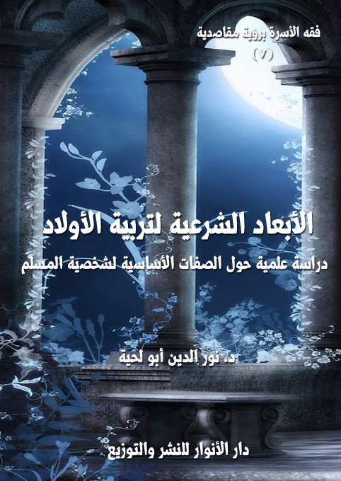

الكتاب: الأبعاد الشرعية لتربية الأولاد
المؤلف: أ.د. نور الدين أبو لحية
الناشر: دار الأنوار للنشر والتوزيع
الطبعة: الثانية، 1438 هـ
عدد الصفحات: 590
ISBN: 978-3-330-80026-7
لمطالعة الكتاب من تطبيق مؤلفاتي المجاني وهو أحسن وأيسر: هنا

التعريف بالكتاب
يتناول هذا الكتاب خمسة أبعاد مهمة يحتاج المربي إلى مراعاتها في تربية الأولاد، وهي:
البعد الإيماني: وهو المعارف الإيمانية العميقة التي تشكل قناعات المؤمن العقلية والروحية، والتي تبرمجه بعد ذلك ليسير في الحياة وفق ما تمليه حقيقة الكون والإنسان والحياة.
البعد الروحي: وهو ما ينتجه البعد الإيماني من آثار في روح المؤمن ليصلها بالله عبودية وخشوعا وإذعانا وترق في مقامات السلوك إلى الله.
البعد الأخلاقي: وهو تهذيب النفس وفق الآداب الشرعية، وكسوتها بكسوة الإنسانية التي ترفع عنها ما تتطلبه طبيعتها من سلوكات قد تخرجها عن الكمال الإنساني إلى البهيمية.
البعد الاجتماعي: وهو الارتباط الصحي بالمجتمع، فيتأدب معه وفق ما تتطلبه العلاقات الاجتماعية من آداب، ويكون عضوا إيجابيا فيه.
البعد المعرفي: وهو التزود بكل العلوم والمعارف التي أتاحها الله للإنسان، ليتعرف من خلالها على أسرار حقيقته وحقيقة الكون، وليسهل ما تتطلبه حياته من مرافق..
الأبعاد الشرعية لتربية الأولاد (15)
كما أن الشرع الحكيم بين لنا السبل والوسائل والأساليب التي نمارس بواسطتها التربية بأفضل ما يمكن وأجداه، كما عرفنا ذلك في الجزء السابق من هذه السلسلة، فإنه في الركن التالي للتربية، وأهم أسسها، وهو (أبعاد التربية) لم يتركنا ـ كذلك ـ لأنفسنا، لنعجن طينة فلذات أكبادنا بما تتطلبه أهواؤنا المتباينة، بل وضع لنا ملامح الشخصية السوية المتكاملة التي تمثل الإنسان في أرقى درجات كماله الممكنة، وأمرنا أن نبني من خلالها أنفسنا، ومن ولينا أمره من أهلنا.
ولذلك لم يكن البحث في هذه الأبعاد فضولا من القول أو حشوا من الكلام، بل هو من صميم الدين، وهو في الدين من صميم الفقه، لأن الفقيه ـ كما ذكرنا في الأجزاء السابقة ـ هو من يبحث عن تنفيذ الأوامر الإلهية وفق مقاصدها الحكيمة، لا الذي ينتظر ما أحدثه الناس ليحكم فيه صحة أو بطلانا، أو إباحة أو تحريما.
وقد رأينا من خلال استقراء النصوص، ومن خلال ما نتصوره من مواصفات الشخصية المتكاملة: أن هناك خمسة أبعاد، من استكملها كملت شخصيته، وصار متحققا بمراد الله من وجوده، وهذه الأبعاد الخمسة هي:
البعد الإيماني: وهو المعارف الإيمانية العميقة التي تشكل قناعات المؤمن العقلية والروحية، والتي تبرمجه بعد ذلك ليسير في الحياة وفق ما تمليه حقيقة الكون والإنسان والحياة.
البعد الروحي: وهو ما ينتجه البعد الإيماني من آثار في روح المؤمن ليصلها بالله عبودية وخشوعا وإذعانا وترق في مقامات السلوك إلى الله.
البعد الأخلاقي: وهو تهذيب النفس وفق الآداب الشرعية، وكسوتها بكسوة الإنسانية التي ترفع عنها ما تتطلبه طبيعتها من سلوكات قد تخرجها عن الكمال الإنساني إلى
الأبعاد الشرعية لتربية الأولاد (16)
البهيمية.
البعد الاجتماعي: وهو الارتباط الصحي بالمجتمع، فيتأدب معه وفق ما تتطلبه العلاقات الاجتماعية من آداب، ويكون عضوا إيجابيا فيه.
البعد المعرفي: وهو التزود بكل العلوم والمعارف التي أتاحها الله للإنسان، ليتعرف من خلالها على أسرار حقيقته وحقيقة الكون، وليسهل ما تتطلبه حياته من مرافق.
وبهذه الأبعاد الخمسة يبنى الإنسان، كما أنه بالأركان الخمسة يبنى الإسلام (1)، وهذه الأبعاد اقتباس من تلك الأركان:
فالشهادتان بما تحملانه من معارف عميقة تشيران إلى البعد الإيماني.
والصلاة بما تحمله من صلة بالله تشير إلى البعد الروحي.
والصيام بما يحمله من تهذيب للطبيعة الإنسانية يشير إلى البعد الأخلاقي.
والزكاة بما تحمله من تكافل اجتماعي وإحساس بآلام الآخرين تشير إلى البعد الاجتماعي.
والحج بما يحمله من سياحة في الأرض، وتعرف على أرض الله وخلق الله يشير
__________
(1) نحب أن بين أن كون هذه الخمسة هي أركان الإسلام من المتفق عليه بين المسلمين جميعا، خلافا لمن يزعم أن الشيعة يخالفون المسلمين في ذلك، ففي (وسائل الشيعة 1: 27 حديث (33) أبواب مقدّمة العبادات، أمالي الطوسي: 518 المجلس (10) حديث (1134): عن الرضا، عن آبائه، عن رسول الله (: (بني الإسلام على خمس خصال: على الشهادتين والقرينتين)، قيل له: أمّا الشهادتان فقد عرفناهما فما القرينتان؟ قال: (الصلاة، والزكاة، فإنّه لا تقبل إحداهما إلاّ بالأُخرى، والصيام، وحجّ البيت من استطاع إليه سبيلاً، وختم ذلك بالولاية)
وفي (وسائل الشيعة:1: 19 حديث (15) أبواب مقدّمة العبادات، الكافي 2: 31 كتاب الإيمان والكفر): عن أبي جعفر في حديث، قال: (بني الإسلام على خمس: شهادة أن لا إله إلى الله وأنّ محمّداً عبده ورسوله، وإقامة الصلاة، وإيتاء الزكاة، وحجّ البيت، وصيام شهر رمضان)
أما اعتبار الولاية من الأركان، فالولاية عندهم تعني الحاكمية، وقد تدخل في مضمون الشهادتين، لأن من مضامينها حاكمية الله ورسوله (، ومن ولاه الله ورسوله (.
الأبعاد الشرعية لتربية الأولاد (17)
إلاالبعد المعرفي.
وقد حاولنا في هذا الجزء الذي طال ـ رغما عنا ـ أن نبحث عن الطرق العملية في تحصيل كل ما يحتاج إليه من هذه الأبعاد، وقد رجعنا في ذلك إلى المصادر المختلفة من القرآن الكريم الذي هو الأصل، والسنة المطهرة (1)، وإلى كلام العلماء والمختصين فيما يتطلبه كل محل من معارف.
ونحب أن نبين ـ هنا ـ إلى أنا في كثير من الأحيان قد نهتم بذكر الأمثلة والنماذج، وقد نطيل فيها إذا اقتضى الأمر ذلك، وذلك لأن المربي قد يحتاج هذا النوع من النماذج.
وسبب ذلك هو أن الكلام النظري الإجمالي وحده قد يساء فهمه، وقد يصعب تطبيقه، فلذلك نذكر ما يوضح إجماله، ويفسر غموضه، كما نذكر من الأدلة ما نرى أنه يوصل إلى برد اليقين، ولو طالت، لأن العبرة بالنتيجة، لا بالوسيلة.
وكمثال على ذلك ما ذكرنا في المبحث الأول من البعد الإيماني، فقد فصلنا الكلام في (ضرورة البعد الإيماني) ودوره في تكوين الشخصية، وذلك لأن هناك قناعة منشرة باعتبار هذا البعد أمرا ثانويا، أو لا علاقة له بالشخصية السوية، فلذلك أطلنا الكلام فيه، لإقناع المربي بضرورته وأهميته.
وقد حاولنا أن نبحث عن الأدلة النصية لكل ما نذكره من أحكام، ولو من باب الإشارة، فلذلك اعتبرنا موعظة لقمان عليه السلام أصلا رجعنا إليه في كل محل، باعتبارها لم تذكر في القرآن الكريم حكاية أو مجرد قضايا، تنوع طرحها فيه، وإنما باعتبارها مقصودة بحد ذاتها في تشكيل شخصية الأولاد وتربيتهم.
__________
(1) تساهلنا في هذا الجزء في تخريج الأحاديث، فاكتفينا بالرجوع إلى تخريجات العلماء، وخاصة (كنز العمال)، و(الجامع الصغير) دون أن نرجع إلى المصادر الأصلية.
الأبعاد الشرعية لتربية الأولاد (18)
البعد الإيماني في تربية الأولاد
أولا ـ ضرورة التربية الإيمانية لبناء الشخصية السوية
إن الهدف الأساسي الذي يسعى كل مرب لتحقيقه هو بناء شخصية سوية لمن يربيه، تجعله إنسانا سليما في نفسيته، أمينا في أخلاقه، قويا في عمله وإنتاجه.
فهذه العناصر الثلاثة هي الأركان الأساسية التي تتكون منها الشخصية (1) السوية:
لأن من فقد السلام النفسي سيسقط في كهوف الخوف المرعبة التي تلمؤه حزنا وأسفا وضيقا واكتئابا، فيغرق في أوهامها، أو يتخلص منها بالهرب من كل شيء أو الهرب لكل شيء، ولذلك كان السلام هو بشرى المؤمن في الدنيا والآخرة، بل هو مقدمة كل كمال ولذة في الدنيا والآخرة.
أما من فقد الأمانة، فهو لص أو خائن أو كاذب، قد يغفل عنه المجتمع والقانون، فيخرج بزيه ومظهره لا يستر عورته أي ساتر، وقد لا يغفلون عنه، فيتسر عورات خيانته بأثواب شفافة قد تلقي عنه في أي حين ليظهر على حقيقته.
أما من فقد القوة، فهو متواكل ضعيف عاجز لا يستطيع من أمره ولا من أمر الناس
__________
(1) عرف بعضهم الشخصية بـ (أنها وحدة متكاملة الصفات والمميزات، الجسمية والعقلية والاجتماعية والمزاجية التي تبدو في التعامل الاجتماعي للفرد، والتي تميزه عن غيره من الأفراد تمييزًا واضحًا، فهي تشمل دوافع الفرد وعواطفه وميوله واهتماماته وسماته الخلقية وآراءه ومعتقداته، كما تشمل عاداته الاجتماعية وذكاءه ومواهبه الخاصة ومعلوماته وما يتخذه من أهداف ومثل وقيم اجتماعية) انظر: الأمراض النفسيةوالعقلية لأحمد عزت:54.
وقد عرفت مجلة علم النفس (المجلد الأول، العدد الأول) الشخصية، بأنها (نظام متكامل من مجموعة من الخصائص الجسمية والوجدانية النزوعية والإدراكية التي تعين هوية الفرد وتميزه عن غيره من الأفراد تمييزًا بينًا، نقلا عن المرجع السابق.
الأبعاد الشرعية لتربية الأولاد (19)
شيئا، فوجوده كعدمه وحياته كموته.
فالعنصر الأول لازم لبناء (أنا) الإنسان السوي، والعنصر الثاني لازم لوقاية النفس والمجتمع من الوحش الذي قد يسكن (أنا الإنسان)، والعنصر الثالث لازم لإخراج الإنسانية من السلبية إلى الإيجابية، ومن الاستهلاك بكل أنواعه إلى الإنتاج بكل أنواعه.
انطلاقا من هذا، فإن الأدلة على ضرورة التربية الإيمانية في بناء الشخصية السوية للطفل وغيره تتكشف من خلال ضرورة الإيمان لتحقيق هذه الأركان الثلاثة، فالإيمان هو المنبع الذي تستقى منه هذه الفضائل العظيمة، ولذلك كان أول ما وعظ به لقمان عليه السلام ابنه أن قال له: {وَإِذْ قَالَ لُقْمَانُ لاِبْنِهِ وَهُوَ يَعِظُهُ يَا بُنَيَّ لا تُشْرِكْ بِاللَّهِ إِنَّ الشِّرْكَ لَظُلْمٌ عَظِيمٌ} (لقمان:13)
فالشرك إشارة لكل ما ينحرف بالعقيدة عن حقيقتها وأهدافها، ويدخل فيه الإلحاد والتحريف، ويدخل فيه الكثير من الضلالات التي تسربت للمؤمنين كما تسربت قبل ذلك لغيرهم، فبقدر الضلالة يكون البعد عن الله، ويقدر البعد عن الله يكون انحراف الشخصية.
ويشير إلى هذه الضرورة أيضا قوله صلى الله عليه وآله وسلم وهو يعظ ابن عباس: (يا غلام إني أعلمك كلمات: احفظ اللَّه يحفظك، احفظ اللَّه تجده تجاهك، إذا سألت فسأل اللَّه، وإذا استعنت فاستعَنْ باللَّه، واعلم أن الأمة لو اجتمعت عَلَى أن ينفعوك بشيء لم ينفعوك إلا بشيء قد كتبه اللَّه لك، وإن اجتمعوا عَلَى أن يضروك بشيء لم يضروك إلا بشيء قد كتبه اللَّه عليك، رفعت الأقلام وجفت الصحف) (1)
وفي رواية: (احفظ اللَّه تجده أمامك، تعرف إِلَى اللَّه في الرخاء يعرفك في الشدة، واعلم أن ما أخطأك لم يكن ليصيبك، وما أصابك لم يكن ليخطئك، واعلم أن النصر مع الصبر،
__________
(1) رواه الترمذي، وقال: حديث حسن صحيح.
الأبعاد الشرعية لتربية الأولاد (20)
وأن الفرج مع الكرب، وأن مع العسر يسرا)
ففي هذه الموعظة إشارة للجوانب الثلاثة من السلام والأمانة والقوة، وهو ما سنبين مواضع الإشارة منه في محالها.
ونحب أن نبين أن الدراسات النفسية الحديثة أكدت أهمية هذا الجانب وضرورته، ولا بأس أن نسوق هنا ما قاله بعض المختصين في هذا، وهو الدكتور (هنري لنك) الطبيب النفسي الأمريكي، صاحب كتاب (العودة إلى الإيمان)
فقد قال منكرا على النظريات التي أشاعتها بعض المدارس النفسية الحديثة، رادا بذلك على خصوم التربية الدينية: (إن تربية الأطفال لمن أشق الواجبات وأخطرها وأدقها، ومشاكلها شديدة التعقيد والعسر، وهي بعد ذلك ذات أوجه متناقضة عند حلها يكون معها الآباء في مسيس الحاجة إلى أية معونة خارجية، مهما بلغت درجة تواضعها وبساطتها.. وقد كان طبيعياً: بعد أن استغنى الآباء المستنيرون عن المعتقدات الدينية، وضربوا بها عرض الحائط، أن يولوا وجوههم شطر مصدر جديد من مصادر المعونة، فلم يجدوا أمامهم سوى علم النفس الخاص بالأطفال، ولكن علم نفس الأطفال لم يكن بعد، على استعداد لتقديم المعونة لهم، لأن الثقة بهذا العلم لم تكن قد تعدت الثقة النظرية حتى ذلك الوقت. وكان البرهان العلمي حينذاك في مهده صغيراً برغم تعدد نظرياته. ومن هنا بدأ الآباء يعتنقون هذه النظريات التي كان أبرزها أن العقوبة البدنية ضارة من الوجهة النفسية. وأنه من الأفضل إقناع الطفل بعمل شيء ما، لا إرغامه بالقوة والعنف عليه، وأنه لا يجوز كبت الطفل بل على العكس يجب منحه الفرصة كي يعبر عن ذاته.. وأنه يجب منح الأطفال علاوة منتظمة حتى يمكنهم إدراك قيمة المال، وأن بعض الأطفال يولدون بطبيعتهم عصبيين أو ذوى حساسية مرهفة، وعليه فلا يجوز إرغامهم على أن يفعلوا، ويعملوا ما يفعله ويعمله غيرهم. وللأسف، لم يظهر أي برهان علمي أو نفسي يؤيد هذه النظريات،
الأبعاد الشرعية لتربية الأولاد (21)
بل بالعكس ثبت أن كل هذه النظريات خاطئة) (1)
وانطلاقا من هذا العجز الذي مني به علم النفس في القيام بدور البديل عن الإيمان يدعو هذا الطبيب النفسي إلى ضرورة العودة إلى الإيمان، يقول: (فقد سمعنا الكثيرين من الآباء يرددون: انهم لا يبعثون بأولادهم إلى الدروس الدينية أو إلى محلات العبادة، حتى يصلوا إلى السن التي يدركون عندها ما يجري. غير أن ما يضايقهم، ويقض مضجعهم هو هذا السؤال: ترى هل يكتسب هؤلاء الأولاد ذلك الشعور القوي الذي يمكنهم به أن يميزوا بين الخطأ والصواب؟ هل يؤمنون بتلك المثل الخلقية الواضحة التي آمنا بها منذ طفولتنا؟.. لقد قلنا فيما مضى أن بعض الأعمال خطأ والبعض الآخر صواب، لأن الله سبحانه وتعالى قد بين ذلك، أو لأن كتابه قد أورد ذلك بمعنى آخر. وقد تكون هذه الطريقة فطرية بدائية، غير أنه مما لا شك فيه أن تأثيرها كان طيباً فقد عرفنا على الأقل الكثير عن طيب الأفعال وخبيثها. أما الآن فإننا لا نقول لأولادنا إلا أن هذا التصرف خطأ، وأن ذاك صواب، لأننا نرى ذلك، أو لأن المجتمع قد اتفق على ذلك. فهل لهذا الود من القوة والبيان ما لسابقه؟ وهل له مثل أثره وهل يكتسب أطفالنا القيم الخلقية الأساسية للحياة دون الحاجة إلى ضغط العقائد الدينية، تلك القيم التي نتقبلها ونسلم بها حتى بعد أن أصبحنا لا نسلم بمصدرها الإلهي؟) (2)
ويعود إلى ذلك حين يتحدث عن مقدار ما يسديه الدين من عون للآباء في تربية أبنائهم وتهذيبهم، وتكوين شخصياتهم الفاضلة فيقول: (وبديهي أن الأطفال يختلفون، سواء بطبيعتهم أم بحسب وراثتهم، ولكن مهما كانت هذه الطبيعة أو الوراثة طيبة جيدة،
__________
(1) العودة إلى الإيمان: 113.
(2) العودة إلى الإيمان:110.
الأبعاد الشرعية لتربية الأولاد (22)
فإنه لا يمكن غرس العادات الأساسية بغير (النظام) ولما كان استياء الطفل من النظام واتجاهه عكسياً، كلما حاولت إنماء العادات الطيبة فيه، أمراً لا مفر منه، كان من الواجب استخدام كل وسيلة ذات تأثير أو ذات صفة إرغامية، تساعد على الإسراع في اكتساب هذه العادات. والواقع أن معظم الآباء يكونون في أشد الحاجة إلى الاستعانة بنصائح غيرهم، في أثناء عملية غرس العادات المرغوبة في أطفالهم. وإذا بحثنا من الناحيتين: العقلية والنفسية، وجدنا أن أعظم مصادر هذا العون هو الدين.. فالايمان بوجود الله ورسله وكتبه يهيئ للأبوين ملجأ أميناً موثوقاً به يلجئون إليه، ويضع بين أيديهم سلطة كبرى على أطفالهم كانوا يفتقرون إليها حتى لو لم يؤمنوا بها. فإن هؤلاء الآباء الذين كانوا يتساءلون كيف ينمون عادات أولادهم الخلقية ويشكلونها، في حين تنقصهم هم أنفسهم تلك التأثيرات الدينية التي كانت قد شكلت أخلاقهم من قبل، كانوا في الحقيقة يجابهون مشكلة لا حل لها، فلم يوجد بعد ذلك البديل الكامل الذي يحل محل تلك القوة الهائلة التي يخلقها الإيمان بالخالق وبناموسه الخلقي الإلهي في قلوب الناس. فتجد الآباء الذين تحرروا من الإيمان عن طريق ثقافتهم وأعمال فكرهم حيارى متسائلين على الدوام. إذن كيف يتسنى لأولئك الحيارى أن يكونوا أنفسهم ملجأ لأولادهم؟) (1)
وهو يذكر الدراسات المقارنة المؤكدة لذلك، فيقول، وهو يتحدث عن أثر دور العبادة في تشكيل شخصية الطفل: (ليس من المستغرب أن يدلنا الاختبار السابق الذكر على أن الطفل الذي يستمع إلى الدروس الدينية يتمتع بصفات شخصية أفضل ممن لا يحضرها، وأن الطفل الذي يذهب والداه إلى المعبد ذو شخصية أحسن من الطفل الذي لا يذهب والداه إليه. وقد اتضح لي بعد دراسة كاملة لعشرة آلاف شخص، أن أولئك الذين يواظبون
__________
(1) المرجع السابق: 119 وما بعدها.
الأبعاد الشرعية لتربية الأولاد (23)
على الذهاب إلى دور العبادة، كانوا ذوى صفات شخصية أفضل ممن لا يذهبون) (1)
وهو يطلب من الآباء الاهتمام بهذه الناحية منذ السنين الأولى للطفل، قبل أن يتسرب إليه الانحراف، يقول: (إن الوقت الأمثل لتعليم الطفل كيف يخضع دوافعه لقيم عليا، هو السن التي يستطيع فيها أن يتقبل ما يقال له دون أن يفهمه، فإذا استقر رأي الآباء على عدم إرسال أولادهم إلى الدروس الدينية، حتى يبلغوا السن التي يفهمون عندها ما يستمعون إليه، فهم في الحقيقة يتبعون مبدأ هاماً، لأن الوقت يكون قد فات لإصلاح ما فسد إذا بلغ الطفل السن التي يفهم بها كل ما حوله، فانه حينئذ يكون قد أضاع من عمره سنين ثمينة) (2)
انطلاقا من هذا الكلام الذي سقناه لمن يستهينون بهذه الناحية المهمة من التربية، سنحاول في هذا المبحث أن نبين أثر الإيمان في تحقيق الأركان الثلاثة التي تتكون منها الشخصية السوية للإنسان:
ويشير إليه من موعظة رسول الله صلى الله عليه وآله وسلم لابن عباس قوله: (احفظ اللَّه يحفظك)، وقوله صلى الله عليه وآله وسلم: (واعلم أن الأمة لو اجتمعت عَلَى أن ينفعوك بشيء لم ينفعوك إلا بشيء قد كتبه اللَّه لك، وإن اجتمعوا عَلَى أن يضروك بشيء لم يضروك إلا بشيء قد كتبه اللَّه عليك، رفعت الأقلام وجفت الصحف)، وقوله صلى الله عليه وآله وسلم: (واعلم أن ما أخطأك لم يكن ليصيبك، وما أصابك لم يكن ليخطئك)
ففيها يخبر رسول الله صلى الله عليه وآله وسلم ابن عباس بأن الله هو الحفيظ الذي يحفظ العبد من كل طوارق السوء، وأنه ـ لذلك ـ لو اجتمعت كل القوى على أن تضر من حفظه الله، فلن
__________
(1) العودة إلى الإيمان: 122.
(2) العودة إلى الإيمان: 130.
الأبعاد الشرعية لتربية الأولاد (24)
تستطيع، ولو اجتمعت على عكس ذلك بأن تنفعه لم تستطع، لأن الله هو النافع الضار، وهذا ما يجمع شتات الإنسان وهمته فلا يخاف إلا الله، ولا يرجو إلا الله.
ولهذا يخبرنا القرآن الكريم أنه لا يشعر بالأمن الحقيقي إلا المؤمن الذي شغل قلبه بالله، ولم يشتت قلبه بين الشركاء، قال تعالى: {الَّذِينَ آمَنُوا وَلَمْ يَلْبِسُوا إِيمَانَهُمْ بِظُلْمٍ أُولَئِكَ لَهُمُ الْأَمْنُ وَهُمْ مُهْتَدُونَ} (الأنعام:82)، وفي ذلك إشارة إلى أن مصدر المخاوف هو الشرك، واشتغال القلب بغير الله.
وكلما اشتد الشرك وعظم عظمت المخاوف، وكلما نقص الشرك أو تلاشى نقصت المخاوف أو تلاشت، فمعرفة الله والتوجه إليه هي بر الأمان، وهي سفينة نوح التي من ركبها لم تغرقه الأمواج، وهي ظل الله الذي يحتمي به من أحرقته شموس الرعب.
وقد أخبر تعالى في آية أخرى أن الشرك هو مصدر الرعب، وأنه عقوبة إلهية تقتضيها طبيعة الكفر، فقال تعالى: {سَنُلْقِي فِي قُلُوبِ الَّذِينَ كَفَرُوا الرُّعْبَ بِمَا أَشْرَكُوا بِاللَّهِ مَا لَمْ يُنَزِّلْ بِهِ سُلْطَاناً وَمَأْوَاهُمُ النَّارُ وَبِئْسَ مَثْوَى الظَّالِمِينَ} (آل عمران:151)، فقد أخبر تعالى أن مصدر خوفهم هو شركهم بالله.
وفي مقابل ذلك ذكر الله تعالى مواقف المؤمنين الصادقين الذين ملأوا قلوبهم بالله، فرزقهم الأمن التام، والسكينة المطلقة، فهذا إبراهيم - عليه السلام - وحده في الأرض يوحد الله، ووحده في الأرض يعبد الله، وتدعوه غيرته على أن يعبد غير الله، ورأفته على الجاهلين بالله، فيتحدى قومه، ويتحدى الأرض معهم، فيحطم الأصنام من غير خوف ولا وجل، وهو يدرك المصير الذي يتعرض له من يحطم تلك الأوثان المقدسة.
ولكن إبراهيم - عليه السلام - انشغل بالله، وبجوار الله عن كل المخاوف التي يتذرع بها الخلق، وعندما خوفه قومه من آلهتهم التي دعا إلى نبذها، قال متعجبا: {وَكَيْفَ أَخَافُ مَا أَشْرَكْتُمْ وَلا تَخَافُونَ أَنَّكُمْ أَشْرَكْتُمْ بِاللَّهِ مَا لَمْ يُنَزِّلْ بِهِ عَلَيْكُمْ سُلْطَاناً فَأَيُّ الْفَرِيقَيْنِ أَحَقُّ بِالْأَمْنِ إِنْ
الأبعاد الشرعية لتربية الأولاد (25)
كُنْتُمْ تَعْلَمُونَ} (الأنعام:81)
فإبراهيم - عليه السلام - في ذلك الموقف كان يقارن بين القوة الوهمية التي يستند إليها قومه، والقوة الوهمية التي كانوا يتصورون أنهم يملكونها، وبين قوة الله تعالى فأخبر أن قومه أولى بالخوف منه.
وقد عقب الله تعالى على قول إبراهيم - عليه السلام - مقررا هذه الحقيقة المطلقة، ومقننا هذه السنة الإلهية التي لا تتخلف، فقال تعالى: {الَّذِينَ آمَنُوا وَلَمْ يَلْبِسُوا إِيمَانَهُمْ بِظُلْمٍ أُولَئِكَ لَهُمُ الْأَمْنُ وَهُمْ مُهْتَدُونَ} (الأنعام:82)
وعلى خطى إبراهيم - عليه السلام - سار أصحاب محمد صلى الله عليه وآله وسلم الذين: {الَّذِينَ قَالَ لَهُمُ النَّاسُ إِنَّ النَّاسَ قَدْ جَمَعُوا لَكُمْ فَاخْشَوْهُمْ فَزَادَهُمْ إِيمَاناً وَقَالُوا حَسْبُنَا اللَّهُ وَنِعْمَ الْوَكِيلُ} (آل عمران:173)
ولذلك فإن مصدر المخاوف التي تعتري النفوس فتملأها هما وحزنا، هو حصاد نبات الغفلة والشرك، وهما مرتع من مراتع الشيطان، قال تعالى: {إِنَّمَا ذَلِكُمُ الشَّيْطَانُ يُخَوِّفُ أَوْلِيَاءَهُ فَلا تَخَافُوهُمْ وَخَافُونِ إِنْ كُنْتُمْ مُؤْمِنِينَ} (آل عمران:175)
وبخلاف هذا نجد الغافلين والجاحدين أكثر الناس مخاوف، فهم يخافون كل شيء، وقد يدركون ما يخافون، وقد لا يدركون، كما عبر بعضهم عن نفسه بقوله عن مخاوفه التي لا تنتهي، والتي لا يعلم لها سببا: (إنني أعيش في خوف دائم، في رعب من الناس والأشياء، ورعب من نفسي، لا الثروة أعطتني الطمأنينة، ولا المركز الممتاز أعطانيها ولا الصحة، ولا الرجولة، ولا المرأة، ولا الحب، ولا السهرات الحمراء... ضقت بكل شيء، بعد أن جربت كل شيء)
فالمعرفة الصحيحة بالله والتي تتولد عنها جميع المعارف، وتصحح بها جميع الفهوم، وتنشق عنها جميع المشاعر هي التي تقي المؤمن من الخوف الذي يستعبد الناس.
الأبعاد الشرعية لتربية الأولاد (26)
وسنحاول هنا ـ باختصار ـ تبيان دور الإيمان في الوقاية من ثلاث مخاوف كبرى، هي في أصلها أم المخاوف ومنبعها:
فالموت هو الشبح الأكبر الذي يملأ القلب بالمخاوف، فيتوزع منه الخوف لنفس الإنسان وسلوكه ومواقفه، شعر بذلك أو لم يشعر.
ولا يقي من أذى هذا الشبح، بل لا يقتله إلا الإيمان بالله المحيي المميت، وبحقائق الآخرة، التي تجعل الموت رحلة سعيدة ينتقل بها الإنسان إلى عوالم أكمل وأجمل.
أما العلم الأول، فيخلص الإنسان من عبودية المخاوف لكل القوى التي مثلها النمروذ عندما قال: {أَنَا أُحْيِي وَأُمِيتُ} (البقرة:258)، وحينها ينطق المؤمن بما نطق به سعيد بن جبير عندما هدده الحجاج بالقتل فقال له: (لو علمت أن الموت والحياة في يدك ما عبدت إلها غيرك)
فقد كان سعيد يدرك أن ما يتشبث به الحجاج من قوة وهم عظيم سكن عقله، فالله تعالى هو مالك الآجال، لا الحجاج ولا أي طاغية غيره، قال تعالى: {وَلِكُلِّ أُمَّةٍ أَجَلٌ فَإِذَا جَاءَ أَجَلُهُمْ لا يَسْتَأْخِرُونَ سَاعَةً وَلا يَسْتَقْدِمُونَ} (لأعراف:34)، وقال تعالى: {قُلْ لا أَمْلِكُ لِنَفْسِي ضَرّاً وَلا نَفْعاً إِلَّا مَا شَاءَ اللَّهُ لِكُلِّ أُمَّةٍ أَجَلٌ إِذَا جَاءَ أَجَلُهُمْ فَلا يَسْتَأْخِرُونَ سَاعَةً وَلا يَسْتَقْدِمُونَ} (يونس:49)، وقال تعالى: {فَإِذَا جَاءَ أَجَلُهُمْ لا يَسْتَأْخِرُونَ سَاعَةً وَلا يَسْتَقْدِمُونَ} (النحل:61} (الأعراف: 34)
فلذلك لا يفر من الموت إلا واهم سيطر عليه الخوف، فمنعه من التفكير السليم، قال تعالى: {قُلْ إِنَّ الْمَوْتَ الَّذِي تَفِرُّونَ مِنْهُ فَإِنَّهُ مُلاقِيكُمْ ثُمَّ تُرَدُّونَ إِلَى عَالِمِ الْغَيْبِ وَالشَّهَادَةِ فَيُنَبِّئُكُمْ بِمَا كُنْتُمْ تَعْمَلُونَ} (الجمعة:8)، وقال تعالى: {أَيْنَمَا تَكُونُوا يُدْرِكْكُمُ الْمَوْتُ وَلَوْ كُنْتُمْ فِي بُرُوجٍ مُشَيَّدَةٍ} (النساء:78)، وقال تعالى: {قُلْ لَوْ كُنْتُمْ فِي بُيُوتِكُمْ لَبَرَزَ الَّذِينَ
الأبعاد الشرعية لتربية الأولاد (27)
كُتِبَ عَلَيْهِمُ الْقَتْلُ إِلَى مَضَاجِعِهِم} (آل عمران:154)
أما العلم الثاني، فيلطف من العلم الأول، لأنه يحيل الموت بابا من أبواب السعادة، أو هو ـ بتعبير النورسي ـ بمثابة التقاعد الذي يناله الإنسان بعد أن تستنفذ جميع قواه العملية، يقول بديع الزمان: (إن الموت ليس عدماً، ولا اِعداماً، ولا فناءً، ولا لعبة العبث، ولا إنقراضاً بالذات من غير فاعل، بل هو: تسريح من العمل، من لدن فاعل حكيم، وهو استبدال مكان بمكان، وتبديل جسم بجسم، وانتهاءٌ من وظيفة، وانطلاق من سجن الجسم، وخلق منتظم جديد وِفقَ الحكمة الإلهية) (1)
أما ما بعد الموت، فهو المحل الذي يلقى المؤمن فيه كل ما هفت إليه نفسه في الدنيا وقصرت عنه يداه، فهو الباب الذي تنفتح من كوته الأماني، وتتحقق الرغبات، فهو قدوم على الله، ومن لا يحب القدوم على الله، وقد قيل لأعرابي اشتد مرضه: إنك ستموت، فقال: وإلى أين يذهب بي بعد الموت؟ قالوا: إلى الله، فقال: ويحكم، وكيف أخاف الذهاب إلى من لا أرى الخير إلا من عنده؟
ولهذا قال يحيى بن معاذ: (لا يكره لقاء الموت إلا مريب، فهو الذي يقرب الحبيب من الحبيب)
ولهذا أخبر الله تعالى أن الملائكة تبشر المؤمنين، وتنهاهم عن الاستسلام لشبح الخوف والحزن، وتذكرهم بالمصير الذي يقدمون عليه، قال تعالى: {إِنَّ الَّذِينَ قَالُوا رَبُّنَا اللَّهُ ثُمَّ اسْتَقَامُوا تَتَنَزَّلُ عَلَيْهِمُ الْمَلائِكَةُ أَلَّا تَخَافُوا وَلا تَحْزَنُوا وَأَبْشِرُوا بِالْجَنَّةِ الَّتِي كُنْتُمْ تُوعَدُونَ} (فصلت:30)
وانطلاقا من هذه المعارف الإيمانية صاح سحرة فرعون في وجهه بقوة الإيمان: {لَنْ
__________
(1) المكتوبات: المكتوب العشرون، الكلمة السابعة.
الأبعاد الشرعية لتربية الأولاد (28)
نُؤْثِرَكَ عَلَى مَا جَاءَنَا مِنَ الْبَيِّنَاتِ وَالَّذِي فَطَرَنَا فَاقْضِ مَا أَنْتَ قَاضٍ إِنَّمَا تَقْضِي هَذِهِ الْحَيَاةَ الدُّنْيَا} (طه:72)
وعلى خطاهم سار الصالحون متحدين كل المشانق التي نصبت لهم، وعاصفين بكل رياح الخوف التي أرادت أن تجتثهم، كعمير بن الحمام الأنصاري الذي سمع النبي صلى الله عليه وآله وسلم يقول في غزوة بدر لأصحابه: (والذي نفسي بيده ما من رجل يقاتلهم اليوم -المشركين- فيقتل صابراً محتسباً مقبلاً غير مدبر إلا أدخله الله الجنة) فيقول عمير متعجبا: (بخ بخ)، فقال صلى الله عليه وآله وسلم: (مم تبخبخ يا ابن الحمام؟ فقال: (أليس بيني وبين الجنة إلا أن أتقدم فأقاتل هؤلاء فأقتل؟ فقال صلى الله عليه وآله وسلم: (بلى)، وكان في يد عمير تمرات يأكل منها فقال: أأعيش حتى أكل هذه التمرات؟ إنها لحياة طويلة! وألقى التمرات من يده وأقبل يقاتل ويقول (1):
ركضاً إلى الله بغير زاد... إلا التقى وعمل المعاد
والصبر في الله على الجهاد... وكل زاد عرضة للنفاد
غير التقى والصبر والرشاد
ومثله أنس بن النضر الذي قاتل في أحد قتال من يطلب الموت، وعندما لقيه سعد بن معاذ قال له: يا سعد، الجنة ورب النضر: أجد ريحها من وراء أحد.
وهو الشبح الثاني من أشباح الخوف، وهو الذي يحول من يعبده أو يشرك بالله فيه إلى عبد لكل من يملك دينارا أو درهما، فلا يهنأ له عيش، ولا يستقر له سكن، بل يصير محلا لتنزلات الشياطين، يقول الغزالي: (وذلك لأن الشيطان يعده الفقر ويأمره بالفحشاء ويقول إن لم تحرص على الجمع والادخار فربما تمرض وربما تعجز وتحتاج إلى احتمال الذل في السؤال فلا يزال طول العمر يتعبه في الطلب خوفا من الفقر ويضحك عليه في احتماله التعب نقدا
__________
(1) تاريخ الطبري: 2/ 33.
الأبعاد الشرعية لتربية الأولاد (29)
مع الغفلة عن الله لتوهم تعب في ثاني الحال وربما لا يكون وفي مثله قيل: ومن ينفق الساعات في جمع ماله مخافه فقر فالذي فعل الفقر) (1)
أما المؤمن، فقد وقي من هذا الخوف، ووقي من نتائجه، لأنه يعلم أن الله هو الرزاق ذو القوة المتين، فكل رزق هو رزقه، قال تعالى: {قُلْ أَرَأَيْتُمْ مَا أَنْزَلَ اللَّهُ لَكُمْ مِنْ رِزْقٍ} (يونس:59)، وقال تعالى: {كُلُوا مِنْ رِزْقِ رَبِّكُمْ}، وقال تعالى: {وَمَا أَنْزَلَ اللَّهُ مِنَ السَّمَاءِ مِنْ رِزْقٍ فَأَحْيَا بِهِ الْأَرْضَ بَعْدَ مَوْتِهَا} (الجاثية:5)
بل إن الله تعالى يدعونا أن نأكل من المائدة التي ملأها من رزقه، قال تعالى: {يَا أَيُّهَا الَّذِينَ آمَنُوا كُلُوا مِنْ طَيِّبَاتِ مَا رَزَقْنَاكُمْ وَاشْكُرُوا لِلَّهِ إِنْ كُنْتُمْ إِيَّاهُ تَعْبُدُونَ} (البقرة:172)، وقال تعالى: {وَكُلُوا مِمَّا رَزَقَكُمُ اللَّهُ حَلالاً طَيِّباً وَاتَّقُوا اللَّهَ الَّذِي أَنْتُمْ بِهِ مُؤْمِنُونَ} (المائدة:88)
وهو يذم الذين خافوا على أن ينقص رزقهم، فقتلوا أولادهم حتى لا يأكلوا معهم، قال تعالى: {قَدْ خَسِرَ الَّذِينَ قَتَلُوا أَوْلادَهُمْ سَفَهاً بِغَيْرِ عِلْمٍ وَحَرَّمُوا مَا رَزَقَهُمُ اللَّهُ افْتِرَاءً عَلَى اللَّهِ قَدْ ضَلُّوا وَمَا كَانُوا مُهْتَدِينَ} (الأنعام:140)، وقال تعالى: {وَلا تَقْتُلُوا أَوْلادَكُمْ مِنْ إِمْلاقٍ نَحْنُ نَرْزُقُكُمْ وَإِيَّاهُم} (الأنعام:151)، وقال تعالى: {وَلا تَقْتُلُوا أَوْلادَكُمْ خَشْيَةَ إِمْلاقٍ نَحْنُ نَرْزُقُهُمْ وَإِيَّاكُمْ إِنَّ قَتْلَهُمْ كَانَ خِطْئاً كَبِيراً} (الاسراء:31)
وهذا الأمن النفسي الذي يستشعره من علم أن الرزق بيد الله هو الذي يجعل يديه لا تمتدان بالرغبة إلا إلى الله، ولذلك لم تطمح عينا رسول الله صلى الله عليه وآله وسلم لما أعطته قريش، بل قال: (يا عم والله لو وضعوا الشمس في يميني والقمر في يساري على أن أترك هذا الأمرحتى يظهره الله او أهلك فيه ما تركته)
وعلى هديه كان الصالحون أرفع الناس نفوسهم، وعندما قال هارون للفضيل بعد
__________
(1) إحياء علوم الدين: 3/ 243.
الأبعاد الشرعية لتربية الأولاد (30)
مواعظه الرقيقة: (عليك دين) قال: (نعم، دين لربي يحاسبني عليه، فالويل لي إن سألني والويل لي إن ناقشني والويل لي إن لم ألهم حجتي) قال: (إنما أعني دين العباد)، قال: (إن ربي لم يأمرني بهذا، أمر ربي أن أوحده وأطيع أمره، فقال تعالى: {وَمَا خَلَقْتُ الْجِنَّ وَالْأِنْسَ إِلَّا لِيَعْبُدُونِ مَا أُرِيدُ مِنْهُمْ مِنْ رِزْقٍ وَمَا أُرِيدُ أَنْ يُطْعِمُونِ} (الذريات:56 ـ 57)
الشبح الثالث من أشباح الخوف، هو التقلبات التي تصيب الحياة، فتملؤها زهوا وسرورا، أو كدرا وأحزانا، وهي تقلبات ينسبها أكثر الناس للزمن كما ينسبون تقلبات الشتاء والصيف للشمس والأرض والكواكب، وكما ينسبون جميع الأشياء لأربابها الوهميين، الأسماء التي لا مسميات لها.
لكن المؤمن يرى في هذه التقلبات رسائل ربانية يتعرف من خلالها على ربه، فيجعل من الكون وما يجري فيه من أنواع التدابير محرابا من محاريب الخشوع لله.
ولهذا نهى النبي صلى الله عليه وآله وسلم أن يسب الدهر، وأخبر بأن الله هو الدهر، ونرى القرآن الكريم ينسب الأيام لله، قال تعالى: {قُلْ لِلَّذِينَ آمَنُوا يَغْفِرُوا لِلَّذِينَ لا يَرْجُونَ أَيَّامَ اللَّهِ لِيَجْزِيَ قَوْماً بِمَا كَانُوا يَكْسِبُونَ} (الجاثية:14)
بل أمر الله تعالى موسى عليه السلام بأن يخبر قومه بتقلبات مقادير الله، قال تعالى: {وَلَقَدْ أَرْسَلْنَا مُوسَى بِآياتِنَا أَنْ أَخْرِجْ قَوْمَكَ مِنَ الظُّلُمَاتِ إِلَى النُّورِ وَذَكِّرْهُمْ بِأَيَّامِ اللَّهِ إِنَّ فِي ذَلِكَ لَآياتٍ لِكُلِّ صَبَّارٍ شَكُورٍ} (ابراهيم:5) فجميع التقلبات التي مرت ببني إسرائيل مما ورد في القرآن الكريم كقوله تعالى: {وَإِذْ قَالَ مُوسَى لِقَوْمِهِ اذْكُرُوا نِعْمَةَ اللَّهِ عَلَيْكُمْ إِذْ أَنْجَاكُمْ مِنْ آلِ فِرْعَوْنَ يَسُومُونَكُمْ سُوءَ الْعَذَابِ وَيُذَبِّحُونَ أَبْنَاءَكُمْ وَيَسْتَحْيُونَ نِسَاءَكُمْ وَفِي ذَلِكُمْ بَلاءٌ مِنْ رَبِّكُمْ عَظِيمٌ} (ابراهيم:6) تصريفات إلهية سخر لها من سخر.
ولهذه المعرفة قيمة كبيرة في التخفيف من وقع البلاء، فمن عرف أن البلايا من مولاه
الأبعاد الشرعية لتربية الأولاد (31)
وسيده الذي هو أرحم به من والدته ووالده، كيف يستثقل البلاء أم كيف يخافه، وقد قال ابن عطاء الله عن الفرق بين العارف المسغرق في حضرة سيده، وبين الغافل في النظر إلى تصاريف الأقدار فقال: (الغافل إذا أصبح ينظر ماذا يفعل، والعاقل ينظر ماذا يفعل الله به)
وقد كان عمر بن عبد العزيز يقول: (أصبحت ومالي سرور إلا في مواقع القدر)
ويشير إليها من موعظة رسول الله صلى الله عليه وآله وسلم لابن عباس قوله: (احفظ اللَّه تجده تجاهك)، فمن شعر بمواجهة الله له كيف يعصيه، ولهذا كان من وسائل تربية الصالحين تعميق معاني المراقبة لله وما يؤدي إليها من التعريف بالله.
والإيمان بذلك هو الحصن الوحيد الذي يقي من تحصن به من ذلك الوحش الكاسر الذي يختبئ في كيانه، والذي قد يبرز في أي لحظة إن لم يجد من وازعا من دين أو رادعا من خلق.
وقد تنبه الإنسان ـ باعتبار طبيعته المعقدة ـ إلى حاجته إلى هذه الحصون الأخلاقية التي تضبط سلوكه، فقال الفيلسوف البريطاني المعاصر برتراند رسل معبرا عن هذا الاكتشاف: (الإنسان أكثر تعقيداً في نزعاته ورغباته من أي حيوان آخر، وتنشأ الصعوبات التي يواجهها من هذا التعقيد، فهو ليس اجتماعياً تماماً مثل النمل والنحل، ولا هو انفرادي تماماً مثل الأسود والنمور، إنه حيوان شبه اجتماعي، وبعض نزعاته ورغباته اجتماعي، وبعضها انفرادي ويبدو الجانب الاجتماعي في طبيعته من أن الحبس الانفرادي يعتبر عقوبة بالغة الشدة، ويبدو الجانب الآخر في حبه للاستقلال بأموره الخاصة، وعدم استعداده للتحدث فيها إلى الغرباء. ولأننا لسنا اجتماعيين تماماً فنحن في حاجة إلى أخلاق، لتوحي لنا بالأهداف، وإلى قواعد أخلاقية لتفرض علينا قواعد التصرفات، والنحل -كما يبدو-
الأبعاد الشرعية لتربية الأولاد (32)
ليس في حاجة إلى شيء من هذا، فهو يتصرف بما تمليه عليه مصلحة الجماعة) (1)
وقال جمال الدين الأفغاني مشيرا إلى قصور القانون عن توفير الحصانة الأخلاقية: (ليس بخاف أن قوة الحكومة إنما تأتي على كف العدوان الظاهر، ورفع الظلم البين، أما الاختلاس والزور المموه والباطل المزين والفساد الملون بصبغ من الصلاح، ونحو ذلك مما يرتكبه أرباب الشهوات، فمن أين للحكومة أن تستطيع دفعه؟ وأنى يكون لها الاطلاع على خفيات الحيل، وكامنات الدسائس ومطويات الخيانة ومستورات الغدر حتى تقوم بدفع ضرره؟ على أن الحاكم وأعوانه قد يكونون، بل كثيراً ما كانوا ويكونون ممن تملكهم الشهوات، فأي وازع يأخذ على أيدي أصحاب السلطة، ويمنعهم من مطاوعة شهواتهم المتسلطة على عقولهم؟ وأي غوث ينقذ ضعفاء الرعايا وذوي المسكنة منهم من شره أولئك المتسلطين وحرصهم؟) (2)
وقال الفيلسوف الألماني (فيختة): (الأخلاق من غير دين عبث)
ونحن لا ننكر هنا أثر القانون ولا دوره، ولا ندعو إلى رفع القوانين لعدم غناها، وإنما نقول بأن القوانين تحتاج إلى وازع ذاتي يدعو إلى تطبيقها، ولا يكون هذا الوازع في غير الإيمان، لأن الذي يطبق القانون تحت عصا الشرطي، سيخرقه إذا ما غاب الشرطي، يقول الدكتور محمد عبد الله دراز: (لا قيام للحياة في الجماعة إلا بالتعاون بين أعضائها، وهذا التعاون إنما يتم بقانون ينظم علاقاته، ويحدد حقوقه وواجباته. وهذا القانون لا غنى له عن سلطان نازع وازع، يكفل مهابته في النفوس، ويمنع انتهاك حرماته. ونقرر أنه ليس على وجه الأرض قوة تكافئ قوة التدين، أو تدانيها في كفالة احترام القانون وضمان تماسك المجتمع، واستقرار نظامه، والتئام أسباب الراحة والطمأنينة فيه.. والسر في ذلك أن
__________
(1) المجتمع البشري في الأخلاق والسياسة، لبرتراندرسل:10.
(2) رسالة الرد على الدهريين:72.
الأبعاد الشرعية لتربية الأولاد (33)
الإنسان يمتاز عن سائر الحيوانات الحية بأن حركاته وتصرفاته الاختيارية يتولى قيادتها شيء لا يقع عليه سمعه ولا بصره، ولا يوضع في يده ولا في عنقه. ولا يجري في دمه ولا في عضلاته ولا في أعصابه، وإنما هو معنى إنساني روحاني اسمه الفكرة والعقيدة، ولقد ضل قوم قلبوا هذا الوضع، وحسبوا أن الفكر والضمير لا يؤثران في الحياة المادية والاقتصادية بل يتأثران بها.. أجل إن الإنسان يساق من باطنه لا من ظاهره، وليست قوانين الجماعات ولا سلطان الحكومات بكافيين وحدهما لإقامة مدينة فاضلة تحترم فيها الحقوق وتؤدى الواجبات على وجهها الكامل، فإن الذي يؤدي واجبه رهبة من السوط أو السجن أو العقوبة المالية. لا يلبث أن يهمله متى اطمأن إلى أنه سيفلت من طائلة القانون.. ومن الخطأ البين أن نظن أن في نشر العلوم والثقافات وحدها ضماناً للسلام والرخاء وعوضاً عن التربية والتهذيب الديني والخلقي، ذلك لأن العلم سلاح ذو حدين يصلح للهدم والتدمير، كما يصلح للبناء والتعمير، ولابد في حسن استخدامه من رقيب أخلاقي يوجهه لخير الإنسانية وعمارة الأرض لا إلى الشر والفساد ذلكم الرقيب هو العقيدة والإيمان) (1)
وسنكتفي هنا لتقرير هذه الحقائق بذكر مثال درج المعاصرون على ذكره لأهميته وقيمته، وهو ما فعلته الولايات المتحدة الأمريكية بعد أن انتشرت فيها عادة السكر وشرب الخمور انتشاراً أقنع الحكومة بضرر ذلك على الإنسان الأمريكي، فلجأت للقانون كرادع عن هذا السلوك.
وقصة ذلك من البداية أنه حوالي عام 1918 ثارت المشكلة في الرأي العام الأمريكي، وفي عام 1919 أدخل في الدستور الأمريكي تحت عنوان (التعديل الثامن عشر)، وفي نفس السنة أيد هذا التعديل بأمر حظر، أطلق عليه التاريخ قانون (فولستد).
وقد أعدت لتنفيذ هذا التحريم داخل الأراضي الأمريكية كافة وسائل الدولة
__________
(1) من كتاب (الدين) للدكتور محمد عبد الله دراز.
الأبعاد الشرعية لتربية الأولاد (34)
وإمكاناتها الضخمة: فجند الأسطول كله لمراقبة الشواطئ، منعاً للتهريب، وجند الطيران لمراقبة الجو، وشغلت أجهزة الحكومة واستخدمت كل وسائل الدعاية والإعلام لمحاربة الخمر، وبيان مضارها وجندت كذلك المجلات والصحف والكتب والنشرات والصور والسينما والأحاديث والمحاضرات وغيرها.
ويقدرون ما أنفقته الدولة في الدعاية ضد الخمر بما يزيد على ستين مليوناً من الدولارات، وأن ما أصدرته من كتب ونشرات يبلغ عشرة بلايين صفحة، وما تحملته في سبيل تنفيذ قانون التحريم -في مدة أربعة عشر عاماً_ لا يقل عن مائتين وخمسين مليون جنيه، وقد أعدم في هذه المدة ثلاثمائة نفس، وسجن 532،335 نفس، وبلغت الغرامات ستة عشر مليون جنيه، وصادرت من الأملاك ما بلغ أربعمائة مليون وأربعة ملايين جنيه، ولكن كل ذلك لم يزد الأمة الأمريكية إلا تمسكا بالخمر، وعناداً في تعاطيها، حتى اضطرت الحكومة سنة 1933 الى إلغاء هذا القانون، وإباحة الخمر إباحة مطلقة (1).
وهكذا فشل القانون بكل ما وفر له من وسائل تنفيذ في حمياة الإنسان من مرض سلوكي واحد.
وفي مقابل ذلك، وفي مجتمع لم يكن يقل عن المجتمع الأمريكي حبا للخمر ولا غراما بها، استطاعت آية واحدة، أو أمر إلهي واحد أن يقضي على الخمر لا في مجتمع المدينة وحدها، بل في المجتمعات الإسلامية جميعا منذ أربعة عشر قرنا، وهي قوله تعالى: {يَا أَيُّهَا الَّذِينَ آمَنُوا إِنَّمَا الْخَمْرُ وَالْمَيْسِرُ وَالْأَنْصَابُ وَالْأَزْلامُ رِجْسٌ مِنْ عَمَلِ الشَّيْطَانِ فَاجْتَنِبُوهُ لَعَلَّكُمْ تُفْلِحُونَ} (المائدة:90)
ويحكي الصحابة عن البداية، قال أبو سعيد: سمعت رسول الله صلى الله عليه وآله وسلم يقول: (يا أيها
__________
(1) ذكر هذه الإحصاءات الأستاذ أبو الأعلى المودودي في كتابه (تنقيحات) وعنه نقلها الأستاذ أبو الحسن الندوي في كتابه (ماذا خسر العالم بانحطاط المسلمين) ص 177 هامش.
الأبعاد الشرعية لتربية الأولاد (35)
الناس إن الله يبغض الخمر، ولعل الله سينزل فيها أمراً، فمن كان عنده شيء فليبعه ولينتفع به) ـ وذلك قبل التحريم النهائي ـ قال أبو سعيد: فما لبثنا إلا يسيراً، حتى قال: (إن الله حرم الخمر، فمن أدركته هذه الآية -يعني آية المائدة السابقة- وعنده منها شيء فلا يشرب ولا يبيع)، قال أبو سعيد: فاستقبل الناس بما كان عندهم منها طرق المدينة فسفكوها -أي صبوها وأسالوها (1).
ولم يكن للشرطة ولا من يدعمهم حينها وجود، بل كان الإيمان وحده، عن أنس قال: كنت أسقي أبا عبيدة وأبي بن كعب فجاءهم آت فقال: إن الخمر حرمت... فقال أبو طلحة: قم يا أنس فأهرقها... فأهرقها (2).
وعن أبي موسى قال: بينما نحن قعود على شراب لنا ونحن نشرب الخمر حلة ـ أي حلالاً ـ إذ قمت حتى آتي رسول الله صلى الله عليه وآله وسلم فأسلم عليه وقد نزل تحريم الخمر: {يَا أَيُّهَا الَّذِينَ آمَنُوا إِنَّمَا الْخَمْرُ وَالْمَيْسِرُ وَالْأَنْصَابُ وَالْأَزْلامُ رِجْسٌ مِنْ عَمَلِ الشَّيْطَانِ فَاجْتَنِبُوهُ لَعَلَّكُمْ تُفْلِحُونَ} (المائدة:90)، فجئت إلى أصحابي، فقرأتها عليهم... قال: وبعض القوم شربته في يده شرب بعضاً وبقي بعض في الإناء... فقال بالإناء تحت شفته العليا كما يفعل الحجام ثم صبوا ما في باطيتهم فقالوا: انتهينا ربنا... انتهينا ربنا) (3)
وقد ذكر القرآن الكريم تأثير الإيمان في الردع عن القتل في الوقت الذي لم يكن هناك شرطة ولا سجون ولا إعدام، فقال تعالى ذاكرا قصة ابني آدم بالحق: {وَاتْلُ عَلَيْهِمْ نَبَأَ ابْنَيْ آدَمَ بِالْحَقِّ إِذْ قَرَّبَا قُرْبَاناً فَتُقُبِّلَ مِنْ أَحَدِهِمَا وَلَمْ يُتَقَبَّلْ مِنَ الْآخَرِ قَالَ لَأَقْتُلَنَّكَ قَالَ إِنَّمَا يَتَقَبَّلُ اللَّهُ مِنَ الْمُتَّقِينَ لَئِنْ بَسَطْتَ إِلَيَّ يَدَكَ لِتَقْتُلَنِي مَا أَنَا بِبَاسِطٍ يَدِيَ إِلَيْكَ لِأَقْتُلَكَ إِنِّي أَخَافُ اللَّهَ
__________
(1) رواه مسلم.
(2) رواه البخاري ومسلم.
(3) رواه الطبري.
الأبعاد الشرعية لتربية الأولاد (36)
رَبَّ الْعَالَمِينَ} (المائدة:27 ـ 28)
وهي الركن الثالث من أركان الشخصية السوية، لأن الضعيف لا يستطيع أن يفعل لنفسه شيئا، فكيف يفعل لغيره.
ولهذا ذم الله تعالى المستضعفين الذين قعد بهم عجزهم وكسلهم عن الخروج عن ضعفهم، فقال تعالى: {إِنَّ الَّذِينَ تَوَفَّاهُمُ الْمَلائِكَةُ ظَالِمِي أَنْفُسِهِمْ قَالُوا فِيمَ كُنْتُمْ قَالُوا كُنَّا مُسْتَضْعَفِينَ فِي الْأَرْضِ قَالُوا أَلَمْ تَكُنْ أَرْضُ اللَّهِ وَاسِعَةً فَتُهَاجِرُوا فِيهَا فَأُولَئِكَ مَأْوَاهُمْ جَهَنَّمُ وَسَاءَتْ مَصِيراً} (النساء:97)، فسماهم تعالى ظالمين مع أنهم أقروا بأنهم كانوا مستضعفين.
ولم يستثن تعالى من هؤلاء إلا من عجز عجزا يقعده عن أي حيلة، قال تعالى: {إِلَّا الْمُسْتَضْعَفِينَ مِنَ الرِّجَالِ وَالنِّسَاءِ وَالْوِلْدَانِ لا يَسْتَطِيعُونَ حِيلَةً وَلا يَهْتَدُونَ سَبِيلاً فَأُولَئِكَ عَسَى اللَّهُ أَنْ يَعْفُوَ عَنْهُمْ وَكَانَ اللَّهُ عَفُوّاً غَفُوراً} (النساء:99)
بل إن القرآن الكريم ينهى هؤلاء المستضعفين عن أن يقعد بهم ضعفهم الحسي عن الاستعداد والهم، ولهذا يثني على الصالحين المستضعفين بقوله تعالى: {وَلا عَلَى الَّذِينَ إِذَا مَا أَتَوْكَ لِتَحْمِلَهُمْ قُلْتَ لا أَجِدُ مَا أَحْمِلُكُمْ عَلَيْهِ تَوَلَّوْا وَأَعْيُنُهُمْ تَفِيضُ مِنَ الدَّمْعِ حَزَناً أَلّا يَجِدُوا مَا يُنْفِقُونَ} (التوبة:92)، ولهذا أثنى عليهم صلى الله عليه وآله وسلم بقوله: (إن بالمدينة أقواماً ما قطعتم وادياً ولا سرتم سيراً إلا وهم معكم) قالوا: وهم بالمدينة؟ قال: (نعم حبسهم العذر) (1)
بل إن الله تعالى اشترط في هؤلاء المستضعفين النصح لله ورسوله في حال قعودهم وعجزهم، فقال تعالى: {لَيْسَ عَلَى الضُّعَفَاءِ وَلا عَلَى الْمَرْضَى وَلا عَلَى الَّذِينَ لا يَجِدُونَ مَا
__________
(1) رواه البخاري ومسلم.
الأبعاد الشرعية لتربية الأولاد (37)
يُنْفِقُونَ حَرَجٌ إِذَا نَصَحُوا لِلَّهِ وَرَسُولِهِ مَا عَلَى الْمُحْسِنِينَ مِنْ سَبِيلٍ وَاللَّهُ غَفُورٌ رَحِيمٌ} (التوبة:91)
ولهذا، فإن دين الله تعالى لا يقوم به ولا يمثله إلا الأقوياء أصحاب الهمم العالية، أما الذين يتصورون الدين ضعفا وتماوتا وذلة، فهم لا يميتون شخصياتهم فقط، بل يميتون الدين أيضا.
وقد كان رسول الله صلى الله عليه وآله وسلم وهو القدوة الأول للمؤمنين إذا مشى أسرع في مشيته، كأنما ينحدر من صبب، يقول أبو هريرة: (ما رأيت أحداً أحسن من رسول الله صلى الله عليه وآله وسلم كأن الشمس تجرى في وجهه، ولا رأيت أحداً أسرع في مشيته منه، كأنما الأرض تطوى له، وإنما لنجهد أنفسنا، وإنه لغير مكترث) (1)
ويشير إلى هذا الركن من موعظة رسول الله صلى الله عليه وآله وسلم لابن عباس قوله صلى الله عليه وآله وسلم: (واعلم أن الأمة لو اجتمعت عَلَى أن ينفعوك بشيء لم ينفعوك إلا بشيء قد كتبه اللَّه لك، وإن اجتمعوا عَلَى أن يضروك بشيء لم يضروك إلا بشيء قد كتبه اللَّه عليك، رفعت الأقلام وجفت الصحف)، وقوله صلى الله عليه وآله وسلم: (إذا سألت فاسأل اللَّه، وإذا استعنت فاستعَنْ باللَّه)، وقوله صلى الله عليه وآله وسلم: (واعلم أن النصر مع الصبر، وأن الفرج مع الكرب، وأن مع العسر يسرا)
لأن أساس القوة هو شعور القوي بأن له من المدد ما يتغلب به على كل صعب، ولذلك قال صلى الله عليه وآله وسلم في الحديث الذي يبين مصادر قوة المؤمن: (المؤمن القوي خير وأحب إلى الله من المؤمن الضعيف، وفي كل خير، احرص على ما ينفعك واستعن بالله ولا تعجز، وإن أصابك شيء فلا تقل: لو أني فعلت لكان كذا وكذا، ولكن قل قدر الله وما شاء فعل، فان لو تفتح عمل الشيطان) (2) فجعل الاستعانة بالله منافية وصادة لأوهام العجز.
__________
(1) رواه الترمذي، وقال: حديث غريب وأخرجه أحمد وابن حبان وابن سعد.
(2) رواه أحمد.
الأبعاد الشرعية لتربية الأولاد (38)
ولهذا قال تعالى يذكر موقف رسول الله صلى الله عليه وآله وسلم، وهو في الغار يتحدى المشركين: {إِلاّ تَنْصُرُوهُ فَقَدْ نَصَرَهُ اللَّهُ إِذْ أَخْرَجَهُ الَّذِينَ كَفَرُوا ثَانِيَ اثْنَيْنِ إِذْ هُمَا فِي الْغَارِ إِذْ يَقُولُ لِصَاحِبِهِ لا تَحْزَنْ إِنَّ اللَّهَ مَعَنَا فَأَنْزَلَ اللَّهُ سَكِينَتَهُ عَلَيْهِ وَأَيَّدَهُ بِجُنُودٍ لَمْ تَرَوْهَا وَجَعَلَ كَلِمَةَ الَّذِينَ كَفَرُوا السُّفْلَى وَكَلِمَةُ اللَّهِ هِيَ الْعُلْيَا وَاللَّهُ عَزِيزٌ حَكِيمٌ} (التوبة:40)
فشعور رسول الله صلى الله عليه وآله وسلم بمعية الله جعله يتحدى كل ما أعد المشركين من وسائل الرصد التي تريد أن تغتاله وتغتال دينه.
وبمثل هذا القول علم الله تعالى موسى - عليه السلام - مصححا تصوره لفرعون وزبانيته: {كَلَّا فَاذْهَبَا بِآياتِنَا إِنَّا مَعَكُمْ مُسْتَمِعُونَ} (الشعراء:15)، وكأنه يقول له: (كلا يا موسى فلا يساوي فرعون شيئا ما دمت معك)
ولهذا سار موسى - عليه السلام - رابط الجأش، شجاعا، في عزة تقصر معها عزة كل ما أحيط بفرعون من هالة وزينة، فقد كان مع موسى - عليه السلام - ربه تعالى، ولهذا أجاب بني إسرائيل بعد أن أدركهم فرعون وجنده بقوله الذي يستعيد فيه موسى - عليه السلام - ماقيل له في ذلك اليوم: {كَلَّا إِنَّ مَعِيَ رَبِّي سَيَهْدِينِ} (الشعراء:62)
ولهذا الشعور تأثيره العظيم في بث العزيمة في نفس المؤمن، لأنه حينها لا ينظر إلى قوته المحدودة، وإنما ينظر إلى قوة الله التي تمده بالمدد كل حين، بل إنه ينفي قوته بجنب قوة الله، ولهذا قال تعالى: {إِنْ يَنْصُرْكُمُ اللَّهُ فَلا غَالِبَ لَكُمْ وَإِنْ يَخْذُلْكُمْ فَمَنْ ذَا الَّذِي يَنْصُرُكُمْ مِنْ بَعْدِهِ وَعَلَى اللَّهِ فَلْيَتَوَكَّلِ الْمُؤْمِنُونَ} (آل عمران:160)، فاعتبر النصر من الله والخذلان من الله.
ولهذا تحدى الأنبياء ـ صلوات الله وسلامه عليهم ـ أقوامهم، فلم يبهرهم ما أعد لهم من صنوف الفتن، قال تعالى ذاكرا قول هودا عليه السلام لقومه بعد تكذيبهم له: {إِنِّي أُشْهِدُ اللَّهَ وَاشْهَدُوا أَنِّي بَرِيءٌ مِمَّا تُشْرِكُونَ مِنْ دُونِهِ فَكِيدُونِي جَمِيعاً ثُمَّ لا تُنْظِرُونِ إِنِّي تَوَكَّلْتُ عَلَى اللَّهِ
الأبعاد الشرعية لتربية الأولاد (39)
رَبِّي وَرَبِّكُمْ مَا مِنْ دَابَّةٍ إِلَّا هُوَ آخِذٌ بِنَاصِيَتِهَا إِنَّ رَبِّي عَلَى صِرَاطٍ مُسْتَقِيمٍ} (هود:54 ـ 56)
والقوة التي نريدها هنا ليست قوة اليد والسلاح فقط، وإنما قوة الشخصية التي تجعل صاحبها جبلا من جبال الصمود والهمة والعزيمة في جميع المجالات.
ولهذا فإن القوي لا يبهره السلطان ولا الخدم ولا الحشم، لأن شعوره بمعية الله يجعل كل شيء أمامه هباء أو كالهباء إذا تأملته لم تجده شيئا، وقد طلب الخليفة الأموي هشام بن عبد الملك طاووس اليماني يوماً إلى مجلسه، فلما دخل عليه، لم يسلم عليه بامرة المؤمنين، ولكن قال: (السلام عليك يا هشام) وجلس بازائه، وقال: كيف أنت يا هشام؟ فغضب هشام غضباً شديداً حتى هم بقتله، وقال له: يا طاووس ما الذي حملك على ما صنعت؟ قال: وما الذي صنعت؟ فازداد غضباً وغيظاً، وقال: خلعت نعليك بحاشية بساطي ولم تقبِّل يدي، ولم تسلم على بإمرة المؤمنين، ولم تكنني، وجلست بازائي بغير إذني، وقلت كيف أنت يا هشام، قال: أما ما فعلت من وضع نعلي بحاشية بساطك فإني أضعهما بين يدي رب العزة كل يوم خمس مرات، وأما قولك لم تقبِّل يدي فإني سمعت علي بن أبي طالب يقول: (لا يحل لرجل أن يقبِّل يد أحد إلا امرأته من شهوة، أو ولده من رحمة) وأما قولك لم تسلم على بإمرة المؤمنين فليس كل الناس راضين بإمرتك، فكرهت أن أكذب، وأما قولك جلست بازائي فإني سمعت أمير المؤمنين علياً يقول: (إذا أردت أن تنظر إلى رجل من أهل النار فانظر إلى رجل جالس وحوله قوم قيام)، فقال هشام: عظني... فقال: سمعت من أمير المؤمنين علي أن في جهنم حيات كالقلال، وعقارب كالبغال، تلدغ كل أمير لا يعدل في رعيته - ثم قام.
والقوي لا تغريه الأموال مهما كانت، فلذلك لا يمد يده لغير ربه، ولا يبيع دينه بأي رشوة مهما عظمت، وقد بعث النبي صلى الله عليه وآله وسلم عبد الله بن رواحة إلى خيبر، ليقوم بتقدير ثمر النخل فيها، إذ كان لهم نصفها، وللمسلمين نصفها، وقام عبد الله بالمهمة فقال: في هذه كذا،
الأبعاد الشرعية لتربية الأولاد (40)
وفي هذه كذا، فجمع اليهود له حلياً من حلى نسائهم وقالوا له: هذا لك، وخفف عنا في القسمة وتجاوز فقال: (يا معشر اليهود.. والله والله إنكم لمن أبغض خلق الله إلي، وما ذاك بحاملي أن أحيف عليكم. أما الذي عرضتم له من الرشوة فإنها سحت، وإنا لا نأكلها) فلم يملك اليهود إلا أن قالوا: بهذا قامت السموات والأرض.
والقوي هو الذي لا يمكله جيبه ولا أمواله، بل يملكها ليصرفها في مواضع الحق والخير، لأن من أخطر الضعف البخل، ولهذا جمع صلى الله عليه وآله وسلم بين البخل والجبن، فقال: (اللهم إني أعوذ بك من العجز والكسل والجبن والبخل والهرم وعذاب القبر وفتنة الدجال) (1)
ثانيا ـ مصادر التربية الإيمانية وضوابط استثمارها
تتحدد آثار التربية الإيمانية انطلاقا من المصادر التي تستقى منها، فالمصدر هو الذي يحدد صحة العقيدة، كما أنه المحدد لتأثيرها في النفس.
ولهذا فإن أساس كل الانحرافات العقدية هو التحريفات التي لحقت بكتب الديانات المختلفة، بحيث أصبحت تحمل صورا مشوهة عن الله تعالى، لا تزيد المتعلقين بها إلا جهلا بالله.
وانطلاقا من القرآن الكريم، فإن للعقيدة مصدرين أساسيين كبيرين، بقدر الاستفادة منهما تترسخ العقيدة في النفس، وينفعل لها السلوك والوجدان.
وقد عبر القرآن الكريم عن هذين المصدرين بمصطلح (الآيات)، وهو مصطلح قرآني يعني: العلامات الواضحات الباهرات.
وقد أشار القرآن الكريم إلى المصدر الأول بقوله تعالى: {وَلَقَدْ أَنْزَلْنَا إِلَيْكَ آيَاتٍ بَيِّنَاتٍ وَمَا يَكْفُرُ بِهَا إِلَّا الْفَاسِقُونَ} (البقرة:99)، وقال تعالى: {تِلْكَ آيَاتُ اللَّهِ نَتْلُوهَا
__________
(1) رواه أحمد وعبد بن حميد ومسلم والنسائي.
الأبعاد الشرعية لتربية الأولاد (41)
عَلَيْكَ بِالْحَقِّ وَإِنَّكَ لَمِنَ الْمُرْسَلِينَ} (البقرة:252)، وقال تعالى: {ذَلِكَ نَتْلُوهُ عَلَيْكَ مِنَ الْآياتِ وَالذِّكْرِ الْحَكِيمِ} (آل عمران:58)، وقال تعالى: {لَيْسُوا سَوَاءً مِنْ أَهْلِ الْكِتَابِ أُمَّةٌ قَائِمَةٌ يَتْلُونَ آيَاتِ اللَّهِ آنَاءَ اللَّيْلِ وَهُمْ يَسْجُدُونَ} (آل عمران:113)
وأشار إلى المصدر الثاني بقوله تعالى: {إِنَّ فِي خَلْقِ السَّمَاوَاتِ وَالْأَرْضِ وَاخْتِلافِ اللَّيْلِ وَالنَّهَارِ وَالْفُلْكِ الَّتِي تَجْرِي فِي الْبَحْرِ بِمَا يَنْفَعُ النَّاسَ وَمَا أَنْزَلَ اللَّهُ مِنَ السَّمَاءِ مِنْ مَاءٍ فَأَحْيَا بِهِ الْأَرْضَ بَعْدَ مَوْتِهَا وَبَثَّ فِيهَا مِنْ كُلِّ دَابَّةٍ وَتَصْرِيفِ الرِّيَاحِ وَالسَّحَابِ الْمُسَخَّرِ بَيْنَ السَّمَاءِ وَالْأَرْضِ لَآياتٍ لِقَوْمٍ يَعْقِلُونَ} (البقرة:164)، وقال تعالى: {إِنَّ فِي خَلْقِ السَّمَاوَاتِ وَالْأَرْضِ وَاخْتِلافِ اللَّيْلِ وَالنَّهَارِ لَآياتٍ لِأُولِي الْأَلْبَابِ} (آل عمران:190)
وسنحاول في هذا المبحث أن نتعرف على كيفية الاستفادة من هذين المصدرين في التربية الإيمانية، والضوابط التي تحمي هذا الاستثمار من أي انحراف.
ونريد به القرآن الكريم، وما يفسره ويبينه ويعمق معانيه من السنة الصحيحة، فالقرآن الكريم هو الكتاب الوحيد المعرف بالله، فلا يعرف الله إلا الله، والله هو المتكلم بالقرآن الكريم، فلذلك كان الله تعالى هو معرف نفسه بنفسه.
زيادة على ذلك، فإن في القرآن الكريم كل حقائق الوجود التي تعمق معاني الإيمان في نفس المؤمن، والتي ترفع عنه كل حيرة قد تلجئه إليها الفلسفات والترهات التي لا تعتمد على المصادر المعصومة، قال تعالى: {وَنَزَّلْنَا عَلَيْكَ الْكِتَابَ تِبْيَاناً لِكُلِّ شَيْءٍ} (النحل:89)
ولهذا كان من أوصاف القرآن الكريم أنه {َشِفَاءٌ لِمَا فِي الصُّدُورِ}، وما في الصدور مصطلح قرآني يعني المعارف والوجدانات المختلفة التي تتحكم في حياة الإنسان،
الأبعاد الشرعية لتربية الأولاد (42)
والصدور هي محل القلب، الذي هو محل التعقل، كما قال تعالى: {أَفَلَمْ يَسِيرُوا فِي الْأَرْضِ فَتَكُونَ لَهُمْ قُلُوبٌ يَعْقِلُونَ بِهَا أَوْ آذَانٌ يَسْمَعُونَ بِهَا فَإِنَّهَا لا تَعْمَى الْأَبْصَارُ وَلَكِنْ تَعْمَى الْقُلُوبُ الَّتِي فِي الصُّدُورِ} (الحج:46)
وذلك لأن الانحرافات المختلفة التي تحملها العقائد الضالة هي عبارة عن أمراض خطيرة لا يكفي في علاجها المنطق البرهاني وحده الذي مارسه الفلاسفة والمتكلمون، ولا المنطق الوجداني الذي مارسه الصوفية والإشراقيون، لأن كل أولئك يتوجهون بخطابهم للطيفة من لطائف الإنسان لا يعدونها، بينما القرآن الكريم يخاطب اللطائف جميعا، وبالحقائق التي لا يزورها البرهان، ولا يضللها الوجدان.
وكمثال على ذلك يبين يسر أساليب القرآن الكريم وشمولها وجمالها وعمق معانيها قراءة واعية لسورة الطور، فهي وحدها كفيلة بتعميق معاني من الإيمان لا تستطيع مجلدات ضخمة من الجدل أن تغرس ما تغرسه، يقول سيد قطب معرفا بهذه السورة العظيمة: (هذه السورة تمثل حملة عميقة التأثير فى القلب البشري، ومطاردة عنيفة للهواجس والشكوك والشبهات والأباطيل التي تساوره وتتدسس إليه وتختبئ هنا وهناك في حناياه. ودحض لكل حجة وكل عذر قد يتخذه للحيدة عن الحق والزيغ عن الإيمان.. حملة لا يصمد لها قلب يتلقاها، وهي تلاحقه حتى تلجئه إلى الإذعان والاستسلام! وهي حملة يشترك فيها اللفظ والعبارة، والمعنى والمدلول، والصور والظلال، والإيقاعات الموسيقية لمقاطع السورة وفواصلها على السواء. ومن بدء السورة إلى ختامها تتوالى آياتها كما لو كانت قذائف، وإيقاعاتها كما لو كانت صواعق، وصورها وظلالها كما لو كانت سياطا لاذعة للحس لا تمهله لحظة واحدة من البدء إلى الختام) (1)
والقرآن الكريم يقدم لهذه المطاردة لأفول الهواجس والشكوك بمشهدين يضعان
__________
(1) في ظلال القرآن: 3391.
الأبعاد الشرعية لتربية الأولاد (43)
الإنسان أمام الأمر الواقع، وكأنهما يقولان له: (إن النتيجة التي سوف ينتهي إليها موقفك هما هاتان النتيجتان لا غير)
وهاتان النتيجتان تخاطبان النفس والأهواء التي قد تتحكم في العقول، فتمنعها من التدبر السليم، والوعي الحقيقي لما تخاطب به، فتحاول أن تلوي الحقائق لتنسجم مع الأهواء، فلذلك تبدأ هذه السورة بخنق هذه الأهواء أولا لتتيح للعقل التدبر الواعي لما يخاطب به من أدلة عقلية.
أما المشهد الأول، فيخاطب ما في الإنسان من خوف على مصيره ومصير أحلامه، فينبهها بهذا التنبيه الشديد، قال تعالى: {فوَيْلٌ يَوْمَئِذٍ لِلْمُكَذِّبِينَ الَّذِينَ هُمْ فِي خَوْضٍ يَلْعَبُونَ يَوْمَ يُدَعُّونَ إِلَى نَارِ جَهَنَّمَ دَعّاً هَذِهِ النَّارُ الَّتِي كُنتُم بِهَا تُكَذِّبُونَ أَفَسِحْرٌ هَذَا أَمْ أَنتُمْ لَا تُبْصِرُونَ اصْلَوْهَا فَاصْبِرُوا أَوْ لَا تَصْبِرُوا سَوَاء عَلَيْكُمْ إِنَّمَا تُجْزَوْنَ مَا كُنتُمْ تَعْمَلُونَ} (الطور:11 ـ 16)
أما المشهد الثاني، فيخاطب ما في الإنسان من حرص على اقتناص أكبر قدر من اللذات والشهوات مع البعد عن كل ما ينغصها من المنغصات، يقول تعالى: {إِنَّ الْمُتَّقِينَ فِي جَنَّاتٍ وَنَعِيمٍ فَاكِهِينَ بِمَا آتَاهُمْ رَبُّهُمْ وَوَقَاهُمْ رَبُّهُمْ عَذَابَ الْجَحِيمِ كُلُوا وَاشْرَبُوا هَنِيئاً بِمَا كُنتُمْ تَعْمَلُونَ مُتَّكِئِينَ عَلَى سُرُرٍ مَّصْفُوفَةٍ وَزَوَّجْنَاهُم بِحُورٍ عِينٍ وَالَّذِينَ آمَنُوا وَاتَّبَعَتْهُمْ ذُرِّيَّتُهُم بِإِيمَانٍ أَلْحَقْنَا بِهِمْ ذُرِّيَّتَهُمْ وَمَا أَلَتْنَاهُم مِّنْ عَمَلِهِم مِّن شَيْءٍ كُلُّ امْرِئٍ بِمَا كَسَبَ رَهِينٌ وَأَمْدَدْنَاهُم بِفَاكِهَةٍ وَلَحْمٍ مِّمَّا يَشْتَهُونَ يَتَنَازَعُونَ فِيهَا كَأْساً لَّا لَغْوٌ فِيهَا وَلَا تَأْثِيمٌ وَيَطُوفُ عَلَيْهِمْ غِلْمَانٌ لَّهُمْ كَأَنَّهُمْ لُؤْلُؤٌ مَّكْنُونٌ} (الطور:17 ـ 24)
وبعد هذا الوصف الجميل الذي تترنح النفس طربا وهي تتطلع إليه ينقل القرآن الكريم مشهدا لأولئك المتنعمين، وهم جالسون في رياض الجنة يتحدثون عن سر ذلك التنعم العظيم، قال تعالى: {وَأَقْبَلَ بَعْضُهُمْ عَلَى بَعْضٍ يَتَسَاءلُونَ قَالُوا إِنَّا كُنَّا قَبْلُ فِي أَهْلِنَا
الأبعاد الشرعية لتربية الأولاد (44)
مُشْفِقِينَ فَمَنَّ اللَّهُ عَلَيْنَا وَوَقَانَا عَذَابَ السَّمُومِ إِنَّا كُنَّا مِن قَبْلُ نَدْعُوهُ إِنَّهُ هُوَ الْبَرُّ الرَّحِيمُ} (الطور: 25 ـ 28)
وانطلاقا من هذا المشهد الذي تتمنى كل نفس أن تعيشه، وانطلاقا من سد كل الثغرات التي تحاول ظلمات الشياطين والنفس ملأها بأسراب الشبهات يأتي الخطاب القرآني للعقل البشري المتحرر من أسر الهوى ليرد كل الهواجس التي تمليها الشياطين:
ويبدأ القرآن الكريم خطابه بتصحيح الرسالة، فالرسالة هي الطريق المعرف بالله، ومن لم يصدق برسل الله لن يعرف الله، ولا مراد الله، قال تعالى: {فَذَكِّرْ فَمَا أَنتَ بِنِعْمَتِ رَبِّكَ بِكَاهِنٍ وَلَا مَجْنُونٍ أَمْ يَقُولُونَ شَاعِرٌ نَّتَرَبَّصُ بِهِ رَيْبَ الْمَنُونِ قُلْ تَرَبَّصُوا فَإِنِّي مَعَكُم مِّنَ الْمُتَرَبِّصِينَ أَمْ تَأْمُرُهُمْ أَحْلَامُهُم بِهَذَا أَمْ هُمْ قَوْمٌ طَاغُونَ أَمْ يَقُولُونَ تَقَوَّلَهُ بَل لَّا يُؤْمِنُونَ فَلْيَأْتُوا بِحَدِيثٍ مِّثْلِهِ إِن كَانُوا صَادِقِينَ} (الطور:29 ـ 34)
ثم يبين ضرورة وجود الله ووجود كمالات الله ليستقيم الكون على ما هو عليه، قال تعالى: {أَمْ خُلِقُوا مِنْ غَيْرِ شَيْءٍ أَمْ هُمُ الْخَالِقُونَ أَمْ خَلَقُوا السَّمَاوَاتِ وَالْأَرْضَ بَل لَّا يُوقِنُونَ أَمْ عِندَهُمْ خَزَائِنُ رَبِّكَ أَمْ هُمُ الْمُصَيْطِرُونَ أَمْ لَهُمْ سُلَّمٌ يَسْتَمِعُونَ فِيهِ فَلْيَأْتِ مُسْتَمِعُهُم بِسُلْطَانٍ مُّبِينٍ أَمْ لَهُ الْبَنَاتُ وَلَكُمُ الْبَنُونَ أَمْ تَسْأَلُهُمْ أَجْراً فَهُم مِّن مَّغْرَمٍ مُّثْقَلُونَ أَمْ عِندَهُمُ الْغَيْبُ فَهُمْ يَكْتُبُونَ أَمْ يُرِيدُونَ كَيْداً فَالَّذِينَ كَفَرُوا هُمُ الْمَكِيدُونَ أَمْ لَهُمْ إِلَهٌ غَيْرُ اللَّهِ سُبْحَانَ اللَّهِ عَمَّا يُشْرِكُونَ وَإِن يَرَوْا كِسْفاً مِّنَ السَّمَاءِ سَاقِطاً يَقُولُوا سَحَابٌ مَّرْكُومٌ فَذَرْهُمْ حَتَّى يُلَاقُوا يَوْمَهُمُ الَّذِي فِيهِ يُصْعَقُونَ} (الطور:35 ـ 44)
وكل لفظة من هذه الألفاظ ـ بما تزرعه في العقل من تصديق ـ عالم من عوالم الأدلة مصاغ بأحسن أسلوب وأرقه وأجمله.
ولو قارنا هذا الأسلوب القرآني الشامل في خطابه، والدقيق في توجيهه مع ما حاول به المتكلمون وغيرهم من استبدال أساليب القرآن الكريم بأساليب الفلاسفة لوجدنا الفرق
الأبعاد الشرعية لتربية الأولاد (45)
شاسعا.
فأساليب الفلاسفة جافة لا تزيد القلب إلا شبهات، لأنها من حبك العقل، والعقل الذي أنشأ الدليل يمكن أن ينشئ ما ينقضه أو ما يوهم أنه ينقضه، فيتيه الإنسان في الدور، أو يموت على دين العجائز.
ومن مظاهر المنهج التربوي في القرآن الكريم تكريره للمعاني الإيمانية وتقريره لها بالأساليب المختلفة المنسجمة مع كل العقول، ففي كل سورة، بل في كل آية تعرض حقائق الإيمان لتحل كل الإشكالات، وتجيب على كل الشبهات.
ولهذا كان البناء القرآني متميزا، فالحقائق الإيمانية القرآنية موزعة في كل سورة، بل في كل آية، قال بديع الزمان: (واعلم انه لا يمكن لكلِ أحدٍ في كل وقتٍ قراءة تمام القرآن الذي هو دواء وشفاء لكل أحدٍ في كل وقت. فلهذا أدْرَجَ الحكيمُ الرحيم اكثر المقاصد القرآنية في اكثر سوره؛ لا سيما الطويلة منها، حتى صارت كلُ سورة قرآناً صغيراً، فسهّل السبيلَ لكل أحدٍ، دون أن يَحْرُمَ أحداً، فكرر التوحيد والحشر وقصة موسى عليه السلام) (1)
وهذا التكرار، بحسب الحاجة للدواء، وهو كتكرار الدواء المادي الذي يصفه الأطباء، و(كما أن الحاجات الجسمانية مختلفةٌ في الأوقات؛ كذلك الحاجات المعنوية الأنسانية ايضاً مختلفة الأوقات. فالى قسمٍ في كل آن كـ (هو الله) للروح - كحاجة الجسم الى الهواء - والى قسم في كل ساعة كـ (بسم الله))
فبناء القرآن الكريم على هذا بناء علاجي يستدعي اللمسات المختلفة المتكررة (فتكرار الآيات والكلمات اذن للدلالة على تكرّر الاحتياج، وللاشارة الى شدة الاحتياج اليها، ولتنبيه عرق الاحتياج وإيقاظه، وللتشويق على الاحتياج، ولتحريك اشتهاء
__________
(1) الكلمات، الكلمة التاسعة عشرة.
الأبعاد الشرعية لتربية الأولاد (46)
الاحتياج الى تلك الأغذية المعنوية) (1)
انطلاقا من هذا فإن القرآن الكريم ـ ومثله السنة الصحيحة ـ لا يؤتي ثماره التربوية إلا بشروط، منها:
فالله تعالى شرط لمن يريد جني ثمار القرآن الكريم ثلاثة شروط، فقال تعالى: {إِنَّ فِي ذَلِكَ لَذِكْرَى لِمَنْ كَانَ لَهُ قَلْبٌ أَوْ أَلْقَى السَّمْعَ وَهُوَ شَهِيدٌ} (قّ:37)، فالله تعالى جعل كلامه ذكرى لا ينتفع بها إلا من جمع هذه الأمور الثلاثة:
1 ـ أن يكون له قلب حي واع، فإذا فقد هذا القلب لم ينتفع بالذكرى.
2 ـ أن يصغي بسمعه فيميله كله نحو المخاطب، فإن لم يفعل لم ينتفع بكلامه.
3 ـ أن يحضر قلبه وذهنه عند المكلم له، وهو الشهيد أي الحاضر غيرالغائب، فإن غاب قلبه لم ينتفع بالخطاب.
وهذه الشروط التي نص عليها القرآن الكريم هي نفس الشروط التي يشترط تحققها في أي شيء نريد إدراكه والتعرف عليه، فـ (المبصر لا يدرك حقيقة المرئي إلا إذا كانت له قوة مبصرة، وحدق بها نحو المرئي، ولم يكن قلبه مشغولا بغير ذلك، فإن فقد القوة المبصرة أو لم يحدق نحو المرئي أو حدق نحوه ولكن قلبه كله في موضع آخر لم يدركه، فكثيرا ما يمر بك إنسان أو غيره وقلبك مشغول بغيره فلا تشعر بمروره فهذا الشأن يستدعي صحة القلب وحضوره وكمال الإصغاء) (2)
ولهذا جعل الغزالي من الفرق المغرورة فرقة (اغتروا بقراءة القرآن فيهذونه هذا وربما يختمونه في اليوم والليل مرة، ولسان أحدهم يجري به وقلبه يتردد في أودية الأماني إذ لا
__________
(1) الكلمات، الكلمة التاسعة عشرة.
(2) مدارج السالكين: 3/ 231.
الأبعاد الشرعية لتربية الأولاد (47)
يتفكر في معاني القرآن لينزجر بزواجره ويتعظ بمواعظه ويقف عند أوامره ونواهيه ويعتبر بمواضع الاعتبار فيه إلى غير ذلك من مقاصد التلاوة، فهو مغرور يظن أن المقصود من إنزال القرآن الهمهمة به مع الغفلة عنه) (1)
وقد ضرب مثلا لهذا بعبد كتب إليه مولاه ومالكه كتاباً وأشار عليه فيه بالأوامر والنواهي، فلم يصرف عنايته إلى فهمه والعمل به، ولكن اقتصر على حفظه فهو مستمر على خلاف ما أمره به مولاه، إلا أنه يكرر الكتاب بصوته ونغمته كل يوم مائة مرة فهو مستحق للعقوبة، مهما ظن أن ذلك هو المراد منه فهو مغرور.
فإن القرآن الكريم مع عمق معانيه وشمولها يسير واضح مفصل لا يحتاج إلى تلك المبالغات الكثيرة التي أرادت أن تفسره فزادته غموضا أو تحريفا، ولا يحتاج إلى ما أغرق المتكلمون فيه من الأدلة، فهو يحمل الحقائق ودلائلها، بيسر وجمال وضبط.
فمن حيث الأدلة، يحوي القرآن الكريم أصول الدلة وفروعها، بعبارات مؤثرة جميلة تحيط بجميع الإنسان، فلا يجد لنفسه معها إلا القبول والتصديق.
يقول ابن القيم: (ليس تحت أديم السماء كتاب متضمن للبراهين والآيات على المطالب العالية: من التوحيد، وإثبات الصفات، وإثبات المعاد والنبوات، ورد النحل الباطلة والآراء الفاسدة، مثل القرآن. فإنه كفيل بذلك كله، متضمن له على أتم الوجوه وأحسنها، وأقربها إلى العقول وأفصحها بيانا. فهو الشفاء على الحقيقة من أدواء الشبه والشكوك، ولكن ذلك موقوف على فهمه ومعرفة المراد منه. فمن رزقه الله تعالى ذلك أبصر الحق والباطل عيانا بقلبه، كما يرى الليل والنهار، وعلم أن ما عداه من كتب الناس وآرائهم ومعقولاتهم بين علوم لا ثقة بها، وإنما هى آراء وتقليد. وبين ظنون كاذبة لا تغنى من الحق
__________
(1) إحياء علوم الدين: 3/ 401.
الأبعاد الشرعية لتربية الأولاد (48)
شيئا. وبين أمور صحيحة لا منفعة للقلب فيها. وبين علوم صحيحة قد وعروا الطريق إلى تحصيلها، وأطالوا الكلام فى إثباتها، مع قلة نفعها) (1)
وقد ذكرنا مثالا لذلك بمجرد قراءة واعية لسورة الطور، وهي مجرد مثال على أسلوب القرآن الكريم في الاستدلال.
أما من حيث مواضيع العقيدة، فإن القرآن الكريم يقررها كذلك منسجمة مع العقل والفطرة، فيصف الله تعالى بكل صفات الكمال، وينفي عنه كل ما لا يليق به، وما لا يليق بالألوهية مما حرفته الأديان والأهواء.
فهو أدق كتاب وأشمله في وصف الله تعالى وبيان عظمته والدعوة إلى محبته وعبادته، فلا يخرج قارئ القرآن الكريم من قراءته الواعية له إلا محبا لربه معظما له عارفا به عابدا له مستشعرا حضوره في كل حركة وسكنة.
يقول الغزالي عند ذكر ما يستحضره القارئ من معان أثناء قراءته: (أما صفات الله عز وجل؛ فكقوله تعالى: {لَيْسَ كَمِثْلِهِ شيءٌ وَهُوَ السَّمِيعُ البَصيرُ} وكقوله تعالى: {المَلِكُ القُدُّوسُ السَّلامُ المُؤْمِنُ المُهَيْمِنُ العزيزُ الجَبَّارُ المُتَكَبِّرُ} فليتأمل معاني هذه الأسماء والصفات لينكشف له أسرارها فتحتها معان مدفونة لا تنكشف إلا للموفقين، وإليه أشار علي بقوله: (ما أسر إليَّ رسول الله شيئاً كتمه عن الناس إلا أن يؤتي الله عز وجل عبداً فهماً في كتابه فليكن حريصاً على طلب ذلك الفهم، وقال ابن مسعود: (من أراد علم الأوّلين والآخرين فليثوّر القرآن) وأعظم علوم القرآن تحت أسماء الله عز وجل وصفاته إذ لم يدرك أكثر الخلق منها إلا أموراً لائقة بأفهامهم ولم يعثروا على أغوارها) (2)
ومثل الأوصاف المباشرة لله، التي امتلأ بها القرآن الكريم، والتي تدل عليها أسماء
__________
(1) إغاثة اللهفان: 1/ 44.
(2) إحياء علوم الدين: 1/ 283.
الأبعاد الشرعية لتربية الأولاد (49)
الله الحسنى معرفة الله من خلال ما ذكره من افعاله، يقول الغزالي: (وأما أفعاله تعالى؛ فكذكره خلق السموات والأرض وغيرها، فليفهم التالي منها صفات الله عز وجل إذ الفعل يدل على الفاعل فتدل عظمته على عظمته. فينبغي أن يشهد في الفعل الفاعل دون الفعل، فمن عرف الحق رآه في كل شيء إذ كل شيء فهو منه وإليه وبه وله فهو الكل على التحقيق. ومن لا يراه في كل ما يراه فكأنه ما عرفه. ومن عرفه عرف أن كل شيء ما خلا الله باطل وأن كل شيء هالك إلا وجهه) (1)
ويبين منهج التدبر الصحيح المنتج لثمر الإيمان عند قراءة أمثال قوله قال تعالى: {أَفَرَأَيْتُمْ مَا تَحْرُثُونَ} (الواقعة:63)، وغيرها، فيقول: (فلا يقصر نظره على الماء والنار والحرث والمني، بل يتأمل في المني وهو نطفة متشابهة الأجزاء ثم ينظر في كيفية انقسامها إلى اللحم والعظم والعروق والعصب وكيفية تشكل أعضائها بالأشكال المختلفة من الرأس واليد والرجل والكبد والقلب وغيرها، ثم إلى ما ظهر فيها من الصفات الشريفة من السمع والبصر والعقل وغيرها، ثم إلى ما ظهر فيها من الصفات المذمومة من الغضب والشهوة والكبر والجهل والتكذيب والمجادلة كما قال تعالى: {أَوَلَمْ يَرَ الْأِنْسَانُ أَنَّا خَلَقْنَاهُ مِنْ نُطْفَةٍ فَإِذَا هُوَ خَصِيمٌ مُبِينٌ} (يّس:77) فيتأمل هذه العجائب ليترقى منها إلى عجب العجائب وهو الصفة التي منها صدرت هذه الأعاجيب فلا يزال ينظر إلى الصنعة فيرى الصانع) (2)
هذا هو منهج التدبر الصحيح، وهو الذي يثمر المعرفة بالله، المعرفة التي تثمر التعظيم والمحبة، والتي تنتج من خلالها العبودية في أرق صورها.
أما ما يحاول البعض التركيز عليه في البحث عما في القرآن الكريم من إضافات لله، فيعتبرونها أصل العقيدة، ومنتهاها، فهو من تحريف القرآن الكريم بالهرب من الحقائق
__________
(1) إحياء علوم الدين: 1/ 283.
(2) إحياء علوم الدين: 1/ 283.
الأبعاد الشرعية لتربية الأولاد (50)
المقررة في النصوص إلى ما يكتنفها من التعبير.
فالله تعالى عندما يقول: {وَلا تَدْعُ مَعَ اللَّهِ إِلَهاً آخَرَ لا إِلَهَ إِلَّا هُوَ كُلُّ شَيْءٍ هَالِكٌ إِلَّا وَجْهَهُ لَهُ الْحُكْمُ وَإِلَيْهِ تُرْجَعُونَ} (القصص:88) يدعو إلى إفراده بالعبودية، لأن كل من عداه هالك في الحال أو في المآل، لكن الانصراف عن مقصد النص ـ وهو نوع من التحريف ـ يجعل الآية وكأنها تقررا صفة ذاتية لله اسمها (الوجه) تجعل كل من لم يسلم بها مبتدعا منحرفا ضالا، ثم تأمر المؤمن بها أن يؤمن بحقيقتها وبوجودها من غير أن يعرف لها أي معنى أو أي دلالة.
ومثل ذلك قوله تعالى: {أَنِ اقْذِفِيهِ فِي التَّابُوتِ فَاقْذِفِيهِ فِي الْيَمِّ فَلْيُلْقِهِ الْيَمُّ بِالسَّاحِلِ يَأْخُذْهُ عَدُوٌّ لِي وَعَدُوٌّ لَهُ وَأَلْقَيْتُ عَلَيْكَ مَحَبَّةً مِنِّي وَلِتُصْنَعَ عَلَى عَيْنِي} (طه:39)، فالله تعالى يخبر موسى عليه السلام بأنه قد صنع على عين الله أي أن الله رباه وحفظه وكفل له عناية خاصة.
ومثل ذلك قوله تعالى: {وَاصْنَعِ الْفُلْكَ بِأَعْيُنِنَا وَوَحْيِنَا} (هود:37)، فالله تعالى يبشرهم بعنايته وحضوره من غير أن يقصد القرآن الكريم تقرير وصف خاص لله اسمه (العيون) لا يدرى معناه ولا يفقه تفسيره.
ومثل ذلك ما ورد في السنة من قوله صلى الله عليه وآله وسلم لمن شق آذان الأنعام محذرا إياه من غضب الله: (موسى الله أَحَدُّ من موساك، وساعد الله أشد من ساعدك) (1)، فراح هؤلاء يثبتون به صفة الساعد، لأن الساعد مضاف إلى الله.
يقول سيد قطب معلقا على أمثال هذه النصوص: (كل ما يرد في القرآن وفي الحديث من هذه الصور والمشاهد إنما هو تقريب للحقائق التي لا يملك البشر إدراكها بغير أن توضع لهم في تعبير يدركونه، وفي صورة يتصورونها. ومنه هذا التصوير لجانب من حقيقة
__________
(1) رواه الطبراني في الكبير، وفي السنن بعضه، مجمع الزوائد: 4/ 32.
الأبعاد الشرعية لتربية الأولاد (51)
القدرة المطلقة، التي لا تتقيد بشكل، ولا تتحيز في حيز، ولا تتحدد بحدود) (1)
ولهذا ضحك صلى الله عليه وآله وسلم لما جاءه حَبْر من الأحبار، فقال: (يا محمد إنا نجد أن اللّه عزَّ وجلَّ يجعل السماوات على إصبع، والأرضين على إصبع، والشجر على إصبع، والماء والثرى على إصبع، وسائر الخلق على إصبع، فيقول: أنا الملك. فضحك رسول اللّه صلى الله عليه وآله وسلم حتى بدت نواجذه، ثم قرأ: {وَمَا قَدَرُوا اللَّهَ حَقَّ قَدْرِهِ وَالْأَرْضُ جَمِيعاً قَبْضَتُهُ يَوْمَ الْقِيَامَةِ وَالسَّمَاوَاتُ مَطْوِيَّاتٌ بِيَمِينِهِ سُبْحَانَهُ وَتَعَالَى عَمَّا يُشْرِكُونَ} (الزمر:67)) (2)
ولو أراد القرآن الكريم اعتبار تلك الإضافات أو المشاهد أوصافا لله لذكرها مفردا له مهتما بها داعيا للدعوة إليه وتعريف الله بها، كما قال تعالى: {نَبِّئْ عِبَادِي أَنِّي أَنَا الْغَفُورُ الرَّحِيمُ} (الحجر:49)، فلم يقل الله في آية من القرآن: (نبئ عبادي ان لي عينا أو يدا أو ساقا..)
ومثل ذلك قوله تعالى: {قُلِ اللَّهُمَّ مَالِكَ الْمُلْكِ تُؤْتِي الْمُلْكَ مَنْ تَشَاءُ وَتَنْزِعُ الْمُلْكَ مِمَّنْ تَشَاءُ وَتُعِزُّ مَنْ تَشَاءُ وَتُذِلُّ مَنْ تَشَاءُ بِيَدِكَ الْخَيْرُ إِنَّكَ عَلَى كُلِّ شَيْءٍ قَدِيرٌ} (آل عمران:26)، فقد ذكر أوصافا وأفعالا لكل منها تأثيره العميق في المعرفة بالله.
ولهذا كان سيد آيات القرآن الكريم قوله تعالى: {اللَّهُ لا إِلَهَ إِلَّا هُوَ الْحَيُّ الْقَيُّومُ لا تَأْخُذُهُ سِنَةٌ وَلا نَوْمٌ لَهُ مَا فِي السَّمَاوَاتِ وَمَا فِي الْأَرْضِ مَنْ ذَا الَّذِي يَشْفَعُ عِنْدَهُ إِلَّا بِإِذْنِهِ يَعْلَمُ مَا بَيْنَ أَيْدِيهِمْ وَمَا خَلْفَهُمْ وَلا يُحِيطُونَ بِشَيْءٍ مِنْ عِلْمِهِ إِلَّا بِمَا شَاءَ وَسِعَ كُرْسِيُّهُ السَّمَاوَاتِ وَالْأَرْضَ وَلا يَؤُودُهُ حِفْظُهُمَا وَهُوَ الْعَلِيُّ الْعَظِيمُ} (البقرة:255)، وكلها أوصاف لتنزيه الله وكماله، وليس فيها شيء مما يبالغ فيه هؤلاء، بل يعتبرونه أصل العقيدة الذي لا تكمل العقيدة إلا به.
__________
(1) في ظلال القرآن: 3062.
(2) رواه البخاري ومسلم والترمذي والنسائي.
الأبعاد الشرعية لتربية الأولاد (52)
وهذا التحريف يشبه إلى حد كبير ما وقع فيه اليهود عندما قال لهم موسى عليه السلام ببساطة وتلقائية وهو يبلغهم عن أمر الله: {إِنَّ اللَّهَ يَأْمُرُكُمْ أَنْ تَذْبَحُوا بَقَرَةً} (البقرة:67)، فتصوروا أنهم لن يعرفوا البقرة إلا بعد أن يعرفوا لونها وطولها وعرضها وعملها وكسلها.
قال تعالى مبينا هذه النزعة الجدلية التي لا تهتم بالحقيقة بقدر ما تهتم بتفاصيلها: {قَالُوا ادْعُ لَنَا رَبَّكَ يُبَيِّنْ لَنَا مَا هِيَ قَالَ إِنَّهُ يَقُولُ إِنَّهَا بَقَرَةٌ لا فَارِضٌ وَلا بِكْرٌ عَوَانٌ بَيْنَ ذَلِكَ فَافْعَلُوا مَا تُؤْمَرُونَ قَالُوا ادْعُ لَنَا رَبَّكَ يُبَيِّنْ لَنَا مَا لَوْنُهَا قَالَ إِنَّهُ يَقُولُ إِنَّهَا بَقَرَةٌ صَفْرَاءُ فَاقِعٌ لَوْنُهَا تَسُرُّ النَّاظِرِينَ قَالُوا ادْعُ لَنَا رَبَّكَ يُبَيِّنْ لَنَا مَا هِيَ إِنَّ الْبَقَرَ تَشَابَهَ عَلَيْنَا وَإِنَّا إِنْ شَاءَ اللَّهُ لَمُهْتَدُونَ} (البقرة:68 ـ 70) (1)
بل هو يشبه ما وقع فيه بعض المفسرين الذي راحوا يبحثون في دجل أهل الكتاب وفي أحاديث القصاص عن تفاصيل أعرض القرآن الكريم عن ذكرها، وكأن المعاني القرآنية لا تفهم إلا بشرحها وتفصيلها مع أن القرآن الكريم نهى عن ترك الأصل والاعتبار والانشغال بالتفاصيل التي قد لا تسمن ولا تغني من جوع، قال تعالى وهو يقص قصة أهل الكهف: {سَيَقُولُونَ ثَلاثَةٌ رَابِعُهُمْ كَلْبُهُمْ وَيَقُولُونَ خَمْسَةٌ سَادِسُهُمْ كَلْبُهُمْ رَجْماً بِالْغَيْبِ وَيَقُولُونَ سَبْعَةٌ وَثَامِنُهُمْ كَلْبُهُمْ قُلْ رَبِّي أَعْلَمُ بِعِدَّتِهِمْ مَا يَعْلَمُهُمْ إِلَّا قَلِيلٌ فَلا تُمَارِ فِيهِمْ إِلَّا مِرَاءً ظَاهِراً وَلا تَسْتَفْتِ فِيهِمْ مِنْهُمْ أَحَداً} (الكهف:22)
فنهى عن أمرين كلاهما مما انحرف به هؤلاء عن المعاني القرآنية:
الأول: هو المراء والجدل والغوص عن التفاصيل بمجرد التحليل العقلي الذي لا يملك أدوات التحليل، فيغوص في بحر الاحتمالات التي لا تزيد المرء إلا حيرة.
__________
(1) وقريب من هذا ما سأل بعض اليهود رسول الله (، كما قال مجاهد قال: جاء يهودي فقال: يا محمد أخبرني عن ربك من أي شيء هو؟ من نحاس هو؟ أم من لؤلؤ، أو ياقوت؟ قال، فجاءت صاعقة فأخذته، وأنزل اللّه: {وَيُرْسِلُ الصَّوَاعِقَ فَيُصِيبُ بِهَا مَنْ يَشَاءُ وَهُمْ يُجَادِلُونَ فِي اللَّهِ وَهُوَ شَدِيدُ الْمِحَالِ} (الرعد:13)
الأبعاد الشرعية لتربية الأولاد (53)
والثاني: هو البحث في تراث الأمم المحرف عما يزيد الحقائق القرآنية تفاصيل، وكأن القرآن الكريم ـ المهيمن على كل الكتب ـ مفتقر إلى غيره في تقرير حقائقه.
وهو الميدان الثاني المعرف بالله، وبالحقائق الإيمانية، ولذلك تكثر الإشارات القرآنية لآيات الله في الآفاق والأنفس.
فأولو الألباب، وهم (العارفون) كما اصطلح عليهم المتأخرون يجعلون من آيات الله الكونية رسائل يتعرفون من خلالها على الله، قال تعالى: {إِنَّ فِي خَلْقِ السَّمَاوَاتِ وَالْأَرْضِ وَاخْتِلافِ اللَّيْلِ وَالنَّهَارِ لَآياتٍ لِأُولِي الْأَلْبَابِ} (آل عمران:190)
بل إن الله قدم هذا النظر الواعي للكون من أولي الألباب على عباداتهم، وكأن عباداتهم أثر لهذا النظر الواعي، قال تعالى: {الَّذِينَ يَذْكُرُونَ اللَّهَ قِيَاماً وَقُعُوداً وَعَلَى جُنُوبِهِمْ وَيَتَفَكَّرُونَ فِي خَلْقِ السَّمَاوَاتِ وَالْأَرْضِ رَبَّنَا مَا خَلَقْتَ هَذَا بَاطِلاً سُبْحَانَكَ فَقِنَا عَذَابَ النَّارِ} (آل عمران:191)
ولذلك اعتبر تعالى ما في الكون من آيات مذكرات لأولي الألباب، فقال: {أَلَمْ تَرَ أَنَّ اللَّهَ أَنْزَلَ مِنَ السَّمَاءِ مَاءً فَسَلَكَهُ يَنَابِيعَ فِي الْأَرْضِ ثُمَّ يُخْرِجُ بِهِ زَرْعاً مُخْتَلِفاً أَلْوَانُهُ ثُمَّ يَهِيجُ فَتَرَاهُ مُصْفَرّاً ثُمَّ يَجْعَلُهُ حُطَاماً إِنَّ فِي ذَلِكَ لَذِكْرَى لِأُولِي الْأَلْبَابِ} (الزمر:21)
ولهذا نجد القرآن الكريم ممتلئا بالآيات الكونية المعرفة بالله، والداعية إليه لتنزع النظرة الاعتيادية للكون، والتي تحيله شيئا بسيطا مألوفا لا قيمة له إلا القيمة التي يستسخر من أجلها.
فلهذا نجد الخلق قد يسبحون بحمد من اكتشف سرا حقيرا من أسرار هذا الكون، واستخدمه لمصلحة من المصالح، ثم لا يسبحون بحمد صاحب السر، بل صاحب الكون
الأبعاد الشرعية لتربية الأولاد (54)
جميعا.
ولهذا نسب تعالى السفن إليه، فقال تعالى: {وَلَهُ الْجَوَارِ الْمُنْشَآتُ فِي الْبَحْرِ كَالْأَعْلامِ} (الرحمن:24)، وقال في الآية الأخرى: {وَمِنْ آيَاتِهِ الْجَوَارِ فِي الْبَحْرِ كَالْأَعْلامِ} (الشورى:32)
ثم عقب مخاطبا الحائرين في سبب اعتبارها من آيات الله ونعمه مع أنها من صنع البشر، فقال: {إِنْ يَشَأْ يُسْكِنِ الرِّيحَ فَيَظْلَلْنَ رَوَاكِدَ عَلَى ظَهْرِهِ إِنَّ فِي ذَلِكَ لَآياتٍ لِكُلِّ صَبَّارٍ شَكُورٍ} (الشورى:33)
وفي مقابل ذلك لو شاء لأرسل الريح قوية عاتية، فأخذت السفن وأحالتها عن سيرها المستقيم، فصرفتها ذات اليمين أو ذات الشمال، آبقة لا تسير على طريق ولا إلى جهة مقصد؛ قال تعالى عقب الآية السابقة: {أَوْ يُوبِقْهُنَّ بِمَا كَسَبُوا وَيَعْفُ عَنْ كَثِيرٍ} (الشورى:34)
وهكذا يقال في جميع آيات الله التي يتصور البشر أنهم أصحابها، المالكون الله، ثم يعزلون الله عنها.
ولهذا يضرب القرآن الكريم الأمثال بالنحل والذباب والعنكبوت حتى صار ذلك موضع استهزاء من اليهود والمشركين، فرد عليهم تعالى بقوله: {إِنَّ اللَّهَ لا يَسْتَحْيِي أَنْ يَضْرِبَ مَثَلاً مَا بَعُوضَةً فَمَا فَوْقَهَا فَأَمَّا الَّذِينَ آمَنُوا فَيَعْلَمُونَ أَنَّهُ الْحَقُّ مِنْ رَبِّهِمْ وَأَمَّا الَّذِينَ كَفَرُوا فَيَقُولُونَ مَاذَا أَرَادَ اللَّهُ بِهَذَا مَثَلاً يُضِلُّ بِهِ كَثِيراً وَيَهْدِي بِهِ كَثِيراً وَمَا يُضِلُّ بِهِ إِلَّا الْفَاسِقِينَ} (البقرة:26)
ثالثا ـ شروط المعارف الإيمانية
المعرفة المطلوبة في الإيمان بالله هي المعرفة اليقينية الجازمة الموافقة لما عرف الله به
الأبعاد الشرعية لتربية الأولاد (55)
نفسه، وهي بذلك تتميز بخاصيتين اثنتين: اليقين والصدق.
والمراد به العلم الجازم بحقائق الإيمان، بحيث لا يتطرق إلى العارف أدنى شك في المعرف، بل تكون معرفته به أشد من معرفته بنفسه التي بين جنبيه.
وقد كان البحث في هذا الجانب هو ما دفع المتكلمين إلى البحث التفصيلي في الشبهات وأنواع الاعتراضات للرد عليها، ونصرة الحق، ولا ضرر فيها من هذا الجانب لمن احتاج إلى ذلك.
ولكن الضرر على من تصور أنه لا يعرف الله إلا بعد الخوض فيما خاض فيه المتكلمون من أدلة، لأنه سيتيه بالدليل عن المدلول، بل قد يلتزم بالدليل ما لا يصح التزامه، كما وقع في ذلك الكثير من متكلمي المسلمين.
والأخطر من ذلك كله أن يتحول الإيمان بالله جدلا لسانيا فارغا لا روحا يبعث الحياة في وجدان صاحبها وسلوكه.
ولهذا اشتد تحذير السلف من صناعة المتكلمين، واشتد فيه فقهاء الإسلام الكبار في النهي عنه لما رأوا من آثاره الاجتماعية:
فهذا الشافعي مع علمه الجليل، وعلمه بأحوال الفرق ومجادلاتها وشغبها اشتد نهيه عن صناعة المتكلمين لعقم سبلها مع العامة: قال ابن عبد الأعلى: سمعت الشافعي يوم ناظر حفصاً الفرد ـ وكان من متكلمي المعتزلة ـ يقول: (لأن يلقى الله عز وجل العبد بكل ذنب ما خلا الشرك بالله خير له من أن يلقاه بشيء من علم الكلام، ولقد سمعت من حفص كلاماً لا أقدر أن أحكيه)، وقال: (قد اطلعت من أهل الكلام على شيء ما ظننته قط ولأن يبتلى العبد بكل ما نهى الله عنه ما عدا الشرك خير له من أن ينظر في الكلام)
الأبعاد الشرعية لتربية الأولاد (56)
وحكى الكرابيسي: أنّ الشافعي سئل عن شيء من الكلام فغضب وقال: سل عن هذا حفصاً الفرد وأصحابه، أخزاهم الله، ولما مرض الشافعي دخل عليه حفص الفرد فقال له: من أنا؟ فقال: حفص الفرد، لا حفظك الله ولا رعاك حتى تتوب مما أنت فيه. وقال: (لو علم الناس ما في الكلام من الأهواء لفرّوا منه فرارهم من الأسد)، وقال: (إذا سمعت الرجل يقول الاسم هو المسمى أو غير المسمى، فاشهد بأنه من أهل الكلام ولا دين له)، وقال: (حكمي في أصحاب الكلام أن يضربوا بالجريد ويطاف بهم في القبائل والعشائر ويقال: هذا جزاء من ترك الكتاب والسنة وأخذ في الكلام) (1)
أما أحمد بن حنبل، فقد اشتد نهيه عنه، بل تعرض بسببه لمحنته المعروفة، قال: (لا يفلح صاحب الكلام أبداً، ولا تكاد ترى أحداً نظر في الكلام إلا وفي قلبه دغل)، وقد بالغ في ذمه حتى هجر الحارث المحاسبي مع زهده وورعه بسبب تصنيفه كتاباً في الرد على المبتدعة وقال له: (ويحك ألست تحكي بدعتهم أوّلاً ثم ترد عليهم ألست تحمل الناس بتصنيفك على مطالعة البدعة والتفكر في تلك الشبهات فيدعوهم ذلك إلى الرأي والبحث)
ومثل ذلك الإمام مالك، فقد نبه إلى خطره العظيم بقوله: (أرأيت إن جاءه من هو أجدل منه أيدع دينه كل يوم لدين جديد؟)
بل إن المتكلمين أنفسهم نبهوا إلى خطورة هذا العلم على العامة، فألف الغزالي كتابه المعروف (إلجام العوام عن علم الكلام)
والسر في ذلك أن أكثره جدل لا يعمق في الإيمان في النفس، ولهذا قال الغزالي عن علم الكلام بعدما طلب البحث فيه عن الحقيقة: (فصادفته علما وافيا بمقصوده غير واف بمقصودي) (2)
__________
(1) إحياء علوم الدين: 1/ 95.
(2) الغزالي، المنقذ من الضلال، ص 87.
الأبعاد الشرعية لتربية الأولاد (57)
فهو واف بمقصودهم من حيث حراسة الدين من الشبه، ولكنه غير واف بمقصود من طلب حقيقة الإيمان.
وهو لهذا التحديد الوظيفي لعلم الكلام يرى أن المرتبة الإيمانية للمتكلمين لا تختلف عن مراتب العوام، ولهذا ينصح المتكلم بقوله: (فليعلم المتكلم حده ممن الدين، وأن موقعه منه موقع الحارس في طريق الحج، فإذا تجرد الحارس للحراسة لم يكن من جملة الحاج، والمتكلم إذا تجرد للمناظرة والمدافعة، ولم يسلك طريق الآخرة لم يكن من جملة علماء الدين أصلا)، ثم يعقب على ذلك بقوله: (وليس عند المتكلم من الدين إلا العقيدة التي شاركه فيها سائر العوام، وإنما يتميز عن العامي بسرعة المجادلة والحراسة) (1)
ولذلك ينتقد الغزالي الطريقة التعميمية في عرض مسائل العقيدة بالمناهج الكلامية لما تثيره من شبهات وتشكيكات، ويرى أن يقتصر في البلاد التي تقل فيها البدعة ولا تختلف فيها المذاهب على العقائد المعروفة دون التعرض للأدلة إلى أن تقع الشبهة، وحينذاك تذكر الأدلة بقدر الحاجة، فإن كانت البدعة شائعة، وخيف على العوام أن يخدعوا بها، فلا بأس من عرض الأدلة وتعميم العلم بها بحسب الحاجة إلى ذلك (2)، أما في غير تلك المواضع فإن الغزالي يرى حرمة خوض العوام في علم الكلام وإلجامهم عنه إلا لأحد شخصين:
1 ـ رجل وقعت له شبهة لا يمكن إزالتها عنه بكلام وعظي، وعلم أن القول الكلامي المرتب يرفع شبهته ويداويها.
2 ـ شخص كامل العقل راسخ القدم في الدين ثابت الإيمان يريد تحصيله ليداوي به مريضا إذا وقعت له شبهة، أو يفحم به مبتدعا، أو يحرس معتقده إذا أراد المبتدع إغواءه (3).
__________
(1) الغزالي، إحياء علوم الدين: 1/ 23.
(2) الغزالي، إحياء علوم الدين: 1/ 98.
(3) الغزالي، فيصل التفرقة بين الإسلام والزندقة، ص 173، 174.
الأبعاد الشرعية لتربية الأولاد (58)
ولهذا، فإن البديل الذي يرسمه الغزالي للعامة وللنشء هو ما عبر عنه بقوله ـ بعد ذكره لعقيدة مختصرة ـ: (اعلم أنّ ما ذكرناه في ترجمة العقيدة ينبغي أن يقدم إلى الصبي في أوّل نشوه ليحفظه حفظاً ثم لا يزال ينكشف له معناه في كبره شيئاً فشيئاً؛ فابتداؤه الحفظ ثم الفهم ثم الاعتقاد والإيقان والتصديق به، وذلك مما يحصل في الصبي بغير برهان) (1)
فالطريق ـ كما يرسمه الغزالي ـ هو التلقين، فالحفظ وحده كاف في تقرير كثير من الأمور من غير حاجة إلى تفاصيل الأدلة العقلية، والتي قد لا تزيد المتعلق بها غير المزيد من الشبهات.
وقد علل الغزالي هذا، فقال: (فمن فضل الله سبحانه على قلب الإنسان أن شرحه في أوّل نشوه للإيمان من غير حاجة إلى حجة وبرهان)
ثم بين البرهان الواقعي لذلك بقوله ـ وهو ينتقد المغالين من المتكلمين الذين تصوروا أن الإيمان لا يتحقق إلا عبر صناعتهم ـ: (وكيف ينكر ذلك وجميع عقائد العوام مبادئها التلقين المجرّد والتقليد المحض؟)
وبعد التلقين ـ والذي هو بمثابة البذر ـ ينصح الغزالي بتعهده بالسقي والتقوية، قال: (نعم يكون الاعتقاد الحاصل بمجرّد التقليد غير خال عن نوع من الضعف في الابتداء على معنى أنه يقبل الإزالة بنقيضه لو ألقي إليه فلا بد من تقويته وإثباته في نفس الصبي والعامي حتى يترسخ ولا يتزلزل) (2)
والطريق إلى ذلك ليس بالجدل، قال: (وليس الطريق في تقويته وإثباته أن يعلم صنعة الجدل والكلام)
وإنما بأنوار العبادة، قال: (بل يشتغل بتلاوة القرآن وتفسيره وقراءة الحديث ومعانيه.
__________
(1) إحياء علوم الدين: 1/ 94.
(2) إحياء علوم الدين: 1/ 94.
الأبعاد الشرعية لتربية الأولاد (59)
ويشتغل بوظائف العبادات فلا يزال اعتقاده يزداد رسوخاً بما يقرع سمعه من أدلة القرآن وحججه وبما يرد عليه من شواهد الأحاديث وفوائدها وبما يسطع عليه من أنوار العبادات ووظائفها وبما يسري إليه من مشاهدة الصالحين ومجالستهم وسيماهم وسماعهم وهيئاتهم في الخضوع لله عز وجل والخوف منه والاستكانة له فيكون أوّل التلقين كإلقاء بذر في الصدر، وتكون هذه الأسباب كالسقي والتربية له حتى ينمو ذلك البذر ويقوى ويرتفع شجرة طيبة راسخة أصلها ثابت وفرعها في السماء)
وكما أن النبتة تحرس من كل ما قد يؤذيها، ويمنع نموها، فكذلك يحرس يقين الصبي والعامي من كل ما قد يتسرب إليه مما يدخل الشبهات والشكوك إلى نفسه، والطريق إلى ذلك هو تحصينه من الجدل، قال الغزالي: (وينبغي أن يحرس سمعه من الجدل والكلام غاية الحراسة، فإنّ ما يشوّشه الجدل أكثر مما يمهده وما يفسره أكثر مما يصلحه، بل تقويته بالجدل تضاهي ضرب الشجرة بالمدقة من الحديد رجاء تقويتها بأن تكثر أجزاؤها وربما يفتتها ذلك ويفسدها وهو الأغلب)
ويضرب الأمثلة على ذلك بالواقع، واقع المؤمنين الطيبين الذي تلقوا الإيمان تلقينا، ثم قووه بأنوار الطاعة، فازدادوا إيمانا مع إيمانهم، وبين المتكلمين الذي تصوروا أنهم بإقناع العقل، أو بسلاحه يصلون إلى الحقائق، فقال: (والمشاهدة تكفيك في هذا بياناً فناهيك بالعيان برهاناً. فقس عقيدة أهل الصلاح والتقى من عوام الناس بعقيدة المتكلمين والمجادلين فترى اعتقاد العامي في الثبات كالطود الشامخ لا تحرّكه الدواهي والصواعق وعقيدة المتكلم الحارس اعتقاده بتقسيمات الجدل كخيط مرسل في الهواء تفيئه الرياح مرة هكذا ومرة هكذا إلا من سمع منهم دليل الاعتقاد فتلقفه تقليداً كما تلقف نفس الاعتقاد تقليداً؛ إذ لا فرق في التقليد بين تعلُّم الدليل أو تعلم المدلول فتلقين الدليل شيء
الأبعاد الشرعية لتربية الأولاد (60)
والاستدلال بالنظر شيء آخر بعيد عنه) (1)
ولهذا نشأ ما يسمى بـ (المعرفة)، وهي مصطلح يعني العلم بالله لا عن طريق الاستدلال العقلي، وإنما عن طريق اليقين الإيماني، الذي يستشهد بالله على الله، ويبرهن بالله على الله، وهنا يتجلى الفرق العظيم بين إيمان من عاش يبحث عن البراهين على الله، وبين الذين بدأ حياته مع الله.
ولهذا (أجمع العارفون على أن الدليل على الله هو الله وحده، وسبيل العقل عندهم سليل العاقل في حاجته إلى الدليل لأنه محدث والمحدث لايدل إلا على مثله)
وقد سئل النوري: (ما الدليل على الله؟ قال: (الله)، قال فما العقل قال: (العقل عاجز والعاجز لا يدل إلا على عاجز مثله)
وقد وضع ابن عطاء العقل الذي يعتمد عليه العالم في محله عندما قال: (العقل آلة للعبودية لا للإشراف على الربوبية)
وعبر آخر عن ذلك بقوله: (العقل يجول حول الكون فإذا نظر إلى المكون ذاب)
وعبر أبو بكر القحطبي على استحالة التعرف على الله بالعقل بقوله: (من لحقته العقول فهو مقهور إلا من جهة الإثبات، ولولا أنه تعرف إليها الألطاف لما أدركته من جهه الإثبات)
وقد قال بعض الصالحين معبرا عن عجز العقل:
من رامه بالعقل مسترشدا... سرحه في حيرة يلهو
شاب بالتلبيس أسراره... يقول من حيرته هل هو
__________
(1) إحياء علوم الدين: 1/ 94.
الأبعاد الشرعية لتربية الأولاد (61)
ولكن هذه المعرفة التي تغني عن كثرة الحجج البرهانية، ولا تراود صاحبها الشبهات والشكوك تحتاج إلى مرآة صافية لا تشوه الحقائق، فعلى قدر جلاء المرآة تتجلى أنوار الحق، كما قيل:
إذا سكن الغدير على صفاء... وجنب أن يحركه النسيم
بدت فيه السماء بلا امتراء... كذاك الشمس تبدو والنجوم
كذاك قلوب أرباب التجلي... يرى في صفوها الله العظيم
وهذا هو الفرق الأساسي بين علم الكلام والمعرفة أو علم الإيمان، فالعلم بحث واستدلال، والمعرفة شهود وعيان، والعلم مكابدة وشك، والمعرفة راحة ويقين.
العارف يرى ما يؤمن به ويعيشه، أما العالم أو طالب العلم فيكتفي بأن يبحث عن أدلة ما يسمع عنه، وقد يحجب بالأدلة عن المدلول، وبالطريق عن الغاية.
وفي الوقت الذي يقلب فيه العالم صفحات الكون ليستدل به عن ربه، ينطلق العارف من ربه ليستدل به على الكون، قال ابن عطاء الله: (الكونُ كلُّه ظُلْمةٌ، وإنَّما أنارَهُ ظهورُ الحقِّ فيه، فمن رأى الكونَ ولم يشهدُهُ فيه أو عنده أو قَبْلَه أو بَعْدَه فقد أَعْوَزَهُ وجودُ الأنوارِ، وحُجبَتْ عنه شموسُ المعارفِ بسُحُبِ الآثار)
ونريد به مطابقة العقيدة لما جاءت به النصوص، لأن مصدر العقيدة الأول ـ كما ذكرنا سابقا ـ هو الوحي، أما العقل فهو مدعم للوحي وأداة من أدواته.
ولهذا، فإن كل من يحاول أن ينافس الوحي في تقرير العقائد يرد قوله، فالغيب لا يعمله إلا من كشف الله له حجبه، وليس ذلك لغير المعصومين صلوات الله وسلامه عليهم.
ولهذا، فإن الكثير من العقائد ـ وفي الأبواب المختلفة منها ـ تحتاج إلى زيادة تمحيص
الأبعاد الشرعية لتربية الأولاد (62)
لتحقيق الحق منها وتمييزه عن الباطل.
وهذا يستدعي زيادة على ما ذكرنا من حفظ النصوص من التحريف الذي يخرجها عما سيقت له إلى التثبت في النقول المختلفة سواء ما ورد منها منسوبا إلى رسول الله صلى الله عليه وآله وسلم أو ما ورد منسوبا للصحابة أو التابعين ومن بعدهم.
لأن التساهل في النقول هو الذي أدى إلى إلزام الناس بعقائد لا دليل يؤيدها، بل إنها في أحسن أحوالها أسطورة من الأساطير أو خرافة من الخرافات يزداد معتقدها باعتقادها جهلا لا علما.
وقد طال التلفيق النصوص الظنية، فوضعت الأحاديث لتساهم في تأكيد ما قرره العقل أو الذوق من تحريف لمعاني العقيدة في الله وفي عوالم الله.
ففي كتاب [إبطال التأويلات]، والذي يعتبر نموذجا لتحريف حقيقة (الله) وحقيقة (الإيمان بالله) نجد الروايات الكثيرة الباطلة التي تؤيد ما اختاره صاحبه من التشبيه المتستر بالتنزيه.
فهو ينقل مثلا ـ ليقرر إثبات الصورة لله ـ هذه الرواية الباطلة: (غضب موسى على قومه في بعض ما كانوا يسألونه، فلما نزل الحَجَر قال: اشربوا يا حمير، فأوحى الله إليه: تعمد إلى عبيد من عبيدي خلقتهم على مثل صورتي فتقول اشربوا يا حمير، قال: فما برح حتى أصابته عقوبة) (1)
وهو ينقل ـ لإثبات صفة للذات اسمها (الذراع) ـ روايات لا تثبت، وليست صريحة فيما أراده (2)، منها هذا الأثر: (خلق الله الملائكة من نور الذراعين والصدر)
ويعلق عل هذا بقوله: (الكلام في هذا الخبر في فصلين: أحدهما في إثبات الذراعين
__________
(1) إبطال التأويلات: 1/ 97.
(2) إبطال التأويلات: 1/ 203.
الأبعاد الشرعية لتربية الأولاد (63)
والصدر، والثاني في خلق الملائكة من نوره) فجعل الذراعين والصدر والنور صفات.
وهو ينقل ـ لإثبات صفة للذات اسمها (الفخذ والأمام والخلف) ـ بالرواية الباطلة التالية: (إذا كان يوم القيامة يذكر داود ذنبه فيقول الله عز وجل له: كن أمامي، فيقول: رب ذنبي، فيقول الله: كن خلفي فيقول: رب ذنبي ذنبي، فيقول الله له خذ بقدمي) (1)، ثم يذكر الرواية الباطلة التالية: (إن الله عز وجل ليقرب داود حتى يضع يده على فخذه يقول: ادن منا أزلفت لدينا)
ثم يعلق على هذا الهراء بقوله: (اعلم أنه غير ممتنع حمل هذا الخبر على ظاهره، إذ ليس فيه ما يحيل صفاته ولا يخرجها عما تستحقه لأنا لا نثبت قدما وفخذا جارحة ولا أبعاضا، بل نثبت ذلك صفة كما أثبتنا الذات والوجه واليدين... ولا نثبت أيضا أماما وخلفا على وجه الحد والجهة، بل نثبت ذلك صفة غير محدودة)
وهو ينقل عن مقاتل بن سليمان ـ المعروف بقوله بالتجسيم ـ فينقل عن طريقه عن عبد الله بن مسعود في قوله تعالى: {يَوْمَ يُكْشَفُ عَنْ سَاقٍ وَيُدْعَوْنَ إِلَى السُّجُودِ فَلا يَسْتَطِيعُونَ} (القلم:42) قوله: (يعني ساقه اليمين، فيضيء من نور ساقه الأرض، فذلك قوله تعالى: {وَأَشْرَقَتِ الْأَرْضُ بِنُورِ رَبِّهَا} (الزمر:69) يعني نور ساقه اليمين)
لكن المؤلف لا يبالي بهذا كله، فحسبه أن يحمل الحديث أي إشارة للتجسيم، فيصح الضعيف، ويقوم الموضوع.
ولم يتورع مؤلف الكتاب أن يورد هذه الرواية في كتاب يعرف بالله: عن عبدالله بن الحسين المِصِّيصي قال: دخلت طَرَسُوسَ، فقيل لي ههنا امرأة قد رأت الجن الذين وفدوا إلى النبي صلى الله عليه وآله وسلم، فأتيتها، فإذا هي امرأة مستلقية على قفاها فقلت: رأيت أحدا من الجن الذين وفدوا إلى رسول اللهصلى الله عليه وآله وسلم؟ قالت: نعم، حدثني عبدالله سمحج قال: قلت: يا رسول الله، أين
__________
(1) إبطال التأويلات: 1/ 206.
الأبعاد الشرعية لتربية الأولاد (64)
كان ربنا قبل أن يخلق السموات والأرض؟ قال: (على حوت من نور يتلجلج في النور)
بل ينقل من الأباطيل ما يدلل به على قعود النبي صلى الله عليه وآله وسلم على العرش مع الله (1)، ويفسر به المقام المحمود الذي وعده به ربه، ثم يقول معتمدا على الروايات الموضوعة: (فلزمنا الإنكار على من رد هذه الفضيلة التي قالتها العلماء وتلقوها بالقبول، فمن ردها فهو من الفرق الهالكة)، بل وينقل عن بعضهم تكفير منكر ذلك.
ومن الجانب الآخر ـ جانب الانحراف الوجداني ـ نجد الأحاديث المدعمة للشرك بكل صوره، ومن ذلك هذا الحديث الباطل: (لو اعتقد أحدكم بحجر لنفعه) (2)
فهذا الهراء الباطل ـ المشتهر ببين العامة ـ يفتح باب الشرك على مصراعيه فيجعل ميزان الاعتقاد هو النفع، فكل من أعتقد في شيء وظنه نافعا حتى لو كان حجرا جعله الله كذلك، وكل من أتاه نفع من عقيدة ما كان هذا اعتقادا صحيحا.
وهذا ما انحرف بكثير من الطيبين البسطاء عن المعارف القرآنية الممتلئة بالعلمية والعقلانية إلى ما يسمونه دين العجائز، وينسبون في ذلك حديثا إلى رسول الله صلى الله عليه وآله وسلم يقول: (عليكم بدين العجائز) (3)
ويأتي أصحاب الكشف الذين أرادوا رسم صورة معينة للكون تتناسب مع مشاهداتهم، فيضعون هذا الحديث الباطل المنسوب إلى جابر بن عبد الله الأنصاري (قال
__________
(1) إبطال التأويلات: 1/ 72 و2/ 476.
(2) قال ابن القيم: هو من كلام عباد الأصنام الذين يحسنون ظنهم بالأحجار، وقال ابن حجر العسقلاني: لا أصل له ونحو "من بلغه عن الله شيء فيه فضيلة فأخذ به إيمانا به ورجاء ثوابه أعطاه الله ذلك وإن لم يكن كذلك" انظر تعليق ناصر الدين السلسلة الضعيفة:1/ 67.
(3) ذكره الشيخ علي القارئ في الأسرار المرفوعة في الأخبار الموضوعة وقال بعده: قال السخاوي: لا أصل له بهذا اللفظ، وقال الزركشي: رواه الديلمي عن ابن عمر بلفظ "إذا كان آخر الزمان واختلف الأهواء فعليكم بدين البادية" "النساء" وسنده واه بل قال الصنعاني موضوع.
الأبعاد الشرعية لتربية الأولاد (65)
قلت: يا رسول الله بأبي أنت وأمي أخبرني عن أول شيء خلقه الله قبل الأنبياء، قال: يا جابر أن الله تعالى خلق قبل الأنبياء نور نبيك من نوره، فجعل هذا النور يدور بالقدرة حيث يشاء الله تعالى ولم يكن في ذلك الوقت لوح ولا قلم ولا جنة ولا نار، ولا ملك ولا سماء ولا أرض ولا شمس ولا قمر، فخلق من الجزء الأول القلم ومن الجزء الثاني اللوح ومن الثالث العرش ثم قسم الجزء الرابع أربعة أجزاء فخلق من الجزء الأول حملة العرش، ومن الجزء الثاني الكرسي، ومن الثالث باقي الملائكة ثم قسم الجزء الرابع أربعة أجزاء، فخلق من الجزء الأول السموات ومن الجزء الثاني الأراضين، ومن الجزء الثالث الجنة والنار، وقسم الجزء الرابع أربعة أجزاء، فخلق من الجزء الأول نور أبصار المؤمنين، ومن الثاني نور قلوبهم وهي المعرفة بالله ومن الثالث نور أنسهم وهو التوحيد: لا إله إلا الله محمد رسول الله، ثم نظر إليه فترشح النور عرقا فتقطرت منه مائتا ألف قطرة وعشرين ألفا وأربعة الآلف قطرة فخلق الله من كل قطرة روح نبي ورسول، ثم تنفست روح أرواح الأنبياء فخلق الله من أنفاسهم أرواح الأولياء والسعداء والشهداء والمطيعين من المؤمنين إلى يوم القيامة، فالعرش من نوري والعقل والعلم والتوفيق من نوري، والكروبيون من نوري والعقل والعلم والتوفيق من نوري، وأرواح الأنبياء والرسل من نوري، والسعداء والصالحون من نائح نوري ثم خلق الله آدم من الأرض وركب فيه النور وهو الجزء الرابع ثم أنتقل منه شيث وكان ينتقل من طاهر إلى طيب إلى أن وصل إلى صلب عبد الله بن عبد المطلب ومنه إلى وجه أمي آمنة ثم أخرجني إلى الدنيا فجعلني سيد المرسلين، وخاتم النبيين وقائد الغر المحجلين)
وهذا الحديث ـ للأسف ـ يردد في بعض المجامع، وكأنه حقيقة الحقائق، وهو عمدة من يزعم أن الرسول صلى الله عليه وآله وسلم هو قبة الكون، وأول الوجود، وأنه جزء من نور الله ـ تعالى الله عما يقولون علوا كبيرا ـ، وأن كل المخلوقات خلقت بأجزاء منه.
الأبعاد الشرعية لتربية الأولاد (66)
وفي مقابل هؤلاء: الوضاعون الذين أرادوا شْين النبي صلى الله عليه وآله وسلم، فوضعوا الأحاديث التي تحيله صلى الله عليه وآله وسلم طباخا أو طبيب أعشاب يصف من الدواء ما يصح وما لا يصح، ومن ذلك: (ربيع أمتي العنب والبطيخ)، ومنه (ومن أكل فوله بقشرها أخرج الله منه من الداء مثلها)، و(الباذنجان شفاء من كل داء)، و(الباذنجان لما أكل له)، و(أكل السمك يذهب الجسد) (1)
وهذه الأحاديث هي التي يستغلها الطاعنون في رسالة رسول الله صلى الله عليه وآله وسلم، والكتب التبشيرية مملوءة بمثل هذه السخافات.
أما عوالم الغيب، العوالم التي يصورها القرآن الكريم، وتصورها السنة الصحيحة تصويرا جميلا يجعل القلب يهفوا متطلعا إليها، فتنحرف بها هذه النصوص الباطلة انحرافا عظيما، ففي بعضها مثلا (أن الله خلق ملائكة السماء الأولى على صورة بقرة، الثانية على صورة العقبان، والثالثة على صورة الناس والرابعة على صورة الحور العين، والخامسة على صورة الطيور، والسادسة على صورة الخيل المسومة، والسابعة حملة العرش الكروبيون) (2)
وزعموا أن هاروت وماروت كانا ملكين ألقى الله عليهما الشبق، وأن امرأة من أهل الأرض فتنتهم فوقعوا بها فمسخ الله كوكبا في السماء فهي الزهرة المعروفة وأن هذين الملكين اختارا عذاب الدنيا) (3)
أما الحقائق الفلكية والجغرافية التي لا يختلف تصوير النصوص المقدسة لها مع أحدث الحقائق العلمية، فتنص هذه النقول على خرافات عجيبة:
فتجعل المجرة لعاب حية تحت العرش، وتروي في ذلك عن الرسول صلى الله عليه وآله وسلم أنه قال: (يا معاذ أني مرسلك إلى قوم أهل كتاب فإذا سئلت عن المجرة التي في السماء فقل لهم هي لعاب
__________
(1) انظر تنزيه الشريعة 235 - 267.
(2) ذكره صاحب تنزيه الشريعة 213 وعزاه لأبي الشيخ في العظمة.
(3) تنزيه الشريعة 209.
الأبعاد الشرعية لتربية الأولاد (67)
حية تحت العرش)
وأن الشمس ترمى بالثلج حتى لا تحرق الخلائق، فنسبوا إليه صلى الله عليه وآله وسلم: (وكل بالشمس تسعة ملائكة يرمونها بالثلج كل يوم ولولا ذلك ما أتت على شيء إلا أحرقته)
وأن الأرض على الماء، والماء على صخرة، والصخرة على ظهر حوت يلتقي طرفاه بالعرش، والحوت على كاهل ملك قدماه في الهواء.
وأن العنكبوت مسخ، وأن سهيل ـ النجم المعروف ـ كان عشارا يسمو الناس في الأرض بالظلم فمسخه الله.
وأن النخلة من فضل طينة آدم، وأن الله خلق جبلا يقال له (قاف) محيط بالعالم وعروقه إلى الصخرة التي عليها الأرض فإذا أراد الله أن يزلزل قرية أمر ذلك الجبل فحرك العرق الذي يلي القرية فيزلزلها ويحركها ثم تتحرك القرية دون القرية وأن الأرض على صخرة، والصخرة على قرن ثور فإذا حرك الثور رأسه تحركت الأرض.
ونحن لم نذكر هذه الأمثلة إلا لانتشارها وانتشار أمثالها في أوساط العامة، وكأنها حقائق لا يقل وجوب التسليم بها عن التسليم بحقائق القرآن الكريم، بل إن حقائق القرآن الكريم في تصورهم أقل قداسة لأنها مما يحتمل التأويل، أما هذه فلا تأويل فيها.
رابعا ـ أركان التربية الإيمانية
بعد معرفة المصادر الأساسية التي يتلقى منها المربي المادة التي يريد أن يثبتها في نفس من يربيه، ومعرفة الشروط التي ينبغي تحصيلها لمن يريد التحقق بحقيقة التربية الإيمانية، نتساءل الآن عن موضوع التربية الإيمانية أو المسائل التي ينبغي للمربي أن يهتم بها، أو الأركان التي تعتمد عليها التربية الإيمانية.
ونقول ـ مسبقا ـ إن كل ما ورد في النصوص من أركان الإيمان ومواضيعه هو ما
الأبعاد الشرعية لتربية الأولاد (68)
ينبغي للمربي أن يعلمه ويربي النشء عليه.
وهو ما وردت الدلالة عليه في مواضع من القرآن الكريم، كقوله تعالى: {لَيْسَ الْبِرَّ أَنْ تُوَلُّوا وُجُوهَكُمْ قِبَلَ الْمَشْرِقِ وَالْمَغْرِبِ وَلَكِنَّ الْبِرَّ مَنْ آمَنَ بِاللَّهِ وَالْيَوْمِ الْآخِرِ وَالْمَلائِكَةِ وَالْكِتَابِ وَالنَّبِيِّينَ} (البقرة:177)، وقوله تعالى: {آمَنَ الرَّسُولُ بِمَا أُنْزِلَ إِلَيْهِ مِنْ رَبِّهِ وَالْمُؤْمِنُونَ كُلٌّ آمَنَ بِاللَّهِ وَمَلائِكَتِهِ وَكُتُبِهِ وَرُسُلِهِ لا نُفَرِّقُ بَيْنَ أَحَدٍ مِنْ رُسُلِهِ وَقَالُوا سَمِعْنَا وَأَطَعْنَا غُفْرَانَكَ رَبَّنَا وَإِلَيْكَ الْمَصِيرُ} (البقرة:285)، وقوله تعالى: {يَا أَيُّهَا الَّذِينَ آمَنُوا آمِنُوا بِاللَّهِ وَرَسُولِهِ وَالْكِتَابِ الَّذِي نَزَّلَ عَلَى رَسُولِهِ وَالْكِتَابِ الَّذِي أَنْزَلَ مِنْ قَبْلُ وَمَنْ يَكْفُرْ بِاللَّهِ وَمَلائِكَتِهِ وَكُتُبِهِ وَرُسُلِهِ وَالْيَوْمِ الْآخِرِ فَقَدْ ضَلَّ ضَلالا بَعِيداً} (النساء:136)
أو بتخصيص بعض الأركان كما قال تعالى: {إِنَّمَا يَعْمُرُ مَسَاجِدَ اللَّهِ مَنْ آمَنَ بِاللَّهِ وَالْيَوْمِ الْآخِرِ} (التوبة:18)، وقال تعالى: {مَنْ كَانَ عَدُوّاً لِلَّهِ وَمَلائِكَتِهِ وَرُسُلِهِ وَجِبْرِيلَ وَمِيكَالَ فَإِنَّ اللَّهَ عَدُوٌّ لِلْكَافِرِينَ} (البقرة:98)
وذكر صلى الله عليه وآله وسلم الأركان الأساسية للإيمان، فقال: (الإيمان: أن تؤمن بالله وملائكته وكتبه ورسله وتؤمن بالجنة والنار والميزان وتؤمن بالبعث بعد الموت وتؤمن بالقدر خيره وشره) (1)
وانطلاقا من هذا، قسم علماء التوحيد قضايا الإيمان إلى ثلاثة أركان: هي الألوهيات، والنبوات، والسمعيات، أو هي الإيمان بالله، وبالرسل ـ صلوات الله وسلامه عليهم ـ وبعالم الغيب.
ولهذا التقسيم أهمية كبرى بسبب اختلاف مناهج التعامل مع كل ركن من هذه الأركان.
وسنحاول في هذا المبحث تبيان أهم ما ينبغي تعليمه للنشء من هذه الأركان.
__________
(1) رواه النسائي، والطبراني في الكبير.
الأبعاد الشرعية لتربية الأولاد (69)
أول عنصر من العناصر التي تتشكل منها الشخصية السوية للطفل هو إيمانه بالله تعالى إيمانا حقيقيا يقينيا مؤثرا فاعلا، لأن هذا الإيمان هو الذي يوجه سلوكه، ويحصن اعتقاداته، ويضبط نوازع نفسه.
ولهذا قال رسول الله صلى الله عليه وآله وسلم معلماً لابن عباس، وقد كان حينها لا يزال طفلا صغيرا: (يا غلام إني أعلمك كلمات احفظ الله يحفظك احفظ الله تجده تجاهك، وإذا سألت فاسأل الله، وإذا استعنت فاستعن بالله)
والقرآن الكريم نص على رعاية هذا الجانب في تربية الطفل، فقال تعالى حاكيا عن التربية النموذجية للقمان عليه السلام: {وَإِذْ قَالَ لُقْمَانُ لاِبْنِهِ وَهُوَ يَعِظُهُ يَا بُنَيَّ لا تُشْرِكْ بِاللَّهِ إنَّ الشِّرْكَ لَظُلْمٌ عَظِيمٌ}
والإيمان بالله هو أصل العقائد وأساسها وغايتها، فالمعرفة بالله هي التي تحدد درجات الإيمان، وبقدر تحقق العبد بها يكون قربه من الله أو بعده عنه، كما قال صلى الله عليه وآله وسلم: (إن أتقاكم وأعلمكم بالله أنا) (1)
والمعرفة بالله هي التي تحدد من جهة أخرى جميع سلوكيات الإنسان خيرا أو شرا، فالسلوك ثمرة المعرفة.
والتربية الإيمانية في هذا الجانب تركز على أمرين أساسيين كلاهما مما وردت النصوص بالتركيز عليه، باعتبارهما أساس العقائد، هما:
وهو أهم ما يهتم المربي بترسيخه في نفس المتربي من قضايا الإيمان، لأن أساس كل
__________
(1) رواه البخاري: 1/ 12.
الأبعاد الشرعية لتربية الأولاد (70)
العقائد هو التوحيد، كما أن منبع كل الانحرافات هو الشرك.
ولهذا كانت الدعوة للتوحيد ـ بمعناه العميق الشامل ـ هي أساس دعوة الرسل ـ عليهم السلام ـ كما قال تعالى: {وَاسْأَلْ مَنْ أَرْسَلْنَا مِنْ قَبْلِكَ مِنْ رُسُلِنَا أَجَعَلْنَا مِنْ دُونِ الرَّحْمَنِ آلِهَةً يُعْبَدُونَ} (الزخرف:45)، وقال تعالى: {وَمَا أَرْسَلْنَا مِنْ قَبْلِكَ مِنْ رَسُولٍ إِلَّا نُوحِي إِلَيْهِ أَنَّهُ لا إِلَهَ إِلَّا أَنَا فَاعْبُدُونِ} (الانبياء:25)
وقد ذكر الله تعالى عن كل من الرسل ـ عليهم السلام ـ أنهم افتتحوا دعوتهم بتوحيد الله، قال تعالى: {لَقَدْ أَرْسَلْنَا نُوحاً إِلَى قَوْمِهِ فَقَالَ يَا قَوْمِ اعْبُدُوا اللَّهَ مَا لَكُمْ مِنْ إِلَهٍ غَيْرُهُ} (لأعراف:59)، وقال تعالى: {وَإِلَى عَادٍ أَخَاهُمْ هُوداً قَالَ يَا قَوْمِ اعْبُدُوا اللَّهَ مَا لَكُمْ مِنْ إِلَهٍ غَيْرُهُ أَفَلا تَتَّقُونَ} (لأعراف:65)، وقال تعالى: {وَإِلَى ثَمُودَ أَخَاهُمْ صَالِحاً قَالَ يَا قَوْمِ اعْبُدُوا اللَّهَ مَا لَكُمْ مِنْ إِلَهٍ غَيْرُهُ} (لأعراف:73)، وقال تعالى: {وَإِلَى مَدْيَنَ أَخَاهُمْ شُعَيْباً قَالَ يَا قَوْمِ اعْبُدُوا اللَّهَ مَا لَكُمْ مِنْ إِلَهٍ غَيْرُهُ} (لأعراف:85)
ولهذا كان التوحيد هو أول ما يُدخل به إلى الإسلام، وآخر ما يخرج به من الدنيا، كما قال صلى الله عليه وآله وسلم: (من كان آخر كلامه لا إله إلا الله دخل الجنة) (1)
ولهذا كان من سنة رسول الله صلى الله عليه وآله وسلم التأذين في أذن المولود، ليكون أول ما يسمعه توحيد الله تعالى.
وقد كانت أم سليم الرميصاء أم أنس بن مالك خادم الرسول صلى الله عليه وآله وسلم أسلمت وكان أنس صغيراً، لم يفطم بعد، فجعلت تلقن أنساً قل: لا إله إلا الله، قل أشهد أن لا إله إلا الله، ففعل، فيقول لها أبوه: لا تفسدي على ابني فتقول: إني لا أفسده (2).
ولهذا ـ كذلك ـ ورد الشرع بحماية الطفل من كل ما قد يزرع الشرك في قلبه، ولأجل
__________
(1) رواه أحمد وأبو داود والحاكم.
(2) سير أعلام النبلاء 2/ 305.
الأبعاد الشرعية لتربية الأولاد (71)
هذا نهى رسول الله صلى الله عليه وآله وسلم عن تعليق التمائم تعويداً للصغير الاعتماد على الله وحده، فقال صلى الله عليه وآله وسلم: (من علق تميمة، فلا أتم الله له) (1)
وعلى المربي أن يرسخ معنى التوحيد العميق الشامل لا التوحيد الذي يصوره البعض، فيقصرونه على مظاهر معينة يحرفون بها معناه.
فالتوحيد في حقيقته يعني (تفرده تعالى بالخلق والإيجاد، وتفرده بالتقدير والتدبير، وتفرده بالتشريع والتكليف، وتفرده بالجزاء والثواب والعقاب)
وينبغي على المربي أن يبين أهمية هذا التفرد وتأثيره في هذا البناء المبدع للكون، كما أخبر تعالى عن النتيجة التي يؤول إليها الكون لو ترك التصرف فيه لآلهة متعددة، فقال تعالى: {لَوْ كَانَ فِيهِمَا آلِهَةٌ إِلَّا اللَّهُ لَفَسَدَتَا فَسُبْحَانَ اللَّهِ رَبِّ الْعَرْشِ عَمَّا يَصِفُونَ} (الانبياء:22)
فلذلك كان من رحمة الله أن جعل كل شي له، ولم يجعل شيئا من أمر الخلق لغيره، ولهذا أخبر تعالى أنه لو جعلت خزائن الرحمة بيد الخلق لأمسكوا خشية الإنفاق، قال تعالى: {قُلْ لَوْ أَنْتُمْ تَمْلِكُونَ خَزَائِنَ رَحْمَةِ رَبِّي إِذاً لَأَمْسَكْتُمْ خَشْيَةَ الْأِنْفَاقِ وَكَانَ الْأِنْسَانُ قَتُوراً} (الاسراء:100)
وبمثل ذلك أخبر تعالى عن إمساكه لتماسك السموات والأرض وانتظامهما، كما قال تعالى: {إِنَّ اللَّهَ يُمْسِكُ السَّمَاوَاتِ وَالْأَرْضَ أَنْ تَزُولا وَلَئِنْ زَالَتَا إِنْ أَمْسَكَهُمَا مِنْ أَحَدٍ مِنْ بَعْدِهِ إِنَّهُ كَانَ حَلِيماً غَفُوراً} (فاطر:41)، ولو ترك الأمر لغيره لما أطاق ذلك.
وينطلق المربي من هذ التوحيد ليربطه بمقامات الإيمان جميعا كالتوكل والشكر والرجاء والخوف وغيرها، فهي كلها من مقتضيات التوحيد.
وينطلق من هذا ليربطه بتأثير هذا التوحيد في حياته جميعا، بأن لا يرى حاكما ولا
__________
(1) رواه أحمد والحاكم.
الأبعاد الشرعية لتربية الأولاد (72)
مشرعا لسلوكه وتصرفاته، بل ومواجيده وأفكاره إلا الله.
يقول سيد قطب ـ وهو يبين مقتضيات التوحيد ـ: (كما أن المسلم يعتقد أن لا إله إلا الله، وأن لا معبود إلا الله، وأن لا خالق إلا الله، وأن لا رازق إلا الله، وأن لا نافع أو ضار إلا الله، وأن لا متصرف في شأنه –وفي شأن الكون كله- إلا الله... فيتوجه لله وحده بالشعائر التعبدية، ويتوجه لله وحده بالطلب والرجاء، ويتوجه لله وحده بالخشية والتقوى، كذلك يعتقد المسلم أن لا حاكم إلا الله، وأن لا مشرع إلا الله، وأن لا منظم لحياة البشر وعلاقاتهم وارتباطاتهم بالكون وبالأحياء وببني الإنسان من جنسه إلا الله.. فيتلقى من الله وحده التوجيه والتشريع، ومنهج الحياة، ونظام المعيشة، وقواعد الارتباطات، وميزان القيم والاعتبارات.. سواء..) (1)
وأول مصدر يعمق هذه المعاني التوحيدية في النفس هو القرآن الكريم، فبالقراءة الواعية له نجده يربط بين مقتضيات التوحيد جميعا، فلا يقصر تأثير التوحيد على بعضها، فيظل العبد موحدا لله في جانب مشركا به في جانب آخر.
وقد نقل سيد قطب بعض النماذج عن ربط القرآن الكريم بين عقيدة التوحيد وبين مقتضياتها في الحياة جميعا، ومن الأمثلة التي ذكرها ما ورد في سورة البقرة من قوله تعالى: {وَإِلَهُكُمْ إِلَهٌ وَاحِدٌ لاَّ إِلَهَ إِلاَّ هُوَ الرَّحْمَنُ الرَّحِيمُ} (البقرة: 163)، فقد بدأ تعالى بتقرير وحدانية الله تعالى، وهي القضية التي تأتي الآيات التالية لتبين حقيقتها ومقتضياتها.
وأول مقتضيات هذه الوحدانية: وحدانية التدبير الإلهي للكون، وهو ما ورد في قوله تعالى: {إِنَّ فِي خَلْقِ السَّمَاوَاتِ وَالأَرْضِ وَاخْتِلاَفِ اللَّيْلِ وَالنَّهَارِ وَالْفُلْكِ الَّتِي تَجْرِي فِي الْبَحْرِ بِمَا يَنفَعُ النَّاسَ وَمَا أَنزَلَ اللّهُ مِنَ السَّمَاءِ مِن مَّاء فَأَحْيَا بِهِ الأرْضَ بَعْدَ مَوْتِهَا وَبَثَّ فِيهَا مِن كُلِّ دَآبَّةٍ وَتَصْرِيفِ الرِّيَاحِ وَالسَّحَابِ الْمُسَخِّرِ بَيْنَ السَّمَاء وَالأَرْضِ لآيَاتٍ لِّقَوْمٍ يَعْقِلُونَ}
__________
(1) خصائص التصور الإسلامي.
الأبعاد الشرعية لتربية الأولاد (73)
(البقرة: 164)
ومن مقتضيات هذه المعرفة التي تجعل الله هو المتصرف الوحيد في الكون هو وحدانية التوجه إلى الله، وأول ذلك إفراد القلب لله بالمحبة والولاء، قال تعالى: {وَمِنَ النَّاسِ مَن يَتَّخِذُ مِن دُونِ اللّهِ أَندَاداً يُحِبُّونَهُمْ كَحُبِّ اللّهِ وَالَّذِينَ آمَنُوا أَشَدُّ حُبّاً لِّلّهِ وَلَوْ يَرَى الَّذِينَ ظَلَمُوا إِذْ يَرَوْنَ الْعَذَابَ أَنَّ الْقُوَّةَ لِلّهِ جَمِيعاً وَأَنَّ اللّهَ شَدِيدُ الْعَذَابِ إِذْ تَبَرَّأَ الَّذِينَ اتُّبِعُوا مِنَ الَّذِينَ اتَّبَعُوا وَرَأَوُا الْعَذَابَ وَتَقَطَّعَتْ بِهِمُ الأَسْبَابُ وَقَالَ الَّذِينَ اتَّبَعُوا لَوْ أَنَّ لَنَا كَرَّةً فَنَتَبَرَّأَ مِنْهُمْ كَمَا تَبَرَّؤُوا مِنَّا كَذَلِكَ يُرِيهِمُ اللّهُ أَعْمَالَهُمْ حَسَرَاتٍ عَلَيْهِمْ وَمَا هُم بِخَارِجِينَ مِنَ النَّارِ} (البقرة: 165 - 167)
ومن مقتضيات هذا التوجه الإيماني القلبي لله إسلام الجوارح والحياة جميعا لله، فالله هو المشرع للحياة لا العقول ولا الأهواء ولا المجتمعات، ولا الشعوب، قال تعالى: {يَا أَيُّهَا النَّاسُ كُلُوا مِمَّا فِي الأَرْضِ حَلاَلاً طَيِّباً وَلاَ تَتَّبِعُوا خُطُوَاتِ الشَّيْطَانِ إِنَّهُ لَكُمْ عَدُوٌّ مُّبِينٌ إِنَّمَا يَأْمُرُكُمْ بِالسُّوءِ وَالْفَحْشَاء وَأَن تَقُولُوا عَلَى اللّهِ مَا لاَ تَعْلَمُونَ وَإِذَا قِيلَ لَهُمُ اتَّبِعُوا مَا أَنزَلَ اللّهُ قَالُوا بَلْ نَتَّبِعُ مَا أَلْفَيْنَا عَلَيْهِ آبَاءنَا أَوَلَوْ كَانَ آبَاؤُهُمْ لاَ يَعْقِلُونَ شَيْئاً وَلاَ يَهْتَدُونَ وَمَثَلُ الَّذِينَ كَفَرُوا كَمَثَلِ الَّذِي يَنْعِقُ بِمَا لاَ يَسْمَعُ إِلاَّ دُعَاء وَنِدَاء صُمٌّ بُكْمٌ عُمْيٌ فَهُمْ لاَ يَعْقِلُونَ يَا أَيُّهَا الَّذِينَ آمَنُوا كُلُوا مِن طَيِّبَاتِ مَا رَزَقْنَاكُمْ وَاشْكُرُوا لِلّهِ إِن كُنتُمْ إِيَّاهُ تَعْبُدُونَ إِنَّمَا حَرَّمَ عَلَيْكُمُ الْمَيْتَةَ وَالدَّمَ وَلَحْمَ الْخِنزِيرِ وَمَا أُهِلَّ بِهِ لِغَيْرِ اللّهِ فَمَنِ اضْطُرَّ غَيْرَ بَاغٍ وَلاَ عَادٍ فَلا إِثْمَ عَلَيْهِ إِنَّ اللّهَ غَفُورٌ رَّحِيمٌ} (البقرة: 168 - 173)
وهكذا تجمع هذه الآيات الكريمة في سياق واحد بين مقتضيات التوحيد جميعا، مرتبة بعضها على بعض، لأن كل واحد منها أثر من آثار ما قبله.
وهي المعرفة الثانية بعد التوحيد، وإن كان التوحيد في حقيته جزء منها، ولكنه
الأبعاد الشرعية لتربية الأولاد (74)
لأهميته، ولما تعرض له من تحريف أفرد بتلك الأهمية الخاصة.
وأسماء الله تعالى هي المعارف التي أذن الله تعالى فيها لوسائل إدراكنا البسيطة أن تتعرف بها على كمالات الألوهية، وهي لذلك من الأهمية بحيث لا يمكن مقارنتها بأي معرفة من المعارف الأخرى، لأن كل ما في الكون أثر من آثار أسماء الله.
وهي لذلك أبواب علاقتنا بالله، لأن لكل اسم من أسماء الله دلالته الخاصة التي تتطلب عبوديتها الخاصة.
ولهذا علمنا تعالى أن ندعوه بأسمائه الحسنى، مستشفعين بها إليه، ومتوسطين بها لديه، كما قال تعالى: {وَلِلَّهِ الْأَسْمَاءُ الْحُسْنَى فَادْعُوهُ بِهَا} (الأعراف:180)
وذلك لأن الدعاء ـ في أصله ـ مقتضى من مقتضيات المعرفة بالله، فالمعرفة بأسماء الله وصفاته العليا هي التي تدعو إلى الثقة فيه، وهي التي تدعو إلى سؤاله، وقد أشار ابن عقيل إلى سر الصلة بين الدعاء وأسماء الله الحسنى، فقال: (قد ندب الله تعالى إلى الدعاء، وفي ذلك معانٍ: أحدها: الوجود، فإن من ليس بموجود لا يُدعى، الثاني: الغنى، فإن الفقير لا يُدعى، الثالث: السمع، فإن الأصم لا يُدعى، الرابع: الكرم، فإن البخيل لا يُدعى، الخامس: الرحمة، فإن القاسي لا يُدعى، السادس: القدرة، فإن العاجز لا يُدعى)
وهكذا لو ذهبنا نعد مع ابن عقيل لوجدنا أن أسماء الله تعالى تقتضي رفع أيدينا إليه بالسؤال، بل إفراده في هذا الرفع.
ولهذا نرى امتزاج أدعيته صلى الله عليه وآله وسلم بأسماء الله، وهي كثيرة تغني شهرتها عن التمثيل لها.
وقد كان صلى الله عليه وآله وسلم جالسا ورجل يصلي، ثم دعا: اللهم إني أسألك بأن لك الحمد لا إله إلا أنت وحدك لا شريك لك، المنان بديع السموات والأرض، يا ذا الجلال والإكرام، يا حي يا قيوم أسألك الجنة وأعوذ بك من النار، فقال النبي صلى الله عليه وآله وسلم: (لقد دعا الله باسمه
الأبعاد الشرعية لتربية الأولاد (75)
العظيم) (1)
وقد علم صلى الله عليه وآله وسلم من أصابه هم أو حزن أن يقول: (اللهم إني عبدك، ابن عبدك ابن أمتك في قبضتك، ناصيتي بيدك ماض في حكمك، عدل في قضاؤك أسألك بكل اسم هو لك، سميت به نفسك، أو أنزلته في كتابك، أو علمته أحدا من خلقك، أو استأثرت به في علم الغيب عندك، أن تجعل القرآن ربيع قلبي، ونور بصري، وجلاء حزني، وذهاب غمي) (2)، ثم بين أثر ذلك في نفسه، فقال: (فما قالها عبد قط إلا أبدله الله بحزنه فرحا)
وعلم رسول الله صلى الله عليه وآله وسلم عائشة أن تقول إذا وافقت ليلة القدر: (قولى: اللهم إنك عفو تحب العفو فاعف عنى) (3)
ولهذه الأسماء ـ زيادة على ذلك ـ تأثيرها التربوي العظيم، لأنها الأساس الذي تنبني عليه جميع مقامات الإيمان.
وقد اتفق على هذا كل العلماء والربانيين، يقول العز بن عبد السلام: (فهم معاني أسماء الله تعالى وسيلة إلى معاملته بثمراتها من: الخوف، والرجاء، والمهابة، والمحبة، والتوكل، وغير ذلك من ثمرات معرفة الصفات) (4)
ويقول مفصلا أسباب ذلك: (ذكرُ الله بأوصاف الجمال موجب للرحمة، وبأوصاف الكمال موجب للمهابة، وبالتوّحد بالأفعال موجب للتوكل، وبسعة الرحمة موجب للرجاء، وبشدة النقمة موجب للخوف، وبالتفرّد بالإنعام موجب للشكر)
ويبين ابن القيم تأثير أسماء الله الحسنى في كل عبادة من العبادات الظاهرة والباطنة، بل يجعل كل العبادات أثر من آثار المعرفة بأسماء الله الحسنى، فيقول: (لكل صفة عبوديةٌ
__________
(1) رواه أحمد وأبو داود، والترمذي، والنسائي وابن ماجة وغيرهم.
(2) رواه ابن السني وابن حبان.
(3) رواه ابن النجار.
(4) شجرة المعارف والأحوال، ص 1.
الأبعاد الشرعية لتربية الأولاد (76)
خاصة هي من موجباتها ومقتضياتها، أعني: من موجبات العلم بها والتحقيق بمعرفتها، وهذا مطرد في جميع أنواع العبودية التي على القلب والجوارح) (1)
ثم يذكر الأمثلة الموضحة لذلك، فيقول: (فعلم العبد بتفرد الرب تعالى بالضرّ والنفع، والعطاء والمنع، والخلق والرزق، والإحياء والإماتة: يثمر له عبودية التوكل عليه باطناً، ولوزام التوكل وثمراته ظاهراً، وعلمه بسمعه تعالى وبصره، وعلمه أنه لا يخفى عليه مثقال ذرة، وأنه يعلم السر، ويعلم خائنة الأعين وما تُخفي الصدور: يثمر له حفظ لسانه وجوارحه وخطرات قلبه على كل ما لا يرضي الله، وأن يجعل تعلق هذه الأعضاء بما يحبه الله ويرضاه، فيثمر له ذلك: الحياء باطناً، ويثمر له الحياء اجتناب المحرمات والقبائح، ومعرفته بغناه وجوده وكرمه وبره وإحسانه ورحمته توجب له سعة الرجاء... وكذلك معرفته بجلال الله وعظمته وعزه، تثمر له الخضوع والاستكانة والمحبة، وتثمر له تلك الأحوال الباطنة أنواعاً من العبودية الظاهرة، هي موجباتها.. فرجعت العبودية كلها إلى مقتضى الأسماء والصفات)
ويبين أثر التعبد بأسماء الله تعالى في الوقاية من الأمراض القلبية، كالحسد، والكبر، اللذين هما منبع كل أمراض القلوب، فيقول: (لو عرف ربّه بصفات الكمال ونعوت الجلال، لم يتكبر ولم يحسد أحداً عى ما آتاه الله؛ فإن الحسد في الحقيقة نوع من معاداة الله؛ فإنه يكره نعمة الله على عبده وقد أحبها الله، ويحب زوالها عنه والله يكره ذلك، فهو مضاد لله في قضائه وقدره ومحبته وكراهته) (2)
ويبين أثر التبعد بأسماء الله تعالى وصفاته في الوقوف الصلب أما المحن والبلايا، فيقول: (من صحت له معرفة ربه والفقه في أسمائه وصفاته علم يقيناً أن المكروهات التي
__________
(1) مفتاح دار السعادة: 2/ 90 باختصار، وانظر: طريق الهجرتين، ص 43.
(2) الفوائد، ص 150.
الأبعاد الشرعية لتربية الأولاد (77)
تصيبه والمحن التي تنزل به فيها ضروب من المصالح والمنافع التي لا يحصيها علمه ولا فكرته، بل مصلحة العبد فيما كره أعظم منها فيما يحب) (1)، ويقول: (فكل ما تراه في الوجود من شر وألم وعقوبة ونقص في نفسك وفي غيرك فهو من قيام الرب تعالى بالقسط، وهو عدل الله وقسطه، وإن أجراه على يد ظالم، فالمسلط له أعدل العادلين، كما قال تعالى لمن أفسد في الأرض: {فَإِذَا جَاءَ وَعْدُ أُولاهُمَا بَعَثْنَا عَلَيْكُمْ عِبَاداً لَنَا أُولِي بَأْسٍ شَدِيدٍ فَجَاسُوا خِلالَ الدِّيَارِ وَكَانَ وَعْداً مَفْعُولاً} (الاسراء:5)
وقد اهتم الغزالي في كتابه الجليل (المقصد الأسنى) بالبعد التربوي لأسماء الله الحسنى، فكان يذكر عند نهاية شرح كل اسم حظ العبد السلوكي منه، فهو يعتبر ولكل صفة من صفات الله تعالى أو اسم من أسمائه أثره الخاص به، والذي لا يمكن للإنسان الحصول عليه إذا لم يستولي على قلبه معنى ذلك الاسم او تلك الصفة، وهو معنى الإحصاء الذي ورد في قوله صلى الله عليه وآله وسلم: (إن لله تسعة وتسعين اسما مائة غير واحد من أحصاها دخل الجنة) (2)
وليس الإحصاء أن يسمع لفظها أو يفهم في اللغة تفسيرها، أو يعتقد وجودها، فإن سماع اللفظ لا يستدعي إلا سلامة السمع، وأما فهم وضعها اللغوي فلا يستدعي إلا المعرفة بالعربية، وأما اعتقاد ثبوت معناها لله تعالى فلا يستدعي إلا فهم معاني هذه الألفاظ والتصديق بها، بل إن الإحصاء ـ كما يشرحه الغزالي ـ هو أن ينال المؤمن ثلاثة حظوظ من معاني أسماء الله الحسنى:
1 ـ معرفة معاني تلك الأسماء معرفة كشفية شهودية، ولفظا (المكاشفة والمشاهدة) اللذان يكثر الغزالي من استعمالهما في كتبه لا يريد بهما الرؤية البصرية والحسية، وإنما هما
__________
(1) الفوائد، ص 85.
(2) رواه الترمذي وابن ماجة.
الأبعاد الشرعية لتربية الأولاد (78)
استعارة لغلبة اليقين على البصيرة الباطنة التي هي أقوى من البصر الحسي (1).
2 ـ استعظام ما ينكشف له من صفات الجلال على وجه يشوقه إلى الاتصاف بما يمكن من تلك الصفات، ليؤهله ذلك إلى التقرب من الله تعالى، فالمعرفة ـ كما يرى الغزالي ـ بذر الشوق (2).
3 ـ السعي إلى اكتساب الممكن من تلك الصفات والتخلق بها، والتحلي بمحاسنها، وبذلك يصر العبد (ربانيا) متحققا بالقرب من ربه تعالى.
والغزالي يجعل الحظ الأكبر في الوصول إلى هذه الدرجة هو تعظيم أسماء الله، فبقدر التعظيم يكون الشوق، وبقدر الشوق يكون السلوك، يقول: (ولن يتصور أن يمتلئ القلب باستعظام صفة واستشرافها إلا ويتبعه شوق إلى تلك الصفة وعشق لذلك الكمال والجلال وحرص على التحلي بذلك الوصف إن كان ذلك ممكنا للمستعظم بكماله فإن لم يكن بكماله فينبعث الشوق إلى القدر الممكن منه لا محالة)
ويرجع سبب خلو القلب عن الشوق الدافع للعمل إلى سببين:
1 ـ ضعف المعرفة واليقين بكون الوصف المعلوم من أوصاف الجلال والكمال.
2 ـ امتلاء القلب بشوق آخر مستغرقا به.
ويشبه ذلك بالتلميذ، فإنه إذا شاهد كمال أستاذه في العلم انبعث شوقه إلى التشبه والاقتداء به إلا إذا كان مملوءا بالجوع مثلا، فإن استغراق باطنه بشوق القوت ربما يمنع انبعاث شوق العلم.
ويخلص الغزالي من هذا إلى وجوب تجرد الناظر في أسماء الله إلى الله حتى ينال حظه منها، قال: (ولهذا ينبغي أن يكون الناظر في صفات الله تعالى خاليا بقلبه عن إرادة ما سوى
__________
(1) إحياء علوم الدين: 4/ 312.
(2) المقصد الأسنى، ص 32.
الأبعاد الشرعية لتربية الأولاد (79)
الله عز وجل، فإن المعرفة بذر الشوق)
وهو العنصر الثاني من الأركان الأساسية للإيمان، ولذلك امتلأت آيات القرآن الكريم بالثناء عليهم وذكر قصصهم وأحوالهم لتملأ القلوب محبة لهم وإجلالا، وتشحن الطاقات قدوة وسلوكا، فيعيش المؤمن في صحبة النماذج الطاهرة الرفيعة، فيترفع من خلالها إلى الآفاق العليا من الكمال الإنساني.
وخير مصدر ـ بل يكاد يكون المصدر الوحيد للتعرف على حقيقة الرسل ـ صلوات الله وسلامه عليهم ـ هو القرآن الكريم، فهو الكتاب المؤرخ لحياتهم المرشد لكمالهم المصحح للأخطاء الكثيرة والتحريفات العظيمة التي لحقتهم.
وللقرآن الكريم طرق مختلفة في إيصالنا بالأنبياء، وملأ مشاعرنا بذكرهم ومحبتهم والاهتداء بهديهم:
منها أن يأتي إلى نبي من الأنبياء، فيستوفي قصته، ويسرد تفاصيل ما حصل له، فتمتلئ عين القلب بشخص ذلك النبي، وتصبح حياته نبراسا يضيئ حياة محبيه المؤمنين به.
ومنها أن يأتي إلى مشهد من مشاهد الأنبياء، فيستوفي أحداثه، ليعيش المؤمن ذلك الموقف، ويرسم منه لحياته من المواقف ما يضاهي ذلك الموقف أو ما يجدد حياته.
ومنها أن يعدد أسماء الأنبياء ويذكرها كل حين لترتسم مع كل اسم صورة نموذج من نماذج البر، وعملاق من عمالقة الصلاح، ويكون ذلك الإعجاب مقدمة الاقتداء، قال تعالى: {وَتِلْكَ حُجَّتُنَا آتَيْنَاهَا إِبْرَاهِيمَ عَلَى قَوْمِهِ نَرْفَعُ دَرَجَاتٍ مَّن نَّشَاء إِنَّ رَبَّكَ حَكِيمٌ عَلِيمٌ وَوَهَبْنَا لَهُ إِسْحَاقَ وَيَعْقُوبَ كُلاًّ هَدَيْنَا وَنُوحاً هَدَيْنَا مِن قَبْلُ وَمِن ذُرِّيَّتِهِ دَاوُودَ وَسُلَيْمَانَ وَأَيُّوبَ وَيُوسُفَ وَمُوسَى وَهَارُونَ وَكَذَلِكَ نَجْزِي الْمُحْسِنِينَ وَزَكَرِيَّا وَيَحْيَى وَعِيسَى وَإِلْيَاسَ
الأبعاد الشرعية لتربية الأولاد (80)
كُلٌّ مِّنَ الصَّالِحِينَ وَإِسْمَاعِيلَ وَالْيَسَعَ وَيُونُسَ وَلُوطاً وَكُلاًّ فضَّلْنَا عَلَى الْعَالَمِينَ وَمِنْ آبَائِهِمْ وَذُرِّيَّاتِهِمْ وَإِخْوَانِهِمْ وَاجْتَبَيْنَاهُمْ وَهَدَيْنَاهُمْ إِلَى صِرَاطٍ مُّسْتَقِيمٍ} (الأنعام:83 ـ 87)
وبعد أن ذكر تعالى هذا العدد من الأسماء عقب على ذلك بقوله تعالى: {أُولَئِكَ الَّذِينَ هَدَى اللَّهُ فَبِهُدَاهُمُ اقْتَدِهْ} (الأنعام:90)
والقرآن الكريم يملأ صدرا المؤمن شوقا لكثير من الأنبياء المنتشرين في بقاع الأرض على أمداد عمر التاريخ، فصفوة الله المختارة لم تكن مقتصرة على أرض دون أرض أو زمن دون زمن، قال تعالى: {إِنَّا أَرْسَلْنَاكَ بِالْحَقِّ بَشِيرًا وَنَذِيرًا وَإِنْ مِنْ أُمَّةٍ إِلا خلا فِيهَا نَذِيرٌ} [فاطر: 24].
ويخبر في آية أخرى أن ما ذكر في القرآن الكريم من الأنبياء مجرد نماذج ذكرت من باب التمثيل لا الحصر، وأن قانون التدافع بين الخير والشر، والأنبياء وأقوامهم متمثل فيهم جميعا، قال تعالى: {وَلَقَدْ بَعَثْنَا فِي كُلِّ أُمَّةٍ رَسُولا أَنْ اُعْبُدُوا اللَّهَ وَاجْتَنِبُوا الطَّاغُوتَ فَمِنْهُمْ مَنْ هَدَى اللَّهُ وَمِنْهُمْ مَنْ حَقَّتْ عَلَيْهِ الضَّلالَةُ فَسِيرُوا فِي الأَرْضِ فَانْظُرُوا كَيْفَ كَانَ عَاقِبَةُ الْمُكَذِّبِينَ} [النحل: 36].
وكان صلى الله عليه وآله وسلم يصف خلقة الأنبياء وصورهم لتقريب ما يصفه القرآن الكريم من أحوالهم، قال صلى الله عليه وآله وسلم: (رأيت عيسى بن مريم وموسى وإبراهيم فأما عيسى فابيض جعد عريض الصدر وأما موسى فآدم جسيم قالوا فابراهيم قال انظروا إلى صاحبكم) (1)، وقال صلى الله عليه وآله وسلم: (رأيت ليلة أسري بي موسى بن عمران رجلا طوالا جعدا كأنه من رجال شنؤة ورأيت عيسى بن مريم مربوع الخلق إلى الحمرة والبياض سبط الرأي)
انطلاقا من هذا سنذكر هنا بعض الآثار التربوية للإيمان بالرسل، وما يستدعيه من طرق التعريف بهم، وما ينبغي احترازه من ذلك على حسب ما يقتضيه المقام:
__________
(1) رواه البخاري:4/ 22.
الأبعاد الشرعية لتربية الأولاد (81)
ويشير إلى هذه الناحية المهمة الناتجة عن الإيمان الصحيح بالرسل ـ صلوات الله وسلامه عليهم ـ قوله تعالى: {أُولَئِكَ الَّذِينَ هَدَى اللَّهُ فَبِهُدَاهُمُ اقْتَدِهْ} (الأنعام:90)، فالغرض الأول من الإيمان بالرسل إيمانا يولد المحبة في قلوب أصحابه هو اتخاذهم نماذج يقتدى بها، وأنوارا يهتدى بهديها.
وذلك لأن المعارف تظل أرواحا مجردة قد لا تجد من يلتفت إليها حتى تجد الأجساد الطاهرة التي تمثلها، فتخرج من عالم المثال إلى عالم الواقع.
وكمثال على ذلك تمثيل الرسل ـ صلوات الله وسلامه عليهم ـ لدور التجرد والإخلاص في التعامل مع الله، وهذا ما تبرهن عليه خطبهم لأقوامهم في القرآن الكريم، والتي يحرص القرآن الكريم على ذكرها وتكرارها لتصبح في محل نظر المقتدي، فلا يتيه بالحوادث عن مواضع القدوة، قال تعالى على ألسنتهم: {يَا قَوْمِ لا أَسْأَلُكُمْ عَلَيْهِ أَجْراً إِنْ أَجْرِيَ إِلَّا عَلَى الَّذِي فَطَرَنِي أَفَلا تَعْقِلُونَ} (هود:51)، وقال تعالى: {اتَّبِعُوا مَنْ لا يَسْأَلُكُمْ أَجْراً وَهُمْ مُهْتَدُونَ} (يّس:21)، وقال تعالى: {فَإِنْ تَوَلَّيْتُمْ فَمَا سَأَلْتُكُمْ مِنْ أَجْرٍ إِنْ أَجْرِيَ إِلَّا عَلَى اللَّهِ وَأُمِرْتُ أَنْ أَكُونَ مِنَ الْمُسْلِمِينَ} (يونس:72)
ولهذا أمر رسول الله صلى الله عليه وآله وسلم أن يردد أقوالهم، اقتداء بهم فقال تعالى: {قُلْ مَا أَسْأَلُكُمْ عَلَيْهِ مِنْ أَجْرٍ إِلَّا مَنْ شَاءَ أَنْ يَتَّخِذَ إِلَى رَبِّهِ سَبِيلاً} (الفرقان:57)، وقال تعالى: {وَمَا أَسْأَلُكُمْ عَلَيْهِ مِنْ أَجْرٍ إِنْ أَجْرِيَ إِلَّا عَلَى رَبِّ الْعَالَمِينَ} (الشعراء:109)، وقال تعالى: {قُلْ مَا سَأَلْتُكُمْ مِنْ أَجْرٍ فَهُوَ لَكُمْ إِنْ أَجْرِيَ إِلَّا عَلَى اللَّهِ وَهُوَ عَلَى كُلِّ شَيْءٍ شَهِيدٌ} (سبأ:47)، وقال تعالى: {قُلْ مَا أَسْأَلُكُمْ عَلَيْهِ مِنْ أَجْرٍ وَمَا أَنَا مِنَ الْمُتَكَلِّفِينَ} (صّ:86)
ولهذا كان صلى الله عليه وآله وسلم يستحضر مواقف الأنبياء ليعيد إحياءها من جديد، فكان يستحضر في المواقف المختلفة ما حصل لإخوانه من الأنبياء، عن عبد اللّه بن مسعود قال: قسم رسول
الأبعاد الشرعية لتربية الأولاد (82)
اللّه صلى الله عليه وآله وسلم ذات يوم قسماً فقال رجل من الأنصار: إن هذه القسمة ما أريد بها وجه اللّه، قال، فقلت: يا عدو اللّه أما لأخبرن رسول اللّه صلى الله عليه وآله وسلم بما قلت، فذكرت ذلك للنبي صلى الله عليه وآله وسلم فاحمر وجهه ثم قال: (رحمة اللّه على موسى، لقد أوذي بأكثر من هذا فصبر) (1)
وفي موقف آخر قال صلى الله عليه وآله وسلم: (أقول كما قال أخي يوسف: {لا تَثْرِيبَ عَلَيْكُمُ الْيَوْمَ يَغْفِرُ اللَّهُ لَكُمْ وَهُوَ أَرْحَمُ الرَّاحِمِينَ} (يوسف:92)) (2)
وقد استدل ابن عباس بهذا على مشروعية سجدة سورة ص، فعن العوام قال: سألت مجاهداً عن سجدة (ص) فقال: سألت ابن عباس ما من أين سجدت؟ فقال: أوما تقرأ: {وَمِنْ ذُرِّيَّتِهِ دَاوُدَ وَسُلَيْمَان} (الأنعام:84)، {أُولَئِكَ الَّذِينَ هَدَى اللَّهُ فَبِهُدَاهُمُ اقْتَدِهْ} (الأنعام:90)؟ فكان داود عليه الصلاة والسلام ممن أمر نبيكم صلى الله عليه وآله وسلم أن يقتدي به، فسجدها داود عليه الصلاة والسلام، فسجدها رسول اللّه صلى الله عليه وآله وسلم) (3)
وهكذا يصبح الأنبياء ـ صلوات الله وسلامه عليهم ـ مصابيح تضيئ للمهتدين، وتبصرهم بالطريق الصحيح، وقد قال ابن القيم، وهو يدعو إلى الاقتداء بالأنبياء في جدهم في طريق الله: (يا مخنث العزم أين أنت، والطريق طريق تعب فيه آدم، وناح لأجله نوح، ورمى في النار الخليل، وأضجع للذبح اسماعيل، وبيع يوسف بثمن بخس، ولبث في السجن بضع سنين، ونشر بالمنشار زكريا، وذبح السيد الحصور يحيى، وقاسى الضر أيوب، وزاد على المقدار بكاء داود، وسار مع الوحش عيسى، وعالج الفقر وأنواع الأذى محمد صلى الله عليه وآله وسلم تزها أنت باللهو واللعب) (4)
وهذه الصفة تقتضي عصمة الرسل ـ صلوات الله وسلامه عليهم ـ، وتقتضي اقتصار
__________
(1) رواه البخاري ومسلم واللفظ لأحمد.
(2) رواه ابن أبي الدنيا في ذم الغضب وابن السني في عمل يوم وليلة.
(3) رواه البخاري.
(4) الفوائد.
الأبعاد الشرعية لتربية الأولاد (83)
المربي على هذه العصمة، وذلك لأن تصوير الإثم في تصرفات الأنبياء ـ كما تفعل بعض كتب التفسير والمواعظ ـ ينزع منهم الثقة، ويجعلهم محلا للنقد، وهو ما قد يتذرع به لسلوك سبيل المعصية بحجة أن الأنبياء مع مكانتهم الرفيعة وقع منهم الخطأ.
الجذور التاريخية للإسلام والإنسان
فالقرآن الكريم بتفصيله لقصص الأنبياء يشير إلى تاريخ يكاد يكون مهملا في دواوين تاريخ البشرية، وهو تاريخ المعرفة بالله وعبادته.
وهو تاريخ متصل من لدن آدم عليه السلام إلى رسول الله صلى الله عليه وآله وسلم لا يؤثر في اتصاله اختلاف الأزمنة ولا اختلاف الأمكنة، ولا اختلاف القوميات.
ولهذا آثاره الكبيرة في السلوك، لأنه يرفع الغربة عن المؤمن، ويفسر التاريخ تفسيرا إيمانيا لا تفسيرا ماديا كما يفسره الغافلون، يقول سيد قطب ـ وهو يعدد نعم الله عليه بالعيش في ظلال القرآن الكريم ـ: (والمؤمن ذو نسب عريق، ضارب في شعاب الزمان. إنه واحد من ذلك الموكب الكريم، الذي يقود خطاه ذلك الرهط الكريم: نوح وإبراهيم وإسماعيل وإسحاق، ويعقوب ويوسف، وموسى وعيسى، ومحمد.. عليهم الصلاة والسلام.. هذا الموكب الكريم، الممتد في شعاب الزمان من قديم، يواجه - كما يتجلى في ظلال القرآن - مواقف متشابهة، وأزمات متشابهة، وتجارب متشابهة على تطاول العصور وكر الدهور، وتغير المكان، وتعدد الأقوام. يواجه الضلال والعمى والطغيان والهوى، والاضطهاد والبغي، والتهديد والتشريد. ولكنه يمضي في طريقه ثابت الخطو، مطمئن الضمير، واثقا من نصر الله، متعلقا بالرجاء فيه، متوقعا في كل لحظة وعد الله الصادق الأكيد: {وَقَالَ الَّذِينَ كَفَرُوا لِرُسُلِهِمْ لَنُخْرِجَنَّكُمْ مِنْ أَرْضِنَا أَوْ لَتَعُودُنَّ فِي مِلَّتِنَا فَأَوْحَى إِلَيْهِمْ رَبُّهُمْ لَنُهْلِكَنَّ الظَّالِمِينَ وَلَنُسْكِنَنَّكُمُ الْأَرْضَ مِنْ بَعْدِهِمْ ذَلِكَ لِمَنْ خَافَ مَقَامِي وَخَافَ وَعِيدِ} (ابراهيم:13 ـ 14) موقف واحد وتجربة واحدة. وتهديد واحد. ويقين واحد. ووعد واحد
الأبعاد الشرعية لتربية الأولاد (84)
للموكب الكريم.. وعاقبة واحدة ينتظرها المؤمنون في نهاية المطاف. وهم يتلقون الاضطهاد والتهديد والوعيد) (1)
وقد يقال هنا: فلماذا لم يذكر القرآن إلا من كان يعرفه الناس، وأهل الكتاب من الأنبياء، أوليس في الغض عن ذكر غيرهم، غضا من التاريخ، ومحوا لأجيال من الصالحين؟
والجواب عن ذلك: إن القرآن الكريم جعل من قصص الأنبياء حروفا تنبني منها الحياة المثالية للمؤمن، ومن شأن الحروف أن تكون قليلة محصورة، وإلا كان تكلف حفظها مانعا من استعمالها.
وهكذا اختار القرآن الكريم نماذج معينة تحمل مواضع عبر مختلفة لتكون أنوارا يهتدى بها، فإذا ما حصل النور ببعضهم أغنى ذلك عن ذكر جميعهم.
أما غيرهم، فيكفي أن يشير بالثناء عليهم والاعتراف بهم، كما قال تعالى: {وَلَقَدْ أَرْسَلْنَا رُسُلا مِنْ قَبْلِكَ مِنْهُمْ مَنْ قَصَصْنَا عَلَيْكَ وَمِنْهُمْ مَنْ لَمْ نَقْصُصْ عَلَيْكَ وَمَا كَانَ لِرَسُولٍ أَنْ يَأْتِيَ بِآيَةٍ إِلا بِإِذْنِ اللَّهِ فَإِذَا جَاءَ أَمْرُ اللَّهِ قُضِيَ بِالْحَقِّ وَخَسِرَ هُنَالِكَ الْمُبْطِلُونَ} [غافر: 78].
زيادة على ذلك، فإن سائل هذا السؤال لا يفهم أسرار مقاصد القرآن الكريم من سرد قصص الأنبياء، فالأنبياء في القرآن الكريم ـ على خلاف ما في كتب أهل الكتاب ـ يراد منها العبرة والتمثيل والتصوير ليعايشها المؤمن أفكارا وقدوة وسلوكا لا مجرد أحداث تاريخية.
فلذلك كان من الحكمة أن يذكر المعروفين من الأنبياء، لأن غير المعروفين، قد تنكرهم الجماهير، وقد تعتبرهم من أساطير الأولين، وقد حصل بعض هذا عندما أنكر البعض قصة عاد وثمود لعدم ورودها في كتب أهل الكتاب.
__________
(1) في ظلال القرآن: 1/ 12.
الأبعاد الشرعية لتربية الأولاد (85)
ثم إن من يريد أن يوضح مسألة أويقرب قضية من القضايا يحتاج إلى إيراد الأمثلة المبسطة المعروفة عند من يخاطبهم، وإلا كان توضيحه إبهاما، وشرحه تعقيدا.
فالله تعالى يسوق القصص ليقرر حقيقة الإسلام ومتطلباته، فالرسل ـ صلوات الله وسلامه عليهم ـ هم خير من يمثل الإسلام في أرقى درجاته، ولهذا يشرح الله تعالى حقيقة إسلام إبراهيم عليه السلام بضرب الأمثلة عن ولائه التام لله، وإسلام وجهه كله له.
فهو يدعو أقاربه إلى الله، بكل ما أوتي من صنوف اللين، طامعا في إسلامهم، لكنه بمجرد أن تبينت له عداوتهم لله تبرأ منهم، قال تعالى: {وَمَا كَانَ اسْتِغْفَارُ إِبْرَاهِيمَ لِأبِيهِ إِلَّا عَنْ مَوْعِدَةٍ وَعَدَهَا إِيَّاهُ فَلَمَّا تَبَيَّنَ لَهُ أَنَّهُ عَدُوٌّ لِلَّهِ تَبَرَّأَ مِنْهُ إِنَّ إِبْرَاهِيمَ لَأَوَّاهٌ حَلِيمٌ} (التوبة:114)
وهو يشتاق إلى الولد كسائر البشر ـ بعد أن يهجره قومه ويتركوه، بل يذيقوه ما تمكنوا منه من بلاء ـ، فيقول: {إِنِّي ذَاهِبٌ إِلَى رَبِّي سَيَهْدِينِ رَبِّ هَبْ لِي مِنَ الصَّالِحِينَ}
وتأتيه البشارة بعد عمر طويل: {فَبَشَّرْنَاهُ بِغُلَامٍ حَلِيمٍ}
وبمجرد أن يبشر به يؤمر بأن ينقل ابنه الرضيع مع أمه إلى بلد غير ذي زرع، كما قال تعالى: {رَبَّنَا إِنِّي أَسْكَنْتُ مِنْ ذُرِّيَّتِي بِوَادٍ غَيْرِ ذِي زَرْعٍ عِنْدَ بَيْتِكَ الْمُحَرَّمِ} (ابراهيم:37)، فينقله، ويبعده عنه عمرا طويلا.
بل يتركه في موقف مأساوي أليم على قلب الأب الذي انتظر ابنه طويلا، وقد روي عن ابن عباس قوله في حديث ذلك: (ثم جاء بها إبراهيم وبإبنها إسماعيل وهي ترضعه حتى وضعهما عند البيت، عند دوحة فوق زمزم في أعلى المسجد وليس بمكة يومئذ أحد، وليس بها ماء، فوضعهما هنالك ووضع عندها جِراباً فيه تمر، وسقاء فيه ماء، ثم قفّى إبراهيم منطلقاً فتبعته أم إسماعيل فقالت: يا إبراهيم أين تذهب وتتركنا بهذا الوادي الذي ليس فيه
الأبعاد الشرعية لتربية الأولاد (86)
أنيس ولا شيء؟ فقالت له ذلك مراراً وجعل لا يلتفت إليها، فقالت: آللّه أمرك بهذاً؟ قال: نعم، قالت: إذاً لا يضيعنا، ثم رجعت فانطلق إبراهيم حتى إذا كان عند الثنية حيث لا يرونه استقبل بوجهه البيت، ثم دعا بهذه الدعوات ورفع يديه فقال: {رَبَّنَا إِنِّي أَسْكَنْتُ مِنْ ذُرِّيَّتِي بِوَادٍ غَيْرِ ذِي زَرْعٍ عِنْدَ بَيْتِكَ الْمُحَرَّمِ رَبَّنَا لِيُقِيمُوا الصَّلاةَ فَاجْعَلْ أَفْئِدَةً مِنَ النَّاسِ تَهْوِي إِلَيْهِمْ وَارْزُقْهُمْ مِنَ الثَّمَرَاتِ لَعَلَّهُمْ يَشْكُرُونَ} (ابراهيم:37)) (1)
ثم بعد رجوعه لابنه الذي أمضى كثيرا من حياته بعيدا عنه، يؤمر بذبحه بيده في الوقت الذي صار يرجوا خيره وعونه، قال تعالى حاكيا قصة ذلك، ونتيجته: {فَلَمَّا بَلَغَ مَعَهُ السَّعْيَ قَالَ يَا بُنَيَّ إِنِّي أَرَى فِي الْمَنَامِ أَنِّي أَذْبَحُكَ فَانظُرْ مَاذَا تَرَى قَالَ يَا أَبَتِ افْعَلْ مَا تُؤْمَرُ سَتَجِدُنِي إِن شَاء اللَّهُ مِنَ الصَّابِرِينَ فَلَمَّا أَسْلَمَا وَتَلَّهُ لِلْجَبِينِ وَنَادَيْنَاهُ أَنْ يَا إِبْرَاهِيمُ قَدْ صَدَّقْتَ الرُّؤْيَا إِنَّا كَذَلِكَ نَجْزِي الْمُحْسِنِينَ إِنَّ هَذَا لَهُوَ الْبَلَاء الْمُبِينُ وَفَدَيْنَاهُ بِذِبْحٍ عَظِيمٍ وَتَرَكْنَا عَلَيْهِ فِي الْآخِرِينَ سَلَامٌ عَلَى إِبْرَاهِيمَ كَذَلِكَ نَجْزِي الْمُحْسِنِينَ إِنَّهُ مِنْ عِبَادِنَا الْمُؤْمِنِينَ وَبَشَّرْنَاهُ بِإِسْحَاقَ نَبِيّاً مِّنَ الصَّالِحِينَ وَبَارَكْنَا عَلَيْهِ وَعَلَى إِسْحَاقَ وَمِنْ ذُرِّيَّتِهِمَا مُحْسِنٌ وَظَالِمٌ لِنَفْسِهِ مُبِينٌ} (الصافات:101 ـ 113)
فهذه النماذج وغيرها توضح حقيقة إسلام الوجه لله في منتهى كمالها، ولهذا أمرنا، بل أمر قبل ذلك رسولنا صلى الله عليه وآله وسلم أن يتبع ملة إبراهيم في مواضع متعددة من القرآن الكريم، قال تعالى: {قُلْ إِنَّنِي هَدَانِي رَبِّي إِلَى صِرَاطٍ مُسْتَقِيمٍ دِيناً قِيَماً مِلَّةَ إِبْرَاهِيمَ حَنِيفاً وَمَا كَانَ مِنَ الْمُشْرِكِينَ} (الأنعام:161)، وقال تعالى: {ثُمَّ أَوْحَيْنَا إِلَيْكَ أَنِ اتَّبِعْ مِلَّةَ إِبْرَاهِيمَ حَنِيفاً وَمَا كَانَ مِنَ الْمُشْرِكِينَ} (النحل:123)
ويمن على المؤمنين أن هداهم إلى ملة إبراهيم فقال تعالى: {وَجَاهِدُوا فِي اللَّهِ حَقَّ جِهَادِهِ هُوَ اجْتَبَاكُمْ وَمَا جَعَلَ عَلَيْكُمْ فِي الدِّينِ مِنْ حَرَجٍ مِلَّةَ أَبِيكُمْ إِبْرَاهِيمَ هُوَ سَمَّاكُمُ
__________
(1) رواه البخاري.
الأبعاد الشرعية لتربية الأولاد (87)
الْمُسْلِمِينَ مِنْ قَبْلُ وَفِي هَذَا لِيَكُونَ الرَّسُولُ شَهِيداً عَلَيْكُمْ وَتَكُونُوا شُهَدَاءَ عَلَى النَّاسِ فَأَقِيمُوا الصَّلاةَ وَآتُوا الزَّكَاةَ وَاعْتَصِمُوا بِاللَّهِ هُوَ مَوْلاكُمْ فَنِعْمَ الْمَوْلَى وَنِعْمَ النَّصِيرُ} (الحج:78)
ويعتبر كل انحراف عن ملة إبراهيم سفها من الرأي، وانحرافا عن الحق، وكأن إبراهيم عليه السلام هو المقياس الذي يقاس به الإسلام، قال تعالى: {وَمَنْ يَرْغَبُ عَنْ مِلَّةِ إِبْرَاهِيمَ إِلَّا مَنْ سَفِهَ نَفْسَهُ وَلَقَدِ اصْطَفَيْنَاهُ فِي الدُّنْيَا وَإِنَّهُ فِي الْآخِرَةِ لَمِنَ الصَّالِحِينَ} (البقرة:130)
ورد على من دعا إلى غير ملته، وذم قوله، فقال تعالى: {وَقَالُوا كُونُوا هُوداً أَوْ نَصَارَى تَهْتَدُوا قُلْ بَلْ مِلَّةَ إِبْرَاهِيمَ حَنِيفاً وَمَا كَانَ مِنَ الْمُشْرِكِينَ} (البقرة:135)، وقال تعالى: {قُلْ صَدَقَ اللَّهُ فَاتَّبِعُوا مِلَّةَ إِبْرَاهِيمَ حَنِيفاً وَمَا كَانَ مِنَ الْمُشْرِكِينَ} (آل عمران:95)
وذلك لأن أكمل توجه لله وأحسنه هو توجه إبراهيم عليه السلام، قال تعالى: {وَمَنْ أَحْسَنُ دِيناً مِمَّنْ أَسْلَمَ وَجْهَهُ لِلَّهِ وَهُوَ مُحْسِنٌ وَاتَّبَعَ مِلَّةَ إِبْرَاهِيمَ حَنِيفاً وَاتَّخَذَ اللَّهُ إِبْرَاهِيمَ خَلِيلاً} (النساء:125)
عوالم الغيب ـ في أصلها ـ هي العوالم التي خفيت على المؤمن، أو التي لا تستطيع وسائل الإدراك العادية التعرف عليها، أوالتي جاءت النصوص المعصومة بالدلالة عليها، وهي بذلك تشمل كل قضايا الإيمان، كما قال تعالى في وصف المؤمنين: {الَّذِينَ يُؤْمِنُونَ بِالْغَيْبِ وَيُقِيمُونَ الصَّلاةَ وَمِمَّا رَزَقْنَاهُمْ يُنْفِقُونَ} (البقرة:3)
وأخبر أن المؤمنين الصادقين لا يحول بينهم وبين الخوف من الله أو التعامل الإيماني معه كونه غيبا عن حواسهم، كما قال تعالى: {يَا أَيُّهَا الَّذِينَ آمَنُوا لَيَبْلُوَنَّكُمُ اللَّهُ بِشَيْءٍ مِنَ الصَّيْدِ تَنَالُهُ أَيْدِيكُمْ وَرِمَاحُكُمْ لِيَعْلَمَ اللَّهُ مَنْ يَخَافُهُ بِالْغَيْبِ فَمَنِ اعْتَدَى بَعْدَ ذَلِكَ فَلَهُ عَذَابٌ أَلِيمٌ} (المائدة:94)، وقال تعالى: {الَّذِينَ يَخْشَوْنَ رَبَّهُمْ بِالْغَيْبِ وَهُمْ مِنَ السَّاعَةِ مُشْفِقُونَ}
الأبعاد الشرعية لتربية الأولاد (88)
(الانبياء:49)، وقال تعالى: {إِنَّمَا تُنْذِرُ مَنِ اتَّبَعَ الذِّكْرَ وَخَشِيَ الرَّحْمَنَ بِالْغَيْبِ فَبَشِّرْهُ بِمَغْفِرَةٍ وَأَجْرٍ كَرِيمٍ} (يّس:11)، وقال تعالى: {مَنْ خَشِيَ الرَّحْمَنَ بِالْغَيْبِ وَجَاءَ بِقَلْبٍ مُنِيبٍ} (قّ:33)، وقال تعالى: {وَلِيَعْلَمَ اللَّهُ مَنْ يَنْصُرُهُ وَرُسُلَهُ بِالْغَيْبِ إِنَّ اللَّهَ قَوِيٌّ عَزِيزٌ} (الحديد:25)، وقال تعالى: {إِنَّ الَّذِينَ يَخْشَوْنَ رَبَّهُمْ بِالْغَيْبِ لَهُمْ مَغْفِرَةٌ وَأَجْرٌ كَبِيرٌ} (الملك:12)
واشتد في عتاب بني إسرائيل الذين طلبوا أن يروا الله جهرة حتى يصدقوا به، قال تعالى: {وَإِذْ قُلْتُمْ يَا مُوسَى لَنْ نُؤْمِنَ لَكَ حَتَّى نَرَى اللَّهَ جَهْرَةً فَأَخَذَتْكُمُ الصَّاعِقَةُ وَأَنْتُمْ تَنْظُرُونَ} (البقرة:55)، وأخبر أن هؤلاء أنفسهم طلبوا من رسول الله صلى الله عليه وآله وسلم كتابا من الغيب يرونه حسا، فرد الله تعالى عليهم بقوله: {يَسْأَلُكَ أَهْلُ الْكِتَابِ أَنْ تُنَزِّلَ عَلَيْهِمْ كِتَاباً مِنَ السَّمَاءِ فَقَدْ سَأَلُوا مُوسَى أَكْبَرَ مِنْ ذَلِكَ فَقَالُوا أَرِنَا اللَّهَ جَهْرَةً فَأَخَذَتْهُمُ الصَّاعِقَةُ بِظُلْمِهِمْ ثُمَّ اتَّخَذُوا الْعِجْلَ مِنْ بَعْدِ مَا جَاءَتْهُمُ الْبَيِّنَاتُ فَعَفَوْنَا عَنْ ذَلِكَ وَآتَيْنَا مُوسَى سُلْطَاناً مُبِيناً} (النساء:153)
وهذا لأن أصل التكليف يقتضي الغيب، فلو أن قضايا الإيمان كان دليلها الحس ووسائل الإدراك العادية لما كان هناك أي تكليف بالإيمان بها.
ومثل ذلك: الامتحان الذي يجريه الأستاذ لتلاميذه، فلو أنه وضع الإجابة المباشرة على السبورة، ثم طلب منهم أن يجيبوا على أسئلته لما اختلفوا في نقل الإجابة مباشرة دون عناء، ولما اختلف جهدهم في الإجابة عنها، ولما تميز المتفوق منهم والجاد من الغبي والهازل، ولهذا قال تعالى: {وَقَالُوا لَوْلا أُنْزِلَ عَلَيْهِ مَلَكٌ وَلَوْ أَنْزَلْنَا مَلَكاً لَقُضِيَ الْأَمْرُ ثُمَّ لا يُنْظَرُونَ} (الأنعام:8)
ولكن عالم الغيب أو السمعيات ـ كمصطلح ـ قصر على ما لا يمكن الاستدلال عليه بالعقل المجرد، وما كان في نفس الوقت في حيز الإمكان، فتخرج أبواب الألوهية والنبوات
الأبعاد الشرعية لتربية الأولاد (89)
لانسجام العقل مع النصوص في الدلالة عليها.
فلذلك يكتفى في مثل هذه المسائل بالأدلة المعصومة، ويعزل العقل عن البت فيها بقول أو بدليل إلا دليل الإمكان، ولهذا قال تعالى بعد ذكر كثر من الأخبار والقصص: {ذَلِكَ مِنْ أَنْبَاءِ الْغَيْبِ نُوحِيهِ إِلَيْكَ وَمَا كُنْتَ لَدَيْهِمْ إِذْ يُلْقُونَ أَقْلامَهُمْ أَيُّهُمْ يَكْفُلُ مَرْيَمَ وَمَا كُنْتَ لَدَيْهِمْ إِذْ يَخْتَصِمُونَ} (آل عمران:44)، وقال تعالى: {تِلْكَ مِنْ أَنْبَاءِ الْغَيْبِ نُوحِيهَا إِلَيْكَ مَا كُنْتَ تَعْلَمُهَا أَنْتَ وَلا قَوْمُكَ مِنْ قَبْلِ هَذَا فَاصْبِرْ إِنَّ الْعَاقِبَةَ لِلْمُتَّقِينَ} (هود:49)، وقال تعالى: {ذَلِكَ مِنْ أَنْبَاءِ الْغَيْبِ نُوحِيهِ إِلَيْكَ وَمَا كُنْتَ لَدَيْهِمْ إِذْ أَجْمَعُوا أَمْرَهُمْ وَهُمْ يَمْكُرُونَ} (يوسف:102)، وقال تعالى: {قُلِ اللَّهُ أَعْلَمُ بِمَا لَبِثُوا لَهُ غَيْبُ السَّمَاوَاتِ وَالْأَرْض} (الكهف:26)
ولهذا الإيمان تأثيره النفسي والتربوي الكبير على الإنسان، بل إنه ينقله من عالم البهيمية الذي تلقيه فيه غرائزه وأهواؤه إلى عالم الإنسانية الرفيع، يقول سيد قطب: (والإيمان بالغيب هو العتبة التي يجتازها الإنسان، فيتجاوز مرتبة الحيوان الذي لا يدرك إلا ما تدركه حواسه، إلى مرتبة الإنسان الذي يدرك أن الوجود أكبر وأشمل من ذلك الحيز الصغير المحدد الذي تدركه الحواس - أو الأجهزة التي هي امتداد للحواس - وهي نقلة بعيدة الأثر في تصور الإنسان لحقيقة الوجود كله ولحقيقة وجوده الذاتي، ولحقيقة القوى المنطلقة في كيان هذا الوجود، وفي إحساسه بالكون وما وراء الكون من قدرة وتدبير. كما أنها بعيدة الأثر في حياته على الأرض؛ فليس من يعيش في الحيز الصغير الذي تدركه حواسه كمن يعيش في الكون الكبير الذي تدركه بديهته وبصيرته؛ ويتلقى أصداءه وإيحاءاته في أطوائه وأعماقه، ويشعر أن مداه أوسع في الزمان والمكان من كل ما يدركه وعيه في عمره القصير المحدود) (1)
__________
(1) في ظلال القرآن:1/ 39.
الأبعاد الشرعية لتربية الأولاد (90)
ويرد على المفكرين المعاصرين الذين يتصورون الإيمان بعوالم الغيب نوعا من الهروب عن الواقع، فيقول: (لقد كان الإيمان بالغيب هو مفرق الطريق في ارتقاء الإنسان عن عالم البهيمة. ولكن جماعة الماديين في هذا الزمان، كجماعة الماديين في كل زمان، يريدون أن يعودوا بالإنسان القهقري.. إلى عالم البهيمة الذي لا وجود فيه لغير المحسوس! ويسمون هذا "تقدمية " وهو النكسة التي وقى الله المؤمنين إياها، فجعل صفتهم المميزة، صفة: الذين يؤمنون بالغيب والحمد لله على نعمائه، والنكسة للمنتكسين والمرتكسين!) (1)
ولهذا الإيمان زيادة على هذا الترفع بالإنسان تأثيره الكبير في السلام النفسي الذي هو منطلق كل خير، وقد ضرب الإمام بديع الزمان لذلك مثلا فسربه قوله تعالى: {الَّذِينَ يُؤْمِنُونَ بِالْغَيْبِ} (البقرة:3)، فقال: (ان كنت تريد ان تعرف مدى ما في الايمان من سعادة ونعمة، ومدى ما فيه من لذة وراحة، فاستمع الى هذه الحكاية القصيرة) (2)
ثم ذكر أنه خرج رجلان في سياحة ذات يوم، من أجل الاستجمام والتجارة. فمضى احدهما وكان أنانياً شقياً الى جهة، ومضى الآخر وهو رباني سعيد الى جهة ثانية.
فالاناني المغرور الذي كان متشائماً لقي بلداً في غاية السوء والشؤم في نظره، جزاءاً وفاقاً على تشاؤمه، حتى انه كان يرى - أينما اتجه - عجزةً مساكين يصرخون ويولولون من ضربات ايدي رجال طغاة قساة ومن اعمالهم المدمّرة.
فرأى هذه الحالة المؤلمة الحزينة في كل ما يزوره من اماكن، حتى اتخذت المملكة كلها في نظره شكل دار مأتم عام. فلم يجد لنفسه علاجاً لحاله المؤلم المظلم غير السُكر، فرمى نفسه في نشوته لكيلا يشعر بحاله، إذ صار كل واحد من اهل هذه المملكة يتراءى له عدواً يتربص به، واجنبياً يتنكر له، فظل في عذاب وجداني مؤلم لما يرى فيما حوله من جنائز مرعبة
__________
(1) في ظلال القرآن:1/ 40.
(2) الكلمات، الكلمة الثانية.
الأبعاد الشرعية لتربية الأولاد (91)
ويتامى يبكون بكاءاً يائساً مريراً.
أمّا الآخر الرجل الربّاني العابد لله، والباحث عن الحق، فقد كان ذا أخلاق حسنة بحيث لقي في رحلته مملكة طيّبة هي في نظره في منتهى الروعة والجمال.
فهذا الرجل الصالح يرى في المملكة التي دخلها احتفالات رائعة ومهرجانات بارعة قائمة على قدم وساق. وفي كل طرف سروراً، وفي كل زاوية حبوراً، وفي كل مكان محاريب ذكر. حتى لقد صار يرى كل فرد من أفراد هذه المملكة صديقاً صدوقاً وقريباً حبيباً له. ثم يرى ان المملكة كلها تعلن - في حفل التسريح العام - هتافات الفرح بصيحة مصحوبة بكلمات الشكر والثناء. ويسمع فيهم أيضاً أصوات الجوقة الموسيقية وهي تقدم ألحانها الحماسية مقترنة بالتكبيرات العالية والتهليلات الحارة بسعادة واعتزاز للذين يساقون الى الخدمة والجندية.
فبينما كان ذلك الرجل الاول المتشائم منشغلاً بألمه وآلام الناس كلهم.. كان الثاني السعيد المتفائل مسروراً مع سرور الناس كلهم فرحاً مع فرحهم. فضلاً عن انه غنم لنفسه تجارة حسنة مباركة فشكر ربه وحمده.
ولدى عودته الى أهله، يلقى ذلك الرجل فيسأل عنه، وعن أخباره، فيعلم كل شئ عن حاله فيقول له: (يا هذا لقد جننتَ! فان ما في باطنك من الشؤم انعكس على ظاهرك بحيث أصبحتَ تتوهم أن كل ابتسامة صراخ ودموع، وأن كل تسريح واجازة نهب وسلب. عُد الى رشدك، وطهّر قلبك.. لعل هذا الغشاء النكد ينزاح عن عينيك. وعسى أن تبصر الحقيقة على وجهها الأبلج. فإن صاحب هذه المملكة ومالكها وهو في منتهى درجات العدل والمرحمة والربوبية والاقتدار والتنظيم المبدع والرفق.. وان مملكة بمثل هذه الدرجة من الرقي والسمو مما تريك من آثار بأم عينيك... لا يمكن أن تكون بمثل ما تريه أوهامك من صور)
الأبعاد الشرعية لتربية الأولاد (92)
وبعد ذلك بدأ هذا الشقي يراجع نفسه ويرجع الى صوابه رويداً رويداً، ويفكر بعقله ويقول متندماً: (نعم لقد اصابني جنون لكثرة تعاطي الخمر.. ليرضَ الله عنك؛ فلقد انقذتني من جحيم الشقاء)
ثم يفسر المعاني الجليلة التي يحملها هذا المثال، فيقول: (فيا نفسي! اعلمي ان الرجل الاول هو الكافر أو الفاسق الغافل فهذه الدنيا في نظره بمثابة مأتم عام، وجميع الاحياء ايتام يبكون تألماً من ضربات الزوال وصفعات الفراق.. أما الانسان والحيوان فمخلوقات سائبة بلا راع ولا مالك، تتمزق بمخالب الأجل وتعتصر بمعصرته.. وأما الموجودات الضخام ـ كالجبال والبحار ـ فهي في حكم الجنائز الهامدة والنعوش الرهيبة.. وامثال هذه الأوهام المدهشة المؤلمة الناشئة من كفر الانسان وضلالته تذيق صاحبها عذاباً معنوياً مريراً.
أما الرجل الثاني، فهو المؤمن الذي يعرف خالقه حق المعرفة ويؤمن به، فالدنيا في نظره دار ذكر رحماني، وساحة تعليم وتدريب البشر والحيوان، وميدان ابتلاء واختبار الانس والجان.. أما الوفيات كافة ـ من حيوان وانسان ـ فهي اعفاء من الوظائف، وانهاء من الخدمات، فالذين أنهوا وظائف حياتهم، يودّعون هذه الدار الفانية وهم مسرورون معنوياً، حيث انهم ينقلون الى عالم آخر غير ذي قلق، خال من اوضار المادة واوصاب الزمان والمكان وصروف الدهر وطوارق الحدثان، لينفسح المجال واسعاً لموظفين جدد يأتون للسعي في مهامهم.. اما المواليد كافة ـ من حيوان وانسان ـ فهي سَوقة تجنيد عسكرية، وتسلُّم سلاح، وتسنّم وظائف وواجبات، فكل كائن انما هو موظف وجندي مسرور، ومأمور مستقيم راضٍ قانع... وأما الاصوات المنبعثة والاصداء المرتدة من ارجاء الدنيا فهي إما ذكر وتسبيح لتسنم الوظائف والشروع فيها، أو شكر وتهليل ايذاناً بالانتهاء منها، أو أنغام صادرة من شوق العمل وفرحته..
فالموجودات كلها ـ في نظر هذا المؤمن ـ خدام مؤنسون، وموظفون أخلاّء، وكتبٌ
الأبعاد الشرعية لتربية الأولاد (93)
حلوة لسيده الكريم ومالكه الرحيم.. وهكذا يتجلى من ايمانه كثير جداً من أمثال هذه الحقائق التي هي في غاية اللطف والسمو واللذة والذوق)
بعد هذا.. فإن الآثار العظيمة للإيمان بالغيب لا تتحقق إلا إذا لقيت طرحا سليما من المربي، ونرى تقيد هذا الطرح بما يلي:
نعم إن قضايا الإيمان بالغيب لا يمكن إدراكها بالحس المجرد، ولا بوسائل الإدراك العادية، ومع ذلك، فإن للعقل مجالا فيها، إما في التعرف على إمكانية وجودها، أو في تصور ما يحمله الإيمان بالغيب من حقائق.
أما مجال التعقل، فالقرآن الكريم يبرهن على الغيب بالأدلة العقلية الكثيرة، فيربهن على البعث والقيامة بما يرى في الإنسان والأرض من آثار تدل على قدرة الله المطلقة بإعادة الحياة، فالله هو المبدئ المعيد، قال تعالى: {يَا أَيُّهَا النَّاسُ إِنْ كُنْتُمْ فِي رَيْبٍ مِنَ الْبَعْثِ فَإِنَّا خَلَقْنَاكُمْ مِنْ تُرَابٍ ثُمَّ مِنْ نُطْفَةٍ ثُمَّ مِنْ عَلَقَةٍ ثُمَّ مِنْ مُضْغَةٍ مُخَلَّقَةٍ وَغَيْرِ مُخَلَّقَةٍ لِنُبَيِّنَ لَكُمْ وَنُقِرُّ فِي الْأَرْحَامِ مَا نَشَاءُ إِلَى أَجَلٍ مُسَمّىً ثُمَّ نُخْرِجُكُمْ طِفْلاً ثُمَّ لِتَبْلُغُوا أَشُدَّكُمْ وَمِنْكُمْ مَنْ يُتَوَفَّى وَمِنْكُمْ مَنْ يُرَدُّ إِلَى أَرْذَلِ الْعُمُرِ لِكَيْلا يَعْلَمَ مَنْ بَعْدِ عِلْمٍ شَيْئاً وَتَرَى الْأَرْضَ هَامِدَةً فَإِذَا أَنْزَلْنَا عَلَيْهَا الْمَاءَ اهْتَزَّتْ وَرَبَتْ وَأَنْبَتَتْ مِنْ كُلِّ زَوْجٍ بَهِيجٍ} (الحج:5)
فالله تعالى يستدل بقدرته المطلقة على نقل الإنسان من طور إلى طور بقدرته على البعث الذي هو في حقيقته لا يعدوا أن يكون طورا من أطوار حياة الإنسان الممتدة.
ومثل ذلك عالم الملائكة وغيرها من العوالم الغيبية التي خلقها الله ـ كما خلق الإنسان ـ يقول سيد قطب: (ونسأل: ماذا عند أدعياء العقلية العلمية، من علمهم ذاته، يحتم عليهم نفي هذا الخلق المسمى بالملائكة، وإبعاده عن دائرة التصور والتصديق؟ ماذا لديهم من علم يوجب عليهم ذلك؟
الأبعاد الشرعية لتربية الأولاد (94)
إن علمهم لا يملك أن ينفي وجود حياة من نوع آخر غير الحياة المعروفة في الأرض في أجرام أخرى، يختلف تركيب جوها وتختلف طبيعتها وظروفها عن جو الأرض وظروفها.. فلماذا يجزمون بنفي هذه العوالم، وهم لا يملكون دليلا واحدا على نفي وجودها؟
إننا لا نحاكمهم إلى عقيدتنا، ولا إلى قول الله سبحانه! إنما نحاكمهم إلى علمهم الذي يتخذونه إلها.. فلا نجد إلا أن المكابرة وحدها - من غير أي دليل من هذا العلم - هي التي تقودهم إلى هذا الإنكار غير العلمي! المجرد أن هذه العوالم غيب؟ لقد نرى حين نناقش هذه القضية أن الغيب الذي ينكرونه هو الحقيقة الوحيدة التي يجزم هذا العلم اليوم بوجودها؛ حتى في عالم الشهادة الذي تلمسه الأيدي وتراه العيون) (1)
ويقول النورسي مبينا علمية الإيمان بالملائكة: (ان الكرة الارضية وهي واحدة من الأجرام السماوية، على كثافتها وضآلة حجمها، قد اصبحت موطناً لما لا يحد من الاحياء وذوي المشاعر، حتى لقد اصبحت أقذر وأخسّ الأماكن فيها منابع ومواطن لكثير من الأحياء، ومحشراً ومعرضاً للكائنات الدقيقة. فالضرورة والبداهة والحدس الصادق واليقين القاطع جميعاً تدل وتشهد بل تعلن أنّ: هذا الفضاء الواسع والسموات ذات البروج والأنجم والكواكب كلها مليئة بالأحياء وبذوي الادراك والشعور) (2)
وهكذا، فإن المربي الصادق لا يكتفي بتقرير الحقائق الغيبية مجردة، يكلف بها عقل المتلقي تكليفا، بل يحاول أن يلطفها ويقوي رسوخها بما يبثه من أدلة، فإن إبراهيم عليه السلام مع علمه بقدرة الله المطلقة على الإحياء طلب من الله ما يزيد هذه الطمأنينة قوة ورسوخا، قال تعالى: {وَإِذْ قَالَ إِبْرَاهِيمُ رَبِّ أَرِنِي كَيْفَ تُحْيِي الْمَوْتَى قَالَ أَوَلَمْ تُؤْمِنْ قَالَ بَلَى وَلَكِنْ لِيَطْمَئِنَّ
__________
(1) في ظلال القرآن: 1044.
(2) الكلمات، الكلمة التاسعة والعشرون.
الأبعاد الشرعية لتربية الأولاد (95)
قَلْبِي قَالَ فَخُذْ أَرْبَعَةً مِنَ الطَّيْرِ فَصُرْهُنَّ إِلَيْكَ ثُمَّ اجْعَلْ عَلَى كُلِّ جَبَلٍ مِنْهُنَّ جُزْءاً ثُمَّ ادْعُهُنَّ يَأْتِينَكَ سَعْياً وَاعْلَمْ أَنَّ اللَّهَ عَزِيزٌ حَكِيمٌ} (البقرة:260)
أما مجال التصور، فإن الكثير من قضايا الإيمان الغيبي يمكن قياسه على ما خلق الله في الأرض من ظواهر، من باب تقريب عالم الغيب من عالم الحس، ومثل ذلك قوله تعالى: {وَبَشِّرِ الَّذِينَ آمَنُوا وَعَمِلُوا الصَّالِحَاتِ أَنَّ لَهُمْ جَنَّاتٍ تَجْرِي مِنْ تَحْتِهَا الْأَنْهَارُ كُلَّمَا رُزِقُوا مِنْهَا مِنْ ثَمَرَةٍ رِزْقاً قَالُوا هَذَا الَّذِي رُزِقْنَا مِنْ قَبْلُ وَأُتُوا بِهِ مُتَشَابِهاً وَلَهُمْ فِيهَا أَزْوَاجٌ مُطَهَّرَةٌ وَهُمْ فِيهَا خَالِدُونَ} (البقرة:25) أي يشبه الشكل الشكل، ولكن الطعم غير الطعم، ومثل ذلك قوله صلى الله عليه وآله وسلم في ذكر سدرة المنتهى: (فإذا ورقها كآذان الفيلة ونبقها مثل قلال هجر) (1)
عالم الغيب هو العالم الذي وردت النصوص المعصومة بالإخبار عنه، أما عالم الخرافة فهو العالم الذي دخل العقيدة الإسلامية ـ للأسف ـ تحت مظلة النقل من أهل الكتاب إحسانا للظن بهم، أو تحت مظلة الأحاديث المنكرة والمعلولة والموضوعة، أو تحت مظلة العقل الذي تعدى طوره وحقيقته ووظيفته، أو تحت مظلة الكشف الذي يختلط فيه الوهم بالحقيقة، أو تحت مظلات أخرى كثيرة ليس بينها مصدر معصوم.
فلذلك، يمكن اعتبار كل ما لحق هذا العالم الغيبي من غير أدلة معصومة ضربا من الخرافة لا يصح أن يمتلئ به عقل المؤمن ولا ضميره.
والأمثلة على دخول الخرافة هذه العوالم الغيبية كثيرة، منها ـ مثلا ـ الخرافات التي نسجت حول الملائكة الموكلين بالعرش ـ عليهم السلام ـ والتي تلبست بلباس الحديث الشريف، فذكرت أنهم (ثمانية أملاك على صورة الأوعال)، وأن (لكل ملك منهم أربعة أوجه وجه رجل ووجه أسد ووجه ثور ووجه نسر وكل وجه منها يسأل الله الرزق لذلك
__________
(1) رواه البخاري ومسلم.
الأبعاد الشرعية لتربية الأولاد (96)
الجنس)، و(أن فوق السماء السابعة ثمانية أو عال بين أظلافهن وركبهن مثل ما بين سماء إلى سماء وفوق ظهورهن العرش)، وأنه أنشد بين يدي النبي صلى الله عليه وآله وسلم قول أمية بن أبي الصلت:
رجل وثور تحت رجل يمينه... والنسر للأخرى وليث مرصد
والشمس تطلع كل آخر ليلة... حمراء يصبح لونها يتورد
ليست بطالعة لهم في رسلها... إلا معذبة وإلا تجلد
فقال النبي صلى الله عليه وآله وسلم: (صدق)
وقد رويت هذه الأساطير ـ للأسف ـ في كتب التفسير المعتمدة، وهي مما يحرص العامة على مثله، وهي خرافات لا حظ لها من العلم، ولا حظ لراويها وملفقها من الذوق، وقد رد عليها ـ بحمد الله ـ الشيخ محمد زاهد الكوثري، برسالة سماها (فصل المقال في بحث الأوعال) أو (فصل المقال في تمحيص أحدوثة الأوعال)، فذكر المصادر التي أخرجت هذه النصوص وتتبع أقوالهم تمحيصا وتحليلا وانتهى إلى أنّها أقاصيص دخيلة لا أصل لها.
الأبعاد الشرعية لتربية الأولاد (97)
يعتبر البعد الروحي من أهم الأبعاد التربوية من ناحيتين:
الأولى: أنه مدد للبعد الأول، إذ أن الإيمان ـ كما يقول العلماء ـ يزيد وينقص، يزيد بالطاعات، وينقص بالمعاصي، ولذلك يكفي الاهتمام بهذا البعد لتحقيق معاني الإيمان وترسيخها عن تكلف الأدلة الكثيرة التي قد لا تفيد شيئا مع من تلطخت روحه بالأهواء والشهوات والشبهات.
الثانية: أنه أصل غاية وجود الإنسان، كما قال تعالى: {وَمَا خَلَقْتُ الْجِنَّ وَالْأِنْسَ إِلَّا لِيَعْبُدُونِ} (الذريات:56)
والبعد الروحي يقوم على ركيزتين أساسيتين لا غنى لإحداهما عن الأخرى، هما: عبودية القلب، وعبودية الجوارح، وسنتحدث في هذ الفصل عن كلتا العبوديتين مع بيان الطرق التربوية والأحكام الفقهية المتعلقة بهما.
نريد بعبادات القلب: العبادات التي ليس لها جارحة تؤدى بها، ولا مظهر يدل عليها، وإنما هي مجموعة مشاعر وأحاسيس يمتلئ بها القلب، وينفعل لها الوجدان، فهي عبادات الباطن كما أن الشعائر التعبدية هي عبادات الظاهر.
ولكن هذه العبادات مع بطونها وخفائها يمكنها أن تحول الإنسان عالما فريدا من الكمالات والمواهب والطاقات.
وذلك لأن الوقود الذي يحرك طاقة أي إنسان ينطلق من تلك المشاعر قبل أن ينطلق
الأبعاد الشرعية لتربية الأولاد (98)
من غيرها، بل إن العقل نفسه ـ وهو أعظم طاقة إنسانية ـ قد يعزل عزلا تاما إذا ما تعارض مع أي شعور من المشاعر الطاغية.
ولهذا، فإن التربية السليمة ـ والتي لا تهتم بطلاء النشء طلاء سرعان ما تغيره الأيام ـ تنطلق من هذا النوع من العبودية لتعبر إلى غيره.
وهي في تلك الممارسة تثبت في نفس النشء جميع المعاني النبيلة والخلال الطيبة التي ستنبت بعد ذلك السلوك الطيب والخلق العظيم.
وقد كان من حكمة المربي الصالح محمد بن سوار أن ربى الولي الصالح سهل بن عبد الله التستري على هذه العبادة قبل أن يربيه على العبادات الظاهرة، قال سهل: كنت وأنا ابن ثلاث سنين أقوم بالليل فأنظر إلى صلاة خالي محمد بن سوار فقال لي يوماً: ألا تذكر الله الذي خلقك فقلت: كيف أذكره؟ قال: قل بقلبك عند تقلبك في ثيابك ثلاث مرات من غير أن تحرّك به لسانك، الله معي الله ناظر إليَّ الله شاهدي، فقلت ذلك ليالي ثم أعلمته فقال: قل في كل ليلة سبع مرات، فقلت ذلك ثم أعلمته فقال: قل ذلك كل ليلة إحدى عشر مرة، فقلته فوقع في قلبي حلاوته، فلما كان بعد سنة قال لي خالي: احفظ ما علمتك ودم عليه إلى أن تدخل القبر فإنه ينفعك في الدنيا والآخرة، فلم أزل على ذلك سنين فوجدت لذلك حلاوة في سري، ثم قال لي خالي يوماً: يا سهل من كان الله معه وناظراً إليه وشاهده أيعصيه؟ إياك والمعصية)
فإن هذا النموذج التربوي يبين لنا البرنامج الذي وضعه محمد بن سوار ليغرس في قلب سهل معنى مراقبة الله والشعور بحضوره والذي تنبني عليه جميع عبادات القلوب.
ولذلك نرى أن على المربي الصالح أن يضع برنامجا يتناسب مع عمر من يربيه وقدراته بحيث يخلص من ذلك البرنامج إلى نتائج تربوية صحيحة تعمق المعاني الروحية التي هي أصل العبادات وحقيقتها.
الأبعاد الشرعية لتربية الأولاد (99)
ولا يمكننا هنا أن نضع برنامجا لذلك، وإنما سنحاول أن نبين بعض أمهات عبادات القلوب وأهميتها وأثرها السلوكي، ثم كيفية تربية النشء عليها.
وهي تحتاج إلى صبر عظيم وتدرج، لأن الخطاب الموجه إلى القلوب يستدعي معرفة لغات القلوب.
وهذه العبادات التي سنذكرها تكاد تحصر علاقة القلب مع الله، بحيث تجعل من غيرها مما ذكره علماء السلوك فروعا دانية منها.
وهي كلها أثر من آثار المعرفة بالله والإيمان به:
1 ـ فالحب هو عبودية القلب النابعة من معرفة جميع صفات كمال الله وإحسانه وفضله.
2 ـ والشكر هو عبودية القلب النابعة من معرفة إحسان الله وكرمه وجوده.
3 ـ والصبر والرضا هما عبودية القلب النابعة من معرفة الله المبتلي الآمر الناهي.
وقيل أن نشرع في بيانها وفي كيفية تربية النشء عليها نحب أن نشير إلى مسألتين مهمتين:
الأولى: هي أن البعض يغالي في صعوبة التحقق بهذه الأنواع من العبادات، بحيث يكاد يجعل منها أمرا مستحيلا، فيشترط للتحقق بها شروطا صعبة، ويتصور أنه بدون واسطة روحي ـ مهما كانت درجته من العلم والتقوى ـ يسلم له الإنسان نفسه تسليما كليا، لا يظفر بهذه العبادات.
وهذا خطأ عظيم، لأن الله تعالى لم يكلفنا بالمستحيل، زيادة على أن تلك الشروط قد لا يظفر بها كل حين ولا لكل الناس، وما في النصوص من المعاني العظيمة كفيل بتربية النفس وتعميق هذه العبادات في القلوب خاصة إن وجدت من الصالحين من العلماء والوعاظ من يعمقها ويرسخها في نفوس العامة.
الأبعاد الشرعية لتربية الأولاد (100)
ونحن لا نعترض هنا على ضرورة وجود الواسطة الروحي المجرب، فذلك له دور كبير في اختصار السلوك، ولكنا نتصور أن هذا الواسطة الروحي لا يعني أن يكون فردا بعينه من الناس قد يرث هذه الوساطة عن أبيه أو جده، ولكنها قد تكون فكرا اجتماعيا ينشره واعظ أو يدعو إليه عالم أو يمارسه عابد بحيث يصبح معنى من المعاني الصالحة المنتشرة في المجتمع.
وقد ذكر علماء السلوك المسلمين أن مجرد الاهتمام بهذه العبادات القلبية وحب الظفر بها، بل وتكلف حصولها كاف في تحقيق هذا المحب ولو ببعض معانيها، يقول الغزالي في بيان أقسام التواجد ـ الذي هو تكلف الأحوال لا حصولها تلقائيا ـ: (وهذا التواجد المتكلف فمنه مذموم وهو الذي يقصد به الرياء وإظهار الأحوال الشريفة مع الإِفلاس منها، ومنه ما هو محمود وهو التوصل إلى استدعاء الأحوال الشريفة واكتسابها واجتلابها بالحيلة، فإن للكسب مدخلاً في جلب الأحوال الشريفة، ولذلك أمر رسول الله صلى الله عليه وآله وسلم من لم يحضره البكاء في قراءة القرآن أن يتباكى ويتحازن فإن هذه الأحوال قد تتكلف مبادئها ثم تتحقق أواخرها) (1)
واستدل لذلك بالواقع الذي يدل على أن مبادي كل شيء تنطلق من التكلف، يقول: (وكيف لا يكون التكلف سبباً في أن يصير المتكلف في الآخرة طبعاً. وكل من يتعلم القرآن أولاً يحفظه تكلفاً، ويقرؤه تكلفاً مع تمام التأمل وإحضار الذهن، ثم يصير ذلك ديدناً للسان مطرداً حتى يجري به لسانه في الصلاة وغيرها وهو غافل، فيقرأ تمام السورة وتثوب نفسه إليه بعد انتهائه إلى آخرها ويعلم أنه قرأها في حال غفلته، وكذلك الكاتب يكتب في الابتداء بجهد شديد ثم تتمرن على الكتابة يدُه فيصير الكتب له طبعاً فيكتب أوراقاً كثيرة وهو مستغرق القلب بفكر آخر)
__________
(1) إحياء علوم الدين: 2/ 256.
الأبعاد الشرعية لتربية الأولاد (101)
وانطلق من هذا الواقع الذي هو تعبير عن استعداد الفطرة البشرية بالانصباغ بصبغة ما تهتم به، إلى إمكانية السير إلى الله والتحقق بالمعاني الروحية النبيلة بمجرد تكلفها والاهتمام بها، قال: (فكذلك الأحوال الشريفة لا ينبغي أن يقع اليأس منها عند فقدها، بل ينبغي أن يتكلف اجتلابها بالسماع وغيره، فلقد شوهد في العادات من اشتهى أن يعشق شخصاً ولم يكن يعشقه فلم يزل يردد ذكره على نفسه ويديم النظر إليه ويقرّر على نفسه الأوصاف المحبوبة والأخلاق المحمودة فيه حتى عشقه ورسخ ذلك في قلبه رسوخاً خرج عن حدّ اختياره، فاشتهى بعد ذلك الخلاص منه فلم يتخلص. فكذلك حب الله تعالى والشوق إلى لقائه والخوف من سخطه وغير ذلك من الأحوال الشريفة؛ إذا فقدها الإنسان فينبغي أن يتكلف اجتلابها بمجالسة الموصوفين بها ومشاهدة أحوالهم وتحسين صفاتهم في النفس وبالجلوس معهم في السماع وبالدعاء والتضرع إلى الله تعالى في أن يرزقه تلك الحلة بأن ييسر له أسبابها)
وقد استدل الغزالي لهذا من النصوص بما كان يدعو به صلى الله عليه وآله وسلم من طلب محبة الله، قال: (ويدل على إمكان تحصيل الحب وغيره من الأحوال بالأسباب قول رسول الله في دعائه: (اللَّهُمَّ ارْزقْنِي حُبَّكَ وَحُبَّ مَنْ أَحَبَّكَ وَحُبَّ مَنْ يُقَرِّبُنِي إِلَى حُبِّكَ)، فقد فزع عليه السلام إلى الدعاء في طلب الحب)
الثانية: أن البعض قد يحتقر هذا النوع من العبادات، لتصوره أن العبادة لا تعني غير السلوكيات الظاهرة، وأن الانغماس في هذه العبادات الروحية قد يزج بصاحبه في ترهات الصوفية وشطحاتهم.
وهذا خطأ أعظم من الخطأ السابق، لأن النصوص المقدسة مليئة بالحديث عن هذه الجوانب الروحية العميقة، بل لا تعتبر التدين إلا امتلاء النفس بهذه المعاني، ولهذا قال تعالى للأعراب الذين اكتفوا برسوم الإسلام عن حقائقه، وبعباداته الظاهرة عن عباداته الباطنة:
الأبعاد الشرعية لتربية الأولاد (102)
{قَالَتِ الْأَعْرَابُ آمَنَّا قُلْ لَمْ تُؤْمِنُوا وَلَكِنْ قُولُوا أَسْلَمْنَا وَلَمَّا يَدْخُلِ الْأِيمَانُ فِي قُلُوبِكُمْ} (الحجرات:14)
والإيمان المراد هنا هو الإيمان الحقيقي الفاعل المؤثر الذين إذا استقر في قلوبهم جعلهم يشعرون بمنة الله عليهم بالإيمان لا إيمان الذين يمنون على الله بإيمانهم.
ولهذا حصر الله تعالى وصف الإيمان فيمن تحقق بهذاه العبادات القلبية، قال تعالى: {إِنَّمَا الْمُؤْمِنُونَ الَّذِينَ إِذَا ذُكِرَ اللَّهُ وَجِلَتْ قُلُوبُهُمْ وَإِذَا تُلِيَتْ عَلَيْهِمْ آيَاتُهُ زَادَتْهُمْ إِيمَاناً وَعَلَى رَبِّهِمْ يَتَوَكَّلُونَ} (لأنفال:2)
وأخبر عن المؤمنين بأنهم يحبون الله، بل هم أشد حبا لله، قال تعالى: {وَمِنَ النَّاسِ مَنْ يَتَّخِذُ مِنْ دُونِ اللَّهِ أَنْدَاداً يُحِبُّونَهُمْ كَحُبِّ اللَّهِ وَالَّذِينَ آمَنُوا أَشَدُّ حُبّاً لِلَّهِ} (البقرة:165)
وعندما أخبر صلى الله عليه وآله وسلم عن كمال الإيمان ربطه بهذه المعاني القلبية، قال صلى الله عليه وآله وسلم: (ذاق طعم الإيمان من رضي بالله ربا وبالإسلام دينا وبمحمد رسولا) (1)، والرضى عبادة من العبادات القلبية.
وأخبر صلى الله عليه وآله وسلم أن حلاوة الإيمان لا تتحقق إلا لمن قدم محبة الله ورسوله على من سواهما، قال صلى الله عليه وآله وسلم: (ثَلاثٌ مّنْ كُنَّ فيه وجَدَ حلاوة الإيمان: أن يكون الله ورسوله أحب إليه مما سواهمُا، وأن يُحبَّ المرءَ لا يُحبهُ إلا لله، وأن يَكرَهَ أن يعود في الكفر كما يكره أن يُقذف في النار)
بل إن العبادات الظاهرة ـ حسبما تدل النصوص ـ لا تكفي ما لم تكن مصحوبة بهذه المعاني الروحية والعبادات القلبية:
فالصلاة جسد بلا روح إن لم يصحبها الخشوع الذي هو عبادة القلب، قال تعالى في وصف المؤمنين الذين تحققوا بالفلاح: {قَدْ أَفْلَحَ الْمُؤْمِنُونَ الَّذِينَ هُمْ فِي صَلاتِهِمْ خَاشِعُونَ} (المؤمنون:2)، فجعل الخشوع وصفا مفرقا بين صلاة المؤنين وغيرهم.
__________
(1) رواه مسلم.
الأبعاد الشرعية لتربية الأولاد (103)
فلذلك من الخطأ أن نعلم أبناءنا الصلاة ولا نعلمهم الخشوع، لأننا بذلك نحولهم إلى دمى متحركة لا عبادا لله.
ولن نعلمهم الخشوع إلا إذا ربيناهم على هذه العبادات الروحية، لأنها أصل الخشوع، ومادته، ومنبعه الذي منه يستقي، يقول الغزالي في بيان دور العبادات القلبية ودورها في حضور القلب وخشوعه في الصلاة: (أما التعظيم؛ فهي حالة للقلب تتولد من معرفتين، إحداهما: معرفة جلال الله عز وجل وعظمته وهو من أصول الإيمان فإن من لا يعتقد عظمته لا تذعن النفس لتعظيمه. الثانية: معرفة حقارة النفس وخستها وكونها عبداً مسخراً مربوباً حتى يتولد من المعرفتين الاستكانة والانكسار والخشوع لله سبحانه فيعبر عنه بالتعظيم، وما لم تمتزج معرفة حقارة النفس بمعرفة جلال الله لا تنتظم حالة التعظيم والخشوع، فإن المستغني عن غيره الآمن على نفسه يجوز أن يعرف من غيره صفات العظمة، ولا يكون الخشوع والتعظيم حاله لأن القرينة الأخرى وهي معرفة حقارة النفس وحاجتها لم تقترن إليه) (1)
ولهذا وصف الله تعالى عبادات الصالحين بكونها عبادات خاشعين لا عبادات متحركين، قال تعالى: {وَاسْتَعِينُوا بِالصَّبْرِ وَالصَّلاةِ وَإِنَّهَا لَكَبِيرَةٌ إِلَّا عَلَى الْخَاشِعِينَ} (البقرة:45)، وقال تعالى: {فَاسْتَجَبْنَا لَهُ وَوَهَبْنَا لَهُ يَحْيَى وَأَصْلَحْنَا لَهُ زَوْجَهُ إِنَّهُمْ كَانُوا يُسَارِعُونَ فِي الْخَيْرَاتِ وَيَدْعُونَنَا رَغَباً وَرَهَباً وَكَانُوا لَنَا خَاشِعِينَ} (الانبياء:90)، وقال تعالى: {إِنَّ الْمُسْلِمِينَ وَالْمُسْلِمَاتِ وَالْمُؤْمِنِينَ وَالْمُؤْمِنَاتِ وَالْقَانِتِينَ وَالْقَانِتَاتِ وَالصَّادِقِينَ وَالصَّادِقَاتِ وَالصَّابِرِينَ وَالصَّابِرَاتِ وَالْخَاشِعِينَ وَالْخَاشِعَاتِ وَالْمُتَصَدِّقِينَ وَالْمُتَصَدِّقَاتِ وَالصَّائِمِينَ وَالصَّائِمَاتِ وَالْحَافِظِينَ فُرُوجَهُمْ وَالْحَافِظَاتِ وَالذَّاكِرِينَ اللَّهَ كَثِيراً وَالذَّاكِرَاتِ أَعَدَّ اللَّهُ لَهُمْ مَغْفِرَةً وَأَجْراً عَظِيماً} (الأحزاب:35)
__________
(1) إحياء علوم الدين: 1/ 152.
الأبعاد الشرعية لتربية الأولاد (104)
وهذه الصلاة التي هي أم العبادات لا تؤثر في صاحبها، فتعمق في نفسه معاني الإيمان، وتجتث منه منابع الفحشاء والمنكر إلا إذا لقحها بلقاح الخشوع.
ومثل ذلك الزكاة والصدقات، فإنها وإن كانت إنفاقا ماليا محضا، والمنتفع الأول بها هم الفقراء إلا أن الله تعالى اعتبر الرياء الذي هو فقدان الإخلاص ـ واذي هو عبادة من عبادات القلوب ـ عند أدائها محبطا لها، قال تعالى: {يَا أَيُّهَا الَّذِينَ آمَنُوا لا تُبْطِلُوا صَدَقَاتِكُمْ بِالْمَنِّ وَالْأَذَى كَالَّذِي يُنْفِقُ مَالَهُ رِئَاءَ النَّاسِ وَلا يُؤْمِنُ بِاللَّهِ وَالْيَوْمِ الْآخِرِ} (البقرة:264)، ثم شبه هذا الإنفاق وعدم انتفاع صاحبه به، فقال: {فَمَثَلُهُ كَمَثَلِ صَفْوَانٍ عَلَيْهِ تُرَابٌ فَأَصَابَهُ وَابِلٌ فَتَرَكَهُ صَلْداً لا يَقْدِرُونَ عَلَى شَيْءٍ مِمَّا كَسَبُوا وَاللَّهُ لا يَهْدِي الْقَوْمَ الْكَافِرِينَ} (البقرة:264)
وضرب مثلا على ذلك ببعض الأعراب الذين انتفى من أذهانهم الجانب التعبدي في الزكاة، فاعتبروها مغرما، فقال تعالى: {وَمِنَ الْأَعْرَابِ مَنْ يَتَّخِذُ مَا يُنْفِقُ مَغْرَماً} (التوبة:98)
وفي مقابلهم الأعراب الذين فهموا حقيقتها، فجعلوها وسيلة تقرب إلى الله، قال تعالى: {وَمِنَ الْأَعْرَابِ مَنْ يُؤْمِنُ بِاللَّهِ وَالْيَوْمِ الْآخِرِ وَيَتَّخِذُ مَا يُنْفِقُ قُرُبَاتٍ عِنْدَ اللَّهِ وَصَلَوَاتِ الرَّسُولِ أَلا إِنَّهَا قُرْبَةٌ لَهُمْ سَيُدْخِلُهُمُ اللَّهُ فِي رَحْمَتِهِ إِنَّ اللَّهَ غَفُورٌ رَحِيمٌ} (التوبة:99)
وهكذا جميع أعمال البر لا يستقيم أمرها، ولا ينتفع بها ما لم تكن مصحوبة بعبادات قلبية تتوجه بها حقيقة إلى الله، لتنفي عنها الطقوسية الحرفية التي تحيل العبادات أجسادا بلا روح.
الأبعاد الشرعية لتربية الأولاد (105)
أول عبودية يسعى المربي لغرسها في قلب الولد، هي عبودية الحب، حب الله وحب الرسول صلى الله عليه وآله وسلم وحب الصالحين وحب دينه، كما قال صلى الله عليه وآله وسلم: (كان داود يقول: اللهم إني أسألك حبك وحب من يحبك، والعمل الذي يبلغني حبك؛ اللهم اجعل حبك أحب إلي من نفسي وأهلي ومن الماء البارد) (1)
وهذا يستدعي تركيز المربي على عبودية المحبة قبل أي عبودية أخرى، لأن حقيقة الإسلام السامية تبدأ من الحب لله، ومن الأنس بالله، فلا تكمل عبادة ولا يطهر سلوك إلا إذا استقى من بحر الحب، وقد قيل لعبد الواحد بن زيد: هاهنا رجل قد تعبد خمسين سنة، فقصده فقال له: يا حبيب أخبرني عنك هل قنعت به؟ قال: لا، قال أنست به؟ قال: لا، قال: فهل رضيت عنه؟ قال: لا، قال: فإنما مزيدك منه الصوم والصلاة؟ قال: نعم، قال: لولا أني أستحي منك لأخبرتك بأن معاملتك خمسين سنة مدخولة.
ولهذا قال ابن القيم: (فلو بطلت مسألة المحبة لبطلت جميع مقامات الإيمان والإحسان، ولتعطلت منازل السير إلى الله فإنها روح كل مقام ومنزلة وعمل فإذا خلا منها فهو ميت لا روح فيه ونسبتها إلى الأعمال كنسبة الإخلاص إليها بل هي حقيقة الإخلاص بل هي نفس الإسلام فإنه الاستسلام بالذل والحب والطاعة لله فمن لا محبة له لا إسلام له البتة) (2)
فالإسلام هو دين الحب السامي الذي يملأ الروح والجسد، ويتخذ من الكون كله محرابا للحب السامي، وروضة من رياض المودة.
بل إن هذ الحب هو حقيقة (شهادة أن لا إله إلا الله)، لأن الإله هو الذي يأله العباد حبا وذلا وخوفا ورجاء وتعظيما وطاعة له.
__________
(1) رواه أبو داود والترمذي والحاكم.
(2) روضة المحبين: 419.
الأبعاد الشرعية لتربية الأولاد (106)
ولا يمكن أن تستقيم أي عبودية لا تغذى بلواعج الحب، وهل تمكن الإنابة بدون المحبة والرضى والحمد والشكر والخوف والرجاء؟ وهل الصبر في الحقيقة إلا صبر المحبين فإنه إنما يتوكل على المحبوب في حصول محابه ومراضيه؟ وهكذا كل عبادات القلوب لا تستقيم ولا تكمل إلا بالحب.
زيادة على أن من امتلأ قلبه بحب الله لن تعجز في إقناعه بأي أمر من أوامر الله أو حكم من أحكامه، بل يكفي أن تخبره بأن ذلك من محاب الله أو من الأمور التي يبغضها، فيكون في ذلك أكبر داع أو صارف للطاعة، ولهذا شرط الله تعالى الطواعية المطلقة لله أثناء طاعته، وهي لا تتحقق إلا بالمحبة، قال تعالى: {وَمَا كَانَ لِمُؤْمِنٍ وَلا مُؤْمِنَةٍ إِذَا قَضَى اللَّهُ وَرَسُولُهُ أَمْراً أَنْ يَكُونَ لَهُمُ الْخِيَرَةُ مِنْ أَمْرِهِمْ} (الأحزاب:36)
ولهذا، فإن الكاذب يتخلى عن كذبه إن علم أن الله يحب الصدق، والعامل يبادر إلى عمله بإتقان إن علم أن الله يحب إذا عمل أحد عملا أن يتقنه، وهكذا في كل الأعمال، فـ (الرغبة في الله وإرادة وجهه والشوق إلى لقائه هي رأس مال العبد وملاك أمره وقوام حياته الطيبة وأصل سعادته وفلاحه ونعيمه وقرة عينه ولذلك خلق وبه أمر وبذلك أرسلت الرسل وأنزلت الكتب ولا صلاح للقلب ولا نعيم إلا بأن تكون رغبته إلى الله عز وجل وحده فيكون هو وحده مرغوبه ومطلوبه ومراده) (1)
ولهذا كانت المحبة الإلهية هي الحادي الذي حرك قلوب وجوارح الصالحين لأزكى الأعمال، يروى عن المسيح عليه السلام أنه قال: (إذا رأيت الفتى مشغوفاً بطلب الرب تعالى فقد ألهاه ذلك عما سواه)، وقال أبو سليمان الداراني: (إن لله عباداً ليس يشغلهم عن الله خوف النار ولا رجاء الجنة فكيف تشغلهم الدنيا عن الله؟)
وعندما تعجب بعض أصحاب معروف الكرخي من كثرة مجاهداته في الله
__________
(1) روضة المحبين:405.
الأبعاد الشرعية لتربية الأولاد (107)
سأله: (أخبرني يا أبا محفوظ أي شيء هاجك إلى العبادة والانقطاع عن الخلق؟ فسكت فقال: ذكر الموت، فقال: وأي شيء الموت؟ فقال: ذكر القبر والبرزخ، فقال: وأي شيء القبر؟ فقال: خوف النار ورجاء الجنة، فقال: وأي شيء هذا؟ إن ملكاً هذا كله بيده إن أحببته أنساك جميع ذلك وإن كانت بينك وبينه معرفة كفاك جميع هذا.
وقال أبو بكر الكتاني: جرت مسألة في المحبة بمكة أيام الموسم فتكلم الشيوخ فيها وكان الجنيد أصغرهم سنا فقالوا: (هات ما عندك يا عراقي) فأطرق رأسه ودمعت عيناه ثم قال: (عبد ذاهب عن نفسه متصل بذكر ربه قائم بأداء حقوقه ناظر إليه بقلبه أحرق قلبه أنوار هويته وصفا شربه من كأس وده فإن تكلم فبالله وإن نطق فمن الله وإن تحرك فبأمر الله وإن سكت فمع الله فهو بالله ولله ومع الله) فبكى الشيوخ وقالوا: (ما على هذا مزيد جبرك الله يا تاج العارفين)
انطلاقا من هذا، فإن المربي يمكن أن يضع برنامجا تربويا يؤسس على أساسه المحبة في قلب الولد لله تعالى، كذلك البرنامج الذي وضعه خال سهل بن عبد الله التستري.
وأول ما يبدأ به هذا البرنامج ما ذكرناه في أسلوب القدوة من أن يكون المربي ربانيا، لأن فاقد الشيء لا يعطيه، ولولا قيام محمد بن سوار الليل لما تنبه التستري إلى حاله الإيمانية التي جعلته مطيعا مستسلما لتوجيهه.
فلذلك كان لهج المربي بذكر الله وبذكر محبته لله وتعظيمه لله ودعائه لله أن يرزقه محبته كما كان يفعل رسول الله صلى الله عليه وآله وسلم كفيل بأن يجعل من هذا المعنى العظيم هدفا نبيلا يسعى الولد للتحقق به.
زيادة على هذا، فإن هناك بعض الأساليب التي يمكن استخدامها لتعميق محبة الله في قلب الولد منذ نعومة أظفاره، منها:
الأبعاد الشرعية لتربية الأولاد (108)
لأن كل كمال محبوب عند الفطرة السليمة، ويتحقق ذلك عن طريق التعريف بصفات الله وأسمائه الحسنى مع بيان حقائقها ومظاهرها وتعميق معانيها، فمن عرف الله تعالى أحبّه لا محالة، وهذا مشاهد في الواقع مع الخلق في تميز بعضهم على بعض ببعض القوى التي لا تنفع ولا تضر، ومع ذلك نرى الخلق مأسورين في هواهم لا يملكون من أمرهم شيئا.
ويذكر الغزالي مثلا معاصرا له، وهو ما يفعله المتعصبون للمذاهب من مظاهر تدل على مدى حبهم لأئمتهم، فقال: (حتى أنّ الرجل قد يجاوز به حبه لصاحب مذهبه حدّ العشق فيحمله ذلك على أن ينفق جميع ماله في نصرة مذهبه والذب عنه ويخاطر بروحه في قتال من يطعن في إمامه ومتبوعه، فكم من دم أريق في نصرة أرباب المذاهب) (1)
وهذا الحب المفرط البالغ درجة العشق لا يرتبط بحب الصورة، وإنما بحب الكمالات التي تصورها المحب في محبوبه، يقول الغزالي: (وليت شعري من يحب الشافعي مثلاً فلم يحبه ولم يشاهد قط صورته؟ ولو شاهده ربما لم يستحسن صورته، فاستحسانه الذي حمله على إفراط الحب هو لصورته الباطنة لا لصورته الظاهرة، فإنّ صورته الظاهرة قد انقلبت تراباً مع التراب، وإنما يحبه لصفاته الباطنة من الدين والتقوى وغزارة العلم والإحاطة بمدارك الدين وانتهاضه لإفادة علم الشرع ولنشره هذه الخيرات في العالم، وهذه أمور جميلة لا يدرك جمالها إلا بنور البصيرة، فأما الحواس فقاصرة عنها) (2)
وهكذا، فإن التعريف بكمال الله وجماله الداعي إلى محبته يكون عن طريق التعريف به تعالى سواء عن طريق دلالة المتلقي على آيات الله في الكون، وهذا ما قد يتكفل به معلمو العلوم المحضة من بيان كمالات الصنعة الإلهية الدالة على كمال الصانع.
__________
(1) إحياء علوم الدين: 4/ 299.
(2) إحياء علوم الدين: 4/ 299.
الأبعاد الشرعية لتربية الأولاد (109)
أو عن طريق آيات الله في القرآن الكريم، فالقرآن الكريم هو الكتاب الذي تجلى الله تعالى من خلاله لعباده ليعرفوه، ولكن بشرط التدبر والتفهم لمعانيه، قال تعالى: {أَفَلا يَتَدَبَّرُونَ الْقُرْآنَ أَمْ عَلَى قُلُوبٍ أَقْفَالُهَا} (محمد:24)، وقال تعالى: {كِتَابٌ أَنْزَلْنَاهُ إِلَيْكَ مُبَارَكٌ لِيَدَّبَّرُوا آيَاتِهِ وَلِيَتَذَكَّرَ أُولُو الْأَلْبَابِ} (صّ:29)
فهذا هو المقصود الأعظم من إنزال القرآن، ولهذا كان صلى الله عليه وآله وسلم يتجاوب مع كل آية بمشاعره وعواطفه دعاءً واستغفاراً ورجاءً، وكأنه يحدث الله من خلال كتابه، قال حذيفة: صليت مع الرسول صلى الله عليه وآله وسلم ذات ليلة فافتتح البقرة، فقلت يركع عند المائة ثم مضى، فقلت يصلي بها في ركعة فمضى فقلت يركع بها، ثم افتتح النساء فقرأها ثم افتتح آل عمران فقرأها، يقرأ مترسلاً إذا مر بآية فيها تسبيح سبّح، وإذا مر بسؤال سأل، وإذا مرّ بتعوّذ تعوّذ) (1)
فيفصل للولد نواحي فضله تعالى وبره به، فيقدم له كل خير وإحسان باعتباره هدية من الله لعباده، وذلك لأن مشاهدة بره تعالى وإحسانه وآلائه ونعمه الظاهرة والباطنة داعية إلى محبته، والقلوب قد جبلت على محبة من أحسن إليها وبغض من أساء إليها.
ولهذا روي في الأثر أن الله أوحى إلى داود عليه السلام: (يا داود أحببني وحبب عبادي إلي وحببني إلى عبادي) قال: (يا رب هذا أنا أحبك وأحبب عبادك إليك فكيف أحببك إلى عبادك؟) قال: (تذكرني عندهم فإنهم لا يذكرون مني إلا الحسن)
ولن يتكلف المربي في بيان ذلك عنتا، فإن إحسان الله على عباده ممتد في كل نفس ولحظة والعبد يتقلب في نعم الرب دائماً في كل الأحوال، وقد قال تعالى: {وَإِنْ تَعُدُّوا نِعْمَةَ اللَّهِ لا تُحْصُوهَا إِنَّ اللَّهَ لَغَفُورٌ رَحِيمٌ} (النحل:18)
زيادة على بيان حماية الله لعباده من كل ما يؤذيهم، قال تعالى: {لَهُ مُعَقِّبَاتٌ مِنْ بَيْنِ
__________
(1) رواه مسلم.
الأبعاد الشرعية لتربية الأولاد (110)
يَدَيْهِ وَمِنْ خَلْفِهِ يَحْفَظُونَهُ مِنْ أَمْرِ اللَّهِ} (الرعد:11)، وقال تعالى: {قُلْ مَنْ يَكْلَأُكُمْ بِاللَّيْلِ وَالنَّهَارِ مِنَ الرَّحْمَنِ بَلْ هُمْ عَنْ ذِكْرِ رَبِّهِمْ مُعْرِضُونَ} (الانبياء:42)، فهو سبحانه المنعم بالكلاءة والحفظ والحراسة من كل المؤذين.
وذلك بالإكثار من النوافل والذكر، كما قال صلى الله عليه وآله وسلم في الحديث القدسي: (من عادى لي ولياً فقد آذنته بالحرب، وما تقرب إلي عبدي بشيء أحب إلي مما افترضته عليه، ومايزال عبدي يتقرب إلي بالنوافل حتى أحبه، فإذا أحببته كنت سمعه الذي يسمع به، وبصره الذي يبصر به، ويده التي يبطش بها، ورجله التي يمشي بها، وإن سألني لأعطيينه ولأن استعاذني لأعيذنّه) (1)
ولهذا وصف الله تعالى عباده الصالحين في القرآن الكريم بدوام الطاعة واللجوء إلى الله، فمن أوصافهم أنهم {تَتَجَافَى جُنُوبُهُمْ عَنِ الْمَضَاجِعِ يَدْعُونَ رَبَّهُمْ خَوْفاً وَطَمَعاً وَمِمَّا رَزَقْنَاهُمْ يُنْفِقُونَ} (السجدة:16) ومن أوصافهم أنهم {كَانُوا قَلِيلاً مِنَ اللَّيْلِ مَا يَهْجَعُونَ} (الذريات:17)
ونحن لا ندعو هنا إلى العمل بحرفية هذه النصوص ـ خاصة مع الصغار ـ ولكنا نقول بأن مجرد انشغال الخاطر بحب عبادة الله والتفرغ لها يمكن أن يؤثر في إقرار المحبة لله في النفس خاصة إن صاحبها العزم الصادق، أو صاحبها التفرغ في بعض الأحيان، كأن يقوم الوالد مع والده بدورة روحية يكثر فيها من النوافل والذكر لتكون زادا إيمانيا يشحن الطاقات.
من حكايات الصالحين، وأشعار المحبين، والأناشيد التي تحمل هذه المعاني الجليلة،
__________
(1) رواه البخاري: 8/ 131.
الأبعاد الشرعية لتربية الأولاد (111)
فكلها له تأثيره التربوي العظيم في تعميق هذه المعاني في النفس.
يقول الغزالي عن هذا السبيل: (ومن أسبابها، السماع ومجالسة الصالحين والخائفين والمحسنين والمشتاقين والخاشعين، فمن جالس شخصاً سرت إليه صفاته من حيث لا يدري) (1)
ولهذا كان المجاهدون يستثيرون داعية الغزو بالتشجيع وتحريك الغيظ والغضب على الكفار وتحسين الشجاعة واستحقار النفس والمال بالإِضافة إليه بالأشعار المشجعة، كما قال المتنبي:
فإنْ لا تمت تحت السيوف مكرَّماً... تمت وتقاسِ الذلَّ غير مكرَّمِ
وقوله:
يرى الجبناءُ أنَّ الجبنَ حزمٌ... وتلك خديعةُ الطبعِ اللئيمِ
بل قد كان الصحابة يرتجزون في الجهاد وغيره لبث الحماس والنشاط، ومن ذلك ما روي عن البراء قال: رأيت رسول الله صلى الله عليه وآله وسلم يوم الخندق ينقل التراب حتى وارى التراب شعر صدره وهو يرتجز برجز عبد الله بن رواحة يقول (2):
اللهم لولا أنت ما اهتدينا... ولا تصدقنا ولا صلينا
فأنزلن سكينة علينا... وثبت الأقدام إن لاقينا
إن الأولى قد بغوا علينا... وإن أرادوا فتنة أبينا
ولهذا يمكن أن يوضع لهذا الأسلوب التربوي من الأناشيد ما يثبت معاني المحبة لله في القلوب، خاصة ونحن في عصر يكاد يقصر فيه استعمال المحبة على المحبة الشهوانية التي تنحرف بالفطرة البشرية انحرافا عظيما، وتحول العبد من عبودية الله إلى عبودية الهوى.
__________
(1) إحياء علوم الدين: 2/ 256.
(2) رواه البخاري: 5/ 140.
الأبعاد الشرعية لتربية الأولاد (112)
ولهذا كان من أهم الوسائل التي يقضى بها على هذا الحب الشاذ، هو تعميق معاني الحب الإيماني البديل، لأن الحب طاقة لا يمحوه إلا مثله أو أعظم منه، كما قال الشاعر:
كانت لقلبي أهواء مفرقةٌ... فاستجمعت مذ رأتك العين أهوائي
فصار يحسدني من كنت أحسده... وصرت مولى الورى مذ صرت مولائي
تركت للناس دنياهم ودينهم... شغلاً بذكرك يا ديني ودنيائي
وكما روي عن بشر بن الحارث أنه قال يحكي عن نفسه: مررت برجل وقد ضرب ألف سوط في شرقية بغداد ولم يتكلم ثم حمل إلى الحبس، فتبعته فقلت له: لم ضربت؟ فقال: لأني عاشق، فقلت له: ولم سكت؟ قال: لأنّ معشوقي كان بحذائي ينظر إليَّ، فقلت: فلو نظرت إلى المعشوق الأكبر قال: فزعق زعقة خرّ ميتاً.
وهو الثناء على المحسن بما أولاه من معروف، أو هو بعبارة أشمل (ظهور أثر النعم الإلهية على العبد في قلبه إيماناً، وفي لسانه حمداً وثناءً، وفي جوارحه عبادة وطاعة)
ويشير إلى أهمية تربية الأبناء على شكر الله من القرآن الكريم من موعظة لقمان (1) عليه السلام قوله تعالى: {وَوَصَّيْنَا الْأِنْسَانَ بِوَالِدَيْهِ حَمَلَتْهُ أُمُّهُ وَهْناً عَلَى وَهْنٍ وَفِصَالُهُ فِي عَامَيْنِ أَنِ اشْكُرْ لِي وَلِوَالِدَيْكَ إِلَيَّ الْمَصِيرُ} (لقمان:14)، فقد بدأ لقمان عليه السلام بشكر الله، ثم عقب عليه شكر الوالدين، وفي ذلك إشارة تضاف إلى ما سبق ما ذكرنا من ضرورة الاهتمام بتنمية
__________
(1) اختلف المفسرون في هذه الآية والتي بعدها هي اعتراض بين أثناء وصية لقمان - عليه السلام -، أو هي مما أوصى به لقمان - عليه السلام - ابنه؛ أخبر الله به عنه؛ أي قال لقمان لابنه: (لا تشرك بالله ولا تطع في الشرك والديك، فإن الله وصى بهما في طاعتهما مما لا يكون شركا ومعصية لله تعالى) وكلا المعنيين محتمل، وإن كان الكثير من المفسرين رجحوا كونها من غير كلام لقمان - عليه السلام - بناء على أن هاتين الآيتين نزلتا في شأن سعد بن أبي وقاص، ولا نرى تعارضا بين نزولها في شأن سعد وبين اعتبار هذا الكلام من كلام لقمان - عليه السلام -.
الأبعاد الشرعية لتربية الأولاد (113)
معاني العبادات القلبية في نفوس النشء.
وعلى طريقة الفقهاء في استنباط الأدلة على الأحكام الشرعية نقول: إن كل النصوص تدل على وجوب شكر الله، وهي من القطعية في الوضوح والدلالة ما لا يقل عن أدلة أركان الدين وأصوله، فلذلك نرى من المستغرب أن نهتم باعتبار الصلاة والصيام وغيرها واجبات نحرص عليها، ونتفنن في طرق تعليمها وتدريب الأبناء عليها، ثم لا نهتم بهذا الركن الركين من أركان الدين.
ولا بأس من سوق بعض الأدلة هنا على هذا:
فالله تعالى يأمر بالشكر بصيغة الجزم، قال تعالى: {فَاذْكُرُونِي أَذْكُرْكُمْ وَاشْكُرُوا لِي وَلا تَكْفُرُونِ} (البقرة:152)، بل نرى أنه جعل عدم الشكر كفرا، كما قال تعالى في الآية الأخرى: {إِنْ تَكْفُرُوا فَإِنَّ اللَّهَ غَنِيٌّ عَنْكُمْ وَلا يَرْضَى لِعِبَادِهِ الْكُفْرَ وَإِنْ تَشْكُرُوا يَرْضَهُ لَكُمْ وَلا تَزِرُ وَازِرَةٌ وِزْرَ أُخْرَى ثُمَّ إِلَى رَبِّكُمْ مَرْجِعُكُمْ فَيُنَبِّئُكُمْ بِمَا كُنْتُمْ تَعْمَلُونَ إِنَّهُ عَلِيمٌ بِذَاتِ الصُّدُورِ} (الزمر:7)
بل جعل الشكر من دلائل العبادة الصحيحة، قال تعالى: {يَا أَيُّهَا الَّذِينَ آمَنُوا كُلُوا مِنْ طَيِّبَاتِ مَا رَزَقْنَاكُمْ وَاشْكُرُوا لِلَّهِ إِنْ كُنْتُمْ إِيَّاهُ تَعْبُدُونَ} (البقرة:172)، وقال تعالى: {فَكُلُوا مِمَّا رَزَقَكُمُ اللَّهُ حَلالاً طَيِّباً وَاشْكُرُوا نِعْمَتَ اللَّهِ إِنْ كُنْتُمْ إِيَّاهُ تَعْبُدُونَ} (النحل:114)
بل رتب العقوبة العظيمة على عدم الشكر، فقال تعالى: {مَا يَفْعَلُ اللَّهُ بِعَذَابِكُمْ إِنْ شَكَرْتُمْ وَآمَنْتُمْ وَكَانَ اللَّهُ شَاكِراً عَلِيماً} (النساء:147)، وقال تعالى: {وَإِذْ تَأَذَّنَ رَبُّكُمْ لَئِنْ شَكَرْتُمْ لَأَزِيدَنَّكُمْ وَلَئِنْ كَفَرْتُمْ إِنَّ عَذَابِي لَشَدِيدٌ} (ابراهيم:7)
ولذلك فإن القول بفرضية عبادة الشكر تجعل من الواجبات على الولي أن يربي ولده عليه، ومن واجبات جميع المؤسسات المكلفة برعاية النشء وتربيتهم تعميق معاني الشكر في نفوس الأولاد.
الأبعاد الشرعية لتربية الأولاد (114)
وقبل أن نسرد بعض الطرق التي تعمق معنى هذه العبادة في النفس نحب أن نبين أن لهذه العبادة تأثيرها العظيم على السلوك الديني والأخلاقي والاجتماعي.
وقد سبق أن ذكرنا في تعريف الشكر أنه ظهور أثر النعم الإلهية على العبد في قلبه إيماناً، وفي لسانه حمداً وثناءً، وفي جوارحه عبادة وطاعة.
وهذا الركن الأخير هو الذي نقصده بالآثار السلوكية لهذه العبادة القلبية، قال الغزالي في بيان حقيقة هذا الركن والأفعال التي يمكن أن تصدر كأثر من آثار الشكر القلبي: (وهذا العمل يتعلق بالقلب وباللسان وبالجوارح أما بالقلب فقصد الخير وإضماره لكافة الخلق. وأما باللسان فإظهار الشكر لله تعالى بالتحميدات الدالة عليه، وأما بالجوارح: فاستعمال نعم الله تعالى في طاعته والتوقي من الاستعانة بها على معصيته، حتى إن شكر العينين: أن تستر كل عيب تراه لمسلم، وشكر الأذنين: أن تستر كل عيب تسمعه فيه، فيدخل هذا في جملة شكر نعم الله تعالى بهذه الأعضاء والشكر باللسان: لإظهار الرضا عن الله تعالى وهو مأمور به) (1)
بعد هذا، فإن من الأساليب التربوية التي تعمق معنى الشكر في نفوس الأولاد:
لأن الله تعالى جعل هذه النعم أسبابا لدعوة العباد إلى شكره تعالى، ولهذا قال إبراهيم عليه السلام في دعائه: {وَارْزُقْهُمْ مِنَ الثَّمَرَاتِ لَعَلَّهُمْ يَشْكُرُونَ} (ابراهيم:37)، فدعا الله تعالى أن يرزقهم من الثمرات ليكون ذلك علة لشكرهم.
ولهذا يختم الله تعالى الآيات الذاكرة لفضله على عباده ومننه عليهم بهذه الفاصلة: {لَعَلَّكُمْ تَشْكُرُونَ}، كما قال تعالى في نهاية ذكر النعم المودعة في البحار: {وَهُوَ الَّذِي سَخَّرَ الْبَحْرَ لِتَأْكُلُوا مِنْهُ لَحْماً طَرِيّاً وَتَسْتَخْرِجُوا مِنْهُ حِلْيَةً تَلْبَسُونَهَا وَتَرَى الْفُلْكَ مَوَاخِرَ فِيهِ وَلِتَبْتَغُوا
__________
(1) إحياء علوم الدين: 4/ 72.
الأبعاد الشرعية لتربية الأولاد (115)
مِنْ فَضْلِهِ وَلَعَلَّكُمْ تَشْكُرُونَ} (النحل:14)
وقال في نعمة تسخير الحيوانات للإنسان: {وَالْبُدْنَ جَعَلْنَاهَا لَكُمْ مِنْ شَعَائِرِ اللَّهِ لَكُمْ فِيهَا خَيْرٌ فَاذْكُرُوا اسْمَ اللَّهِ عَلَيْهَا صَوَافَّ فَإِذَا وَجَبَتْ جُنُوبُهَا فَكُلُوا مِنْهَا وَأَطْعِمُوا الْقَانِعَ وَالْمُعْتَرَّ كَذَلِكَ سَخَّرْنَاهَا لَكُمْ لَعَلَّكُمْ تَشْكُرُونَ} (الحج:36)
وقال في نعمة الليل والنهار: {وَمِنْ رَحْمَتِهِ جَعَلَ لَكُمُ اللَّيْلَ وَالنَّهَارَ لِتَسْكُنُوا فِيهِ وَلِتَبْتَغُوا مِنْ فَضْلِهِ وَلَعَلَّكُمْ تَشْكُرُونَ} (القصص:73)
وقال في نعمة الإدراك: {وَاللَّهُ أَخْرَجَكُمْ مِنْ بُطُونِ أُمَّهَاتِكُمْ لا تَعْلَمُونَ شَيْئاً وَجَعَلَ لَكُمُ السَّمْعَ وَالْأَبْصَارَ وَالْأَفْئِدَةَ لَعَلَّكُمْ تَشْكُرُونَ} (النحل:78)
وقال في نعمة العفو عن الخطيئة: {ثُمَّ عَفَوْنَا عَنْكُمْ مِنْ بَعْدِ ذَلِكَ لَعَلَّكُمْ تَشْكُرُونَ} (البقرة:52)
وقال في نعمة بعث بني إسرائيل، وفيه إشارة إلى نعمة البعث مطلقا: {ثُمَّ بَعَثْنَاكُمْ مِنْ بَعْدِ مَوْتِكُمْ لَعَلَّكُمْ تَشْكُرُونَ} (البقرة:56)
وقال في نعمة النصر: {وَلَقَدْ نَصَرَكُمُ اللَّهُ بِبَدْرٍ وَأَنْتُمْ أَذِلَّةٌ فَاتَّقُوا اللَّهَ لَعَلَّكُمْ تَشْكُرُونَ} (آل عمران:123)
وقال في نعمة التمكين في الأرض: {وَلَقَدْ مَكَّنَّاكُمْ فِي الْأَرْضِ وَجَعَلْنَا لَكُمْ فِيهَا مَعَايِشَ قَلِيلاً مَا تَشْكُرُونَ} (لأعراف:10)
وقال في نعمة التأييد والنصر والإيواء: {وَاذْكُرُوا إِذْ أَنْتُمْ قَلِيلٌ مُسْتَضْعَفُونَ فِي الْأَرْضِ تَخَافُونَ أَنْ يَتَخَطَّفَكُمُ النَّاسُ فَآوَاكُمْ وَأَيَّدَكُمْ بِنَصْرِهِ وَرَزَقَكُمْ مِنَ الطَّيِّبَاتِ لَعَلَّكُمْ تَشْكُرُونَ} (لأنفال:26)
بل إن هذه العلة أصل في الأحكام التشريعية، لأنها أيضا ـ بمنطق القرآن الكريم ـ من نعم الله على عباده، فلذلك قال تعالى بعد الأمر بصيام رمضان: {يُرِيدُ اللَّهُ بِكُمُ الْيُسْرَ
الأبعاد الشرعية لتربية الأولاد (116)
وَلا يُرِيدُ بِكُمُ الْعُسْرَ وَلِتُكْمِلُوا الْعِدَّةَ وَلِتُكَبِّرُوا اللَّهَ عَلَى مَا هَدَاكُمْ وَلَعَلَّكُمْ تَشْكُرُونَ} (البقرة:185)
وقال في نهاية الأمر بتشريعات الطهارة: {مَا يُرِيدُ اللَّهُ لِيَجْعَلَ عَلَيْكُمْ مِنْ حَرَجٍ وَلَكِنْ يُرِيدُ لِيُطَهِّرَكُمْ وَلِيُتِمَّ نِعْمَتَهُ عَلَيْكُمْ لَعَلَّكُمْ تَشْكُرُونَ} (المائدة:6)
وقال في نهاية أحكام لغو اليمين: {ذَلِكَ كَفَّارَةُ أَيْمَانِكُمْ إِذَا حَلَفْتُمْ وَاحْفَظُوا أَيْمَانَكُمْ كَذَلِكَ يُبَيِّنُ اللَّهُ لَكُمْ آيَاتِهِ لَعَلَّكُمْ تَشْكُرُونَ} (المائدة:89)
وهي من العبادات التي تنفتح نوافذها على محبة الله وشكره، بل التحقق بأكثر مقامات الإيمان، وبهذه العبودية يحفظ الولد من بلاء عد الأموال الذي ذمه الله تعالى في قوله: {الَّذِي جَمَعَ مَالاً وَعَدَّدَهُ} (الهمزة:2)
وقد أشار إلى هذه العبادة قوله تعالى: {وَإِنْ تَعُدُّوا نِعْمَتَ اللَّهِ لا تُحْصُوهَا إِنَّ الْأِنْسَانَ لَظَلُومٌ كَفَّارٌ} (ابراهيم:34)، وهذه الآية تشير إلى الصنف الغافل عن عد نعم الله، أو الغائب بالنعم عن المنعم.
وقال تعالى: {وَإِنْ تَعُدُّوا نِعْمَةَ اللَّهِ لا تُحْصُوهَا إِنَّ اللَّهَ لَغَفُورٌ رَحِيمٌ} (النحل:18)، وهي تخاطب المؤمن الذي يجد نفسه عاجزا عن عد نعم الله، فيستنجد بمغفرة الله ورحمته.
وإليها الإشارة الصريحة بقوله تعالى: {وَأَمَّا بِنِعْمَةِ رَبِّكَ فَحَدِّثْ} (الضحى:11)، أي انشر ما أنعم اللّه عليك بالشكر والثناء، والتحدث بنعم اللّه، والاعتراف بها،
ولهذا ذم الله تعالى الغافلين عن النعم التاركين للشكر، فقال: {إِنَّ اللَّهَ لَذُو فَضْلٍ عَلَى النَّاسِ وَلَكِنَّ أَكْثَرَهُمْ لا يَشْكُرُونَ} (يونس:60)، وقال تعالى: {وَهُوَ الَّذِي أَنْشَأَ لَكُمُ السَّمْعَ وَالْأَبْصَارَ وَالْأَفْئِدَةَ قَلِيلاً مَا تَشْكُرُونَ} (المؤمنون:78)
وأخبر تعالى أن هذا حال الكافرين، قال تعالى: {يَعْرِفُونَ نِعْمَتَ اللَّهِ ثُمَّ يُنْكِرُونَهَا
الأبعاد الشرعية لتربية الأولاد (117)
وَأَكْثَرُهُمُ الْكَافِرُونَ} (النحل:83)
وقد كان من سنة السلف التحدث بنعم الله، ولو كانت من باب العبادات لأمنهم من الرياء من جهة، ولاعتبارها من أعظم نعم الله عليهم، وقد عبر عن هذا السلوك الإمام الحسن بقوله: (إذا أصبت خيرا، أو عملت خيرا، فحدث به الثقة من إخوانك) (1)
ومثل ذلك ظهور النعم على حال العبد، وقد روي عن مالك بن نضلة الجشمي قال: كنت عند رسول اللّه صلى الله عليه وآله وسلم جالسا، فرآني رث الثياب فقال: (ألك مال؟)، قلت: (نعم، يا رسول اللّه، من كل المال)، فقال صلى الله عليه وآله وسلم: (إذا آتاك اللّه مالا فلير أثره عليك) (2)
ولهذا كان السلف يسأل بعضهم بعضا عن حاله، يقصد من ذلك استخراج شكر الله، والتحدث بنعم الله، ومن ذلك ما يروى عن بعضهم أنه قال لأخيه: (كَيْفَ أَصْبَحْتُ؟) قال: (بخير)، فأعاد السؤال حتى قال في الثالثة: (بخير أحمد الله وأشكره)، فقال: (هذا الِّذِي أَرَدْتُ مِنْكَ)،
قال الغزالي: (وكان السلف يتساءلون ونيتهم استخراج الشكر لله تعالى ليكون الشاكر مطيعاً والمستنطق له به مطيعاً وما كان قصدهم الرياء بإظهار الشوق، وكل عبد سئل عن حال فهو بين أن يشكر أو يشكو أو يسكت؛ فالشكر طاعة والشكوى معصية قبيحة من أهل الدين، وكيف لا تقبح الشكوى من ملك الملوك وبيده كل شيء إلى عبد ملوك لا يقدر على شيء؛ فالأحرى بالعبد إن لم يحسن الصبر على البلاء والقضاء وأفضى به الضعف إلى الشكوى أن تكون شكواه إلى الله تعالى، فهو المبلي والقادر على إزالة البلاء. وذل العبد لمولاه عز، والشكوى إلى غيره ذل؛ وإظهار الذل للعبد مع كونه عبداً مثله ذل قبيح) (3)
__________
(1) رواه ابن جرير.
(2) رواه النسائي.
(3) إحياء علوم الدين: 4/ 84.
الأبعاد الشرعية لتربية الأولاد (118)
ونحب أن ننبه هنا إلى أن من الأخطاء التربوية ربط الحمد على النعم الحادثة دون النعم المستقرة المستمرة، لأن ذلك قد يشوه معنى الحمد في قلب المتلقي، فيتصور أن النعم محصورة فيما يراه لا أنها تشمل كل شيء.
ولهذا قال الإمام علي: (إنّ لله تعالى عقوبات بالفقر ومثوبات بالفقر؛ من علامات الفقر إذا كان مثوبة أن يحسن عليه خلقه ويطيع به ربه ولا يشكو حاله، ويشكر الله تعالى على فقره، ومن علاماته ـ إذا كان عقوبة ـ أن يسوء عليه خلقه ويعصي ربه بترك طاعته ويكثر الشكاية ويتسخط القضاء)
وهذا يدل على أن شكر الله يكون في حال الفقر والغني، ولا ينحصر في حال الغنى وحده.
بل ورد ما هو أخطر من ذلك، فقد ورد الترغيب في حمد الله حتى في الحالة التي يبلغ فيها الحزن بالإنسان منتهاه، قال صلى الله عليه وآله وسلم: (إذا مات ولد العبد قال الله تعالى لملائكته: قبضتم ولد عبدي؟ فيقولون: نعم، فيقول: قبضتم ثمرة فؤاده؟ فيقولون: نعم، فيقول: فماذا قال عبدي؟ فيقولون: حمدك واسترجع، فيقول الله تعالى: ابنوا لعبدي بيتا في الجنة وسموه بيت الحمد) (1)
فالحمد عبادة ذاتية لله لا تتعلق بتقلبات المقادير وتصاريف الأحوال، ولهذا كان صلى الله عليه وآله وسلم ـ وهو الذي كان يعصب الحجر على بطنه من الجوع ـ يحمد الله على نعمة طعام قد نمتلئ حزنا إذا ما قدم إلينا، ويحمد الله على نعمة العافية وهو محفوف بأنواع المخاطر التي تريد أن تجتثه من أصوله.
ولهذا، فإن تعريف المتلقي أنواع النعم ومحاولة إحصائها له دور كبير في تحقيقه بهذه العبادة، لأن الشكر ينطلق من معرفة النعمة منسوبة إلى خالقها.
__________
(1) رواه الترمذي وقال: هذا حديث حسن غريب.
الأبعاد الشرعية لتربية الأولاد (119)
وقد اهتم العلماء بتعداد النعم وتصنيفها، ولهم طرق كثيرة في ذلك:
منها: ردها إلى أصولها، فالنعم أصول وفروع، فالصحة نعمة أصلية، يتفرع عنها: الحركة، والمشي، والعمل، والرياضة، والأكل، والشرب، والنوم، والسفر، والتعلم.. ومثل الصحة: الوقت، والعلم، والمال.. فهي نعم أصلية تندرج تحت كل واحدة نعم لا تحصى.
وقد كتب الغزالي فصولا طويلة في تصنيف النعم، ومن التصنيفات التي ذكرها (أن الأسباب الدنيوية مختلطة قد امتزج خيرها بشرها، فقلما يصفو خيرها كالمال والأهل والولد والأقارب والجاه وسائر الأسباب، ولكن تنقسم إلى ما نفعه أكثر من ضره كقدر الكفاية من المال والجاه وسائر الأسباب، وإلى ما ضره أكثر من نفعه في حق أكثر الأشخاص كالمال الكثير والجاه الواسع، وإلى ما يكافاء ضرور نفعه وهذه أمور تختلف بالأشخاص؛ فرب إنسان صالح ينتفع بالمال الصالح وإن كثر فينفقه في سبيل الله ويصرفه إلى الخيرات، فهو مع هذا التوفيق نعمة في حقه، ورب إنسان يستضر بالقليل أيضاً إذ لا يزال مستصغراً له شاكياً من ربه طالباً للزيادة عليه، فيكون ذلك مع هذا الخذلان بلاء في حقه) (1)
ومنها أنّ النعمة يعبر بها عن كل لذيذ، واللذات بالإضافة إلى الإنسان من حيث اختصاصه بها أو مشاركته لغيره ثلاثة أنواع: عقلية، وبدنية مشتركة مع بعض الحيوانات، وبدنية مشتركة مع جميع الحيوانات:
أما العقلية فكلذة العلم والحكمة، إذ ليس يستلذها السمع والبصر والشم والذوق ولا البطن ولا الفرج،
أما الثانية: فهي لذة يشارك الإنسان فيها بعض الحيوانات كلذة الرئاسة والغلبة والاستيلاء، وذلك موجود في الأسد والنمر وبعض الحيوانات.
وأما الثالثة: فهي ما يشارك فيها سائر الحيوانات كلذة البطن والفرج، وهذه أكثرها
__________
(1) إحياء علوم الدين: 4/ 100.
الأبعاد الشرعية لتربية الأولاد (120)
وجوداً وهي أخسها، ولذلك اشترك فيها كل ما دبّ ودرج حتى الديدان والحشرات.
ومن جاوز هذه الرتبة تشبثت به لذة الغلبة، وهو أشدّها التصاقاً بالمتغافلين، فإن جاوز ذلك ارتقى إلى الثالثة فصار أغلب اللذات عليه لذة العلم والحكمة، لا سيما لذة معرفة الله تعالى ومعرفة صفاته وأفعاله، وهذه رتبة الصدّيقين (1).
وقد كتب بعض المعاصرين مصنفا النعم التي تصيب الإنسان إلى ثلاث أصناف أساسية هي (2):
النعم المرتبطة بالخلق: وتشمل النعم التي أنعم الله بها علينا بوصفنا مخلوقات، فهي نعم متفرعة عن نعمة الخلق والإيجاد، وهي تشمل سلسلة لا تنتهي من الترتيبات الكونية جعلت حياتنا على هذا الكوكب ممكنة، وقد عرف الإنسان اليوم ما لم يكن يعرفه أسلافه عن هذه الترتيبات، وعرف من دقتها أن أي خلل يقع في واحد منها يجعل الحياة على الأرض مستحيلة..
ومن الأمثلة على ذلك أنه لو كانت الأرض أقرب إلى الشمس مما هي عليه الآن لكانت كالكواكب القريبة منها كوكباً ملتهباً وساخناً تصل حرارته إلى بضع مئات، ولو كان القمر أقرب إلى الأرض منه الآن لارتفع المد في البحار إلى الدرجة التي تغرق فيها المناطق الساحلية المأهولة، وإذا زاد المد أزالت الأمواج أعلى قمم الجبال في أيام، ولو لم يكن للأرض غلاف هوائي لم يمكن وجود حياة، ولو لم يكن فيها ماء لم يظهر كائن حي واحد، ولو لم تكن تدور على نفسها وحول الشمس لم يمكن بقاؤها في مدارها، بل إن وقوفوها للحظة واحدة يعني اجتذاب الشمس لها وفناءها السريع بالاندماج مع هذا النجم المشتعل الذي يزود الأرض بحاجتها من الضوء وهو على بعد مئة وخمسين مليوناً من الكيلومترات..
__________
(1) انظر: إحياء علوم الدين: 4/ 89.
(2) انظر: د. محمد عز الدين توفيق، فضيلة الشكر.. العملة النادرة في هذا العصر، مجلة البيان: 114، ص:68.
الأبعاد الشرعية لتربية الأولاد (121)
والأمثلة لا تحصى.
النعم المرتبطة بالنوع: وهي تشمل النعم التي أنعم الله بها علينا بوصفنا آدميين، فهي نعم متفرعة عن نعمة الآدمية والإنسانية، ومنها: أنه تعالى خلقه بيده، ونفخ فيه من روحه، وأسجد له ملائكته، وجعله عاقلاً ناطقاً، وسخر له ما في السموات والأرض، وأنزل إليه الكتب، وبعث إليه الرسل، ووعده على الإيمان والطاعة بالجنة.
فهذه الشمس، وهذا القمر، وهذه النجوم، والجبال، والبحار، والأنهار والأشجار، والدواب، والأنعام، والأسماك، والمعادن، والثمار.. كلها سخرة له، يأكل، ويلبس، ويفترش، ويدخر، ويتنزه.. فتمت نعمة الله عليه بما أعطاه من قدرة على التسخير، وبما جعل في هذا الكون من استعداد للتسخير.
النعم المرتبطة بالهداية: وتشمل النعم التي أنعم الله بها علينا بوصفنا مسلمين، فهي نعم متفرعة عن نعمة الهداية والإيمان، وأعظمها في الدنيا هي: نعمة الإيمان نفسه، وأعظمها في الآخرة: رضوان الله تعالى ورؤيته، وجواره في جنته، وصحبة الأنبياء والصديقين والشهداء والصالحين من عباده، كما قال تعالى: {يَمُنُّونَ عَلَيْكَ أَنْ أَسْلَمُوا قُلْ لا تَمُنُّوا عَلَيَّ إِسْلامَكُمْ بَلِ اللَّهُ يَمُنُّ عَلَيْكُمْ أَنْ هَدَاكُمْ لِلْإِيمَانِ إِنْ كُنْتُمْ صَادِقِينَ} (الحجرات:17)، وقال تعالى: {الْيَوْمَ أَكْمَلْتُ لَكُمْ دِينَكُمْ وَأَتْمَمْتُ عَلَيْكُمْ نِعْمَتِي وَرَضِيتُ لَكُمُ الْأِسْلامَ دِيناً} (المائدة:3)
وتتفرع عن نعمة الهداية والإيمان نعم كثيرة، منها: الأمن، والسكينة، والمغفرة، والرحمة، والتيسير، والرزق الواسع، والبركة في المال والعمل والأهل، وغيرها كثير.
لأجل الإعانة على إحصاء النعم وردت الأذكار الكثيرة الدالة على حمد الله على نعمه المختلفة، وهذه الأذكار لها دورها التربوي الكبير، ذلك لأن تحفيظها للصغير من أول
الأبعاد الشرعية لتربية الأولاد (122)
نشوئه، وتعليمه معانيها، والحرص على تنفيذه لها له له أثر في تحقيقه بمعانيها، كما رأينا مثل ذلك مع سهل التستري.
وذلك لأن جوهر قلب الصبي لا يزال محفوظا من أدران الشبهات والشهوات، فلذلك سرعان ما ينصبغ بصبغة ما يلتزمه أو يداوم عليه.
فلذلك يمكن للوالد الصالح أن يجمع أبناءه على هذه الأذكار فيدعون بها جماعة في أوقاتها باستغراق واستشعار لمعانيها، لتفعل فعلها بعد ذلك بالتدريج.
ولا بأس أن نذكر هنا بعض هذه الأذكار، كنماذج للمعاني الروحية العميقة التي تقررها في النفس، وخاصة معنى الشكر الذي نحن بصدده.
ففي الصباح عندما يستيقظ ينبه إلى حمد ربه على نعمة استيقاظه كما يحمده على نومه، فقد كان رسول الله صلى الله عليه وآله وسلم إذا أوى إلى فراشه قال: (باسمك اللهم أحيا وأموت؛ وإذا استيقظ قال: الحمد لله الذي أحيانا بعدما أماتنا وإليه النشور) (1)
ويعدد صلى الله عليه وآله وسلم في ذكر آخر بعض هذه النعم التي تستحق الحمد، فيقول صلى الله عليه وآله وسلم: (إذا استيقظ أحدكم فليقل: الحمد لله الذي رد علي روحي، وعافاني في جسدي، وأذن لي بذكره) (2)
وفي ذكر آخر يقال عند الاستيقاظ من الليل يعدد نعما أخرى، قال صلى الله عليه وآله وسلم: (ما من رجل ينتبه من نومه فيقول: الحمد لله الذي خلق النوم واليقظة، الحمد لله الذي بعثني سالما سويا، أشهد أن الله يحيي الموتى وهو على كل شيء قدير. إلا قال الله تعالى: صدق عبدي) (3)
فإذا طلعت شمس اليوم حمد الله على طلوعها، وعلى فضل الله باليوم الجديد، فقد كان صلى الله عليه وآله وسلم إذا طلعت الشمس قال: (الحمد لله الذي جللنا اليوم عافيته، وجاء بالشمس، من
__________
(1) رواه البخاري.
(2) رواه ابن السني بإسناد صحيح.
(3) رواه ابن السني.
الأبعاد الشرعية لتربية الأولاد (123)
مطلعها، اللهم أصبحت أشهد لك بما شهدت به لنفسك، وشهدت به ملائكتك وحملة عرشك وجميع خلقك إنك أنت الله لا إله إلا أنت القائم بالقسط، لا إله إلا أنت العزيز الحكيم، اكتب شهادتي بعد شهادة ملائكتك وأولي العلم، اللهم أنت السلام ومنك السلام وإليك السلام، أسألك يا ذا الجلال والإكرام أن تستجيب لنا دعوتنا، وأن تعطينا رغبتنا، وأن تغنينا عمن أغنيته عنا من خلقك، اللهم أصلح لي ديني الذي هو عصمة أمري، وأصلح لي دنياي التي فيها معيشتي، وأصلح لي آخرتي التي إليها منقلبي) (1)
وكان صلى الله عليه وآله وسلم يقول إذا أصبح: (أصبحنا وأصبح الملك لله عز وجل، والحمد لله، والكبرياء والعظمة لله، والخلق والأمر والليل والنهار وما سكن فيهما لله تعالى، اللهم! اجعل أول هذا النهار صلاحا، وأوسطه نجاحا وآخره فلاحا، يا أرحم الراحمين) (2)
فإذا أمسى كان أول ما يذكره هو حمد ربه تعالى، فيقول: (أمسينا وأمسى الملك لله، والحمد لله لا إله إلا الله وحده لا شريك له) (3)
فإذا جاء الشهر الجديد حمد الله على نعمة الله بقدومه، فقد كان صلى الله عليه وآله وسلم إذا رأى الهلال قال: (هلال خير ورشد، هلال خير ورشد، هلال خير ورشد، آمنت بالله الذي خلقك، ثلاث مرات، ثم يقول: الحمد لله الذي ذهب بشهر كذا وجاء بشهر كذا) (4)
وكان يتذكر في كل نعمة المنعم بها، بل يسبق ذكر المنعم النعمة:
فقد كان صلى الله عليه وآله وسلم يذكر نعمة الصورة، ويحمد الله المصور، فكان إذا نظر في المرآة قال: (الحمد لله، اللهم كما حسنت خلقي فحسن خلقي) (5)
__________
(1) رواه ابن السني.
(2) رواه ابن السني.
(3) رواه مسلم.
(4) رواه أبو داود.
(5) رواه ابن السني.
الأبعاد الشرعية لتربية الأولاد (124)
وكان صلى الله عليه وآله وسلم يأمر بحمد نعمة العافية إذا رؤي المبتلون، قال صلى الله عليه وآله وسلم: (من رأى مبتلى فقال: الحمد لله الذي عافاني مما ابتلاك به وفضلني على كثير ممن خلق تفضيلا، لم يصبه ذلك البلاء) (1)
فإذا حضر الطعام حمد الله على نعمة الطعام، فقد كان صلى الله عليه وآله وسلم إذا فرغ من طعامه قال: (اللهم أطعمت وسقيت وأغنيت وأقنيت وهديت وأحسنت، فلك الحمد على ما أعطيت)، وكان يقول: (الحمد لله الذي من علينا وهدانا، والذي أشبعنا وأروانا، وكل الإحسان آتانا) (2)
فإذا رزق الثوب الجديد حمد الله على هذا الرزق، قال صلى الله عليه وآله وسلم: (من لبس ثوبا جديدا فقال: الحمد لله الذي كساني ما أواري به عورتي وأتجمل به في حياتي، ثم عمد إلى الثوب الذي أخلق فتصدق به، كان في حفظ الله، وفي كنف الله عز وجل، وفي ستر الله حيا وميتا) (3)
بل كان صلى الله عليه وآله وسلم يتعامل مع هذا الجديد معاملة خاصة دالة على مبلغ الشعور بالنعمة، فقد كان إذا استجد ثوبا سماه باسمه عمامة أو قميصا أو رداء ثم يقول: (اللهم لك الحمد أنت كسوتنيه، أسألك خيره وخير ما صنع له، وأعوذ بك من شره وشر ما صنع له) (4)
وفي حديث آخر يجمع بين الحمد والتبري من الحول والقوة ليخلص الحمد بذلك لله تعالى، قال صلى الله عليه وآله وسلم: (من لبس ثوبا فقال: الحمد لله الذي كساني هذا الثوب ورزقنيه من غير حول مني ولا قوة، غفر الله له ما تقدم من ذنبه) (5)
فإذا رجع إلى بيته كان أول ما يقول: (الحمد لله الذي كفاني وآواني، والحمد لله الذي
__________
(1) رواه الترمذي، وقال: حديث حسن.
(2) رواه ابن السني.
(3) رواه الترمذي.
(4) رواه أبو داود (4020) والترمذي (1767)
(5) رواه ابن السني (272)، وقال الحافظ ابن حجر: إسناد الحديث حسن.
الأبعاد الشرعية لتربية الأولاد (125)
أطعمني وسقاني، والحمد لله الذي من علي، أسألك أن تجيرني من النار) (1)
فإذا عبد الله حمد الله على نعمة التوفيق، فقد كان صلى الله عليه وآله وسلم إذا أفطر قال: (الحمد لله الذي أعانني فصمت، ورزقني فأفطرت) (2)
بل امتد حمد الله في الأذكار الشرعية حتى شمل نعمة الخلاء، فقد كان صلى الله عليه وآله وسلم إذا خرج من الخلاء قال: (الحمد لله الذي أذاقني لذته، وأبقى في قوته، ودفع عني أذاه)، وفي ذكر آخر قال صلى الله عليه وآله وسلم: (غفرانك، الحمد لله الذي أذهب عني الأذى وعافاني) (3)
وبما أن الأحوال لا نهاية لها، ولا يمكن إحصاؤها، فقد ورد الأمر بحمد لله في كل الأحوال، واعتبار العمل الخالي من الحمد ممحوق البركة، قال صلى الله عليه وآله وسلم: (كل أمر ذي بال لا يبدأ فيه بالحمد لله أقطع) (4)
بالإضافة إلى كل هذا وردت الأذكار الكثيرة في حمد الله مقرونة بالنعم أو مطلقة لتشمل كل النعم، وورد الجزاء الجليل عليها، قال صلى الله عليه وآله وسلم: (لأن أقول سبحان الله، والحمد لله، ولا إله إلا الله، والله أكبر، أحب إلي مما طلعت عليه الشمس)، وأخبر صلى الله عليه وآله وسلم أن: (أحب الكلام إلى الله تعالى أربع: سبحان الله، والحمد لله، ولا إله إلا الله، والله أكبر، لا يضرك بأيهن بدأت) (5)
ووردت هذه الأذكار مقرونة بالأعداد الضخمة كبديل عن الإحصاء المعجز، عن جويرية أم المؤمنين، أن النبي صلى الله عليه وآله وسلم خرج من عندها بكرة حين صلى الصبح، وهي في مسجدها، ثم رجع بعد أن أضحى، وهي جالسة فيه، فقال: (ما زلت اليوم على الحالة التي
__________
(1) رواه ابن السني.
(2) رواه ابن السني.
(3) رواه أبو داود (30)، والترمذي (7)، وابن ماجه (300)
(4) الأربعين للحافظ عبد القادر الرهاوي.
(5) رواه مسلم.
الأبعاد الشرعية لتربية الأولاد (126)
فارقتك عليها؟ قالت: نعم، فقال النبي صلى الله عليه وآله وسلم: لقد قلت بعدك أربع كلمات ثلاث مرات لو وزنت بما قلت منذ اليوم لوزنتهن: سبحان الله وبحمده عدد خلقه، ورضا نفسه، وزنة عرشه، ومداد كلماته) (1)
وهكذا نجد الأدعية الكثيرة الواردة عن ورثة النبي صلى الله عليه وآله وسلم من أهل بيته الطيبين الطاهرين الذين تركوا لنا الكثير من الأدعية والمناجيات التي تساهم في تعليم الشكر، ومنها مناجاة الشاكرين المروية عن الإمام السجاد، والتي يقول فيها: (إلهي أذهلني عن إقامة شكرك تتابع طولك، وأعجزني عن إحصآء ثنآئك فيض فضلك، وشغلني عن ذكر محامدك ترادف عوآئدك، وأعياني عن نشر عوارفك توالي أيديك، وهذا مقام من اعترف بسبوغ النعمآء، وقابلها بالتقصير، وشهد على نفسه بالإهمال والتضييع، وأنت الرؤوف الرحيم البر الكريم، الذي لا يخيب قاصديه، ولا يطرد عن فنآئه آمليه، بساحتك تحط رحال الراجين، وبعرصتك تقف آمال المسترفدين، فلا تقابل آمالنا بالتخييب والإياس، ولا تلبسنا سربال القنوط والإبلاس)
ويقول فيها: (إلهي تصاغر عند تعاظم آلائك شكري، وتضاءل في جنب إكرامك إياي ثنآئي ونشري، جللتني نعمك من أنوار الإيمان حللا، وضربت علي لطآئف برك من العز كللا، وقلدتني منك قلائد لا تحل، وطوقتني أطواقا لا تفل، فآلاؤك جمة ضعف لساني عن إحصائها، ونعمآؤك كثيرة قصر فهمي عن إدراكها فضلا عن استقصآئها، فكيف لي بتحصيل الشكر، وشكري إياك يفتقر إلى شكر، فكلما قلت: لك الحمد، وجب علي لذلك أن أقول: لك الحمد)
ويقول فيها: (إلهي فكما غذيتنا بلطفك، وربيتنا بصنعك، فتمم علينا سوابغ النعم، وادفع عنا مكاره النقم، وآتنا من حظوظ الدارين أرفعها وأجلها عاجلا وآجلا، ولك
__________
(1) رواه مسلم.
الأبعاد الشرعية لتربية الأولاد (127)
الحمد على حسن بلائك وسبوغ نعمآئك حمدا يوافق رضاك، ويمتري العظيم من برك ونداك، يا عظيم يا كريم، برحمتك يا أرحم الراحمين)
وهي من أهم العبادات التي تتعلق التربية الصحية للأولاد بها، ولذلك ورد في موعظة لقمان عليه السلام لابنه قوله تعالى: {وَاصْبِرْ عَلَى مَا أَصَابَكَ إِنَّ ذَلِكَ مِنْ عَزْمِ الْأُمُورِ} (لقمان:17)
فقد ختم الله بالأمر بالصبر جملة من العبادات التي لا يستقيم دين المرء إلا بها، وهي الصلاة والأمر بالمعروف والنهي عن المنكر، قال تعالى على لسان لقمان عليه السلام: {يَا بُنَيَّ أَقِمِ الصَّلاةَ وَأْمُرْ بِالْمَعْرُوفِ وَانْهَ عَنِ الْمُنْكَرِ} (لقمان:17)، وفي ذلك دلالة على افتقار كلا العبادتين إلى الصبر.
انطلاقا من الأهمية العظمى للتربية على الصبر نحاول هنا أن نذكر أهم ما يتعلق به من أحكام وثمرات وطرق تربوية ترسخ حقيقته في نفوس الأولاد، فقد وصف الله الصابرين بأوصاف وخصّهم بخصائص لم تكن لغيرهم، وذكر الصبر في نحو تسعين موضعاً من الكتاب الكريم، وأضاف أكثر الدرجات والخيرات إلى الصبر وجعلها ثمرة له.
وقد اتفق العلماء على أن أصل الصبر واجب، لأنه لا يستقيم التعامل التعبدي مع الله بدون الصبر، ويدل على هذا الوجوب أدلة كثيرة.
منها ورود النصوص بصيغة الأمر الجازم، وهي تفيد الوجوب، كما قال تعالى: {وَاسْتَعِينُوا بِالصَّبْرِ وَالصَّلاةِ وَإِنَّهَا لَكَبِيرَةٌ إِلَّا عَلَى الْخَاشِعِينَ} (البقرة:45)، وقال تعالى: {يَا أَيُّهَا الَّذِينَ آمَنُوا اصْبِرُوا وَصَابِرُوا وَرَابِطُوا وَاتَّقُوا اللَّهَ لَعَلَّكُمْ تُفْلِحُونَ} (آل عمران:200)
الأبعاد الشرعية لتربية الأولاد (128)
ومنها ورود النصوص بالنهي عن ضد الصبر من الاستعجال والضجر والجزع وغيرها، ومن ذلك قوله تعالى: {فَاصْبِرْ كَمَا صَبَرَ أُولُوا الْعَزْمِ مِنَ الرُّسُلِ وَلا تَسْتَعْجِلْ لَهُمْ} (الاحقاف:35)، وقوله تعالى: {يَا أَيُّهَا الَّذِينَ آمَنُوا إِذَا لَقِيتُمُ الَّذِينَ كَفَرُوا زَحْفاً فَلا تُوَلُّوهُمُ الْأَدْبَارَ} (لأنفال:15)، وقوله تعالى: {يَا أَيُّهَا الَّذِينَ آمَنُوا أَطِيعُوا اللَّهَ وَأَطِيعُوا الرَّسُولَ وَلا تُبْطِلُوا أَعْمَالَكُمْ} (محمد:33)، بل إن النصوص الآمرة بالالتزام بطاعة الله تعالى هي في حقيقتها آمرة بالصبر لافتقار الصبر للثبات على الالتزام.
ومنها أن الله تعالى حكم بالخسران على من لم يكن من أهل الصبر فقال تعالى أولا: {إِنَّ الْأِنْسَانَ لَفِي خُسْرٍ} (العصر:2)، ثم استثنى أصحاب الصفات التالية: {إِلَّا الَّذِينَ آمَنُوا وَعَمِلُوا الصَّالِحَاتِ وَتَوَاصَوْا بِالْحَقِّ وَتَوَاصَوْا بِالصَّبْرِ} (العصر:3)، ومثل ذلك تخصيص الله تعالى أصحاب اليمين بأنهم أهل الصبر والمرحمة فقال تعالى: {ثُمَّ كَانَ مِنَ الَّذِينَ آمَنُوا وَتَوَاصَوْا بِالصَّبْرِ وَتَوَاصَوْا بِالْمَرْحَمَةِ} (البلد:17)
ومنها اقتران الصبر بأركان الإسلام ومقامات الإيمان والإحسان، وهي كلها من الفرائض، وفي ذلك دليل على اقترانه معها في حكم الوجب، ومن ذلك:
1 ـ اقتران الصبر بالصلاة كما قال تعالى: {وَاسْتَعِينُوا بِالصَّبْرِ وَالصَّلاةِ وَإِنَّهَا لَكَبِيرَةٌ إِلَّا عَلَى الْخَاشِعِينَ} (البقرة:45)
2 ـ اقتران الصبر بالأعمال الصالحة، كما قال تعالى: {إِلَّا الَّذِينَ صَبَرُوا وَعَمِلُوا الصَّالِحَاتِ أُولَئِكَ لَهُمْ مَغْفِرَةٌ وَأَجْرٌ كَبِيرٌ} (هود:11)
3 ـ اقتران الصبر بالتقوى، كما قال تعالى: {إِنَّهُ مَنْ يَتَّقِ وَيَصْبِرْ فَإِنَّ اللَّهَ لا يُضِيعُ أَجْرَ الْمُحْسِنِينَ} (يوسف:90)
4 ـ اقتران الصبر بالتواصي بالحق، كما قال تعالى: {وَتَوَاصَوْا بِالْحَقِّ وَتَوَاصَوْا بِالصَّبْرِ} (العصر:3)
الأبعاد الشرعية لتربية الأولاد (129)
5 ـ اقتران الصبر بالرحمة، كما قال تعالى: {وَتَوَاصَوْا بِالصَّبْرِ وَتَوَاصَوْا بِالْمَرْحَمَة} (البلد:17)
6 ـ اقتران الصبر باليقين، كما قال تعالى: {وَجَعَلْنَا مِنْهُمْ أَئِمَّةً يَهْدُونَ بِأَمْرِنَا لَمَّا صَبَرُوا وَكَانُوا بِآياتِنَا يُوقِنُونَ} (السجدة:24)
7 ـ اقتران الصبر بكثير من أعمال البر، كما قال تعالى: {إِنَّ الْمُسْلِمِينَ وَالْمُسْلِمَاتِ وَالْمُؤْمِنِينَ وَالْمُؤْمِنَاتِ وَالْقَانِتِينَ وَالْقَانِتَاتِ وَالصَّادِقِينَ وَالصَّادِقَاتِ وَالصَّابِرِينَ وَالصَّابِرَاتِ وَالْخَاشِعِينَ وَالْخَاشِعَاتِ وَالْمُتَصَدِّقِينَ وَالْمُتَصَدِّقَاتِ وَالصَّائِمِينَ وَالصَّائِمَاتِ وَالْحَافِظِينَ فُرُوجَهُمْ وَالْحَافِظَاتِ وَالذَّاكِرِينَ اللَّهَ كَثِيراً وَالذَّاكِرَاتِ أَعَدَّ اللَّهُ لَهُمْ مَغْفِرَةً وَأَجْراً عَظِيماً} (الأحزاب:35)، وقال تعالى: {الصَّابِرِينَ وَالصَّادِقِينَ وَالْقَانِتِينَ وَالْمُنْفِقِينَ وَالْمُسْتَغْفِرِينَ بِالْأَسْحَارِ} (آل عمران:17)
ومع هذه الأدلة الكثيرة وغيرها، فإن الصبر قد يكون مستحبا في بعض الأحوال، وذلك فيما لو كان الصبر عن أمر مستحب، ومما يدل على ذلك قوله تعالى: {وَإِنْ عَاقَبْتُمْ فَعَاقِبُوا بِمِثْلِ مَا عُوقِبْتُمْ بِهِ وَلَئِنْ صَبَرْتُمْ لَهُوَ خَيْرٌ لِلصَّابِرِينَ} (النحل:126)، في هذه الآية تخيير للمؤمن بين عقوبة من ظلمه، كما قال تعالى في الاية الأخرى: {فَمَنِ اعْتَدَى عَلَيْكُمْ فَاعْتَدُوا عَلَيْهِ بِمِثْلِ مَا اعْتَدَى عَلَيْكُمْ} (البقرة:194)، وبين الصبر مع اعتباره هو الأفضل، ولذلك وصفه بالخيرية وعقب عليها بقوله تعالى: {وَاصْبِرْ وَمَا صَبْرُكَ إِلَّا بِاللَّهِ وَلا تَحْزَنْ عَلَيْهِمْ وَلا تَكُ فِي ضَيْقٍ مِمَّا يَمْكُرُونَ} (النحل:127)
بناء على هذا فإن تمرين الأولاد على الصبر لله وبالله، كما قال تعالى: {وَاصْبِرْ وَمَا صَبْرُكَ إِلَّا بِاللَّهِ} (النحل:127) له تأثيره التربوي الكبير على سلوكه الروحي والأخلاقي والاجتماعي، لأن كل ذلك يفتقر إلى الصبر في تحقيقه.
ولهذا اعتبر تعالى الصبر من وسائل التزكية مثله مثل الصلاة، فقال: {وَاسْتَعِينُوا
الأبعاد الشرعية لتربية الأولاد (130)
بِالصَّبْرِ وَالصَّلاةِ وَإِنَّهَا لَكَبِيرَةٌ إِلَّا عَلَى الْخَاشِعِينَ} (البقرة:45)
وأخبر تعالى أن تأييده لعباده على أنفسهم أو على عدوهم مرتبط بمدى صدق صبرهم، فقال: {بَلَى إِنْ تَصْبِرُوا وَتَتَّقُوا وَيَأْتُوكُمْ مِنْ فَوْرِهِمْ هَذَا يُمْدِدْكُمْ رَبُّكُمْ بِخَمْسَةِ آلافٍ مِنَ الْمَلائِكَةُ مُسَوِّمِينَ} (آل عمران:125)، وقال صلى الله عليه وآله وسلم: (واعلم أن النصر مع الصبر) (1)
وأخبر تعالى أن كيد أعدائهم مهما كان نوعه ومهما كان موضوعه مرتبط بالصبر، فقال تعالى: {وَإِنْ تَصْبِرُوا وَتَتَّقُوا لا يَضُرُّكُمْ كَيْدُهُمْ شَيْئاً إِنَّ اللَّهَ بِمَا يَعْمَلُونَ مُحِيطٌ} (آل عمران:120)
وسنذكر هنا بعض ثمرات الصبر العملية في السلوك الروحي، الذي هو أساس كل سلوك وروحه ومنطلقه، وذلك لأن أداء جميع الطاعات، والانتهاء عن جميع المعاصي يفتقر إلى الصبر ابتداء ودواما، كما قال تعالى في أهل العلم الذين علموا قومهم المفتونين بقارون: {وَيْلَكُمْ ثَوَابُ اللَّهِ خَيْرٌ لِمَنْ آمَنَ وَعَمِلَ صَالِحاً وَلا يُلَقَّاهَا إِلَّا الصَّابِرُونَ} (القصص:80)، وكما قال عند الأمر بالدفع بالتي هي أحسن: {وَمَا يُلَقَّاهَا إِلَّا الَّذِينَ صَبَرُوا وَمَا يُلَقَّاهَا إِلَّا ذُو حَظٍّ عَظِيمٍ} (فصلت:35)
وهذ يشير إلى صعوبة السلوك وشدته، وذلك ـ كما يعبر الغزالي ـ لأن النفس بطبعها تنفر عن العبودية وتشتهي الربوبية، كما قال بعض العارفين: (ما من نفس إلا وهي مضمرة ما أظهره فرعون من قوله: {أَنَا رَبُّكُمْ الأَعْلَى} ولكن فرعون وجد له مجالاً وقبولاً فأظهره إذ استخف قومه فأطاعوه) (2)
ولذلك فإن العبودية شاقة على النفس مطلقاً، سواء بسبب الكسل كالصلاة، أو
__________
(1) رواه الترمذي وقال: حسن صحيح.
(2) إحياء علوم الدين: 4/ 70.
الأبعاد الشرعية لتربية الأولاد (131)
بسبب البخل كالزكاة، أو بسببهما جميعاً كالحج والجهاد، ولذلك كان الصبر على الالتزام على الطاعة نوعا من أنواع الصبر على الشدائد.
فقبل الطاعة، يحتاج المطيع إلى تصحيح النية والإخلاص والصبر عن شوائب الرياء ودواعي الآفات وعقد العزم على الإخلاص والوفاء. وذلك كله من الصبر الشديد لكثرة آفات الرياء وعظم مكائد النفس، ولهذا قدم الله تعالى الصبر على العمل فقال تعالى: {إِلَّا الَّذِينَ صَبَرُوا وَعَمِلُوا الصَّالِحَاتِ أُولَئِكَ لَهُمْ مَغْفِرَةٌ وَأَجْرٌ كَبِيرٌ} (هود:11)
وحال الطاعة يحتاج المطيع إلى الصبر كي لا يغفل عن الله في أثناء عمله ولا يتكاسل عن تحقيق آدابه وسننه ويدوم على شرط الأدب إلى آخر العمل الأخير فيلازم الصبر عن دواعي الفتور إلى الفراغ، وهو أيضاً من شدائد الصبر، وإليه الإشارة بقوله تعالى: {نِعْمَ أَجْرُ الْعَامِلِينَ الَّذِينَ صَبَرُوا وَعَلَى رَبِّهِمْ يَتَوَكَّلُونَ} (العنكبوت:58 ـ 59)
وبعد الفراغ من العمل، يحتاج المطيع إلى الصبر عن إفشائه والتظاهر به للسمعة والرياء والصبر عن النظر إليه بعين العجب وعن كل ما يبطل عمله ويحبط أثره كما قال تعالى: {يَا أَيُّهَا الَّذِينَ آمَنُوا لا تُبْطِلُوا صَدَقَاتِكُمْ بِالْمَنِّ وَالْأَذَى} (البقرة:264)، فمن لم يصبر بعد الصدقة عن المن والأذى فقد أبطل عمله، ولهذا قال تعالى: {يَا أَيُّهَا الَّذِينَ آمَنُوا أَطِيعُوا اللَّهَ وَأَطِيعُوا الرَّسُولَ وَلا تُبْطِلُوا أَعْمَالَكُمْ} (محمد:33)
ومثل حاجة الطاعات إلى الصبر وافتقارها إليه وكونه ركنا من أركانها، فإن المعاصي كذلك تفتقر إلى الصبر، بل إن أشد أنواع الصبر ـ كما يذكر الغزالي ـ هي الصبر عن المعاصي التي صارت مألوفة بالعادة (فإن العادة طبيعة خامسة، فإذا انضافت العادة إلى الشهوة تظاهر جندان من جنود الشيطان على جند الله تعالى فلا يقوى باعث الدين على قمعها) (1)
والصبر ـ زيادة على هذا التأثير السلوكي ـ هو العلاج الرباني لكل ما يهجم على
__________
(1) إحياء علوم الدين: 4/ 71.
الأبعاد الشرعية لتربية الأولاد (132)
الإنسان من صروف البلاء التي هي من ضرورات تكليفه واختباره لتمحيص معدنه:
فهو العلاج الذي يواجه به أذى الخلق، وهو ما نص عليه قوله تعالى في جواب المؤمنين لمن آذاهم: {وَلَنَصْبِرَنَّ عَلَى مَا آذَيْتُمُونَا وَعَلَى اللَّهِ فَلْيَتَوَكَّلِ الْمُتَوَكِّلُونَ} (ابراهيم:12)، وهو توجيه الله لرسول الله صلى الله عليه وآله وسلم وللثلة المؤمنة في الوقت الذي اجتمعت عليهم صنوف الأعداء، كما قال تعالى: {وَلا تُطِعِ الْكَافِرِينَ وَالْمُنَافِقِينَ وَدَعْ أَذَاهُمْ وَتَوَكَّلْ عَلَى اللَّهِ وَكَفَى بِاللَّهِ وَكِيلاً} (الأحزاب:48)، وقال تعالى: {وَاصْبِرْ عَلَى مَا يَقُولُونَ وَاهْجُرْهُمْ هَجْراً جَمِيلاً} (المزمل:10)، وقال تعالى: {وَلَقَدْ نَعْلَمُ أَنَّكَ يَضِيقُ صَدْرُكَ بِمَا يَقُولُونَ فَسَبِّحْ بِحَمْدِ رَبِّكَ وَكُنْ مِنَ السَّاجِدِينَ} (الحجر:97 ـ 98)، فأرشد إلى مقابلة الأذى بعبادة الله لا بمواجهته، وقال تعالى: {لَتُبْلَوُنَّ فِي أَمْوَالِكُمْ وَأَنْفُسِكُمْ وَلَتَسْمَعُنَّ مِنَ الَّذِينَ أُوتُوا الْكِتَابَ مِنْ قَبْلِكُمْ وَمِنَ الَّذِينَ أَشْرَكُوا أَذىً كَثِيراً وَإِنْ تَصْبِرُوا وَتَتَّقُوا فَإِنَّ ذَلِكَ مِنْ عَزْمِ الْأُمُورِ} (آل عمران:186)، وقال تعالى: {وَإِنْ عَاقَبْتُمْ فَعَاقِبُوا بِمِثْلِ مَا عُوقِبْتُمْ بِهِ وَلَئِنْ صَبَرْتُمْ لَهُوَ خَيْرٌ لِلصَّابِرِينَ} (النحل:126)
وهو العلاج لحر المصائب التي تنزل على الإنسان من غير اختياره ولا اختيار أحد من الخلق، لأنه نوع من مواجهة المقادير الإلهية من غير ضجر ولا جزع، قال الغزالي: (فإن قلت: فبماذا تنال درجة الصبر في المصائب وليس الأمر إلى اختياره؟ فهو مضطر شاء أم أبى، فإن كان المراد به أن لا يتكون في نفسه كراهية المصيبة فذلك غير داخل في اختيار فاعلم أنه إنما يخرج عن مقام الصابرين بالجزع وشق الجيوب وضرب الخدود والمبالغة في الشكوى وإظهار الكآبة وتغيير العادة في الملبس والمفرش والمطعم، وهذه الأمور داخلة تحت اختياره فينبغي أن يجتنب جميعها ويظهر الرضا بقضاء الله تعالى ويبقى مستمرّاً على عادته، ويعتقد أنّ ذلك كان وديعة فاسترجعت) (1)
__________
(1) إحياء علوم الدين: 4/ 73.
الأبعاد الشرعية لتربية الأولاد (133)
فالصبر بذلك هو الحصن الذي يحتمي به المؤمن من كل الأمراض النفسية التي تسببها أنواع البلاء.
وعطاء الصبر النفسي لا يتوقف عند هذا الحد، بل هو العلاج النفسي لكل النواحي الفطرية التي قد لا تتناسب مع كمال الإنسان وسيره السلوكي:
فهو علاج الاستعجال الذي هو فطرة بشرية، كما قال تعالى: {خُلِقَ الْأِنْسَانُ مِنْ عَجَلٍ} (الانبياء:37)، وهذا العلاج له أهميته الكبرى في جميع ميادين الحياة، فلا يمكن أن يقوم المستعجل بأي عمل كامل صحيح.
وهو علاج الغضب، ولذلك لما خرج يونس عليه السلام مغاضباً قومه ابتلاه الله بالحوت، فتعلم الصبر في بطن الحوت، قال تعالى: {فَاصْبِرْ لِحُكْمِ رَبِّكَ وَلا تَكُنْ كَصَاحِبِ الْحُوتِ إِذْ نَادَى وَهُوَ مَكْظُومٌ} (القلم:48)
وهو علاج اليأس، لأن اليائس يستعجل حصول الثمرة، ولذلك حذر يعقوب عليه السلام أولاده من اليأس، فقال: {يَابَنِيَّ اذْهَبُوا فَتَحَسَّسُوا مِنْ يُوسُفَ وَأَخِيهِ وَلا تَيْأَسُوا مِنْ رَوْحِ اللَّهِ إِنَّهُ لا يَيْأَسُ مِنْ رَوْحِ اللَّهِ إِلَّا الْقَوْمُ الْكَافِرُونَ} (يوسف:87)
وهو مع معجون الشكر علاج عمى القلوب عن إدراك الحقائق، ولهذا ورد في أربع مواضع في القرآن الكريم الإخبار بأنه لا ينتفع بالآيات إلا أهل الصبر والشكر، لأن الإيمان نصفان: صبر وشكر، قال تعالى: {وَلَقَدْ أَرْسَلْنَا مُوسَى بِآياتِنَا أَنْ أَخْرِجْ قَوْمَكَ مِنَ الظُّلُمَاتِ إِلَى النُّورِ وَذَكِّرْهُمْ بِأَيَّامِ اللَّهِ إِنَّ فِي ذَلِكَ لَآياتٍ لِكُلِّ صَبَّارٍ شَكُورٍ} (ابراهيم:5)، وقال تعالى: {أَلَمْ تَرَ أَنَّ الْفُلْكَ تَجْرِي فِي الْبَحْرِ بِنِعْمَتِ اللَّهِ لِيُرِيَكُمْ مِنْ آيَاتِهِ إِنَّ فِي ذَلِكَ لَآياتٍ لِكُلِّ صَبَّارٍ شَكُورٍ} (لقمان:31)، وقال تعالى: {فَقَالُوا رَبَّنَا بَاعِدْ بَيْنَ أَسْفَارِنَا وَظَلَمُوا أَنْفُسَهُمْ فَجَعَلْنَاهُمْ أَحَادِيثَ وَمَزَّقْنَاهُمْ كُلَّ مُمَزَّقٍ إِنَّ فِي ذَلِكَ لَآياتٍ لِكُلِّ صَبَّارٍ شَكُورٍ} (سبأ:19)، وقال تعالى: {إِنْ يَشَأْ يُسْكِنِ الرِّيحَ فَيَظْلَلْنَ رَوَاكِدَ عَلَى ظَهْرِهِ إِنَّ فِي ذَلِكَ لَآياتٍ لِكُلِّ صَبَّارٍ
الأبعاد الشرعية لتربية الأولاد (134)
شَكُورٍ} (الشورى:33)
وكل ما ذكرنا من ثمار الصبر هي غيض من فيض، فثمرات الصبر التربوية كأجره لا حساب ولا عد لها، كما قال تعالى: {إِنَّمَا يُوَفَّى الصَّابِرُونَ أَجْرَهُمْ بِغَيْرِ حِسَابٍ} (الزمر:10)، فهما أجران أخروي لا نعلم مقداره، ودنيوي بالثمرات التربوية الكثيرة التي لا تعد ولا تحصى.
ولذلك جعل الله تعالى الصبر من صفات أئمة الهدى، قال تعالى: {وَجَعَلْنَا مِنْهُمْ أَئِمَّةً يَهْدُونَ بِأَمْرِنَا لَمَّا صَبَرُوا وَكَانُوا بِآياتِنَا يُوقِنُونَ} (السجدة:24)
بل هو من صفات أولي العزم من الرسل الذين هم قادة الخلق، قال تعالى: {فَاصْبِرْ كَمَا صَبَرَ أُولُوا الْعَزْمِ مِنَ الرُّسُلِ} (الاحقاف:35)
والصبر كغيره من العبادات الروحية من الأمور الكسبية التي يمكن للمكلف أن يؤديها ويتخلق بها، لأن الله تعالى لا يكلفنا بمستحيل لا تستطيعه فطرتنا، وإلا كان ذلك التكليف عبثا، ولهذا ورد في السنة ما يفيد إمكانية التحقق بالصبر، قال صلى الله عليه وآله وسلم: (ومن يتصبّر يصبّره الله) (1)، وهو بذلك كسائر الأخلاق كما قال صلى الله عليه وآله وسلم في بقية الحديث: (ومن يستعفف يعفه الله، ومن يستغن يغنه الله، وما أعطي عبد عطاء هو خير وأوسع من الصبر)
وسنذكر هنا بعض المعارف التي لها تأثيرها الكبير في التحقق بهذه العبادة العظيمة:
معرفة حقيقة وظيفة الإنسان في هذه الدنيا
وهذه هي المعرفة الأساسية التي تضع الإنسان في محله الحقيقي في هذا الكون، وبالتالي تبرر سلوكياته فيه، وهي مثل تعرف العامل في المنجم على طبيعة وظيفته التي تقتضي وجوده في ذلك الجو.
ولهذا يعرفنا القرآن الكريم دائما بحقيقة هذه الحياة الدنيا وأنواع الكبد والكدح الذي
__________
(1) رواه الحكيم الترمذي.
الأبعاد الشرعية لتربية الأولاد (135)
يعانيه الإنسان فيها وما جُبِلت عليه من المشقة والعناء لتكون هذه المعارف زادا لصبرنا على ما فيها من المشاق، كما قال الشاعر:
136جبلت على كدرٍ وأنت تريدها= صفو من الآلام والأكدار
ومكلف الأيام ضد طباعها = متطلب في الماء جذوة نار137
فغاية وجود الإنسان في هذه الدنيا هي الكدح إلى أن يلاقي ربه، قال تعالى: {يَا أَيُّهَا الْأِنْسَانُ إِنَّكَ كَادِحٌ إِلَى رَبِّكَ كَدْحاً فَمُلاقِيهِ} (الانشقاق:6)، بل إن الله تعالى عبر عن هذا الكبد (1) بصيغة الظرفية، فقال: {لَقَدْ خَلَقْنَا الْأِنْسَانَ فِي كَبَدٍ} (البلد:4)
وقد ذكر سيد قطب بعض مظاهر الكبد التي يعانيها الإنسان في هذه الحياة منذ مجيئه إليها إلى خروجه منها، فقال: (.. فالخلية الأولى لا تستقر في الرحم حتى تبدأ في الكبد والكدح والنصب لتوفر لنفسها الظروف الملائمة للحياة والغذاء - بإذن ربها - وما تزال كذلك حتى تنتهي إلى المخرج، فتذوق من المخاض - إلى جانب ما تذوقه الوالدة - ما تذوق، وما يكاد الجنين يرى النور حتى يكون قد ضغط ودفع حتى كاد يختنق في مخرجه من الرحم.. ومنذ هذه اللحظة يبدأ الجهد الأشق والكبد الأمر. يبدأ الجنين ليتنفس هذا الهواء الذي لا عهد له به، ويفتح فمه ورئتيه لأول مرة ليشهق ويزفر في صراخ يشي بمشقة البداية! وتبدأ دورته الهضمية ودورته الدموية في العمل على غير عادة! ويعاني في إخراج الفضلات حتى يروض أمعاءه على هذا العمل الجديد! وكل خطوة بعد ذلك كبد، وكل حركة بعد ذلك كبد. والذي يلاحظ الوليد عندما يهم بالحبو وعندما يهم بالمشي يدرك كم يبذل من الجهد العنيف للقيام بهذه الحركة الساذجة.. وعند بروز الأسنان كبد. وعند انتصاب القامة كبد. وعند الخطو الثابت كبد. وعند التعلم كبد. وعند التفكر كبد. وفي كل تجربة جديدة
__________
(1) أصل الكبد من قولك: كبد الرجل كبداً فهو كبد إذا وجعت كبده وانتفخت، فاتسع فيه حتى استعمل في كل تعب ومشقة، ومنه اشتقت المكابدة وأصله كبده إذا أصاب كبده.
الأبعاد الشرعية لتربية الأولاد (138)
كبد كتجربة الحبو والمشي سواء! ثم تفترق الطرق، وتتنوع المشاق؛ هذا يكدح بعضلاته. وهذا يكدح بفكره. وهذا يكدح بروحه. وهذا يكدح للقمة العيش وخرقة الكساء. وهذا يكدح ليجعل الألف ألفين وعشرة آلاف... وهذا يكدح لملك أو جاه، وهذا يكدح في سبيل الله. وهذا يكدح لشهوة ونزوة. وهذا يكدح لعقيدة ودعوة. وهذا يكدح إلى النار. وهذا يكدح إلى الجنة.. والكل يحمل حمله ويصعد الطريق كادحا إلى ربه فيلقاه! وهناك يكون الكبد الأكبر للأشقياء. وتكون الراحة الكبرى للسعداء) (1)
ثم ختم ذلك بقوله: (إنه الكبد طبيعة الحياة الدنيا تختلف أشكاله وأسبابه، ولكنه هو الكبد في النهاية. فأخسر الخاسرين هو من يعاني كبد الحياة الدنيا لينتهي إلى الكبد الأشق الأمر في الأخرى. وأفلح الفالحين من يكدح في الطريق إلى ربه ليلقاه بمؤهلات تنهي عنه كبد الحياة، وتنتهي به إلى الراحة الكبرى في ظلال الله) (2)
بل إن الفخر الرازي في تعليقه على هذه الآية {لَقَدْ خَلَقْنَا الْأِنْسَانَ فِي كَبَدٍ} (البلد:4) ينفي وجود اللذة أصلا، لأن الدنيا طبعت على الآلام، قال: (وعندي فيه وجه آخر، وهو أنه ليس في هذه الدنيا لذة البتة، بل ذاك الذي يظن أنه لذة فهو خلاص عن الألم، فإن ما يتخيل من اللذة عند الأكل فهو خلاص عند ألم الجوع، وما يتخيل من اللذات عند اللبس فهو خلاص عن ألم الحر والبرد، فليس للإنسان، إلا ألم أو خلاص عن ألم وانتقال إلى آخر، فهذا معنى قوله تعالى: {: {لَقَدْ خَلَقْنَا الْأِنْسَانَ فِي كَبَدٍ} (البلد:4)) (3)
بل إن الفخر الرازي عرج من هذا إلى الاستدلال على البعث، فقال: (ويظهر منه أنه لا بد للإنسان من البعث والقيامة، لأن الحكيم الذي دبر خلقة الإنسان إن كان مطلوبه منه
__________
(1) في ظلال القرآن: 6/ 3910.
(2) في ظلال القرآن: 6/ 3910.
(3) التفسير الكبير: 31/ 167.
الأبعاد الشرعية لتربية الأولاد (139)
أن يتألم، فهذا لا يليق بالرحمة، وإن كان مطلوبه أن لا يتألم ولا يلتذ، ففي تركه على العدم كفاية في هذا المطلوب، وإن كان مطلوبه أن يلتذ، فقد بينا أنه ليس في هذه الحياة لذة، وأنه خلق الإنسان في هذه الدنيا في كبد ومشقة ومحنة، فإذا لا بد بعد هذه الدار من دار أخرى، لتكون تلك الدار دار السعادات واللذات والكرمات)
وهذا هو الفهم الإسلامي الأصيل لحقيقة الدنيا وحقيقة تعامل الإنسان معها لا الذي يعتبر الكبد مبررا لجمع أكبر قدر من اللذات الوهمية، لأن اللذات الوهمية تظل وهمية ولو جمع منها ما لا طاقة للجبال بحمله.
انطلاقا من المعرفة السابقة فإن اللبيب هو الذي يستثمر فيما لا بد له منه، فيغنم أكبر الغنائم من غير أن يخسر شيئا، فما دام الكبد وصفا لازما للدنيا يستوي فيه السعيد والشقي، فإنه من الشقاء استثمار هذا الكبد في غرس زرع الكبد الدائم، كما قال تعالى في وصف بعض الكادحين: {عَامِلَةٌ نَاصِبَةٌ} (الغاشية:3)، ثم عقب عليها بمصير كدحها، فقال تعالى: {تَصْلَى نَاراً حَامِيَةً} (الغاشية:4)
ولهذا ينهى الله تعالى المؤمنين عن التقصير في طلب العدو، ويعلل ذلك بأنهم مع عدوهم في الألم سواء، ولكنهم يمتازون عن عدوهم بما يرجون من الله من الأجر مما لا يرجوه عدوهم، قال تعالى: {وَلا تَهِنُوا فِي ابْتِغَاءِ الْقَوْمِ إِنْ تَكُونُوا تَأْلَمُونَ فَإِنَّهُمْ يَأْلَمُونَ كَمَا تَأْلَمُونَ وَتَرْجُونَ مِنَ اللَّهِ مَا لا يَرْجُونَ وَكَانَ اللَّهُ عَلِيماً حَكِيماً} (النساء:104)، قال ابن كثير: (أي أنتم وإياهم سواء فيما يصيبكم من الجراح والآلام، ولكن أنتم ترجون من اللّه المثوبة والنصر والتأييد كما وعدكم إياه في كتابه وعلى لسان رسوله صلى الله عليه وآله وسلم وهو وعد حق، وخبر صدق، وهم لا يرجون شيئاً من ذلك، فأنتم أولى بالجهاد منهم وأشد رغبة فيه، وفي إقامة
الأبعاد الشرعية لتربية الأولاد (140)
كلمة اللّه وإعلائها) (1)
وبذلك تصف هذه الآية سبيلا من سبل التحقق بالصبر، بل تخفيف الصبر وتحويل ناره إلى لذة إيمانية عظيمة، يغفل صاحبها بما أعد له من أجر عما يعانيه من بلاء، كما روي عن امرأة فتح الموصلي، أنها عثرت، وانقطع ظفرها، فضحكت، فقيل لها: أما تجدين الوجع؟ فقالت: إن لذة ثوابه أزالت عن قلبي مرارة وجعه)، وقال شريح: (إني لأصاب بالمصيبة فأحمد الله عليها أربع مرات أحمده إذ لم تكن أعظم مما هي وأحمده إذ رزقني الصبر عليها وأحمده إذ وفقني للإسترجاع لما أرجو فيه من الثواب وأحمده إذ لم يجعلها في ديني)
بل أخبر صلى الله عليه وآله وسلم أن أهل العافية عندما يعاينون جزاء الصابرين يودون لو كانت الدنيا بلاء محضا، قال صلى الله عليه وآله وسلم: (يود أهل العافية يوم القيامة حين يعطى أهل البلاء الثواب لو أن جلودهم كانت قرضت في الدنيا بالمقاريض) (2)
ولا بأس أن نذكر هنا بعض أجزية الصبر مما قد يذكر للولد على سبيل الموعظة أو المعلومة أو الحوار كما ذكرنا في أساليب التربية.
فالله تعالى علّق الفلاح عليه فقال تعالى: {يَا أَيُّهَا الَّذِينَ آمَنُوا اصْبِرُوا وَصَابِرُوا وَرَابِطُوا وَاتَّقُوا اللَّهَ لَعَلَّكُمْ تُفْلِحُونَ} (آل عمران:200)، والفلاح هو الفوز الحقيقي الشامل بخيري الدنيا والآخرة.
وأخبر تعالى أن جزاء الصبر لا حد له ولا حساب، وهو مما يزيد طمع المؤمنين في التخلق به، قال تعالى: {إِنَّمَا يُوَفَّى الصَّابِرُونَ أَجْرَهُمْ بِغَيْرِ حِسَابٍ} (الزمر:10)، أي بغير نهاية، لأن كل شيء دخل تحت الحساب فهو متناه، فما لا نهاية له كان خارجاً عن الحساب.
وقد صور السلف ذلك، فقال الأوزاعي: (ليس يوزن لهم ولا يكال، إنما يغرف لهم
__________
(1) تفسير ابن كثير: 1/ 551.
(2) رواه الترمذي وقال: هذا حديث غريب.
الأبعاد الشرعية لتربية الأولاد (141)
غرفاً)، وقال ابن جريج: (بلغني أنه لا يحسب عليهم ثواب عملهم قط، ولكن يزادون على ذلك)، وقال سليمان بن القاسم: (كل عمل يعرف ثوابه إلا الصبر لأجل هذه الآية)
ومن جزاء الصابرين ما ورد في قوله تعالى: {وَبَشِّرِ الصَّابِرِينَ الَّذِينَ إِذَا أَصَابَتْهُمْ مُصِيبَةٌ قَالُوا إِنَّا لِلَّهِ وَإِنَّا إِلَيْهِ رَاجِعُونَ أُولَئِكَ عَلَيْهِمْ صَلَوَاتٌ مِنْ رَبِّهِمْ وَرَحْمَةٌ وَأُولَئِكَ هُمُ الْمُهْتَدُونَ} (البقرة:155 ـ 157)، فقد جعل الله تعالى للصبر في هذه الآيات ثلاثة أنواع من الجزاء كل واحد منها عالم من عوالم الجزاء، هي الصلاة منه والرحمة والهداية.
ومن جزاء الصابرين أن ملائكته تسلّم عليهم في الجنة، قال تعالى: {سَلامٌ عَلَيْكُمْ بِمَا صَبَرْتُمْ فَنِعْمَ عُقْبَى الدَّارِ} (الرعد:24)
ومن جزائهم المكانة العظيمة التي ينزلونها في الدنيا والآخرة، والتي هي أكبر من كل جاه دنيوي، قال تعالى: {وَلَمَنْ صَبَرَ وَغَفَرَ إِنَّ ذَلِكَ لَمِنْ عَزْمِ الْأُمُورِ} (الشورى:43)، ومما جاء في وصية لقمان الحكيم عليه السلام لولده: {يَا بُنَيَّ أَقِمِ الصَّلاةَ وَأْمُرْ بِالْمَعْرُوفِ وَانْهَ عَنِ الْمُنْكَرِ وَاصْبِرْ عَلَى مَا أَصَابَكَ إِنَّ ذَلِكَ مِنْ عَزْمِ الْأُمُورِ} (لقمان:17)
بل إن الله تعالى علّق محبته بالصبر، وجعلها لأهل الصبر، فقال تعالى: {وَكَأَيِّنْ مِنْ نَبِيٍّ قَاتَلَ مَعَهُ رِبِّيُّونَ كَثِيرٌ فَمَا وَهَنُوا لِمَا أَصَابَهُمْ فِي سَبِيلِ اللَّهِ وَمَا ضَعُفُوا وَمَا اسْتَكَانُوا وَاللَّهُ يُحِبُّ الصَّابِرِينَ} (آل عمران:146)
وقد أخبر صلى الله عليه وآله وسلم عن بعض جزاء الصابرين، فبشر الذي يصبر على فقد عينيه بالجنة، فقال: (إن الله تعالى قال إذا ابتليت عبدي بحبيبتيه ثم صبر عوضته منهما الجنة) (1)
وبشر الصابر على فقد صفيّه من أهل الدنيا بالجنة، فقال: (ومالعبد مؤمن عندي جزاء إذا قبضت صفيّه من أهل الدنيا ثم احتسبه إلا الجنة) (2)
__________
(1) رواه البخاري.
(2) رواه البخاري.
الأبعاد الشرعية لتربية الأولاد (142)
ولما مرضت الأمة السوداء بالصرع جاءت تشتكي للنبي صلى الله عليه وآله وسلم فقالت: إني أُصرع وإني أتكشف فادعُ الله لي، قال: (إن شئتِ صبرت ولك الجنة، وإن شئت دعوت الله أن يعافيكِ)، فقالت: (أصبر ولكن ادع الله لي ألا أتكشف)، فدعا لها فكانت تصرع ولا تتكشف (1).
وهو من أهم الأدوية، ويدل على حسن الظن بالله، فإن الله تعالى برحمته جعل مع كل عسر يسرين، قال تعالى: {فَإِنَّ مَعَ الْعُسْرِ يُسْراً إِنَّ مَعَ الْعُسْرِ يُسْراً} (الشرح:5 ـ 6)، فعرف العسر بـ[أل] ليبقى هو نفسه، ونكر اليسر دلالة على أنه يسر ثان، لأن من عادة العرب إذا ذكروا اسما معرفا ثم كرروه، فهو هو، وإذا نكروه ثم كرروه فهو غيره، وهما اثنان (2).
ولهذا قال ابن عباس: (يقول اللّه تعالى خلقت عسرا واحدا، وخلقت يسرين، ولن يغلب عسر يسرين)، وقال ابن مسعود: (والذي نفسي بيده، لو كان العسر في حجر، لطلبه اليسر حتى يدخل عليه؛ ولن يغلب عسر يسرين)، بل ورد في الحديث عن النبي صلى الله عليه وآله وسلم في هذه السورة قوله: (لن يغلب عسر يسرين) (3)
وأساس انتظار الفرج هو الشعور بقرب الله ورحمته، والتفكر في فضله ورأفته والذي يجر إلى إحسان الظن به، كما قال الشاعر:
أحسن الظن برب عودك... حسنا أمس وسوى أودك
إن ربا كان يكفيك الذي... كان بالأمس سيكفيك غدك
وقد اعتبر صلى الله عليه وآله وسلم انتظار الفرج عبادة، فقال: (أفضل العبادة انتظار الفرج) (4)
قال الحكيم الترمذي مبينا سر اعتبار انتظارالفرج عبادة: (لأن في انتظار الفرج قطع
__________
(1) رواه البخاري ومسلم.
(2) هذا قول ثعلب، وقد خالفه آخرون منهم الجرجاني، انظر: القرطبي: 20/ 108.
(3) رواه الحاكم عن.
(4) رواه الديلمي.
الأبعاد الشرعية لتربية الأولاد (143)
العلائق والأسباب إلى الله تعالى وتعلق القلب به وشخوص الأمل إليه والتبري من الحول والقوة فهذا خالص الإيمان) (1)
لأن الله تعالى جعل من قصص الصالحين حاديا يسوق عباده الصالحين إلى سبيله، ولذلك كلما استكثر المربي من هذا النوع من القصص التربوي كان ينشر القيم النبيلة في نفس الولد، ويعمق فيه معاني الحقائق التي تنطوي عليها هذه العبادات العظيمة.
ولهذا يرد في القرآن الكريم ذكر نماذج الصابرين من أولي العزم من الرسل، فهذا نوح عليه السلام صبر في دعوته لقومه صبراً عظيماً دام ألف سنة إلا خمسين عاماً، صبر على الجهاد والدعوة، وصبر على الإيذاء والسخرية، اتهموه بالجنون والسحر والضلال، وهو يقابل كل ذلك بالصبر.
وهذا إبراهيم عليه السلام يتعرض للمحن العظيمة، فيصبر صبر الموحد الموقن بوعد الله، حتى أنه لما ألقي في النار لم يتأفف ولم يضطرب، بل صاح قائلا: (حسبي الله ونعم الوكيل)، بل إنه لما أُمِر بذبح ولده صبر وهمّ بذبح الولد، وأخذ السكين وأضجع الولد استسلاماً لأمر الله، ولهذا مدحه الله تعالى وجعله للناس إماما، فقال: {وَإِذِ ابْتَلَى إِبْرَاهِيمَ رَبُّهُ بِكَلِمَاتٍ فَأَتَمَّهُنَّ قَالَ إِنِّي جَاعِلُكَ لِلنَّاسِ إِمَاماً} (البقرة:124)
وهذا موسى عليه السلام يواجه التهديد والإيذاء من قومه وقوم فرعون قبلهم، فيصبر على ذلك جميعا، ولهذا كان صلى الله عليه وآله وسلم يذكره في مواقف البلاء التي تعرض له، فيقول: (رحم الله موسى قد أوذي بأكثر من هذا فصبر)
وهذا عيسى عليه السلام يعانى من بني إسرائيل ما يعاني، حتى تآمروا على قتله وصلبه وصبر حتى رفعه الله إليه.
__________
(1) نوادر الأصول: 2/ 221.
الأبعاد الشرعية لتربية الأولاد (144)
وهذا خاتم الأنبياء صلى الله عليه وآله وسلم يتعرض للأذى والاضطهاد، بكل صنوفه وأنواع، فلا يضطرب ولا يتأثر، ولا تنهد عزيمته بل ينقى سائرا في طريق الله إلى أن نصره الله على أعدائه وبلغ ما كلف به من الراسلة أتم بلاغ وأحسنه.
وعلى هدي رسول الله صلى الله عليه وآله وسلم سار ورثة النبوة ومن بعدهم وفي قصصهم جميعا عبرة لأولي الألباب، فيستكثر منها المربي قدر ما أطاق، فهي جند الله الذي يعمل عمله في إصلاح القلوب.
نريد بعبادات الجوارح: العبادات التي نصت عليها أحكام الشريعة، ويشير إليها قول لقمان عليه السلام لابنه: {يَا بُنَيَّ أَقِمِ الصَّلاةَ وَأْمُرْ بِالْمَعْرُوفِ وَانْهَ عَنِ الْمُنْكَرِ وَاصْبِرْ عَلَى مَا أَصَابَكَ إِنَّ ذَلِكَ مِنْ عَزْمِ الْأُمُورِ} (لقمان:17)، فقد أمر لقمان عليه السلام ابنه بإقامة الصلاة، وهي من أهم عبادات الجوارح.
ولهذه العبادات تأثيرها الخطير في الحياة الروحية للصبي، بل في تكوين شخصيته بجميع جوانبها.
فحرصه على الصلاة مثلا في مواقيتها ـ زيادة على معانيها الروحية العظيمة ـ يدربه على النظام والنظافة والاستقامة، فإن صلاها في جماعة كان لذلك أبعاد اجتماعية بالإضافة إلى الأبعاد النفسية، ولهذا اعتبر القرآن الكريم الصلاة من الوسائل التي يستعان بها على التربية، فقال تعالى: {وَاسْتَعِينُوا بِالصَّبْرِ وَالصَّلاةِ وَإِنَّهَا لَكَبِيرَةٌ إِلَّا عَلَى الْخَاشِعِينَ} (البقرة:45)، وقال: {يَا أَيُّهَا الَّذِينَ آمَنُوا اسْتَعِينُوا بِالصَّبْرِ وَالصَّلاةِ إِنَّ اللَّهَ مَعَ الصَّابِرِينَ} (البقرة:153)
بل نص القرآن الكريم على أن الصلاة تنهى عن الفحشاء والمنكر، وهي تعبير قرآني
الأبعاد الشرعية لتربية الأولاد (145)
شامل لكل الرذائل النفسية والاجتماعية، قال تعالى: {وَأَقِمِ الصَّلاةَ إِنَّ الصَّلاةَ تَنْهَى عَنِ الْفَحْشَاءِ وَالْمُنْكَرِ} (العنكبوت:45)
وهذه الآية تخبر عن هدف مهم من أهداف الصلاة، وهو نفسه هدف جميع عبادات الجوارح، وهو تزكية لنفس وتطهيرها من الرذائل التي تخرجها عن حقيقتها الإنسانية.
وقد ذكر العلماء وجوها من العلل التي تجعل الصلاة ناهية صاحبها عن الفحشاء والمنكر، ومن أجمل ما قيل في ذلك ما ذكره الفخر الرازي من وجوه تبين أهمية الصلاة ودورها النفسي والاجتماعي الدنيوي والأخروي، ومن الوجوه التي ذكرها:
1. أن من كان يخدم ملكاً عظيم الشأن كثير الإحسان ويكون عنده بمنزلة، ويرى عبداً من عباده قد طرده طرداً لا يتصور قبوله، وفاته الخبر بحيث لا يرجى حصوله، يستحيل من ذلك المقرب عرفاً أن يترك خدمة الملك ويدخل في طاعة ذلك المطرود فكذلك العبد إذا صلى لله صار عبداً له، وحصل له منزلة المصلي يناجي ربه، فيستحيل منه أن يترك عبادة الله ويدخل تحت طاعة الشيطان المطرود، لكن مرتكب الفحشاء والمنكر تحت طاعة الشيطان فالصلاة تنهي عن الفحشاء والمنكر.
2. أن من يباشر القاذورات كالزبال والكناس يكون له لباس نظيف إذا لبسه لا يباشر معه القاذورات وكلما كان ثوبه أرفع يكون امتناعه وهو لابسه عن القاذورات أكثر فإذا لبس واحد منهم ثوب ديباج يستحيل منه مباشرة تلك الأشياء عرفاً، فكذلك العبد إذا صلى لبس لباس التقوى لأنه واقف بين يدي الله واضع يمينه على شماله؛ على هيئة من يقف بمرأى ملك ذي هيبة، ولباس التقوى خير لباس يكون نسبته إلى القلب أعلى من نسبة الديباج المذهب إلى الجسم، فإذن من لبس هذا اللباس يستحيل منه مباشرة قاذورات الفحشاء والمنكر. ثم إن الصلوات متكررة واحدة بعد واحدة فيدوم هذا اللبس فيدوم الامتناع.
الأبعاد الشرعية لتربية الأولاد (146)
3. أن من يكون أمير نفسه يجلس حيث يريد فإذا دخل في خدمة ملك وأعطاه منصباً له مقام خاص لا يجلس صاحب ذلك المنصب إلا في ذلك الموضع، فلو أراد أن يجلس في صف النعال لا يترك فكذلك العبد إذا صلى دخل في طاعة الله ولم يبق بحكم نفسه وصار له مقام معين، إذ صار من أصحاب اليمين، فلو أراد أن يقف في غير موضعه وهو موقف أصحاب الشمال لا يترك، لكن مرتكب الفحشاء والمنكر من أصحاب الشمال وهذا الوجه إشارة إلى عصمة الله يعني من صلى عصمه الله عن الفحشاء والمنكر.
4. أن من يكون بعيداً عن الملك لا يبالي بما فعل من الأفعال يأكل ما يشاء ويجلس أين يشاء، فإذا صارت له قربة يسيرة من الملك، فإنها تمنعه من تعاطي ما كان يفعله، فإذا زادت قربته وارتفعت منزلته حتى صار أميراً حينئذ تمنعه هذه المنزلة عن الأكل في ذلك المكان والجلوس مع أولئك الخلان، كذلك العبد إذا صلى وسجد صار له قربة ما لقوله تعالى: {وَاسْجُدْ وَاقْتَرِب} (العلق: 19) فإذا كان ذلك القدر من القربة يمنعه من المعاصي والمناهي، فبتكرر الصلاة والسجود تزداد مكانته، حتى يرى على نفسه من آثار الكرامة ما يستقذر معه من نفسه الصغائر فضلاً عن الكبائر (1).
ومثل ذلك الصوم، فقد جعل الله تعالى من حكم الصوم الوصول إلى التقوى، وهي التعبير الشرعي عن كل الكمالات الخلقية والنفسية، قال تعالى: {يَا أَيُّهَا الَّذِينَ آمَنُوا كُتِبَ عَلَيْكُمُ الصِّيَامُ كَمَا كُتِبَ عَلَى الَّذِينَ مِنْ قَبْلِكُمْ لَعَلَّكُمْ تَتَّقُونَ} (البقرة:183)
وهكذا جميع العبادات.
انطلاقا من هذا، سنقتصر في هذا المبحث على أهم الأحكام الفقهية التي ذكرها الفقهاء مما يرتبط بالجوانب التعبدية للأولاد.
__________
(1) انظر: الفخر الرازي: 25/ 64.
الأبعاد الشرعية لتربية الأولاد (147)
يتحقق إسلام الصبي بأحد سببين، كلها مما وقع فيه خلاف الفقهاء، أحدهما: إسلامه هو لتعقله الإسلام، والثاني: تبعيته لإسلام أحد أبويه، أو تبعا لدار الإسلام، وذلك في حال موت أحد أبويه أو كليهما، وسنفصل الأحكام المرتبطة بهذين السببين فيما يلي:
اختلف الفقهاء في صحة إسلام الصبي إذا أسلم قبل بلوغه على قولين:
القول الأول: أن الصبي يصح إسلامه في الجملة، وهو قول أبي حنيفة، وصاحبيه، وإسحاق، وابن أبي شيبة، وأبي أيوب، وقول الإمامية، ومن الأدلة على ذلك:
1. عموم قوله صلى الله عليه وآله وسلم: (من قال: لا إله إلا الله دخل الجنة)، وقوله صلى الله عليه وآله وسلم: (أمرت أن أقاتل الناس حتى يقولوا: لا إله إلا الله، فإذا قالوها عصموا مني دماءهم وأموالهم إلا بحقها، وحسابهم على الله) (1)، وهذه الأخبار يدخل في عمومها الصبي.
2. عن جابر قال: قال رسول الله صلى الله عليه وآله وسلم: (كل مولود يولد على الفطرة حتى يعرب عنه لسانه، فإذا أعرب عنه لسانه، فإما شاكرا وإما كفورا) (2)
3. ما صح أن رسول الله صلى الله عليه وآله وسلم عرض الإسلام على ابن صياد، وقد كان صغيرا، فعن ابن عمر: أن عمر انطلق مع رسول الله صلى الله عليه وآله وسلم في رهط من أصحابه قبل ابن صياد حتى وجده يلعب مع الصبيان عند أطم بني مغالة، وقد قارب ابن صياد يومئذ الحلم فلم يشعر حتى ضرب رسول الله صلى الله عليه وآله وسلم ظهره بيده، ثم قال رسول الله صلى الله عليه وآله وسلم لابن صياد: أتشهد أني رسول الله؟ فنظر إليه ابن صياد، فقال: أشهد أنك رسول الأميين، فقال ابن صياد لرسول الله صلى الله عليه وآله وسلم:
__________
(1) رواه الشافعي والبيهقي.
(2) رواه أحمد.
الأبعاد الشرعية لتربية الأولاد (148)
أتشهد أني رسول الله فرفصه رسول الله صلى الله عليه وآله وسلم وقال: (آمنت بالله وبرسله)، وذكر الحديث (1).
4. أن عليا أسلم صبيا، وقال: (سبقتكم إلى الإسلام طرا صبيا ما بلغت أوان حلم)
5. أن الله تعالى دعا عباده إلى دار السلام، وجعل طريقها الإسلام، وجعل من لم يجب دعوته في الجحيم والعذاب الأليم، فلا يجوز منع الصبي من إجابة دعوة الله، مع إجابته إليها، وسلوكه طريقها، ولا إلزامه بعذاب الله، والحكم عليه بالنار، وسد طريق النجاة عليه مع هربه منها.
6. أن الإسلام عبادة محضة، فصحت من الصبي العاقل، كالصلاة والحج.
7. أن قول النبي صلى الله عليه وآله وسلم: (رفع القلم عن ثلاث) (2) لا حجة للمخالفين فيه، لأن هذا يقتضي أن لا يكتب عليه ذلك، والإسلام يكتب له لا عليه، ويسعد به في الدنيا والآخرة، فهو كالصلاة تصح منه وتكتب له وإن لم تجب عليه، وكذلك غيرها من العبادات المحضة.
8. أن القلم مرفوع عن الصبي في الفروع الشرعية فأما في الأصول العقلية فممنوع، ووجوب الإيمان من الأحكام العقلية، فيجب على كل عاقل.
القول الثاني: لا يصح إسلامه حتى يبلغ، وهو قول الشافعي وزفر، ومن الأدلة على ذلك:
1. قوله صلى الله عليه وآله وسلم: (رفع القلم عن ثلاثة) ومن بينها ذكر (الصبي حتى يبلغ)
2. أنه قول تثبت به الأحكام، فلم يصح من الصبي كالهبة.
3. أنه أحد من رفع القلم عنه، فلم يصح إسلامه، كالمجنون، والنائم.
4. أن الصبي لو صح إسلامه إما أن يصح فرضا، وإما أن يصح نفلا ومعلوم أن التنفل بالإسلام محال، والفرضية بخطاب الشرع، والقلم عنه مرفوع.
__________
(1) رواه البخاري ومسلم.
(2) رواه أحمد وأبو داود والنسائي وابن ماجة والحاكم.
الأبعاد الشرعية لتربية الأولاد (149)
5. أن صحة الإسلام من الأحكام الضارة، فإنه سبب لحرمان الميراث والنفقة، ووقوع الفرقة بين الزوجين، والصبي ليس من أهل التصرفات الضارة، ولهذا لم يصح طلاقه وعتاقه، ولم يجب عليه الصوم والصلاة، فلا يصح إسلامه.
الترجيح:
من العجيب أن تكون هذه المسألة موضع خلاف، لأن الحق فيها ظاهر، والصبي في أصل فطرته كما ورد في الحديث مسلم، فلذلك لا يزيده إقراره إلا دخولا في زمرة المسلمين.
أما المحاذير التي جعلت الفقهاء يترددون في الحكم بإسلامه، فإنها لا تساوي شيئا أمام الإسلام، فأي غنيمة من الإسلام حتى يقارن بها الخوف على ضياع ميراثه أو وجوب الزكماة في ماله.
وقد رد ابن قدامة على هذه المحاذير المتوهمة، فقال: (فإن قيل: فإن الإسلام يوجب الزكاة عليه في ماله، ونفقة قريبه المسلم، ويحرمه ميراث قريبه الكافر، ويفسخ نكاحه. قلنا: أما الزكاة فإنها نفع؛ لأنها سبب الزيادة والنماء، وتحصين المال والثواب، وأما الميراث والنفقة، فأمر متوهم، وهو مجبور بميراثه من أقاربه المسلمين، وسقوط نفقة أقاربه الكفار، ثم إن هذا الضرر مغمور في جنب ما يحصل له من سعادة الدنيا والآخرة، وخلاصه من شقاء الدارين والخلود في الجحيم، فينزل منزلة الضرر في أكل القوت، المتضمن قوت ما يأكله، وكلفة تحريك فيه لما كان بقاؤه به لم يعد ضررا، والضرر في مسألتنا في جنب ما يحصل من النفع، أدنى من ذلك بكثير) (1)
اتفق الفقهاء القائلون بصحة إسلام الصبي على أن من شروط صحة إسلامه أن يعقل الإسلام، أي أن يعلم على الأقل بعض المعارف الضرورية في الإسلام ككون الله تعالى
__________
(1) المغني: 9/ 23.
الأبعاد الشرعية لتربية الأولاد (150)
ربه لا شريك له، وأن محمدا عبده ورسوله، لأن الطفل الذي لا يعقل، لا يتحقق منه اعتقاد الإسلام، وإنما كلامه لقلقة بلسانه، ولا يدل على شيء، واختلفوا في اشتراط سن معينة لتحقق هذا الشرط على قولين:
القول الأول: أن يكون له عشر سنين، وقد ذكره الخرقي، لأن النبي صلى الله عليه وآله وسلم أمر بضربه على الصلاة لعشر.
القول الثاني: لا يشترط في ذلك سنا معينة، بل يكفي أن يعقل الإسلام، قال ابن قدامة ردا على الخرقي: (وأما اشتراط العشر، فإن أكثر المصححين لإسلامه، لم يشترطوا ذلك، ولم يحدوا له حدا من السنين، وحكاه ابن المنذر عن أحمد)، وروى عن أحمد أنه (إذا كان ابن سبع سنين فإسلامه إسلام)، وقال ابن أبي شيبة: (إذا أسلم وهو ابن خمس سنين، جعل إسلامه إسلاما)، وقال أبو أيوب: (أجيز إسلام ابن ثلاث سنين، من أصاب الحق من صغير أو كبير أجزناه) (1)، ومن الأدلة على ذلك:
1. أن المقصود متى ما حصل، لا حاجة إلى زيادة عليه.
2. أن النبي صلى الله عليه وآله وسلم قال: (مروهم بالصلاة لسبع)، فدل على أن ذلك حد لأمرهم، وصحة عباداتهم، فيكون حدا لصحة إسلامهم.
الترجيح:
نرى أن الأرجح في المسألة هو القول الثاني بناء على اختلاف سن التمييز بين الأولاد، فلذلك تكون العبرة بالتمييز لا بالسن.
وقد قال ابن قدامة معلقا على كلام أبي أيوب الذي أجاز إسلام ابن ثلاث سنين: (وهذا لا يكاد يعقل الإسلام، ولا يدري ما يقول، ولا يثبت لقوله حكم، فإن وجد
__________
(1) المغني: 9/ 23.
الأبعاد الشرعية لتربية الأولاد (151)
ذلك منه ودلت أحواله وأقواله على معرفة الإسلام، وعقله إياه، صح منه كغيره) (1)
وقد رأينا في عصرنا من يحفظ الأجزاء الكثيرة من القرآن الكريم في مثل هذه السن، فلذلك تكون العبرة بالقدرة على التمييز، خاصة إذا ضممنا ذلك إلى قولنا بأن الأصل فطرية إسلام الصبي.
وهي السبيل الثاني من السبل التي اعتبر بها الفقهاء إسلام الصبي، ولها حالتان، هما:
اختلف الفقهاء في اعتبار إسلام الأبوين أو أحدهما إسلاما للصبي على الأقوال التالية:
القول الأول: أن إسلام أحد الأبوين إسلام لأولاده الصغار، وهو قول الشافعي وأحمد، ومن الأدلة على ذلك:
1. أن الولد يتبع أبويه في الدين، فإن اختلفا، وجب أن يتبع المسلم منهما، كولد المسلم من الكتابية.
2. أن الإسلام يعلو ولا يعلى، لأنه دين الله الذي رضيه لعباده، وبعث به رسله دعاة لخلقه إليه، ولأنه تحصل به السعادة في الدنيا والآخرة، ويتخلص به في الدنيا من القتل والاسترقاق وأداء الجزية، وفي الآخرة من سخط الله وعذابه.
3. أن الدار دار الإسلام يحكم بإسلام لقيطها، ومن لا يعرف حاله فيها.
4. أن الأم أحد الأبوين، فيتبعها ولدها في الإسلام، كالأب، بل الأم أولى به، لأنها أخص به، لأنه مخلوق منها حقيقة، وتختص بحمله ورضاعه، ويتبعها في الرق والحرية والتدبير والكتابة.
__________
(1) المغني: 9/ 23.
الأبعاد الشرعية لتربية الأولاد (152)
5. أن تخيير الغلام الذي استدل به المخالفون وارد في الحضانة لا في الدين.
واختلف هؤلاء في إقامة الحد عليه في حال إدراكه وإبائه الإسلام على رأيين:
الرأي الأول: يجبر عليه إذا امتنع منه بالقتل، وهو قول الحنابلة، ومن الأدلة على ذلك:
1. القياس على أولاد المسلمين.
2. أنه مسلم فإذا رجع عن إسلامه، وجب قتله.
الرأي الثاني: إذا أسلم أبواه أو أحدهما، وأدرك فأبى الإسلام، أجبر عليه، ولم يقتل، وهو قول الحنفية.
القول الثاني: إن أسلم الأب، تبعه أولاده، وإن أسلمت الأم لم يتبعوها، وهو قول المالكية، ومن الأدلة على ذلك:
1. أن ولد الحربيين يتبع أباه دون أمه، بدليل الموليين إذا كان لهما ولد، كان ولاؤه لمولى أبيه دون مولى أمه، ولو كان الأب عبدا أو الأم مولاة، فأعتق العبد، لجر ولاء ولده إلى مواليه.
2. أن الولد يشرف بشرف أبيه، وينتسب إلى قبيلته دون قبيلة أمه، فوجب أن يتبع أباه في دينه أي دين كان.
القول الثالث: إذا بلغ خير بين دين أبيه ودين أمه، فأيهما اختاره كان على دينه، وهو قول الثوري، ومن الأدلة على ذلك حديث الغلام الذي أسلم أبوه، وأبت أمه أن تسلم، فخيره النبي صلى الله عليه وآله وسلم بين أبيه وأمه.
الترجيح:
نرى أن الأرجح في المسألة القول الثالث باعتبار الإسلام لا يتحقق إلا بالاختيار
الأبعاد الشرعية لتربية الأولاد (153)
والرغبة، كما قال تعالى: {لا إِكْرَاهَ فِي الدِّينِ} (البقرة:256)
أما في الأحكام المرتبطة بالدين كالميراث وغيره، فإنا نرى تبعيته لخيرهما دينا في ذلك، ما دام لم يميز ولم يحدد اختياره، وهو ما اختاره الجصاص، قال: (أما إتباع الصغير لأبيه في أحكام الإسلام فلا خلاف فيه. وأما تبعيته لأمه فاختلف فيه العلماء واضطرب فيه قول مالك. والصحيح في الدين أنه يتبع من أسلم من أحد أبويه، للحديث الصحيح عن ابن عباس قال: كنت أنا وأمي من المستضعفين من المؤمنين، وذلك أن أمه أسلمت ولم يسلم العباس فاتبع أمه في الدين، وكان لأجلها من المؤمنين) (1)
اتفق الفقهاء على أن الصبي الذي توفي والداه أو أحدهما في دار الحرب لا يحكم بإسلامه، لأنها دار لا يحكم بإسلام أهلها.
واختلفوا فيما لو ماتا أو مات أحدهما في دار الإسلام، هل يحكم بإسلامه أم لا على قولين:
القول الأول: إذا مات أحد أبوي الولد الكافرين في دار الإسلام، صار الولد مسلما بموته، ولكنه مع ذلك يقسم له ميراث أبيه، وهو قول الحنابلة، ومن الأدلة على ذلك:
1. قوله صلى الله عليه وآله وسلم: (كل مولود يولد على الفطرة، فأبواه يهودانه وينصرانه ويمجسانه) (2)، فاعتبر كفره بفعل أبويه، فإذا مات أحدهما، انقطعت التبعية، فوجب إبقاؤه على الفطرة التي ولد عليها.
2. أن المسألة مفروضة فيمن مات أبوه في دار الإسلام، وقضية الدار الحكم بإسلام أهلها، ولذلك حكمنا بإسلام لقيطها، وإنما ثبت الكفر للطفل الذي له أبوان، فإذا عدما أو
__________
(1) الجصاص: 4/ 139.
(2) رواه الترمذي.
الأبعاد الشرعية لتربية الأولاد (154)
أحدهما، وجب إبقاؤه على حكم الدار، لانقطاع تبعيته لمن يكفر بها.
3. أنه يقسم له الميراث، لأن إسلامه إنما ثبت بموت أبيه الذي استحق به الميراث، فهو سبب لهما، فلم يتقدم الإسلام المانع من الميراث على استحقاقه، ولأن الحرية المعلقة بالموت لا توجب الميراث، فيجب أن يكون الإسلام المعلق بالموت لا يمنع الميراث.
القول الثاني: لا يحكم بإسلامه بموتهما ولا موت أحدهما، وقد نسبه ابن قدامة لأكثر الفقهاء؛ ومن الأدلة على ذلك:
1. أنه يثبت كفره تبعا، ولم يوجد منه إسلام، ولا ممن هو تابع له فوجب إبقاؤه على ما كان عليه.
2. أنه لم ينقل عن النبي صلى الله عليه وآله وسلم ولا عن أحد من خلفائه، أنه أجبر أحدا من أهل الذمة على الإسلام بموت أبيه، مع أنه لم يخل زمنهم عن موت بعض أهل الذمة عن يتيم.
الترجيح:
نرى أن الأرجح في المسألة أن لها علاقة بجانبين:
1. جانب دنيوي ترتبط به الأحكام الفقهية للصبي الكافر والمسلم، ونرى في هذه الحالة أن تجرى عليه أحكام الكفرة.
2. جانب أخروي، وهو اعتباره مسلما كما نص عليه أصحاب القول الأول، وهو ما دل عليه الحديث.
ولا تناقض بين الجانبين، فلا يضر الصبي أن يدفن في مقابر الكافرين أو المسلمين إن كان مسلما، وقد ذكرنا تفاصيل المسألة، والأقوال المختلفة فيها، وما نراه من ترجيح في كتاب (أسرار الأقدار) من سلسلة (رسائل السلام)
الأبعاد الشرعية لتربية الأولاد (155)
من أهم ما ينبغي أن يحرص عليه الولي على تربية الأولاد أن يعلمهم الصلاة، ويمرنهم عليها، بل يحرص على أن يصلوا معه جماعة، أو يصلي بهم في المسجد، وقد وردت بكل هذا النصوص الشرعية، ومعها أحكام الفقهاء مما سنعرض لتفاصيله في هذا المطلب.
اتفق الفقهاء على أن من أوجب الواجبات على الولي ومن في معناه من المسؤولين على تربية الولد أن يأمروه بالصلاة، كما قال النبي صلى الله عليه وآله وسلم: (علموا الصبي الصلاة لسبع سنين، واضربوه عليها ابن عشر سنين) (1)
وقد اتفق الفقهاء على أنه لا فرق في ذلك بين الصبي والصبية، قال النووي: (وقد اقتصر المصنف على الصبي، ولو قال: الصبي والصبية لكان أولى، وأنه لا فرق بينهما بلا خلاف، صرح به أصحابنا لحديث عمرو بن شعيب الذي ذكرناه) (2)
وقد نص الفقهاء كذلك على أن الأمر الوارد في الحديث يشمل كل من له ولاية على الصبي، قال النووي: (وهذا الأمر والضرب واجب على الولي سواء كان أبا أو جدا أو وصيا أو قيما من جهة القاضي، صرح به أصحابنا منهم صاحبا الشامل والعدة وآخرون. ذكره صاحب العدة في آخر باب موقف الإمام والمأموم هناك، وذكره المزني عن الشافعي في المختصر) (3)
ويدل على هذا النصوص الكثيرة الواردة بأمر الأهل بالصلاة، أو نحوها من العبادات وتقوى الله، كقوله تعالى: {وَأْمُرْ أَهْلَكَ بِالصَّلاةِ} (طه:132)، وقوله تعالى: {يَا أَيُّهَا الَّذِينَ آمَنُوا قُوا أَنْفُسَكُمْ وَأَهْلِيكُمْ نَاراً وَقُودُهَا النَّاسُ وَالْحِجَارَةُ عَلَيْهَا مَلائِكَةٌ
__________
(1) رواه أبو داود والترمذي وغيرهما بأسانيد صحيحة.
(2) المجموع: 3/ 11.
(3) المجموع: 3/ 11.
الأبعاد الشرعية لتربية الأولاد (156)
غِلاظٌ شِدَادٌ لا يَعْصُونَ اللَّهَ مَا أَمَرَهُمْ وَيَفْعَلُونَ مَا يُؤْمَرُونَ} (التحريم:6)، وقوله صلى الله عليه وآله وسلم: (كلكم راع ومسئول عن رعيته، والرجل راع في أهله ومسئول عن رعيته) (1)
اختلف الفقهاء في وجوب الصلاة على الصبي ابن عشر سنين على قولين:
القول الأول: لا تجب الصلاة على الصبي حتى يبلغ، وهو قول جماهير الفقهاء، ومن الأدلة على ذلك:
1. قوله صلى الله عليه وآله وسلم: (رفع القلم عن ثلاث: عن الصبي حتى يبلغ)
2. أنه صبي فلم يجب عليه كالصغير، ولأن الصبي ضعيف العقل والبنية، ولا بد من ضابط يضبط الحد الذي تتكامل فيه بنيته وعقله، فإنه يتزايد تزايدا خفي التدريج، فلا يعلم ذلك بنفسه، والبلوغ ضابط لذلك، ولهذا تجب به الحدود، وتؤخذ به الجزية من الذمي إذا بلغه، ويتعلق به أكثر أحكام التكليف، فكذلك الصلاة.
3. أن التأديب المشروع في حقه للتمرين والتعويد، كالضرب على تعلم الخط والقرآن والصناعة وأشباهها، ولا خلاف في أنها تصح من الصبي العاقل.
القول الثاني: تجب الصلاة على الصبي قبل بلوغه، وهو قول لبعض الحنابلة (2)؛ ومن الأدلة على ذلك:
1. أن العقوبة لا تشرع إلا لترك واجب.
2. أن حد الواجب: ما عوقب على تركه.
الترجيح:
__________
(1) رواه البخاري ومسلم.
(2) ذكر ابن قدامة أن الدافع إليه ما روي أن أحمد قد نقل عنه في ابن أربع عشرة: إذا ترك الصلاة يعيد، وقد أول ابن قدامة هذه الرواية على أن أحمد، رحمه الله أمر بذلك على طريق الاحتياط. المغني: 1/ 357.
الأبعاد الشرعية لتربية الأولاد (157)
نرى أن الأرجح في المسألة هو وجوب الصلاة على الصبي قبل البلوغ، مع كون العقوبة مسلطة على المتولي أمره في حال تقصيره.
ويدل على هذا ما ورد به النص من ضربه على الصلاة إذا بلغ عشرا، ولا يضرب إلا على واجب.
ويدل عليه من الناحية المقاصدية أن تهاون الآباء سببه عادة تصورهم أن الصبي قد رفع عنه القلم، فلا يحاسب على تصرفاته، فلذلك يتركون له حريته في هذا المجال، مع أن حياته جميعا مرتبطة بالتربية التي يتلقاها في فترة صباه.
نص الفقهاء على أنه يعتبر لصلاة الصبي من الشروط ما يعتبر في صلاة البالغ من الطهارة وستر العورة واستقبال القبلة ونحوها.
ونرى أنه مع هذا يمكن التساهل في بعض الشروط أحيانا، لأن المقصد من أمر الصبي بالصلاة هو التمرين والتأديب، فلذلك يهتم الاهتمام الأول بالحرص على الصلاة في مواقيتها، ثم يدرب بعد ذلك تدريجيا على شروطها.
وربما يستدل لهذا بقوله صلى الله عليه وآله وسلم: (لا يقبل الله صلاة حائض إلا بخمار) (1)، فهو يدل على صحة صلاة غير الحائض بغير الخمار، أي أن الصبية الصغيرة ـ وهي ممن يؤمر بالصلاة باتفاق الفقهاء ـ لا يشترط في ستر عورتها ما يشترط في ستر عورة المرأة.
وربما يستدل لهذا كذلك بحديث عمرو بن مسلمة ـ والذي سنذكره في محله من هذا المطلب ـ، وفيه: (فنظروا فلم يكن أحد أكثر قرآناً مني لما كنت أتلقى من الركبان فقدموني بين أيديهم وأنا ابن ست سنين أو سبع سنين وكانت عليَّ بردة كنت إذا سجدت تقلصت عني فقالت امرأة من الحي: ألا تغطون عنا إست قارئكم فاشتروا فقطعوا لي قميصاً فما
__________
(1) رواه ابن حبان، والحاكم، والبيهقي.
الأبعاد الشرعية لتربية الأولاد (158)
فرحت بشيء فرحي بذلك القميص) (1)
وهي من المسائل الواقعية المهمة التي تحتاج إلى فهم وتوعية صحيحة للتعامل معها تعاملا شرعيا يصب في تنمية البعد الروحي للولد، وذلك لأن الواقع يعج بأحد نوعين، كلاهما من السلوك المتطرف:
الأول: هو التشدد في منع الأولاد من الذهاب إلى المساجد، بل وإخراجهم منها حال دخولهم، وأحيانا بتشدد قد يسبب لهم عقدة من المساجد وأهلها، ويستدلون لهذا بما يروونه عنه صلى الله عليه وآله وسلم أنه قال: (جنبوا مساجدكم صبيانكم وخصوماتكم وحدودكم وشراءكم وبيعكم وجمروها يوم جمعكم واجعلوا على أبوابها مطاهركم) (2)، وفي رواية (جنبوا مساجدكم صبيانكم ومجانينكم وشراءكم وبيعكم وخصوماتكم ورفع أصواتكم وإقامة حدودكم وسل سيوفكم واتخذوا على أبوابها المطاهر وجمروها في الجمع) (3)
ويستدلون لذلك بما كان يفعله عمر من أنه كان إذا رأى صبيانا يلعبون في المسجد ضربهم بالمخفقة وهي الدرة وكان يعس المسجد بعد العشاء، فلا يترك فيه أحدا (4).
الثاني: هو التساهل مع الأولاد في المساجد، تساهلا أدى في كثير من الأحيان إلى جعل المساجد محال للعب واللهو، بحيث تشوش على المصلين ما هم فيه من عبادة الله.
ويستدل هؤلاء بالنصوص الدالة على عدم منع الأولاد من المساجد، وهي أقوى مما استدل به المخالفون، ومن تلك النصوص:
__________
(1) رواه البخاري والنسائي بنحوه.
(2) رواه الطبراني.
(3) رواه ابن ماجه، وقال بن الجوزي إنه حديث لا يصح ورواه البزار من حديث بن مسعود وقال ليس له أصل من حديثه وله طريق أخرى واهية، انظر: تلخيص الحبير: 4/ 188.
(4) ابن كثير:3/ 294.
الأبعاد الشرعية لتربية الأولاد (159)
1. ما روي عن أبي هريرة قال: كنا نصلي مع النبي صلى الله عليه وآله وسلم العشاء، فإذا سجد وثب الحسن والحسين على ظهره، فإذا رفع رأسه أخذهما من خلفه أخذاً رفيقاً ويضعهما على الأرض فإذا عاد عادا حتى قضى صلاته ثم أقعد أحدهما على فخذيه قال: فقمت إليه فقلت: (يا رسول اللَّه أردهما) فبرقت برقة فقال لهما: (الحقا بأمكما فمكث ضؤوها حتى دخلا) (1)
2. حديث أمامة المتفق عليه.
3. عن أنس أن النبي صلى الله عليه وآله وسلم قال: (إني لأسمع بكاء الصبي وأنا في الصلاة فأخفف مخافة أن تفتتن أمه) (2)
وانطلاقا من هذا الخلاف الواقعي نرى أن النصوص الصحيحة تنص على جواز إدخال الأولاد المساجد، والمصلحة الشرعية تقتضي إدخالهم المساجد، لأن المسجد من أهم المؤسسات التربوية التي ينمو الولد في أحضانها ويستمد من بركاتها.
ولكن المسجد ينبغي أن يظل في ذهن الولد مرتبطا بالقداسة والحرمة، فلذلك لو تركت له حرية العبث فيه واللعب لذهبت عنه حرمته، زيادة على تأثيره على المصلين بتشويشهم وشغلهم عما هم فيه من عبادة.
فلذلك كان القول الوسط هو أن يذهب الولي أو المربي مع الأولاد إلى المسجد، بل يجعلهم أمامه وبجنبه، ويعمق فيهم قبل ذلك حرمة المسجد باعتباره بيت الله، وبيتا للعبادة، فذلك كفيل بأن يستفيدوا من المسجد تربويا من جهة، وتحفظ للمسجد هيبته وقدسيته من جهة أخرى.
__________
(1) رواه أحمد، وابن عساكر، وفي إسناد أحمد كامل بن العلاء وفيه مقال معروف.
(2) رواه البخاري ومسلم.
الأبعاد الشرعية لتربية الأولاد (160)
اختلف الفقهاء في انعقاد الجماعة بالصبيان على الأقوال التالية:
القول الأول: صحة انعقاد الجماعة باثنين أحدهما صبي من غير فرق بين الفرض والنفل، وهو قول الشافعية، ومن الأدلة على ذلك:
1. عن ابن عباس قال: بت عند خالتي ميمونة فقام النبي صلى الله عليه وآله وسلم يصلي من الليل، فقمت أصلي معه فقمت عن يساره فأخذ برأسي وأقامني عن يمينه (1)، وفي لفظ: صليت مع النبي صلى الله عليه وآله وسلم وأنا يومئذ ابن عشر وقمت إلى جنبه عن يساره فأقامني عن يمينه قال وأنا يومئذ ابن عشر سنين (2)
2. أن رفع القلم الذي استدل به المخالفون لا يدل على عدم صحة صلاته وانعقاد الجماعة به ولو سلم لكان مخصصاً بحديث ابن عباس ونحوه.
القول الثاني: لا تنعقد إمامة من معه صبي فقط، قال الشوكاني: (وقد ذهب إلى أن الجماعة لا تنعقد بصبي الهادي والناصر والمؤيد باللَّه وأبو حنيفة وأصحابه)، ومن الأدلة على ذلك: قوله صلى الله عليه وآله وسلم: (رفع القلم عن ثلاث)، فذكر الصبي حتى يبلغ.
القول الثالث: التفريق بين الفرض والنفل، فتصح في النافلة، ولا تصح في الفريضة، وهو قول مالك ورواية عن أبي حنيفة.
الترجيح:
نرى أن الأرجح في المسألة هو القول الأول بناء على ما ذكرنا سابقا من أن الصبي مكلف بالصلاة، زيادة على ما في ذلك من المصالح الشرعية، ومن أهمها إقامة الوالد الصلاة جماعة في بيته مع أولاده ليمرنهم على الصلاة ويعودهم عليها.
__________
(1) رواه الجماعة.
(2) رواه أحمد.
الأبعاد الشرعية لتربية الأولاد (161)
اختلف الفقهاء في جواز إمامة الصبي على الأقوال التالية:
القول الأول: جواز إمامة الصبي، وهو قول الحسن وإسحاق والشافعي، ومن الأدلة على ذلك:
1. عن عمرو بن مسلمة قال: لما كانت وقعة الفتح بادر كل قوم بإسلامهم وبادر أبي قومي بإسلامهم فلما قدم قال: جئتكم من عند النبي صلى الله عليه وآله وسلم حقاً فقال: صلوا صلاة كذا في حين كذا وصلاة كذا في حين كذا فإذا حضرت الصلاة فليؤذن أحدكم وليؤمكم أكثركم قرآناً فنظروا فلم يكن أحد أكثر قرآناً مني لما كنت أتلقى من الركبان فقدموني بين أيديهم وأنا ابن ست سنين أو سبع سنين وكانت عليَّ بردة كنت إذا سجدت تقلصت عني فقالت امرأة من الحي: ألا تغطون عنا إست قارئكم فاشتروا فقطعوا لي قميصاً فما فرحت بشيء فرحي بذلك القميص) (1)، ورواه أبو داود وقال فيه:} (وأنا ابن سبع سنين أو ثمان سنين)
2. أن قوله: (صلوا صلاة كذا في حين كذا وصلاة كذا في حين كذا) يدل على أن ذلك كان في فريضة.
3. قوله: (فإذا حضرت الصلاة فليؤذن لكم أحدكم) لا يحتمل غير الفريضة لأن النافلة لا يشرع لها الأذان.
القول الثاني: عدم جواز إمامة الصبي، وقد نسبه الشوكاني للهادي والناصر والمؤيد باللَّه من أهل البيت، ومن الأدلة على ذلك:
1. عن ابن مسعود قال: (لا يؤم الغلام حتى تجب عليه الحدود)
2. عن ابن عباس قال: (لا يؤم الغلام حتى يحتلم) (2)
3. أن صلاته غير صحيحة لأن الصحة معناها موافقة الأمر والصبي غير مأمور.
__________
(1) رواه البخاري والنسائي بنحوه.
(2) رواهما الأثرم في سننه.
الأبعاد الشرعية لتربية الأولاد (162)
4. أن العدالة شرط للإمامة والصبي غير عدل (1).
القول الثالث: كراهة إمامة الصبي، وهو قول الشعبي والأوزاعي والثوري ومالك.
القول الرابع: الإجزاء في النوافل دون الفرائض، وهو المشهور عن أحمد وأبي حنيفة، ومن الأدلة على ذلك:
1. أن حديث عمرو المذكور كان في نافلة لا فريضة.
2. ما روي عن أحمد بن حنبل أنه كان يضعف أمر عمرو بن سلمة وروى عن ذلك عنه الخطابي في المعالم (2).
الترجيح:
نرى أن الأرجح في المسألة هو التشدد في شروط الإمامة، ولذلك نرى أن إمامة الصلاة تقتضي البلوغ والعقل والعدالة والعلم ونحو ذلك.
وهي من المسائل المهمة والواقعية، ومما يتعلق به استفادة الأولاد من دخولهم المساجد وصلاتهم فيها، وقد وردت النصوص بتقدم صفوف الرجال على الغلمان، وتقدم صفوف الغلمان على النساء، ومن تلك النصوص:
1. عن أبي مالك الأشعري: عن رسول اللَّه صلى الله عليه وآله وسلم أنه كان يسوي بين الأربع ركعات في القراءة والقيام ويجعل الركعة الأولى هي أطولهن لكي يثوب الناس، ويجعل الرجال قدام الغلمان، والغلمان خلفهم والنساء خلف الغلمان (3).
__________
(1) وقد رد على هذا بأن العدالة نقيض الفسق وهو غير فاسق لأن الفسق فرع تعلق الطلب ولا تعلق وانتفاء كون صلاته واجبة عليه لا يستلزم عدم صحة إمامته.
(2) وقد رد على هذا بأن عمرو بن سلمة صحابي مشهور، قال في التقريب: صحابي صغير نزل بالبصرة وقد روى ما يدل على أنه وفد على النبي (كما تقدم.
(3) رواه أحمد.
الأبعاد الشرعية لتربية الأولاد (163)
2. عن أبي مالك الأشعري قال: (ألا أحدثكم بصلاة النبي صلى الله عليه وآله وسلم قال: فأقام الصلاة وصف خلفهم الغلمان ثم صلى بهم فذكر صلاته) (1)
3. عن أنس أن جدته مليكة دعت رسول اللَّه صلى الله عليه وآله وسلم لطعام صنعته فأكل ثم قال: (قوموا فلأصلي لكم)، فقمت إلى حصير لنا قد سود من طول ما لبس، فنضحته بماء، فقام عليه رسول اللَّه صلى الله عليه وآله وسلم وقمت أنا واليتيم وراءه وقامت العجوز من ورائنا فصلى لنا ركعتين ثم انصرف (2).
4. عن أنس قال: صليت أنا واليتيم في بيتنا خلف النبي صلى الله عليه وآله وسلم وأمي خلفنا أم سليم (3).
وقد قيد العلماء هذه النصوص فيما لو كان الأولاد اثنين فصاعداً، فإن كان صبي واحد دخل مع الرجال ولا ينفرد خلف الصف، ويدل على ذلك ما روي عن أنس قال: صليت أنا واليتيم في بيتنا خلف النبي صلى الله عليه وآله وسلم وأمي خلفنا أم سليم (4)، فإن اليتيم لم يقف منفرداً بل صف مع أنس.
ونرى أن يخصص للأولاد في حال كثرتهم والخشية على نظافة المسجد، أو الخشية من تشويشهم على المصلين مكان خاص يصلون فيه، كما خصص للنساء هذا المكان، بشرط أن يكون معهم من الكبار من يوجههم ويعلمهم، فيستفيدون بذلك من كلا الجهتين: الدخول للمسجد والصلاة فيه، والتأدب بآداب المسجد.
وهو من العبادت المهمة التي لها تأثيرها التربوي الكبير في صقل شخصية الولد،
__________
(1) رواه أبو داود.
(2) رواه الجماعة إلا ابن ماجه.
(3) رواه البخاري.
(4) رواه البخاري.
الأبعاد الشرعية لتربية الأولاد (164)
وتمرينه على الرجولة والإرادة والبعد عن مظاهر الترف من صغره.
وسنكتفي هنا بالحديث عما ذكره الفقهاء من مسائل تخص صيام الصبي محاولين تبيان ما يحقق المقاصد الشرعية من هذه العبادة.
العمر الذي يؤمر فيه الصبي بالصيام
اختلف الفقهاء في العمر الذي يؤمر في الصبي بالصيام على الأقوال التالية (1):
القول الأول: إذا بلغ عشر سنين يلزم بالصيام، بشرط أن يطيق الصوم، وهو قول عطاء، والحسن، وابن سيرين، والزهري وقتادة، والشافعي، وقد نصوا على أنه يلزم بالصيام، ويضرب على تركه، ليتمرن عليه، ويتعوده، كما يلزم الصلاة ويؤمر بها.
القول الثاني: إذا أطاق صوم ثلاثة أيام تباعا، لا يخور فيهن ولا يضعف، حمل صوم شهر رمضان، وهو قول الأوزاعي، ومن الأدلة على ذلك: قوله صلى الله عليه وآله وسلم (إذا أطاق الغلام صيام ثلاثة أيام وجب عليه صيام الشهر كله) وفي رواية: (تجب الصلاة على الغلام إذا عقل والصوم إذا أطاق والحدود والشهادة إذا احتلم) (2)
القول الثالث: إذا بلغ ثنتي عشرة سنة يكلف الصوم للعادة، وهو قول إسحاق.
القول الرابع: أن الصوم لا يشرع في حق الصبيان، وهو المشهور عن المالكية.
الترجيح:
نرى أن الأرجح في المسألة هو ارتباط صوم الصبي بقدرته وطاقته، وهي تختلف باختلاف السن، والفصل الذي يصام فيه، واختلاف قدرة الصبي الجسمية.
ولا يمكن قياس الصوم على الصلاة هنا، لأنه لو كان الأمر كذلك، لنص عليه صلى الله عليه وآله وسلم كما نص على الصلاة.
__________
(1) المجموع:6/ 254.
(2) قال الشوكاني: (هذا الحديث ذكره السيوطي في الجامع الصغير وقال أخرجه المرهبي عن ابن عباس)
الأبعاد الشرعية لتربية الأولاد (165)
ونرى قبل أن يؤمر الصبي على الصوم أن يمرن على الجوع والعطش أحيانا، كتدريب له لا على الصوم فقط، وإنما على ما تقتضيه الحياة من متاعب، كما سنرى في البعد الاجتماعي.
اختلف الفقهاء في العمر الذي يجب فيه الصوم على الصبي على قولين:
القول الأول: لا يجب عليه الصوم حتى يبلغ، قال ابن قدامة: (وهذا قول أكثر أهل العلم)، ومن الأدلة على ذلك:
1. قول النبي صلى الله عليه وآله وسلم: (رفع القلم عن ثلاث: عن الصبي حتى يبلغ، وعن المجنون حتى يفيق، وعن النائم حتى يستيقظ)
2. أنه عبادة بدنية، فلم تجب على الصبي، كالحج.
3. أن حديث المخالفين مرسل، مع أنه يمكن حمله على الاستحباب، وسماه واجبا، تأكيدا لاستحبابه، كقوله صلى الله عليه وآله وسلم: (غسل الجمعة واجب على كل محتلم) (1)
القول الثاني: أنه يجب على الغلام المطيق له إذا بلغ عشرا، وهو قول بعض الحنابلة (2)، ومن الأدلة على ذلك:
1. عن محمد بن عبد الرحمن بن أبي لبيبة، عن أبيه، قال: قال رسول الله صلى الله عليه وآله وسلم: (إذا أطاق الغلام صيام ثلاثة أيام، وجب عليه صيام شهر رمضان) (3)
2. أنه عبادة بدنية، فأشبه الصلاة، وقد أمر النبي صلى الله عليه وآله وسلم بأن يضرب على الصلاة من بلغ عشرا.
__________
(1) رواه البخاري:2/ 3، وأبو داود رقم (337)
(2) قال القاضي: (المذهب عندي، رواية واحدة: أن الصلاة والصوم لا تجب حتى يبلغ، وما قاله أحمد في من ترك الصلاة يقضيها. نحمله على الاستحباب)
(3) رواه أبو نعيم في المعرفة والديلمي.
الأبعاد الشرعية لتربية الأولاد (166)
الترجيح:
نرى أن الأرجح في المسألة هو ارتباط وجوب الصوم بالبلوغ، مع أنه يشدد عليه قبل ذلك، حرصا على تمرنه على الصوم قبل البلوغ.
ولو صح الحديث الذي ذكره أصحاب القول الثاني لكان نصا في المسألة، ومخالفة جماهير العلماء له من أدلة عدم صحته.
اختلف الفقهاء فيما لو بلغ الصبي أثناء صومه رمضان، هل يجب عليه قضاء ذلك اليوم أم لا على قولين:
القول الأول: إذا نوى الصبي الصوم من الليل، فبلغ في أثناء النهار بالاحتلام أو السن، يتم صومه، ولا قضاء عليه، وهو قول للحنابلة، ومن الأدلة على ذلك:
1. أن نية صوم رمضان حصلت ليلا فيجزئه كالبالغ.
2. أنه لا يمتنع أن يكون أول الصوم نفلا وباقيه فرضا، كما لو شرع في صوم يوم تطوعا، ثم نذر إتمامه.
القول الثاني: أنه يلزمه القضاء، وهو قول للحنابلة، واختاره أبو الخطاب، ومن الأدلة على ذلك:
1. أنه عبادة بدنية بلغ في أثنائها بعد مضي بعض أركانها، فلزمته إعادتها، كالصلاة، والحج إذا بلغ بعد الوقوف.
2. أنه ببلوغه يلزمه صوم جميعه، والماضي قبل بلوغه نفل، فلم يجز عن الفرض.
3. أنه لو نذر صوم يوم يقدم فلان فقدم والناذر صائم؛ لزمه القضاء.
الترجيح:
نرى أن الأرجح في المسألة هو القول الأول بناء على توفر جميع شرائط صحة الصوم
الأبعاد الشرعية لتربية الأولاد (167)
من النية والامتناع عن المفطرات، زيادة على أنه لا يمكن اعتبار صومه لغوا، فنوجب عليه قضاءه.
قضاء ما مضى من الشهر قبل بلوغه
اختلف الفقهاء في وجوب قضاء ما مضى من شهر رمضان إذا بلغ الصبي أثناء الشهر على قولين:
القول الأول: أن ما مضى من الشهر قبل بلوغ الصبي لا يجب قضاؤه، قال ابن قدامة: (هذا قول عامة أهل العلم)، لأنه زمن مضى في حال صباه، فلم يلزمه قضاء الصوم فيه، كما لو بلغ بعد انسلاخ رمضان.
القول الثاني: يقضيه إن كان أفطره وهو مطيق لصيامه، وهو قول الأوزاعي.
الترجيح:
نرى أن الأرجح في المسألة ما ذكرناه سابقا من عدم القضاء مطلقا، لأن الشرع خص القضاء بأحوال معينة محدودة، زيادة على ما في ذلك من المفاسد من تصور الصبي أنه بإمكانه التفريط في الواجبات، ثم الاكتفاء بعد ذلك بقضائها، وهو ما قد يريبه على خلق الإهمال في حياته جميعا.
اتفق الفقهاء على جواز حج الصبي، بل استحبابه، وقد نقل ابن عبد البر من نصوا على هذا، فقال: (أجازه مالك والشافعي وسائر فقهاء الحجاز من أصحابهما وغيرهم، وأجازه الثوري وأبو حنيفة وسائر فقهاء الكوفيين، وأجازه الأوزاعي والليث بن سعد، فيمن سلك سبيلهما من أهل الشام ومصر، وكل من ذكرناه يستحب الحج بالصبيان،
الأبعاد الشرعية لتربية الأولاد (168)
ويأمر به ويستحسنه، وعلى ذلك جمهور العلماء من كل قرن) (1)
بل نقل الإجماع على ذلك، قال الطحاوي: (وهذا مما قد أجمع الناس جميعا عليه، ولم يختلفوا أن للصبي حجا، كما أن له صلاة) (2)
ولكن مع هذا، قد ذكر ابن عبد البر خلافا في المسألة لم يذكر قائله، قال: (وقالت طائفة: لا يحج بالصبيان، وهو قول لا يشتغل به، ولا يعرج عليه، لأن النبي صلى الله عليه وآله وسلم حج بأغيلمة بني عبد المطلب وحج السلف بصبيانهم، وقال في الصبي له حج، وللذي يحجه أجر، يعني بمعونته له وقيامه في ذلك به، فسقط كل ما خالف هذا من القول) (3)
واتفقوا على أن الصبي يثاب على ذلك الحج، وإن لم يكن مفروضا عليه، قال الشافعي مبينا أدلة هذا ـ وإن كانت من المعلوم من الدين بالضرورة ـ: (إن الله (جل ثناؤه) بفضل نعمته، أثاب الناس على الأعمال أضعافها ومن على المؤمنين بأن ألحق بهم ذرياتهم، ووفر عليهم أعمالهم. فقال: {أَلْحَقْنَا بِهِمْ ذُرِّيَّتَهُمْ وَمَا أَلَتْنَاهُمْ مِنْ عَمَلِهِمْ مِنْ شَيْءٍ} (الطور:21)، فكما من على الذراري بإدخالهم جنته بلا عمل كان أن من عليهم بأن يكتب عليهم عمل البر في الحج: وإن لم يجب عليهم من ذلك المعنى)
وقد أجاب ابن عبد البر على الاعتراض الذي طرحه، وهو (ما معنى الحج بالصغير، وهو عندكم غير مجزاء عنه من حجة الإسلام إذا بلغ، وليس ممن تجري له وعليه؟)، فقال: (أما جري القلم له بالعمل الصالح فغير مستنكر أن يكتب للصبي درجة وحسنة في الآخرة بصلاته وزكاته وحجه وسائر أعمال البر التي يعملها على سنتها، تفضلا من الله عز وجل عليه، كما تفضل على الميت بأن يؤجر بصدقة الحي عنه،
__________
(1) التمهيد: 1/ 101.
(2) شرح معاني الآثار: 2/ 257.
(3) التمهيد: 1/ 101.
الأبعاد الشرعية لتربية الأولاد (169)
ويلحقه ثواب ما لم يقصده، ولم يعمله، مثل الدعاء له، والصلاة عليه، ونحو ذلك. ألا ترى أنهم أجمعوا على أن أمروا الصبي إذا عقل الصلاة بأن يصلي، وقد صلى رسول الله بأنس واليتيم معه، والعجوز من ورائهما. وأكثر السلف على ايجاب الزكاة في أموال اليتامى، ويستحيل أن لا يؤجروا على ذلك، وكذلك وصاياهم إذا عقلوا. وللذي يقوم بذلك عنهم أجر، كما للذي يحجبهم أجر، فضلا من الله ونعمة، فلأي شيء يحرم الصغير التعرض لفضل الله؟) (1)
وقد اختلف الفقهاء في بعض المسائل المتعلقة بحج الصبي، والتي سنعرض لها في هذا المطلب (2):
اختلف الفقهاء في إجزاء حج الصبي عن حجة الإسلام على قولين:
القول الأول: أن الصبي إذا حج قبل بلوغه، أجزأه ذلك من حجة الإسلام، ولم يكن عليه أن يحج بعد ذلك بعد بلوغه، وقد ذكره أبو جعفر الطحاوي في (شرح معاني الآثار) من غير أن يسميه، قال: (ذهب قوم إلى أن الصبي إذ حج قبل بلوغه أجزأه من حجة الإسلام، ولم يكن عليه أن يحج بعد بلوغه)، ومن الأدلة على ذلك:
1. عن ابن عباس أن امرأة سألت النبي صلى الله عليه وآله وسلم عن صبي: هل لهذا من حج؟ قال: نعم، ولك أجر (3).
2. أنه لا يصح قياس الحج على الصلاة في الإجزاء ـ كما فعل المخالفون ـ لأن الله تعالى إنما أوجب الحج على من وجد إليه سبيلا، ولم يوجبه على غيره، فكان من لم يجد سبيلا
__________
(1) التمهيد: 1/ 103.
(2) من مراجع هذا المطلب: التمهيد: 1/ 101، المجموع: 7/ 30، شرح الزرقاني: 2/ 523، مواهب الجليل: 2/ 478، شرح النووي على مسلم: 9/ 99.
(3) رواه مسلم، ابن خزيمة، البيهقي، وغيرهم.
الأبعاد الشرعية لتربية الأولاد (170)
إلى الحج، فلا حج عليه، كالصبي الذي لم يبلغ.
3. أن الفقهاء قد أجمعوا أن من لم يجد سبيلا إلى الحج، فحمل على نفسه ومشى حتى حج، أن ذلك يجزيه، وإن وجد إليه سبيلا بعد ذلك، لم يجب عليه أن يحج ثانية، للحجة التي قد كان حجها قبل وجوده السبيل. فكان النظر - على ذلك - أن يكون كذلك الصبي إذا حج قبل البلوغ، ففعل ما لم يجب عليه، أجزاه ذلك، ولم يجب عليه أن يحج ثانية بعد البلوغ.
القول الثاني: لا يجزيه من حجة الإسلام، وعليه بعد بلوغه حجة أخرى، وهو قول جماهير الفقهاء، بل حكي الإجماع على ذلك، قال ابن المنذر: (أجمع أهل العلم، إلا من شذ عنهم ممن لا يعتد بقوله خلافا على أن الصبي إذا حج في حال صغره، والعبد إذا حج في حال رقه، ثم بلغ الصبي وعتق العبد، أن عليهما حجة الإسلام، إذا وجدا إليهما سبيلا)، ثم ذكر من القائلين بهذا: (كذلك قال ابن عباس، وعطاء، والحسن، والنخعي، والثوري، ومالك، والشافعي، وإسحاق، وأبو ثور، وأصحاب الرأي. قال الترمذي: وقد أجمع أهل العلم عليه)، ومن الأدلة على ذلك:
1. قوله صلى الله عليه وآله وسلم: (إني أريد أن أجدد في صدور المؤمنين عهدا، أيما صبي حج به أهله فمات أجزأت عنه، فإن أدرك فعليه الحج، وأيما مملوك حج به أهله، فمات، أجزأت عنه، فإن أعتق، فعليه الحج) (1)
2. أن الحج عبادة بدنية، فعلها قبل وقت وجوبها، فلم يمنع ذلك وجوبها عليه في وقتها، كما لو صلى قبل الوقت، وكما لو صلى، ثم بلغ في الوقت.
3. أن الحديث الذي استدل به المخالفون إنما فيه أن رسول الله صلى الله عليه وآله وسلم أخبر أن للصبي حجا، كما أن له صلاة، وليست تلك الصلاة بفريضة عليه. فكذلك أيضا قد يجوز أن يكون
__________
(1) ذكره ابن قدامة، وقال: (رواه سعيد، في (سننه)، والشافعي، في (مسنده)، عن ابن عباس من قوله) انظر: المغني: 3/ 104.
الأبعاد الشرعية لتربية الأولاد (171)
له حج، وليس ذلك الحج بفريضة عليه.
4. أن هذا الحديث إنما هو حجة على من زعم أنه لا حج للصبي، فأما من يقول: إن له حجا، وإنه غير فريضة، فلم يخالف شيئا من هذا الحديث، وإنما خالف تأويل مخالفة خاصة.
5. أن ابن عباس الذي روى هذا الحديث عن رسول الله صلى الله عليه وآله وسلم، قال بأنه لا يجزيه بعد بلوغه من حجة الإسلام، والأصل أن من روى حديثا فهو أعلم بتأويله، فعن أبي السفر، قال: سمعت ابن عباس يقول: (يا أيها الناس، أسمعوني ما تقولون، ولا تخرجوا، تقولون قال ابن عباس أيما غلام حج به أهله، فمات، فقد قضى حجة الإسلام، فإن أدرك فعليه الحج، وأيما عبد حج به أهله فمات، فقد قضى حجة الإسلام، فإن أعتق فعليه الحج)، وعن يونس بن عبيد صاحب الحلي، قال: سألت ابن عباس عن المملوك إذا حج ثم عتق بعد ذلك؟ قال: عليه الحج أيضا، وعن الصبي يحج ثم يحتلم، قال: يحج أيضا.
6. قول رسول الله صلى الله عليه وآله وسلم: (رفع القلم عن ثلاثة، عن الصغير حتى يكبر)، فثبت أن القلم عن الصبي مرفوع، ثبت أن الحج عليه غير مكتوب.
7. أن الإجماع منعقد على أن الصبي لو دخل في وقت صلاة فصلاها، ثم بلغ بعد ذلك في وقتها أن عليه أن يعيدها، وهو في حكم من لم يصلها، فلما ثبت ذلك من اتفاقهم، ثبت أن الحج كذلك، وأنه إذا بلغ وقد حج قبل ذلك، أنه في حكم من لم يحج، وعليه أن يحج بعد ذلك.
8. أن ما استدل به المخالفون من الذي لا يجد السبيل، إنما سقط الفرض عنه لعدم الوصول إلى البيت، فإذا مشى فصار إلى البيت، فقد بلغ البيت، وصار من الواجدين للسبيل، فوجب الحج عليه لذلك، فلذلك قلنا إنه أجزأه حجة، ولأنه صار بعد بلوغه البيت، كمن كان منزله هنالك، فعليه الحج. وأما الصبي ففرض الحج غير واجب عليه،
الأبعاد الشرعية لتربية الأولاد (172)
قبل وصوله إلى البيت، وبعد وصوله إليه، لرفع القلم عنه فإذا بلغ بعد ذلك، فحينئذ وجب عليه فرض الحج. فلذلك قلنا: إن ما قد كان حجه قبل بلوغه، لا يجزيه، وأن عليه أن يستأنف الحج بعد بلوغه، كمن لم يكن حج قبل ذلك.
الترجيح:
نرى أن الأرجح في المسألة هو القول الثاني، بناء على أن الحج يختلف عن الصلاة والصوم، فأسرار مقاصده لا يفقهها إلا من من بلغ عمرا يسمح له بذلك.
زيادة على أنه فرض مرة واحدة في العمر، بخلاف العبادات الأخرى التي تتكرر بدورات منتظمة.
اتفق الفقهاء على أنه إذا بلغ الصبي فأحرم ووقف بعرفة، وأتم المناسك، أجزأه عن حجة الإسلام، قال ابن قدامة: (لا نعلم فيه خلافا) والدليل على ذلك أنه لم يفته شيء من أركان الحج، ولا فعل شيئا منه قبل وجوبه.
أما إن بلغ وهو محرم، فقد اختلف الفقهاء في إجزاء حجه عن حجة الإسلام على الأقوال التالية:
القول الأول: أجزأه عن حجة الإسلام، وهو قول ابن عباس، والشافعي، وإسحاق، ومن الأدلة على ذلك:
1. أنه أدرك الوقوف حرا بالغا فأجزأه، كما لو أحرم تلك الساعة.
2. أنه جائز لكل من نوى باهلاله الإحرام، أن يصرفه إلى ما شاء من حج أو عمرة، وذلك لحديث علي، إذ قال له رسول الله صلى الله عليه وآله وسلم حين أقبل من اليمن، مهلا بالحج (بم أهللت)؟ قال: قلت لبيك اللهم، باهلال كاهلال النبي صلى الله عليه وآله وسلم، فقال له رسول الله صلى الله عليه وآله وسلم، فإني أهللت بالحج، وسقت الهدي ولم ينكر عليه رسول الله صلى الله عليه وآله وسلم مقالته، ولا أمره بتجديد نية
الأبعاد الشرعية لتربية الأولاد (173)
لافراد أو قران، أو متعة.
القول الثاني: لا يجزئه ذلك عن حجة الإسلام، وهو قول مالك، واختاره ابن المنذر، ومن الأدلة على ذلك: أن الله تعالى أمر كل من دخل في حج أو عمرة بإتمام ما دخل فيه، لقوله: {وَأَتِمُّوا الْحَجَّ وَالْعُمْرَةَ لِلَّهِ} (البقرة:196)، ومن رفض إحرامه، لم يتم حجه، ولا عمرته.
القول الثالث: أن الصبي إن جدد إحراما بعد أن احتلم قبل الوقوف، أجزأه، وإلا فلا، وهو قول الحنفية، ومن الأدلة على ذلك:
1. أن إحرامه لم ينعقد واجبا، فلا يجزئ عن الواجب، كما لو بقي على حاله.
2. أن الحج الذي كان فيه لمَّا لم يكن يجزي عنه، ولم يكن الفرض لازمًا له حين أحرم به، ثم لزمه حين بلغ، استحال أن يشتغل عن فرض قد تعين عليه بنافلة، ويعطل فرضه، كمن دخل في نافلة واقيمت عليه المكتوبة، وخشي فوتها، قطع النافلة ودخل المكتوبة.
3. أنه احتاج إلى الإحرام، لأن الحج مفتقر إلى النية، لأن النية والإحرام من فرائضه.
الترجيح:
نرى أن الأرجح في المسألة هو القول الأول بناء على كونه كان بالغا أثناء الوقوف بعرفة، ولم يكن اعتبا ر إحرامه لغوا، زيادة على أن التكاليف الكثيرة للحج، وكثرة الحجيج يستدعي التيسير في هذا الجانب.
اتفق الفقهاء على أن الصبي إن كان مميزا أحرم بإذن وليه، واختلفوا فيما لو كان غير مميز على قولين:
الأبعاد الشرعية لتربية الأولاد (174)
القول الأول: أحرم عنه وليه؛ فيصير محرما بذلك، وقد روي عن عطاء، والنخعي، وهو قول مالك، والشافعي، ومن الأدلة على ذلك:
1. ما روى ابن عباس قال: رفعت امرأة صبيا، فقالت: يا رسول الله، ألهذا حج؟ قال: نعم، ولك أجر)
2. عن السائب بن يزيد، قال: حج بي مع النبي صلى الله عليه وآله وسلم وأنا ابن سبع سنين.
3. أن أبا حنيفة قال: يجتنب ما يجتنبه المحرم. ومن اجتنب ما يجتنبه المحرم كان إحرامه صحيحا.
4. أن النذر لا يجب به شيء، بخلاف هذه المسألة.
القول الثاني: لا ينعقد إحرام الصبي، ولا يصير محرما بإحرام وليه، وهو قول أبي حنيفة، ومن الأدلة على ذلك: أن الإحرام سبب يلزم به حكم، فلم يصح من الصبي، كالنذر.
الترجيح:
نرى أن الأرجح في المسألة من باب التيسير ورفع الحرج، وهو ناحية ملحوظة في فقه العبادات القول الأول.
تنقسم أفعال الصبي في الحج إلى قسمين (1):
ما يمكنه أن يفعله بنفسه: وذلك كالوقوف بعرفة والمبيت بمزدلفة، ونحوهما، وقد اتفق الفقهاء على أنه يلزمه فعله، ولا ينوب غيره عنه فيه.
ويدخل في هذا النوع الإحرام، فإن الصبي يجرد كما يجرد الكبير، وقد روي عن عائشة ا أنها كانت تجرد الصبيان إذا دنوا من الحرم.
__________
(1) المغني:3/ 108.
الأبعاد الشرعية لتربية الأولاد (175)
ما لا يمكنه أن يفعله بنفسه: وذلك لعجزه عنه، وقد اتفق الفقهاء على أن الولي يقوم بذلك نيابة عنه، قال ابن المنذر: (كل من حفظت عنه من أهل العلم يرى الرمي عن الصبي الذي لا يقدر على الرمي، كان ابن عمر يفعل ذلك. وبه قال عطاء، والزهري، ومالك، والشافعي، وإسحاق)
وقد روي عن ابن عمر: أنه كان يحج صبيانه وهم صغار، فمن استطاع منهم أن يرمي رمى، ومن لم يستطع أن يرمي رمى عنه.
وروى عن أبي إسحاق، أن أبا بكر طاف بابن الزبير في خرقة.
وقال جابر: خرجنا مع رسول الله صلى الله عليه وآله وسلم حجاجا، ومعنا النساء والصبيان، فأحرمنا عن الصبيان) (1)، فقال: (فلبينا عن الصبيان، ورمينا عنهم)، وفي رواية الترمذي، قال: (فكنا نلبي عن النساء، ونرمي عن الصبيان)
وقد نص بعض الفقهاء على أنه يستحب إشراك الصبي في هذا النوع من الأفعال، قال القاضي: (إن أمكنه أن يناول النائب الحصى ناوله، وإن لم يمكنه استحب أن يوضع الحصى في يده فيرمي عنه، وإن وضعها في يد الصغير، ورمى بها، فجعل يده كالآلة، فحسن. ولا يجوز أن يرمي عنه إلا من قد رمى عن نفسه؛ لأنه لا يجوز أن ينوب عن الغير وعليه فرض نفسه)
ومثل ذلك في الطواف، فإنه إن أمكنه المشي مشى، وإلا طيف به محمولا أو راكبا، ومن الأدلة على ذلك:
1. أن أبا بكر طاف بابن الزبير في خرقة.
2. أن الطواف بالكبير محمولا لعذر يجوز، فالصغير أولى.
وقد نص الفقهاء هنا على عدم اشتراط إحرام الحامل، وعدم اشتراط إسقاط الفرض
__________
(1) رواه سعيد، في سننه وابن ماجه.
الأبعاد الشرعية لتربية الأولاد (176)
عن نفسه، أو عدم إسقاطه، لأن الطواف للمحمول لا للحامل، ولذلك أجازوا أن يطوف راكبا.
واشترطوا فيمن يطوف بالصبي أن ينوي الطواف عن الصبي، فإن لم ينو لم يجزئه؛ لأنه لما لم تعتبر النية من الصبي اعتبرت من غيره، كما في الإحرام.
اختلف الفقهاء في المال الذي تجب فيه نفقة، هل هو مال الصبي أو مال وليه على قولين:
القول الأول: ما زاد على نفقة الحضر، فيجب في مال الولي؛ وهو قول القاضي، واختاره أبو الخطاب، ومن الأدلة على ذلك: أنه كلفه ذلك، ولا حاجة به إليه.
القول الثاني: أن النفقة كلها على الصبي، وهو قول ثان للحنابلة، لأن الحج له، فنفقته عليه، ومن الأدلة على ذلك:
1. قياسا له على البالغ.
2. أن فيه مصلحة له بتحصيل الثواب له، ويتمرن عليه، فصار كأجر المعلم والطبيب.
الترجيح:
نرى أن الأرجح في المسألة هو القول الأول، بناء على الحرص على مال الصبي، خاصة مع اتفاق أكثر الفقهاء على أنه لا يغنيه عن حجة الإسلام، وقد اختار هذا القول ابن ابن قدامة، قال مستدلا لذلك: (فإن الحج لا يجب في العمر إلا مرة. ويحتمل أن لا يجب، فلا يجوز تكليفه بذل ماله من غير حاجة إليه للتمرن عليه) (1)
__________
(1) المغني:3/ 108.
الأبعاد الشرعية لتربية الأولاد (177)
اختلف الفقهاء فيما لو وقع الصبي في محظور من محظورات الإحرام، هل تجب عليه الفدية أم لا على الأقوال التالية:
القول الأول: ما أصاب الصبي من صيد أو لباس أو طيب فدي عنه، وهو قول مالك والشافعي.
القول الثاني: لا جزاء عليه ولا فدية، وهو قول أبي حنيفة.
القول الثالث: وهي التفريق بين ما يعتبر فيه السهو، وما لا يعتبر، وهو قول الحنابلة، وذلك كما يلي:
ما يعتبر فيه السهو: وذلك مثل اللباس والطيب، فقد نصوا على أنه لا فدية على الصبي فيه؛ لأن عمده خطأ.
ما لا يعتبر فيه السهو: وذلك مثل الصيد، وحلق الشعر، وتقليم الأظفار، وقد نصوا على أن عليه فيه الفدية.
الترجيح:
نرى أن الأرجح في المسألة أن حج الصبي يكاد يكون من باب التمرين على الحج، وليس حجا كاملا، فلذلك يتساهل فيه، وأسهل الأقوال هنا هو القول الثاني.
اختلف الفقهاء في المال الذي تلزم منه الفدية، هل هو مال الصبي أو مال وليه على قولين:
القول الأول: في ماله؛ لأنها وجبت بجنايته، أشبهت الجناية على الآدمي. قال ابن المنذر: أجمع أهل العلم على أن جنايات الصبيان لازمة لهم في أموالهم.
القول الثاني: على الولي، وهو قول مالك؛ لأنه حصل بعقده أو إذنه، فكان عليه، كنفقة حجه.
الأبعاد الشرعية لتربية الأولاد (178)
الترجيح:
نرى أن الأرجح في المسألة ما ذكرناه سابقا من أنه لا يكلف الصبي في الحج بأي نفقة، باعتبار حجه لا يغنيه عن حجة الإسلام، زيادة على ما ذكرنا في الترجيح السابق من أنه لا يجب عليه شيء من الفدية على حسب ما ذهب إليه الحنفية.
اختلف الفقهاء فيما لو وقع الصبي فيما يفسد حجه، هل يجب عليه قضاؤه أم لا على قولين كلاهما مما ذهب إليه الحنابلة:
القول الأول: لا يجب عليه قضاؤه، لئلا تجب عبادة بدنية على من ليس من أهل التكليف.
القول الثاني: يجب عليه قضاؤه، لأنه إفساد غير موجب للفدية، فأوجب القضاء.
الترجيح:
نرى أن الأرجح في المسألة هو القول الأول بناء على أن الحج ليس واجبا عليه، فهو كحج التطوع، والمتطوع أمير نفسه.
زيادة على ما يؤدي إليه القول بلزوم القضاء من التكاليف الشاقة التي لم يفرضها الشرع، خاصة وأن بناء الحج على التيسير لربطه بالاستطاعة.
الأبعاد الشرعية لتربية الأولاد (179)
البعد الأخلاقي في تربية الأولاد
وهو من أهم الأبعاد، وأكثرها تأثيرا في الحياة، وإنما جعلناه البعد الثالث من أبعاد التربية، لكونه نتيجة وثمرة للبعدين السابقين، فالأخلاق تنبني على العقائد، وعلى مدى الإذعان لها.
ويعني هذا البعد ـ باختصار ـ الحفاظ على سلامة الفطرة الإنسانية من كل ما قد يؤثر فيها من انحرافات نتيجة ملابسة البيئة والاختلاط بالناس والتعرض للمؤثرات المختلفة.
ولهذا اعتبرنا ركن الصوم من الأركان التي ترمز إلى هذا البعد، باعتبار رياضة الصوم أو تمرين الصوم جزءا من الجهد الذي يحد به من تأثيرات ملابسة الإنسان للشهوات.
وفي هذا الفصل نحاول البحث في القواعد والتطبيقات والأصول التي تحدد لنا كيفية تحقيق هذا البعد في حياة الأولاد، فهو لا يبحث في تفاصيل الأخلاق، بل يختص ببيان أصول هذا البعد وأسسه ومنابعه.
وقد قسمناه إلى ثلاثة مباحث، تكاد تحصر كل ما يتعلق به، وهي:
1. وقاية الأولاد من أسباب الانحراف، وهي أول عملية يقوم بها المربي، وهو كالأرضية لما بعده.
2. مظاهر الانحراف ومنابعها وكيفية علاجها، وهي العملية التالية لما قبلها، فالوقاية تسبق العلاج.
3. الفضائل الخلقية، وكيفية تنميتها وتحصيلها، وهي الهدف الأسمى من هذا البعد، وقد أخرناها، باعتبارها لا يمكن تحقيقها بدون تحقيق المرتبتين السابقتين.
الأبعاد الشرعية لتربية الأولاد (180)
ونحب أن ننبه هنا إلى أنا أكثرنا من النماذج والأمثلة في هذا الباب، لأهميتها من جهة، ولتكون نماذج لغيرها من جهة أخرى.
أولا ـ الوقاية من أسباب الانحراف
وهو أول ما ينبغي أن يهتم المربي به، كما يهتم في بداية عمر الصغير بتلقيحه من كل الأوبئة التي قد تصيبه، لأنه لا يمكنه أن يبني بناء أخلاقيا رفيعا ما دام هناك من يحمل المعاول لهدم ذلك البناء.
ويشير إلى هذه الناحية المهمة في التربية الأخلاقية خصوصا، بل في سائر النواحي التربوية قوله صلى الله عليه وآله وسلم: (مروا أولادكم بالصلاة وهم أبناء سبع سنين واضربوهم عليها وهم أبناء عشر وفرِّقوا بينهم في المضاجع) (1) فقرن الاهتمام بالتفريق بينهم في المضاجع بالاهتمام بالصلاة نفسها، لأن الصلاة إنشاء وبناء، والتفريق وقاية من الهدم، والعاقل من يبني، ويقوي البناء، ثم هو يصوب نظره في كل ناحية مخافة الهدم.
انطلاقا من هذا سنتحدث في هذا المبحث عن أهم أسباب الانحراف وكيفية الوقاية منها، وقد رأينا من خلال استقراء الواقع أنها تعود إلى سببين كبيرين:
1. البيئة والمحيط بتياراته المختلفة، والأنماط الجديدة للحياة، والتي عزل على أساسها الوالدان من أن يكون لهما الحظ الأكبر في التربية.
2. وسائل الإعلام المختلفة، والتي صار لها تأثيرها الكبير في التربية سلبا أو إيجابا.
لا خلاف في مدى ما للبيئة من تأثير عظيم في التربية ـ سلبا كان ذلك التأثير أو إيجابا ـ ويشير إلى هذا من القرآن الكريم قوله تعالى: {إِنَّ الَّذِينَ تَوَفَّاهُمُ الْمَلائِكَةُ ظَالِمِي أَنْفُسِهِمْ
__________
(1) رواه أحمد وأبو داود.
الأبعاد الشرعية لتربية الأولاد (181)
قَالُوا فِيمَ كُنْتُمْ قَالُوا كُنَّا مُسْتَضْعَفِينَ فِي الْأَرْضِ قَالُوا أَلَمْ تَكُنْ أَرْضُ اللَّهِ وَاسِعَةً فَتُهَاجِرُوا فِيهَا فَأُولَئِكَ مَأْوَاهُمْ جَهَنَّمُ وَسَاءَتْ مَصِيراً} (النساء:97)
فهؤلاء المستضعفين لم يعذروا مع استضعافهم، بل اعتبروا من الظالمين لأنفسهم، بسبب أن استضعفاهم كان بسبب كسلهم وتثاقلهم إلى الأرض، فقد كان بإمكانهم أن يهاجروا، ولكنهم لم يفعلوا.
ولهذا، ورد في القرآن الكريم ربط الأمر بالعبادة ببيان سعة الأرض، قال تعالى: {يَا عِبَادِيَ الَّذِينَ آمَنُوا إِنَّ أَرْضِي وَاسِعَةٌ فَإِيَّايَ فَاعْبُدُونِ} (العنكبوت:56)، وقال تعالى: {قُلْ يَا عِبَادِ الَّذِينَ آمَنُوا اتَّقُوا رَبَّكُمْ لِلَّذِينَ أَحْسَنُوا فِي هَذِهِ الدُّنْيَا حَسَنَةٌ وَأَرْضُ اللَّهِ وَاسِعَةٌ إِنَّمَا يُوَفَّى الصَّابِرُونَ أَجْرَهُمْ بِغَيْرِ حِسَابٍ} (الزمر:10)
وسر ذلك أن البيئة التي تحيط بالإنسان والتي تبدأ بالأسرة لتتعداها إلى كل ما يحيط به لها تأثيرها الخطير في استقامته أو استقامة من يربيه.
انطلاقا من هذا نحاول أن نذكر هنا بعض المسؤولين في هذه البيئة التربوية، والسلبيات التي قد تقع منهم، فيقع الأولاد بسببها في الانحراف.
وهي أول ما يتعرض له الطفل من المؤثرات البيئية، فلذلك كان لاستقرارها واضطرابها التأثير الكبير على سلوكه.
وقد بحثَت مؤسسة (اليونسكو) في هيئة الأمم المتحدة عن المؤثرات الخارجة عن الطبيعة في نفس الطفل، وبعد دراسةٍ مستفيضةٍ قام بها الاختِصَاصِيّون قَدَّموا هذا التقرير: (مِمَّا لا شكَّ فيه أن البيئة المستقرة سيكولوجياً، والأسرة الموحدة التي يعيش أعضاؤها في جو من العطف المتبادل هي أول أساس يرتكز عليه تَكيّف الطفل من الناحية العاطفية، وعلى هذا الأساس يستند الطفل فيما بعد في تركيز علاقاته الاجتماعية بصورة
الأبعاد الشرعية لتربية الأولاد (182)
مُرضِية، أما إذا شُوِّهَت شخصية الطفل بسوء معاملة الوالدين فقد يعجز عن الاندماج في المجتمع)
وقد ذهب علماء النفس إلى أن اضطراب البيئة، وما تحويه من تعقيدات، وما تشتمل عليه من أنواع الحرمان، كل هذا يجعل الطفل يشعر بأنه يعيش في عالم متناقض، مليء بالغش والخداع، والخيانة والحسد، وأنه مخلوقٌ ضعيف لا حَولَ له ولا قُوَّة تجاه هذا العالم العنيف.
ولهذا قال صلى الله عليه وآله وسلم في الحديث الذي يبين عظم مسؤولية الوالدين في عجن طينة الصبي: (ما من مولود إلا ولد على الفطرة فأبواه يهودانه وينصرانه ويمجسانه كما تنتج البهيمة بهيمة جمعاء هل تحسون فيها من جدعاء) (1)
ولهذا نجد خطاب المربين في العادة موجها للآباء باعتبارهم المسؤول الأعظم عن التربية، كما قال الغزالي: (والصبي أمانة عند والديه، وقلبه الطاهر جوهرة نفيسة ساذَجة خالية من كل نقش وصورة، وهو قابلٌ لكل ما يُنقش، ومائلٌ لكل ما يُمال إليه، فإن عُوِّد الخبر وعُلِّمَه نشأ عليه وسُعِدَ في الدنيا والآخرة وشاركه في ثوابه كل مُعلمٍ له ومؤدب) (2)
انطلاقا من هذا، فإن الأسرة يمكن أن تكون محلا صالحا للتربية، بحيث ينشأ الولد في ظلها مستقيما معتدلا مسلما، ويمكن أن تتحول إلى مستنقع آسن يخرج الأجيال المنحرفة الضالة عن سواء السبيل.
وهذا يستدعي البحث عن الشروط التي يمكن تحقيقها في الأسرة لينجح مسعاها التربوي، ولن نفصل الكلام في هذه المسألة هنا، فكل هذه السلسلة تبحث عن السبيل لتحقيق هذه الغاية المثلى، ولكنا سنقتصر هنا على بيان شرط أساسي في نجاح التربية، وهو حسن الاختيار.
__________
(1) رواه أبو داود.
(2) إحياء علوم الدين: 3/ 72.
الأبعاد الشرعية لتربية الأولاد (183)
ونريد به ما سبق أن ذكرناه في المجموعة الأولى من هذه السلسلة من حسن اختيار الرجل لزوجته، وعدم قبول المرأة بغير الكفء لها في دينها.
ويدخل في هذا الباب ما سبق ذكره في محله من هذه السلسلة من التشديد في الزواج بالكافرات، لخطرهن على تربية الأبناء، وقد قال سيد قطب في تعليل قوله بالحرمة: (ونحن نرى اليوم أن هذه الزيجات شر على البيت المسلم، فالذي لا يمكن إنكاره واقعيا أن الزوجة اليهودية أو المسيحية أو اللادينية تصبغ بيتها وأطفالها بصبغتها، وتخرج جيلا أبعد ما يكون عن الإسلام، وبخاصة في هذا المجتمع الجاهلي الذي نعيش فيه، والذي لا يطلق عليه الإسلام إلا تجوزا في حقيقة الأمر، والذي لا يمسك من الإسلام إلا بخيوط واهية شكلية تقضي عليها القضاء الأخير زوجة تجيء من هناك) (1)
وسر هذا التشديد على ضرورة اختيار الزوجة هو ما للأم من تأثير خطير على تربية ابنها، فالصبي في مراحله الأولى ـ والتي تبدأ من خلالها تربيته ـ يأخذ من أمه أكثر من أبيه، بل يمتد هذا التأثير فيما لو كان الأب مشغولا خارج البيت، وهو الأعم الأغلب، بحيث تنفرد الأم عادة بالتربية في أكثر الأوقات.
ولهذا جعل الشرع الحضانة لها في حال الافتراق، وقد روي في النصوص ما يدل على تعليل ذلك، وهو يدل على المسؤولية العظمى المناطة بالأم، فعن عبد الله بن عمرو بن العاص، أن امرأة قالت: يا رسول الله، إن ابني هذا كان بطني له وعاء، وثديي له سقاء، وحجري له حواء، وإن أباه طلقني، وأراد أن ينزعه مني فقال رسول الله صلى الله عليه وآله وسلم: (أنت أحق به ما لم تنكحي) (2)
قال الصنعاني تعليقا على هذا الحديث: (الحديث دليل على أن الأم أحق بحضانة
__________
(1) في ظلال القرآن: 1/ 241.
(2) رواه الحاكم: 2/ 225، البيهقي: 8/ 4، الدارقطني: 3/ 304 أبو داود: 2/ 283، أحمد: 2/ 182.
الأبعاد الشرعية لتربية الأولاد (184)
ولدها إذا أراد الأب انتزاعه منها، وقد ذكرت هذه المرأة صفات اختصت بها تقتضي استحقاقها وأولويتها بحضانة ولدها، وأقرها صلى الله عليه وآله وسلم على ذلك، وحكم لها، ففيه تنبيه على المعنى المقتضي للحكم، وأن العلل والمعاني المعتبرة في إثبات الأحكام مستقرة في الفطر السليمة) (1)
ولهذا اعتبرها صلى الله عليه وآله وسلم مسؤولة عن بيت الزوجية، فقال: (والمرأة راعية في بيت زوجها وهي مسؤولة عن رعيتها)
ووردت النصوص الكثيرة الآمرة بحسن الصحابة لها، ففي الحديث أن رجلا قال: يا رسول الله من أحق الناس بحسن صحابتي؟ قال: أمك، قال: ثم من؟ قال: أمك، قال: ثم من؟ قال: أمك، قال: ثم من؟ قال: أبوك) (2)
وقد أثنى صلى الله عليه وآله وسلم على المرأة التي تتفرغ لأبنائها، وتنشغل بمصالحهن عن مصالحها، فقد روي أن رسول الله صلى الله عليه وآله وسلم قال: (إن خير نساء ركبن الإبل نساء قريش؛ أحناه على ولدٍ في صغره، وأرعاه على بعلٍ في ذات يده) (3)
ومثل هذا ما يروى عن أم سُليم، وهي إحدى السابقات إلى الإسلام، أنه لما قتل زوجها وكانت شابة حدثة، فقالت: لا أفطم أنسًا حتى يد الثدي، ولا أتزوج حتى يجلس في المجالس ويأمرني، فوفت بعهدها وبرت بولدها، ثم لما قدم صلى الله عليه وآله وسلم المدينة وكبر أنس أرسلت به إلى رسول الله صلى الله عليه وآله وسلم ليخدمه ويتعلم من أدب النبوة ويعلمها.
قال أنس يذكر مظهرا من مظاهر تربية أمه له: مرَّ بي رسول الله صلى الله عليه وآله وسلم وأنا ألعب مع الصبيان فسلم علينا، ثم دعاني فبعثني إلى حاجة له فجئت وقد أبطأت عن أمي، فقالت: ما
__________
(1) سبل السلام: 3/ 227.
(2) رواه البخاري ومسلم.
(3) رواه البخاري:7/ 7.
الأبعاد الشرعية لتربية الأولاد (185)
حبسك؟ أين كنت؟ فقلت: بعثني رسول الله صلى الله عليه وآله وسلم إلى حاجة فقالت: وما هي؟ فقلت: إنها سر، فقالت: (أي بني، لا تحدث بسر رسول الله صلى الله عليه وآله وسلم)
وكان أنس يعرف لها تلك المنة ويقول: (جزى الله أمي عني خيرًا، لقد أحسنت ولايتي)
وقد ضرب القرآن الكريم المثل بدور الأم الخطير بقصة موسى عليه السلام، فقد كان في أول طفولته تحب رعاية أم وصلت من الشفافية الروحية إلى درجة أن أوحى الله تعالى إليها، قال تعالى: {وَأَوْحَيْنَا إِلَى أُمِّ مُوسَى أَنْ أَرْضِعِيهِ فَإِذَا خِفْتِ عَلَيْهِ فَأَلْقِيهِ فِي الْيَمِّ وَلا تَخَافِي وَلا تَحْزَنِي إِنَّا رَادُّوهُ إِلَيْكِ وَجَاعِلُوهُ مِنَ الْمُرْسَلِينَ) (القصص:7)
ثم تلقفته يد أخرى لها من الإيمان العظيم ما جعلها تقول: {رَبِّ ابْنِ لِي عِنْدَكَ بَيْتاً فِي الْجَنَّةِ وَنَجِّنِي مِنْ فِرْعَوْنَ وَعَمَلِهِ وَنَجِّنِي مِنَ الْقَوْمِ الظَّالِمِينَ} (التحريم:11)
وأصبحت بذلك مثلاً ضربه الله للرجال والنساء المؤمنين، قال تعالى: {وَضَرَبَ اللَّهُ مَثَلاً لِلَّذِينَ آمَنُوا امْرَأَتَ فِرْعَوْنَ} (التحريم:11)
ومن نماذج الأمهات الصالحات في القرآن الكريم أم مريم التي نذرت ما في بطنها محررا لله، خالصا من كل شرك أو عبودية لغيره، داعية الله أن يتقبل منها نذرها، قال تعالى: {إِذْ قَالَتِ امْرَأَتُ عِمْرَانَ رَبِّ إِنِّي نَذَرْتُ لَكَ مَا فِي بَطْنِي مُحَرَّراً فَتَقَبَّلْ مِنِّي إِنَّكَ أَنْتَ السَّمِيعُ الْعَلِيمُ} (آل عمران:35)
بل نرى توجهها الدائم لله، تخاطبه بحضور في أدق الشؤون، قال تعالى: {فَلَمَّا وَضَعَتْهَا قَالَتْ رَبِّ إِنِّي وَضَعْتُهَا أُنْثَى وَاللَّهُ أَعْلَمُ بِمَا وَضَعَتْ وَلَيْسَ الذَّكَرُ كَالْأُنْثَى وَإِنِّي سَمَّيْتُهَا مَرْيَمَ وَإِنِّي أُعِيذُهَا بِكَ وَذُرِّيَّتَهَا مِنَ الشَّيْطَانِ الرَّجِيمِ} (آل عمران:36)
ومنهن مريم ابنة عمران أم المسيح عليه السلام، فقد جعلها القرآن الكريم آية في الطهر والقنوت لله، والتصديق بكلماته، قال تعالى: {وَمَرْيَمَ ابْنَتَ عِمْرَانَ الَّتِي أَحْصَنَتْ فَرْجَهَا
الأبعاد الشرعية لتربية الأولاد (186)
فَنَفَخْنَا فِيهِ مِنْ رُوحِنَا وَصَدَّقَتْ بِكَلِمَاتِ رَبِّهَا وَكُتُبِهِ وَكَانَتْ مِنَ الْقَانِتِينَ} (التحريم:12)
وهذا الدور الخطير للأم يستدعي تربية خاصة وتعليما خاصا يؤهلها للقيام بهذا الدور الخطير، كما قال الشاعر:
الأم مدرسةٌ إذا إعددتها... أعدت شعبًا طيب الأعراق
وقال الآخر:
وإذا النساء نشأن في أمية... رضع الرجال جهالة وخمولا
ليس اليتيم من انتهى أبواه من... هم الحياة وخلفاه ذليلا
إن اليتيم هو الذي تلقى له... أمًّا تخلت او أبًا مشغولا
وقد كتبت بعضهن بعض المقترجات في هذا لا بأس من سوقها هنا، فهي من فقه البدائل والحلول الشرعية، فمما اقترحته (1):
غربلة المناهج الدراسية: بحيث يكون الغرض الأساسي من تلك الغربلة وإعادة الصياغة إعانة (المرأة الأم) في وظيفتها داخل منزلها الذي يُعد المقر الوظيفي الرئيسي لها؛ لا أن يكون دور المناهج الدراسية تهيئة المرأة لتمارس وظيفة خارج المنزل، وفي حالة إعادة التكوين والصياغة هذه؛ فإن المناهج ستساهم في دعم دور الأبوين في إعداد الفتيات للاقتناع أولاً بمهمتهن الأولى، ثم في التعرف على صور وأنماط عديدة لأصول التربية السليمة وطرقها، والتي من الممكن الانتقاء منها حسب عدد من المعطيات ووفقاً للظروف المواتية، وبهذا ستؤدي المناهج الدراسية دورين أساسين:
1. دوراً إعدادياً للمرأة للقيام بوظيفتها التربوية.
2. دوراً مسانداً؛ حيث ستشكل المناهج معيناً نافعاً تستمد منه المرأة سبلاً وطرقاً تربوية ناجحة ونافعة.
__________
(1) دور المرأة التربوي المأمول والمعوقات، د. أفراح بنت علي الحميضي، مجلة البيان: العدد: 161،ص:134.
الأبعاد الشرعية لتربية الأولاد (187)
الإعلام: نظراً لأن إعداد المرأة لممارسة وظيفتها التربوية يشكل ثقلاً عظيماً في النظرة الشاملة لمصلحة الأمة عموماً؛ فإن إعادة اهتمامات الإعلام بتلك المسألة من الأهمية بمكان؛ وهو أمر يستلزم قيام جميع القنوات الإعلامية بإبراز ذلك الدور والتركيز على ممارسة المرأة دورها بنفسها؛ فهي وظيفة لا يجوز فيها التوكيل، بل إن تصدي المرأة لدورها بنفسها بوصفها أيضاً مربية يعد مسلكاً عظيماً في رقي الأمة، بل هو الطريق الأساسي لتحقيق آمال الأمة ثم إعادة صياغتها فعلياً عبر التربية إلى نواتج قيِّمة تضاف إلى رصيد الأمة الحضاري، ولأجل ذلك فإن من الضروري أن تضع وسائل الإعلام ضمن أهدافها تبني المفهوم القائم على أن رقي الأمة مطلب إسلامي حضاري لن يتأتى إلا من خلال إعادة تكوين النظريات التربوية وتأسيسها بما يتفق مع الأصول والمصادر السليمة التربوية المعتمدة على المصادر الإسلامية، وأيضاً من خلال إعداد الكوادر التي تستطيع ترجمة تلك النظريات إلى واقع؛ أي العناية والتشجيع لإعداد المرأة الأم المربية التي تمتص ما يجب أن تفعله لتعيد تكوينه رحيقاً تربوياً يداوي جراح الأمة.
تبني مسؤولية التربية: لا تستطيع المرأة أن تؤدي دورها التربوي ما لم تتبنَّ تلك القضية وجدانياً من خلال حملها لهمّ التربية، ويقينها التام بدورها في إعداد الفرد، وانعكاس ذلك على صلاحه وصلاح الأمة، ثم سعيها الدؤوب نحو تزويد من تعول تربوياً بما صح وتأكد من مغانم تربوية كسبتها من خلال ما نالته في رقيها التربوي الإسلامي، ويتأتى ذلك عن طريق دعم حصيلتها العلمية الشرعية؛ إذ إن جزءاً من مهامها التربوية يعنى بتشكيل عقيدة الأبناء ومراقبتها، وتعديل أي خلل يطرأ عليها.
سبق أن ذكرنا في (الحقوق المادية للزوجة) أن أكثر الفقهاء نصوا على اعتبار الخادم حقا من حقوق الزوجة على زوجها، وقد رجحنا ـ هناك ـ عدم اعتبار الخادم حقا من حقوق
الأبعاد الشرعية لتربية الأولاد (188)
الزوجة لـ (عدم ورود أي دليل صريح في وجوب إخدام الرجل لزوجته، ولا دليل يدل عليه من المصالح الشرعية، بل هو من الرفاهية التي قد يحسن بها الرجل إلى زوجته، وتكون مستحبة بذلك، وقد يكون من الترف الذي تضيع بموجبه الحقوق وتقع الحرمات فيحرم بسبب ذلك)
وقد رجحنا ـ من الوجهة الواقعية ـ أن (ما نراه ربما يوجه القول إلى الحرمة أكثر من توجيهه للاستحباب، فالخادم تهان، وقد يستعلى عليها، وقد تتهم في عرضها، والزوجة تتربع في بيتها، كسلطانة على عرشها، تأمر وتنهى، ولا تنشغل بغير زينتها، وبغير أخلاق الترف التي زاد فيها استخدامها للخدم، فهي رعناء كسول مستعلية متكبرة.. وقد ترمي بأولادها إلى الخادم تطعمهم، وتسقيهم، وتربيهم كما تشاء، فلا يعرفون إذا شبوا أما لهم غير الخادم، أما أمهم فهي منشغلة عنهم بنفسها أو ترفها)
ونحن لا نتراجع عن ذلك الترجيح هنا، وإنما نريد تأكيده بالأخطار الكبيرة التي يجرها الخدم على أولاد المسلمين، وسنفسح المجال للدراسات والإحصائيات لتثبت ذلك وتؤكد ما رأيناه من ترجيح.
وسنذكر هنا آثار الخدم سواء على ما ذكرنا من أبعاد التربية أو أساليبها أو على الحقوق النفسية للطفل:
فللخدم ـ على حسب ما نرى في الواقع، وعلى حسب ما تدل الإحصائيات ـ تأثير كبير على الأبعاد التي جاء الشرع لترسيخها في نفس النشء المؤمن الصالح، وكأمثلة على ذلك:
على التربية الإيمانية: أفادت إحدى الدراسات الميدانية في إحدى الدول الخليجية أن (60 - 75%) غير مسلمات، وأن (97.5%) منهن يمارسن طقوسهن الدينية، ونسبة كبيرة منهن وثنيات، كما أن (50%) منهن يقمن بالإشراف الكامل على الأطفال وأن (25%)
الأبعاد الشرعية لتربية الأولاد (189)
منهن يكلمن الأولاد في قضايا الدين والعقيدة.
فكيف يتسنى للطفل أن يتربى تربية إيمانية سليمة وقوية، وهو يتعرض لهذه الزوابع العظيمة من دواعي الانحراف؟
على التربية الأخلاقية: أثبتت الدراسات الميدانية أن (58.6%) من الخادمات (المربيات) جئن من مجتمعات تحبذ إقامة العلاقات الجنسية قبل الزواج، فلا يتورعن عن الاختلاط بالرجال، ولا مانع لديهن من تناول الخمر والسجائر، والأغرب من ذلك أن (68.3%) منهن لا تزيد أعمارهن عن العشرين، و(42.4%) منهن لم يسبق له الزواج.
وفي دراسة أُخرى دلّت على أن (58.6%) منهن يحبذن ممارسة الجنس قبل الزواج، و(36.2%) منهن جئن من مجتمعات تتناول أطعمة محرمة، و(43%) منهن جئن من مجتمعات تتناول الخمور بصورة عادية، و(14%) منهن يستقبلن أصدقائهن (الرجال) في البيوت التي يعملن بها و(51.18%) منهن يشرحن لأطفالهن عن حياة الأطفال في مجتمعاتهن.
على البعد المعرفي: فالمربية أتت من مجتمعات مختلفة في ثقافتها ولغتها، وهي نفسها قد تكون ضائعة بين ثقافتين، حائرة بين نظامين، فلا هي تجيد اللغة العربية حتى تنقل ثقافتنا العربية الإسلامية للطفل، ولا هي تستطيع نقل ثقافتها الأجنبية والنتيجة عزلة عن ثقافته.
ولا شك أن الخادمات والمربيات يحاولن تنشئة الأبناء حسب قناعاتهم، فهي إن كانت مثقفة - كما هو الحال في الأسر الغنية - فإنها تؤثر في الأطفال أكثر من والديهم لإنشغال الوالدين وتخليهما عن مهمة التربية للخادمة (المربية)، بدعوى أنها مثقفة ومتخصصة في التربية، كما أن لهؤلاء المربيات - في تلك الأسر - مقدرة على الإقناع والتأثير على الوالدين، فضلاً عن الأبناء.
وبالتالي تنقل عدوى المفاهيم غير الإسلامية إلى البيوت المسلمة، فالمربية هي التي
الأبعاد الشرعية لتربية الأولاد (190)
تختار ملابس الأطفال وبخاصة البنات، وهي التي تؤثر عليهن في نظرتهن إلى الحجاب والأزياء، وغير ذلك من الآداب والأخلاق.
زيادة على هذا، فإن لها تأثيرها الخطير على اللغة، فمن المعلوم أن المربية تلازم الطفل في مرحلة نموه الأولى والتي يكتسب فيها اللغة، ومن البديهي أن الطفل يلتقط منها ما يسمعه من ألفاظ، فيها من العربية الركيكة، والإنجليزية الركيكة، والأوردو وغير ذلك، مما يعتبر حاجزًا يعوّق نمو الطفل اللغوي، إذ يضطر إلى محاكاتها.
وقد دلّت الدراسات على أن (8%) من مجموعة المربيات في بعض دول الخليج لهن إلمام باللغة العربية، وفي بعض الدول الأخرى (6.2%) فقط، وأن (25%) من أطفال الأسر الغنية يقلدون المربيات في اللهجة، وأكثر من (40%) منهم تشوب لغتهم لغة أجنبية، ويتعرضون لمضايقات من أقرانهم بسبب ذلك.
على أساليب التربية الشرعية: ذكرنا في الجزء السابق أهمية الأساليب التربوية الصحيحة في التنشئة السليمة للأولاد، فهي ركن من أركان التربية لا يستغنى عنه، وقد ذكرنا الكثير من الأمور التي قد تسيء إلى تربية الطفل، والتي نرى الخدم منبعا من منابعها، وكأمثلة على ذلك مما تدل عليه الدراسات:
القدوة السيئة: فالطفل مولع بتقليد من يراه - مع ضعفه واعتماده على من حوله - من الكبار، ومع ما ذكرناه من أحوال هؤلاء الخدم، هل ستناط بهم مسؤولية تربية وإعداد جيل المستقبل؟ ومن يكون القدوة لهم في البيوت، للتفريق بين الحلال والحرام عند غياب الوالدين ووجود الخادمة؟!
الجزاء: ذلك لأن القيم تُصاغ في نفس الطفل منذ طفولته المبكرة، من خلال تفاعله مع ما حوله ويتشرب موازين الحكم على الأشياء والأفعال، والخير والشر، ومع ما هو معروف من أحوال الخدم والمربيات، هل نتوقع قيمًا سوية؟ فإن الخادمة قد تكافاء الطفل
الأبعاد الشرعية لتربية الأولاد (191)
على أفعاله القبيحة وتعاقبه على أفعاله الحسنة، وإذا وجدت مؤثرات تربوية إيجابية سوية كالمدرسة والوالدين والمسجد وغير ذلك، فإنها معرضة للتشويش والنقض في نفس الطفل بتلك الأخرى السلبية.
افتقاد القوامة التربوية: فالمربية (الخادمة) التي تقوم عن الطفل بجميع المهام، وهي مطالبة بأن تبادر إلى خدمته وطاعته في كل ما يريد ويرغب، فهي تريد إرضاء الطفل، ولا تفكر في لومه أو عقابه لأنها (خادمة) وحينئذٍ لا يستطيع الطفل أن يفرق بين الخير والشر، وبالتالي لا ينمو ضميره بل إن ذلك ينسحب في نفس الطفل وفي سنواته الأولى - خاصة - على مدرسيه - فقد لاحظنا بعض الأطفال - وبسذاجة وعفوية وبراءة - يتوقع من أُستاذه ما يراه من الخادمة.
التدليل السلبي: والذي يؤدي إلى الاتكالية التي تنتج الإخفاق والفشل، حيث لا يعتمد الطفل على نفسه، وإنما تقوم عنه الخادمة بجميع المهام فينشأ بعيدًا عن النشاط، قريبًا من الكسل، ومن وجد كل أمر يُهيأ له دون عناء أنّى له أن يسعى وأن يحاول، وبالتالي يتعرض للإخفاق في أول احتمال له.
كما يؤثر ذلك على تفاعله وانسجامه مع المجتمع، حيث لم يتدرب على تحمل المسؤولية، لذا نجده عندما يخرج من بيته ويتعامل مع قوانين المدرسة والمجتمع، سرعان ما يضيق ذرعًا بما يواجهه من مواقف، أو ما يطلب منه من تكليفات.
على الحقوق النفسية: فالمربية (الخادمة) غير مؤهلة لإشباع عاطفة الأمومة عند الأطفال، فالعواطف لا تدخل ضمن وظيفة المربية، وإنما تفيض تلقائيًا من قلب الأم إلى أبنائها، والنتجية أن ينشأ الطفل في حياة ينقصها الحب والعطف فتتولد عنده الميول العدوانية.
كما أن وجود المربية يُضعف علاقة الطفل بوالديه، فإن عاطفة الطفل توزع على من
الأبعاد الشرعية لتربية الأولاد (192)
يرعاه ويُحسن إليه.
وللطفل حاجات في أن يكون موضع تقدير ومحبة الآخرين، وأن يبادلهم نفس المشاعر والانفعالات، والخادمة غير مؤهلة لذلك. فمن يستطيع أن يجبرها على أن تكون سعيدة ومبتسمة دائمًا في وجهه، كما هو شأن الأم مع أبنائها، ومن الذي يطالبها أن تتكلف ما لا تستطيع، وهي البعيدة عن أسرتها وموطنها، تفتقر إلى الأمن النفسي، وفاقد الشيء لا يعطيه.
وبسبب هذه الآثار السلبية السيئة التي يفرزها هذا المرض الداخلي العُضال على المجتمع الخليجي، خاصة، سارع مكتب التربية العربي لدول الخليج إلى توجيه كتاب إلى مجلس وزراء العمل والشؤون الاجتماعية في الدول العربية الخليجية في دورته الرابعة بالرياض (يناير 1982 م) والذي نظم بدوره ندوة علمية حول أثر المربيات الأجنبيات على تقاليد الأسرة المسلمة في منطقة الخليج، ناقشت المخاطر الناجمة عن الآثار الاجتماعية والدينية والثقافية والتربوية للمربيات الأجنبيات على المجتمع الإسلامي.
ونريد به المحيط الذي يتلقى فيه الولد تعليمه، وبالتالي يتلقى تربيته، فلكل طرف من الأطراف المكونة لذلك المحيط تأثيره التربوي الخطير، ولن نتحدث هنا ـ كما سلف الذكر ـ عن إيجابيات هذا المحيط أو ما ينبغي حوله، فقد خصصنا لذلك فصلا خاصا، وإنما نريد أن نتحدث عما يمكن أن يتعرض له الولد في هذا المحيط من مؤثرات سلبية يتحتم على القائمين المصلحين أن يقوموها، وأول التقويم الوقاية.
فمع أن المناهج الحديثة لا تخلو من الإيجابيات إلا أن هناك سلبيات كثيرة يتعين على المربي أن يتعرف عليها ليقي من يربيه من نتائجها، ونحن من خلال استعراض هذه الآثار والنتائج ـ كما ينص عليها المختصون ـ لا نقول بمقاطعة هذه المناهج ولا ننصح به، ولا نرى
الأبعاد الشرعية لتربية الأولاد (193)
صحة فتوى من يفتي بذلك، بل نرى أمرين:
الأول: السعي الدؤوب لتغيير هذه المناهج لتتوافق مع الشريعة الإسلامية، وذلك بالتخطيط طويل المدى، لنواجه تخطيط غيرنا، وهذا التخطيط يستدعي حضورنا في هذه المناهج، بل تفوقنا فيها، لا غيابنا، بل إن الآثار الخطيرة لغيابنا هي التي أفرزت هذا الواقع.
الثاني: هو وضع المناهج البديلة لمقاومة سلبيات هذه المناهج، والتي سنوضح تصرورنا لها في محلها الخاص من الفصل الخاص بالبعد التعليمي.
وهي من الأهمية والتغلغل في المجتمع والتأثير بحيث يمكن اعتبارها موازية لما سبق من مؤثرات، فلذلك خصصناها بمطلب خاص، والذي من خلاله نحاول أن نبين كيفية الوقاية من آثار وسائل الإعلام (1)، وكيفية الإفادة منها من جهة أخرى باعتبار الإعلام في العصر الحالي أصبح من أخطر الأدوات ـ سلبا أو إيجابا ـ فقد تطورت وسائل الإعلام ومضامينه تطورا كبيرا مستغلة التطورات التقنية المتسارعة حتى وصلت إلى ما نعرفه من التلفاز والإذاعة والصحافة والإنترنت وغيرها.
فالإعلام ـ في هذه الوسائل جميعا ـ يخاطب كافة شرائح المجتمع، ومنهم الأطفال، والطفل - وهو المستقبل لوسيلة الإعلام- عنصر غض طري سهل التشرب لما ينقل إليه، فصفحته البيضاء قابلة للإشباع بأي شيء يقدم له.
وتأثر الطفل بالوسيلة الإعلامية أعظم وأشد من الكبير، فالكبير يفكر ويدرك ويميز ويختار ويرفض، أما الصغيرفيفتقد الكثير من القدرة على الرفض بل حتى عندما يربى على
__________
(1) عرف الإعلام بأنه عملية نقل المعلومات من المرسل صاحب الرسالة إلى المستقبل المعني بها متضمنة الوسيلة المستخدمة والمضمون داخلها والإعلام.
الأبعاد الشرعية لتربية الأولاد (194)
رفض بعض المواد الإعلامية فإنه سرعان ما يعود إليها عندما يغيب الموجه والمسؤول عنه، وليس الأمر عنادا إلا أنه يحسن الظن بكل ما يعرض عليه من الجانب الآخر كما يفتقد القدرة على الرفض المطلق ويضعف عن الاختيار والتمييز.
لذلك كان الطفل هدفا رئيسا لكثير من الأنظمة حيث يربى الطفل ويوجه لأهداف سيئة بجهود إعلامية وتوجيهية متأنية وتكبر معه هذه الوسائل الإعلامية لدرجة أنها تصبح جزءا من شخصيته عندما ينضج (1).
انطلاقا من هذا سنذكر هنا أهم هذه الوسائل الإعلامية، مركزين على ما فيها من سلبيات بغية التنبيه إلى مخاطرها، معتقدين في نفس الوقت أنها من الوسائل التي يمكن الاستفادة منها إن أحسن المربي كيف يستثمرها، خاصة مع دخول الإعلام الإسلامي هذه الوسائل.
فمن الإيجابيات المتعلقة بالطفل على سبيل المثال لا الحصر (2):
تنمية الجانب المعرفي للطفل: حيث تقوم وسائل الإعلام بمهمة التعليم سواء أكان ذلك بشكل مباشر أو غير مباشر وتكون مرتبطة بما يقدم خلال المدرسة وأحيانا تقدم مواد تعليمية لطفل ما قبل المدرسة.
تنمية وصقل مهارات الطفل: حيث تعنى الكثير من هذه الوسائل بتنمية المهارات سواء ما تعلق منها بالعمل اليدوي، أو ما تعلق بالقدرات الذهنية والعقلية، ومع ذلك فقد تكون هذه المهارات إيجابية ضمن أهدافها مثل التجارب العلمية، وقد تكون سلبية مثل سلوكيات المجرمين وحيلهم التي تعرض في القصص على سبيل المثال.
الارتباط بالمجتمع: حيث يربط الإعلام الطفل بمحيطه وبيئته وييسر له سبل
__________
(1) انظر: مشروع مجلة رائدة للطفل، للدكتور مالك إبراهيم الأحمد.
(2) انظر: مشروع مجلة رائدة للطفل، للدكتور مالك إبراهيم الأحمد.
الأبعاد الشرعية لتربية الأولاد (195)
التواصل معه بشكل سهل وفعال ويحبب له الجماعية في العمل ويؤكد له ارتباطه بقيم المجتمع وأخلاقه وسلوكه وقبل ذلك دينه وشريعته إذا كانت الوسيلة الإعلامية تعتني بهذه المواضيع وتجعلها ضمن أهدافها وقد يكون الأثر عكس ذلك تماما إذا كانت الوسائل الإعلامية لا تقيم اعتبارا للقيم والأخلاق والدين.
الترويح: وهذا الأمر ليس ترفا أو رفاهية بل واقع ويسد حاجة لدى الطفل لكن لابد أن يتناسب مع سن الطفل وقدراته وبيئته ولا يتعارض مع واجباته الأخرى ومسؤولياته.
بعد هذه الأمثلة عن بعض منافع وسائل الإعلام نعرج إلى بعض السلبيات لتوقيها، وقد اخترنا لذلك ثلاث وسائل إعلامية، هي أهم الوسائل وأكثرها انتشارا، وهي التلفزيون، والمجلة، والإنترنت.
وهو من أهم وسائل الإعلام وأكثرها انتشارا، بحيث لا يكاد يخلو بيت منه، بل من كل الأجهزة المرتبطة به، والتي تتيح استقبال قنوات العالم أجمع، وقبل أن تحدث عن السلبيات التي ينبغي على المربي حماية من يربيه عنها، نذكر ـ للذين يتصورون أن مجرد رمي هذه الوسيلة بالسلبية تحجر ممقوت ـ بعض أقوال عقلاء الغرب، ممن رأى خطورة هذه الجهزة على إنسانية الإنسان (1).
يقول يوري ديو زيكوف وهو أخصائي اجتماعي: (إدمان مشاهدة التلفاز وباء
__________
(1) انظر: الأسرة المسلمة أمام الفيديو والتلفزيون، بصمات على ولدي، التلفزيون بين الهدم والبناء، سموم على الهواء، فريد التوني؛ الإنسان حيوان تلفزيوني، البث المباشر حقائق وأرقام، د ناصر العمر؛ التلفزيون وحكمه في الشريعة الإسلامية، الشيخ عبد الله بن حميد.
وانظر: محمد بن أحمد إسماعيل، ماذا تعرف عن: العجل الفضي، أعدها للنشر: إسلام دعدوشة، مجلة البيان: 143، ص:70.
الأبعاد الشرعية لتربية الأولاد (196)
سيكولوجي جديد يعم كوكبنا؛ إنه إذ يسلِّينا يلوث طبيعتنا السيكولوجية والحِسِّية) (1)
وذهب الكاتب الأمريكي (جيري ماندر) في كتابه (أربع مناقشات لإلغاء التلفزيون) الذي أودعه خلاصة تجربته في حقل الإعلام إلى القول: (ربما لا نستطيع أن نفعل أي شيء ضد الهندسة الوراثية والقنابل النيوترونية، ولكننا نستطيع أن نقول (لا) للتلفزيون ونستطيع أن نلقي بأجهزتنا في مقلب الزبالة؛ حيث يجب أن تكون، ولا يستطيع خبراء التلفزيون تغيير ما يمكن أن يخلفه الجهاز من تأثيرات على مشاهديه، هذه التأثيرات الواقعة على الجسد والعقل لا تنفصل عن تجربة المشاهدة) (2)
وأضاف: (إنني لا أتخيل إلا عَالَماً مليئاً بالفائدة عندما أتخيل عَالَماً بدون تلفزيون، إن ما نفقده سيعوض عنه أكثر بواسطة احتكاك بشري أكبر، وبعث جديد للبحث والنشاط الذاتي) (3)
أما السياسيون، فقد ناشد (هيلموت شميت) مستشار ألمانيا الغربية السابق (الآباء والأمهات أن يغلقوا أجهزة التلفزيون على الأقل يوماً واحداً خلال الأسبوع)، وقد رفض رئيس جمهورية فنزويلا أن يسمح بإدخال التلفزيون الملون إلى بلاده، زاعماً أنه سيكون دافعاً جديداً لزيادة الروح الاستهلاكية المحقونة) (4)
وحكى الأستاذ مروان كجك أن صديقاً له زار أستاذه الجامعي في بيته وكان هذا الأستاذ نصرانياً، فلاحظ الأخ أنه ليس لدى أستاذه تلفزيون فسأله عن سبب ذلك
__________
(1) بصمات على ولدي، ص 6 نقلا عن جريدة الأنباء الكويتية، بتاريخ 13/ 7/198 م، مقال حول تأثير التلفزيون على الأسرة.
(2) الأسرة المسلمة، ص 252.
(3) أربع مناقشات لإلغاء التلفزيون ص 346 بتصرف.
(4) انظر الإعلام الإذاعي والتلفزيوني ص 238.
الأبعاد الشرعية لتربية الأولاد (197)
فأجاب: (أأنا مجنون حتى آتي إلى بيتي بمن يشاركني في تربية أبنائي؟) (1)
بعد هذه الشهادات، فإن من أهم الآثار الخطيرة لهذا الجهاز:
التغريب: وهو من أعظم الأخطار، لأنه لا يتعلق بالسلوك وحده، وإنما يتعلق بالحياة جميعا، حيث أنه يشيع نمطية معينة من الحياة بفكرها وسلوكها هي نمطية الإنسان الغربي، باعتباره المصدر الأول للمواد الإعلامية.
وفي دراسة أجراها اليونسكو تذكر: (إن إدخال وسائل إعلام جديدة وخاصة التلفزيون في المجتمعات التقليدية أدى إلى زعزعة عادات ترجع إلى مئات السنين، وممارسات حضارية كرسها الزمن) (2)
وفي تعليقه على دخول البث المباشر إلى تونس قال الأستاذ فهمي هويدي: (خرج الاستعمار من شوارع تونس عام 1956 م ولكنه رجع إليها عام 1989 م لم يرجع إلى الأسواق فقط، ولكنه رجع ليشاركنا السكن في بيوتنا، والخلوة في غرفنا، والمبيت في أسِرَّة نومنا. رجع ليقضي على الدين واللغة والأخلاق، كان يقيم بيننا بالكره، ولكنه رجع لنستقبله بالحب والترحاب، نتلذذ بمشاهدته، والجلوس معه، إنه الاستعمار الجديد لا كاستعمار الأرض وإنما استعمار القلوب، إنه الخطر الذي يهدد الأجيال الحاضرة والقادمة، يهدد الشباب والشابات والكهول والعفيفات، والآباء والأمهات) (3)
وفي بحث كتبه جون كوندري حول التلفزيون والطفل الأمريكي أكد أن البيئة القيمية للتلفزيون يشوبها الخلل بنفس القدر الذي يشوب البيئة الفكرية، ومن خلال ما تطرحه الإعلانات التلفزيونية كانت قيم السيطرة والنفعية والأناقة والتميز الاجتماعي من
__________
(1) أربع مناقشات لإلغاء التلفزيون، ص 348، بتصرف.
(2) البث المباشر، ص 73 نقلا عن أصوات متعددة، ص 338.
(3) نقلا عن الأهرام، 27/ 6/1989 م.
الأبعاد الشرعية لتربية الأولاد (198)
أكثرها ورودًا، وكانت قيم الشجاعة والتسامح من أقلها ورودًا؛ هذا بالإضافة إلى تحريف الحقائق والقيم حول الجريمة والعقاب.
وفي نهاية البحث يقول جون كوندري: إن التلفزيون لا يمكن أن يكون مفيدًا كمصدر للمعلومات للأطفال؛ بل إنه يمكن أن يمثل مصدرًا خطرًا للمعلومات؛ فهو يقدم أفكارًا تتسم بالزيف والبعد عن الواقعية، وهو لا يملك نسق قيم متماسكًا، بخلاف تعميقه للنزعة الاستهلاكية. وهو لا يقدم سوى قدر محدود من المعلومات عن الذات، وذلك كله يجعل من التلفزيون أداة رديئة للتكيف الاجتماعي)
وهذه النمطية هي التي حطمت، ولا زالت تحطم قيم مجتمعاتنا المحافظة، فتنشر الرذيلة، وتقتل الغيرة، فلا ريب أن توالي هذه المشاهد المسموعة وتكرارها يجعلها مع الوقت شيئاً عادياً، فيروِّض المشاهِد على غض الطرف عن الفضائل وقبول الخيانة الزوجية، إلى غير ذلك من الأحوال.
فلهذا صرنا نرى البسطاء من الناس صاروا يقبلون أن يحتضن رجل بنتاً شابة؛ لأنه يمثل دور أبيها! فلم يعودوا يستنكرونه، وتعجب أن ترى الزوج المسلم يجلس مع زوجه وبناته وأبنائه أمام التلفزيون، وهم يرون ما يعرضه من مشاهد إباحية، وتسكر أهله تلك المشاهد، ويلذ لزوجته وبناته وأبنائه هذه المناظر وهو قرير العين، يضحك ملء فيه، وينام ملء جفنه، وهكذا تتعود القلوب رؤية مناظر احتساء الخمور والتدخين، وإتيان الفواحش، والتبرج والاختلاط، وتألف النفوس هذه الأحوال ويكون التطبيع مع المعاصي والكبائر والدياثة (1).
أما على مستوى العقيدة والفكر، فمن خلال سيطرة السوق الأمريكية واليابانية على مسلسلات وأفلام الصغار نرى انعكاس الاعتقاد في قوة الشمس والطبيعة والصليب
__________
(1) بصمات على ولدي، ص 11.
الأبعاد الشرعية لتربية الأولاد (199)
وغيرها؛ بل إن المسلسل يتضمن أحيانًا أكثر من رب، هذا بالإضافة إلى تشويه مسيرة الإسلام وقيمه من خلال المواد المعروضة.
أما على مستوى المثل العليا للإنسان، فإن هذه المثل أصبحت لا تعدوا الإنسان الغربي او من يلهث خلفه، يقول الكاتب محمد عبد الله السمان مشيراً إلى حلقة تلفزيونية استضيف فيها بعض طلبة مدرسة معروفة للمتفوقين يقول الكاتب: (كان المتوقع أن تكون الحلقة إلى آخر دقيقة فيها من الحلقات الجادة التي يتلقى منها سائر الطلبة دروساً في التفوق. وسأل مقدم البرنامج الطلبة واحداً واحداً عن مثله الأعلى في الحياة، وكانت الإجابات مذهلة؛ فالمثل الأعلى لدى الطلبة المتفوقين هم على الترتيب ولست أدري أهو ترتيب تصاعدي أم تنازلي؟: عبد الحليم حافظ، بليغ حمدي، نزار قباني، محمد عبد الوهاب، أنيس منصور. قلت تعقيباً على هذه الإجابات: لم أكن أنتظر من هؤلاء المتفوقين أن يقولوا: إن مثلنا الأعلى هو أبو بكر أو عمر أو علي أو خالد بن الوليد، بل كنت أتوقع أن يقول واحد منهم: إن مثلي الأعلى هو: أبي) (1)
الانحراف الخلقي: وقد رأينا أن الشريعة حرمت كل الوسائل المفضية إلى الانحراف مهما اختلفت ألوانه، والتلفزيون من أعظم وسائل الانحراف بمختلف أنواعه.
كالانحراف الإجرامي مثلا حيث توصلت الدراسات التحليلية إلى (أن التلفاز بما يعرضه من أفلام ومناظر إجرامية أو انحلالية (2) قد يؤدي إلى انحراف كثير من النشء عن طريق ما تخلفه من خيالات يعيشها، كما تبين من مجموعة ذكور منحرفين قد تناولتهم تلك الدراسة أن أحد الأفلام أثارت فيهم الرغبة في حمل السلاح، وعلمتهم كيفية ارتكاب
__________
(1) الأسرة المسلمة أمام الفيديو والتلفزيون ص 271 ـ 272.
(2) راجع كتاب: الأسرة المسلمة أمام الفيديو والتلفزيون، ص 134 لبيان أثر مشاهد العنف والجريمة التي يعرضها التلفاز على الشباب.
الأبعاد الشرعية لتربية الأولاد (200)
السرقات وتضليل البوليس، وشجعتهم على المخاطرة بارتكاب الجرائم) (1)
وفي ولاية ميامي هاجم اثنان من الفتيان الصغار امرأة فضرباها على رأسها بمؤخرة المسدس، وما إن أغمي عليها حتى قاما بركلها بأرجلهما تماماً مثلما شاهدا في الأفلام البوليسية (2)
وفي واشنطن قام أحد الصغار بسحب وقود سيارة جارهم وصبه عليه وهو نائم، ثم أشعل الثقاب ورماه على الجار الذي أخذ يركض والنار تلتهمه، وكان عمر هذا الصغير ست سنوات (3).
وكيف لا يحصل هذا، وقد أحصت إحدى المجلات الفرنسية مشاهد العنف التي رآها المشاهدون خلال أسبوع واحد من شهر أكتوبر 1988، فكانت كالتالي:670 جريمة قتل، 15 حالة اغتصاب، 848 مشاجرة، 419 حالة تراشق بالرصاص أو انفجار، 14 حالة خطف أو سرقة، 32 حالة احتجاز رهائن، 27 مشهد تعذيب، علمًا أنه لم يؤخذ بالحسبان مشاهد العنف النفسي أو اللفظي أو الإيجابي.
والدراسات الغربية كافة تؤكد أن الذين يقومون بالأعمال العدوانية هم من المدمنين على مشاهدة برامج التلفزيون العنيفة؛ وقد أثبت باحثان أمريكيان أن معدل انتحار المراهقين ازداد بنسبة 13.5% لدى الفتيات و5.2% لدى الصبيان خلال الأيام التي تعقب الإشارة أو الإعلان عن وقوع حالة انتحار في الأخبار المصورة أو في أحد الأفلام.
أما الانحراف الجنسي، فحدث ولا حرج، فكثير من الأطفال في بداية سن المراهقة أو قبلها بقليل يشاهدون التلفزيون على أنه مصدر للمعلومات حول السلوك الجنسي؛ وهو
__________
(1) راجع: الإعلام الإذاعي والتلفزيوني، ص 32 حيث يقول د ستيفن بانا حبيب بجامعة كولومبيا: إذاكان السجن هو جامعة الجريمة، فإن التلفزيون هو المدرسة الإعدادية لانحراف الأحداث.
(2) الإسلام في مواجهة الجاهلية، ص 189 190.
(3) الإسلام في مواجهة الجاهلية، ص 185.
الأبعاد الشرعية لتربية الأولاد (201)
يصور الجنس على نحو زائف ومحرف، وعلى وجه حيواني لا يراعي قيمًا ولا مُثلاً ولا آدابًا.
وهو لذلك أعظم وسيلة لقتل الحياء الذي قال فيه صلى الله عليه وآله وسلم: (إن مما أدرك الناس من كلام النبوة الأولى، إذا لم تستح فاصنع ما شئت) (1)، فمن أخطر مفاسد التلفزيون هو القضاء على ذلك الخلق الفطري الأصيل.
أخطاره على الصحة النفسية: تكاد الدراسات العلمية التي أجريت لدراسة آثار التلفاز على الصحة النفسية تجمع على ما يلي:
1. أنه يدرب مشاهديه على الكسل الذهني، ويشيع فيهم روح السلبية، ويجعلهم إمَّعات يميلون مع الريح حيث مالت، وأنه ينفث في روعهم روح (عدم المسؤولية) والاستسلام، والانهزامية، ويصرفهم عن معالي الأمور، ويشغلهم عن الأهداف السامية، ويزيد رقعة الخواء الفكري في نفوسهم (2).
2. أنه يولد الغلظة في المشاعر، والبلادة في الحس، كما تؤثر المسلسلات البوليسية ومشاهد العنف والقتل على نفسية الأطفال (3).
3. أنه يظهر للصغار أن الكبار يحيون حياة حافلة بالصراع والتنافس فيشوه مفاهيمهم مبكراً.
4. التعود على الضجيج والصخب الذي يضر بحاسة السمع فيسبب كثيراً من حالات الصداع والاضطرابات العصبية والتوتر.
5. تعلق قلب الشباب المراهقين بمذيعة أو ممثلة أو مغنية حسناء، وابتلاؤه بمعصية العشق الذي يتلف الدنيا والدين، والأخطار نفسها يخشى منها على الفتيات اللائي هن
__________
(1) رواه أحمد والبخاري وأبو داود.
(2) انظر الأسرة المسلمة، ص 113 ـ 114.
(3) انظر بصمات على ولدي ص 23 ـ 24.
الأبعاد الشرعية لتربية الأولاد (202)
أضعف قلوباً وأسرع استجابة لداعية الهوى.
وهي من وسائل الإعلام التي لها أهميتها الكبرى في التثقيف والتوعية، ولها خطورتها كذلك على السلوك الأخلاقي، أو القيم التي لها أثرها الخطير في التربية، وسنركز هنا على المجلات المختصة بالأطفال (1)، ونكتفي منها بذكر نموذج من تأثير هذه المجلات على
__________
(1) برزت مجلات الأطفال بشكل ملموس في الغرب في بداية القرن العشرين مواكبة انتشار الصحافة وتطورها وكانت في بداياتها محدودة الانتشار تعنى بالرسوم الهزلية بشكل كبيركذلك صدرت ملاحق للأطفال في الصحف الرئيسة كعامل جذب للأسرة لاقتناء الصحيفة.
وغلب على هذه المجلات جانب التسلية والفكاهة ثم تطورت بشكل كبير متوافقة مع تطور الطباعة وانتشار أدواتها فضلا عن تيسر سبل المواصلات وقدرات الناس الشرائية.
ومع تقدم العلم والمعرفة أخذت القصص المصورة جانبا واسعا من مجلات الأطفال وحتى الكبار وانتشرت بشكل كبير.
كذلك تنوعت المجلات بحسب سن المخاطب وغطت مراحل عمرية مبكرة جدا حتى إن هناك مجلات للأطفال في السنة الأولى من أعمارهم كما تصدر مجلات للأطفال خاصة بالذكور وأخرى بالإناث وهناك مجلات متخصصة بالتعليم وأخرى علمية وثالثة منوعة ونالت فترة ما قبل المدرسة نصيبا هاما من سوق المجلات.
ففي اليابان -على سبيل المثال- هناك مجلة للأطفال الذين تتراوح أعمارهم بين 3 - 5 سنوات توزع 300 ألف نسخة أسبوعيا وفي فرنسا هناك مجلة بوبي تصدر للأطفال في سن 15 شهرا وتعتمد على الرسوم التوضيحية للأشياء القريبة من الطفل ويطلع عليها الطفل بمساعدة والديه وفي اليابان كذلك مؤسسة تجارية واحدة تعنى بلعب الأطفال تصدر 54 مجلة للأطفال شهريا أما في أمريكا فتصدر 338 مجلة 1988 م تغطي كافة أعمار الأطفال وكافة اهتماماتهم توزع أكثر من 53 مليون نسخة.
وتصدر عن بعض المؤسسات الكنسية والأحزاب الدينية الغربية مجلات للأطفال تهتم ببث القيم النصرانية لدى الأطفال ولا تخلو من مواد أدبية أو فكاهية تساعد على ترويج المجلة وهي توزع في كثير من الأحيان مجانا أو بسعر تشجيعي للأطفال وهي غالبا لا تعبأ بالتكاليف المالية نظرا لأهدافها الدينية ووجود مصادر مالية قوية وثابتة تدعمها.
إضافة للنصارى يحرص اليهود -بمؤسساتهم الدينية- على إصدار مجلات للأطفال لتحقق ارتباط أبناء اليهود بالتوراة والمجتمع اليهودي.
ويحرص الغرب -كجزء من اهتمامه الواسع بالإنسان الغربي - على المعاقين بكافة فئاتهم وبالأخص الأطفال فيقدم لهم خدمات إعلامية خاصة حيث تصدر بعض المجلات في أوروبا وأمريكا طبعة خاصة بالعميان لغة برايل وهذا خلاف المجلات الخاصة أصلا بالمعوقين مثل العميان والصم وغيرهم.
الأبعاد الشرعية لتربية الأولاد (203)
غرس العنف في نفوس الصغار.
ولن نذكر هنا آثار المجلات الغربية، فإن سمومها تتعدى العنف إلى غيره من جميع مظاهر الانحراف، بل سنذكر بعض المجلات العربية، وذلك على ضوء دراسة حول (صحافة الطفل في العالم العربي وتأثيرها على شخصيته واتجاهه نحو العنف والعدوانية)، وهو موضوع رسالة دكتوراه التي تقدمت بها الباحثة (سحر فاروق الصادق) إلى كلية الإعلام جامعة القاهرة (1).
فقد تناولت الدراسة أربعة عناصر أساسية هي مضمون العنف ووسيلته مجلات الأطفال، وجمهوره وهم قُرّاء هذه المجلات، ثم كُتّاب السيناريو والرسامون القائمون بالعمل.
ورصدت الدراسة مظاهر العنف المقدم للطفل من خلال مجلاته، وتحليل ملامح هذا العنف، ومعدلاته المنشورة في قالب قصصي فقدمت دراسة تحليلية لتسع مجلات للأطفال تمثل ست مجلات مصرية هي علاء الدين، وميكي، وسوبر ميكي، وسمير، وكابتن سمير، وقطر الندى، إلى جانب ثلاث مجلات عربية هي العربي الصغير، وماجد، وباسم، بمجموع (104) أعداد منها في الفترة من يناير حتى ديسمبر 1997 م. ثم قامت بدراسة جمهور الأطفال القارئ لهذه المجلات وقوامه (400) طفل تتراوح أعمارهم ما بين (11 و16) عامًا وينتمون جميعًا لمرحلة التعليم الإعدادي وتم أخذ العينة من أحياء شعبية وصناعية وراقية (الدقي - بولاق الدكرور - حلوان - مدينة نصر)، ومن مدارس مختلفة (حكومية - تجريبية – خاصة)، ومن الصفوف الدراسية الثلاثة (الأول والثاني والثالث الإعدادي)، ومن الذكور والإناث، وداخل كل حي من الأحياء الأربعة تم اختيار أربع مدارس بشكل عشوائي بمعرفة الإدارات التعليمية التابعة لها هذه الأحياء بحيث تتمثل بها
__________
(1) انظر: صحافة الأطفال تعلّم أولادنا العنف، كريمة حسن، جريدة القاهرة، دراسات إعلامية.
الأبعاد الشرعية لتربية الأولاد (204)
أنواع المدارس الثلاث المذكورة، وداخل كل مدرسة من خلال قوائم الفصول لسنوات الدراسة تم تحديد فصل في كل سنة دراسية تبعًا لعدد فصولها بالمدرسة، وتم اختيار الأطفال من داخل الفصول مع مراعاة العدد الكلي داخل كل فصل والتمثيل النسبي للإناث والذكور وأجاب (99%) من أطفال العينة بأنهم يقرأون مجلة للطفل أما من يتابع مجلتين أو أكثر فكانت النسبة (54.1%).
وكشفت نتائج الدراسة عن ارتفاع معدلات العنف المنشور في صحف الأطفال المصرية والعربية بشكل يدعو إلى القلق، حيث بلغت نسبة القصص التي تحمل عنفًا (40.4%) من إجمالي القصص موضوع الدراسة.
وبدت مجلات سوبر ميكي، وميكي، وباسم، على رأس قائمة صحف الأطفال من حيث كم العنف المنشور على صفحاتها، بينما بدت مجلات علاء الدين، وقطر الندى، والعربي الصغير، أقل صحف الدراسة من حيث العنف المقدم بها، واتسم العنف المنشور بمجلات الأطفال بسمات تمثل في مجملها عوامل جذب للطفل نحوه، كما بدت النسبة الكبرى من مظاهر العنف المنشور نابعة من دوافع اجتماعية مألوفة للطفل يمكنه فهمها والتفاعل معها، كما ظهرت أماكن العنف قريبة من واقع الطفل يمكنه تقليدها، الأمر الذي يقرّب العنف من عقله ويمكّنه من اختزان صوره وأحيانًا تقليده.
وكانت مظاهر العنف عنفًا بدنيًا مثل: (الضرب - مطاردات - تكسير أشياء - تلويح أو ضرب بالسلاح - دفع الآخرين بعنف - قتل - اغتيال - سرقة – اختطاف)، أو عنفًا لفظيًا مثل: (السب والقذف والتشبيهات الجارحة وكلمات التهديد بأعمال انتقامية، أو سخرية من الآخرين باللفظ أو بالضحك، أو الصراخ أو حتى كلمات التحريض والتهديد بالعنف)، ويتم تقديم هذه المادة في سياق يخلو من أي أشكال للعقاب، بل قدم البعض منها في شكل ينصف القائم به.
الأبعاد الشرعية لتربية الأولاد (205)
وأوضحت الدراسة الارتفاع الواضح في نسبة الميول العنيفة لدى أطفال العينة، وكشفت النتائج عن زيادة هذه الميول بين من يتعرضون لوسائل الإعلام، مما يؤكد دعم وسائل الإعلام لتلك الميول لدى الأطفال، وتبين أن اتجاهات الأطفال الذين يتخذون قدوتهم من النماذج الإعلامية (الأبطال والشخصيات الكرتونية والدرامية وغيرها)، قد بدت مرتفعة نحو العنف بينما كانت منخفضة لدى من يتخذون قدوتهم من نماذج الاتصال الشخصي (الأب - العم - المدرس) وأوضحت الدراسة كذلك أن هناك دوراً إيجابيًا للتنشئة الأسرية يتعلق بمعاملة الأبناء ومشاركتهم بالمناقشة لما يقرأون، أو هذا الدور يكون إيجابيًا مع الأبناء إذا بدأ في سن مبكرة، تكون فيه اتجاهات الأطفال نحو العنف منخفضة، بينما يتضاءل هذا الدور إذا بدأ مع الأبناء في سن متقدمة يكون الأبناء قد كوّنوا اتجاهاتهم العنيفة بالفعل.
وأظهرت الدراسة أيضًا أن الطفل إذا تعرض أو لاحظ بشكل دوري مجموعة من الأبطال يمارسون العنف فإنه يمكن أن يتعلّم العنف منهم، وأحيانًا يمكنه تقليدهم، خاصة إذا كان سياق العمل يبرز العنف في صورة حسنة يحقق لصاحبه مزايا، كذلك عدم وجود أي شكل من أشكال العقاب، كذلك كلما تزايد معدل قراءة الأطفال لمضامين عنيفة زادت لديهم الاتجاهات المرتفعة نحو العنف، وتمثلت هذه النتيجة بشكل كبير لمن ينتمون لبيئة عمالية وفي مراحل عمرية متوسطة (13 - 14 سنة) وينتمون للتعليم التجريبي.
وإذا تعرض الطفل لظروف تنشئة أسرية سلبية تزداد اتجاهاته نحو العنف ويتضح هذا الأمر بين أبناء التعليم الخاص والمنتمين لبيئات عمالية.
وقدمت الدراسة حصرًا لحجم العنف، فتم رصده تبعًا لعدد القصص العنيفة حيث بلغت نسبة القصص العنيفة (40.4%)، وجاء حجم العنف تبعًا لعدد صفحاته (الصفحات الكاملة من العنف) نسبتها (26.8%)، وتبعًا لعدد البراويز العنيفة التي
الأبعاد الشرعية لتربية الأولاد (206)
تضمنتها قصص الرسوم المتتابعة المصورة (33.5%)، وعلى نطاق القصص الأدبية التي تقدم للطفل في شكل أسطر بلغت نسبة الأسطر العنيفة بها 12.3% وهي أقل نسب العنف المنشور. كذلك أوضحت الدراسة أنه كلما كان مضمون القصة مترجمًا كانت نسبة العنف مرتفعة بعكس لو كان كاتب القصة عربيًا.
كذلك قامت الباحثة بدراسة ثمانية عشر مبدعًا وهم من المنتجين والمنتظمين في نشر أعمالهم الخاصة بالطفل في المجلات المذكورة، وأوضحت الدراسة أن هناك اتجاهًا سائدًا بين العاملين في حقل الطفل يقر تقديم العنف ونشره للأطفال من منطلق ضوابط لا تحد من تأثيره السلبي على الطفل، كذلك تساعد الأوضاع الصحفية والمادية لصحف الأطفال على دعم تقديم العنف عبر صفحاتها وذلك لعدم تحقق الدور التربوي والاجتماعي لهذه الصحف، إضافة إلى اتجاه القائمين على هذه الصحف لتعويض انصراف الأطفال عن صحافتهم بتقديم العنف، لهم في محاولة منهم لإعادة جذب الطفل لمطبوعاتهم. كذلك تساعد الأوضاع المهنية على نشر العنف، فالقائمون على سياسات التحرير لا يمانعون في تقديمه، والمناخ المجتمعي أصبح العنف أحد مظاهره حيث يتفاعل المبدعون معه فتولد أفكارهم مشبعة به.
وتوصي الباحثة في نهاية دراستها بأنه إذا كان هناك ضرورة لتقديم مادة صحفية عنيفة للأطفال وحتى هذه النسبة القليلة لا بد أن تحتوي على ضوابط للحد من تأثير العنف المقروء على الطفل، بحيث ترتكز على زيادة ووضوح العقاب داخل القصة، ولا تتضمن أية نتائج لصالح مقترفي العنف.
وهذا ما يدعو إلى الاهتمام بالبديل الذي يقي النشء من أمثال هذه الانحرافات، وقد كتب بعض الباحثين المعاصرين مشروعا لمجلة إسلامية خاصة بالأطفال (1)، تكون
__________
(1) مشروع مجلة رائدة للطفل، من سلسلة كتاب الأمة، للدكتور مالك إبراهيم الأحمد.
الأبعاد الشرعية لتربية الأولاد (207)
بديلا عن الكم الضخم من المجلات التي تمتلئ بها الأسواق، وقد خلص في الأخير إلى بعض الخصائص التي تتصف بها هذه المجلة، لا بأس من سوقها هنا لأهميتها:
1. الاستفادة من التوجيهات التربوية المعاصرة بحيث تكون المجلة رافدا تربويا هاما للأطفال.
2. إدراك أهداف المجلة بشكل كامل وإنزال مواد المجلة على هذه الأهداف.
3. وجود متخصصين في أدب الأطفال وعلم التربية وعلم النفس إضافة إلى متخصصين في الشؤون الفنية قادرين على تحويل الفكرة إلى واقع عملي ملموس جذاب ومقبول للأطفال.
4. الوعي بخصائص الطفولة وحاجتها وميولها.
5. تحديد شخصيات المجلة بشكل دقيق بحيث تحقق أغراض المجلة من خلالها التنوع بين الأساليب الصحفية المستخدمة.
6. التنويع في المواد بما يشوق الأطفال ويحفزهم على القراءة.
7. الكتابة باللغة العربية البسيطة وبأسلوب سهل قادر على إيصال الرسالة المطلوبة للمرحلة العمرية المقصودة.
8. التوازن بين القصص المصورة وباقي مواد المجلة بحيث لا تطغى الأولى على صفحاتها.
9. الاستفادة من الفنون المعاصرة في الإخراج والتصميم والطباعة.
10. إشراك الطفل في تحرير أجزاء من المجلة.
لذلك لابد من مراعاة ما يلي في مجلات الأطفال:
1. أن يكون الكاتب -ما أمكن- من المختصين بأدب الأطفال.
2. عدم تكثيف المادة والموضوعات.
الأبعاد الشرعية لتربية الأولاد (208)
3. مراعاة السن.
4. التنوع في المواد.
5. البعد عن التكرار المتماثل.
6. التجديد والتنوع في القالب الفني والأساليب المستخدمة بين فترة وأخرى.
7. استخدام الصور والرسوم بشكل جيد يغري بالاطلاع.
8. الاستفادة من الإمكانات الحديثة في التصميم والإخراج والطباعة فالطفل يميز بين هذه الأمور والألوان عنصر أساس في تذوق الطفل للمادة.
9. التشويق في المحتوى.
10. التواصل مع الطفل من خلال مساهماته ونشرها.
11. البساطة وسهولة الفهم بالنسبة للمادة المطروحة.
12. الحركة والحيوية في الجانب الفني والموضوعي.
13. الأسلوب السلس الخفيف المناسب.
14. عدم إغفال جانب المرح والفكاهة المحبب للطفل.
وهي من الوسائل المعاصرة، بل من أخطرها وأنفعها في نفس الوقت، ولذلك تحتاج مراقبة خاصة، لأن ما فيها من الخير لا يمكن أن يترك لأجل ما فيها من الشر، وما فيها من الشر يستدعي مراقبة مستمرة، ويستدعي مع ذلك جهودا جبارة من المخلصين ليضعوا من بدائل الخير، ومن قوامع الشر ما يضاعف خيرها، ويقمع شرها.
وبما أن غرضنا في هذا المبحث ذكر ذرائع الفساد في هذه الوسائل لتجتنب، لا ذكر نواحي الخير، فسننقل هنا من المختصين ما يبين خطورة هذه الوسيلة (1)، وهي خطورة لا
__________
(1) انظر: دراسات تربوية، الإنترنت وتربية الأولاد، عبد الرحمن بن عبد الله المطرودي.
الأبعاد الشرعية لتربية الأولاد (209)
تستدعي إيقافها أو منعها أو القول بتحريمها، وإنما تستدعي التوجيه والمراقبة المستمرة.
وقد كتبت إحدى المجلات بالشبكة تحت عنوان (أطفالك والإنترنت آمنون وسعداء دائماً): (الإنترنت مصدر إمتاع للأطفال سواء استخدمت للعب أو لأداء الواجبات ببرامجها المفيدة وصورها الجميلة وألعابها، ومع ذلك فهي لا تخلو من الخطر عليهم)
ثم تفصل بعض نواحي الخطر، فتقول: (رغم روعة الإنترنت إلا أنه لا يخلو من الأخطار خصوصاً على الأطفال؛ وذلك بسبب العدد الضخم من المواقع غير اللائقة الموجودة في مواقع الويب؛ لذلك فإن شبكة الإنترنت لا تعد المكان المناسب ليبحث الأطفال فيها ويجولون دون رقابة؛ فهي تمتلئ بطوفان من المواقع التي تحض على العنصرية والضغينة، وتشجع على تعاطي المخدرات وصنع القنابل وكل الطرق الأخرى التي من الممكن جداً أن تؤثر سلباً على سلوك أطفالنا) (1)
وقد أخرجت دار الشبكة العربية عدداً بعنوان (الإسلام والإنترنت) وكان أحد المواضيع بعنوان (الطفل المسلم مظلوم)، ومما جاء فيه: (الطفل المسلم مظلوم على الإنترنت؛ فلا يكاد يجد في المواقع الإسلامية ركناً يأوي إليه ويجد فيه ما يشد انتباهه ويشبع نفسيته ويراعي عقله... وإنما نشير إلى حقيقة أن هذه المواد جميعاً ليس فيها ما هو مصاغ خصيصاً للطفل يناسب عقله وتفكيره) (2)
وكتب آخر في مجلة (مفتاح الإنترنت) يقول: (للأسف لم نجد مواقع عربية للأطفال تهتم كما تهتم المواقع الأجنبية وتقدم لأطفالنا ما يقدمون سواء في المعلومات وروعة في التصميم، وكلنا أمل في رؤية شيء عربي ملفت وقيم) (3)
__________
(1) مجلة مفتاح الإنترنت العدد الثالث، ص 14.
(2) مجلة مفتاح الإنترنت العدد الثالث، ص 26.
(3) مجلة مفتاح الإنترنت العدد الثالث، ص 16.
الأبعاد الشرعية لتربية الأولاد (210)
وكتب آخر في مجلة (عصر الحاسب) يقول: (دعا عدد من الخبراء المتخصصين في مجال الأمن على شبكة الإنترنت إلى وضع معايير فنية تحدد طبيعة المواقع التي يتعامل معها الأطفال وتحديد الفئات السنية المناسبة) إلى أن يقول: (وكان مسح أجراه مركز أن برج للسياسات في واشنطن الأمريكية قد أكد أن أطفالاً تتراوح أعمارهم بين 8 - 17 سنة قد أبدوا رغبتهم في كشف أسرارهم على الإنترنت والأوضاع المالية لآبائهم مما يعتبر مؤشراً لنشر خلافات أسرية يتسبب فيها الأطفال عبر الإنترنت) (1)
وكتب آخر في مجلة (مفتاح الإنترنت) تحت عنوان (نصائح في التصفح الآمن) قال فيه كاتبه لأحد الأبوين: (نقول أخبر أطفالك ألا يعطوا أية معلومات عن مكان سكنهم أو عن أنفسهم. أخبرهم ألا يردوا على أية رسائل إلكترونية عن مصادر غير معروفة. أخبرهم أن يعلموك إذا استلموا أية رسائل إلكترونية غريبة. راقب أطفالك عندما يتحدثون عبر الإنترنت واعرف مع من كانوا يتخاطبون. أخبر أطفالك ألا يقابلوا أشخاصاً تعرفوا عليهم عبر الإنترنت مقابلة شخصية) (2)
وكتبت مجلة (آفاق الإنترنت) (3) في زاوية (آباء وأبناء) بعنوان (لا تتكلم مع الغرباء) وبجانبه عنوان كبير هو (راقب أولادك) ذكر فيه المؤلف وأطال عن الأضرار والطريقة لحماية الأطفال، وبعض المواقع السيئة التي حصلت عليها لبعض الأطفال من جراء الاتصال بالإنترنت.
فهذه التحذيرات جميعا تدل على مبلغ خطورة استعمال هذه الوسيلة وخاصة مع النقص الشديد للمواقع الإسلامية الخاصة بهذا المجال.
__________
(1) مجلة مفتاح الإنترنت، العدد الأول، ص 28.
(2) مجلة مفتاح الإنترنت العدد الثالث، ص 16.
(3) مجلة آفاق الإنترنت، العدد الثاني، ص 69.
الأبعاد الشرعية لتربية الأولاد (211)
فلهذا نجد في هذه الوسيلة كل أسباب الانحراف ووسائله، وقد كتبت إحدى المجلات (1) عنواناً باسم: (عالم الإنترنت السفلي... قرصنة برامج... إباحية... مافيا... غسيل أموال... مخدرات... قمار... عنصرية... منظمات الهاكر... إرهاب... متفجرات...)، ثم عنونت داخل المجلة (عالم إنترنت السفلي يناديك، يبسط لك ذراعيه، يلوح لك بكافة المغريات القذرة التي ابتكرها الإنسان عبر التاريخ... برامج كاملة بالمجان... صور وأفلام إباحية... مخدرات... قمار... أموال قذرة... فهل تستجيب؟) وهكذا كان العنوان، واستمر العرض اثنتي عشرة صفحة في نفس العدد.
قال المؤلف في نفس الموضوع: (ربما يقول البعض إن العديد من البلدان العربية حجبت هذه المواقع عن مستخدمي إنترنت فيها فلا توجد ضرورة لفتح هذا الملف. ونقول لهؤلاء: إن الواقع يؤكد استحالة الحجب الكامل لأسباب عديدة أهمها:
1. تظهر على شبكة ويب يومياً آلاف المواقع الجديدة ومن المستحيل حجبها مباشرة وفق التقنيات المستخدمة حالياً في عملية الفلترة.
2. يمكن استخدام خدمات إنترنت مثل التخاطب والدردشة والبريد الإلكتروني للاتصال مع المشبوهين وتبادل معلومات ممنوعة أو صور فاضحة.
3. توفر تقنيات لتجاوز البروكسي وإلغاء الفلترة المرتبطة به.
4. تتوفر حالياً إمكانية استقبال إنترنت عبر الأقمار الصناعية.
ويستمر المؤلف في دراسة عالم الشبكة السفلي في أعداد من المجلة منها لعدد الثاني، وفي العدد الثامن لذات المجلة من نفس العام جاء غلاف المجلة يحمل العنوان الآتي (أول جريمة قتل بسبب منتديات ويب العربية)
وكتبت مجلة الإسلام والإنترنت تقول (كيف نحتمي من شرور الإنترنت - كفر
__________
(1) إنترنت العالم العربي، في عددها الثاني للسنة الثالثة.
الأبعاد الشرعية لتربية الأولاد (212)
وجنس وعنف و..؟)
وكان هذا هو عنوان المقال، وبدأ كاتب المقال بقوله: (اكتسب الإنترنت سمعة سيئة بسبب انفتاحها غير المحكوم أخلاقياً ولا سياسياً ولا ثقافياً، وبسبب استغلالها البشع من قبل عصابات الجريمة المنظمة وتجار الأعراض والداعين إلى كل رذيلة وفاحشة وفوضى تمردية... ففرغت كثير من فوائدها العظيمة وإنجازاتها الضخمة في بحر آسن كريه من الرائحة والمنظر...) إلى أن يقول: (هذه مشكلة لا نعاني منها في الشرق فحسب كما يظن البعض... بل إن العائلات الغربية تشكو مر الشكوى ما يغزو عقر بيوتهم وعقول أولادهم وحواسبهم عبر أجهزة الكمبيوتر المنزلية الموصولة بالإنترنت. كما أن عدداً من الدول تشكو من الغزو الثقافي الغربي الذي يتدفق عليها من كل مكان عبر الأرض والفضاء وعبر خطوط الهاتف وأسلاك الكهرباء) (1)
وكتبت مجلة (سعودي شوبر) تكتب في العدد العاشر للسنة الثانية مقالاً بعنوان (إغلاق (ياهو) لماذا؟) وقد نقلت المجلة تفسيرات على لسان المتحدث باسم مدينة الملك عبد العزيز للعلوم والتقنية يقول فيها (إن حجب أندية (ياهو) جاء بدعوى إلحاق الضرر بالأخلاق والقيم والآداب الشرعية... إلخ) (2)
وفي حوار من خلال مجلة (الجندي المسلم) حول الإباحية في الإنترنت مع مشعل بن عبد الله القرحي الأستاذ المساعد في معهد بحوث الحاسب الآلي في مدينة الملك عبد العزيز للعلوم والتقنية قال: (قامت بعض الشركات بدراسة عدد زوار صفحات الدعارة والإباحية في الإنترنت فوجدت إحدى الشركات أن بعض هذه الصفحات يزورها عشرون ألف زائر يومياً، وأكثر من 200 صفحة مشابهة تستقبل 1400 زائر يومياً؛ ولذلك
__________
(1) إنترنت العالم العربي، العدد الأول السنة الرابعة، ص 36.
(2) إنترنت العالم العربي، العدد الأول السنة الرابعة، ص 16.
الأبعاد الشرعية لتربية الأولاد (213)
صرحت وزارة العدل الأمريكية قائلة: لم يسبق في فترة من تاريخ وسائل الإعلام بأمريكا أن تفشى مثل هذا العدد الهائل من مواد الدعارة أمام هذه الكثرة من الأطفال في هذه الكثرة من البيوت، كما تفيد الإحصائيات بأن 63% من المراهقين الذين يرتادون صفحات وصور الدعارة لا يدري أولياء أمورهم بطبيعة ما يتصفحونه على الإنترنت. علماً بأن الدراسات تفيد أن أكثر مستخدمي المواد الإباحية تتراوح أعمارهم ما بين 12 - 17 سنة) (1)
زيادة على هذا، فإن أكثر ما في شبكة الإنترنت مما يتعلق بتربية الأولاد سلبي جداً، فلا توجد مواقع مجدية في تربية الأولاد عدا العناية ببعض الجوانب الجزئية وخصوصاً في المواقع الغربية مثل العناية بالجسم والصحة والرياضة والفن فقط.
وهو من العلوم المهمة التي يسعى المربي لتعلمها، كما يسعى لتعلم أعراض الأمراض الحسية، ليتقيها أو يعالجها.
ولا نستطيع في هذا المحل أن نفصل كل ما يتعلق بهذا الجانب، فمظاهر الانحراف أكثر من أن يحيط بها كتاب، والمربي لا يحتاج إلى التفاصيل الكثيرة التي قد لا يرى نفسه بحاجة إليها.
ولذلك اكتفينا هنا بإعطاء القواعد الكبرى التي وضعها علماء الإسلام لتحقيق هذا النوع من التطبيب.
وقد ذكرنا من النماذج والأمثلة التطبيبية في بعض المحال ما يستدل به على غيره، فهي ليست مقصودة بذاتها، بقدر ما هي أمثلة لغيرها.
وقد رأينا أن الكلام المنهجي في هذا يستدعي الحديث عن عنصرين:
__________
(1) إنترنت العالم العربي، العدد الأول السنة الرابعة، ص 107.
الأبعاد الشرعية لتربية الأولاد (214)
1. التعرف على منابع الانحراف وأصولها، والمظاهر التي تبدو من خلالها.
2. التعرف على الأساليب المختلفة لعلاج ما يبدو من مظاهر الانحراف، أو ما ينبع منها.
أول ما ينبغي على المربي البدء به لعلاج الانحراف الذي قد يقع فيه من تكفل بتربيته هو التعرف على الانحراف ونوعه، لأنه بدون معرفة المرض لا يمكن العلاج.
وما سنذكره في هذا المطلب موجه خصوصا للمربي، لأنه قد لا يفطن إلى مواضع الانحراف، بل قد يلتبس عليه الأمر، فيتصور المرض صحة والمعصية طاعة والانحراف استقامة، كما أشار إلى ذلك قوله تعالى: {لا تَحْسَبَنَّ الَّذِينَ يَفْرَحُونَ بِمَا أَتَوْا وَيُحِبُّونَ أَنْ يُحْمَدُوا بِمَا لَمْ يَفْعَلُوا فَلا تَحْسَبَنَّهُمْ بِمَفَازَةٍ مِنَ الْعَذَابِ وَلَهُمْ عَذَابٌ أَلِيمٌ} (آل عمران:188)، فهؤلاء لجهلم معصيتهم تصوروها طاعة، وطمعوا أن يحمدوا بما لم يفعلوا.
ولهذا كان تعلم هذا النوع من العلم فرضا على كل مرب، كما يتعلم مظاهر الأمراض الحسية ليتسنى له علاجها أو الذهاب إلى من يعالجها.
وانطلاقا من هذا سنتحدث في هذا المطلب عن منابع الانحراف، ثم عن مظاهر الانحراف:
وهو أهم ما ينبغي على المربي التعرف عليه، لأن لكل انحراف منبعه الخاص في النفس الإنسانية، وذلك يستدعي التعرف على حقيقة الإنسان ومكوناتها وما ينتج عن تكونها من تفاعلات، وقد ضرب الغزالي لذلك مثلا، فقال: (وذلك لأن طينة الإنسان عجنت من أخلاط مختلفة، فاقتضى كل واحد من الأخلاط في المعجون منه أثراً من الآثار
الأبعاد الشرعية لتربية الأولاد (215)
كما يقتضي السكر والخل والزعفران في السكنجبين آثاراً مختلفة) (1)
وقد اختلف المصنفون في هذه المنابع، وهو ليس خلافا فقهيا له أدلته النابعة من الاجتهاد، وإنما هو اختلاف تحليلي، يكاد يكون من اختلاف التنوع لا اختلاف التضاد.
وسنكتفي هنا بذكر تصنيفين لهذه المنابع، تصنيف ابن القيم، وتصنيف الغزالي.
فقد ذكر ابن القيم أن (منشأ جميع الأخلاق السافلة وبناؤها على أربعة أركان: الجهل والظلم والشهوة والغضب) (2) ويبين وجه هذا التقسيم ما يلي:
1. أن الجهل يريه الحسن في صورة القبيح، والقبيح في صورة الحسن، والكمال نقصا، والنقص كمالا.
2. أن الظلم يحمله على وضع الشيء في غير موضعه، فيغضب في موضع الرضى، ويرضى في موضع الغضب، ويجهل في موضع الأناة، ويبخل في موضع البذل، ويبذل في موضع البخل، ويحجم في موضع الإقدام، ويقدم في موضع الإحجام، ويلين في موضع الشدة، ويشتد في موضع اللين، ويتواضع في موضع العزة، ويتكبر في موضع التواضع.
3. أن الشهوة تحمله على الحرص والشح والبخل وعدم العفة والنهمة والجشع والذل والدناءات كلها.
4. أن الغضب يحمله على الكبر والحقد والحسد والعدوان والسفه.
ثم ذكر أن منبع هذه الصفات الأربعة أصلان، هما نبع المنابع، وهما: إفراط النفس في الضعف، وإفراطها في القوة.
فيتولد من إفراطها في الضعف: المهانة والبخل والخسة واللؤم والذل والحرص والشح وسفساف الأمور والأخلاق.
__________
(1) إحياء علوم الدين: 4/ 16.
(2) مدارج السالكين: 2/ 308.
الأبعاد الشرعية لتربية الأولاد (216)
ويتولد من إفراطها في القوة الظلم والغضب والحدة والفحش والطيش.
ويتولد من تزاوج أحد الخلقين بالآخر: أولاد غية كثيرون، (فإن النفس قد تجمع قوة وضعفا، فيكون صاحبها أجبر الناس إذا قدر، وأذلهم إذا قهر، ظالم عنوف جبار، فإذا قهر صار أذل من امرأة، جبان عن القوي، جريء على الضعيف) (1)
وقد قسم الغزالي منابع الانحراف في النفس الإنسانية إلى إلى أربع منابع، فقال: (اعلم أنّ للإنسان أوصافاً وأخلاقاً كثيرة على ما عرف شرحه في كتاب عجائب القلب وغوائله، ولكن تنحصر مثارات الذنوب في أربع صفات: صفات ربوبية، وصفات شيطانية، وصفات بهيمية، وصفات سبعية) (2)
ويختلف المحل الذي تنبع منه الذنوب التي تنبع من هذه المنابع، فمنها ما ينبع على القلب، ومنها ما ينبع على الجوارح، يقول الغزالي: (ثم تنفجر الذنوب من هذه المنابع على الجوارح، فبعضها في القلب خاصة كالكفر والبدعة والنفاق وإضمار السوء للناس، وبعضها على العين والسمع، وبعضها على اللسان، وبعضها على البطن والفرج، وبعضها على اليدين والرجلين وبعضها على جميع البدن) (3)
ويختلف الخلق ـ كذلك ـ في غلبة بعض الصفات على بعض، فمنهم من تغلب عليه البهيمية، ومنهم تغلب عليهم السبعية، وهكذا.
وتختلف كذلك غلبة بعض الصفات بحسب عمر الإنسان، يقول الغزالي: (وهذه الصفات لها تدريج في الفطرة، فالصفة البهيمية هي التي تغلب أوّلاً ثم تتلوها الصفة السبعية ثانياً، ثم إذا اجتمعا استعملا العقل في الخداع والمكر والحيلة وهي الصفة الشيطانية،
__________
(1) مدارج السالكين: 2/ 309.
(2) إحياء علوم الدين: 4/ 16.
(3) إحياء علوم الدين: 4/ 16.
الأبعاد الشرعية لتربية الأولاد (217)
ثم بالآخرة تغلب الصفات الربوبية وهي الفخر والعز والعلو وطلب الكبرياء وقصد الاستيلاء على جميع الخلق)
وسنذكر هنا باختصار ما قد ينبع من هذه المنابع من أنواع الانحراف:
الصفات الربوبية: وهي ما أودع في الإنسان من شعور بأنانيته وحقيقته العظيمة وما سخر لها من مخلوقات، فيعتقد بربوبيته على الأشياء، سواء صرح بذلك كما صرح فرعون، عندما صرخ قائلا: {أَنَا رَبُّكُمُ الْأَعْلَى} (النازعات:24)، أو لم يصرح.
وهذه الصفة بهذا الفهم السيئ، ينتج عنها الكثير من الانحرافات منها ـ كما يذكر الغزالي ـ الكبر والفخر والجبرية وحب المدح والثناء والعز والغنى وحب دوام البقاء وطلب الاستعلاء على الكافة حتى كأنه يريد أن يقول: أنا ربكم الأعلى، (وهذا يتشعب منه جملة من كبائر الذنوب غفل عنها الخلق ولم يعدوها ذنوباً: وهي المهلكات العظيمة التي هي كالأمهات لأكثر المعاصي) (1)
الصفة الشيطانية: وهي الصفات التي ابتدأت بها شيطانية الشيطان، ومنها انطلقت، ولذلك أطلق الله هذا اللقب على الإنس كما أطلقه على شياطين الجن، فقال تعالى: {وَإِذَا لَقُوا الَّذِينَ آمَنُوا قَالُوا آمَنَّا وَإِذَا خَلَوْا إِلَى شَيَاطِينِهِمْ قَالُوا إِنَّا مَعَكُمْ إِنَّمَا نَحْنُ مُسْتَهْزِئُونَ} (البقرة:14)، وقال تعالى: {وَكَذَلِكَ جَعَلْنَا لِكُلِّ نَبِيٍّ عَدُوّاً شَيَاطِينَ الْأِنْسِ وَالْجِنِّ يُوحِي بَعْضُهُمْ إِلَى بَعْضٍ زُخْرُفَ الْقَوْلِ غُرُوراً} (الأنعام:112)، وقال تعالى: {إِنَّ الْمُبَذِّرِينَ كَانُوا إِخْوَانَ الشَّيَاطِينِ وَكَانَ الشَّيْطَانُ لِرَبِّهِ كَفُوراً} (الاسراء:27)
بل أمر بالاستعاذة من شياطين الإنسان، كالاستعاذة بشياطين الجن سواء بسواء، قال تعالى: {مِنْ شَرِّ الْوَسْوَاسِ الْخَنَّاسِ الَّذِي يُوَسْوِسُ فِي صُدُورِ النَّاسِ مِنَ الْجِنَّةِ وَالنَّاسِ} (الناس:4 ـ 6)
__________
(1) إحياء علوم الدين: 4/ 16.
الأبعاد الشرعية لتربية الأولاد (218)
وينبع من هذه الصفات ـ كما يذكر الغزالي ـ (الحسد والبغي والحيلة والخداع والأمر بالفساد والمنكر وفيه يدخل الغش والنفاق والدعوة إلى البدع والضلال) وغيرها.
وكل هذه الصفات أشار إليه القرآن الكريم في مواضع مختلفة عند تعريفه لكيد الشيطان وكيفية مواجهته.
الصفة البهيمية: وهي الانحرافات التي تنبع من بهيمية الإنسان، وذلك لأن الله تعالى أودع الإنسان من الشهوة ما يحفظ به وجوده على هذه الأرض، فلولا شهوة الأكل لفني جسده، ولم يستطع أداء ما كلف به من وظيفة، ولولا شوهة الفرج ما استمر نوعه.
ولكن الانحراف هو استعمال هذه الشهوة في غير ما خلقت له، كما عبر تعالى عن انحراف قوم لوط عليه السلام حين خرجوا بالشهوة عن محلها الذي خلقت له، فقال تعالى: {أَتَأْتُونَ الذُّكْرَانَ مِنَ الْعَالَمِينَ وَتَذَرُونَ مَا خَلَقَ لَكُمْ رَبُّكُمْ مِنْ أَزْوَاجِكُمْ بَلْ أَنْتُمْ قَوْمٌ عَادُونَ} (الشعراء:166)
وقال عن انحراف الزنا الذي يضع الشهوة في غير محلها: {وَلا تَقْرَبُوا الزِّنَى إِنَّهُ كَانَ فَاحِشَةً وَسَاءَ سَبِيلاً} (الاسراء:32)
وينبع من هذه الصفات ـ كما يذكر الغزالي ـ الشره والكلب والحرص على قضاء شهوة البطن والفرج، ومنه يتشعب الزنى واللواط والسرقة وأكل مال الأيتام وجمع الحطام لأجل الشهوات.
الصفة السبعية: وهي الانحرافات التي تنبع من سبعية الإنسان، وذلك لأن الله تعالى أودع الإنسان من الغضب والحمية ما يدافع به عن وجوده على هذه الأرض، لأنه لولا هذه الحمية لافترسته السباع، ولما استطاع حفظ وجوده الذي تتعلق به وظيفته.
يقول الغزالي في بيان الحاجة إلى هذه الغرائز: (فافتقر لأجل جلب الغذاء إلى جندين: باطن، وهو الشهوة. وظاهر، وهو اليد والأعضاء الجالبة للغذاء، فخلق في القلب من
الأبعاد الشرعية لتربية الأولاد (219)
الشهوات ما احتاج إليه، وخلقت الأعضاء التي هي آلات الشهوات فافتقر لأجل دفع المهلكات إلى جندين: باطن، وهو الغضب الذي به يدفع المهلكات وينتقم من الأعداء. وظاهر، وهو اليد والرجل اللتين بهما يعمل بمقتضى الغضب، وكل ذلك بأمور خارجة؛ فالجوارح من البدن كالأسلحة وغيرها) (1)
وينبع من هذه الصفات ـ كما يذكر الغزالي ـ الغضب والحقد والتهجم على الناس بالضرب والقتل واستهلاك الأموال، ويتفرّع عنها جمل من الذنوب.
أشار القرآن الكريم إلى تصنيفات مختلفة للذنوب (2)، ورتب على كل تصنيف منها ما يتعلق به من آثار:
ومن ذلك تصنيف الذنوب إلى ذنوب ظاهرة وذنوب باطنة، كما قال تعالى: {وَذَرُوا ظَاهِرَ الْأِثْمِ وَبَاطِنَهُ إِنَّ الَّذِينَ يَكْسِبُونَ الْأِثْمَ سَيُجْزَوْنَ بِمَا كَانُوا يَقْتَرِفُونَ} (الأنعام:120)، فقد قسم الذنوب في هذه الآية إلى ذنوب ظاهرة وذنوب باطنة، وأمر بترك جميعها، ومثله في هذا التصنيف قوله تعالى: {قُلْ إِنَّمَا حَرَّمَ رَبِّيَ الْفَوَاحِشَ مَا ظَهَرَ مِنْهَا وَمَا بَطَنَ وَالْأِثْمَ وَالْبَغْيَ بِغَيْرِ الْحَقِّ وَأَنْ تُشْرِكُوا بِاللَّهِ مَا لَمْ يُنَزِّلْ بِهِ سُلْطَاناً وَأَنْ تَقُولُوا عَلَى اللَّهِ مَا لا تَعْلَمُونَ} (لأعراف:33)
ومنها تصنيف الذنوب إلى صنفي الإثم والعدوان، وقد ورد ذلك في خمس مواضع من القرآن الكريم، قال تعالى: {ثُمَّ أَنْتُمْ هَؤُلاءِ تَقْتُلُونَ أَنْفُسَكُمْ وَتُخْرِجُونَ فَرِيقاً مِنْكُمْ مِنْ دِيَارِهِمْ تَظَاهَرُونَ عَلَيْهِمْ بِالْأِثْمِ وَالْعُدْوَانِ} (البقرة:85)، وقال تعالى: {وَتَعَاوَنُوا عَلَى
__________
(1) إحياء علوم الدين: 3/ 6.
(2) لهذه التصنيفات أهمية كبيرة في استعمال العلاج المناسب لكل ذنب، وهو كتصنيف الأطباء للأمراض ليسهل عليهم التعامل مع كل نوع بما يناسبه من أدوية.
الأبعاد الشرعية لتربية الأولاد (220)
الْبِرِّ وَالتَّقْوَى وَلا تَعَاوَنُوا عَلَى الْأِثْمِ وَالْعُدْوَانِ} (المائدة:2)، وقال تعالى: {وَتَرَى كَثِيراً مِنْهُمْ يُسَارِعُونَ فِي الْأِثْمِ وَالْعُدْوَانِ} (المائدة:62)، وقال تعالى: {وَيَتَنَاجَوْنَ بِالْأِثْمِ وَالْعُدْوَانِ وَمَعْصِيَتِ الرَّسُولِ} (المجادلة:8)، وقال تعالى: {يَا أَيُّهَا الَّذِينَ آمَنُوا إِذَا تَنَاجَيْتُمْ فَلا تَتَنَاجَوْا بِالْأِثْمِ وَالْعُدْوَانِ وَمَعْصِيَتِ الرَّسُولِ} (المجادلة:9)
والإثم: الفعل الذي يستحق عليه صاحبه الذم. والعدوان: الإفراط في الظلم والتجاوز فيه. وقد قال ابن جرير: الإثم: ترك ما أمر اللّه بفعله، والعدوان مجاوزة ما حد اللّه في دينكم ومجاوزة ما فرض اللّه عليكم في أنفسكم وفي غيركم.
ومنها تصنيف الذنوب إلى كبائر وصغائر، كما أشار إلى ذلك قوله تعالى: {وَالَّذِينَ يَجْتَنِبُونَ كَبَائِرَ الْأِثْمِ وَالْفَوَاحِشَ وَإِذَا مَا غَضِبُوا هُمْ يَغْفِرُونَ} (الشورى:37)
ومنها تصنيف الذنوب إلى إثم وفواحش، ثم كبائر ولمم، كما في قوله تعالى: {الَّذِينَ يَجْتَنِبُونَ كَبَائِرَ الْأِثْمِ وَالْفَوَاحِشَ إِلَّا اللَّمَمَ إِنَّ رَبَّكَ وَاسِعُ الْمَغْفِرَةِ هُوَ أَعْلَمُ بِكُمْ إِذْ أَنْشَأَكُمْ مِنَ الْأَرْضِ وَإِذْ أَنْتُمْ أَجِنَّةٌ فِي بُطُونِ أُمَّهَاتِكُمْ فَلا تُزَكُّوا أَنْفُسَكُمْ هُوَ أَعْلَمُ بِمَنِ اتَّقَى} (لنجم:32)
وقد اهتم علماء السلوك المسلمين ـ انطلاقا من القرآن الكريم، وانطلاقا من تحليل الذنوب وآثارها وكيفية علاجها ـ بتصنيف أنواع الانحراف، ليذكروا بعدها ما يرونه من علاج لكل صنف.
وقد اتفق العلماء عل التقسيمين التاليين:
مظاهر الانحراف بحسب متعلقها: وربما يشير إلى هذا النوع من الذنوب ما قسم الله تعالى به الذنوب إلى إثم وعدوان، وذلك لأن الإثم ما كان بين العبد وربه تعالى أما العدوان، فهو ما كان من التعدي على مصالح الخلق، يقول الغزالي: (اعلم أنّ الذنوب تقسم إلى ما بين العبد وبين الله تعالى وإلى ما يتعلق بحقوق العباد. فما يتعلق بالعبد خاصة كترك الصلاة
الأبعاد الشرعية لتربية الأولاد (221)
والصوم والواجبات الخاصة به وما يتعلق بحقوق العباد كتركه الزكاة وقتله النفس وغصبه الأموال وشتمه الأعراض وكل متناول من حق الغير، فإما نفس أو طرف أو مال أو عرض أو دين أو جاه، وتناول الدين بالإغواء والدعاء إلى البدعة والترغيب في المعاصي وتهييج أسباب الجرأة على الله تعالى كما يفعله بعض الوعاظ بتغليب جانب الرجاء على جانب الخوف) (1)
ولهذا التقسيم أهميته الكبرى من جهات مختلفة:
فمن جهة المغفرة، فإن (ما يتعلق بالعباد فالأمر فيه أغلظ، وما بين العبد وبين الله تعالى إذا لم يكن شركاً فالعفو فيه أرجى وأقرب، وقد جاء في الخبر، الدواوين ثلاثة: ديوان يغفر، وديوان لا يغفر، وديوان لا يترك: فالديوان الذي يغفر: ذنوب العباد بينهم وبين الله تعالى، وأما الديوان الذي لا يغفر: فالشرك بالله تعالى. وأما الديوان الذي لا يترك. فمظالم العباد أي لا بد وأن يطالب بها حتى يعفى عنها)
ومن جهة تشديد المربي على من يربيه، فإنه لا ينبغي للمربي، وخاصة الوالد أن يتساهل مع ابنه في مصالح الناس، فإن لذلك خطورته الكبيرة على مستقبل ابنه، كما سنوضح ذلك في الفصل الخاص بالبعد الاجتماعي.
مظاهر الانحراف بحسب صغرها وكبرها: نعم، إن كل معصية لله كبيرة (2)، والمربي
__________
(1) إحياء علوم الدين: 4/ 36.
(2) أنكر بعض العلماء هذا التقسيم، وذهبوا إلى أن كل المعاصي كبائر، منهم الأستاذ أبو إسحاق الإسفراييني، والقاضي أبو بكر الباقلاني، وإمام الحرمين في " الإرشاد "، وابن القشيري في " المرشد " بل حكاه ابن فورك عن الأشاعرة واختاره في تفسيره فقال: (معاصي الله تعالى عندنا كلها كبائر، وإنما يقال لبعضها صغيرة وكبيرة بالإضافة إلى ما هو أكبر منها)، ثم أول الآية الآتية: {إِنْ تَجْتَنِبُوا كَبَائِرَ مَا تُنْهَوْنَ عَنْهُ نُكَفِّرْ عَنْكُمْ سَيِّئَاتِكُمْ وَنُدْخِلْكُمْ مُدْخَلاً كَرِيماً} (النساء:31) بما لا يدل عليه ظاهرها.
وما ذهب إليه هؤلاء العلماء صحيح من جهة أن كل المعاصي خطيرة سواء كانت صغيرة أو كبيرة، بل من الحرج تلقيب المعصية بكونها صغيرة، قال القاضي عبد الوهاب: لا يمكن أن يقال في معصية: إنها صغيرة، إلا على معنى أنها تصغر باجتناب الكبائر.
ويشير إلى هذا الجمع ما رواه الطبراني عن ابن عباس، أنه ذكر عنده الكبائر فقال: (كل ما نهي عنه فهو كبيرة)، وفي رواية عنه: (كل شيء عصي الله فيه فهو كبيرة)
الأبعاد الشرعية لتربية الأولاد (222)
الصالح هو الذي يحمي من يربيه عن كل المعاصي، ولكن مع ذلك، فإن الإنسان غير معصوم، ومن الخطا أن نتعامل مع أخطائه معاملة واحدة، فلا نفرق بين من ما كبر منها وعظم، وبين ما صغر منها.
ولهذا ورد القرآن الكريم بهذا التقسيم، فقال تعالى: {إِنْ تَجْتَنِبُوا كَبَائِرَ مَا تُنْهَوْنَ عَنْهُ نُكَفِّرْ عَنْكُمْ سَيِّئَاتِكُمْ وَنُدْخِلْكُمْ مُدْخَلاً كَرِيماً} (النساء:31)، وقال تعالى: {وَالَّذِينَ يَجْتَنِبُونَ كَبَائِرَ الْأِثْمِ وَالْفَوَاحِشَ وَإِذَا مَا غَضِبُوا هُمْ يَغْفِرُونَ} (الشورى:37)، وقال تعالى: {الَّذِينَ يَجْتَنِبُونَ كَبَائِرَ الْأِثْمِ وَالْفَوَاحِشَ إِلَّا اللَّمَمَ} (لنجم:32)
وقد وردت النصوص الكثيرة بعد بعض الذنوب الكبائر، وهي ـ كما يذكر ابن حجر ـ نوعان:
النصوص الصريحة باعتبار الذنب كبيرة: وهي الأصل الذي يعتمد عليه في عد الكبائر، ومن تلك النصوص قوله صلى الله عليه وآله وسلم: (ألا أنبئكم بأكبر الكبائر ثلاثا: الإشراك بالله، وعقوق الوالدين، وشهادة الزور وقول الزور وكان متكئا فجلس فما زال يكررها حتى قلنا ليته سكت) (1)، وسئل صلى الله عليه وآله وسلم: (أي الذنب أعظم؟ قال: أن تجعل لله ندا وهو خلقك، قلت: إن ذلك لعظيم، ثم أي؟ قال: وأن تقتل ولدك مخافة أن يطعم معك، قلت: ثم أي؟ قال: أن تزاني حليلة جارك) (2)، وقال صلى الله عليه وآله وسلم: (من الكبائر شتم الرجل والديه، قيل: وهل يشتم الرجل والديه؟ قال: نعم، يسب الرجل أبا الرجل وأمه، فيسب أباه وأمه) (3)، وفي رواية للبخاري
__________
(1) رواه البخاري ومسلم.
(2) رواه البخاري ومسلم.
(3) رواه البخاري ومسلم.
الأبعاد الشرعية لتربية الأولاد (223)
أن هذه الأخيرة من أكبر الكبائر، وفي رواية له أيضا عد الشرك، والعقوق، والقتل، واليمين الغموس من الكبائر، وعد في أخرى الشرك، والقتل إلا بالحق، وأكل مال اليتيم، والربا، والتولي يوم الزحف، وقذف المحصنات المؤمنات الغافلات موبقات، وفي رواية صحيحة عد هذه السبع وعقوق الوالدين المسلمين واستحلال البيت الحرام كبائر.
النصوص المخبرة باللعن أو الغضب أو الوعيد شديد: فهي تشير إلى كون الذنب كبيرا، وإلا لما رتب عليه ذلك العقاب الشديد، ومن ذلك قوله صلى الله عليه وآله وسلم: (ثلاثة لا يكلمهم الله ولا ينظر إليهم ولا يزكيهم ولهم عذاب أليم. قال أبو ذر: فقرأها رسول الله صلى الله عليه وآله وسلم ثلاث مرات، فقلت: خابوا وخسروا من هم يا رسول الله؟ قال: المسبل إزاره: - أي خيلاء كما في روايات أخر - والمنان: الذي لا يعطي شيئا إلا منة، والمنفق سلعته بالحلف الكاذب) (1)، وفي رواية أنهم: (شيخ زان، وملك كذاب، وعائل مستكبر) (2)، وفي رواية أنهم (رجل على فضل ماء بفلاة يمنعه ابن السبيل، ورجل بايع رجلا سلعة بعد العصر فحلف بالله لأخذها بكذا وكذا فصدقه وهو على غير ذلك، ورجل بايع إماما لا يبايعه إلا للدنيا فإن أعطاه منها ما يريد وفى له وإن لم يعطه لم يف له) (3)
ومنها قوله صلى الله عليه وآله وسلم: (إن لله تعالى عبادا لا يكلمهم يوم القيامة ولا يزكيهم ولا ينظر إليهم)، قيل: (ومن أولئك يا رسول الله؟ قال: متبرئ من والديه راغب عنهما أو متبرئ من ولده، ورجل أنعم عليه قوم فكفر نعمتهم وتبرأ منهم) (4)، وقال صلى الله عليه وآله وسلم: (لا يدخل الجنة قتات) (5) أي نمام، وقال صلى الله عليه وآله وسلم: (ثلاث لا يدخلون الجنة: مدمن خمر، وقاطع رحم، ومصدق
__________
(1) رواه مسلم وغيره.
(2) رواه مسلم.
(3) رواه البخاري ومسلم.
(4) رواه أحمد.
(5) رواه البخاري ومسلم.
الأبعاد الشرعية لتربية الأولاد (224)
بالسحر) (1)، وقال صلى الله عليه وآله وسلم: (ثلاث أنا خصمهم يوم القيامة: رجل أعطى بي ثم غدر، ورجل باع حرا فأكل ثمنه، ورجل استأجر أجيرا فاستوفى منه العمل ولم يوفه أجره) (2)، وقال صلى الله عليه وآله وسلم: (لا يدخل الجنة عاق، ولا مدمن خمر، ولا نمام) (3)، وقال صلى الله عليه وآله وسلم: (لا يدخل الجنة عاق ولا مدمن خمر ولا مكذب بقدر) (4)، وقال صلى الله عليه وآله وسلم: (لعن الله من ذبح لغير الله، لعن الله من لعن والديه، لعن الله من آوى محدثا، لعن الله من غير منار الأرض أي طرقها) (5)، وقال صلى الله عليه وآله وسلم: (ثلاثة لا يدخلون الجنة: العاق لوالديه، والديوث، ورجلة النساء) (6)
وقد اختلف العلماء ـ انطلاقا من أمثال هذه النصوص ـ في عد الكبائر، بل بدأ الخلاف من لدن الصحابة، فقال ابن مسعود: هن أربع. وقال ابن عمر: هن سبع. وقال عبد الله بن عمرو: هن تسع. وكان ابن عباس إذا بلغه قول ابن عمر: الكبائر سبع، يقول: هن إلى سبعين أقرب منها إلى سبع.
وللغزالي تقرير جيد في هذه المسألة يمكن الاستفادة منه في تحديد الكبائر التي لم ترد بها النصوص، انطلق فيه من النظرة المقاصدية لأحكام الشريعة، قال: (نعلم بشواهد الشرع وأنوار البصائر جميعاً أن مقصود الشرائع كلها سياق الخلق إلى جوار الله تعالى وسعادة لقائه، وأنه لا وصول لهم إلى ذلك إلا بمعرفة الله تعالى ومعرفة صفاته وكتبه ورسله.. ولا يكون العبد عبداً ما لم يعرف ربه بالربوبية ونفسه بالعبودية ولا بدّ أن يعرف نفسه وربه، فهذا هو المقصود الأقصى ببعثة الأنبياء، ولكن لا يتم هذا إلا في الحياة الدنيا.. فصار حفظ الدنيا
__________
(1) رواه أحمد.
(2) رواه أحمد والبخاري.
(3) رواه أحمد والنسائي.
(4) رواه أحمد وابن ماجه.
(5) رواه مسلم وغيره.
(6) رواه الحاكم وصححه.
الأبعاد الشرعية لتربية الأولاد (225)
أيضاً مقصوداً تابعاً للدين لأنه وسيلة إليه. والمتعلق من الدنيا بالآخرة شيئان: النفوس والأموال، فكل ما يسدّ باب معرفة الله تعالى فهو أكبر الكبائر ويليه ما يسدّ باب حياة النفوس ويليه باب ما يسدّ المعايش التي بها حياة الناس) (1)
فهذه هي النواحي الثلاثة التي جاءت الشريعة لحفظها، قال الغزالي: (فهذه ثلاث مراتب، فحفظ المعرفة على القلوب، والحياة على الأبدان، والأموال على الأشخاص ضروري في مقصود الشرائع كلها، وهذه ثلاثة أمور لا يتصوّر أن تختلف فيها الملل، فلا يجوز أنّ الله تعالى يبعث نبياً يريد ببعثه إصلاح الخلق في دينهم ودنياهم ثم يأمرهم بما يمنعهم عن معرفته ومعرفة رسله؛ أو يأمرهم بإهلاك النفوس وإهلاك لأموال)
انطلاقا من هذا صنف الكبائر إلى ثلاثة أقسام:
ما يمنع من معرفة الله تعالى ومعرفة رسله: كالكفر، فلا كبيرة فوق الكفر، إذ الحجاب بين الله وبين العبد هو الجهل، والوسيلة المقرّبة له إليه هو العلم والمعرفة، وقربه بقدر معرفته، وبعده بقدر جهله.
ويتلوه الجهل الذي لا يسمى كفراً، وذلك مثل الأمن من مكر الله والقنوط من رحمته، فإن هذا أيضاً عين الجهل، فمن عرف الله لم يتصوّر أن يكون آمناً ولا أن يكون آيساً.
ويتلوه كل البدع المتعلقة بذات الله وصفاته وأفعاله وبعضها أشدّ من بعض، وتفاوتها على حسب تفاوت الجهل بها وعلى حسب تعلقها بذات الله سبحانه بأفعاله وشرائعه وبأوامره ونواهيه.
ما يمنع من حفظ النفوس: لأنه ببقائها وحفظها تدوم الحياة وتحصل المعرفة بالله، فقتل النفس لا محالة من الكبائر وإن كان دون الكفر، لأن ذلك يصدم عين المقصود وهذا يصدم وسيلة المقصود، إذ حياة الدنيا لا تراد إلا للآخرة والتوصل إليها بمعرفة الله تعالى.
__________
(1) إحياء علوم الدين: 4/ 19.
الأبعاد الشرعية لتربية الأولاد (226)
ويتلو هذه الكبيرة قطع الأطراف وكل ما يفضي إلى الهلاك حتى الضرب وبعضها أكبر من بعض، ويقع في هذه الرتبة تحريم الزنى واللواط، لأنه لو اجتمع الناس على الاكتفاء بالذكور في قضاء الشهوات انقطع النسل، ودفع الموجود قريب من قطع الوجود.
ويتلوه الزنى، فإنه ـ مع كونه لا يفوت أصل الوجود ـ يشوّش الأنساب ويبطل التوارث والتناصر وجملة من الأمور التي لا ينتظم العيش إلا بها (1).
ما يمنع من حفظ الأموال: لأنها معايش الخلق فلا يجوز تسلط الناس على تناولها كيف شاءوا حتى بالاستيلاء والسرقة وغيرهما، بل ينبغي أن تحفظ لتبقى ببقائها النفوس، إلا أن الأموال إذا أخذت أمكن استردادها وإن أكلت أمكن تغريمها فليس يعظم الأمر فيها، نعم إذا جرى تناولها بطريق يعسر التدارك له فينبغي أن يكون ذلك من الكبائر.
بالإضافة إلى هذا، فإن ما دلت الأدلة على كونه من الصغائر قد يصير من الكبائر إذا اتصف بالصفتين التاليتين:
الإصرار والمواظبة: وإليه الإشارة بقوله تعالى: {الَّذِينَ يَجْتَنِبُونَ كَبَائِرَ الْأِثْمِ وَالْفَوَاحِشَ إِلَّا اللَّمَمَ} (لنجم:32)، فمن الأقوال في تفسيرها ما قاله مجاهد والحسن: (هو الذي يأتي الذنب ثم لا يعاوده)، وقال الزهري: (اللمم أن يزني ثم يتوب فلا يعود، وأن يسرق أويشرب الخمر ثم يتوب فلا يعود)
ويدل على هذا قوله تعالى: {وَالَّذِينَ إِذَا فَعَلُوا فَاحِشَةً أَوْ ظَلَمُوا أَنْفُسَهُمْ ذَكَرُوا اللَّهَ فَاسْتَغْفَرُوا لِذُنُوبِهِمْ وَمَنْ يَغْفِرُ الذُّنُوبَ إِلَّا اللَّهُ وَلَمْ يُصِرُّوا عَلَى مَا فَعَلُوا وَهُمْ يَعْلَمُونَ} (آل عمران:135)، فقد ضمن لهم المغفرة بقوله تعالى عقبها: {أُولَئِكَ جَزَاؤُهُمْ مَغْفِرَةٌ مِنْ رَبِّهِمْ وَجَنَّاتٌ تَجْرِي مِنْ تَحْتِهَا الْأَنْهَارُ خَالِدِينَ فِيهَا وَنِعْمَ أَجْرُ الْعَامِلِينَ} (آل عمران:136)، ومثل ذلك قوله عقيب اللمم: {إِنَّ رَبَّكَ وَاسِعُ الْمَغْفِرَةِ} (لنجم:32)
__________
(1) ما ذكره الغزالي هنا في حفظ النفوس خصه آخرون بقسم خاص، سموه (حفظ النسل)، ويدخل فيه (حفظ العرض)
الأبعاد الشرعية لتربية الأولاد (227)
ولذلك قيل: لا صغيرة مع إصرار ولا كبيرة مع استغفار، فكبيرة واحدة تنصرم ولا يتبعها مثلها لو تصوّر ذلك كان العفو عنها أرجى من صغيرة يواظب العبد عليها.
وقد شبه الغزالي ذلك بقطرات من الماء تقع على الحجر على توال فتؤثر فيه، وذلك القدر من الماء لو صب عليه دفعة واحدة لم يؤثر.
احتقار الذنب: ويشير إلى هذا قوله تعالى: {إِذْ تَلَقَّوْنَهُ بِأَلْسِنَتِكُمْ وَتَقُولُونَ بِأَفْوَاهِكُمْ مَا لَيْسَ لَكُمْ بِهِ عِلْمٌ وَتَحْسَبُونَهُ هَيِّناً وَهُوَ عِنْدَ اللَّهِ عَظِيمٌ} (النور:15)، وبقول بعض الصحابة م: (إنكم لتعملون أعمالاً هي في أعينكم أدق من الشعر كنا نعدها على عهد رسول الله صلى الله عليه وآله وسلم من الموبقات)
ويعلق الغزالي على هذا بقوله: (إذ كانت معرفة الصحابة بجلال الله أتم، فكانت الصغائر عندهم بالإضافة إلى جلال الله تعالى من الكبائر، وبهذا السبب يعظم من العالم ما لا يعظم من الجاهل، ويتجاوز عن العامي في أمور لا يتجاوز في أمثالها عن العارف، لأن الذنب والمخالفة يكبر بقدر معرفة المخالف) (1)
وقد روي أنه أوحى الله تعالى إلى بعض أنبيائه: (لا تنظر إلى قلة الهدية وانظر إلى عظم مهديها، ولا تنظر إلى صغر الخطيئة وانظر إلى كبرياء من واجهته بها)
ولهذا قال من قال من العلماء بأن الذنوب كلها كبائر، كما ذكرنا ذلك سابقا.
والسر في هذا ـ كما يذكر الغزالي ـ أن استعظام العبد للذنب ـ مهما كان صغيرا ـ يصدر عن نفور القلب عنه وكراهيته له، وذلك النفور يمنع من شدة تأثيره به، أما استصغاره، فيصدر عن الألف به وذلك يوجب شدّة الأثر في القلب، والقلب هو المطلوب تنويره بالطاعات، والمحذور تسويده بالسيئات، ولذلك لا يؤاخذ بما يجري عليه في الغفلة فإن القلب لا يتأثر بما يجري في الغفلة.
__________
(1) إحياء علوم الدين: 4/ 32.
الأبعاد الشرعية لتربية الأولاد (228)
ويدخل في هذا النوع ـ وإن كان الغزالي قد ذكره قسما مستقلا ـ السرور بالصغيرة والفرح والتبجح بها واعتداد التمكن من ذلك نعمة والغفلة عن كونه سبب الشقاوة.
وهو يدخل في ما سبق ذكره، بل هو مرتبة أعظم من المرتبة السابقة، لأن هذا لم يحتقر المعصية فقط، بل وتبجح بها أيضا.
ويذكر الغزالي الأمثلة الواقعية لذلك، فيقول: (حتى إن من المذنبين من يتمدح بذنبه ويتبجح به لشدّة فرحه بمقارفته إياه، كما يقول: أما رأيتني كيف مزقت عرضه، ويقول المناظر في مناظرته: أما رأيتني كيف فضحته وكيف ذكرت مساوئه حتى أخجلته وكيف استخففت به وكيف لبست عليه؟ ويقول المعامل في التجارة: أما رأيت كيف روّجت عليه الزائف وكيف خدعته وكيف غبنته في ماله وكيف استحمقته؟) (1)
ويعلق على هذه الأمثلة بقوله: (فهذا وأمثاله تكبر به الصغائر فإن الذنوب مهلكات، وإذا دفع العبد إليها وظفر الشيطان به في الحمل عليها فينبغي أن يكون في مصيبة وتأسف بسبب غلبة العدوّ عليه وبسبب بعده من الله تعالى، فالمريض الذي يفرح بأن ينكسر إناؤه الذي فيه دواءه حتى يتخلص من ألم شربه لا يرجى شفاؤه)
ويدخل في هذا النوع ـ وإن كان الغزالي قد ذكره قسما مستقلا ـ أن يأتي الذنب ويظهره بأن يذكره بعد إتيانه أو يأتيه في مشهد غيره فإن ذلك جناية منه على ستر الله الذي سدله عليه وتحريك لرغبة الشر فيمن أسمعه ذنبه أو أشهده فعله، فهما جنايتان انضمتا إلى جنايته فغلظت به، فإن انضاف إلى ذلك الترغيب للغير فيه والحمل عليه وتهيئة الأسباب له صارت جناية رابعة وتفاحش الأمر.
ولهذا قال صلى الله عليه وآله وسلم: (كل أمتي معافى إلا المجاهرين، وإن من الإجهار أن يعمل الرجل بالليل عملا ثم يصبح وقد ستره الله فيقول: عملت البارحة كذا وكذا، وقد بات يستره ربه
__________
(1) إحياء علوم الدين: 4/ 32.
الأبعاد الشرعية لتربية الأولاد (229)
فيصبح يكشف ستر الله عز وجل عنه) (1)
ويدخل في المجاهرة أن يقع الذنب من شخص يكون قدوة لغيره، لأنه بفعله المعصية يضل خلقا كثيرا ممن يقتدي به فيها، يقول الغزالي بعد عده لبعض الذنوب التي يقع فيها بعض العلماء بلا شعور أو اكتراث: (فهذه ذنوب يتبع العالم عليها فيموت العالم ويبقى شره مستطيراً في العالم آماداً متطاولة، فطوبى لمن إذا مات ماتت ذنوبه معه) (2)
ويشير إلى هذا النوع من الذنوب قوله صلى الله عليه وآله وسلم: (من سنَّ سنَّة سيئة فعليه وزرها ووزر من عمل بها لا ينقص من أوزارهم شيئاً) (3)، وقال ابن عباس: (ويل للعالم من الأتباع يزل زلة فيرجع عنها ويحملها الناس فيذهبون بها في الآفاق)
وشبه بعضهم زلة العالم، فقال: (مثل زلة العالم مثل انكسار السفينة تغرق ويغرق أهلها)
ويذكر الغزالي أن عالماً ـ من الأمم السالفة ـ كان يضل الناس بالبدعة ثم أدركته توبة فعمل في الإصلاح دهراً، فأوحى الله تعالى إلى نبيهم: (قل له إن ذنبك لو كان فيما بيني وبينك لغفرته لك، ولكن كيف بمن أضللت من عبادي فأدخلتهم النار)
انطلاقا مما سبق فإن المربي الناصح إذا ما رأى منبعا من منابع الانحراف، أو مظهرا من مظاهره يتسرب لمن يربيه ليدنسه بأوحاله، فإنه يسارع لتطهيره ووقايته بكل ما أمكنه من السبل والوسائل.
وهذا يستدعي علما خاصا، لا يمكننا ذكر تفاصيله هنا، ولكنا نحاول انطلاقا مما
__________
(1) رواه البخاري ومسلم.
(2) إحياء علوم الدين: 4/ 32.
(3) رواه ابن ماجه، رقم 23.
الأبعاد الشرعية لتربية الأولاد (230)
ذكره المربون وعلماء السلوك من المسلمين أن نلم بجمله وقواعده ليتخذها المربي قوانين يسير على ضوئها في إصلاح من تكفل بتربيته.
وقبل أن نذكر هذه الأساليب المقاومة للانحراف أو المعالجة له، نحب أن نرد على من يتصور الأخلاق صفات راسخة يستحيل تحويلها أو تغييرها، لينطلق من ذلك إلى استحالة تأثير التربية في الإصلاح، وتنتشر الأمثال المثبطة في المجتمع عن هذه الفكرة، وهي خطيرة جدا لا بما تحمله من يأس فقط، وإنما لأنها تضاد دعوة الرسل ـ صلوات الله وسلامه عليهم ـ الذين كان من أهم وظائفهم التزكية التي تعني تطهير عباد الله من رذائل الأخلاق، وتحليتهم بمحاسنها، كما ذكر تعالى ذلك في مواضع من القرآن الكريم، قال تعالى: {رَبَّنَا وَابْعَثْ فِيهِمْ رَسُولاً مِنْهُمْ يَتْلُو عَلَيْهِمْ آيَاتِكَ وَيُعَلِّمُهُمُ الْكِتَابَ وَالْحِكْمَةَ وَيُزَكِّيهِمْ إِنَّكَ أَنْتَ الْعَزِيزُ الْحَكِيمُ} (البقرة:129)، وقال تعالى: {لَقَدْ مَنَّ اللَّهُ عَلَى الْمُؤْمِنِينَ إِذْ بَعَثَ فِيهِمْ رَسُولاً مِنْ أَنْفُسِهِمْ يَتْلُو عَلَيْهِمْ آيَاتِهِ وَيُزَكِّيهِمْ وَيُعَلِّمُهُمُ الْكِتَابَ وَالْحِكْمَةَ وَإِنْ كَانُوا مِنْ قَبْلُ لَفِي ضَلالٍ مُبِينٍ} (آل عمران:164)، وقال تعالى: {هُوَ الَّذِي بَعَثَ فِي الْأُمِّيِّينَ رَسُولاً مِنْهُمْ يَتْلُو عَلَيْهِمْ آيَاتِهِ وَيُزَكِّيهِمْ وَيُعَلِّمُهُمُ الْكِتَابَ وَالْحِكْمَةَ وَإِنْ كَانُوا مِنْ قَبْلُ لَفِي ضَلالٍ مُبِينٍ} (الجمعة:2)
ومن الأدلة التي ذكرها الغزالي للقائلين بأن الأخلاق لا تتغير بطريق الرياضة:
1 ـ أن الخُلُق هو صورة الباطن كما أن الخَلْق هو صورة الظاهر، فالخلقة الظاهرة لا يقدر على تغييرها فالقصير لا يقدر أن يجعل نفسه طويلاً، ولا الطويل يقدر أن يجعل نفسه قصيراً، ولا القبيح يقدر على تحسين صورته، فكذلك القبح الباطن يجري هذا المجرى.
2 ـ أن حسن الخلق لا يكون إلا بقمع الشهوة والغضب، والتجربة تدل على استحالة هذا، لأنهما من مقتضيات المزاج والطبع.
والرد على هذا من النصوص لا يمكن استيفاؤه ـ هنا ـ لأن كل النصوص الحاضة
الأبعاد الشرعية لتربية الأولاد (231)
على التخلق بالأخلاق الحسنة أو الناهية عن الأخلاق السيئة ترد على هذا، لأن الشرع لا يأمر بالمستحيل، وقد قال تعالى: {لا تُكَلَّفُ نَفْسٌ إِلَّا وُسْعَهَا} (البقرة:233)، وقال تعالى: {لا يُكَلِّفُ اللَّهُ نَفْساً إِلَّا وُسْعَهَا لَهَا مَا كَسَبَتْ وَعَلَيْهَا مَا اكْتَسَبَت} (البقرة:286)، وقال تعالى: {وَالَّذِينَ آمَنُوا وَعَمِلُوا الصَّالِحَاتِ لا نُكَلِّفُ نَفْساً إِلَّا وُسْعَهَا} (لأعراف:42)، وقال تعالى: {لا يُكَلِّفُ اللَّهُ نَفْساً إِلَّا مَا آتَاهَا} (الطلاق:7)
ومن النصوص الصرريحة الدالة على هذا قوله صلى الله عليه وآله وسلم لأشج عبد القيس: (إن فيك لخلقين يحبهما الله: الحلم والأناة (1)، فقال: (أخلقين تخلقت بهما، أم جبلني الله عليهما؟) فقال: (بل جبلك الله عليهما) فقال: (الحمد لله الذي جبلني على خلقين يحبهما الله ورسوله) (2)
وقد كان النبي صلى الله عليه وآله وسلم يقول في دعاء الاستفتاح: (اللهم اهدني لأحسن الأخلاق، لا يهدي لأحسنها إلا أنت، واصرف عني سيئها، لا يصرف عني سيئها إلا أنت) (3)
أما من حيث الواقع، وهو ما تتذرع به أمثال هذه الأقوال المثبطة، فننقل ما قال الغزالي، وفيه أبلغ الرد: (وكيف ينكر هذا في حق الآدمي وتغيير خلق البهيمة ممكن إذ ينقل البازي من الاستيحاش إلى الأنس، والكلب من شره الأكل إلى التأدب والإمساك والتخلية، والفرس من الجماح إلى السلاسة والانقياد وكل ذلك تغيير للأخلاق) (4)
انطلاقا من هذا، فإن هناك أسلوبين أساسيين لعلاج الانحراف، يحتاج المربي إلى استعمالهما جميعا ـ على ضوء ما ذكرنا في الجزء الخاص بأساليب التربية ـ هما: العلم والعمل.
__________
(1) التثبت وترك العجلة.
(2) رواه مسلم والترمذي.
(3) رواه البيهقي.
(4) إحياء علوم الدين: 3/ 56.
الأبعاد الشرعية لتربية الأولاد (232)
وينطلق هذا الأسلوب من المقولة المعروفة المشهورة (حياتك من صنع أفكارك)، فالأفكار التي ينصبغ بها العقل هي التي ينصبغ لها بعده الوجدان والسلوك والحياة جميعا.
فلذلك كان أول ما ينبغي أن يهتم به المربي هو حفظ عقل المتلقي من كل شبهة أو أفكار منحرفة قد تجرفه إلى الانحراف من حيث يشعر أو لا يشعر.
والأساس لذلك هو ما ذكرنا في التربية الإيمانية من الاجتهاد في تقوية إيمان المتلقي، فالإيمان الصحيح القوي المؤثر هو الكفيل بتحويل أبخس المعادن ذهبا خالصا.
ولهذا يقرن الله تعالى الإيمان بالعمل الصالح، ويقدم الإيمان عليه، وكأنه يشير إلى أن العمل الصالح أثر من آثار الإيمان، قال تعالى: {وَبَشِّرِ الَّذِينَ آمَنُوا وَعَمِلُوا الصَّالِحَاتِ أَنَّ لَهُمْ جَنَّاتٍ تَجْرِي مِنْ تَحْتِهَا الْأَنْهَارُ} (البقرة:25)
وقد تكررت هذه اللازمة {الَّذِينَ آمَنُوا وَعَمِلُوا الصَّالِحَاتِ} في خمسين موضعا من القرآن الكريم، وكل ذلك لأهمية اقتران الإيمان بالعمل الصالح.
ويشير إلى هذا المعنى بصراحة قوله تعالى: {إِنَّ الَّذِينَ قَالُوا رَبُّنَا اللَّهُ ثُمَّ اسْتَقَامُوا تَتَنَزَّلُ عَلَيْهِمُ الْمَلائِكَةُ أَلَّا تَخَافُوا وَلا تَحْزَنُوا وَأَبْشِرُوا بِالْجَنَّةِ الَّتِي كُنْتُمْ تُوعَدُونَ} (فصلت:30)، وقوله تعالى: {إِنَّ الَّذِينَ قَالُوا رَبُّنَا اللَّهُ ثُمَّ اسْتَقَامُوا فَلا خَوْفٌ عَلَيْهِمْ وَلا هُمْ يَحْزَنُونَ} (الاحقاف:13)، فقد عطف الله تعالى الاستقامة، التي تضاد الانحراف على الإيمان بحرف (ثم) الذي يفيد الترتيب، وكأنه يقول: (إن الاستقامة أثر من آثار قولهم (ربنا الله)
ويشير إلى هذا في التربية النبوية، قول الصحابة: (الإيمان قبل القرآن)
ولهذا، فإن أكثر الذنوب تحوي شركا شعر به صاحبه أو لم يشعر، وكمثال على ذلك ارتباط الطغيان بالاستغناء عن الله، كما يشير إليه قوله تعالى: {كَلَّا إِنَّ الْأِنْسَانَ لَيَطْغَى أَنْ رَأَىهُ اسْتَغْنَى} (العلق:6 ـ 7)، فقد رتب الله تعالى الطغيان الذي هو منتهى أنانية الإنسان
الأبعاد الشرعية لتربية الأولاد (233)
وكبريائه على شعوره بالاستغناء عن الله، وكأنه عالم قائم بذاته، فلذلك يطلب من غيره أن يتوجه له بالعبودية كما يتوجه لله.
وكمثال على ذلك أيضا قوله تعالى: {فَأَمَّا عَادٌ فَاسْتَكْبَرُوا فِي الْأَرْضِ بِغَيْرِ الْحَقِّ وَقَالُوا مَنْ أَشَدُّ مِنَّا قُوَّةً أَوَلَمْ يَرَوْا أَنَّ اللَّهَ الَّذِي خَلَقَهُمْ هُوَ أَشَدُّ مِنْهُمْ قُوَّةً وَكَانُوا بِآياتِنَا يَجْحَدُونَ} (فصلت:15)، فإن انبهار عاد بما أعطيت من قوة جعلها تغفل عن قوة الله، وهو ما جعلها تستكبر في الأرض بغير حق.
ومثلما يؤدي الشرك والكفر إلى الانحراف، فإن الانحراف يؤدي كذلك إلى الشرك والكفر، وهذا من أخطر آثاره، ولهذا يقال (المعاصي بريد الكفر)، وإلى هذا يشير قوله تعالى: {وَإِذْ قُلْنَا لِلْمَلائِكَةِ اسْجُدُوا لِآدَمَ فَسَجَدُوا إِلَّا إِبْلِيسَ أَبَى وَاسْتَكْبَرَ وَكَانَ مِنَ الْكَافِرِينَ} (البقرة:34)، فقد رتب تعالى كفره على معصيتين خطيرتين هما الإباء الذي هو الاعتراض على الله، والكبر.
ولهذا أخبر تعالى أن كل من رد الحق الذي جاء به الأنبياء رده بسبب كبره، الذي هو أثر من آثار كفره، كما أن الكفر ثمرة من ثمار تكبره، قال تعالى: {ِ أَفَكُلَّمَا جَاءَكُمْ رَسُولٌ بِمَا لا تَهْوَى أَنْفُسُكُمُ اسْتَكْبَرْتُمْ فَفَرِيقاً كَذَّبْتُمْ وَفَرِيقاً تَقْتُلُونَ} (البقرة:87)، وقال تعالى: {وَالَّذِينَ كَذَّبُوا بِآياتِنَا وَاسْتَكْبَرُوا عَنْهَا أُولَئِكَ أَصْحَابُ النَّارِ هُمْ فِيهَا خَالِدُونَ} (الأعراف:36)، وقال تعالى: {إِنَّ الَّذِينَ كَذَّبُوا بِآياتِنَا وَاسْتَكْبَرُوا عَنْهَا لا تُفَتَّحُ لَهُمْ أَبْوَابُ السَّمَاءِ وَلا يَدْخُلُونَ الْجَنَّةَ حَتَّى يَلِجَ الْجَمَلُ فِي سَمِّ الْخِيَاطِ وَكَذَلِكَ نَجْزِي الْمُجْرِمِينَ} (الأعراف:40)، وقال تعالى: {قَالَ الَّذِينَ اسْتَكْبَرُوا إِنَّا بِالَّذِي آمَنْتُمْ بِهِ كَافِرُونَ} (الأعراف:76)، وقال تعالى: {قَالَ الْمَلَأُ الَّذِينَ اسْتَكْبَرُوا مِنْ قَوْمِهِ لَنُخْرِجَنَّكَ يَا شُعَيْبُ وَالَّذِينَ آمَنُوا مَعَكَ مِنْ قَرْيَتِنَا أَوْ لَتَعُودُنَّ فِي مِلَّتِنَا قَالَ أَوَلَوْ كُنَّا كَارِهِينَ} (الأعراف:88)
وانطلاقا من هذا، فإن التوجهات بمختلف أنواعها سياسية أو اقتصادية أو نفسية
الأبعاد الشرعية لتربية الأولاد (234)
أو اجتماعية لها التأثير الكبير في صناعة الأخلاق منحرفة كانت أو مستقيمة، لأن لكل معرفة تأثيرها المباشر في حقيقة الإنسان الكلية، والتي تبرزها في سلوكها الظاهري إن وجدت الفرصة لإبرازها، أو تخبئها متى وجدت لذلك محلا.
وكمثال على ذلك ما يمكن تسميته بالأخلاق الرأسمالية (1)، وهي أكثر أخلاق العصر، فهي ثمرة طبيعية للواقع العقدي المنحرف، وهي أخلاق تنمحي في ظلها كل المبادئ الإنسانية، لأن كل المبادئ لا تساوي شيئا أمام رنين الدنانير والدراهم، يروي الأستاذ محمد قطب عن شقيقه سيد أنه أثناء زيارته لأمريكا كان ذات مرة جالساً في حديقة فاقترب منه رجل أبيض، وسأله: من أين أنت؟ فأجاب سيد: من مصر، فرد عليه قائلاً: إذن أنت مسلم، قال: نعم، قال: إذن حدثني عن الإسلام، فأخذ سيد يحدثه عن الإسلام، والرجل منصت باهتمام حتى أنهى سيد حديثه، عندها قال الرجل: جميل ما قُلته، ولكن الدولار هو الإله الوحيد الذي أعرفه.
فالرأسمالية حولت الإنسان إلى عبد ذليل أمام المال، يقدم له كل عرابين الذل، بل يحرق في محرقته كل القيم والأخلاق، كما قال صلى الله عليه وآله وسلم: (تعس عبد الدينار وعبد الدرهم وعبد الخميصة إن أعطي رضي، وإن لم يعط تعس وانتكس، وإذا شيك فلا انتقش طوبي لعبد أخذ بعنان فرسه في سبيل الله أشعث رأسه مغبرة قدماه إن كان في الحراسة كان في الحراسة وإن في الساقة كان في الساقة إن استأذن لم يؤذن له وإن شفع لم يشفع) (2).
فقد ذكر صلى الله عليه وآله وسلم في هذا الحديث نموذج العبد المقهور التعيس أمام الثروة والمظاهر، وذكر في مقابله المؤمن المتحرر الأشعث الأغبر المتخلص من كل عبودية عدا عبوديته لربه، ثم ذكر أن هذا العبد هو وحده الذي يستطيع الضرب في الأرض في سبيل الله.
__________
(1) انظر: الصلة بين الأخلاق والعقيدة، د. جلال الدين محمد صالح، مجلة البيان: العدد 85، ص 22.
(2) رواه البخاري.
الأبعاد الشرعية لتربية الأولاد (235)
ومن نتائج هذه الأخلاق الرأسمالية على المستوى الأممي ما نراه من جشع وحرص قد تباد لإروائه شعوب بأكملها، كما فعل بالهنود الحمر بحثاً عن الذهب الأصفر، وكما فعل مع سكان مستعمراته في إفريقيا حيث اقتيد منهم الألوف - بعد أن نهب خيرات أوطانهم - مكبلين بالأغلال في الأعناق والأيدي والأقدام استغلالاً لسواعدهم وقوة أجسامهم في استثمار اقتصادي لا يعود نفعه إلا إلى الرأسمالي ذاته.
ثم من وحي أخلاقه الرأسمالية اعتمد معيار اللون والثراء في التفاضل؛ فالنازية في ألمانيا، جعلت العرق الآري أفضل من وجد على الأرض، والرجل الأبيض عموماً في أوروبا وأمريكا وأفريقيا مارس أخلاقيات التفريق العنصري، واصطفى ذاته لتكون في القمة، واضطهد السود - لمجرد أنهم سود - في أمريكا، وحتى وقت قريب في جنوب إفريقيا، ولم تنعتق هذه الشعوب من قبضته واضطهاداته إلا عبر تضحيات باهظة التكاليف ونضالات عنيدة ومتواصلة حتى انتزعت من بين فكيه شيئاً من حقوقها، ثم في تناقض صارخ كثيراً ما نسمع ضجيجه عن حقوق الإنسان، مصاغة وفق اختياراته واستحساناته، منطلقة من جذور عقائد محرفة، وأهواء قاصرة، وأخلاقيات نفعية، تساير الظلم وتسانده إذا ما رأت فيه مبتغاها.
وما يقال في الأخلاق الرأسمالية يقال في الأخلاق الاشتراكية والشيوعية، وهي أخلاق ظن البعض أنها تنقذهم من وحش الرأسمالية الكاسر، لكنها أوقعتهم في وحش آخر، لا يقل فتكه عن فتك الوحش الرأسمالي.
فهي أخلاق تنطلق من أصوله الإلحادية، كما تنطلق الأخلاق الرأسمالية من أصول شركية، وهي تقرر أن سعادة الإنسان تكمن في أخلاقيات الصراع الطبقي التي تدفع به - حسب زعمهم - إلى حياة الرفاه والرغد في مجتمع شيوعي تغيب عنه الدولة وتختفي فيه شارات الشرطة ويحكمه قانون (من كل حسب طاقته ولكل حسب حاجته)، وهو نهج
الأبعاد الشرعية لتربية الأولاد (236)
يرفض في نظمه الأخلاقية كل سلوك يعيق تقدمه أياً كان مصدره وينعته بالأخلاق البرجوازية، وقبح الشيء وحسنه يتحدد فقط بالنظر إلى مردوده على طبقة البروليتاريا على حد تعبيرهم.
وانطلاقاً من هذه النظرة انحرف المؤمنون بهذه العقائد في كل شعاب السلوكيات المتردية، فأشاعوا حالة الخوف الدائم، وأفسدوا بالمرتبات الكبيرة والامتيازات رجال الجيش والبوليس والأجهزة السياسية والأفراد المطيعيين من طبقة المثقفين، وأسكتوا قمعاً كل صوت مقاوم.
وفي كتاب مدرسي عن الأخلاق الماركسية معد للمدارس الثانوية في المجر سنة 1978 م، يقول: (إن الطفل ابناً كان أو بنتاً لا يصح بحال أن يُقدم على قتل أمه إلا إذا أصبحت خائنة للطبقة العاملة..) (1)
وخيانة الطبقة العاملة ـ في تصور هذه العقيدة ـ هي إبداء النقد لسلوكيات الفكر الاشتراكي وأئمته أو التعامل معه بشيء من الحذر والحيطة، والأمانة الأخلاقية في زعمهم هي الفناء في شخصية القيادة الماركسية، والدينونة لمقولاتها، وتكريس عبادتها، ولعلنا لاحظنا جميعاً كيف أن الشعب الكوري الشمالي أحتشد حول صنم الزعيم الكوري غداة هلاكه ساجداً راكعاً، بل إن من الحجارة من اكتسب شيئاً من القداسة في كوريا لكونه حظى بجلسة من رائد الفكر الاشتراكي الكوري؛ ففي تابوت زجاجي بساحات أحد المصانع بكوريا الشمالية عرض حجر بداخله، ومكتوب عليه هذه العبارة: (الحجر الذي جلس عليه الرفيق الحبيب المبجل عندما كان يتحدث) (2)
انطلاقا من هذا نحاول أن نذكر هنا بعض النماذج عن كيفية استعمال هذا الأسلوب
__________
(1) انظر علي عزت بيكفوتش: الإسلام بين الشرق والغرب / 206 بتصرف.
(2) انظر علي عزت بيكفوتش: الإسلام بين الشرق والغرب / 207.
الأبعاد الشرعية لتربية الأولاد (237)
في علاج الانحرافات الخلقية أو في الوقاية منها، مع التنبيه إلى الرجوع إلى الجزء الخاص بأساليب التربية لصياغة هذه الأساليب وفق الضوابط المقررة هناك.
وسنذكر هنا بعض النماذج عن الانحرافات والعلاج العملي لها، ثم نذكر نفس هذه الانحرافات عند ذكر الأساليب العملية للجمع بين الأسلوب العلمي والعملي في علاج الانحرافات.
وهو من أخطر الانحرافات التي قد يتعرض لها الأولاد في المراحل الأولى لتربيتهم، ولهذا قرن صلى الله عليه وآله وسلم بين الأمر بالصلاة، وبين التفريق بينهم في المضاجع، فقال صلى الله عليه وآله وسلم: (مروا أولادكم بالصلاة وهم أبناء سبع سنين واضربوهم عليها وهم أبناء عشر وفرِّقوا بينهم في المضاجع)، وهو كالحماية لهم من أي انحراف قد يتعرضون له.
وقد أشار الأخصائي النفسي بديع القشاعلة في مقال له بعنوان (نظريات في علم النفس والحديث الشريف) إلى الأسرار المودعة في هذا الحديث، فقال: (يحدد محمد صلى الله عليه وآله وسلم في هذا الحديث فترات زمنية للتعامل مع الطفل.... أما الجزء الأخير من الحديث وهو (فرقوا بينهم في المضاجع) فنابعٌ من تطور النمو الجنسي في هذه المرحلة والتي تعد نقطة تحول من الكمون الجنسي إلى حالة النشاط الجنسي والذي يبدأ مع مرحلة البلوغ، حيث نجد أن الأطفال حينما يصلون إلى سن العاشرة يكثر لديهم حب الاستطلاع عن النواحي الجنسية والفسيولوجية كما وأن الانتباه في هذه المرحلة يزداد وتزداد دقته الأمر الذي يساعده على إدراك الاختلاف بين الأشياء وإدراك الشبه أيضاً بينها. نتيجة لهذا فإنه يستطيع أن يقدم تفسيراً بسيطاً للأمور، وهذه صورة راقية من التفكير لم نكن نلحظها في المراحل السابقة من النمو.
إن هذه الفترة هي فترة ميل إلى الأمور الجنسية والتعرف عليها والعبث بها وهذا
الأبعاد الشرعية لتربية الأولاد (238)
جعله الله تعالى ليكون تمهيداً لمرحلة البلوغ والتي يمكن أن تحدث فيها عملية الزواج)
وانطلاقا من هذا، فإن أهم ما يحمي الولد من الانحراف الجنسي هو توعيته بأحكامه الشرعية وآثارها النفسية والاجتماعية والصحية، وآاثرها في علاقته مع ربه.
وقد رأينا في الجزء الخاص بأساليب التربية كيف عالج صلى الله عليه وآله وسلم الشاب الذي أراد أن يؤذن له في هذا النوع من الانحراف، فقال صلى الله عليه وآله وسلم: (أترضاه لأمك؟!)، قال: لا، قال رسول الله صلى الله عليه وآله وسلم: (فإن الناس لا يرضونه لأمهاتهم)، قال: (أترضاه لأختك؟!)، قال: لا، قال: (فإن الناس لا يرضونه لأخواتهم) (1)، وهكذا صار الزنى أبغض شيء إلى ذلك الشاب فيما بعد، بسبب هذا الإقناع العقلي.
فلذلك يمكن أن يعرف الولد في مراحل تمييزه عن مخاطر الزنى، بحيث يقبح في نفسه قبحا شديدا، لا يمكن للمغريات ولا للوسائل الحديثة مهما بلغ تفننها أن تؤثر فيه.
وقد شهد أساتذة الصحة النفسية على مدى تأثير الوعي الإيماني في الحماية من هذا الانحراف، يقول د. حامد زهران أستاذ الصحة النفسية: (إن علينا كمربين أن نعرف أن الأطفال يصلهم معلومات من زملائهم في المدرسة والشارع.. وقد يقرأون كتبا بها أفكار مشوهة، وقد يطلعون في عصرنا الحالي علي مصادر سيئة في الإنترنت، وهناك ايضا القنوات الفضائية، علينا أن نعلم أطفالنا آداب السلوك الجنسي. إن أقرب العلوم للتربية الجنسية هي التربية الدينية، لأن الدين يعترف تماما بالغريزة الجنسية وينظم السلوك الجنسي تماما من الناحية الدينية قبل أي شيء آخر، ولهذا فالمفروض أن نهتم بتعليم أحكام الدين.. وحدود الله فيما يتعلق بالسلوك الجنسي والحلال والحرام فيه.. ومن هنا سنجد أن الإطار الذي نتحدث عنه سوف يؤدي إلي نتائج أفضل من إهماله)
__________
(1) رواه أحمد بإسناد جيد، المسند [5/ 256].
الأبعاد الشرعية لتربية الأولاد (239)
وهو من أخطر الانحرافات التي تحول بين من وقع فيها وبين كل مصلحة يحققها لنفسه أو يحققها لغيره، ولا نستغرب أن يبدأ هذا الانحراف للصبية من صغرهم، فإن كل الرذائل منشأها من الصغر، ثم تزيد الأيام والتربية الفاسدة بعدها رسوخها.
وعلاج هذا الانحراف بحسب ما تدل النصوص، وبحسب ما يذكر علماء السلوك نوعان: إجمالي، وتفصيلي:
العلاج الإجمالي: ونريد به العلاج الذي يصلح لكل مظهر من مظاهر المرض، فلا يختص بمرض من الأمراض، ولا بسبب من الأسباب، وهو في حقيقته علاج وقائي، فإذا ما دب الداء، فلا يكتفى به، بل ينظر إل أسبابه ليعالج من خلالها، كما سنرى في العلاج التفصيلي.
وقد نص القرآن الكريم علاأن العلاج العلمي لهذا الانحراف يشمل نوعين من المعارف:
معرفة ضعف النفس: فيعرف قصورها وضعفها، وأنها أقل من أن تترفع أو تتعدى طورها، وهذه المعرفة تجعل صاحبها يطأطئ رأسه تواضعا وخجلا من أن يتعدى طوره أو يدعي ما ليس له.
ويشير إلى هذه المعرفة قوله تعالى: {إِنَّ الَّذِينَ يُجَادِلُونَ فِي آيَاتِ اللَّهِ بِغَيْرِ سُلْطَانٍ أَتَاهُمْ إِنْ فِي صُدُورِهِمْ إِلَّا كِبْرٌ مَا هُمْ بِبَالِغِيهِ فَاسْتَعِذْ بِاللَّهِ إِنَّهُ هُوَ السَّمِيعُ الْبَصِيرُ} (غافر:56)، لأن هؤلاء قوم رأوا أنهم أن اتبعوا النبي صلى الله عليه وآله وسلم قل ارتفاعهم، ونقصت أحوالهم، وأنهم يرتفعون إذا لم يكونوا تبعا، فأعلم الله عز وجل أنهم لا يبلغون الارتفاع الذي أملوه بالتكذيب.
ولهذا يرد القرآن الكريم المتكبرين إلى نشأتهم الأولى ليعرفوا حقيقتهم، قال تعالى: {قُتِلَ الْإِنسَانُ مَا أَكْفَرَهُ مِنْ أَيِّ شَيْءٍ خَلَقَهُ مِن نُّطْفَةٍ خَلَقَهُ فَقَدَّرَهُ ثُمَّ السَّبِيلَ يَسَّرَهُ} (عبس:17
الأبعاد الشرعية لتربية الأولاد (240)
ـ 20)
يقول الغزالي معلقا على هذه الآية الكريمة: (فقد أشارت الآية إلى أول خلق الإنسان وإلى آخر أمره وإلى وسطه، فلينظر الإنسان ذلك ليفهم معنى هذه الآية. أما أول الإنسان فهو أنه لم يكن شيئاً مذكوراً وقد كان في حيز العدم دهوراً بل لم يكن لعدمه أول وأي شيء أخس وأقل من المحو والعدم؟ وقد كان كذلك في القدم، ثم خلقه الله من أرذل الأشياء، ثم من أقذرها إذ قد خلقه من تراب، ثم من نطفة، ثم من علقة، ثم من مضغة، ثم جعله عظماً، ثم كسا العظم لحماً، فقد كان هذا بداية وجوده حيث كان شيئاً مذكوراً، فما صار شيئاً مذكوراً إلا وهو على أخس الأوصاف والنعوت إذ لم يخلق في ابتدائه كاملاً بل خلقه جماداً ميتاً لا يسمع ولا يبصر ولا يحس ولا يتحرّك ولا ينطق ولا يبطش ولا يدرك ولا يعلم، فبدأ بموته قبل حياته وبضعفه قبل قوّته وبجهله قبل علمه وبعماه قبل بصره وبصممه قبل سمعه وببكمه قبل نطقه وبضلالته قبل هداه وبفقره قبل غناه وبعجزه قبل قدرته) (1)
وإلى هذا العلاج يشير قوله تعالى: {وَضَرَبَ لَنَا مَثَلاً وَنَسِيَ خَلْقَهُ قَالَ مَنْ يُحْيِي الْعِظَامَ وَهِيَ رَمِيمٌ} (يّس:78)، يقول سيد معلقا على الآية: (فما النطفة التي لا يشك الإنسان في أنها أصله القريب؟ إنها نقطة من ماء مهين، لا قوام ولا قيمة! نقطة من ماء تحوي ألوف الخلايا.. خلية واحدة من هذه الألوف هي التي تصير جنينا. ثم تصير هذا الإنسان الذي يجادل ربه ويخاصمه ويطلب منه البرهان والدليل، والقدرة الخالقة هي التي تجعل من هذه النطفة ذلك الخصيم المبين. وما أبعد النقلة بين المنشأ والمصير! أفهذه القدرة يستعظم الإنسان عليها أن تعيده وتنشره بعد البلى والدثور؟) (2)
معرفة عظمة الله: وهي العلاج العلمي الثاني، لأن كل متكبر لا يتكبر ـ في الحقيقة ـ
__________
(1) إحياء علوم الدين: 3/ 358.
(2) في ظلال القرآن: 2977.
الأبعاد الشرعية لتربية الأولاد (241)
على الخلق، وإنما يتكبر على الله، ولهذا كان الصالحون يرددون: (لا تحقر أحداً من خلق اللّه فإنه تعالى ما احتقره حين خلقه)، ويقولون: (فلا يكون اللّه يظهر العناية بإيجاد من أوجده من عدم وتأتي أنت تحتقره فإن ذلك احتقار بمن أوجده)
ويدل على هذه المعرفة النصوص القرآنية الكثيرة، كقوله تعالى: {وَمَا قَدَرُوا اللَّهَ حَقَّ قَدْرِهِ إِذْ قَالُوا مَا أَنْزَلَ اللَّهُ عَلَى بَشَرٍ مِنْ شَيْءٍ قُلْ مَنْ أَنْزَلَ الْكِتَابَ الَّذِي جَاءَ بِهِ مُوسَى نُوراً وَهُدىً لِلنَّاسِ تَجْعَلُونَهُ قَرَاطِيسَ تُبْدُونَهَا وَتُخْفُونَ كَثِيراً وَعُلِّمْتُمْ مَا لَمْ تَعْلَمُوا أَنْتُمْ وَلا آبَاؤُكُمْ قُلِ اللَّهُ ثُمَّ ذَرْهُمْ فِي خَوْضِهِمْ يَلْعَبُونَ} (الأنعام:91)، وقال تعالى: {مَا قَدَرُوا اللَّهَ حَقَّ قَدْرِهِ إِنَّ اللَّهَ لَقَوِيٌّ عَزِيزٌ} (الحج:74)، وقال تعالى: {وَمَا قَدَرُوا اللَّهَ حَقَّ قَدْرِهِ وَالْأَرْضُ جَمِيعاً قَبْضَتُهُ يَوْمَ الْقِيَامَةِ وَالسَّمَاوَاتُ مَطْوِيَّاتٌ بِيَمِينِهِ سُبْحَانَهُ وَتَعَالَى عَمَّا يُشْرِكُونَ} (الزمر:67)
فقد جعل الله تعالى عدم تقدير الله ومعرفة عظمته سببا في كل تلك الانحرافات الخلقية التي تنبع من منبع الكبر.
ولهذا كان جهل النمروذ بالله هو الذي يجعل يدعي الألوهية، كما قال تعالى: {أَلَمْ تَرَ إِلَى الَّذِي حَاجَّ إِبْرَاهِيمَ فِي رَبِّهِ أَنْ آتَاهُ اللَّهُ الْمُلْكَ إِذْ قَالَ إِبْرَاهِيمُ رَبِّيَ الَّذِي يُحْيِي وَيُمِيتُ قَالَ أَنَا أُحْيِي وَأُمِيتُ قَالَ إِبْرَاهِيمُ فَإِنَّ اللَّهَ يَأْتِي بِالشَّمْسِ مِنَ الْمَشْرِقِ فَأْتِ بِهَا مِنَ الْمَغْرِبِ فَبُهِتَ الَّذِي كَفَرَ وَاللَّهُ لا يَهْدِي الْقَوْمَ الظَّالِمِينَ} (البقرة:258)
وجهل فرعون بالله هو الذي جعله يدعي الألوهية، ويستعلي في الأرض بغير حق، قال تعالى: {وَاسْتَكْبَرَ هُوَ وَجُنُودُهُ فِي الْأَرْضِ بِغَيْرِ الْحَقِّ وَظَنُّوا أَنَّهُمْ إِلَيْنَا لا يُرْجَعُونَ} (العنكبوت:39)، بل هو الذي جعله يقول: {يَا أَيُّهَا الْمَلَأُ مَا عَلِمْتُ لَكُمْ مِنْ إِلَهٍ غَيْرِي فَأَوْقِدْ لِي يَا هَامَانُ عَلَى الطِّينِ فَاجْعَلْ لِي صَرْحاً لَعَلِّي أَطَّلِعُ إِلَى إِلَهِ مُوسَى وَإِنِّي لَأَظُنُّهُ مِنَ الْكَاذِبِينَ} (القصص:38)
الأبعاد الشرعية لتربية الأولاد (242)
العلاج التفصيلي: ونريد به العلاج الذي ينظر إلى الأسباب الداعية لهذا النوع من الانحراف، وهي في عادتها شبه ناتجة عن أخطاء فكرية ابتدعتها النفس أو انتشرت في المجتمع، فتلقاها من تلقاها تليقنا وتقليدا، بل قد يظن الكمال في اعتقادها.
وقد ذكر الغزالي انطلاقا من استقراء الأسباب الداعية لهذا النوع من الانحراف في عصره إلى سبعة أسباب، تكاد تكون حاصرة لأسباب الكبر، ولا يكاد يخرج عنها في عصرنا أي سبب من الأسباب، فلذلك نكتفي هنا بذكر هذه الأسباب التي ذكرها الغزالي، وكيفية علاجها، لتكون أنموذجا لغيرها من أنواع الانحراف:
النسب: وهو تعاظم الإنسان بنسب يدلي به لمن يتصور فيهم الشرف أو الرفعة، وقد ذكر الغزالي علاجين معرفيين لهذا السبب (1):
الأولى: أن المتكبر بالنسب إن كان خسيساً في صفات ذاته فمن أين يجبر خسته بكمال غيره؟ بل لو كان الذي ينسب إليه حياً لكان له أن يقول: الفضل لي: ومن أنت؟، وهذا كما قيل:
لئن فخرت بآباءٍ ذوي شرفٍ لقد صدقت ولكن بئس ما ولدوا
الثانية: أن يعرف نسبه الحقيقي، فيعرف أباه وجده فإن أباه القريب نطفة قذرة وجدّه البعيد تراب ذليل، فمن أصله التراب المهين الذي يداس بالأقدام ثم خمر طينة حتى صار حمأً مسنوناً كيف يتكبر؟ وأخس الأشياء ما إليه انتسابه إذ يقال: (يا أذل من التراب ويا أنتن من الحمأة ويا أقذر من المضغة)
فإن كان كونه من أبيه أقرب من كونه من التراب فنقول: افتخر بالقريب دون البعيد، فالنطفة والمضغة أقرب إليه من الأب فليحقر نفسه بذلك، ثم إن كان ذلك يوجب رفعة لقربه فالأب الأعلى من التراب فمن أين رفعته؟ وإذا لم يكن له رفعة فمن أين جاءت
__________
(1) إحياء علوم الدين:3/ 361.
الأبعاد الشرعية لتربية الأولاد (243)
الرفعة لولده؟
الجمال: والعلاج الذي ذكره الغزالي لهذا السبب الذي قد يدفع صاحبه للكبر أن لا يقتصر نظر هذ المتكبر إلى ظاهره كما تقتصر البهائم، بل ينظر إلى باطنه نظر العقلاء، فإنه مهما نظر إلى باطنه رأى من القبائح ما يكدر عليه تعززه بالجمال فإنه وكل به الأقذار في جميع أجزائه: الرجيع في أمعائه، والبول في مثانته، والمخاط في أنفه، والبزاق في فيه، والوسخ في أذنيه، والدم في عروقه، والصديد تحت بشرته، والصنان تحت إبطه، يغسل الغائط بيده كل يوم دفعة أو دفعتين، ويتردد كل يوم إلى الخلاء مرة أو مرتين ليخرج من باطنه ما لو رآه بعينه لاستقذره فضلاً عن أن يمسه أو يشمه، كل ذلك ليعرف قذارته وذله هذا في حال توسطه.
ولو ترك نفسه في حياته يوماً لم يتعهدها بالتنظيف والغسل لثارت منه الأنتان والأقذار، وصار أنتن وأقذر من الدواب المهملة التي لا تتعهد نفسها قط. فإذا نظر إنه خلق من أقذار وأسكن في أقذار، وسيموت فيصير جيفة أقذر من سائر الأقذار لم يفتخر بجماله الذي هو كخضراء الدمن وكلون الأزهار في البوادي، فبينما هو كذلك إذ صار هشيماً تذروه الرياح، كيف ولو كان جماله باقياً وعن هذه القبائح خالياً لكان يجب أن لا يتكبر به على القبيح، إذ لم يكن قبح القبيح إليه فينفيه، ولا كان جمال الجميل إليه حتى يحمد عليه؟ كيف ولا بقاء له بل هو في كل حين يتصوّر أن يزول بمرض أو جدري أو قرحة أو سبب من الأسباب؟ فكم من وجوه جميلة قد سمجت بهذه الأسباب؟ فمعرفة هذه الأمور تنزع من القلب داء الكبر بالجمال لمن أكثر تأملها.
وفي أول أمره خلق من الأقذار الشنيعة الصور، من النطفة، وأخرج من مجرى الأقذار. إذ خرج من الصلب، ثم من الذكر مجرى البول، ثم من الرحم مفيض دم الحيض، ثم خرج من مجرى القذر.
القوّة: وهي من أسباب الكبر التي كثر ورودها في القرآن الكريم، لأنها أهم
الأبعاد الشرعية لتربية الأولاد (244)
الأسباب التي حالت بين المستبدين والتسليم لرسل الله، قال تعالى ضاربا المثل بعاد: {فَأَمَّا عَادٌ فَاسْتَكْبَرُوا فِي الْأَرْضِ بِغَيْرِ الْحَقِّ وَقَالُوا مَنْ أَشَدُّ مِنَّا قُوَّةً أَوَلَمْ يَرَوْا أَنَّ اللَّهَ الَّذِي خَلَقَهُمْ هُوَ أَشَدُّ مِنْهُمْ قُوَّةً وَكَانُوا بِآيَاتِنَا يَجْحَدُونَ} (فصلت:15)
وهو الذي حال بين أكثر القرى وبين طاعة أنبيائها والإسلام لله، فكان فرحهم حائلا بينهم وبين كل خير، قال تعالى: {كَالَّذِينَ مِنْ قَبْلِكُمْ كَانُوا أَشَدَّ مِنْكُمْ قُوَّةً وَأَكْثَرَ أَمْوَالًا وَأَوْلَادًا فَاسْتَمْتَعُوا بِخَلَاقِهِمْ فَاسْتَمْتَعْتُمْ بِخَلَاقِكُمْ كَمَا اسْتَمْتَعَ الَّذِينَ مِنْ قَبْلِكُمْ بِخَلَاقِهِمْ وَخُضْتُمْ كَالَّذِي خَاضُوا أُوْلَئِكَ حَبِطَتْ أَعْمَالُهُمْ فِي الدُّنْيَا وَالْآخِرَةِ وَأُوْلَئِكَ هُمْ الْخَاسِرُونَ} (التوبة:69)
بل إن القرآن الكريم يخبر بأن هذا الترفع بالقوة والقدرة هو السبب المباشر في هلاك القرى وتدمير الحضارات، قال تعالى: {حَتَّى إِذَا أَخَذَتْ الْأَرْضُ زُخْرُفَهَا وَازَّيَّنَتْ وَظَنَّ أَهْلُهَا أَنَّهُمْ قَادِرُونَ عَلَيْهَا أَتَاهَا أَمْرُنَا لَيْلًا أَوْ نَهَارًا فَجَعَلْنَاهَا حَصِيدًا كَأَنْ لَمْ تَغْنَ بِالْأَمْسِ كَذَلِكَ نُفَصِّلُ الْآيَاتِ لِقَوْمٍ يَتَفَكَّرُونَ} (يونس:24)
وهذا النوع من الكبر قد لا يقتصر على فرد بعينه، بل يعم شعوبا بأكملها تظن نفسها أرفع من شعوب أخرى، لفضل قوة رزقتها جعلتها تملأ الأرض كبرا واستعلاء.
والعلاج الذي ذكره الغزالي لهذا السبب هو نظر العقل لما يمكن أن يسلط عليه من العلل والأمراض، وأنه لو توجع عرق واحد في يده لصار أعجز من كل عاجز وأذل من كل ذليل، وأنه لو سلبه الذباب شيئاً لم يستنقذه منه وأن بقة لو دخلت في أنفه أو نملة دخلت في أذنه لقتلته، وأن شوكة لو دخلت في رجله لأعجزته، وأن حمى يوم تحلل من قوّته ما لا ينجبر في مدّة.
فمن لا يطيق شوكة ولا يقاوم بقة ولا يقدر على أنّ يدفع عن نفسه ذبابة لا ينبغي أن يفتخر بقوّته، ثم إن قوي الإنسان فلا يكون أقوى من حمار أو بقرة أو فيل أو جمل، وأي
الأبعاد الشرعية لتربية الأولاد (245)
افتخار في صفة يسبقك فيها البهائم (1)؟
المال والجاه: وهما ـ كما ينص القرآن الكريم ـ من أكبر أسباب الكبر الحائلة بين الأقوام وأنبيائهم:
أما المال، فقد ذكر تعالى أن المترفين، وهم عبيد الأموال، هم أول من يقف في وجه الأنبياء ـ صلوات الله وسلامه عليهم ـ قال تعالى معبرا عن هذه السنة الاجتماعية: {وَمَا أَرْسَلْنَا فِي قَرْيَةٍ مِنْ نَذِيرٍ إِلَّا قَالَ مُتْرَفُوهَا إِنَّا بِمَا أُرْسِلْتُمْ بِهِ كَافِرُونَ وَقَالُوا نَحْنُ أَكْثَرُ أَمْوَالًا وَأَوْلَادًا وَمَا نَحْنُ بِمُعَذَّبِينَ} (سبأ:34،35) قال قتادة: مترفوها: أي أغنياؤها ورؤساؤها وجبابرتها.
أما الجاه، فقد أخبر تعالى أنه الحائل بين قريش، واتباع رسول الله صلى الله عليه وآله وسلم، بحجة أن محمدا صلى الله عليه وآله وسلم لم يكن له من الجاه ما كان لوجهاء القريتين، قال تعالى: {وَقَالُوا لَوْلا نُزِّلَ هَذَا الْقُرْآنُ عَلَى رَجُلٍ مِنَ الْقَرْيَتَيْنِ عَظِيمٍ} (الزخرف:31)
والعلاج الذي ذكره الغزالي لهذا السبب من أسباب الكبر هو النظر في مآل ذلك المال والجاه الذي يتعزز به، فإن المتكبر بماله كأنه متكبر بفرسه وداره، ولو مات فرسه وانهدمت داره لعاد ذليلاً، والمتكبر بتمكين السلطان وولايته لا بصفة في نفسه بنى أمره على قلب هو أشدّ غلياناً من القدر، فإن تغير عليه كان أذل الخلق، وكل متكبر بأمر خارج عن ذاته فهو ظاهر الجهل، كيف والمتكبر بالغنى لو تأمل لرأى في اليهود من يزيد عليه في الغنى والثروة والتجمل؟ فأف لشرف يسبقك به اليهودي وأف لشرف يأخذه السارق في لحظة واحدة فيعود صاحبه ذليلاً مفلساً؟ فهذه أسباب ليست في ذاته، وما هو في ذاته ليس إليه دوام وجوده وهو في الآخرة وبال ونكال، فالتفاخر به غاية الجهل، وكل ما ليس إليك فليس لك، وشيء من هذه الأمور ليس إليك بل إلى واهبه إن أبقاه لك وإن استرجعه زال عنك،
__________
(1) إحياء علوم الدين: 3/ 362.
الأبعاد الشرعية لتربية الأولاد (246)
وما أنت إلا عبد مملوك لا تقدر على شيء. ومن عرف ذلك لا بد وأن يزول كبره.
وقد مثل الغزالي لهذ المصير بمثال قد يستبعد في الواقع، ولكنه عين حق اليقين الذي يحيق بكل متكبر، وهو أن هذا الذي يفتخر الغافل بقوّته وجماله وماله وحرّيته واستقلاله وسعة منازله وكثرة خيوله وغلمانه، إذ شهد عليه شاهدان عدلان عند حاكم منصف بأنه رقيق لفلان وأنّ أبويه كانا مملوكين له، فعلم ذلك وحكم به الحاكم، فجاء مالكه فأخذه وأخذ جميع ما في يده، وهو مع ذلك يخشى أن يعاقبه وينكل به لتفريطه في أمواله وتقصيره في طلب مالكه ليعرف أنّ له مالكاً، ثم نظر العبد فرأى نفسه محبوساً في منزل قد أحدقت به الحيات والعقارب والهوام وهو في كل حال على وجل من كل واحدة منها، وقد بقي لا يملك نفسه ولا ماله ولا يعرف طريقاً في الخلاص ألبتة، أفترى من هذا حاله هل يفخر بقدرته وثروته وقوّته وكماله أم يذل نفسه ويخضع؟ وهذا حال كل عاقل بصير فإنه يرى نفسه كذلك فلا يملك رقبته وبدنه وأعضائه وماله، وهو مع ذلك بين آفات وشهوات وأمراض وأسقام هي كالعقارب والحيات يخاف منها الهلاك. فمن هذا حاله لا يتكبر بقوّته وقدرته إذ يعلم أنه لا قدرة له ولا قوة (1).
العلم: وهو من أسباب الكبر الخطرة، لأن (قدر العلم عظيم عند الله عظيم عند الناس، وهو أعظم من قدر المال والجمال وغيرهما، بل لا قدر لهما أصلاً إلا إذا كان معهما علم وعمل) (2)
وقد أخبر تعالى أن هذا النوع من الكبر كان من أسباب ابتعاد الجهال المتسترين بحجاب العلم عن الحق وعن متابعة الأنبياء، فقال تعالى: {فَلَمَّا جَاءَتْهُمْ رُسُلُهُمْ بِالْبَيِّنَاتِ فَرِحُوا بِمَا عِنْدَهُمْ مِنْ الْعِلْمِ وَحَاقَ بِهِمْ مَا كَانُوا بِهِ يَسْتَهْزِئُون} (غافر:83)
__________
(1) إحياء علوم الدين: 3/ 362.
(2) إحياء علوم الدين: 3/ 363.
الأبعاد الشرعية لتربية الأولاد (247)
وقد ذكر القرآن الكريم نموذج المتكبر بعلمه في شخص قارون عندما قال معبرا عن حقيقته: {إِنَّمَا أُوتِيتُهُ عَلَى عِلْمٍ عِنْدِي} (القصص:78)، فرد عليه تعالى قائلا: {أَوَلَمْ يَعْلَمْ أَنَّ اللَّهَ قَدْ أَهْلَكَ مِنْ قَبْلِهِ مِنَ الْقُرُونِ مَنْ هُوَ أَشَدُّ مِنْهُ قُوَّةً وَأَكْثَرُ جَمْعاً وَلا يُسْأَلُ عَنْ ذُنُوبِهِمُ} (القصص:78)
وقد ذكر الغزالي لعلاج هذا السبب من أسباب الكبر معرفتين:
الأولى: يشير إليها قوله تعالى: {مَثَلُ الَّذِينَ حُمِّلُوا التَّوْرَاةَ ثُمَّ لَمْ يَحْمِلُوهَا كَمَثَلِ الْحِمَارِ يَحْمِلُ أَسْفَاراً بِئْسَ مَثَلُ الْقَوْمِ الَّذِينَ كَذَّبُوا بِآياتِ اللَّهِ وَاللَّهُ لا يَهْدِي الْقَوْمَ الظَّالِمِينَ} (الجمعة:5)، وقوله تعالى: {وَاتْلُ عَلَيْهِمْ نَبَأَ الَّذِي آتَيْنَاهُ آيَاتِنَا فَانْسَلَخَ مِنْهَا فَأَتْبَعَهُ الشَّيْطَانُ فَكَانَ مِنَ الْغَاوِينَ} (لأعراف:175)، وقال تعالى: {وَلَوْ شِئْنَا لَرَفَعْنَاهُ بِهَا وَلَكِنَّهُ أَخْلَدَ إِلَى الْأَرْضِ وَاتَّبَعَ هَوَاهُ فَمَثَلُهُ كَمَثَلِ الْكَلْبِ إِنْ تَحْمِلْ عَلَيْهِ يَلْهَثْ أَوْ تَتْرُكْهُ يَلْهَثْ ذَلِكَ مَثَلُ الْقَوْمِ الَّذِينَ كَذَّبُوا بِآياتِنَا فَاقْصُصِ الْقَصَصَ لَعَلَّهُمْ يَتَفَكَّرُونَ} (لأعراف:176)
فقد مثل الله تعالى من يعلم ولا يعمل بالحمار والكلب، وهو دليل على خسة قدر من يترفع بعلم لم ينفعه، فهو أشبه فيه بما يستقذره من الحمار والكلب.
ولهذا وردت النصوص الكثيرة تحذر من المخاطر التي يتعرض لها من يكون علمه حجة عليه يوم القيامة، قال الغزالي: (فمهما خطر للعالم عظم قدره بالإضافة إلى الجاهل فليتفكر في الخطر العظيم الذي هو بصدده، فإن خطره أعظم من خطر غيره كما أنّ قدره أعظم من قدر غيره، فهذا بذاك. وهو كالملك المخاطر بروحه في ملكه لكثرة أعدائه فإنه إذا أخذ وقهر اشتهى أن يكون قد كان فقيراً، فكم من عالم يشتهي في الآخرة سلامة الجهال؟ والعياذ بالله منه. فهذا الخطر يمنع من التكبر، فإنه إن كان من أهل النار فالخنزير أفضل منه، فكيف يتكبر من هذا حاله؟ فلا ينبغي أن يكون العالم عند نفسه أكبر من الصحابة، وقد كان بعضهم يقول: يا ليتني لم تلدني أمي ويأخذ الآخر تبنة من الأرض ويقول: يا ليتني
الأبعاد الشرعية لتربية الأولاد (248)
كنت هذه التبنة ويقول الآخر: ليتني كنت طيراً أؤكل ويقول الآخر: ليتني لم أك شيئاً مذكوراً كل ذلك خوفاً من خطر العاقبة، فكانوا يرون أنفسهم أسوأ حالاً من الطير ومن التراب. ومما أطال فكره في الخطر الذي هو بصدده زال بالكلية كبره، ورأى نفسه كأنه شر الخلق) (1)
وضرب الغزالي مثالا مشخصا لهذه المعرفة، بعبد أمره سيده بأمور فشرع فيها، فترك بعضها وأدخل النقصان في بعضها وشك في بعضها أنه هل أداها على ما يرتضيه سيده أم لا؟ فأخبره مخبر أنّ سيده أرسل إليه رسولاً يخرجه من كل ما هو فيه عرياناً ذليلاً ويلقيه على بابه في الحرّ والشمس زماناً طويلاً، حتى إذا ضاق الأمر عليه وبلغ به المجهود أمر برفع حسابه وفتش عن جميع أعماله قليلها وكثيرها ثم أمر به إلى سجن ضيق وعذاب دائم لا يروح عنه ساعة، وقد علم أنّ سيده قد فعل بطوائف عبيده مثل ذلك وعفا عن بعضهم وهو لا يدري من أي الفريقين يكون؟ فإذا تفكر في ذلك انكسرت نفسه وذل وبطل عزه وكبره وظهر حزنه وخوفه ولم يتكبر على أحد من الخلق، بل تواضع رجاء أن يكون هو من شفعائه عند نزول العذاب.
قال الغزالي معقبا على هذا المثل: (فكذلك العالم إذا تفكر فيما ضيعه من أوامر ربه بجنايات على جوارحه وبذنوب في باطنه من الرياء والحقد والحسد والعجب والنفاق وغيره، وعلم بما هو بصدده من الخطر العظيم فارقه كبره لا محالة) (2)
الثانية: معرفة محبة الله للتواضع، وأن الكبر لا يليق إلا بالله تعالى وحده، وأنه إذا تكبر صار ممقوتاً عند الله بغيضاً، وقد أحب الله منه أن يتواضع وقال له: إن لك عندي قدراً ما لم تر لنفسك قدراً فإن رأيت لنفسك قدراً فلا قدر لك عندي، فلا بدّ وأن يكلف نفسه
__________
(1) إحياء علوم الدين: 3/ 363.
(2) إحياء علوم الدين: 3/ 363.
الأبعاد الشرعية لتربية الأولاد (249)
ما يحبه مولاه منه.
الدين: وهو من الأسباب التي قد تكون داعية للكبر، خاصة لمن اقتصر من الدين على ظواهره الحرفية، وغفل عن مقاصده، وحقائقه الباطنية.
ولعلاج الكبر بالدين أدوية كثيرة، كلها مما وردت النصوص بالدلالة عليه، أهمها التأمل فيما حجب عن الإنسان من خاتمته، كما قال صلى الله عليه وآله وسلم: (.. فإن الرجل منكم ليعمل بعمل أهل الجنة حتى ما يكون بينه وبينها إلا ذراع فيسبق عليه الكتاب فيعمل بعمل أهل النار فيدخل النار، وإن الرجل ليعمل بعمل أهل النار حتى ما يكون بينه وبينها إلا ذراع فيسبق عليه الكتاب فيعمل بعمل أهل الجنة فيدخل الجنة) (1)
يقول الغزالي: (اعلم أن ذلك إنما يمكن بالتفكر في خطر الخاتمة، بل لو نظر إلى كافر لم يمكنه أن يتكبر عليه، إذ يتصور أن يسلم الكافر فيختم له بالإيمان ويضل هذا العالم فيختم له بالكفر، والكبير من هو كبير عند الله في الآخرة، والكلب والخنزير أعلى رتبة ممن هو عند الله من أهل النار وهو لا يدري ذلك، فكم من مسلم نظر إلى عمر قبل إسلامه فاستحقره وازدراه لكفره وقد رزقه الله الإسلام وفاق جميع المسلمين؟ إلا أبا بكر وحده، فالعواقب مطوية عن العباد ولا ينظر العاقل إلا إلى العاقبة، وجميع الفضائل في الدنيا تراد للعاقبة) (2)
وقد ذكر الغزالي أدب المتواضعين والمعارف التي ينطلقون منها، فقال: (فإذن من حق العبد أن لا يتكبر على أحد. بل إن نظر إلى الجاهل قال: هذا عصى الله بجهل وأنا عصيته بعلم فهو أعذر مني. وإن نظر إلى عالم قال: هذا قد علم ما لم أعلم فكيف أكون مثله؟ وإن نظر إلى كبير هو أكبر منه سناً قال: هذا قد أطاع الله قبلي فكيف أكون مثله؟ وإن نظر إلى
__________
(1) رواه البيهقي.
(2) إحياء علوم الدين: 3/ 364.
الأبعاد الشرعية لتربية الأولاد (250)
صغير قال: إني عصيت الله قبله فكيف أكون مثله؟ وإن نظر إلى مبتدع أو كافر قال: ما يدريني لعله يختم له بالإسلام ويختم لي بما هو عليه الآن، فليس دوام الهداية إليَّ، كما لم يكن ابتداؤها إليَّ؟ فبملاحظة الخاتمة يقدر على أن ينفي الكبر عن نفسه) (1)
وهو من أخطر الانحرافات وأعقدها، وذلك لكونه من حيث أصله شيئا فطريا طبيعيا، لا ينفك عنه أحد، بل هو ـ أحيانا ـ يظهر في الصغير أكثر من ظهوره في الكبير.
ولذلك يتطلب معالجة حاذقة لا تزيله من أصله، فهو كما ذكرنا فطري لا يمكن انفكاك الطبع عنه، وإنما تحد من آثاره أو توجهه الوجهة السليمة.
وقبل أن نذكر ما يمكن استثماره من المعارف لعلاج هذا الانحراف، نحب أن نذكر بعض الطرق الخاطئة التي يواجه بها ـ عادة ـ غضب الصغير، وأهمها وأخطرها الاستسلام أمام غضبه، بحيث تنفذ طلباته مهما اشتدت حرصا على كفه عن غضبه، وهذا أسلوب خاطئ يجعله يعمد إلى الغضب كأسلوب من أساليب الحصول على ما يريد.
ومنها الصرامة الشديدة في معاملته، لأنّ الطفل في مرحلته الاولى تأبى شخصيته النامية ان توجه اليه الأوامر بحدة وتهكم.. لان عدم احترام شخصيته يعتبر احد انواع الاعتداء التي تثير غضب الطفل، بل كل إنسان.
انطلاقا من هذا، فإن المعارف التي يعالج بها الغضب نوعان، كما سبق ذكره في العلاج العلمي للكبر:
العلاج الإجمالي: ونريد به ـ ما ذكرنا سابقا ـ من أنه العلاج الذي يصلح لكل مظهر من مظاهر المرض، فلا يختص بمرض من الأمراض، ولا بسبب من الأسباب، وهو في حقيقته علاج وقائي، فإذا ما دب الداء، فلا يكتفى به، بل ينظر إل أسبابه ليعالج من خلالها،
__________
(1) إحياء علوم الدين: 3/ 364.
الأبعاد الشرعية لتربية الأولاد (251)
كما سنرى في العلاج التفصيلي.
ومن المعارف التي يمكن استخدامها، بل يبذل المربي كل وسعه لملء عقل ووجدان من يربيه بمعانيها:
الثواب: فيتفكر في النصوص التي وردت في فضل كظم الغيظ والعفو والحلم والاحتمال فيرغب في ثوابه، فتمنعه شدة الحرص على ثواب الكظم عن التشفي والانتقام وينطفيء عنه غيظه.
ويدل على هذا من فعل السلف ما روي أن عمر بن عبد العزيز أمر بضرب رجل ثم قرأ قوله تعالى: {والكَاظِمينَ الغَيظَ}، فقال لغلامه: خل عنه.
العقاب: فيتفكر في العقاب الذي أعده الله تعالى لمن نفذ ما يتطلبه غضبه من غير حق، ويشير إليه ما روي عن أم سلمة قالت: كان رسول الله صلى الله عليه وآله وسلم في بيتي وكان بيده سواك فدعا وصيفة له أو لها حتى استبان الغضب في وجهه وخرجت أم سلمة إلى الحجرات فوجدت الوصيفة وهي تلعب ببهيمة، فقالت أراك تلعبين بهذه البهيمة ورسول الله صلى الله عليه وآله وسلم يدعوك فقالت: (لا والذي بعثك بالحق ما سمعتك)، فقال رسول الله صلى الله عليه وآله وسلم: (لولا خشية القود لأوجعتك بهذا السواك) (1)، وفي رواية: (لضربتك بهذا السواك)، فقد جعل صلى الله عليه وآله وسلم مخافة القصاص يوم القيامة سببا يمنعه من إيلام هذه الخادم.
ولهذا كان صلى الله عليه وآله وسلم يعلاج ما ستعرض له الخدم والمستضعفون من سوء المعاملة بتذكير أهليهم وسادتهم بالقصاص يوم القيامة، عن أبي مسعود البدري قال: كنت أضرب غلاما لي بالسوط فسمعت صوتا من خلفي: اعلم أبا مسعود فلم أفهم الصوت من الغضب فلما دنا مني إذا هو رسول الله صلى الله عليه وآله وسلم فإذا هو يقول: اعلم أبا مسعود أن الله تعالى أقدر عليك منك
__________
(1) رواه أبو يعلى.
الأبعاد الشرعية لتربية الأولاد (252)
على هذا الغلام، فقلت لا أضرب مملوكا بعده أبدا) (1)، وفي رواية: فقلت: (يا رسول الله هو حر لوجه الله تعالى) فقال: (أما لو لم تفعل للفحتك النار أو لمستك النار)
وعن عائشة أن رجلا قعد بين يدي رسول الله صلى الله عليه وآله وسلم فقال: إن لي مملوكين يكذبونني ويخونونني ويعصونني وأشتمهم وأضربهم فكيف أنا منهم، فقال رسول الله صلى الله عليه وآله وسلم: (إذا كان يوم القيامة يحسب ما خانوك وعصوك وكذبوك وعقابك إياهم، فإن كان عقابك بقدر ذنوبهم كان كفافا لا لك ولا عليك، وإن كان عقابك إياهم فوق ذنوبهم اقتص لهم منك الفضل)، فتنحى الرجل وجعل يهتف ويبكي، فقال له رسول الله صلى الله عليه وآله وسلم: (أما تقرأ قول الله تبارك وتعالى: {وَنَضَعُ الْمَوَازِينَ الْقِسْطَ لِيَوْمِ الْقِيَامَةِ فَلا تُظْلَمُ نَفْسٌ شَيْئاً وَإِنْ كَانَ مِثْقَالَ حَبَّةٍ مِنْ خَرْدَلٍ أَتَيْنَا بِهَا وَكَفَى بِنَا حَاسِبِينَ} (الانبياء:47)، فقال الرجل: (يا رسول الله ما أجد لي ولهؤلاء خيرا من مفارقتهم أشهدك أنهم كلهم أحرار) (2)
وقال صلى الله عليه وآله وسلم: (من ضرب سوطا ظلما اقتص منه يوم القيامة) (3)
وقد روى الغزالي عن بعض الكتب القديمة: (يا ابن آدم اذكرني حين تغضب أذكرك حين أغضب فلا أمحقك فيمن أمحق)، وروى أنه ما كان في بني إسرائيل ملك إلا ومعه حكيم إذا غضب أعطاه صحيفة فيها (ارحم المسكين واخش الموت واذكر الآخرة)، فكان يقرؤها حتى يسكن غضبه.
وقد ذكر الغزالي القناعات التي يقنع الصالح بها نفسه إن ألم به الغضب، فقال: (أن يتفكر في السبب الذي يدعوه إلى الإنتقام ويمنعه من كظم الغيظ، ولا بد وأن يكون له سبب مثل قول الشيطان له: إن هذا يحمل منك على العجز وصغر النفس والذلة والمهانة وتصير
__________
(1) رواه مسلم وغيره.
(2) رواه أحمد بسند صحيح.
(3) رواه الطبراني بسند حسن.
الأبعاد الشرعية لتربية الأولاد (253)
حقيراً في أعين الناس فيقول لنفسه: ما أعجبك تأنفين من الاحتمال الآن ولا تأنفين من خزي يوم القيامة والافتضاح إذا أخذ هذا بيدك وانتقم منك؟ وتحذرين من أن تصغري في أعين الناس ولا تحذرين من أن تصغري عند الله والملائكة والنبيين؟ فمهما كظم الغيظ فينبغي أن يكظمه لله، وذلك يعظمه عند الله، فما له وللناس؟ وذلك من ظلمه يوم القيامة أشد من ذله لو انتقم الآن، أفلا يحب أن يكون هو القائم إذا نودي يوم القيامة: ليقم من أجره على الله، فلا يقوم إلا من عفا؟ فهذا وأمثاله من معارف الإيمان ينبغي أن يكرره على قلبه) (1)
العواقب: فيتفكر في النتائج التي يؤول إليها غضبه، من الانتقام والحقد والعداوة والشماتة وغير ذلك مما قد يقابل به، بخلاف ما لو أمسك غضبه وتعامل تعاملا عقلانيا مع ما استدعاه غضبه.
يقول الغزالي: (وهذا يرجع إلى تسليط شهوة على غضب وليس هذا من أعمال الآخرة ولا ثواب عليه، لأنه متردد على حظوظه العاجلة يقدم بعضها على بعض، إلا أن يكون محذوره أن تتشوش عليه في الدنيا فراغته للعلم والعمل وما يعينه على الآخرة فيكون مثاباً عليه) (2)
وما ذكره الغزالي ـ هنا ـ مهم في علاج الانحراف بما يقتضيه ضده، فتعالج حدة الغضب بالشهوة التي تقلل أثره، وتحد من خطره، كما تقلل الشهوة الجارفة بالغضب الذي يستدعي النخوة وحماية العرض.
حاله عند الغضب: فيتفكر في حاله عند الغضب من ذهاب وقاره واحترامه وصيرورته محلا للسخرية والاستهزاء، بل يتحول في حال غضبه من الإنسان اهادئ الوقور
__________
(1) إحياء علوم الدين:3/ 173.
(2) إحياء علوم الدين:3/ 173.
الأبعاد الشرعية لتربية الأولاد (254)
إلى صورة لا تختلف كثيرا عن صورة الكلب العقور، قال الغزالي: (ويتفكر في قبح الغضب في نفسه ومشابهة صاحبه للكلب الضاري والسبع العادي، ومشابهة الحليم الهادي التارك للغضب للأنبياء والأولياء والعلماء والحكماء، ويخير نفسه بين أن يتشبه بالكلاب والسباع وأراذل الناس وبين أن يتشبه بالعلماء والأنبياء في عادتهم لتميل نفسه إلى حب الاقتداء بهؤلاء إن كان قد بقي معه مسكة من عقل) (1)
العلاج التفصيلي: ونريد به ـ ما ذكرنا سابقا ـ من أنه العلاج الذي ينظر إلى الأسباب الداعية لهذا النوع من الانحراف، وهي في عادتها شبه ناتجة عن أخطاء فكرية ابتدعتها النفس أو انتشرت في المجتمع، فتلقاها من تلقاها تليقنا وتقليدا، بل قد يظن الكمال في اعتقادها.
وقد روي أن يحيى قال لعيسى ـ عليهما السلام ـ: أي شيء أشد؟ قال: غضب الله، فما يقرب من غضب الله، قال أن تغضب، قال: فما يبدي الغضب وما ينبته؟ قال عيسى: الكبر والفخر والتعزز والحمية.
وقد ذكر الغزالي الأسباب المهيجة للغضب، أو المنابع النفسية الدافعة له، فذكر: الزهو والعجب والمزاح والهزل والهزء والتعيير والمماراة والمضادّة والغدر وشدة الحرص على فضول المال والجاه.
ثم بين طريق العلاج في مواجهة الغضب من خلالها، فقال: (وهي بأجمعها أخلاق رديئة مذمومة شرعاً ولا خلاص من الغضب مع بقاء هذه الأسباب فلا بد من إزالة هذه الأسباب بأضدادها. فينبغي أن تميت الزهو بالتواضع. وتميت العجب بمعرفتك بنفسك، وتزيل الفخر بأنك من جنس عبدك إذ الناس يجمعهم في الانتساب أب واحد؛ وإنما اختلفوا في الفضل أشتاتاً فبنو آدم جنس واحد وإنما الفخر بالفضائل؛ والفخر والعجب والكبر أكبر
__________
(1) إحياء علوم الدين:3/ 173.
الأبعاد الشرعية لتربية الأولاد (255)
الرذائل وهي أصلها ورأسها، فإذا لم تخل عنها فلا فضل لك على غيرك، فلم تفتخر وأنت من جنس عبدك من حيث البنية والنسب والأعضاء الظاهرة والباطنة؟ وأما المزاح فتزيله بالتشاغل بالمهمات الدينية التي تستوعب العمر وتفضل عنه إذا عرفت ذلك. وأما الهزل فتزيله بالجد في طلب الفضائل والأخلاق الحسنة والعلوم الدينية التي تبلغك إلى سعادة الآخرة. وأما الهزء فتزيله بالتكرم عن إيذاء الناس وبصيانة النفس عن أن يستهزأ بك. وأما التعبير فالحذر عن القول القبيح وصيانة النفس عن مر الجواب. وأما شدة الحرص على مزايا العيش فتزال بالقناعة بقدر الضرورة طلباً لعز الاستغناء وترفعاً عن ذل الحاجة) (1)
ومن أهم أسباب الغضب وأخطرها تعظيم الغضب واعتقاد أنه نوع من الشجاعة والرجولية وعزة النفس وكبر الهمة، (وتلقيبه بالألقاب المحمودة غباوة وجهلاً حتى تميل النفس إليه وتستحسنه. وقد يتأكد ذلك بحكاية شدة الغضب عن الأكابر في معرض المدح بالشجاعة، والنفوس مائلة إلى التشبه بالأكابر فيهيج الغضب إلى القلب بسببه) (2)
ولهذا عالج صلى الله عليه وآله وسلم هذا السبب بأن اعتبر الشديد القوي المتمكن من الرجولة من يمسك نفسه عند الغضب، فقال صلى الله عليه وآله وسلم: (ليس الشديد بالصرعة، إنما الشديد الذي يملك نفسه عند الغضب) (3)، وفي رواية أخرى: (أتحسبون أن الشدة في حمل الحجارة؟ إنما الشدة في أن يمتلئ أحدكم غيظا ثم يغلبه) (4)، وفي رواية: (ألا أدلكم على أشدكم؟ أملككم لنفسه عند الغضب) (5)
وتأمل الواقع وحده يدل على أن الغضب المذموم لا يقع في العادة إلا من الضعفاء
__________
(1) إحياء علوم الدين:3/ 172.
(2) إحياء علوم الدين:3/ 172.
(3) رواه أحمد والبيهقي.
(4) رواه ابن أبي الدنيا في ذم الغضب.
(5) رواه الطبراني في الكبير.
الأبعاد الشرعية لتربية الأولاد (256)
الذين يستسلمون لأهوائهم أو تصرعهم أهواؤهم لا من الأقوياء المتمكنين من أنفسهم، قال الغزالي: (وتسمية هذا عزة نفس وشجاعة جهل بل هو مرض قلب ونقصان عقل وهو لضعف النفس ونقصانها، وآية أنه لضعف النفس أن المريض أسرع غضباً من الصحيح، والمرأة أسرع غضباً من الرجل، والصبي أسرع غضباً من الرجل الكبير، والشيخ الضعيف أسرع غضباً من الكهل، وذو الخلق السياء والرذائل القبيحة أسرع غضباً من صاحب الفضائل. فالرذل يغضب لشهوته إذا فاتته اللقمة، ولبخله إذا فاتته الحبة، حتى أنه يغضب على أهله وولده وأصحابه. بل القوي من يملك نفسه عند الغضب) (1)
وهي الأساليب التي تستدعي مواجهة حاسمة وعملية للانحراف الذي قد يقع فيه الإنسان، وهي تكملة للأساليب العلمية التي سبق ذكرها، فلا يفيد العمل دون العلم، كما لا يغني العلم الخالي عن العمل، فكلاهما جندان أساسيان لمواجهة الانحراف والقضاء على آثاره.
وقد دلت النصوص الكثيرة على إمكانية تغيير أخلاق النفس بالمجاهدة والرياضة الروحية، قال تعالى: {أَمْ حَسِبْتُمْ أَنْ تُتْرَكُوا وَلَمَّا يَعْلَمِ اللَّهُ الَّذِينَ جَاهَدُوا مِنْكُمْ وَلَمْ يَتَّخِذُوا مِنْ دُونِ اللَّهِ وَلا رَسُولِهِ وَلا الْمُؤْمِنِينَ وَلِيجَةً وَاللَّهُ خَبِيرٌ بِمَا تَعْمَلُونَ} (التوبة:16)، فإن الولاء التام لله والتبرؤ التام من غيره يستدعي مواجهة عملية حاسمة، وقال تعالى: {وَالَّذِينَ جَاهَدُوا فِينَا لَنَهْدِيَنَّهُمْ سُبُلَنَا وَإِنَّ اللَّهَ لَمَعَ الْمُحْسِنِينَ} (العنكبوت:69)، فقد اعتبر ما تبذله النفس من عناء في سبيل الاستقامة على منهج الله نوعا من أنواع الجهاد.
وورد في الحديث قوله صلى الله عليه وآله وسلم: (إنما العلم بالتعلم، والحلم بالتحلم، ومن يتحر الخير
__________
(1) إحياء علوم الدين:3/ 172.
الأبعاد الشرعية لتربية الأولاد (257)
يعطه، ومن يتق الشر يوقه) (1)، وهو يدل على أن رياضة النفس للحصول على الحلم ممكنة.
والأساس الذي ينطلق منه ما سنذكره من الأساليب العملية هو الإرادة الجازمة القوية التي تقرر مواجهة الخطيئة وقمعها للحصول على الاستقامة، وهذه الإرادة تستدعي ما ذكرنا سابقا من تقوية الإيمان، وتقوية الصلة الروحية بالله بالعبادة، فالعبادة الصادقة هي أساس الفضائل ومنبعها، وقد قال تعالى في الصلاة: {إِنَّ الصَّلاةَ تَنْهَى عَنِ الْفَحْشَاءِ وَالْمُنْكَرِ} (العنكبوت:45)، وقال تعالى: {وَاسْتَعِينُوا بِالصَّبْرِ وَالصَّلاةِ وَإِنَّهَا لَكَبِيرَةٌ إِلَّا عَلَى الْخَاشِعِينَ} (البقرة:45)، وقال تعالى: {يَا أَيُّهَا الَّذِينَ آمَنُوا اسْتَعِينُوا بِالصَّبْرِ وَالصَّلاةِ إِنَّ اللَّهَ مَعَ الصَّابِرِينَ} (البقرة:153)
والقاعدة التي يتفق عليها كل ما سنذكره من أدوية، وما لم نذكره هو ما يمكن التعبير عنه بمضادة الصفات.
فالأخلاق الإنسانية كالجسد، تداوى علله بما يداوى به الجسد، وكما أن أدواء الجسد تداوى بما يناقضها، فكذلك أدوية الأخلاق، قال الغزالي مفسرا هذا المثال ومبينا وجه التشابه بين الجسد والنفس التي هي محل الخلق: (مثال النفس في علاجها بمحو الرذائل والأخلاق الرديئة عنها وجلب الفضائل والأخلاق الجميلة إليها، مثال البدن في علاجه بمحو العلل عنه وكسب الصحة له وجلبها إليه. وكما أن الغالب على أصل المزاج الاعتدال وإنما تعتري المعدة المضرة بعوارض الأغذية والأهوية والأحوال، فكذلك كل مولود يولد معتدلاً صحيح الفطرة، وإنما أبواه يهودانه أو ينصرانه أو يمجسانه ـ أي بالاعتياد والتعليم تكتسب الرذائل ـ وكما أن البدن في الابتداء لا يخلق كاملاً وإنما يكمل ويقوى بالنشوء والتربية بالغذاء؛ فكذلك النفس تخلق ناقصة قابلة للكمال؛ وإنما تكمل بالتربية وتهذيب الأخلاق والتغذية بالعلم. وكما أن البدن إن كان صحيحاً فشأن الطبيب تمهيد القانون
__________
(1) رواه ابن عساكر.
الأبعاد الشرعية لتربية الأولاد (258)
الحافظ للصحة، وإن كان مريضاً فشأنه جلب الصحة إليه؛ فكذلك النفس منك إن كانت زكية طاهرة مهذبة، فينبغي أن تسعى لحفظها وجلب مزيد قوّة إليها واكتساب زيادة صفائها، وإن كانت عديمة الكمال والصفاء فينبغي أن تسعى لجلب ذلك إليها) (1)
وانطلاقا من هذه القواسم المشتركة بين الجسد والنفس، يذكر الغزالي كيفية علاج النفس متخذا من الجسد معبرا لذلك، قال: (وكما أن العلة المغيرة لاعتدال البدن الموجبة للمرض لا تعالج إلا بضدها فإن كانت من حرارة فبالبرودة، وإن كانت من برودة فبالحرارة، فكذلك الرذيلة التي هي مرض القلب علاجها بضدها. فيعالج مرض الجهل بالتعلم، ومرض البخل بالتسخي، ومرض الكبر بالتواضع، ومرض الشره بالكف عن المشتهى تكلفاً. وكما أنه لا بد من الاحتمال لمرارة الدواء وشدة الصبر عن المشتهيات لعلاج الأبدان المريضة، فكذلك لا بد من احتمال مرارة المجاهدة والصبر لمداواة مرض القلب بل أولى. فإن مرض البدن يخلص منه بالموت ومرض القلب والعياذ بالله تعالى مرض يدوم بعد الموت أبد الآباد)
وهذا التداوي الروحي يستدعي ضوابط ومعايير كما يستدعيه علاج الجسد سواء بسواء، يقول الغزالي: (وكما أن كل مبرد لا يصلح لعلة سببها الحرارة إلا إذا كان على حد مخصوص ـ ويختلف ذلك بالشدة والضعف والدوام وعدمه وبالكثرة والقلة، ولا بد له من معيار يعرف به مقدار النافع منه فإنه إن لم يحفظ معياره زاد الفساد ـ فكذلك النقائض التي تعالج بها الأخلاق لا بد لها من معيار. وكما أن معيار الدواء مأخوذ من عيار العلة حتى إن الطبيب لا يعالج ما لم يعرف أن العلة من حرارة أو برودة، فإن كانت من حرارة فيعرف درجتها أهي ضعيفة أم قوية؟ فإذا عرف ذلك التفت إلى أحوال البدن وأحوال الزمان
__________
(1) إحياء علوم الدين:3/ 60.
الأبعاد الشرعية لتربية الأولاد (259)
وصناعة المريض وسنه وسائر أحواله ثم يعالج بحسبها) (1)
وهذا يستدعي في نظر الغزالي قائمين على العلاج الروحي كما أن للجسد من يقوم على علاجه، وهذا المعالج الروحي هو الشيخ المتبوع، يقول الغزالي مبينا دور هذا الشيخ: (فكذلك الشيخ المتبوع الذي يطبب نفوس المريدين ويعالج قلوب المسترشدين ينبغي أن لا يهجم عليهم بالرياضة والتكاليف في فن مخصوص وفي طريق مخصوص ما لم يعرف أخلاقهم وأمراضهم. وكما أن الطبيب لو عالج جميع المرضى بعلاج واحد قتل أكثرهم، فكذلك الشيخ لو أشار على المريدين بنمط واحد من الرياضة أهلكهم وأمات قلوبهم) (2)
__________
(1) إحياء علوم الدين:3/ 60.
(2) إحياء علوم الدين:3/ 61.
الأبعاد الشرعية لتربية الأولاد (260)
تعهد بيت الماء وتنظيفه وكنس المواضع القذرة وملازمة المطبخ ومواضع الدخان حتى تتشوش عليه رعونته في النظافة. فإن الذين ينظفون ثيابهم ويزينونها ويطلبون المرقعات النظيفة والسجادات الملونة لا فرق بينهم وبين العروس التي تزين نفسها طول النهار، فلا فرق بين أن يعبد الإنسان نفسه أو يعبد صنماً فمهما عبد غير الله تعالى فقد حجب عن الله، ومن راعى في ثوبه شيئاً سوى كونه حلالاً وطاهراً مراعاة يلتفت إليها قلبه فهو مشغول بنفسه) (1)
وهذا الشيخ المربي يحتال على النفس بما يعيدها إلى صوابها، فـ (من لطائف الرياضة إذا كان المريد لا يسخو بترك الرعونة رأساً أو بترك صفة أخرى ولم يسمح بضدها دفعة؛ فينبغي أن ينقله من الخلق المذموم إلى خلق مذموم آخر أخف منه، كالذي يغسل الدم بالبول، ثم يغسل البول بالماء إذا كان الماء لا يزيل الدم. كما يرغب الصبي في المكتب باللعب بالكرة والصولجان وما أشبهه، ثم ينقل من اللعب إلى الزينة وفاخر الثياب، ثم ينقل من ذلك بالترغيب في الرياسة وطلب الجاه، ثم ينقل من الجاه بالترغيب في الآخرة، فكذلك من لم تسمح نفسه بترك الجاه دفعة فلينقل إلى جاه أخف منه، وكذلك سائر الصفات) (2)
ومثل ذلك ما لو رأى شره الطعام غالباً عليه ألزمه الصوم وتقليل الطعام، ثم يكلفه أن يهياء الأطعمة اللذيذة ويقدمها إلى غيره وهو لا يأكل منها حتى يقوي بذلك نفسه فيتعود الصبر وينكسر شرهه.
ومثل ذلك ما لو رآه شاباً متشوقاً إلى النكاح وهو عاجز عن الطول فيأمره بالصوم، وربما لا تسكن شهوته بذلك فيأمره أن يفطر ليلة على الماء دون الخبز وليلة على الخبز دون الماء. ويمنعه اللحم والأدم رأساً حتى تذل نفسه وتنكسر شهوته... فلا علاج في مبدإ
__________
(1) إحياء علوم الدين:3/ 61.
(2) إحياء علوم الدين:3/ 62.
الأبعاد الشرعية لتربية الأولاد (261)
الإرادة أنفع من الجوع.
ومثل ذلك ما لو رأى الغضب غالباً عليه فإنه يلزمه الحلم والسكوت وسلط عليه من يصحبه ممن فيه سوء خلق، ويلزمه خدمة من ساء خلقه حتى يمرن نفسه على الاحتمال معه.
وقد حكى الغزالي عن بعضهم أنه كان يعوّد نفسه الحلم ويزيل عن نفسه شدة الغضب، فكان يستأجر من يشتمه على ملأ من الناس ويكلف نفسه الصبر، ويكظم غيظه حتى صار الحلم عادة له بحيث كان يضرب به المثل.
وذكر عن بعضهم أنه كان يستشعر في نفسه الجبن وضعف القلب، فأراد أن يحصل لنفسه خلق الشجاعة فكان يركب البحر في الشتاء عند اضطراب الأمواج.
وذكر عن عباد الهند أنهم يعالجون الكسل عن العبادة بالقيام طول الليل على نصبة واحدة.
انطلاقا من هذا، نحاول في هذا المطلب أن نذكر بعض النماذج عن كيفية ممارسة الأساليب العملية مع الانحرافات الثلاث السابقة:
وهو أخطر أنواع الانحراف، وذلك يحتاج إلى مجاهدة كبيرة في الوقاية منه، وخاصة عند ظهور مباديه، كمان به إلى ذلك قوله صلى الله عليه وآله وسلم: (وفرقوا بينهم في المضاجع)
وذلك لأن معالجة الأمر من بدايته تمكن من مواجهته، بخلاف ما لو ترك يعلم في النفس عمله، فإنه من الصعوبة الشديدة مقاومته، وقد ضرب الغزالي لذلك مثلا قريبا يتعلق بنوع من أنواع الانحراف الجنسي، وهو العشق، فقال: (مثال من يكسر سورة العشق في أول انبعاثه مثال من يصرف عنان الدابة عند توجهها إلى باب لتدخله، وما أهون منعها بصرف عنانها. ومثال من يعالجها بعد استحكامها مثال من يترك الدابة حتى تدخل وتجاوز
الأبعاد الشرعية لتربية الأولاد (262)
الباب ثم يأخذ بذنبها ويجرها إلى ورائها. وما أعظم التفاوت بين الأمرين في اليسر والعسر، فليكن الاحتياط في بدايات الأمور فأما في أواخرها فلا تقبل العلاج إلا بجهد جهيد يكاد يؤدي إلى نزع الروح) (1)
انطلاقا من هذا، فإن أهم الأساليب العملية لعلاج الانحراف الجنسي هو الابتعاد عن الاختلاط المسبب للفتنة، وهو ما أشار إليه الحديث السابق.
فلذلك كان من الأخطاء الكبيرة التي وقعت فيها أكثر المجتمعات الإسلامية هو إشاعة الاختلاط في التعليم، بحيث أصبح من الصعوبة الشديدة وقاية كل جنس من إغراءات الجنس الآخر.
ومن العلاج العملي لهذا الانحراف هو شغل وقت من خيف عليه الوقوع في هذا الانحراف بكل شغل يلفت نظره عن هذا الباب.
وذلك لأن الخواطر الشهوانية التي تعمر قلب الإنسان بسبب غفلته وفراغه هي التي تحرضه على المعصية وتحمله عليها.
وقد ضرب الغزالي مثال النفس الإنسانية في ذلك بقبة مضروبة لها أبواب تنصب إليه الأحوال من كل باب، أو هو مثل هدف تنصب إليه السهام من الجوانب، أو هو مثال مرآة منصوبة تجتاز عليها أصناف الصور المختلفة فتتراءى فيها صورة بعد صورة، ولا تخلو عنها، أو هو مثل حوض تنصب فيه مياه مختلفة من أنهار مفتوحة إليه (2).
ومداخل هذه الآثار المتجددة في القلب ظاهرة وباطنة:
أما الظاهرة فالحواس الخمس، وأخطرها بالنسبة لما نحن فيه حاسة البصر، وأما الباطنة فالخيال والشهوة والغضب والأخلاق المركبة من مزاج الإنسان، فإذا أدرك
__________
(1) إحياء علوم الدين:3/ 101.
(2) إحياء علوم الدين:3/ 26.
الأبعاد الشرعية لتربية الأولاد (263)
بالحواس شيئا حصل منه أثر في القلب، فإن كف عن الإحساس فالخيالات الحاصلة في النفس تبقى وينتقل الخيال من شيء إلى شيء، وبحسب انتقال الخيال ينتقل القلب من حال إلى حال آخر.
فالقلب في تغير وتأثر دائم نتيجة هذه الخيالات والأفكار الحاصلة فيه، وأخص هذه الآثار ما يطلق عليه بالخواطر (1)، وهي (ما يحصل في القلب الأفكار والأذكار إما على سبيل التجدد وإما على سبيل التذكر)
وهذه الخواطر هي المحرك الذي ينشر الرغبة والإرادة (فإن النية والعزم والإرادة إنما تكون بعد خطور المنوى بالبال لا محالة فمبدأ الأفعال الخواطر ثم الخاطر يحرك الرغبة والرغبة تحرك العزم والعزم يحرك النية والنية تحرك الأعضاء)
فلذلك كانت الخواطر هي الأساس الذي تنشر منه العفة أو الرذيلة، وكانت هي المحل الذي يبدأ به العلاج، وتتأسس الوقاية.
فالقدرة على صرف الخواطر وتوجيهها وجهة صحيحة يقي القلب من السهام التي يوجهها هذا الحب الآثم إلى القلب، كما قال الشافعي: (صحبت الصوفية فلم أستفد منهم سوى حرفين أحدهما قولهم الوقت سيف فإن لم تقطعه قطعك وذكر الكلمة الآخرى ونفسك إن أشغلتها بالحق وإلا اشتغلتك بالباطل)
والطريق إلى ذلك هو توجيه القلب إلى الخواطر الصالحة، (وهي على أربعة أصول: خطرات يستجلب بها العبد منافع دنياه، وخطرات يستدفع بها مضار دنياه، وخطرات يسجلب بها مصالح آخرته، وخطرات يستدفع بها مضار آخرته) (2)
فإذا تمكن العبد من حصر فكره في جلب هذه المصالح ودفع تلك المفاسد نجا من
__________
(1) وتسمى بالخواطر من حيث إنها تخطر بعد أن كان القلب غافلا عنها.
(2) الجواب الكافي:108.
الأبعاد الشرعية لتربية الأولاد (264)
هذا النوع من الانحراف، وكسب من المصالح ما يعوض تلك اللذة الوهمية التي تجلبها له خواطره، قال ابن القيم: (فليحصر العبد خطراته وأفكاره وهمومه فى هذه الاقسام الأربعة، فإذا انحصرت له فيها فما أمكن اجتماعه منها لم يتركه لغيره وإذا تزاحمت عليه الخطرات كتزاحم متعلقاتها قدم الأهم فالاهم الذي يحشى فوته وأخر الذي ليس باهم ولا يخاف فوته) (1)
بعد امتلاء الوجدان بالمواعظ الناهية عن هذا الانحراف، والتي سبق ذكر جملها في العلاج العلمي، فإن العلاج العملي ينطلق من مضادة المجتهد ما يتطلبه كبره من سلوك، فإن طلب كبره الوقوف جلس، وإن طلب الجلوس وقف، وإن طلب أرفه الثياب لبس أزهدها، وإن طلب عدم المرور بطريق مر بها، وإن طلب عدم التحرك بحركة تحركها، وهكذا إلى أن يتم علاجه.
ومن الأمور العملية التي ذكرها الغزالي (أن يجيب دعوة الفقير ويمر إلى السوق في حاجة الرفقاء والأقارب، فإن ثقل عليه فهو كبر، فإن هذه الأفعال من مكارم الأخلاق والثواب عليها جزيل، فنفور النفس عنها ليس إلا لخبث في الباطن، فليشتغل بإزالته بالمواظبة عليه مع تذكر جميع ما ذكرناه من المعارف التي تزيل داء الكبر) (2)
ومنها (أن يحمل حاجة نفسه وحاجة أهله ورفقائه من السوق إلى البيت، فإن أبت نفسه ذلك فهو كبر أو رياء، فإن كان يثقل ذلك عليه مع خلوّ الطريق فهو كبر، وإن كان لا يثقل عليه إلا مع مشاهدة الناس فهو رياء، وكل ذلك من أمراض القلب وعلله المهلكة له إن لم تتدارك)
__________
(1) الجواب الكافي:108.
(2) إحياء علوم الدين: 3/ 368.
الأبعاد الشرعية لتربية الأولاد (265)
ويروى في ذلك عن عبد الله بن سلام أنه حمل حزمة حطب فقيل له يا أبا يوسف: قد كان في غلمانك وبنتك ما يكفيك قال: أجل ولكن أردت أن أجرب نفسي هل تنكر ذلك؟ فلم يقنع منها بما أعطته من العزم على ترك الأنفة حتى جرّبها أهي صادقة أم كاذبة؟
ويعينه على ذلك مطالعة أخلاق المتواضعين، فقد كان صلى الله عليه وآله وسلم يأكل على الأرض ويقول: (إنَّمَا أَنَا عَبْدٌ آكُلُ كَمَا يَأْكُلُ العَبْدُ) (1)، وقيل لسلمان. لم لا تلبس ثوباً جديداً؟ فقال: (إنما أنا عبد فإذا أعتقت يوماً لبست جديداً)
وأكبر ما يفيد في هذا هو التذلل لله والخشوع بين يديه، والذي لا يكمل إلا في الصلاة الحقيقية، فكل أقوالها وحركاتها تربي معاني التواضع في نفس القائم بها، قال الغزالي: (وفي الصلاة أسرار لأجلها كانت عماداً، ومن جملتها ما فيها من التواضع بالمثول قائماً وبالركوع والسجود، وقد كانت العرب قديماً يأنفون من الإنحناء، فكان يسقط من يد الواحد سوطه فلا ينحني لأخذه، وينقطع شراك نعله فلا ينكس رأسه لإصلاحه.. فلما كان السجود عندهم هو منتهى الذلة والضعة أمروا به لتنكسر بذلك خيلاؤهم ويزول كبرهم ويستقر التواضع في قلوبهم، وبه أمر سائر الخلق، فإن الركوع والسجود والمثول قائماً هو العمل الذي يقتضيه التواضع) (2)
ومن مظاهر الصدق في معالجة هذا النوع من الانحراف، أن يمتحن الإنسان نفسه أو يمتحنه من يربيه، ليقمع الأسباب الخفية لهذا الانحراف.
ومن صور الامتحان التي ذكرها الغزالي أن يناظر في مسألة مع واحد من أقرانه، فإن ظهر شيء من الحق على لسان صاحبه فثقل عليه قبوله والانقياد له والاعتراف به والشكر له على تنبيهه وتعريفه وإخراجه الحق، فذلك يدل على أن فيه كبراً دفيناً، فيعالجه بالعلم ـ
__________
(1) رواه ابن عدي في الكامل.
(2) إحياء علوم الدين: 3/ 360.
الأبعاد الشرعية لتربية الأولاد (266)
كما ذكرنا سابقا ـ بأن يذكر نفسه خسة نفسه وخطر عاقبته وأن الكبر لا يليق إلا بالله تعالى.
وبالعمل بأن يكلف نفسه ما ثقل عليه من الاعتراف بالحق وأن يطلق اللسان بالحمد والثناء، ويقر على نفسه بالعجز ويشكره على الاستفادة ويقول: ما أحسن ما فطنت له وقد كنت غافلاً عنه فجزاك الله خيراً كما نبهتني له فالحكمة ضالة المؤمن فإذا وجدها ينبغي أن يشكر من دله عليها.
ويشترط الغزالي لهذا السلوك المواظبة عليه مدة إلى أن يؤتي ثماره في النفس، قال: (فإذا واظب على ذلك مرات متوالية صار ذلك له طبعاً، وسقط ثقل الحق عن قلبه وطاب له قبوله، ومهما ثقل عليه الثناء على أقرانه ما فيهم ففيه كبر، فإن كان ذلك لا يثقل عليه في الخلوة ويثقل عليه في الملأ فليس فيه كبر وإنما فيه رياء) (1)
وفي هذه الحالة يحتاج إلى علاج الرياء بأساليبه العلمية والعملية الخاصة، والمذكورة في محالها من كتب السلوك.
ومن صوره ـ كما يذكر الغزالي ـ أن يجتمع مع الأقران والأمثال في المحافل ويقدمهم على نفسه ويمشي خلفهم ويجلس في الصدور تحتهم، فإن ثقل عليه ذلك فهو متكبر، فليواظب عليه تكلفاً حتى يسقط عنه ثقله، فبذلك يزايله الكبر.
وقد نبه الغزالي ـ هنا ـ إلى حيلة شيطانية يتلبس بها المتكبر الذي يرى في صورة المتواضع، فقال: (وههنا للشيطان مكيدة وهو أن يجلس في صف النعال أو يجعل بينه وبين الأقران بعض الأرذال فيظن أن ذلك تواضع وهو عين الكبر، فإن ذلك يخفّ على نفوس المتكبرين إذ يوهمون أنهم تركوا مكانهم بالاستحقاق والتفضل، فيكون قد تكبر وتكبر بإظهار التواضع أيضاً، بل ينبغي أن يقدم أقرانه ويجلس بينهم بجنبهم ولا ينحط عنهم إلى
__________
(1) إحياء علوم الدين: 3/ 367.
الأبعاد الشرعية لتربية الأولاد (267)
صف النعال، فذلك هو الذي يخرج خبث الكبر من الباطن) (1)
ينطلق العلاج العملي لانحراف الغضب من مواجهة أسباب الغضب بما يضادها، كما ذكرنا في الكبر ـ قال الغزالي: (وكل خلق من هذه الأخلاق وصفة من هذه الصفات يفتقر في علاجه إلى رياضة وتحمل مشقة، وحاصل رياضتها يرجع إلى معرفة غوائلها لترغب النفس عنها وتنفر عن قبحها، ثم المواظبة على مباشرة أضدادها مدة مديدة حتى تصير بالعادة مألوفة هينة على النفس، فإذا انمحت عن النفس فقد زكت وتطهرت عن هذه الرذائل) (2)
وهذا يستدعي في كثير من الأحيان أعوانا يستعان بهم على دفع هذا الانحراف، ويروي المعتمر بن سليمان من ذلك أنه كان رجل من الأمم السالفة يغضب فيشتدّ غضبه فكتب ثلاث صحائف وأعطى كل صحيفة رجلاً وقال للأول: إذا غضبت فأعطني هذه، وقال الثاني: إذا سكن بعض غضبي فأعطني هذه، وقال الثالث إذا ذهب غضبي فأعطني هذه، فاشتد غضبه يوماً فأعطي الصحيفة الأولى فإذا فيها (ما أنت وهذا الغضب إنك لست بإله إنما أنت بشر يوشك أن يأكل بعضك بعضاً)، فسكن بعض غضبه، فأعطي الثانية فإذا فيها (ارحم من في الأرض يرحمك من في السماء)، فأعطي الثالثة فإذا فيها (خذ الناس بحق الله فإنه لا يصلهم إلا ذلك)
ويروى أن المهدي غضب على رجل فقال شبيب: (لا تغضب لله بأشد من غضبه لنفسه)، فقال: خلوا سبيله.
ومما يعين على هذا انشغال القلب بالمهمات التي تصرفه عن غضبه، وعما يستدعيه
__________
(1) إحياء علوم الدين: 3/ 367.
(2) إحياء علوم الدين: 3/ 172.
الأبعاد الشرعية لتربية الأولاد (268)
غضبه من سلوك، لأن انشغال القلب دواء لأكثر العلل.
ومن أعظم الأشغال اشتغال الإنسان بمصيره، ويروى في هذا أن سلمان شتمه بعضهم، فقال له: (إن خفت موازيني فأنا شر مما تقول وإن ثقلت موازيني لم يضرني ما تقول)، فقد كان همه مصروفاً إلى الآخرة فلم يتأثر قلبه بالشتم.
ومثل ذلك ما يروى أنه شتم رجل الربيع بن خثيم فقال: (يا هذا قد سمع الله كلامك وإن دون الجنة عقبة إن قطعتها لم يضرني ما تقول، وإن لم أقطعها فأنا شر مما تقول)
أو ينشغل بحقوق ربه وعيوب نفسه، ويروى في هذا أن رجلا سب أبا بكر فقال: (ما ستر الله عنك أكثر) قال الغزالي معلقا على قوله: (فكأنه كان مشغولاً بالنظر في تقصير نفسه عن أن يتقي الله حق تقاته ويعرفه حق معرفته، فلم يغضبه نسبة غيره إياه إلى نقصان، إذ كان ينظر إلى نفسه بعين النقصان، وذلك لجلالة قدره)
ومثل ذلك ما يروى أن امرأة مالك بن دينار قالت له: يا مرائي، فقال: (ما عرفني غيرك)
وسب رجل الشعبي فقال: (إن كنت صادقاً فغفر الله لي، وإن كنت كاذباً فغفر الله لك)
أما حال الغضب، فيعالج بما ورد في السنة من أنواع العلاج، ومنها:
الاستعاذة: كما ورد في الحديث عَنْ سليمان بن صرد قال: كنت جالسا مع النبي صلى الله عليه وآله وسلم ورجلان يستبان، وأحدهما قد احمر وجهه وانتفخت أوداجه فقال رَسُول اللَّهِ صلى الله عليه وآله وسلم: (إني لأعلم كلمة لو قالها لذهب عَنْه ما يجد، لو قال أعوذ باللَّه مِنْ الشيطان الرجيم ذهب عَنْه ما يجد)، فقالوا له إن النبي صلى الله عليه وآله وسلم قال: (تعوذ باللَّه مِنْ الشيطان الرجيم) (1)
تغيير الحركة: وذلك بالجلوس في حال كونه قائماً، والاضطجاع إن كان جالساً لأن
__________
(1) البخاري ومسلم.
الأبعاد الشرعية لتربية الأولاد (269)
(سبب الغضب الحرارة وسبب الحرارة الحركة) فقد قال رسول الله: (ألا إن الغضب جمرة توقد في جوف ابن آدم، ألا ترون إلى حمرة عينيه وانتفاخ أوداجه، فإذا وجد أحدكم شيئا من ذلك فالأرض الأرض) (1)، وقال صلى الله عليه وآله وسلم: (إذا غضب أحدكم وهو قائم فليجلس، فإن ذهب عنه الغضب وإلا فليضطجع) (2)
الوضوء: فإن لم يزل ذلك فليتوضأ بالماء البارد أو يغتسل، فإن النار لا يطفئها إلا الماء، قال صلى الله عليه وآله وسلم: (الغضب من الشيطان، والشيطان خلق من النار، والماء يطفئ النار، فإذا غضب أحدكم فليغتسل) (3)، وقال صلى الله عليه وآله وسلم: (إنما الغضب من الشيطان، والشيطان خلق من النار، وإنما تطفأ النار بالماء، فإذا غضب أحدكم فليتوضأ) (4)
ثالثا ـ الفضائل الخلقية وكيفية تنميتهأ
بعد تهيئة تربة نفس المتلقي بوقايته من كل أسباب الانحراف، ثم علاج ما يظهر من مظاهره، أو ما يختفي من منابعه، فإن العمل الأضخم الذي يقوم به المربي هو تكميل نفس المتلقي، وغرس الفضائل الخلقية التي تهيئها للمقامات الرفيعة، وتحققها بالكمال الإنساني.
وذلك لأن درجة التحقق بالفضائل هي التي تحدد درجة كمال الإنسان، ولهذا أثنى الله تعالى على نبيه صلى الله عليه وآله وسلم فقال: {وَإِنَّكَ لَعَلَى خُلُقٍ عَظِيمٍ} (القلم:4)
ولهذا وردت النصوص الكثيرة تخبر بأن أرفع المؤمنين إيمانا أحسنهم خلقا، قال صلى الله عليه وآله وسلم: (خياركم أحاسنكم أخلاقا) (5)، وقال صلى الله عليه وآله وسلم: (إن من أكمل المؤمنين إيمانا أحسنهم خلقا،
__________
(1) رواه الترمذي: رقم 2192 وقال: حسن صحيح.
(2) رواه أحمد وأبو داود والبيهقي.
(3) رواه ابن عساكر.
(4) رواه أحمد وأبو داود.
(5) رواه أحمد.
الأبعاد الشرعية لتربية الأولاد (270)
وخياركم خياركم لنسائهم) (1)
بل ورد ما هو أعظم من ذلك، وهو أن درجة القرب من رسول الله صلى الله عليه وآله وسلم بقدر حسن الخلق، قال صلى الله عليه وآله وسلم: (إن من أحبكم إلي وأقربكم مني مجلسا يوم القيامة أحاسنكم أخلاقا وإن من أبغضكم إلي وأبعدكم مني يوم القيامة الثرثارون والمتشدقون والمتفيقهون) قالوا: (يا رسول الله قد علمنا الثرثارون والمتشدقون فما المتفيهقون) قال: (المتكبرون) (2)
ولذلك، فإن الدرجات العليا والأجور العظيمة لا يحوزها إلا من حسن خلقه، فقال صلى الله عليه وآله وسلم: (ما من شيء أثقل في ميزان المؤمن يوم القيامة من حسن الخلق، وإن الله تعالى ليبغض الفاحش البذيء) (3)، وقال صلى الله عليه وآله وسلم: (أنا زعيم ببيت في ربض الجنة لمن ترك المراء وإن كان محقا، وببيت في وسط الجنة لمن ترك الكذب وإن كان مازحا، ويبيت في أعلى الجنة لمن حسن خلقه) (4)، فجعل البيت العلوي جزاء لأعلى المقامات الثلاثة، وهي حسن الخلق والأوسط لأوسطها وهو ترك الكذب، والأدنى لأدناها وهو ترك المماراة وإن كان معه حق ولا ريب أن حسن الخلق مشتمل على هذا كله.
وسئل صلى الله عليه وآله وسلم عن أكثر ما يدخل الناس الجنة، فقال: (تقوى الله وحسن الخلق)، وسئل صلى الله عليه وآله وسلم عن أكثر ما يدخل الناس النار فقال: (الفم والفرج) (5)
بل أخبر صلى الله عليه وآله وسلم أن (المؤمن ليدرك بحسن خلقه درجة الصائم القائم) (6)
انطلاقا من هذه المنزلة الرفيعة لهذه الفضائل الخلقية سنتحدث في هذا المبحث عن
__________
(1) رواه الترمذي، وقال: حديث صحيح.
(2) رواه الترمذي.
(3) رواه الترمذي، وقال: حديث حسن صحيح.
(4) رواه الطبراني، وإسناده صحيح.
(5) رواه الترمذي، وقال: حديث صحيح.
(6) رواه أبو داود.
الأبعاد الشرعية لتربية الأولاد (271)
أمرين مهمين، كلاهما من قواعد هذا الباب وأصوله:
الأول: هو التعرف على حقيقة الخلق وضوابطه، والتي من خلالها يمكن التعرف على منابعه ومظاهره.
الثاني: هو التعرف على الطرق التي تنال بها الفضائل الخلقية، والتي من خلال ممارستها يمكن للمربي أن يغرس هذه الفضائل في النفس.
لعل أشهر تعريف للخلق هو أنه (هيئة في النفس راسخة تصدر عنها الأفعال بسهولة ويسر) (1)، ولعل أول من أطلق هذا التعريف بهذه الألفاظ هو أبو حامد الغزالي (2)، وقد دعاه إلى هذا التعريف، هو تحليله للمكونات التي يصدر منها أي سلوك أخلاقي، وهي ـ بحسب النظر العقلي ـ أربعة أمور:
الفعل: وهو السلوك الظاهر سواء كان جميلا أو قبيحا، وهذا لا يعتبر بحد ذاته خلقا، يقول الغزالي: (ليس الخلق عبارة عن الفعل، فرب شخص خلقه السخاء ولا يبذل إما لفقد المال أو لمانع، وربما يكون خلقه البخل وهو يبذل إما لباعث أو لرياء)
القدرة: وهو المصدر الذي انطلق منه الفعل، والغزالي لا يعتبرها أيضا خلقا، ولا محلا للخلق، وذلك (لأن نسبة القوة إلى الإمساك والإعطاء بل إلى الضدّين واحد. وكل إنسان خلق بالفطرة قادر على الإعطاء والإمساك، وذلك لا يوجب خلق البخل ولا خلق
__________
(1) إحياء علوم الدين: 3/ 52.
(2) ويدل على هذا قوله في إحياء علوم الدين: (اعلم أن الناس قد تكلموا في حقيقة حسن الخلق وأنه ما هو، وما تعرضوا لحقيقته وإنما تعرضوا لثمرته ثم لم يستوعبوا جميع ثمراته، بل ذكر كل واحد من ثمراته ما خطر له وما كان حاضراً في ذهنه ولم يصرفوا العناية إلى ذكر حده وحقيقته المحيطة بجميع ثمراته على التفصيل والاستيعاب) انظر: إحياء علوم الدين: 3/ 52.
الأبعاد الشرعية لتربية الأولاد (272)
السخاء)
المعرفة: لأنه من المكونات الأساسية لأي سلوك أخلاقي، وهو كذلك ليس خلقا، ولا من الخلق، لأن (المعرفة تتعلق بالجميل والقبيح جميعاً على وجه واحد) (1)
الهيئة النفسية: التي يتمكن بها صاحب الخلق من الميل إلى أحد الجانبين، ويتيسر عليه أحد الأمرين؛ إما الحسن وإما القبيح، والغزالي يقصر الخلق عليها، لأنها هي موضع الاختيار الذي يحدد الجهة التي يميل إليها الإنسان حسنا أو قبحا.
انطلاقا من معرفة حقيقة الخلق، وأنه الهيئة الراسخة التي تنطلق منها الأفعال الحسنة أو القبيحة، فقد تحدث علماء الأخلاق من المسلمين ـ كما تحدث من قبلهم ـ عن الأصول التي تنطلق منها الأخلاق، منطلقين في ذلك من قياس الخلق الظاهر على الخلق الباطن، فالخلق هو الصورة الظاهرة، كما أن الهيئة التي تصدر منها الأخلاق هي الصورة الباطنة، يقول الغزالي: (كما أن حسن الصورة الظاهر مطلقاً لا يتم بحسن العينين دون الأنف والفم والخد بل لا بد من حسن الجميع ليتم حسن الظاهر؛ فكذلك في الباطن أربعة أركان لا بد من الحسن في جميعها حتى يتم حسن الخلق. فإذا استوت الأركان الأربعة واعتدلت وتناسبت حصل حسن الخلق)
وهذه الأركان الأربعة، كما يرى الغزالي هي (قوّة العلم، وقوة الغضب، وقوّة الشهوة، وقوّة العدل بين هذه القوى الثلاث)
وقبل أن نذكر رأي الغزالي في أصول الأخلاق ومنابعها، نحب أن ننبه إلى أن النصوص القرآنية، ومثلها النصوص النبوية قد ذكرت أنواعا من أصول الأخلاق بحسب التقسيمات المختلفة، بل إن الغزالي نفسه ـ كما سنرى ـ ينص على أن الأصول التي اعتمدها
__________
(1) إحياء علوم الدين: 3/ 52.
الأبعاد الشرعية لتربية الأولاد (273)
وردت الإشارة إليها من القرآن الكريم.
وأول ما يفاجئنا في القرآن الكريم من هذه الأصول هو قوله تعالى وهو يجمع مكارم الأخلاق: {خُذِ الْعَفْوَ وَأْمُرْ بِالْعُرْفِ وَأَعْرِضْ عَنِ الْجَاهِلِينَ} (لأعراف:199)
فقد نص السلف على أن هذه الآية من أجمع الآيات لمكارم الأخلاق، قال الإمام جعفر الصادق: (أمر الله نبيه بمكارم الأخلاق وليس في القرآن آية أجمع لمكارم الأخلاق من هذه الآية) (1)
بل قد وردت النصوص النبوية الدالة على احتواء هذه الآية على أصول الأخلاق، مفسرة لها بما يقتضي انحصار الأخلاق فيها، فعن جابر قال: لما نزلت هذه الآية {خُذِ الْعَفْوَ وَأْمُرْ بِالْعُرْفِ وَأَعْرِضْ عَنِ الْجَاهِلِينَ} (لأعراف:199) قال النبي صلى الله عليه وآله وسلم: (يا جبريل ما تأويل هذه الآية؟ قال: حتى أسأل، فصعد ثم نزل فقال: يا محمد إن الله يأمرك أن تصفح عمن ظلمك، وتعطي من حرمك، وتصل من قطعك. فقال النبي صلى الله عليه وآله وسلم: (ألا أدلكم على أشرف أخلاق الدنيا والآخرة؟ قالوا: وما ذاك يا رسول الله؟ قال: تعفو عمن ظلمك، وتعطي من حرمك، وتصل من قطعك) (2)
وهذا يد على انحصار الخلاق في هذه الأصول، وقد نظمها بعض الشعراء فقال:
مكارم الأخلاق في ثلاثة... ممن كملت فيه فذلك الفتى
إعطاء من تحرمه ووصل من... تقطعه والعفو عمن اعتدى
ويدل على هذا ما ورد في نصوص أخرى من أن هذه الأخلاق المذكورة في الآية هي من أمهات الأخلاق وخيرها، كما روي ذلك في أحدايث مختلفة، فعن علي قال: قال رسول الله صلى الله عليه وآله وسلم: (ألا أدلك على خير أخلاق الأولين والآخرين؟ قال: قلت يا رسول الله، نعم. قال:
__________
(1) رواه البخاري وأبو داود والنسائي.
(2) رواه ابن مردويه.
الأبعاد الشرعية لتربية الأولاد (274)
تعطي من حرمك، وتعفو عمن ظلمك، وتصل من قطعك) (1)، وعن عقبة بن عامر قال: قال لي رسول الله صلى الله عليه وآله وسلم: (ألا أخبرك بأفضل أخلاق أهل الدنيا والآخرة، تصل من قطعك، وتعطي من حرمك، وتعفو عمن ظلمك) (2)، وعن عائشة أن النبي صلى الله عليه وآله وسلم قال: (ألا أدلكم على كرائم الأخلاق للدنيا والآخرة؟ أن تصل من قطعك، وتعطي من حرمك، وتجاوز عمن ظلمك) (3)
ولهذا كانت هذه الآية الكريمة ـ بما تحمله من المعاني الجليلة ـ شعارا للصالحين، وضياء يهتدون به في تعاملهم مع الخلق.
وقد حاول العلماء انطلاقا من هذا أن يبينوا وجه انحصار الأخلاق في هذه الأصول، فقال القرطبي: (هذه الآية من ثلاث كلمات، تضمنت قواعد الشريعة في المأمورات والمنهيات. فقوله: {خُذِ الْعَفْوَ} دخل فيه صلة القاطعين، والعفو عن المذنبين، والرفق بالمؤمنين، وغير ذلك من أخلاق المطيعين. ودخل في قوله: {وَأْمُرْ بِالْعُرْفِ} صلة الأرحام، وتقوى الله في الحلال والحرام، وغض الأبصار، والاستعداد لدار القرار. وفي قوله: {وَأَعْرِضْ عَنِ الْجَاهِلِينَ} الحض على التعلق بالعلم، والإعراض عن أهل الظلم، والتنزه عن منازعة السفهاء، ومساواة الجهلة الأغبياء، وغير ذلك من الأخلاق الحميدة والأفعال الرشيدة) (4)
وقال ابن القيم، وهو يبين وجه انحصار الأخلاق في هذ الآية: (لا ريب أن للمطاع مع الناس ثلاثة أحوال:
1. أمرهم ونهيهم بما فيه مصلحتهم.
__________
(1) رواه البيهقي في شعب الإيمان.
(2) رواه البيهقي.
(3) رواه البيهقي.
(4) القرطبي: 7/ 344.
الأبعاد الشرعية لتربية الأولاد (275)
2. أخذه منهم ما يبذلونه مما عليهم من الطاعة.
3. أن الناس معه قسمان: موافق له موال ومعاد له معارض.
وعليه في كل واحد من هذه واجب، فواجبه في أمرهم ونهيهم أن يأمر بالمعروف وهو المعروف الذي به صلاحهم وصلاح شأنهم، وينهاهم عن ضده، وواجبه فيما يبذلونه له من الطاعة أن يأخذ منهم ما سهل عليهم وطوعت له به أنفسهم سماحة واختيارا، ولا يحملهم على العنت والمشقة فيفسدهم، وواجبه عند جهل الجاهلين عليه الإعراض عنهم وعدم مقابلتهم بالمثل والانتقام منهم لنفسه) (1)
فهذه الآية الكريمة هي أول ما نسترشد به في بيان أصول الأخلاق وأركانها، وعلى هديها تحدث السلف ومن بعدهم على أصول أخرى للأخلاق بحسب التقسيمات المختلفة.
ومن الأقوال في ذلك، وهي تحتاج إلى تحليل لا نرى محلا لتفصيله هنا قول الإمام علي: (حسن الخلق في ثلاث خصال اجتناب المحارم وطلب الحلال والتوسعة على العيال)، وقال الحسن: (حسن الخلق بسط الوجه وبذل الندى وكف الأذى)، وقال الواسطي: (هو أن لا يخاصِم ولا يخاصَم من شدّة معرفته بالله تعالى)، وقال شاه الكرماني: (هو كف الأذى واحتمال المؤن)، وقال بعضهم: (هو أن يكون من الناس قريباً وفيما بينهم غريباً)، وقال الواسطي: (هو إرضاء الخلق في السراء والضراء)، وقال أبو عثمان: (هو الرضا عن الله تعالى)، وسئل سهل التستري عن حسن الخلق فقال: (أدناه الاحتمال وترك المكافأة والرحمة للظالم والاستغفار له والشفقة عليه)، وقال مرة: (أن لا يتهم الحق في الرزق ويثق به ويسكن إلى الوفاء بما ضمن فيطيعه ولا يعصيه في جميع الأمور فيما بينه وبينه وفيما بينه وبين الناس)
ومن الأقوال في ذلك قول الشيخ عبدالقادر الكيلاني: (كن مع الحق بلا خلق، ومع الخلق بلا نفس)، وقد ذكر ابن القيم هذا القول معظما له، وقال: (مدار حسن الخلق مع الحق
__________
(1) مدارج السالكين:2/ 305.
الأبعاد الشرعية لتربية الأولاد (276)
ومع الخلق على حرفين ذكرهما الشيخ عبدالقادر الكيلاني) (1)
ثم ذكر وجه انحصار الخلق، بل السلوك فيهما جميعا، فقال: (فتأمل ما أجل هاتين الكلمتين مع اختصارهما وما أجمعهما لقواعد السلوك ولكل خلق جميل، وفساد الخلق إنما ينشأ من توسط الخلق بينك وبين الله تعالى وتوسط النفس بينك وبين خلقه، فمتى عزلت الخلق حال كونك مع الله تعالى، وعزلت النفس حال كونك مع الخلق فقد فزت بكل ما أشار إليه القوم وشمروا إليه وحاموا حوله) (2)
ومن أصول الأخلاق ما نص عليه ابن القيم من اجتماع الأخلاق في ثلاثة أشياء في (العلم والجود والصبر) (3)، ووجه انحصار الأخلاق في هذه الأصول هو أن:
1. العلم يرشد إلى مواقع بذل المعروف، والفرق بينه وبين المنكر، وترتيبه في وضعه مواضعه فلا يضع الغضب موضع الحلم ولا بالعكس ولا الإمساك موضع البذل ولا بالعكس، بل يعرف مواقع الخير والشر ومراتبها وموضع كل خلق أين يضعه وأين يحسن استعماله.
2. الجود يبعثه على المسامحة بحقوق نفسه والاستقصاء منها بحقوق غيره، فالجود هو قائد جيوش الخير.
3. الصبر يحفظ عليه استدامة ذلك، ويحمله على الاحتمال وكظلم الغيظ وكف الأذى وعدم المقابلة، وهو أكبر العون على نيل كل مطلوب من خير الدنيا والآخرة كما قال الله تعالى: {وَاسْتَعِينُوا بِالصَّبْرِ وَالصَّلاةِ وَإِنَّهَا لَكَبِيرَةٌ إِلَّا عَلَى الْخَاشِعِينَ} (البقرة:45)
ومن أصول الأخلاق ما نص عليه ابن القيم ـ كذلك ـ من قيام الأخلاق على أربعة
__________
(1) مدارج السالكين:2/ 326.
(2) مدارج السالكين:2/ 326.
(3) مدارج السالكين:2/ 317.
الأبعاد الشرعية لتربية الأولاد (277)
أركان (لا يتصور قيام ساقه إلا عليها: الصبر والعفة والشجاعة والعدل) (1)، ووجه انحصار الأخلاق في هذه الأصول هو أن:
1 ـ الصبر، وهو يحمله على الاحتمال وكظم الغيظ وكف الأذى والحلم والأناة والرفق وعدم الطيش والعجلة.
2 ـ العفة، وهي تحمله على اجتناب الرذائل والقبائح من القول والفعل وتحمله على الحياء وهو رأس كل خير وتمنعه من الفحشاء والبخل والكذب والغيبة والنميمة.
3 ـ الشجاعة، وهي تحمله على عزة النفس وإيثار معالي الأخلاق والشيم، وعلى البذل والندى الذي هو شجاعة النفس وقوتها على إخراج المحبوب ومفارقته، وتحمله على كظم الغيظ والحلم فإنه بقوة نفسه وشجاعتها يمسك عنائها ويكبحها بلجامها عن النزغ والبطش كما قال صلى الله عليه وآله وسلم: (ليس الشديد بالصرعة إنما الشديد الذي يملك نفسه عند الغضب) وهوحقيقة الشجاعة، وهي ملكة يقتدر بها العبد على قهر خصمه)
4 ـ العدل، وهو يحمله على اعتدال أخلاقه وتوسطه فيها بين طرفي الإفراط والتفريط، فيحمله على خلق الجود والسخاء الذي هو توسط بين الذل والقحة وعلى خلق الشجاعة الذي هو توسط بين الجبن والتهور وعلى خلق الحلم الذي هو توسط بين الغضب والمهانة وسقوط النفس.
ومن أصول الأخلاق ما سبقت إليه الإشارة من محاولة الغزالي حصر أمهات الأخلاق في اربعة أصول هي (الحكمة، والشجاعة، والعفة، والعدل)، واعتبار باقي الأخلاق فروعا لها، قال الغزالي: (ولم يبلغ كمال الاعتدال في هذه الأربع إلا رسول الله صلى الله عليه وآله وسلم، والناس بعده متفاوتون في القرب والبعد منه، فكل من قرب منه في هذه الأخلاق فهو قريب من الله تعالى بقدر قربه من رسول الله صلى الله عليه وآله وسلم، وكل من جمع كمال هذه الأخلاق استحق أن
__________
(1) مدارج السالكين:2/ 308.
الأبعاد الشرعية لتربية الأولاد (278)
يكون بين الخلق ملكاً مطاعاً يرجع الخلق كلهم إليه ويقتدون به في جميع الأفعال، ومن انفك عن هذه الأخلاق كلها واتصف بأضدادها استحق أن يخرج من بين البلاد والعباد فإنه قد قرب من الشيطان اللعين المبعد، فينبغي أن يبعد، كما أن الأوّل قريب من الملك المقرّب فينبغي أن يقتدي به ويتقرّب إليه فإن رسول الله صلى الله عليه وآله وسلم لم يبعث إلا ليتمم مكارم الأخلاق) (1)
وقد استتدل الغزالي لهذه الأصول بقوله تعالى في أوصاف المؤمنين: {إِنَّمَا الْمُؤْمِنُونَ الَّذِينَ آمَنُوا بِاللَّهِ وَرَسُولِهِ ثُمَّ لَمْ يَرْتَابُوا وَجَاهَدُوا بِأَمْوَالِهِمْ وَأَنْفُسِهِمْ فِي سَبِيلِ اللَّهِ أُولَئِكَ هُمُ الصَّادِقُونَ} (الحجرات:15)
وبين وجه الإشارة في الآية، فقال: (فالإيمان بالله وبرسوله من غير ارتياب هو قوّة اليقين، وهو ثمرة العقل ومنتهى الحكمة، والمجاهدة بالمال هو السخاء الذي يرجع إلى ضبط قوة الشهوة، والمجاهدة بالنفس هي الشجاعة التي ترجع إلى استعمال قوّة الغضب على شرط العقل وحدّ الاعتدال)
وقد انطلق الغزالي لوضع هذا التصنيف الحاصر من القوى الموهوبة للإنسان، لأن الهيئة الراسخة التي تصدر عنها الأخلاق تتعامل مع تلك القوى وتوجهها.
وهذا تعريفه لهذه الأصول، ومنابعها، والثمرات الأخلاقية التي تصدر منها:
الحكمة: وهي حالة للنفس بها يدرك الصواب من الخطأ في جميع الأفعال الاختيارية.. من اعتدالها يحصل: حسن التدبير وجودة الذهن وثقابة الرأي وإصابة الظن والتفطن لدقائق الأعمال وخفايا آفات النفوس.. ومن إفراطها: يصدر المكر والخداع والدهاء.. ومن تفريطها: يصدر البله والحمق والجنون وقلة التجربة في الأمور.
والفرق بين الحمق والجنون: أن الأحمق مقصوده صحيح ولكن سلوكه الطريق
__________
(1) إحياء علوم الدين: 3/ 55.
الأبعاد الشرعية لتربية الأولاد (279)
فاسد فلا تكون له رؤية صحيحة في سلوك الطريق الموصل إلى الغرص، وأما المجنون فإنه يختار ما لا ينبغي أن يختار فيكون أصل اختياره وإيثاره فاسداً.
العدل: وهو ضبط الشهوة والغضب تحت إشارة العقل والشرع، أو هي حالة للنفس وقوّة بها تسوس الغضب والشهوة وتحملهما على مقتضى الحكمة وتضبطهما في الاسترسال والانقباض على حسب مقتضاها.
وقد فسر هذه التعريف بقوله: (فالعقل مثاله مثال الناصح المشير. وقوة العدل هي القدرة، ومثالها مثال المنفذ الممضي لإشارة العقل. والغضب هو الذي تنفذ فيه الإشارة، ومثاله مثال كلب الصيد فإنه يحتاج إلى أن يؤدب حتى يكون استرساله وتوقفه بحسب الإشارة لا بحسب هيجان شهوة النفس. والشهوة مثالها مثال الفرس الذي يركب في طلب الصيد فإنه تارة يكون مروّضاً مؤدّباً وتارة يكون جموحاً، فمن استوت فيه هذه الخصال واعتدلت فهو حسن الخلق مطلقاً. ومن اعتدل فيه بعضها دون البعض فهو حسن الخلق بالإضافة إلى ذلك المعنى خاصة كالذي يحسن بعض أجزاء وجهه دون بعض) (1)
ولذلك، فإن هذا الأصل هو الضابط لسائر الأوصاف والقوى الإنسانية، بل هو الأصل في اعتبارها أخلاقا، فـ (حسن القوّة الغضبية واعتدالها يعبر عنه بالشجاعة، وحسن قوّة الشهوة واعتدالها يعبر عنه بالعفة، فإن مالت قوّة الغضب عن الاعتدال إلى طرف الزيادة تسمى تهوّراً، وإن مالت إلى الضعف والنقصان تسمى جبناً وخوراً. وإن مالت قوّة الشهوة إلى طرف الزيادة تسمى شرهاً، وإن مالت إلى النقصان تسمى جموداً، والمحمود هو الوسط وهو الفضيلة، والطرفان رذيلتان مذمومتان، والعدل إذا فات فليس له طرفا زيادة ونقصان بل له ضدّ واحد ومقابل وهو الجور، وأما الحكمة فيسمى إفراطها عند الاستعمال في الأغراض الفاسدة خبثاً وجربزة، ويسمى تفريطها بلهاً، والوسط هو الذي يختص باسم
__________
(1) إحياء علوم الدين:3/ 58.
الأبعاد الشرعية لتربية الأولاد (280)
الحكمة).
وسنرى في المطلب التالي أن ما سماه الغزالي (العدل) هنا هو نفس (الاستقامة) كما اصطلح عليها الشرع، فهي ضابط الأخلاق ومقوم اعوجاجها.
الشجاعة: وهي كون قوّة الغضب منقادة للعقل في إقدامها واحجامها، ويصدر منها الكرم والنجدة والشهامة وكسر النفس والاحتمال والحلم والثبات وكظم الغيظ والوقار والتودد وأمثالها وهي أخلاق محمودة. وأما إفراطها وهو التهوّر. فيصدر منه الصلف والبذخ والاستشاطة والتكبر والعجب. وأما تفريطها: فيصدر منه المهانة والذلة والجزع والخساسة وصغر النفس والانقباض عن تناول الحق الواجب.
العفة: وهي تأدّب قوّة الشهوة بتأديب العقل والشرع، ويصدر منها السخاء والحياء والصبر والمسامحة والقناعة والورع واللطافة والمساعدة والظرف وقلة الطمع.
وأما ميلها إلى الإفراط أو التفريط: فيحصل منه الحرص والشره والوقاحة والخبث والتبذير والتقتير والرياء والهتكة والمجانة والعبث والملق والحسد والشماتة والتذلل للأغنياء واستحقار الفقراء وغير ذلك.
كما أن جمال الأشياء وحسنها يتجلى أكثر ما يتجلى في تناسقها، وانتظامها مع بعضها انتظاما ينفي طغيان بعضها على بعض، فكذلك الأخلاق ـ التي هي صورة الباطن ـ تستدعي تناسقا بين أصولها، يجعل منها مظهرا من مظاهر الجمال، ومجلى من مجالي الحسن.
وكمثال قرآني على ذلك موقفه من أكل الشهوات أو استعمالها، والذي تنشأ عنه الأخلاق الخاصة بهذه القوة من قوى الإنسان، فقد ورد ذكره في القرآن الكريم مقيدا بما يمنعه من الطغيان، قال تعالى، وكأنه يعرض مائدة نعمه على خلقه: {وَهُوَ الَّذِي أَنْشَأَ جَنَّاتٍ مَعْرُوشَاتٍ وَغَيْرَ مَعْرُوشَاتٍ وَالنَّخْلَ وَالزَّرْعَ مُخْتَلِفاً أُكُلُهُ وَالزَّيْتُونَ وَالرُّمَّانَ مُتَشَابِهاً
الأبعاد الشرعية لتربية الأولاد (281)
وَغَيْرَ مُتَشَابِهٍ كُلُوا مِنْ ثَمَرِهِ إِذَا أَثْمَرَ وَآتُوا حَقَّهُ يَوْمَ حَصَادِهِ وَلا تُسْرِفُوا إِنَّهُ لا يُحِبُّ الْمُسْرِفِينَ} (الأنعام:141)
ففي الآية الكرية دعوة للأكل تنافي ما يدعو إليه الرهبان من الجوع، ولكنها لا تنسجم كذلك مع ما يدعوا إليه أهل الشهوات من الاقتصار على الأكل المجرد، بل تضم إليه أمرين:
1. عدم الإسراف، حتى لا ينمي هذا الأكل في الإنسان أخلاق اليهيمية التي لا تبالي ما تأكل، ولا كيف تأكل، وهذا ما نص عليه قوله تعالى: {يَا بَنِي آدَمَ خُذُوا زِينَتَكُمْ عِنْدَ كُلِّ مَسْجِدٍ وَكُلُوا وَاشْرَبُوا وَلا تُسْرِفُوا إِنَّهُ لا يُحِبُّ الْمُسْرِفِينَ} (لأعراف:31)
2. البذل، وعدم نسيان المحتاجين، لأن الشهوة قد تولد الحرص المولد للبخل، فلذلك تعارض الشهوة بالبذل.
ومن الأمثلة ـ كذلك ـ قوله تعالى، وهو يحض في وقت واحد على الإنفاق والتقتير: {وَلا تَجْعَلْ يَدَكَ مَغْلُولَةً إِلَى عُنُقِكَ وَلا تَبْسُطْهَا كُلَّ الْبَسْطِ فَتَقْعُدَ مَلُوماً مَحْسُوراً} (الاسراء:29)، فغل اليد إلى العنق يولد صفة البخل، وهي من شر الصفات، وبسط اليد كل البسط، قد يولد الفاقة والفقر، وهو كذلك منبع من منابع الانحراف، كما قال صلى الله عليه وآله وسلم: (كاد الفقر أن يكون كفرا) (1)
وهكذا نجد كل سلوك محمود مكتنف بخلقين ذميمين وهو وسط بينهما، وطرفاه خلقان ذميمان، ومن الأمثلة التي ذكرها ابن القيم لذلك: أن الجود يكتنفه خلقا البخل والتبذير، والتواضع يكتنفه خلقا الذل والمهانة والكبر والعلو (فإن النفس متى انحرفت عن التوسط انحرفت إلى أحد الخلقين الذميمين ولابد، فإذا انحرفت عن خلق التواضع انحرفت إما إلى كبر وعلو وإما إلى ذل ومهانة وحقارة، وإذا انحرفت عن خلق الحياء
__________
(1) رواه أبو نعيم في الحلية، ورواه الطبراني.
الأبعاد الشرعية لتربية الأولاد (282)
انحرفت إما إلى قحة وجرأة وإما إلى عجز وخور ومهانة بحيث يطمع في نفسه عدوه، ويفوته كثير من مصالحه، ويزعم أن الحامل له على ذلك الحياء وإنما هو المهانة والعجز وموت النفس) (1)
ومنها أن الهيئة النفسية إن انحرفت عن خلق الصبر المحمود انحرفت إما إلى جزع وهلع وجشع وتسخط وإما إلى غلظة كبد وقسوة قلب وتحجر طبع كما قال بعضهم:
تبكي علينا ولا نبكي على أحد فنحن أغلظ أكبادا من الإبل
ومنها أن الهيئة النفسية إذا انحرفت عن خلق الحلم انحرفت إما إلى الطيش والترف والحدة والخفة، وإما إلى الذل والمهانة والحقارة، ففرق بين من حلمه حلم ذل ومهانة وحقارة وعجز وبين من حلمه حلم اقتدار وعزة وشرف كما قيل:
كل حلم أتى بغير اقتدار حجة لاجاء إليها اللئام
ومنها أن الهيئة النفسية إذا انحرفت عن خلق الأناة والرفق انحرفت إما إلى عجلة وطيش وعنف، وإما إلى تفريط وإضاعة، والرفق والأناة بينهما.
وإذا انحرفت عن خلق العزة التي وهبها الله للمؤمنين انحرفت إما إلى كبر، وإما إلى ذل، والعزة المحمودة بينهما.
وإذا انحرفت عن خلق الشجاعة انحرفت إما إلى تهور وإقدام غير محمود، وإما إلى جبن وتأخر مذموم.
وإذا انحرفت عن خلق المنافسة في المراتب العالية والغبطة انحرفت إما إلى حسد، وإما إلى مهانة وعجز وذل ورضى بالدون.
وإذا انحرفت عن القناعة انحرفت إما إلى حرص وكلب، وإما إلى خسة ومهانة وإضاعة.
__________
(1) مدارج السالكين: 2/ 309.
الأبعاد الشرعية لتربية الأولاد (283)
وإذا انحرفت عن خلق الرحمة انحرفت إما إلى قسوة، وإما إلى ضعف قلب وجبن نفس، (كمن لا يقدم على ذبح شاة ولا إقامة حد وتأديب ولد، ويزعم أن الرحمة تحمله على ذلك، وقد ذبح أرحم الخلق بيده في موضع واحد ثلاثا وستين بدنة، وقطع الأيدي من الرجال والنساء، وضرب الأعناق، وأقام الحدود، ورجم بالحجارة حتى مات المرجوم، وكان أرحم خلق الله على الإطلاق وأرأفهم) (1)
ومثل ذلك طلاقة الوجه والبشر المحمود، فإنه وسط بين التعبيس والتقطيب وتصعير الخد وطي البشر عن البشر، وبين الاسترسال مع كل أحد بحيث يذهب الهيبة ويزيل الوقار ويطمع في الجانب، كما أن الانحراف الأول يوقع الوحشة والبغضة والنفرة في قلوب الخلق، وصاحب الخلق الوسط مهيب محبوب عزيز جانبه حبيب لقاؤه وفي صفة نبينا صلى الله عليه وآله وسلم (من رآه بديهة هابه ومن خالطه عشرة أحبه)
وانطلاقا من هذا، فإن الأخلاق تحتاج إلى ضوابط تحميها من من طرفي الإفراط والتفريط، وتجعلها متناسقة مع بعضها البعض، فلا يطغى فيها جانب على جانب بحيث يؤثر ذلك في جماله وكماله.
وقد عبر القرآن الكريم عن هذه الضوابط التي تحمي الأخلاق بمصطلح (الاستقامة)، الذي ورد في مواضع متعددة من القرآن الكريم، قال تعالى: {إِنَّ الَّذِينَ قَالُوا رَبُّنَا اللَّهُ ثُمَّ اسْتَقَامُوا تَتَنَزَّلُ عَلَيْهِمُ الْمَلائِكَةُ أَلَّا تَخَافُوا وَلا تَحْزَنُوا وَأَبْشِرُوا بِالْجَنَّةِ الَّتِي كُنْتُمْ تُوعَدُونَ} (فصلت:30)، وقال تعالى: {إِنَّ الَّذِينَ قَالُوا رَبُّنَا اللَّهُ ثُمَّ اسْتَقَامُوا فَلا خَوْفٌ عَلَيْهِمْ وَلا هُمْ يَحْزَنُونَ} (الاحقاف:13)، وقال تعالى: {وَأَلَّوِ اسْتَقَامُوا عَلَى الطَّرِيقَةِ لَأَسْقَيْنَاهُمْ مَاءً غَدَقاً} (الجن:16)
وأمر تعالى بالدعوة إليها، فقال تعالى: {قُلْ إِنَّمَا أَنَا بَشَرٌ مِثْلُكُمْ يُوحَى إِلَيَّ أَنَّمَا إِلَهُكُمْ
__________
(1) مدارج السالكين: 2/ 310.
الأبعاد الشرعية لتربية الأولاد (284)
إِلَهٌ وَاحِدٌ فَاسْتَقِيمُوا إِلَيْهِ وَاسْتَغْفِرُوهُ وَوَيْلٌ لِلْمُشْرِكِينَ} (فصلت:6)، وقد لبى رسول الله صلى الله عليه وآله وسلم هذا الأمر الإلهي، عن سفيان بن عبدالله قال: قلت: (يا رسول الله، قل لي في الإسلام قولا لا أسأل عنه أحدا غيرك) قال: (قل آمنت بالله ثم استقم) (1)، وعن ثوبان عن النبي صلى الله عليه وآله وسلم قال: (استقيموا ولن تحصوا واعلموا أن خير أعمالكم الصلاة ولا يحافظ على الوضوء إلا مؤمن) (2)
وقد فسرها في قوله تعالى لرسوله صلى الله عليه وآله وسلم: {فَاسْتَقِمْ كَمَا أُمِرْتَ وَمَنْ تَابَ مَعَكَ وَلا تَطْغَوْا إِنَّهُ بِمَا تَعْمَلُونَ بَصِيرٌ} (هود:1121)، فبين أن الاستقامة ضد الطغيان وهو مجاوزة الحدود فى كل شاء.
والاستقامة ـ كما عرفها العماء ـ هي الاستمرار في جهة واحدة من غير أخذ في جهة اليمين ولا جهة الشمال؛ ولا جهة الإفراط ولا جهة التفريط.
وهذا هو مصدر صعوبة تحقيقها، لأن الوسط الحقيقي الذي لا ينحرف إلى أي جهة من الجهات صعب تحقيقه في الحس، فكيف بتحقيقه في المعنى، قال الغزالي: (ولما كان الوسط الحقيقي بين الطرفين في غاية الغموض، بل هو أدق من الشعر وأحدّ من السيف فلا جرم ومن استوى على هذا الصراط المستقيم في الدنيا، جاز على مثل هذا الصراط في الآخرة، وقلما ينفك العبد عن ميل عن الصراط المستقيم ـ أعني الوسط ـ حتى لا يميل إلى أحد الجانبين فيكون قلبه متعلقاً بالجانب الذي مال إليه. ولذلك لا ينفك عن عذاب ما، واجتياز على النار وإن كان مثل البرق قال الله تعالى: {وَإِنْ مِنْكُمْ إِلَّا وَارِدُهَا كَانَ عَلَى رَبِّكَ حَتْماً مَقْضِيّاً} (مريم:71)، أي الذين كان قربهم إلى الصراط المستقيم أكثر من بعدهم عنه. ولأجل عسر الاستقامة وجب على كل عبد أن يدعو الله تعالى في كل يوم سبع عشرة مرة في
__________
(1) رواه مسلم.
(2) رواه مسلم.
الأبعاد الشرعية لتربية الأولاد (285)
قوله تعالى: {اهْدِنَا الصِّرَاطَ الْمُسْتَقِيمَ} (الفاتحة:6) إذ وجب قراءة الفاتحة في كل ركعة) (1)
ولهذا ذكر أن أمره تعالى بتحقيق غاية الاستقامة الوارد في سورة هود هو الذي شيب رسول الله صلى الله عليه وآله وسلم (2)، فقد روى عن أبي عبدالرحمن السلمي قال سمعت أبا علي السري يقول: رأيت النبي صلى الله عليه وآله وسلمفي المنام فقلت: يا رسول الله! روي عنك أنك قلت: (شيبتني هود) فقال: (نعم) فقلت له: ما الذي شيبك منها؟ قصص الأنبياء وهلاك الأمم! فقال: (لا، ولكن قوله: {فَاسْتَقِمْ كَمَا أُمِرْتَ} (هود:1121).
وقد ذكر الغزالي أصلا سلوكيا مهما في التربية على الاستقامة الممثلة لحقيقة الأوامر الإلهية، فقال (إن أردت أن تعرف الوسط فانظر إلى الفعل الذي يوجبه الخلق المحذور، فإن كان أسهل عليك وألذ من الذي يضاده فالغالب عليك ذلك الخلق الموجب له، مثل أن يكون إمساك المال وجمعه ألذ عندك وأيسر عليك من بذله لمستحقه، فاعلم أن الغالب عليك خلق البخل فزد في المواظبة على البذل، فإن صار البذل على غير المستحق ألذ عندك وأخف عليك من الإمساك بالحق فقد غلب عليك التبذير فارجع إلى المواظبة على الإمساك، فلا تزال تراقب نفسك وتستدل على خلقك بتسيير الأفعال وتعسيرها حتى تنقطع علاقة قلبك عن الالتفات إلى المال فلا تميل إلى بذله ولا إلى إمساكه، بل يصير عندك كالماء فلا تطلب فيه إلا إمساكه لحاجة محتاج أو بذله لحاجة محتاج، ولا يترجح عندك البذل على الإمساك) (3)
وهو أصل سلوكي مهم، ولكنه مع ذلك فيه من الصعوبة ما فيه، لأن الاطلاع على حقيقة ما تستلذه النفس وما يخف عليها يكاد يكون مستحيلا، فللنفس من التقلبات ما يعجز معه التعرف على حقيقة مطالبها وأذواقها عرفانا كاملا.
__________
(1) إحياء علوم الدين: 3/ 63.
(2) قال ابن عباس: (ما نزل على رسول الله (آية هي أشد ولا أشق من هذه الآية عليه، [يقصد قوله تعالى: {فَاسْتَقِمْ كَمَا أُمِرْتَ} (هود:112)] ولذلك قال لأصحابه حين قالوا له: لقد أسرع إليك الشيب! فقال: (شيبتني هود وأخواتها)
(3) إحياء علوم الدين: 3/ 63.
الأبعاد الشرعية لتربية الأولاد (286)
ولهذا أذن الشرع في المقاربة، وهي درجة أدنى من الاستقامة، كما نص على ذلك قوله تعالى: {فَاتَّقُوا اللَّهَ مَا اسْتَطَعْتُمْ} (التغابن:16)، فقد أمر بالتقوى في حدود الاستطاعة، وهي نوع من المقاربة.
ولا تعارض بين هذه الآية وبين قوله تعالى: {يَا أَيُّهَا الَّذِينَ آمَنُوا اتَّقُوا اللَّهَ حَقَّ تُقَاتِهِ وَلا تَمُوتُنَّ إِلَّا وَأَنْتُمْ مُسْلِمُونَ} (آل عمران:102) حتى يزعم النسخ، لأن القرآن الكريم كله محكم، وإنما لكل آية مجالها.
ومجرد التأمل في سياق الآيتين يكفي للدلالة على مجال كل منهما:
فالآية المرخصة في المقاربة وردت أثناء قوله تعالى: {يا أَيُّهَا الَّذِينَ آمَنُوا إِنَّ مِنْ أَزْوَاجِكُمْ وَأَوْلَادِكُمْ عَدُوّاً لَّكُمْ فَاحْذَرُوهُمْ وَإِن تَعْفُوا وَتَصْفَحُوا وَتَغْفِرُوا فَإِنَّ اللَّهَ غَفُورٌ رَّحِيمٌ إِنَّمَا أَمْوَالُكُمْ وَأَوْلَادُكُمْ فِتْنَةٌ وَاللَّهُ عِندَهُ أَجْرٌ عَظِيمٌ فَاتَّقُوا اللَّهَ مَا اسْتَطَعْتُمْ وَاسْمَعُوا وَأَطِيعُوا وَأَنفِقُوا خَيْراً لِّأَنفُسِكُمْ وَمَن يُوقَ شُحَّ نَفْسِهِ فَأُوْلَئِكَ هُمُ الْمُفْلِحُونَ} (التغابن: 14 ـ 16)
فهي ترخص في المقاربة في الأمور التي يصعب فيها الضبط، بل قد يستحيل، وذلك في علاقة الرجل مع أهله وأولاده، ونحو ذلك كما قال تعالى في صعوبة تحقيق العدل الكامل بين الزوجات: {وَلَنْ تَسْتَطِيعُوا أَنْ تَعْدِلُوا بَيْنَ النِّسَاءِ وَلَوْ حَرَصْتُمْ فَلا تَمِيلُوا كُلَّ الْمَيْلِ فَتَذَرُوهَا كَالْمُعَلَّقَةِ وَإِنْ تُصْلِحُوا وَتَتَّقُوا فَإِنَّ اللَّهَ كَانَ غَفُوراً رَحِيماً} (النساء:129)
ولهذا ورد التيسير وسرعة المغفرة في الأخطاء المتعلقة بهذا الجانب، مادام من وقع فيها يتحرى الاستقامة ما استطاع، فعن حذيفة قال: كنا جلوسا عند عمر فقال: أيكم يحفظ حديث رسول الله صلى الله عليه وآله وسلم في الفتنة كما قال؟ قال فقلت: أنا، قال: فقال: إنك لجريء! وكيف؟ قال: قلت: سمعت رسول الله صلى الله عليه وآله وسلم يقول: فتنة الرجل في أهله وماله ونفسه وجاره يكفرها
الأبعاد الشرعية لتربية الأولاد (287)
الصلاة والصيام والصدقة والأمر بالمعروف والنهي عن المنكر) الحديث (1).
بل ورد في حديث ضعيف أن ما يحصل للإنسان بسبب همومه في طلب المعيشة يكفر الذنوب، فقال صلى الله عليه وآله وسلم: (إن من الذنوب ذنوبا لا تكفرها الصلاة ولا الصيام ولا الحج ولا العمرة، تكفرها الهموم في طلب المعيشة) (2)
وفي هذا وأمثاله ورد قوله صلى الله عليه وآله وسلم: (ذروني ما تركتكم فإنما هلك من كان قبلكم بكثرة سؤالهم واختلافهم على أنبيائهم فإذا أمرتكم بشيء فأتوا منه ما استطعتم وإذا نهيتكم عن شيء فدعوه) (3)
أما الآية المشددة الآمرة بلزوم تقوى الله حق تقاته، أو الآمرة بلزوم الاستقامة في قمة درجاتها، فقد وردت في سياق قوله تعالى: {يَا أَيُّهَا الَّذِينَ آمَنُوَا إِن تُطِيعُوا فَرِيقاً مِّنَ الَّذِينَ أُوتُوا الْكِتَابَ يَرُدُّوكُم بَعْدَ إِيمَانِكُمْ كَافِرِينَ وَكَيْفَ تَكْفُرُونَ وَأَنتُمْ تُتْلَى عَلَيْكُمْ آيَاتُ اللّهِ وَفِيكُمْ رَسُولُهُ وَمَن يَعْتَصِم بِاللّهِ فَقَدْ هُدِيَ إِلَى صِرَاطٍ مُّسْتَقِيمٍ يَا أَيُّهَا الَّذِينَ آمَنُوا اتَّقُوا اللّهَ حَقَّ تُقَاتِهِ وَلاَ تَمُوتُنَّ إِلاَّ وَأَنتُم مُّسْلِمُونَ وَاعْتَصِمُوا بِحَبْلِ اللّهِ جَمِيعاً وَلاَ تَفَرَّقُوا وَاذْكُرُوا نِعْمَتَ اللّهِ عَلَيْكُمْ إِذْ كُنتُمْ أَعْدَاء فَأَلَّفَ بَيْنَ قُلُوبِكُمْ فَأَصْبَحْتُم بِنِعْمَتِهِ إِخْوَاناً وَكُنتُمْ عَلَىَ شَفَا حُفْرَةٍ مِّنَ النَّارِ فَأَنقَذَكُم مِّنْهَا كَذَلِكَ يُبَيِّنُ اللّهُ لَكُمْ آيَاتِهِ لَعَلَّكُمْ تَهْتَدُونَ} (آل عمران:100 ـ 103)
وهو سياق المفاصلة بين الإيمان والكفر، بإخلاص الوجه لله والتبرؤ المطلق من الكفر، وهو أمر مستطاع من جهة، ويستدعي الحسم من جهة أخرى، ولهذا قال تعالى في هذا النوع من التقوى مبينا موقف إبراهيم عليه السلام من أبيه: {وَمَا كَانَ اسْتِغْفَارُ إِبْرَاهِيمَ لِأبِيهِ
__________
(1) رواه مسلم وغيره.
(2) رواه أبو نعيم في الحلية وابن عساكر، وقال: غريب جدا.
(3) رواه مسلم وغيره.
الأبعاد الشرعية لتربية الأولاد (288)
إِلَّا عَنْ مَوْعِدَةٍ وَعَدَهَا إِيَّاهُ فَلَمَّا تَبَيَّنَ لَهُ أَنَّهُ عَدُوٌّ لِلَّهِ تَبَرَّأَ مِنْهُ إِنَّ إِبْرَاهِيمَ لَأَوَّاهٌ حَلِيمٌ} (التوبة:114)
ويدل لهذا قول ابن عباس ـ وهو ترجمان القرآن ـ بعدم نسخها، فقد روي أنه قال: (إنها لم تنسخ، ولكن حق تقاته أن يجاهد لله حق جهاده، ولا يأخذه في الله لومة لائم، ويقوموا لله بالقسط ولو على أنفسهم وآبائهم وأبنائهم)، وهو نفس ما ذكرنا مما يدل عليه السياق.
أما ما أورده المفسرون من قوله صلى الله عليه وآله وسلم: (حق تقاته أن يطاع فلا يعصى، وأن يذكر فلا ينسى، وأن يشكر فلا يكفر) (1)، وهو أمر يكاد يكون مستحيلا، فليس هو من هذا الباب، بل مراده صلى الله عليه وآله وسلم ـ والله أعلم بمراد رسوله ـ أن التقوى الكاملة هي هذه التقوى، لا أنها هي التقوى المأمور بها، لأن التقوى المأمور بها نوعان:
نوع شديد: وهو تحقيق كل الطاعات بأعلى قممها مع البراءة من جميع المعاصي إيمانا وسلوكا، وهذا لا يتحقق في منتهى كماله بهذه الصفة إلا في حق المعصومين ـ صلوات الله وسلامه عليهم ـ، وإنما ذكر وأمر به حتى يشعر كل شخص بتقصيره في حق الله مهما اجتهد في ذلك الحق.
نوع مستطاع: وهو إخلاص الوجه لله والبراءة من الكفر، وهو أصل أصول الدين الذي لا مندوحة في تركه.
وقد ورد في السنة ما يؤيد أن المطلوب هو بذل الجهد المستطاع للوصول إلى قمة الاستقامة، لا الأمر بالاستقامة ذاتها، بل الاستقامة غاية شريفة تتفاوت النفوس الفاضلة في الدنو منها، ومع ذلك لا تكف عن طلبها لذلك الدنو وشوقها له، قال صلى الله عليه وآله وسلم: (لن يدخل أحدا عمله الجنة)، قالوا: ولا أنت يا رسول الله؟ قال: ولا أنا إلا أن يتغمدني الله بفضل
__________
(1) رواه البخاري.
الأبعاد الشرعية لتربية الأولاد (289)
رحمته، فسددوا وقاربوا، ولا يتمن أحدكم الموت، إما محسن فلعله يزداد خيرا، وإما مسيء فلعله أن يستعتب) (1)
وعلى ما ذكرناه من الاكتفاء بالمقاربة مع الشوق للاستقامة هو ما نص عليه علماء السلوك المسلمين، قال الغزالي: (فالاستقامة على سواء السبيل في غاية الغموض، ولكن ينبغي أن يجتهد الإنسان في القرب من الاستقامة إن لم يقدر على حقيقتها. فكل من أراد النجاة فلا نجاة له إلا بالعمل الصالح، ولا تصدر الأعمال الصالحة إلا عن الأخلاق الحسنة فليتفقد كل عبد صفاته وأخلاقه، وليعدّدها وليشتغل بعلاج واحد واحد فيها على الترتيب) (2)
انطلاقا من هذا يذكر السلف أصلين يكثرون الوصية بهما من تحقق بهما قرب من الاستقامة ـ التي هي قمة قمم الأخلاق الفاضلة ـ قربا عظيما، هما (الاقتصاد في الأعمال والاعتصام بالسنة) (3)
قال بعض السلف: (ما أمر الله بأمر إلا وللشيطان فيه نزغتان، إما إلى تفريط وإما إلى مجاوزة، وهي الإفراط ولا يبالي بأيهما ظفر، زيادة أو نقصان)،
وقال النبي صلى الله عليه وآله وسلم لعبدالله بن عمرو: (يا عبد الله بن عمرو إن لكل عامل شرة ولكل شرة فترة فمن كانت فترته إلى سنة أفلح ومن كانت فترته إلى بدعة خاب وخسر) (4)، وقد قال له ذلك حين أمره بالاقتصاد في العمل.
يقول ابن القيم معلقا على أهمية هذه الوصايا، ووجه الاكتفاء بها في حصول الاستقامة: (إن الشيطان يشم قلب العبد ويختبره، فإن رأى فيه داعية للبدعة وإعراضا عن
__________
(1) رواه البخاري ومسلم.
(2) إحياء علوم الدين:3/ 64.
(3) مدارج السالكين:2/ 107.
(4) رواه الترمذي برقم (2455) وقال: هذا حديث صحيح غريب.
الأبعاد الشرعية لتربية الأولاد (290)
كمال الانقياد للسنة أخرجه عن الاعتصام بها، وإن رأى فيه حرصا على السنة وشدة طلب لها لم يظفر به من باب اقتطاعه عنها فأمره بالاجتهاد والجور على النفس ومجاوزة حد الاقتصاد فيها قائلا له: إن هذا خير وطاعة، والزيادة والاجتهاد فيها أكمل، فلا تفتر مع أهل الفتور ولا تنم مع أهل النوم، فلا يزال يحثه ويحرضه حتى يخرجه عن الاقتصاد فيها، فيخرج عن حدها كما أن الأول خارج عن هذا الحد فكذا هذا الآخر خارج عن الحد الآخر) (1)
قبل الحديث عن المنهج الإسلامي للتخلق نردد ما ذكرنا سابقا من أن كل الأدلة الشرعية والعقلية والعادية تدل على أن الأخلاق من الأمور القابلة للتغيير، وهذ هو الأساس الأول للاهتمام بالمناهج المثلى التي تحقق التخلق.
لأن القول بعدم إمكانية تغيير الأخلاق، أو أن الطبع يغلب التطبع، أو ما يشاع من الأمثال الشعبية الكثيرة التي تجعل كل إنسان قالبا معينا يستحيل تحريفه لأي جهة يحيل البحث عن المناهج، لأن البحث عنها أو تنفيذها يصبح تعبا لا طائل وراءه.
ولكن مع ذلك، فإن النفوس مختلفة في قدرتها على تغيير أخلاقها، انطلاقا من أسباب كثيرة، لها أهميتها الكبرى في هذا الباب، وقد عد الغزالي من هذه الأسباب على سبيل الحصر:
1 ـ قوة الغريزة في أصل الجبلة وامتداده مدّة الوجود فإن قوة الشهوة والغضب والتكبر موجودة في الإنسان، ولكن أصعبها أمراً وأعصاها على التغيير قوة الشهوة، فإنها أقدم وجوداً، إذ الصبي في مبدإ الفطرة تخلق له الشهوة، ثم بعد سبع سنين ربما يخلق له
__________
(1) مدارج السالكين:2/ 107.
الأبعاد الشرعية لتربية الأولاد (291)
الغضب، وبعد ذلك يخلق له قوة التمييز.
2 ـ أن الخلق قد يتأكد بكثرة العمل بمقتضاه والطاعة له وباعتقاد كونه حسناً ومرضياً والناس فيه (1).
وانطلاقا من هذا قسم أصناف الخلق من حيث القدرة على تغيير أخلاقهم إلى أربع مراتب، لها أهميتها الكبرى في التعامل التربوي مع مختلف الأصناف:
الأولى: وهي مرتبة من لا يميز بين الحق والباطل والجميل والقبيح، بل بقي كما فطر عليه خالياً عن جميع الاعتقادات ولم تستتم شهوته أيضاً باتباع اللذات، وقد سماه الغزالي (الإنسان المغفل)، وذكر انه أسرع الناس للعلاج، فلا يحتاج إلا إلى معلم ومرشد، وإلى باعث من نفسه يحمله على المجاهدة فيحسن خلقه في أقرب زمان، وسبب ذلك أن انحرافه كان بسبب جهله فقظ.
الثانية: وهي مرتبة من عرف قبح القبيح، ولكنه لم يتعوّد العمل الصالح، بل زين له سوء عمله فتعاطاه انقياداً لشهواته وإعراضاً عن صواب رأيه لاستيلاء الشهوة عليه، ولكن علم تقصيره في عمله، والغزالي يعتبره جاهلا وضالا.
وهو ـ في نظر الغزالي ـ محل قابل للرياضة، إن انتهض لها بجد وتشمير وحزم، ولكن مع ذلك، فإن أمره أصعب من الأول، إذ قد تضاعفت الوظيفة عليه؛ إذ عليه قلع ما رسخ في نفسه أوّلاً من كثرة الاعتياد للفساد، ثم يغرس في نفسه صفة الاعتياد للصلاح.
الثالثة: وهي مرتبة من يعتقد في الأخلاق القبيحة أنها الواجبة المستحسنة، وأنها حق وجميل وتربى عليها، والغزالي يعتبره جاهلا وضالا وفاسقا، ويرى أن علاجه يكاد يكون مستحيلا، بسبب تضاعف أسباب الضلال.
الرابعة: وهي مرتبة من يكون مع نشئه على الرأي الفاسد وتربيته على العمل به يرى
__________
(1) إحياء علوم الدين:3/ 63.
الأبعاد الشرعية لتربية الأولاد (292)
الفضيلة في كثرة الشر، واستهلاك النفوس ويباهي به ويظن أن ذلك يرفع قدره، والغزالي يعتبره جاهلا وضالا وفاسقا وشريرا.
وهو يرى الصعوبة الشديدة لعلاج من هذا حاله، ويرى أن ما ذكر من استحالة تعيير الأخلاق قد ينطبق عليه، قال: (وهذا هو أصعب المراتب. وفي مثله قيل: ومن العناء رياضة الهرم، ومن التعذيب تهذيب الذيب) (1)
انطلاقا من هذا، فقد ذكر علماء السلوك المسلمين طريقين مهمين للتخلق، يختلف الجهد المبذول فيهما بحسب طبيعة النفوس ومرتبتها في سرعة الانقياد أو بطئه، وهذان الطريقان هما:
كما أن كل كمال في الإنسان لا يتحقق إلا بجهد عظيم يبذله لتحقيقه، كما قال تعالى: {لَقَدْ خَلَقْنَا الْأِنْسَانَ فِي كَبَدٍ} (البلد:4)، وقال تعالى: {يَا أَيُّهَا الْأِنْسَانُ إِنَّكَ كَادِحٌ إِلَى رَبِّكَ كَدْحاً فَمُلاقِيهِ} (الانشقاق:6)، فإن الهيئة النفسية للإنسان، والتي تصدر عنها الأخلاق تحتاج هي الأخرى ـ إذا ما أراد صاحبها تعديلها ـ إلى جهد عظيم ورياضة شديدة، خاصة إذا انحرفت انحرافا خطيرا عن الجبلة التي خلقت عليها.
ويشير إلى هذا الطريق قوله تعالى: {وَأَمَّا مَنْ خَافَ مَقَامَ رَبِّهِ وَنَهَى النَّفْسَ عَنِ الْهَوَى فَإِنَّ الْجَنَّةَ هِيَ الْمَأْوَى} (النازعات:40 ـ 41)، وقوله تعالى: {وَالَّذِينَ جَاهَدُوا فِينَا لَنَهْدِيَنَّهُمْ سُبُلَنَا وَإِنَّ اللَّهَ لَمَعَ الْمُحْسِنِينَ} (العنكبوت:69)
بل يشير إلى هذا كل النصوص التي تدل على اختلاف مراتب النفوس، لأن الانتقال من مرتبة إلى مرتبة يحتاج إلى مجاهدة عظيمة، قال تعالى عن أخطر مراتب النفس: {وَمَا أُبَرِّئُ نَفْسِي إِنَّ النَّفْسَ لَأَمَّارَةٌ بِالسُّوءِ إِلَّا مَا رَحِمَ رَبِّي إِنَّ رَبِّي غَفُورٌ رَحِيمٌ} (يوسف:53)،
__________
(1) إحياء علوم الدين:3/ 56.
الأبعاد الشرعية لتربية الأولاد (293)
وقال عن النفس المجاهدة: {وَلا أُقْسِمُ بِالنَّفْسِ اللَّوَّامَةِ} (القيامة:2)، وقال عن النفس التي بلغت مرادها: {يَا أَيَّتُهَا النَّفْسُ الْمُطْمَئِنَّةُ} (الفجر:27)
وتنطلق المجاهدة من مسلمة هي (أن إعطاء النفس مناها، وتيليغها ما تريده من شهواتها هو سبب انتكاستها عن حقيقتها)، فلذلك كانت المجاهدة هي رد النفس إلى جادة الصواب بالتشدد عليها والتضييق على مراداتها حتى تستقيم على الحق.
وقد يشير إلى هذا قول طالوت لجنوده: {فَلَمَّا فَصَلَ طَالُوتُ بِالْجُنُودِ قَالَ إِنَّ اللَّهَ مُبْتَلِيكُمْ بِنَهَرٍ فَمَنْ شَرِبَ مِنْهُ فَلَيْسَ مِنِّي وَمَنْ لَمْ يَطْعَمْهُ فَإِنَّهُ مِنِّي إِلَّا مَنِ اغْتَرَفَ غُرْفَةً بِيَدِهِ فَشَرِبُوا مِنْهُ إِلَّا قَلِيلاً مِنْهُمْ} (البقرة:249)، فقد كان هذا نوعا من الابتلاء، فمن ظهرت طاعته في ترك الماء علم أنه مطيع فيما عدا ذلك، ومن غلبته شهوته في الماء وعصى الأمر فهو في العصيان في الشدائد أحرى.
فالماء مباح لا حرمة فيه بدليل أنه أجاز الاغتراف منه، ولكنه أمرهم بمجاهدة النفس في تركه، ليظهر مدى تحكمهم في أنفسهم وشهواتهم، لأن أساس الفساد هو تحكم النفس في الإنسان، لا تحكم الإنسان في النفس.
ولهذا وردت العقوبة الشديدة لمن أفطر متعمدا في رمضان، وذلك لتعود لإنسان سيطرته على نفسه، فلا تهلكه في الهالكين.
وفي الدلالة على هذا تروى الآثار الكثيرة التي تكاد تجعل هذه المسألة إجماعا، كما قال جعفر بن حميد: (أجمعت العلماء والحكماء على أن النعيم لا يدرك إلا بترك النعيم)
ومن الآثار المروية عن الأنبياء ـ صلوات الله وسلامه عليهم ـ في ذلك ما يروى أن الله تعالى أوحى إلى داود عليه السلام: (يا داود حذر وانذر أصحابك أكل الشهوات، فإن القلوب المتعلقة بشهوات الدنيا عقولها عني محجوبة)، وقال عيسى عليه السلام: (طوبى لمن ترك شهوة حاضرة لموعود غائب لم يره)، ويروى أن امرأة العزيز قالت ليوسف عليه السلام، بعد أن ملك
الأبعاد الشرعية لتربية الأولاد (294)
خزائن الأرض وقعدت له على رابية الطريق في يوم موكبه وكان يركب في زهاء اثني عشر ألفاً من عظماء مملكته: (سبحان من جعل الملوك عبيداً بالمعصية وجعل العبيد ملوكاً بطاعتهم له. إن الحرص والشهوة صيرا الملوك عبيداً وذلك جزاء المفسدين، وإن الصبر والتقوى صيرا العبيد ملوكاً)، فقال يوسف عليه السلام، كما أخبر الله تعالى عنه: {إِنَّهُ مَنْ يَتَّقِ وَيَصْبِرْ فَإِنَّ اللَّهَ لا يُضِيعُ أَجْرَ الْمُحْسِنِينَ} (يوسف:90)
وهكذا الآثار الواردة عن السلف، فعن الإمام علي قال: (من اشتاق إلى الجنة سلا عن الشهوات في الدنيا)، وعن سفيان الثوري قال: ما عالجت شيئاً أشد عليَّ من نفسي مرة لي ومرة عليَّ، وكان أبو العباس الموصلي يقول لنفسه: يا نفس لا في الدنيا مع أبناء الملوك تتنعمين ولا في طلب الآخرة مع العباد تجتهدين كأني بك بين الجنة والنار تحبسين، يا نفس ألا تستحين وقال الحسن: ما الدابة الجموح بأحوج إلى اللجام الشديد من نفسك، وقال رجل لعمر بن عبد العزيز: متى أتكلم؟ قال: إذا اشتهيت الصمت، قال: متى أصمت؟ قال: إذا اشتهيت الكلام، وكان مالك بن دينار يطوف في السوق فإذا رأى الشيء يشتهيه قال لنفسه: اصبري فوالله ما أمنعك إلا من كرامتك عليَّ.
ووصف يحيى بن معاذ الرازي طريقا كاملا من طرق السلوك الأخلاقي، فقال: (جاهد نفسك بأسياف الرياضة. والرياضة على أربعة أوجه: القوت من الطعام، والغمض من المنام، والحاجة من الكلام، وحمل الأذى من جميع الأنام، فيتولد من قلة الطعام موت الشهوات، ومن قلة المنام صفو الإرادات، ومن قلة الكلام السلامة من الآفات، ومن احتمال الأذى البلوغ إلى الغايات، وليس على العبد شيء أشد من الحلم عند الجفاء والصبر على الأذى، وإذا تحركت من النفس إرادة الشهوات والآثام وهاجت منها حلاوة فضول الكلام جردت عليها سيوف قلة الطعام من غمد التهجد وقلة المنام، وضربتها بأيدي الخمول وقلة الكلام حتى تنقطع عن الظلم والانتقام، فتأمن من بوائقها
الأبعاد الشرعية لتربية الأولاد (295)
من بين سائر الأنام وتصفيها من ظلمة شهواتها فتنجو من غوائل آفاتها؛ فتصير عند ذلك نظيفة ونورية خفيفة روحانية فتجول في ميدان الخيرات وتسير في مسالك الطاعات كالفرس الفارة في الميدان وكالملك المتنزه في البستان)
وقد يقال هنا: لقد وردت النصوص الكثيرة بإباحة الطيبات، والشهوات، فكيف يقال بتركها ومجاهدة النفس في مخالفتها، وما علاقة ذلك بالسلوك الأخلاقي؟
والجواب عن هذا: أن الطيبات تظل مباحة لا يحرمها أحد، وكيف يجسر أحد على تحريم ما أحل الله {قُلْ مَنْ حَرَّمَ زِينَةَ اللَّهِ الَّتِي أَخْرَجَ لِعِبَادِهِ وَالطَّيِّبَاتِ مِنَ الرِّزْقِ قُلْ هِيَ لِلَّذِينَ آمَنُوا فِي الْحَيَاةِ الدُّنْيَا خَالِصَةً يَوْمَ الْقِيَامَةِ كَذَلِكَ نُفَصِّلُ الْآياتِ لِقَوْمٍ يَعْلَمُونَ} (لأعراف:32)
ولكن الذي أباح هذه الطيبات هو الذي نهى عن الانشغال بها عن الله، وعن تكميل النفس، وقد قال تعالى لرسوله صلى الله عليه وآله وسلم: {وَاصْبِرْ نَفْسَكَ مَعَ الَّذِينَ يَدْعُونَ رَبَّهُمْ بِالْغَدَاةِ وَالْعَشِيِّ يُرِيدُونَ وَجْهَهُ وَلا تَعْدُ عَيْنَاكَ عَنْهُمْ تُرِيدُ زِينَةَ الْحَيَاةِ الدُّنْيَا وَلا تُطِعْ مَنْ أَغْفَلْنَا قَلْبَهُ عَنْ ذِكْرِنَا وَاتَّبَعَ هَوَاهُ وَكَانَ أَمْرُهُ فُرُطاً} (الكهف:28)، وقال تعالى: {الْمَالُ وَالْبَنُونَ زِينَةُ الْحَيَاةِ الدُّنْيَا وَالْبَاقِيَاتُ الصَّالِحَاتُ خَيْرٌ عِنْدَ رَبِّكَ ثَوَاباً وَخَيْرٌ أَمَلاً} (الكهف:46)
زيادة على ذلك، فإن من لم يجرب نفسه في إمساكها عن المباح، ما الذي يضمن له قوته على إمساك نفسه عن الحرام، ولأجل هذا شرع الصوم، حتى تترك النفس شهواتها المباحة بمحض إرادتها، ولهذا قال تعالى عقب الأمر بالصوم: {يَا أَيُّهَا الَّذِينَ آمَنُوا كُتِبَ عَلَيْكُمُ الصِّيَامُ كَمَا كُتِبَ عَلَى الَّذِينَ مِنْ قَبْلِكُمْ لَعَلَّكُمْ تَتَّقُونَ} (البقرة:183)
فتقوى الله تحتاج إلى التورع عن بعض الحلال لتجنب الوقوع في الحرام، قال الغزالي: (لا يمكن إصلاح القلب لسلوك طريق الآخرة ما لم يمنع نفسه عن التنعم بالمباح،
الأبعاد الشرعية لتربية الأولاد (296)
فإن النفس إذا لم تمنع بعض المباحات طمعت في المحظورات) (1)
وضرب الأمثال على ذلك، فقال: (من أراد حفظ لسانه من الغيبة والفضول فحقه أن يلزمه السكوت؛ إلا عن ذكر الله وإلا عن المهمات في الدين، حتى تموت منه شهوة الكلام فلا يتكلم إلا بحق فيكون سكوته عبادة وكلامه عبادة. ومهما اعتادت العين رمي البصر إلى كل شيء جميل لم تتحفظ عن النظر إلا ما لا يحل، وكذلك سائر الشهوات، لأن الذي يشتهي به الحلال هو بعينه الذي يشتهي الحرام، فالشهوة واحدة وقد وجب على العبد منعها من الحرام فإن لم يعوّدها الاقتصار على قدر الضرورة من الشهوات غلبته. فهذه إحدى آفات المباحات)
وزيادة على هذا، فإن التنعم المبالغ فيه بالدنيا، بحجة إباحتها يجعل النفس (ثملة كالسكران الذي لا يفيق من سكره. وذلك الفرح بالدنيا سم قاتل يسري في العروق فيخرج من القلب الخوف والحزن وذكر الموت وأهوال يوم القيامة، وهذا هو موت القلب)
ولهذا ورد في القرآن الكريم النهي عن الركون للدنيا، والاطمئنان إليها، قال تعالى: {أُولَئِكَ الَّذِينَ اشْتَرَوُا الْحَيَاةَ الدُّنْيَا بِالْآخِرَةِ فَلا يُخَفَّفُ عَنْهُمُ الْعَذَابُ وَلا هُمْ يُنْصَرُونَ} (البقرة:86)، وقال تعالى: {وَمَا الْحَيَاةُ الدُّنْيَا إِلَّا لَعِبٌ وَلَهْوٌ وَلَلدَّارُ الْآخِرَةُ خَيْرٌ لِلَّذِينَ يَتَّقُونَ أَفَلا تَعْقِلُونَ} (الأنعام:32)، وقال تعالى: {وَذَرِ الَّذِينَ اتَّخَذُوا دِينَهُمْ لَعِباً وَلَهْواً وَغَرَّتْهُمُ الْحَيَاةُ الدُّنْيَا} (الأنعام:70)، وقال تعالى: {إِنَّ الَّذِينَ لا يَرْجُونَ لِقَاءَنَا وَرَضُوا بِالْحَيَاةِ الدُّنْيَا وَاطْمَأَنُّوا بِهَا وَالَّذِينَ هُمْ عَنْ آيَاتِنَا غَافِلُونَ} (يونس:7)
انطلاقا من هذا، فإن المجاهدة الصحيحة المضبوطة بالضوابط الشرعية، هي المجاهدة التي يكون لها برنامج خاص هادف ينطلق من معرفة صفات النفس، وأمراضها، ثم كيفية علاجها، وقد وضع الغزالي في كتاب (التفكر) برنامجا لذلك يمكن الاستفادة منه
__________
(1) إحياء علوم الدين:3/ 67.
الأبعاد الشرعية لتربية الأولاد (297)
في هذا المجال، وقد فصلنا هذا البرنامج في رسالة خاصة من رسائل السلام سميناها (مرابطات النفس اللوامة)
ولذلك سنكتفي هنا بذكر موضوع المجاهدة، وكيفية استثمارها في تنمية الاستقامة كما أردتها الشريعة، فالمجاهدة تستلزم ركنين أساسيين:
وذلك بحمل النفس على الأعمال التي يقتضيها الخلق المطلوب من سلوك، فيتصرف بفعله، وإن خلا من ذلك قلبه وهيئته النفسية، وذلك لأن لافعال الجوارح آثارها ـ لا محالة ـ على القلب والهيئة النفسية، كما أن للهيئة النفسية تأثيرها على الجوارح.
وقد ضرب الغزالي لهذا أمثلة ونماذج يمكن الاستفادة منها في التربية عل اسائر الأخلاق، قال: (فمن أراد مثلاً أن يحصل لنفسه خلق الجود فطريقه أن يتكلف تعاطي فعل الجواد وهو بذل المال، فلا يزال يطالب نفسه ويواظب عليه تكلفاً مجاهداً نفسه فيه حتى يصير ذلك طبعاً ويتيسر عليه فيصير به جواداً، وكذا من أراد أن يحصل لنفسه خلق التواضع وقد غلب عليه الكبر فطريقه أن يواظب على أفعال المتواضعين مدة مديدة وهو فيها مجاهد نفسه ومتكلف إلى أن يصير ذلك خلقاً له وطبعاً فيتيسّر عليه) (1)
ثم قال معمما ذلك على سائر الأخلاق: (وجميع الأخلاق المحمودة شرعاً تحصل بهذا الطريق، وغايته أن يصير الفعل الصادر منه لذيذاً فالسخي هو الذي يستلذ بذل المال الذي يبذله دون الذي يبذله عن كراهة، والمتواضع هو الذي يستلذ التواضع ولن ترسخ الأخلاق الدينية في النفس، ما لم تتعود النفس جميع العادات الحسنة وما لم تترك جميع الأفعال السيئة، وما لم تواظب عليه مواظبة من يشتاق إلى الأفعال الجميلة ويتنعم بها، ويكره الأفعال القبيحة ويتألم بها، كما قال: (وَجُعِلَتْ قُرَّةُ عَيْنِي فِي الصَّلاةِ)، ومهما كانت العبادات وترك
__________
(1) إحياء علوم الدين:3/ 58.
الأبعاد الشرعية لتربية الأولاد (298)
المحظورات مع كراهة واستثقال فهو النقصان ولا ينال كمال السعادة به)
انطلاقا من الركن الأول، فإن حمل النفس على خلق من الأخلاق لن يؤتي ثماره بترسيخ الخلق في النفس إلا بالمواظبة والتكرار، فللتكرار أثره العظيم في ترسيخ الخلق، كما أن للتكرار أثره في ترسيخ أي شيء من الأشياء في الذاكرة، قال الغزالي: (وهذا من عجيب العلاقة بين القلب والجوارح ـ أعني النفس والبدن ـ فإن كل صفة تظهر في القلب يفيض أثرها على الجوارح حتى لا تتحرك إلا على وفقها لا محالة، وكل فعل يجري على الجوارح فإنه قد يرتفع منه أثر إلى القلب، والأمر فيه دور) (1)
ويضرب لذلك مثالا بمن أراد أن يصير الحذق في الكتابة له صفة نفسية ـ حتى يصير كاتباً بالطبع ـ فلا طريق له إلا أن يتعاطى بجارحة اليد ما يتعاطاه الكاتب الحاذق ويواظب عليه مدة طويلة يحاكي الخط الحسن، فإن فعل الكاتب هو الخط الحسن فيتشبه بالكاتب تكلفاً، ثم لا يزال يواظب عليه حتى يصير صفة راسخة في نفسه، فيصدر منه في الآخر الخط الحسن طبعاً كما كان يصدر منه في الابتداء تكلفاً، فكان الخط الحسن هو الذي جعل خطه حسناً، ولكن الأول بتكلف إلا أنه ارتفع منه أثر إلى القلب ثم انخفض من القلب إلى الجارحة فصار يكتب الخط الحسن بالطبع.
ويطبق هذ المثل على التربية الأخلاقية، فيقول: (وكذلك من أراد أن يصير فقيه النفس فلا طريق له إلا أن يتعاطى أفعال الفقهاء، وهو التكرار للفقه حتى تنعطف منه على قلبه صفة الفقه فيصير فقيه النفس. وكذلك من أراد أن يصير سخياً عفيف النفس حليماً متواضعاً فيلزمه أن يتعاطى أفعال هؤلاء تكلفاً حتى يصير ذلك طبعاً له، فلا علاج له إلا ذلك، وكما أن طالب فقه النفس لا ييأس من نيل هذه الرتبة بتعطيل ليلة ولا ينالها بتكرار
__________
(1) إحياء علوم الدين:3/ 67.
الأبعاد الشرعية لتربية الأولاد (299)
ليلة، فكذلك طالب تزكية النفس وتكميلها وتحليتها بالأعمال الحسنة لا ينالها بعبادة يوم ولا يحرم عنها بعصيان يوم) (1)
ولهذا كانت العبادات حميعا تستدعي التكرار وتتطلبه لتؤتي ثمارها التي أرادها الشرع، ولذلك قال تعالى في الصلاة: {الَّذِينَ هُمْ عَلَى صَلاتِهِمْ دَائِمُونَ} (المعارج:23)، وقال تعالى: {وَالَّذِينَ يُؤْمِنُونَ بِالْآخِرَةِ يُؤْمِنُونَ بِهِ وَهُمْ عَلَى صَلاتِهِمْ يُحَافِظُونَ} (الأنعام:92)
وقد ورد في الحديث قوله صلى الله عليه وآله وسلم: (أحب الأعمال إلى اللّه أدومها وإن قلّ) (2)، وقالت عائشة: (وكان رسول اللّه صلى الله عليه وآله وسلم إذا عمل عملاً داوم عليه)، وقال لابن عمرو: (يا عبد الله لا تكن مثل فلان كان يقوم الليل، فترك قيام الليل) (3)
ولهذا ذكرنا في المبحث السابق أن المواظبة على الصغائر قد تكون أخطر من فعل كبيرة واحدة من غير تكرار ولا عودة.
ومما يدل على تأثير المواظبة على الفعل في ترسيخه في النفس أن النفس إذا أدمنت شيئا صعب إقلاعها عنه، بل قد يصبح خروج الروح أهون عليها من الإقلاع، يقول الغزالي في رد استغراب تأثير المواظبة في ترسيخ الأخلاق والعبادات والتلذذ بها: (لا ينبغي أن يستبعد مصير الصلاة إلى حد تصير هي قرة العين، ومصير العبادات لذيذة فإن العادة تقتضي في النفس عجائب أغرب من ذلك؛ فإنا قد نرى الملوك والمنعمين في أحزان دائمة، ونرى المقامر قد يغلب عليه من الفرح واللذة بقماره وما هو فيه ما يستثقل معه فرح الناس بغير قمار، مع أن القمار ربما سلبه ماله وخرب بيته وتركه مفلساً ومع ذلك فهو يحبه ويلتذ
__________
(1) إحياء علوم الدين:3/ 67.
(2) رواه البيهقي.
(3) رواه البخاري.
الأبعاد الشرعية لتربية الأولاد (300)
به، وذلك لطول إلفه له وصرف نفسه إليه مدة. وكذلك اللاعب بالحمام قد يقف طول النهار في حر الشمس قائماً على رجليه وهو لا يحسّ بألمها لفرحه بالطيور وحركاتها وطيرانها وتحليقها في جو السماء، بل نرى الفاجر العيار يفتخر بما يلقاه من الضرب والقطع والصبر على السياط، وعلى أن يتقدم به للصلب وهو مع ذلك متبجح بنفسه وبقوّته في الصبر على ذلك، حتى يرى ذلك فخراً لنفسه، ويقطع الواحد منهم إرباً إرباً على أن يقر بما تعاطاه أو تعاطاه غيره فيصر على الإنكار ولا يبالي بالعقوبات فرحاً بما يعتقده كمالاً وشجاعة ورجولية، فقد صارت أحواله مع ما فيها من النكال قرة عينه وسبب افتخاره، بل لا حالة أخس وأقبح من حال المخنث في تشبهه بالإناث في نتف الشعر ووشم الوجه ومخالطة النساء فترى المخنث في فرح بحاله وافتخار بكماله في تخنثه يتباهى به مع المخنثين، حتى يجري بين الحجامين والكناسين التفاخر والمباهاة كما يجرى بين الملوك والعلماء. فكل ذلك نتيجة العادة والمواظبة على نمط واحد على الدوام مدة مديدة ومشاهدة ذلك في المخالطين والمعارف) (1)
فإذا كانت هذه السلوكيات مع انحرافها وخروجها عن الفطرة والطبيعة الإنسانية قد رسخت في قلوب أصحابها هذا الرسوخ فكيف لا يرسخ الحق والخير والجمال، وهو من مقتضيات الجبلة وطبيعتها؟
ولعله لأجل هذا قال تعالى في تأثير الصلاة بالمداومة عليها: {اتْلُ مَا أُوحِيَ إِلَيْكَ مِنَ الْكِتَابِ وَأَقِمِ الصَّلاةَ إِنَّ الصَّلاةَ تَنْهَى عَنِ الْفَحْشَاءِ وَالْمُنْكَرِ وَلَذِكْرُ اللَّهِ أَكْبَرُ وَاللَّهُ يَعْلَمُ مَا تَصْنَعُونَ} (العنكبوت:45)
فقد أخبر بأن الصلاة بذاتها بشرط القيام بها ـ وهو يعني أول ما يعني المحافظة عليها ـ سيكون له تأثيره لا محالة في نهي صاحبها عن الفحشاء والمنكر.
__________
(1) إحياء علوم الدين: 3/ 59.
الأبعاد الشرعية لتربية الأولاد (301)
وهي الركن الثاني من أركان التخلق، وقد يحسبه البعض توجها من التوجهات، أو مدرسة من مدارس السلوك ـ كما سنذكر عن ابن القيم ـ ولكنه في الحقيقة لا يغني الركن الأول عن الثاني، ولا الثاني عن الأول، وإن كان قد أسيء فهم الركن الأول بسبب عدم ضبطه بالضوابط الشرعية.
ولشرح هذا الركن وكيفيته نذكر مقالة ابن القيم وتعظيمه لهذا الركن، فقال مقدما لحديثه عن هذا الركن: (فصل نافع جدا عظيم النفع للسالك يوصله عن قريب ويسيره بأخلاقه التي لا يمكنه إزالتها، فإن أصعب ما على الطبيعة الإنسانية تغيير الأخلاق التي طبعت النفوس عليها) (1)
وهو يرد على من اجتهد في الرياضات الصعبة من غير الحصول على طائل، فيقول: (وأصحاب الرياضات الصعبة والمجاهدات الشاقة إنما عملوا عليها، ولم يظفر أكثرهم بتبديلها، لكن النفس اشتغلت بتلك الرياضات عن ظهور سلطانها، فإذا جاء سلطان تلك الأخلاق وبرز كسر جيوش الرياضة وشتتها واستولى على مملكة الطبع)
بينما هذا الطريق الذي ذكره ـ وهو ما سميناه بسياسة النفس ـ (يصل به السالك مع تلك الأخلاق ولا يحتاج إلى علاجها وإزالتها ويكون سيره أقوى وأجل وأسرع من سير العامل على إزالتها)
وقد ذكر مثالا قدم به ـ وهو مهم جدا في تصوير قيمة هذا الركن ـ، وهو المواقف المحتملة من نهر جار في صببه ومنحدره يريد تغريق أرض وعمران ودور وأصحابها يعلمون أنه لا ينتهي حتى يخرب دورهم ويتلف أراضيهم وأموالهم، وهذا النهر الجاري يشبه في الحقيقة ما أمدت به النفس من قوى يمكنها إن جرت بحسب الهوى تخريب جميع
__________
(1) مدارج السالكين: 2/ 311.
الأبعاد الشرعية لتربية الأولاد (302)
حقيقة الإنسان.
فالمواقف حول هذا النهر لها ثلاث احتمالات لا تعدوها:
1 ـ فإما أن تنصرف القوى إلى سكره وحبسه وإيقافه، فلا تصنع هذه الفرقة كبير أمر، لأنه يوشك أن يجتمع، ثم يحمل على السكر، فيكون إفساده وتخريبه أعظم.
2 ـ وإما أن تروم إغلاقه من منبعه، ولكنه يأبى عليها غاية الإباء، لأن الطبيعة النهرية لا تستسلم بسهولة لهذا، فلذلك (هم دائما في قطع الينبوع، وكلما سدوه من موضع نبع من موضع، فاشتغل هؤلاء بشأن هذا النهر عن الزراعات والعمارات وغرس الأشجار) (1)
3 ـ وإما أن تصرف ذلك النهر عن مجراه المنتهي إلى العمران إلى موضع ينتفعون بوصوله إليه ولا يتضررون به، (فصرفوه إلى أرض قابلة للنبات وسقوها به فأنبتت أنواع العشب والكلإ والثمار المختلفة الأصناف)
وهذا الاحتمال الأخير هو خير الاحتمالات وأحسنها واصوبها، وهكذا تكون سايسة النفس مع قواها الجارفة، يقول ابن القيم: (فإذا تبين هذا المثل فالله تعالى قد اقتضت حكمته أن ركب الإنسان بل وسائر الحيوان على طبيعة محمولة على قوتين غضبية وشهوانية و، هي الإرادية، وهاتان القوتان هما الحاملتان لأخلاق النفس وصفاتها، وهما مركوزتان في جبلة كل حيوان، فبقوة الشهوة والإرادة يجذب المنافع إلى نفسه، وبقوة الغضب يدفع المضار عنها، فإذا استعمل الشهوة في طلب ما يحتاج إليه تولد منها الحرص، وإذا استعمل الغضب في دفع المضرة عن نفسه تولد منه القوة والغيرة، فإذا عجز عن ذلك الضار أورثه قوة الحقد، وإن أعجزه وصول ما يحتاج إليه ورأى غيره مستبدا به أورثه الحسد، فإن ظفر به أورثته شدة شهوته وإرادته خلق البخل والشح، وإن اشتد حرصه وشهوته على الشيء ولم يمكنه تحصيله إلا بالقوة الغضبية فاستعملها فيه أورثه ذلك العدوان والبغي والظلم، ومنه يتولد
__________
(1) مدارج السالكين: 2/ 311.
الأبعاد الشرعية لتربية الأولاد (303)
الكبروالفخر والخيلاء فإنها أخلاق متولدة من بين قوتي الشهوة والغضب وتزوج أحدهما بصاحبه) (1)
وهكذا لو تركت هذه القوى النفسية تفعل فعلها، فإنها لا بد أن تنتهي بصاحبها إلى هذه الأنواع الخطيرة من الانحراف، وهي بمثابة تهديم عمران النفس، وتنكيس حقيقتها، وهذا ما فعلته النفوس الجاهلة، يقول ابن القيم: (فالنفوس الجاهلة الظالمة تركته ومجراه، فخرب ديار الإيمان وقلع آثاره وهدم عمرانه وأنبت موضعها كل شجرة خبيثة من حنظل وضريع وشوك وزقوم، وهو الذي يأكله أهل النار يوم القيامة يوم المعاد)
وبخلاف النفوس الزكية الفاضلة، فإنها أدركت خطورة جريان هذا النهر على حقيقة االإنسان، فراحت تبحث عن مخرج يقيها طغيان هذا النهر، فافترقت إلى ثلاث فرق:
أما الفرقة الأولى، وهم أصحاب الرياضات والمجاهدات والخلوات والتمرينات، فقد راموا قطعه من ينبوعه، فأبت عليهم ذلك حكمة الله تعالى، وما طبع عليه الجبلة البشرية ولم تنقد له الطبيعة، فاشتد القتال ودام الحرب وحمى الوطيس وصارت الحرب دولا وسجالا، وهؤلاء صرفوا قواهم إلى مجاهدة النفس على إزالة تلك الصفات.
أما الفرقة الثانية، فقد أعرضوا عن جريان النهر، وراحوا يحصنون العمران، ويحكمون بناءه وأساسه، لاعتقادهم أن ذلك النهر لابد أن يصل إليه، فإذا وصل وصل إلى بناء محكم، فلم يهدمه بل أخذ عنه يمينا وشمالا، فهؤلاء صرفوا قوة عزيمتهم وإرادتهم في العمارة، وإحكام البناء وأولئك صرفوها في قطع المادة الفاسدة من أصلها خوفا من هدم البناء.
أما الفرقة الثالثة، وهي أحكم الفرق وأعدلها، فـ (رأت أن هذه الصفات ما خلقت سدى ولا عبثا وأنها بمنزلة ماء يسقى به الورد والشوك والثمار والحطب، وأنها صوان
__________
(1) مدارج السالكين: 2/ 312.
الأبعاد الشرعية لتربية الأولاد (304)
وأصداف لجواهر منطوية عليها، وأن ما خاف منه أولئك هو نفس سبب الفلاح والظفر، فرأوا أن الكبر نهر يسقي به العلو والفخر والبطر والظلم والعدوان، ويسقي به علو الهمة والأنفة والحمية والمراغمة لأعداء الله وقهرهم والعلو عليهم، وهذه درة في صدفة فصرفوا مجراه إلى هذا الغراس، واستخرجوا هذه الدرة من صدفته وأبقوه على حاله في نفوسهم لكن استعملوه حيث يكون استعماله أنفع) (1)
وهذه الفرقة هي التي استثمرت صفات النفس، بل حولت مجرى نهرها لتسقي بها الخلال الرفيعة والأخلاق النبيلة.
ويشير إلى ما فعلته هذه الفرقة من النصوص قوله صلى الله عليه وآله وسلم لأبي دجانة، وقد رآه يتبختر بين الصفين: (إنها لمشية يبغضها الله إلا في مثل هذا الموضع)، يقول ابن القيم معلقا على هذا الحديث: (فانظر كيف صارت الصفة المذمومة عبودية، وكيف استحال القاطع موصلا) (2)
بينما تظل الفرقتان اللتان خافتا من النهر ولم تستسخراه بمنأى عن ما يحمله النهر من صدف وجواهر، بل قد يوقعه ذلك في الخلط والشبه بقدر مبالغاتهم في رياضاتهم، وبعدهم عن ما أرشدت إليه الرسل من سبل الإصلاح، قال ابن القيم: (صاحب الرياضات والعامل بطريق الرياضات والمجاهدات والخلوات هيهات هيهات إنما يوقعه ذلك في الآفات والشبهات والضلالات فإن تزكية النفوس مسلم إلى الرسل وإنما بعثهم الله لهذه التزكية وولاهم إياها وجعلها على أيديهم دعوة وتعليما وبيانا وإرشادا لا خلقا ولا إلهاما فهم المبعوثون لعلاج نفوس الأمم، قال الله تعالى: {هُوَ الَّذِي بَعَثَ فِي الْأُمِّيِّينَ رَسُولاً مِنْهُمْ يَتْلُو عَلَيْهِمْ آيَاتِهِ وَيُزَكِّيهِمْ وَيُعَلِّمُهُمُ الْكِتَابَ وَالْحِكْمَةَ وَإِنْ كَانُوا مِنْ قَبْلُ لَفِي ضَلالٍ مُبِينٍ} (الجمعة:2))
__________
(1) مدارج السالكين: 2/ 314.
(2) مدارج السالكين: 2/ 314.
الأبعاد الشرعية لتربية الأولاد (305)
ويشبه ابن القيم من اقتصر في تطهير نفسه من غير رجوع لما جاء في الشريعة بالمريض الذي يعالج نفسه برأيه، (أين يقع رأيه من معرفة الطبيب، فالرسل أطباء القلوب، فلا سبيل إلى تزكيتها وصلاحها إلا من طريقهم وعلى أيديهم وبمحض الانقياد والتسليم لهم)
وقد يحسب بعض المغرمين بالخلاف أن هذا خلاف بين ابن القيم والغزالي، وأن الغزالي يرى قمع صفات النفس، بينما ابن القيم يرى سياستها، وهذا خطأ كبير، فإن سياسة النفس لا تتم إلا بمجاهدتها.
أما قمع النفس، فإن الغزالي لم يقل به، بل رد عليه أبلغ الرد، قال في رده على من قال باستحالة تغيير الأخلاق: (وأما الخيال الآخر الذي استدلوا به: وهو قولهم إن الآدمي ما دام حياً فلا تنقطع عنه الشهوة والغضب وحب الدنيا وسائر هذه الأخلاق، فهذا غلط وقع لطائفة ظنوا أن المقصود من المجاهدة قمع هذه الصفات بالكلية ومحوها وهيهات فإن الشهوة خلقت لفائدة وهي ضرورية في الجبلة، فلو انقطعت شهوة الطعام لهلك الإنسان، ولو انقطعت شهوة الوقاع لانقطع النسل، ولو انعدم الغضب بالكلية لم يدفع الإنسان عن نفسه ما يهلكه ولهلك. ومهما بقي أصل الشهوة فيبقى لا محالة حب المال الذي يوصله إلى الشهوة حتى يحمله ذلك على إمساك المال) (1)
ولهذا، فإن المطلوب ـ كما يرى الغزالي ـ ليس إماطة ذلك بالكلية، (بل المطلوب ردها إلى الاعتدال الذي هو وسط بين الإفراط والتفريط. والمطلوب في صفة الغضب حسن الحمية وذلك بأن يخلو عن التهوّر وعن الجبن جميعاً. وبالجملة أن يكون في نفسه قوياً ومع قوته منقاداً للعقل. ولذلك قال الله تعالى: {أَشِدَّاءُ عَلَى الْكُفَّارِ رُحَمَاءُ بَيْنَهُمْ} (الفتح:29) وصفهم بالشدة وإنما تصدر الشدة عن الغضب ولو بطل الغضب لبطل الجهاد، وكيف يقصد قلع الشهوة والغضب بالكلية والأنبياء عليهم السلام لم ينفكوا عن ذلك)
__________
(1) إحياء علوم الدين:3/ 58.
الأبعاد الشرعية لتربية الأولاد (306)
واستدل الغزالي لهذ بقوله تعالى: {وَالْكَاظِمِينَ الْغَيْظ} (آل عمران:134)، فلم يقل تعالى: (والفاقدين الغيظ)، بل (رد الغضب والشهوة إلى حدّ الاعتدال بحيث لا يقهر واحد منهما العقل ولا يغلبه، بل يكون العقل هو الضابط لهما والغالب عليهما ممكن، وهو المراد بتغيير الخلق فإنه ربما تستولي الشهوة على الإنسان بحيث لا يقوى عقله على دفعها فيقدم على الانبساط إلى الفواحش. وبالرياضة تعود إلى حدّ الاعتدال فدل أن ذلك ممكن، والتجربة والمشاهدة تدل على ذلك دلالة لا شك فيها) (1)
__________
(1) إحياء علوم الدين:3/ 58.
الأبعاد الشرعية لتربية الأولاد (307)
البعد الاجتماعي في تربية الأولاد
وهو البعد الذي يبحث في علاقة الإنسان بالمجتمع، أو هو البعد الذي يهيء الفرد المسلم للتعايش الإيجابي مع المجتمع.
وهذا التعايش يقتضي أمرين، أو يتأسس على أمرين، بكليهما وردت الأحكام الشرعية مجملة ومفصلة، وهما:
1. السلوك الأمثل الذي يجعل الفرد إلفا مألوفا، محبا محبوبا، وهو ما أطلقنا عليه هنا (آداب العلاقات الاجتماعية)
2. التأثير الإيجابي في المجتمع بخدمته وإفادته، ومحاولة الاستغناء عنه، وهو ما أطلقنا عليه هنا (المساهمة في التنمية الاجتماعية)
وعلى هذين الأمرين تتأسس مباحث هذا الفصل، وقد حاولنا أن نركز على الجوانب العملية ـ باعتبار الفقه خاصا بالمسائل العملية ـ كعادتنا في هذه السلسلة.
أولا ـ آداب العلاقات الاجتماعية
الآداب التي تظهر في سلوك المسلم مع علاقاته المختلفة هي مظهر من مظاهر الخلق الرفيع، والسلوك النبيل، لأن الخلق الباطن لا يدل عليه إلا الأدب الظاهر.
زيادة على أن هذه الآداب هي التي تجعل للمتأدب بها مكانته الاجتماعية التي تخوله الاستفادة من المجتمع وإفادته، لأن الجلف الغليظ إما نافر من المجتمع أو المجتمع نافر عنه، وقد قال صلى الله عليه وآله وسلم: (المؤمن يألف ويؤلف ولا خير فيمن لا يألف ولا يؤلف وخير الناس أنفعهم
الأبعاد الشرعية لتربية الأولاد (308)
للناس) (1)
ولهذا اهتم القرآن الكريم بالآداب الاجتماعية، وقد ورد في موعظة لقمان عليه السلام: {وَلا تُصَعِّرْ خَدَّكَ لِلنَّاسِ وَلا تَمْشِ فِي الْأَرْضِ مَرَحاً إِنَّ اللَّهَ لا يُحِبُّ كُلَّ مُخْتَالٍ فَخُورٍ} (لقمان:18)
وورد في القرآن الكريم التنبيه إلى كثير من أصول الآداب الاجتماعية، كآداب الاستئذان، كما في قوله تعالى: {وَإِذَا بَلَغَ الْأَطْفَالُ مِنْكُمُ الْحُلُمَ فَلْيَسْتَأْذِنُوا كَمَا اسْتَأْذَنَ الَّذِينَ مِنْ قَبْلِهِمْ كَذَلِكَ يُبَيِّنُ اللَّهُ لَكُمْ آيَاتِهِ وَاللَّهُ عَلِيمٌ حَكِيمٌ} (النور:59)
أو آداب الزيارة كما في قوله تعالى: {لَيْسَ عَلَى الْأَعْمَى حَرَجٌ وَلا عَلَى الْأَعْرَجِ حَرَجٌ وَلا عَلَى الْمَرِيضِ حَرَجٌ وَلا عَلَى أَنْفُسِكُمْ أَنْ تَأْكُلُوا مِنْ بُيُوتِكُمْ أَوْ بُيُوتِ آبَائِكُمْ أَوْ بُيُوتِ أُمَّهَاتِكُمْ أَوْ بُيُوتِ إِخْوَانِكُمْ أَوْ بُيُوتِ أَخَوَاتِكُمْ أَوْ بُيُوتِ أَعْمَامِكُمْ أَوْ بُيُوتِ عَمَّاتِكُمْ أَوْ بُيُوتِ أَخْوَالِكُمْ أَوْ بُيُوتِ خَالاتِكُمْ أَوْ مَا مَلَكْتُمْ مَفَاتِحَهُ أَوْ صَدِيقِكُمْ لَيْسَ عَلَيْكُمْ جُنَاحٌ أَنْ تَأْكُلُوا جَمِيعاً أَوْ أَشْتَاتاً فَإِذَا دَخَلْتُمْ بُيُوتاً فَسَلِّمُوا عَلَى أَنْفُسِكُمْ تَحِيَّةً مِنْ عِنْدِ اللَّهِ مُبَارَكَةً طَيِّبَةً كَذَلِكَ يُبَيِّنُ اللَّهُ لَكُمُ الْآياتِ لَعَلَّكُمْ تَعْقِلُونَ} (النور:61)
أو آداب المجالس، كما في قوله تعالى: {يَا أَيُّهَا الَّذِينَ آمَنُوا إِذَا قِيلَ لَكُمْ تَفَسَّحُوا فِي الْمَجَالِسِ فَافْسَحُوا يَفْسَحِ اللَّهُ لَكُمْ وَإِذَا قِيلَ انْشُزُوا فَانْشُزُوا يَرْفَعِ اللَّهُ الَّذِينَ آمَنُوا مِنْكُمْ وَالَّذِينَ أُوتُوا الْعِلْمَ دَرَجَاتٍ وَاللَّهُ بِمَا تَعْمَلُونَ خَبِيرٌ} (المجادلة:11)
أو آداب الكلام، كما في قوله تعالى: {وَاقْصِدْ فِي مَشْيِكَ وَاغْضُضْ مِنْ صَوْتِكَ إِنَّ أَنْكَرَ الْأَصْوَاتِ لَصَوْتُ الْحَمِيرِ} (لقمان:19)، وقال تعالى: {يَا أَيُّهَا الَّذِينَ آمَنُوا لا تَرْفَعُوا أَصْوَاتَكُمْ فَوْقَ صَوْتِ النَّبِيِّ وَلا تَجْهَرُوا لَهُ بِالْقَوْلِ كَجَهْرِ بَعْضِكُمْ لِبَعْضٍ أَنْ تَحْبَطَ أَعْمَالُكُمْ
__________
(1) رواه الدارقطني في الأفراد والضياء، وفي حديث آخر: (المؤمن يألف ويؤلف ولا خير فيمن لا يألف ولا يؤلف) رواه أحمد والطبراني في الكبير.
الأبعاد الشرعية لتربية الأولاد (309)
وَأَنْتُمْ لا تَشْعُرُونَ} (الحجرات:2)
أو آداب التحية، كما في قوله تعالى: {وَإِذَا حُيِّيتُمْ بِتَحِيَّةٍ فَحَيُّوا بِأَحْسَنَ مِنْهَا أَوْ رُدُّوهَا إِنَّ اللَّهَ كَانَ عَلَى كُلِّ شَيْءٍ حَسِيباً} (النساء:86)
أو آداب المشي، كما وقد ورد في موعظة لقمان عليه السلام: {وَلا تُصَعِّرْ خَدَّكَ لِلنَّاسِ وَلا تَمْشِ فِي الْأَرْضِ مَرَحاً إِنَّ اللَّهَ لا يُحِبُّ كُلَّ مُخْتَالٍ فَخُورٍ} (لقمان:18)، وقال تعالى: {وَلا تَمْشِ فِي الْأَرْضِ مَرَحاً إِنَّكَ لَنْ تَخْرِقَ الْأَرْضَ وَلَنْ تَبْلُغَ الْجِبَالَ طُولاً} (الاسراء:37)
أو آداب التعامل مع مختلف أصناف الناس بما يناسبهم، كما في قوله تعالى: {لا تَجْعَلُوا دُعَاءَ الرَّسُولِ بَيْنَكُمْ كَدُعَاءِ بَعْضِكُمْ بَعْضاً} (النور:63)
وقد كان صلى الله عليه وآله وسلم يعلم الصحابة أصول هذه الآداب وفروعها، وقد قال لهم مرة: (إنكم قادمون على إخوانكم، فأحسِنوا لباسَكم، وأصلحوا رِحالكم، حتى تكون كأنكم شامَةُ في الناس، فإنَّ الله لا يُحبُّ الفُحشَ ولا التَفَحُّشَ) (1)، والنصوص والأمثلة على ذلك كثيرة تفيض بها كتب السنة.
ولهذا نجد المؤلفات الكثيرة المرتبطة بهذا النوع من التربية، فكتبوا في كل نوع من أنواع الآداب دقيقه وجليله إما مخصوصا بمصنفات خاصة، أو مجموعا مع غيره من فروع العلم، يستوي في ذلك كتب الحديث أو الفقه أو المواعظ أو التفسير وغيرها من الفنون الشرعية.
وبما أن هذا الفرع من فروع التربية هو من أهم ما يربط المسلم بدينه أولا، ثم بمجتمعه ثانيا، فسنحاول أن نجمع في هذا المبحث أكبر قدر من الآداب التي لها علاقة بالمجتمع، مصنفا بحسب ما ذكر في القرآن الكريم من أنواع الآداب، باعتباره الأصل الذي يرجع إليه في ذلك.
__________
(1) رواه أبو داود وأحمد والحاكم في (المستدرك)
الأبعاد الشرعية لتربية الأولاد (310)
وهي ـ كما رأينا ـ تشمل ما يلي:
أولا ـ آداب الاستئذان
ثانيا ـ آداب التحية
ثالثا ـ آداب الزيارة والضيافة
رابعا ـ آداب المجالس
خامسا ـ آداب الكلام
سادسا ـ آداب المشي
سابعا ـ آداب المعاشرة مع أصناف الناس
وهو من أهم الآداب التي تدل على اعتبار المسلم لغيره واحترامه له، فلذلك لا يتصرف أي تصرف لا يخصه أو لا يملكه إلا بعد استئذان صاحبه.
وهو من الأحكام التي خصت بالتفصيل في القرآن الكريم لأهميتها، ولعلاقة حرمة المؤمن بها، ولكونها من السلوك الحضاري الرفيع الذي جاء الإسلام ليغرسه في نفوس المؤمنين به.
فقد كانوا في الجاهلية ـ فيما يتعلق بالاستئذان لدخول البيوت مثلا ـ يهجمون هجوما، فيدخل الزائر البيت، ثم يقول: لقد دخلت، وكان يقع أن يكون صاحب الدار مع أهله في الحالة التي لا يجوز أن يراهما عليها أحد.
وكل ذلك كان يؤذي النفوس، ويجرح كرامتها، ويحرم البيوت أمنها وسكينتها؛ كما يعرض النفوس من هنا ومن هناك للفتنة، حين تقع العين على ما يثير.
يقول سيد قطب مبينا سر اهتمام القرآن الكريم بهذه الناحية: (إن هذه التفاصيل
الأبعاد الشرعية لتربية الأولاد (311)
الدقيقة في آداب الاستئذان تؤكد فيما تؤكد حرمة البيوت، ولزوم حفظ أهلها من حرج المفاجآت، وضيق المباغتات، والمحافظة على ستر العورات. عورات كثيرة تعني كل ما لا يُرغب الاطلاع عليه من أحوال البدن، وصنوف الطعام واللباس وسائر المتاع، بل حتى عورات المشاعر والحالات النفسية، حالات الخلاف الأسري، حالات البكاء والغضب والتوجع والأنين. كل ذلك مما لا يرغب الاطلاع عليه لا من الغريب ولا من القريب، إنها دقائق يحفظها ويسترها أدب الاستئذان) (1)
ولكنه مع هذا الاهتمام القرآني الشديد بهذه الناحية، ومع تبيين السنة لتفصيل آدابها ـ كما سنرى ـ نلاحظ تقصير المسلمين فيها تقصيرا شديدا بعد بهم عن هدي القرآن الكريم.
وقد بدأ هذا التقصير من لدن السلف الأول من بعض الأجلاف الغلاظ، فلذلك جاء إنكار الصالحين من السلف على هذا التقصير، فقد روي عن ابن عباس: (أن الاستئذان ترك العمل به الناس)، وروى قتادة عن يحيى بن يعمر قال: (ثلاث محكمات تركهن الناس قوله تعالى: {وَإِذَا حَضَرَ الْقِسْمَةَ أُولُو الْقُرْبَى وَالْيَتَامَى وَالْمَسَاكِينُ فَارْزُقُوهُمْ مِنْهُ وَقُولُوا لَهُمْ قَوْلاً مَعْرُوفاً} (النساء:8)، وآية الاستئذان: {يَا أَيُّهَا الَّذِينَ آمَنُوا لِيَسْتَأْذِنْكُمُ الَّذِينَ مَلَكَتْ أَيْمَانُكُمْ وَالَّذِينَ لَمْ يَبْلُغُوا الْحُلُمَ مِنْكُمْ ثَلاثَ مَرَّاتٍ} (النور:58)، وقوله: {يَا أَيُّهَا النَّاسُ إِنَّا خَلَقْنَاكُمْ مِنْ ذَكَرٍ وَأُنْثَى وَجَعَلْنَاكُمْ شُعُوباً وَقَبَائِلَ لِتَعَارَفُوا} (الحجرات:13)
أما في عصرنا، فالأمر أشد وأخطر، حيث نجد عودة خطيرة إلى البداوة الجاهلية التي لا تعرف حرمة، ولا تتقي عورة، يقول سيد قطب: (ونحن اليوم مسلمون، ولكن حساسيتنا بمثل هذه الدقائق قد تبلدت وغلظت) (2)
وقد يستغرب هذا، فقد يقول البعض: (كيف لا نستأذن، ونحن ندق الأبواب قبل
__________
(1) في ظلال القرآن: 2508.
(2) في ظلال القرآن: 2510.
الأبعاد الشرعية لتربية الأولاد (312)
ولوجها؟)
وهذا من سوء الفهم لحقيقة الاستئذان في مراده الشرعي، وقد ذكر سيد بعض الأمثلة عن تقصير واقعنا في أحكام الاستئذان، فقال: (وإن الرجل ليهجم على أخيه في بيته، في أية لحظة من لحظات الليل والنهار، يطرقه ويطرقه ويطرقه فلا ينصرف أبدا حتى يزعج أهل البيت فيفتحوا له. وقد يكون في البيت هاتف يملك أن يستأذن عن طريقه، قبل أن يجيء، ليؤذن له أو يعلم أن الموعد لا يناسب؛ ولكنه يهمل هذا الطريق ليهجم في غير أوان، وعلى غير موعد، ثم لا يقبل العرف أن يرد عن البيت - وقد جاء - مهما كره أهل البيت تلك المفاجأة بلا إخطار ولا انتظار! ونحن اليوم مسلمون، ولكننا نطرق إخواننا في أية لحظة في موعد الطعام. فإن لم يقدم لنا الطعام وجدنا في أنفسنا من ذلك شيئا! ونطرقهم في الليل المتأخر، فإن لم يدعونا إلى المبيت عندهم وجدنا في أنفسنا من ذلك شيئا! دون أن نقدر أعذارهم في هذا وذاك، ذلك أننا لا نتأدب بأدب الإسلام؛ ولا نجعل هوانا تبعا لما جاء به رسول الله صلى الله عليه وآله وسلم إنما نحن عبيد لعرف خاطى ء، ما أنزل الله به من سلطان) (1)
انطلاقا من هذه الأهمية الشديدة التي أولاها الشرع للاستئذان، سنحاول في هذا المطلب أن نذكر كيفية الاستئذان وأحكامها بحسب ورودها في القرآن الكريم، وبحسب القسمة العقلية، والتي لا يخفى وجه الحصر فيها.
ويشير إليه مبينا آدابه قوله تعالى: {يَا أَيُّهَا الَّذِينَ آمَنُوا لا تَدْخُلُوا بُيُوتاً غَيْرَ بُيُوتِكُمْ حَتَّى تَسْتَأْنِسُوا وَتُسَلِّمُوا عَلَى أَهْلِهَا ذَلِكُمْ خَيْرٌ لَكُمْ لَعَلَّكُمْ تَذَكَّرُونَ} (النور:27)، ففي هذه الآية الكريمة نهي صريح عن اقتحام البيوت من غير استئذان ولا استئناس، ثم بيان لآداب ذلك.
__________
(1) في ظلال القرآن: 2510.
الأبعاد الشرعية لتربية الأولاد (313)
والخطاب في الآية شامل لجميع المؤمنين، فلذلك نص الفقهاء على أن الاستئذان حقٌّ على كل داخل من قريب وبعيد من الرجل والمرأة، ومن الأعمى والبصير، ومن الصغير والكبير.
وقد روي في السنة ما يدل على ذلك، فعن عطاء بن يسار أن رسول الله سأله رجل فقال: يا رسول الله، أستأذن على أمي؟ فقال: نعم، قال الرجل: إني معها في البيت؟ فقال رسول الله صلى الله عليه وآله وسلم: (استأذن عليها)، فقال الرجل: إني خادمها. فقال له رسول الله صلى الله عليه وآله وسلم: (استأذن عليها، أتحب أن تراها عريانة؟)، قال: لا. قال: (فاستأذن عليها) (1)
أما الأعمى فإنه يستأذن كالبصير، لأنه لربما يدرك بسمعه ما لا يدركه البصير ببصره، وقد قال صلى الله عليه وآله وسلم: (من استمع إلى حديث قوم وهم له كارهون أو يفرون منه، صُبَّ في أذنه الآنك (2) يوم القيامة) (3)
أما الصغير، فإنه يستأذن كما يستأذن الكبير، وقد كان أنس بن مالك دون البلوغ يستأذن على رسول الله صلى الله عليه وآله وسلم، وكذلك الصحابة مع أبنائهم وغلمانهم.
وسر هذا الاهتمام بالاستئذان وشموله كل أصناف المكلفين أن الله تعالى جعل البيوت سكنا، (يفيء إليها الناس؛ فتسكن أرواحهم؛ وتطمئن نفوسهم؛ ويأمنون على عوراتهم وحرماتهم، ويلقون أعباء الحذر والحرص المرهقة للأعصاب) (4)
ولا تكون البيوت كذلك إلا إذا كانت حرما آمنا لا يستبيحه أحد إلا بعلم أهله وإذنهم، وفي الوقت الذي يريدون، وعلى الحالة التي يحبون أن يلقوا عليها الناس.
ولهذا وردت النصوص محذرة من اقتحام هذه الحرمة أوانتهاكها، فحرمة البيوت من
__________
(1) رواه مالك بإسناد جيد.
(2) الآنك: هو الرصاص المذاب.
(3) رواه البخاري.
(4) في ظلال القرآن: 2510.
الأبعاد الشرعية لتربية الأولاد (314)
حرمة الإنسان، قال صلى الله عليه وآله وسلم: (من اطلع في بيت قوم من غير إذنهم حل لهم أن يفقؤوا عينه) (1)، وعن سهل بن سعد أن رجلا اطلع في جحر في باب رسول الله صلى الله عليه وآله وسلم ومع رسول الله صلى الله عليه وآله وسلم مدرى يرجل به رأسه؛ فقال له رسول الله صلى الله عليه وآله وسلم: (لو أعلم أنك تنظر لطعنت به في عينك إنما جعل الله الإذن من أجل البصر) (2)، وعن أنس أن رسول الله صلى الله عليه وآله وسلم قال: (لو أن رجلا اطلع عليك بغير إذن فحذفته بحصاة ففقأت عينه ما كان عليك من جناح) (3)
انطلاقا من هذا سنتحدث هنا عن فرعين كلاهما مما ورد النص عليه تصريحا أو إشارة:
نص الفقهاء على أن الأحكام السابقة خاصة بالبيوت التي لها أهلها المالكين لها، وفي الظروف العادية، أما إن لم يكن لها ساكن، أو حصلت ضرورة من الضرورات تستدعي اقتحام البيوت، فإن ذلك جائز، كما سنفصله فيما يلي:
وإليها الإشارة بقوله تعالى بعد آيات الاستئذان: {لَيْسَ عَلَيْكُمْ جُنَاحٌ أَنْ تَدْخُلُوا بُيُوتاً غَيْرَ مَسْكُونَةٍ فِيهَا مَتَاعٌ لَكُمْ وَاللَّهُ يَعْلَمُ مَا تُبْدُونَ وَمَا تَكْتُمُونَ} (النور:29)
والتعبير بقوله تعالى: {لَيْسَ عَلَيْكُمْ جُنَاحٌ} دليل على الورع الشديد الذي تلقى به الصحابة المنتجبون هذه الأوامر الإلهية، وقد روي في سبب نزول هذه الآية أن بعض الناس لما نزلت آية الاستئذان تعمق في الأمر، فكان لا يأتي موضعا خربا ولا مسكونا إلا سلم واستأذن؛ فنزلت هذه الآية، أباح الله تعالى فيها رفع الاستئذان في كل بيت لا يسكنه أحد
__________
(1) رواه مسلم.
(2) رواه مسلم.
(3) رواه مسلم.
الأبعاد الشرعية لتربية الأولاد (315)
لأن العلة في الاستئذان إنما هي لأجل خوف الكشفة على الحرمات فإذا زالت العلة زال الحكم.
وقد اختلف الفقهاء في تحديد هذه البيوت على الأقوال التالية:
القول الأول: إنها البيوت التي تبنى على الطرقات، يأوي إليها المسافرون، ومثلها الخانات، وهو قول قتادة ومجاهد والضحاك ومحمد بن الحنفية.
القول الثاني: إنها الدكاكين التي في الأسواق، وهو قول الحسن البصري وإبراهيم النخعي والشعبي، ومن الأدلة على ذلك:
1. أن علي بن أبي طالب استظل في خيمة فارسي بالسوق من المطر دون إذن منه.
2. أن ما روي عن ابن عمر من أنه كان يستأذن في دخول حوانيت السوق كان من ورعه، فقد ذكر ذلك لعكرمة فقال: ومن يطيق ما كان يطيقه ابن عمر؟ قال الجصاص: (وليس في فعل ابن عمر هذا دلالة على أنه رأى دخولها بغير إذن محظورا، ولكنه احتاط لنفسه، وذلك مباح لكل واحد)
القول الثالث: هي البيوت الخربة التي يدخلها الناس للبول والغائط، وهو قول عطاء.
القول الرابع: أنها بيوت مكة، وقد روي عن محمد بن الحنفية، والأصل في هذا القول ـ كما يذكر الإمام مالك ـ مبني على القول بأن بيوت مكة غير متملكة، وأن الناس فيها شركاء.
القول الخامس: كل مكان فيه انتفاع، وله فيه حاجة، وهو قول جابر بن زيد، فقد قال: (ليس يعني بالمتاع الجهاز، ولكن ما سواه من الحاجة؛ أما منزل ينزله قوم من ليل أو نهار، أو خربة يدخلها لقضاء حاجة، أو دار ينظر إليها فهذا متاع وكل منافع الدنيا متاع)،وقد علق على هذا القول أبو جعفر النحاس، فقال: (وهذا شرح حسن من قول إمام
الأبعاد الشرعية لتربية الأولاد (316)
من أئمة المسلمين، وهو موافق للغة. والمتاع في كلام العرب: المنفعة؛ ومنه أمتع الله بك. ومنه قوله تعالى: {فَمَتِّعُوهُنّ} (الأحزاب:49))
واختار هذا القول ابن أبو بكر بن العربي، فقال: (أما من فسر المتاع بأنه جميع الانتفاع فقد طبق المفصل وجاء بالفيصل، وبين أن الداخل فيها إنما هو لما له من الانتفاع فالطالب يدخل في الخانكات وهي المدارس لطلب العلم، والساكن يدخل الخانات وهي الفنادق، أي الفنادق، والزبون يدخل الدكان للابتياع، والحاقن يدخل الخلاء للحاجة؛ وكل يؤتي على وجهه من بابه) (1)
وهو قول الحنفية فقد نصوا على أن البيوت إذا لم يكن لها ساكن، وللمرء فيها منفعة، فيجوز له أن يدخلها من غير استئذان، كالخانات والرباطات التي تكون للمارة، والخرابات التي تقضى فيها حاجة البول والغائط.
وقريب منه قول المالكية، فقد نصوا على أن ذلك مبني على العرف، فيباح أن يدخل الإنسان بغير استئذان كل محل مطروق، كالمسجد، والحمام، والفندق، وبيت العالم، والقاضي، والطبيب - وهو المكان الذي يستقبل فيه الناس - لوجود الإذن العام بدخوله.
الترجيح:
نرى أن الأرجح في المسألة هو القول الخامس، بناء على أن الأصل في هذا النوع من البيوت فتحها لكل منتفع بها، فلا حاجة للاستئذان فيها، بل قد يكون الاستئذان مؤذيا، لأنه سيشغل غيره من المنتفعين بذلك المحل بالمستأذن.
فمن استأذن ـ مثلا ـ للدخول إلى مكتبة عمومية آذى الحاضرين وشغلهم عما هم فيه، ومثل ذلك كل المحال العمومية.
__________
(1) أحكام القرآن: 3/ 376.
الأبعاد الشرعية لتربية الأولاد (317)
وهي من أصول الاستثناءات في كل المسائل، فالضرورات تبيح المحظورات، ومن الضرورات التي نص عليها الفقهاء:
1. ما إذا كان في ترك الاستئذان لدخول بيت إحياء لنفس أو مال، حتى لو استأذن وانتظر الإذن تلفت النفس وضاع المال.
2. إذا كان البيت مشرفا على العدو، يقاتل منه العدو، ويوقع به النكاية، يجوز دخوله بغير استئذان؛ لما في دفع العدو من إحياء نفوس المسلمين وأموالهم.
3. إذا سقط ثوبه في بيت غيره، وخاف لو أعلمه أخذه، جاز له الدخول لأخذه بغير استئذان، مع اشتراط أن يعلم الصلحاء أنه إنما دخل لذلك.
4. لو نهب منه ثوبا ودخل الناهب داره لا بأس بدخولها ليأخذ حقه.
اختلف الفقهاء في جواز دخول البيت الذي يتعاطى فيه المنكر بغير استئذان، بقصد تغيير المنكر، هل يجوز ذلك أم لا على قولين:
القول الأول: يجوز الدخول عليهم بغير إذنهم، وهو قول الحنفية والمالكية، ومن الأدلة على ذلك:
1. أن الدار لما اتخذت لتعاطي المنكر فقد سقطت حرمتها، وإذا سقطت حرمتها جاز دخولها بغير استئذان.
2. أن تغيير المنكر فرض، فلو شرط الإذن لتعذر التغيير.
القول الثاني: التفريق بين ما يمكن استدراكه بالإذن، وما لا يمكن إدراكه، وهو قول الشافعية، وتفصيل ذلك كما يلي:
1. أن المنكر إن كان مما يفوت استدراكه، جاز له دخوله لمنع ذلك المنكر بغير استئذان، ومثال ذلك ما لو أخبره من يثق بصدقه: أن رجلا خلا برجل ليقتله، أو خلا
الأبعاد الشرعية لتربية الأولاد (318)
بامرأة ليزني بها، فيجوز له في مثل هذه الحال أن يتجسس، ويقدم على الكشف والبحث حذرا من فوات ما لا يستدرك، من إزهاق روح معصوم، وانتهاك عرض المحارم، وارتكاب المحظورات.
2. أن ما لم يفت استدراكه، كما إذا دخل معها البيت ليساومها على أجرة الزنا، ثم يخرجان ليزنيا في بيت آخر، أو إذا كان مما يمكن إنكاره ورفعه بغير دخول، لم يحل له الدخول بغير استئذان، كما إذا سمع المحتسب أصوات تلاه منكرة من دار تظاهر أهلها بأصواتهم، أنكرها خارج الدار، ولم يهجم عليها بالدخول؛ لأن المنكر ظاهر، وليس له أن يكشف عما سواه.
الترجيح:
نرى أن الأرجح في المسألة هو جواز ذلك مطلقا، بشرط أن يكون ذلك من أهله ممن وكلهم الشرع بهذه المهمة، أو من ينوب عنهم، لأن فتح ذلك من غير تنظيم سيؤدي إلى مفاسد كبيرة.
ويستثنى من ذلك أحوال خاصة تبحث في أبواب الحسبة، لا مجال لتفصيلها هنا.
من الآداب التي نص عليها الفقهاء مما يتعلق بآداب الاستئذان داخل البيوت:
ورد في السنة بيان الهيئة المثلى للاستئذان، وهي أن يقول الرجل: السلام عليكم أأدخل؛ فإن أذن له دخل، وإن أمر بالرجوع انصرف، وإن سكت عنه استأذن ثلاثا؛ ثم ينصرف من بعد الثلاث، ويدل على هذه الصيغة ما روي عن ربعي قال: حدثنا رجل من بني عامر استأذن على النبي صلى الله عليه وآله وسلم وهو في بيت، فقال: ألج؟ فقال النبي صلى الله عليه وآله وسلم لخادمه: (أخرج إلى هذا فعلمه الاستئذان)، فقال له: (قل السلام عليكم أأدخل)، فسمعه الرجل فقال:
الأبعاد الشرعية لتربية الأولاد (319)
السلام عليكم أأدخل؟ فأذن له النبي صلى الله عليه وآله وسلم فدخل (1)، وفي رواية: فقال رسول الله صلى الله عليه وآله وسلم لأمة له يقال لها روضة: (قولي لهذا يقول السلام عليكم أدخل؟) (2)
ولكن هذ الصيغة لا يقصد منها ألفاظها، فلكل بيئة مصطلحاتها وتعابيرها الخاصة بها، ولكن المراد منها هو تأكيد دلالتها على الإذن، ولهذا نص الفقهاء على جواز الاستئذان بالنداءٍ أو القرع أو النحنحة أو نحو ذلك، وخاصة إن كان ذلك في بيته، قالت زينب امرأة عبد الله بن مسعود: (كان عبد الله إذا دخل تنحنح وصوَّت)، قال الإمام أحمد: (يستحب أن يحرك نعله في استئذانه عند دخوله حتى إلى بيته؛ لئلا يدخل بغتة)، وقال مرةً: (إذا دخل يتنحنح)
ومن السنة في الصيغة ـ كذلك ـ أن يذكر المستأذن اسمه، أو يذكر ما يُعرف به، نفيا للغموض واللبس، ولأن في ذكر الاسم إسقاط كلفة السؤال والجواب، وقد روي عن جابر قال: أتيت إلى النبي صلى الله عليه وآله وسلم في دين كان على أبي، فدققت الباب، فقال: من ذا؟، فقلت: أنا، فقال النبي صلى الله عليه وآله وسلم: أنا أنا!) كأنه كرهها (3)، وسبب كراهة النبي صلى الله عليه وآله وسلم لقول الطارق: (أنا) أنها لاتفيد شيئا.
ولهذا كان الصحابة يسمون أنفسهم إذا قيل لهم (من هذا؟)، فقد روي عن أبي ذر قال: خرجت ليلة من الليالي، فإذا رسول الله صلى الله عليه وآله وسلم يمشي وحده، فجعلت أمشي في ظل القمر، فالتفت فرآني، فقال: (من هذا؟) فقلت: (أبو ذر) (4)
إذا استأذن على إنسان، فتحقق أنه لم يسمع الاستئذان، فله أن يكرر الاستئذان حتى
__________
(1) رواه أبو داود.
(2) رواه الطبري.
(3) رواه البخاري ومسلم.
(4) رواه البخاري ومسلم.
الأبعاد الشرعية لتربية الأولاد (320)
يسمعه، أما إذا استأذن عليه فظن أنه لم يسمع، فقد اختلف الفقهاء في تكرار الاستئذان فوق ثلاث على الأقوال التالية:
القول الأول: السنة ألا يكرر الاستئذان أكثر من ثلاث مرات، وهو قول الجمهور، ومن الأدلة على ذلك:
1. قوله تعالى: {يَا أَيُّهَا الَّذِينَ آمَنُوا لِيَسْتَأْذِنْكُمُ الَّذِينَ مَلَكَتْ أَيْمَانُكُمْ وَالَّذِينَ لَمْ يَبْلُغُوا الْحُلُمَ مِنْكُمْ ثَلاثَ مَرَّات} (النور:58)، فقد استدل بها بعضهم على هذا، قال يزيد: ثلاث دفعات. قال: فورد القرآن في المماليك والصبيان، وسنة رسول الله صلى الله عليه وآله وسلم في الجميع (1).
2. عن أبي سعيد الخدري قال: كنت في مجلس من مجالس الأنصار، إذ جاء أبو موسى الأشعري، كأنه مذعور فقال: استأذنت على عمر ثلاثا، فلم يأذن لي، فرجعت، فقال: ما منعك؟ قلت: استأذنت ثلاثا فلم يؤذن لي فرجعت، وقال رسول الله صلى الله عليه وآله وسلم: (إذا استأذن أحدكم ثلاثا فلم يؤذن له فليرجع)، فقال - أي عمر –: (والله لتقيمن عليه بينة)، قال أبو موسى: (أمنكم أحد سمعه من النبي صلى الله عليه وآله وسلم؟)، قال أبي بن كعب: (فوالله لا يقوم معك إلا أصغر القوم، فكنت أصغر القوم، فقمت معه، فأخبرت عمر أن النبي صلى الله عليه وآله وسلم قال ذلك) (2)
القول الثاني: له أن يزيد على الثلاث، حتى يتحقق سماعه، وهو قول مالك، قال ابن وهب قال مالك: (الاستئذان ثلاث، لا أحب أن يزيد أحد عليها، إلا من علم أنه لم يسمع، فلا أرى بأسا أن يزيد إذا استيقن أنه لم يسمع)
القول الثالث: أنه إن كان بلفظ السلام المشروع لم يعده، وإن كان بغيره أعاده، حكاه النووي، ومن الأدلة على ذلك ما روي عن قيس بن سعد هو ابن عبادة قال: زارنا رسول
__________
(1) وقد تعقب على هذا الاستدلال ابن عبدالبر بقوله: (ما قاله من هذا وإن كان له وجه فإنه غير معروف عن العلماء في تفسير الآية التي نزع بها، والذي عليه جمهورهم في قوله: {ثَلاثَ مَرَّات} أي في ثلاث أوقات، ويدل على صحة هذا القول ذكره فيها {مِنْ قَبْلِ صَلاةِ الْفَجْرِ وَحِينَ تَضَعُونَ ثِيَابَكُمْ مِنَ الظَّهِيرَةِ وَمِنْ بَعْدِ صَلاةِ الْعِشَاءِ} (النور:58)
(2) رواه البخاري ومسلم وغيرهما.
الأبعاد الشرعية لتربية الأولاد (321)
الله صلى الله عليه وآله وسلم في منزلنا فقال: السلام عليكم ورحمة الله فرد سعد ردا خفيا. قال قيس: فقلت: ألا تأذن لرسول الله صلى الله عليه وآله وسلم؟ فقال: دعه يكثر علينا من السلام. فقال رسول الله صلى الله عليه وآله وسلم السلام عليكم ورحمة الله. فرد سعد ردا خفيا. ثم قال رسول الله صلى الله عليه وآله وسلم: السلام عليكم ورحمة الله. ثم رجع رسول الله صلى الله عليه وآله وسلم وأتبعه سعد فقال: يا رسول الله إني كنت أسمع تسليمك وأرد عليك ردا خفيا لتكثر علينا من السلام - فقال: فانصرف معه رسول الله صلى الله عليه وآله وسلم وأمر له سعد بغسل فاغتسل؛ ثم ناوله خميصة مصبوغة بزعفران أو ورس، فاشتمل بها، ثم رفع رسول الله صلى الله عليه وآله وسلم يديه، وهو يقول: اللهم اجعل صلاتك ورحمتك على آل سعد بن عبادة) الحديث (1).
الترجيح:
نرى أن الأرجح في المسألة هو أن الأصل هو التزام ما ورد في السنة من الاستئذان ثلاثا، والحكمة من ذلك أن الغالب من الكلام إذا كرر ثلاثا سمع وفهم؛ ولذلك كان النبي صلى الله عليه وآله وسلم إذا تكلم بكلمة أعادها ثلاثا حتى يفهم عنه، وإذا سلم على قوم سلم عليهم ثلاثا.
ويدل عدم الإذن بعد الثلاث على أن صاحب المنزل قد يكون غير راغب في الإذن، فلذلك من احترامه عدم الإلحاح عليه بالاستئذان.
ولكنه في الحال التي تنص عليها هذه المسألة، والتي لا تكون إلا في البيوت الكبيرة التي يدل ظاهرها على عدم سماع أهل البيت الاستئذان، يجوز الزيادة على الثلاث، لأن المقصد من الثلاث هو تأكيد سماع صاحب الدار.
وقد نص الفقهاء هنا على مدة الانتظار بين كل استئذانين، فنص الحنفية على أنه يمكث بعد كل مرة مقدار ما يفرغ الآكل، والمتوضئ، والمصلي بأربع ركعات، حتى إذا كان أحد على عمل من هذه الأعمال فرغ منه، وإن لم يكن على عمل منها كانت عنده فرصة يأخذ فيها حذره، ويصلح شأنه قبل أن يدخل الداخل.
__________
(1) رواه أبو داود والنسائي.
الأبعاد الشرعية لتربية الأولاد (322)
ولا نرى صحة هذا، ولا أن لذلك حدا معينا، لأن ذلك يحتلف باختلاف المحال، واختلاف القصد، والأصل بقاء المطلق على ما هو عليه تيسيرا لحياة الناس.
من آداب الاستئذان أن لا يقف المستأذن قبالة الباب إن كان الباب مفتوحا، ولكنه ينحرف ذات اليمين أو ذات الشمال، فقد كان ذلك من هدي رسول الله صلى الله عليه وآله وسلم، فعن عبد الله بن بسر قال: كان رسول الله صلى الله عليه وآله وسلم إذا أتى باب قوم لم يستقبل الباب من تلقاء وجهه، ولكن من ركنه الأيمن أو الأيسر، ويقول: (السلام عليكم، السلام عليكم) (1)
وقد كان صلى الله عليه وآله وسلم يعلم الصحابة هذا الهدي، فعن هذيل بن شرحبيل قال: جاء رجل فوقف على باب رسول الله صلى الله عليه وآله وسلم يستأذن، فقام على الباب - وفي رواية: مستقبل الباب - فقال له النبي صلى الله عليه وآله وسلم: (هكذا عنك أو هكذا، فإنما الاستئذان من النظر)
أما إن كان الباب مردودا فله أن يقف حيث شاء ويستأذن، وإن شاء دق الباب، وقد روي عن أبي موسى الأشعري أن رسول الله صلى الله عليه وآله وسلم كان في حائط بالمدينة على قُف البئر فمد رجليه في البئر فدق الباب أبو بكر فقال له رسول الله صلى الله عليه وآله وسلم: (إيذن له وبشره بالجنة) (2)
فلا يحل للمستأذن النظر في داخل البيت لأن للبيوت حرمتها، وقد قال صلى الله عليه وآله وسلم مبينا علة الاستئذان: (إنما الاستئذان من النظر)، وقد روي أن جارا لحذيفة بن اليمان وقف، وجعل ينظر إلى ما في البيت وهو يقول: السلام عليكم أأدخل؟ فقال حذيفة: أما بعينك فقد دخلت، وأما باستك فلم تدخل.
وقد اختلف الفقهاء هنا فيما لو نظر المستأذن إلى داخل البيت فجنى صاحب البيت
__________
(1) رواه أبو داود.
(2) رواه مسلم.
الأبعاد الشرعية لتربية الأولاد (323)
على عينه فهل يضمن أم لا ـ بناء على اختلافهم في الأحاديث التي سبق ذكرها ـ على قولين:
القول الأول: ليس هذا على ظاهره، فإن فقأ فعليه الضمان، وهو قول الجمهور، وقد أجابوا على النص السابق بالوجوه التالية:
1. أن الخبر منسوخ، وكان قبل نزول قوله تعالى: {وَإِنْ عَاقَبْتُمْ فَعَاقِبُوا بِمِثْلِ مَا عُوقِبْتُمْ بِهِ وَلَئِنْ صَبَرْتُمْ لَهُوَ خَيْرٌ لِلصَّابِرِينَ} (النحل:126
2. أن يكون خرج على وجه الوعيد لا على وجه الحتم، والخبر إذا كان مخالفا لكتاب الله تعالى لا يجوز العمل به.
3. أن النبي صلى الله عليه وآله وسلم كان يتكلم بالكلام في الظاهر وهو يريد شيئا آخر؛ كما جاء في الخبر أن عباس بن مرداس لما مدحه قال لبلال: (قم فاقطع لسانه)، وإنما أراد بذلك أن يدفع إليه شيئا، ولم يرد به القطع في الحقيقة.
4. أن يكون ذكر فقء العين والمراد أن يعمل به عمل حتى لا ينظر بعد ذلك في بيت غيره.
القول الثاني: لا ضمان عليه ولا قصاص؛ وقد رجحه القرطبي، قال: (وهو الصحيح إن شاء الله تعالى) واستدلوا على ذلك بما ذكرنا من الأحاديث.
ويدل عليه قوله تعالى: {حَتَّى تَسْتَأْنِسُوا} (النور:27) وهو تعبير يدل على التلطف في الاستئذان، يقول سيد قطب في سر التعبير بهذا اللفظ: (ويعبر عن الاستئذان بالاستئناس - وهو تعبير يوحي بلطف الاستئذان، ولطف الطريقة التي يجيء بها الطارق، فتحدث في نفوس أهل البيت أنسا به، واستعدادا لاستقباله، وهي لفتة دقيقة لطيفة، لرعاية أحوال النفوس، ولتقدير ظروف الناس في بيوتهم، وما يلابسها من ضرورات لا يجوز أن يشقى
الأبعاد الشرعية لتربية الأولاد (324)
بها أهلها ويحرجوا أمام الطارقين في ليل أو نهار) (1)
ويعبر عبد الفتاح أبو غدة عن بعض مظاهر تطبيق الاستئناس، فيقول: (وإذا قرع الباب فليكن برفق ولين من غير إزعاج أو إيذاء ولا ازدياد في الإصرار، ولا يفتح الباب بنفسه، وإذا أذن له في الدخول فليتريث، ولا يستعجل في الدخول، ريثما يتمكن صاحب البيت من فسح الطريق وتمام التهيؤ، ولا يرم ببصره هنا وهناك، فما جعل الاستئذان إلا من أجل النظر) (2)
وقد كان الصحابة يقرعون باب رسول الله صلى الله عليه وآله وسلم بالأظافر (3)، أدبا منهم مع رسول الله صلى الله عليه وآله وسلم.
وذلك لأن الدق العنيف يسيء كثيرا للمستأذن عليه، وقد روي ان امرأة جاءت إلى الإمام أحمد بن حنبل تسأله عن شاء من أمور الدين، ودقت الباب دقا فيه بعض العنف، فخرج وهو يقول: هذا الشرط - جمع شرطي -.
وهذا الدق اللطيف يكون فيمن كان جلوسه قريبا من بابه، وأما من بعد عن الباب، فيقرع عليه قرعا يسمعه في مكانه من غيرعنف.
وينص على هذا الأدب قوله تعالى: {وَتُسَلِّمُوا عَلَى أَهْلِهَا} (النور:27)، وقد روي في تطبيق هذا الأمر الإلهي عن كلدة بن حنبل أن صفوان بن أمية بعثه إلى رسول الله صلى الله عليه وآله وسلم بلبن وجداية وضغابيس والنبي صلى الله عليه وآله وسلم بأعلى مكة، فدخلت ولم أسلم فقال (ارجع فقل السلام عليكم)، وذلك بعدما أسلم صفوان بن أمية (4).
__________
(1) في ظلال القرآن: 2508.
(2) من أدب الإسلام ـ عبد الفتاح أبو غدة.
(3) رواه البخاري في الأدب المفرد.
(4) رواه أبو داود.
الأبعاد الشرعية لتربية الأولاد (325)
ويستحب السلام مطلقا، ولو دخل بيت نفسه وليس فيه أحد؛ ومن الصيغ الورادة في ذلك ما ذكره القرطبي بقوله: (قال علماؤنا: يقول السلام علينا من ربنا التحيات الطيبات المباركات، لله السلام. رواه ابن وهب عن النبي صلى الله عليه وآله وسلم، وسنده ضعيف) (1)
ومنها ما قال قتادة: (إذا دخلت بيتا ليس فيه أحد فقل السلام علينا وعلى عباد الله الصالحين؛ فإنه يؤمر بذلك)،قال: (وذكر لنا أن الملائكة ترد عليهم)
وينص على هذا قوله تعالى: {وَإِنْ قِيلَ لَكُمُ ارْجِعُوا فَارْجِعُوا هُوَ أَزْكَى لَكُمْ وَاللَّهُ بِمَا تَعْمَلُونَ عَلِيمٌ} (النور:28)
وقد ذكرناه في الآداب لأن العرف يتصور أن رد المستأذن معصية، بل كبيرة من الكبائر، حتى لو كان للمستأذن عليه ظروفه الخاصة الشديدة التي لا تسمح له بالإذن، يقول سيد قطب: (من حق صاحب البيت أن يقول بلا غضاضة للزائر والطارق: ارجع. فللناس أسرارهم وأعذارهم، وهم أدرى بظروفهم، فما كان الاستئذان في البيوت إلا من أجل هذا، وعلى المستأذن أن يرجع من غير حرج، وحسبه أن ينال التزكية القرآنية) (2)
بل كان الصحابة المنتجبون يطلبون هذا الأدب حرصا على هذا الجزاء القرآني، قال بعض المهاجرين: (لقد طلبت عمري كله هذه الآية فما أدركتها، لقد طلبت أن أستأذن على بعض إخواني ليقول لي: ارجع، فأرجع وأنا مغتبط. لقوله تعالى: {هُوَ أَزْكَى لَكُمْ} (النور:28)) (3)
__________
(1) القرطبي: 12/ 219.
(2) في ظلال القرآن: 2508.
(3) رواه الطبري.
الأبعاد الشرعية لتربية الأولاد (326)
ويشير إليه مبينا آدابه قوله تعالى: {يَا أَيُّهَا الَّذِينَ آمَنُوا لِيَسْتَأْذِنْكُمُ الَّذِينَ مَلَكَتْ أَيْمَانُكُمْ وَالَّذِينَ لَمْ يَبْلُغُوا الْحُلُمَ مِنْكُمْ ثَلاثَ مَرَّاتٍ مِنْ قَبْلِ صَلاةِ الْفَجْرِ وَحِينَ تَضَعُونَ ثِيَابَكُمْ مِنَ الظَّهِيرَةِ وَمِنْ بَعْدِ صَلاةِ الْعِشَاءِ ثَلاثُ عَوْرَاتٍ لَكُمْ لَيْسَ عَلَيْكُمْ وَلا عَلَيْهِمْ جُنَاحٌ بَعْدَهُنَّ طَوَّافُونَ عَلَيْكُمْ بَعْضُكُمْ عَلَى بَعْضٍ كَذَلِكَ يُبَيِّنُ اللَّهُ لَكُمُ الْآياتِ وَاللَّهُ عَلِيمٌ حَكِيمٌ وَإِذَا بَلَغَ الْأَطْفَالُ مِنْكُمُ الْحُلُمَ فَلْيَسْتَأْذِنُوا كَمَا اسْتَأْذَنَ الَّذِينَ مِنْ قَبْلِهِمْ كَذَلِكَ يُبَيِّنُ اللَّهُ لَكُمْ آيَاتِهِ وَاللَّهُ عَلِيمٌ حَكِيمٌ} (النور:59)
فقد نص العلماء على أن الأحكام الواردة في هاتين الآيتين خاصة بالاستئذان داخل البيوت، كما أن الآية السابقة خاصة بأحكام الاستئذان على البيوت.
والآية الكريمة تنص على أن الخدم من الرقيق، والأطفال المميزين الذين لم يبلغوا الحلم يدخلون بلا استئذان إلا في ثلاثة أوقات تنكشف فيها العورات عادة، فهم يستأذنون فيها، وهذه الأوقات هي:
1 ـ قبل صلاة الفجر حيث يكون الناس في ثياب النوم عادة، أو أنهم يغيرونها ويلبسون ثياب الخروج.
2 ـ وقت الظهيرة عند القيلولة، حيث يخلعون ملابسهم في العادة ويرتدون ثياب النوم للراحة.
3 ـ بعد صلاة العشاء حين يخلعون ملابسهم كذلك ويرتدون ثياب الليل..
وقد سمى القرآن الكريم هذه الأوقات الثلاثة (عورات) لانكشاف العورات فيها، وهو بذلك يشير إلى ضرورة التوقي في غير هذه الأوقات لئلا يرى الصبية والخدم ما لا ينبغي أن يرى، يقول سيد قطب: (وهو أدب يغفله الكثيرون في حياتهم المنزلية، مستهينين بآثاره النفسية والعصبية والخلقية، ظانين أن الخدم لا تمتد أعينهم إلى عورات السادة! وأن الصغار قبل البلوغ لا ينتبهون لهذه المناظر. بينما يقرر النفسيون اليوم - بعد تقدم العلوم
الأبعاد الشرعية لتربية الأولاد (327)
النفسية - أن بعض المشاهد التي تقع عليها أنظار الأطفال في صغرهم هي التي تؤثر في حياتهم كلها؛ وقد تصيبهم بأمراض نفسية وعصبية يصعب شفاؤهم منها. والعليم الخبير يؤدب المؤمنين بهذه الآداب؛ وهو يريد أن يبني أمة سليمة الأعصاب، سليمة الصدور، مهذبة المشاعر، طاهرة القلوب، نظيفة التصورات) (1)
ومع أن هذه الأحكام واضحة في أن القصد منها التوقي عن العورات داخل البيوت، لأن المقصد الأساسي من تشريع الاستئذان هو توقي العورات، فإن البعض قال بنسخها أو حملها محامل تنفي إحكامها أو دلالتها التطبيقية، وذلك غير صحيح.
وقد رد على هذه الأقوال ابن عباس، مبينا العلة فيها، فعن عكرمة أن نفرا من أهل العراق قالوا: يا ابن عباس، كيف ترى في هذه الآية التي أمرنا فيها بما أمرنا ولا يعمل بها أحد، قول الله تعالى: {يَا أَيُّهَا الَّذِينَ آمَنُوا لِيَسْتَأْذِنْكُمُ الَّذِينَ مَلَكَتْ أَيْمَانُكُمْ وَالَّذِينَ لَمْ يَبْلُغُوا الْحُلُمَ مِنْكُمْ ثَلاثَ مَرَّاتٍ} (النور:58)، فقال ابن عباس: (إن الله حليم رحيم بالمؤمنين يحب الستر، وكان الناس ليس لبيوتهم ستور ولا حجال، فربما دخل الخادم أو الولد أو يتيمة الرجل والرجل على أهله، فأمرهم الله بالاستئذان في تلك العورات، فجاءهم الله بالستور والخير، فلم أر أحدا يعمل بذلك بعد)
قال القرطبي تعليقا على هذا التفسير: (هذا متن حسن، وهو يرد قول سعيد وابن جبير؛ فإنه ليس فيه دليل على نسخ الآية، ولكن على أنها كانت على حال ثم زالت، فإن كان مثل ذلك الحال فحكمها قائم كما كان، بل حكمها لليوم ثابت في كثير من مساكن المسلمين في البوادي والصحارى ونحوها) (2)
وقد روي عن الشعبي أنه قال في الآية: (ليست بمنسوخة)، فقيل له: (إن الناس لا
__________
(1) في ظلال القرآن: 2532.
(2) القرطبي: 12/ 303.
الأبعاد الشرعية لتربية الأولاد (328)
يعملون بها)؛ فقال: (الله عز وجل المستعان)
بعد التعرف على العلة الشرعية من هذا النوع من أنواع الاستئذان، فإن في هذا النوع من التساهل ما ليس في النوع السابق، وسنبين التفاصيل المتعلقة بهذ المطلب في المسائل التالية:
نص الفقهاء على أنه يجوز للرجل عدم الاستئذان على زوجته إذا كانت في بيته، وليس معها غيرها، لأنه يحل له أن ينظر إلى سائر جسدها، ولكن مع ذلك يندب له الإيذان بدخوله بنحو التنحنح، وطرق النعل، ونحو ذلك؛ لأنها ربما كانت على حالة لا تريد أن يراها زوجها عليها.
وقد روي في هذا عن جابر أن رسول الله صلى الله عليه وآله وسلم (نهى أن يَطْرُق الرجل أهله ليلاً-أي أن ياتيهم ليلاً من سفر أو غيره على غفلة كأنه-، يتخونهم أو يلتمس عثراتهم) (1)
اختلف الفقهاء فيما لو كان في بيته أحد محارمه، كأمه أو أخته أو نحو ذلك، من رجل أو امرأة، هل يجب الاستئذان أم لا على قولين:
القول الأول: لا يحل له أن يدخل عليه بغير استئذان، وهو قول الحنفية والمالكية، ويكون الاستئذان عندهم في هذه الحالة واجبا لا يجوز تركه، بل قال المالكية: من جحد وجوب الاستئذان يكفر، لأنه مما علم من الدين بالضرورة، قال ابن القاسم قال مالك: ويستأذن الرجل على أمه وأخته إذا أراد أن يدخل عليهما، ومن الأدلة على ذلك:
1. قوله تعالى: {وَإِذَا بَلَغَ الْأَطْفَالُ مِنْكُمُ الْحُلُمَ فَلْيَسْتَأْذِنُوا كَمَا اسْتَأْذَنَ الَّذِينَ مِنْ قَبْلِهِمْ كَذَلِكَ يُبَيِّنُ اللَّهُ لَكُمْ آيَاتِهِ وَاللَّهُ عَلِيمٌ حَكِيمٌ} (النور:59)
__________
(1) رواه البخاري ومسلم.
الأبعاد الشرعية لتربية الأولاد (329)
2. عن عطاء بن يسار أن رجلا سأل رسول الله صلى الله عليه وآله وسلم، فقال: أستأذن على أمي؟ فقال: نعم، فقال: إنها معي في البيت. فقال رسول الله صلى الله عليه وآله وسلم: (استأذن عليها)، فقال الرجل: إني خادمها، فقال رسول الله صلى الله عليه وآله وسلم: (استأذن عليها، أتحب أن تراها عريانة؟)، قال: لا، قال: فاستأذن عليها) (1)
3. قال عبد الله بن مسعود: (عليكم أن تستأذنوا على أمهاتكم وأخواتكم) (2)، وعن عطاء قال: سألت ابن عباس أأستأذن على أختي؟ قال: نعم، قلت: إنها معي في البيت وأنا أنفق عليها، قال: استأذن عليها (3)، وعن حذيفة بن اليمان، أنه سأله رجل فقال: أستأذن على أختي؟ فقال: إن لم تستأذن رأيت ما يسوءك.
4. قال موسى بن طلحة بن عبيد الله ما: دخلت مع أبي على أمي، فدخل واتبعته، فالتفت فدفع في صدري حتى أقعدني على الأرض! وقال: أتدخل بغيرإذن؟!. وقال نافع مولى عبد الله بن عمر ما: كان ابن عمر إذا بلغ بعض ولده الحلم -أي مبلغ الرجال - عزله -أي أفرده عن حجرته -فلم يدخل على ابن عمر إلا بإذن.
5. أنه إذا دخل عليها بغير استئذان، فربما كانت مكشوفة العورة، فيقع بصره على ما لا يحل له النظر إليه منها، ولذلك وجب الاستئذان، سدا للذريعة.
القول الثاني: يجوز للرجل أن يدخل على محارمه الذين يسكنون معه بغير استئذان، ولكن عليه أن يشعرهم بدخوله بنحو تنحنح، وطرق نعل، ونحو ذلك، وهو قول الشافعية، قال قتادة: (إذا دخلت بيتك فسلم على أهلك، فهم أحق من سلمت عليهم. فإن كان فيه معك أمك أو أختك فقالوا: تنحنح واضرب برجلك حتى ينتبها لدخولك؛ لأن
__________
(1) رواه مالك.
(2) رواه الطبراني.
(3) الجصاص.
الأبعاد الشرعية لتربية الأولاد (330)
الأهل لا حشمة بينك وبينها. وأما الأم والأخت فقد يكونا على حالة لا تحب أن تراهما فيها)
الترجيح:
نرى أن الأرجح في المسألة هو أن الخلاف في هذا ربما يكون خلافا في التعبير عن حكم المسألة، لا خلافا حقيقيا، لأن القول الأول نص على حكم الاستئذان، أما القول الثاني، فنص على كيفيته بالنسبة لمن هم في البيت، فلا خلاف في أصل وجوب الاستئذان، فيما نرى.
وربما يكون في القول الثاني مراعاة للتيسير المراعى في هذه الناحية، لأن الاستئذان في البيت قد يثقل كل حين، فلذلك يتساهل في طريقته، فيكون القصد فيه مجرد الإعلام لا طلب الدخول ونحوه.
وقد روي أن عُبيدة عامر بن عبدالله بن مسعود قال: كان أبي – عبدالله بن مسعود- إذا دخل الدار استأنس-أي أشعر أهلها بما يؤنسهم- وتكلَّم ورفع صوته حتى يستأنسوا.
وقال الإمام أحمد: إذا دخل الرجل بيته، استحب له أن يتنحنح أو يحرك نعليه. قال عبد الله ابن الإمام أحمد: كان أبي إذا دخل-أي رجع- من المسجد الى البيت، يَضْرِبٌ برجله قبل أن يدخل الدار، حتى يسمع ضرب نعله لدخوله الى الدار، وربما تنحنح، ليعلم من في الدار بدخوله.
وهو الاستئذان في كل الشؤون، لأنه لا يحق لأحد أن يتصرف في حق غيره إلا بإذنه، ويشير إلى هذا الأدب ما ذكره تعالى في وصف الصحابة: {إِنَّمَا الْمُؤْمِنُونَ الَّذِينَ آمَنُوا بِاللَّهِ وَرَسُولِهِ وَإِذَا كَانُوا مَعَهُ عَلَى أَمْرٍ جَامِعٍ لَمْ يَذْهَبُوا حَتَّى يَسْتَأْذِنُوهُ إِنَّ الَّذِينَ يَسْتَأْذِنُونَكَ أُولَئِكَ الَّذِينَ يُؤْمِنُونَ بِاللَّهِ وَرَسُولِهِ فَإِذَا اسْتَأْذَنُوكَ لِبَعْضِ شَأْنِهِمْ فَأْذَنْ لِمَنْ شِئْتَ مِنْهُمْ وَاسْتَغْفِرْ لَهُمُ
الأبعاد الشرعية لتربية الأولاد (331)
اللَّهَ إِنَّ اللَّهَ غَفُورٌ رَحِيمٌ} (النور:62)
ولهذه وردت النصوص بوجوب استئذان كل صاحب حق في استعمال حقه أو الانتفاع له، ومن ذلك ما ورد من أنه على المسلم إذا دخل بيت إنسان ألا يتقدم عليه في الصلاة، ولا يجلس في مكان جلوسه المخصص له إلا بعد استئذانه، قال صلى الله عليه وآله وسلم: (لا يؤم الرجل في سلطانه، ولا يجلس على تكرمته في بيته إلا بإذنه) (1)
بل ورد النص على وجوب الاستئذان حتى عند الجلوس بين شخصين، قال صلى الله عليه وآله وسلم: (لا يحل للرجل أن يفرق بين اثنين إلا بإذنهما)
ومثل هذا النهي النهي عن النظر في كتاب غيره إلا بعد استئذانه، قال صلى الله عليه وآله وسلم: (من نظر في كتاب أخيه بغير إذنه فإنما ينظر في النار) (2)
انطلاقا من هذا سنذكر ـ هنا ـ بعض النماذج عما ورد في الشرع من مواضع الاستئذان، والتي نرى التقصير فيها أو اعتبارها من الأعراف التي لا علاقة لها بالدين.
اتفق الفقهاء على أنه لا يجوز للإنسان التصرف في ملك غيره، أو في حق الغير إلا بإذن من الشارع، أو من صاحب الحق (3)، وإلا كان ذلك اعتداء محرما.
ويدل على هذا الحكم قوله صلى الله عليه وآله وسلم: (لا يحلبن أحد ماشية غيره إلا بإذنه) (4)، فالنبي صلى الله عليه وآله وسلم لم يقصد هنا اللبن بعينه، وإنما قصد كل حق للغير، فلا يجوز أكل طعام الغير إلا بإذن المالك،
__________
(1) رواه الترمذي.
(2) رواه أبو داود.
(3) وقد يبذل ذلك الغير الإذن بالتصرف في ملكه، أو في حقه بادئ ذي بدء من غير استئذان، كأن يقول لأجيره: أذنت لك أن تأكل مما تصنعه من مأكولات دون أن تحمل منه شيئا، وعندئذ فلا حاجة للاستئذان لحصول مقصوده، وهو الإذن. وقد لا يبذل الإذن. وعندئذ، يجب على من أراد التصرف في ملك غيره استئذانه في ذلك التصرف.
(4) رواه البخاري ومسلم وغيرهما.
الأبعاد الشرعية لتربية الأولاد (332)
أو في حالة الضرورة، ولا يجوز سكنى داره إلا بإذنه.
وقد اختلف الفقهاء ـ هنا ـ في وجوب الاستئذان للأكل من ثمر البستان وشرب لبن الماشية على قولين:
القول الأول: لا يجوز لأحد أن يحلب ماشية أحد ولا أن يأكل من ثمر بستانه إلا بإذنه، وهو قول الحنفية والمالكية والشافعية، لما روي عن عبد الله بن عمر أن رسول الله صلى الله عليه وآله وسلم قال: (لا يحلبن أحد ماشية امرئ بغير إذنه، أيحب أحدكم أن تؤتى مشربته فتكسر خزانته فينتقل طعامه، فإنما تخزن لهم ضروع مواشيهم أطعماتهم، فلا يحلبن أحد ماشية أحد إلا بإذنه) (1)
القول الثاني: جواز الأكل من ثمر البستان، وحلب الماشية بغير استئذان، وإن لم يعلم حال صاحبه، وهو قول أحمد بن حنبل وإسحاق بن راهويه ومن الأدلة على ذلك ما روي عن سمرة بن جندب عن النبي صلى الله عليه وآله وسلم قال: (إذا أتى أحدكم على ماشية، فإن كان فيها صاحبها فليستأذنه، فإن أذن له فليحلب وليشرب، إن لم يكن فيها فليصوت ثلاثا، فإن أجاب فليستأذنه، وإلا فليتحلب وليشرب ولا يحمل) (2)
الترجيح:
نرى أن الأرجح في المسألة هو القول الأول، وعلى كليهما يدل النصان اللذان استدل بهما الفريقان.
أما النص الأول فهو مبني على الأصل، وهو حرمة استعمال حق الغير أو منفعته من غير إذنه، زيادة على أن اللبن والفواكه ونحوها مال، فأكلها من غير استئذان صاحبها أو من غير تعويضه بعد استئذانه أكل للمال بالباطل.
__________
(1) رواه البخاري ومسلم وغيرهما.
(2) رواه أبو داود والترمذي وصححه.
الأبعاد الشرعية لتربية الأولاد (333)
أما النص الثاني، فهو زيادة على تقريره حق الاستئذان وتأكيده له نص على حالة خاصة تبقى محصورة في حدودها، وهي قد لا تقع إلا في البادية لشخص انقطعت به السبيل، فصار مضطرا، والضرورات تبيح المحظورات (1).
ومع ذلك نص النبي صلى الله عليه وآله وسلم على مراعاة الاستئذان، ولو من باب التعبد، حرصا على عدم استحلال حقوق الغير من غير استئذانهم، ففي الحديث تأكيد للاستئذان لا ترخيص في تركه.
وينص على هذا الآيات الكثيرة التي تحض على وجوب استئذان رسول الله صلى الله عليه وآله وسلم، فرسول الله صلى الله عليه وآله وسلم هو ولي أمر المسلمين الأول، ويدخل في طاعته ووجوب استئذانه وجوب استئذان كل ولي أمر للمسلمين في حدود الطاعة الشرعية.
والعلة من ذلك أن لولايات أقيمت رعاية للمصالح وحفاظا عليها، واستئذان من له الولاية في حدود ولايته أمر لا بد منه؛ لتستقيم الأمور وتحسم الفوضى.
ومن الفروع التي ذكرها الفقهاء لهذا الموضع من مواضع الاستئذان أنه إذا غزا الأمير بالناس، لم يحل لأحد ممن معه أن يخرج من المعسكر ليحضر الزاد والعتاد، ولا أن يبارز أحدا من العدو، ولا أن يحدث حدثا إلا بإذنه؛ لأن الأمير أعرف بحال الناس، وحال العدو، ومكامنهم ومواضعهم وقربهم وبعدهم، فإذا خرج خارج بغير إذنه لم يأمن أن يصادف كمينا للعدو أو طليعة لهم فيأخذوه، أو يرحل الأمير بالمسلمين ويتركه فيهلك.
ويدخل في هذا استئذان التلميذ من أستاذه، والعامل من رئيسه، وهكذا في كل
__________
(1) من الوجوه التي ذكرها ابن حجر للجمع بين الحديثين:
1. حمل الإذن على ما إذا علم طيب نفس صاحبه، والنهي على ما إذا لم يعلم.
2. تخصيص الإذن بابن السبيل دون غيره، أو بالمطر أو بحال المجاعة مطلقا. انظر: فتح الباري: 5/ 89.
الأبعاد الشرعية لتربية الأولاد (334)
المصالح.
ولكن هذا مضبوط بما احتمل الاستئذان فيه وجوها يحتاج إلى ترجيح أحدها من ولي الأمر، أما إذا لم يحتمل هذه الوجوه، فإن الاستئذان فيه قد يكون حراما، بل كبيرة من الكبائر.
ولهذا ذم الله تعالى بعض المستأذنين الذين يستأذنون فيما لا ينبغي الاستئذان فيه، قال تعالى: {عَفَا اللَّهُ عَنْكَ لِمَ أَذِنْتَ لَهُمْ حَتَّى يَتَبَيَّنَ لَكَ الَّذِينَ صَدَقُوا وَتَعْلَمَ الْكَاذِبِينَ} (التوبة:43)، ثم أخبر أن هذا النوع من الاستئذان لا يطلبه المؤمنون، قال تعالى: {لا يَسْتَأْذِنُكَ الَّذِينَ يُؤْمِنُونَ بِاللَّهِ وَالْيَوْمِ الْآخِرِ أَنْ يُجَاهِدُوا بِأَمْوَالِهِمْ وَأَنْفُسِهِمْ وَاللَّهُ عَلِيمٌ بِالْمُتَّقِينَ} (التوبة:44)، وإنما يفعله من خلا قلبه من الإيمان، قال تعالى: {إِنَّمَا يَسْتَأْذِنُكَ الَّذِينَ لا يُؤْمِنُونَ بِاللَّهِ وَالْيَوْمِ الْآخِرِ وَارْتَابَتْ قُلُوبُهُمْ فَهُمْ فِي رَيْبِهِمْ يَتَرَدَّدُونَ} (التوبة:45)
ولهذا عوقب هؤلاء بان لا يصحبوا رسول الله صلى الله عليه وآله وسلم، قال تعالى: {فَإِنْ رَجَعَكَ اللَّهُ إِلَى طَائِفَةٍ مِنْهُمْ فَاسْتَأْذَنُوكَ لِلْخُرُوجِ فَقُلْ لَنْ تَخْرُجُوا مَعِيَ أَبَداً وَلَنْ تُقَاتِلُوا مَعِيَ عَدُوّاً إِنَّكُمْ رَضِيتُمْ بِالْقُعُودِ أَوَّلَ مَرَّةٍ فَاقْعُدُوا مَعَ الْخَالِفِينَ} (التوبة:83)
وهذا النوع من الاستئذان يصدق على من يزور لولي الأمر ما لا حقيقة له، من أنواع البهتان ليأخذ بذلك ما لا يحق له أخذه من عطلة أو منفعة ونحوها.
وهو يدخل فيما سبق، فالأبوان هما من أولياء أمور الإنسان، فلذلك كان من احترامهما استئذانهما في أي شيء قد يكرهانه، برا بهما، ومراعاة لحقهما.
وبناء على هذا، فإنه لو أراد الولد أن يخرج، لما يخاف عليه الهلاك منه، كخروجه إلى غزو غير مفروض عليه عينا، أو أراد الخروج لما لا يخشى عليه الهلاك منه، ولكن يخشى عليهما الضيعة، كمن أراد الخروج إلى الحج وأبواه معسران ونفقتهما عليه، وليس عنده من
الأبعاد الشرعية لتربية الأولاد (335)
المال ما يفي بنفقة الحج - من الزاد والراحلة - ونفقتهما، وكما إذا أراد الخروج لطلب العلم في بلدة أخرى، أو للتجارة، وخاف على والديه الضيعة، فليس له أن يخرج إلا بإذنهما.
ويدل على هذا من النصوص:
1. جاء رجل إلى رسول الله صلى الله عليه وآله وسلم، فقال: جئت أبايعك على الهجرة وتركت أبوي يبكيان، فقال صلى الله عليه وآله وسلم ارجع فأضحكهما كما أبكيتهما) (1)
2. عن عبد الله بن عمرو: جاء رجل إلى رسول الله صلى الله عليه وآله وسلم، فقال يا رسول الله أجاهد؟ فقال: ألك أبوان؟ قال: نعم، قال: ففيهما فجاهد)
أما إن كان العمل لا بد له منه، كافتراضه عليه فرض عين فلا يشترط استئذانهما لعمله، كما في حالة الجهاد، إذا هجم العدو على بلد من بلاد المسلمين، فإنه يخرج لدفعه بغير إذن أبيه.
تعتبر التحية من أهم ما يوثق المودة بين أفراد المجتمع، فلذلك قال صلى الله عليه وآله وسلم: (والذي نفسي بيده، لا تدخلوا الجنة حتى تؤمنوا ولا تؤمنوا حتى تحابوا أفلا أدلكم على شيء إذا فعلتموه تحاببتم؟ أفشوا السلام بينكم) (2)
بل اعتبر صلى الله عليه وآله وسلم إفشاء السلام من دلائل خيرية المسلم، فقد روي أن رجلا سأل رسول الله صلى الله عليه وآله وسلم: أي الإسلام خير؟ قال: (تطعم الطعام وتقرأ السلام على من عرفت ومن لم تعرف) (3)
وقد نص على هذا الأدب قوله تعالى: {وَإِذَا حُيِّيتُمْ بِتَحِيَّةٍ فَحَيُّوا بِأَحْسَنَ مِنْهَا أَوْ
__________
(1) رواه أبو داود والنسائي.
(2) رواه أبو داود.
(3) رواه البخاري ومسلم.
الأبعاد الشرعية لتربية الأولاد (336)
رُدُّوهَا إِنَّ اللَّهَ كَانَ عَلَى كُلِّ شَيْءٍ حَسِيباً} (النساء:86)، وقال تعالى: {فَإِذَا دَخَلْتُمْ بُيُوتاً فَسَلِّمُوا عَلَى أَنْفُسِكُمْ تَحِيَّةً مِنْ عِنْدِ اللَّهِ مُبَارَكَةً طَيِّبَةً} (النور:61)
بل أخبر تعالى بأن هذا الأدب العظيم هو أدب المؤمنين جميعا، على أحقاب التاريخ، ومهما اختلفت أجناسهم، فقد أخبر تعالى عن دخول الملائكة على إبراهيم عليه السلام، فقال تعالى: {إِذْ دَخَلُوا عَلَيْهِ فَقَالُوا سَلاماً قَالَ إِنَّا مِنْكُمْ وَجِلُونَ} (الحجر:52)، وقال تعالى: {إِذْ دَخَلُوا عَلَيْهِ فَقَالُوا سَلاماً قَالَ سَلامٌ قَوْمٌ مُنْكَرُونَ} (الذريات:25)
وقبل ذلك، أخبر صلى الله عليه وآله وسلم عن تحية آدم عليه السلام والملائكة ـ عليهم السلام ـ قال صلى الله عليه وآله وسلم: (خلق الله آدم طوله ستون ذراعا، فلما خلقه قال له: اذهب فسلم على أولئك النفر من الملائكة جلوس فاستمع ما يحيونك به فإنها تحيتك وتحية ذريتك فقال: السلام عليكم، فقالوا: السلام عليك ورحمة الله فزادوه ورحمة الله) (1)
وأخبر تعالى عن تحية المؤمنين في الجنة وما يحييهم به الله، وما تحييهم به الملائكة، فقال تعالى: {دَعْوَاهُمْ فِيهَا سُبْحَانَكَ اللَّهُمَّ وَتَحِيَّتُهُمْ فِيهَا سَلامٌ وَآخِرُ دَعْوَاهُمْ أَنِ الْحَمْدُ لِلَّهِ رَبِّ الْعَالَمِينَ} (يونس:10)، وقال تعالى: {سَلامٌ عَلَيْكُمْ بِمَا صَبَرْتُمْ فَنِعْمَ عُقْبَى الدَّارِ} (الرعد:24)، وقال تعالى: {وَأُدْخِلَ الَّذِينَ آمَنُوا وَعَمِلُوا الصَّالِحَاتِ جَنَّاتٍ تَجْرِي مِنْ تَحْتِهَا الْأَنْهَارُ خَالِدِينَ فِيهَا بِإِذْنِ رَبِّهِمْ تَحِيَّتُهُمْ فِيهَا سَلامٌ} (ابراهيم:23)، وقال تعالى: {تَحِيَّتُهُمْ يَوْمَ يَلْقَوْنَهُ سَلامٌ وَأَعَدَّ لَهُمْ أَجْراً كَرِيماً} (الأحزاب:44)
انطلاقا من هذه النصوص المبينة لقيمة التحية وأثرها، جاءت النصوص والأحكام الشرعية الكثيرة التي تنفذ هذا الأمر وتحقق مقاصده، وسنتناول هذه الأحكام على طريقة الفقهاء في تناول المسائل الفقهية، فلا فرق بين أحكام العبادات والمعاملات وهذه الأحكام.
__________
(1) رواه البخاري ومسلم.
الأبعاد الشرعية لتربية الأولاد (337)
أول التفاصيل التي ينبغي على المسلم تعلمها نحو هذا الأدب هو التعرف على تفاصيل الأحكام المتعلقة بإفشاء السلام، من البدء بالسلام، ورده، ومن يبدأ بالسلام، والسلام عند مفارقة المجلس، كما سنفصله فيما يلي:
اختلف الفقهاء في حكم البدء بالسلام على قولين:
القول الأول: أن الابتداء بالسلام واجب، وهو قول الحنفية، وهو رواية عن أحمد وقول مقابل للمشهور عند المالكية، ومن الأدلة على ذلك:
1. قوله تعالى: {فَإِذَا دَخَلْتُمْ بُيُوتاً فَسَلِّمُوا عَلَى أَنْفُسِكُمْ تَحِيَّةً مِنْ عِنْدِ اللَّهِ مُبَارَكَةً طَيِّبَةً} (النور:61)، وقوله تعالى: {وَإِذَا حُيِّيتُمْ بِتَحِيَّةٍ فَحَيُّوا بِأَحْسَنَ مِنْهَا أَوْ رُدُّوهَا إِنَّ اللَّهَ كَانَ عَلَى كُلِّ شَيْءٍ حَسِيباً} (النساء:86)
2. قوله صلى الله عليه وآله وسلم: (للمسلم على المسلم ست بالمعروف: يسلم عليه إذا لقيه، ويجيبه إذا دعاه، ويشمته إذا عطس، ويعوده إذا مرض، ويتبع جنازته ويحب له ما يحب لنفسه) (1)
3. عن البراء بن عازب قال: أمرنا رسول الله صلى الله عليه وآله وسلم بسبع: بعيادة المريض، واتباع الجنائز، وتشميت العاطس، ونصر الضعيف، وعون المظلوم، وإفشاء السلام، وإبرار القسم) (2)
4. قال رسول الله صلى الله عليه وآله وسلم: (لا تدخلون الجنة حتى تؤمنوا ولا تؤمنوا حتى تحابوا، أو لا أدلكم على شيء إذا فعلتموه تحاببتم؟ أفشوا السلام بينكم) (3)
5. قال رسول الله صلى الله عليه وآله وسلم يقول: (يا أيها الناس أفشوا السلام وأطعموا الطعام وصلوا
__________
(1) رواه أحمد والترمذي وابن ماجة.
(2) رواه البخاري ومسلم.
(3) رواه مسلم.
الأبعاد الشرعية لتربية الأولاد (338)
الأرحام وصلوا والناس نيام تدخلوا الجنة بسلام) (1)
6. قال رسول الله صلى الله عليه وآله وسلم: (يجزئ عن الجماعة إذا مروا أن يسلم أحدهم، ويجزئ عن الجلوس أن يرد أحدهم) (2)
القول الثاني: أن السلام سنة مستحبة، وليس بواجب. وهو سنة على الكفاية إن كان المسلمون جماعة بحيث يكفي سلام واحد منهم، ولو سلموا كلهم كان أفضل، وهو قول المالكية والشافعية والحنابلة، ومن الأدلة على ذلك: نفس الأدلة السابقة حملوها على الندب.
الترجيح:
نرى أن الأرجح في المسألة هو القول الأول بناء عى ظاهر قول البراء بن عازب قال: أمرنا رسول الله صلى الله عليه وآله وسلم بسبع: بعيادة المريض، واتباع الجنائز، وتشميت العاطس، ونصر الضعيف، وعون المظلوم، وإفشاء السلام، وإبرار القسم) (3)، لأن الأصل في الأمر حمله على الوجوب.
زيادة على النصوص الدالة على أن هذا من حقوق المسلم على أخيه، زيادة على أن الإيذاء يتحقق إن مر المسلم على أخيه دون أن يلقي عليه السلام.
لكن هذا الأمر ـ فيما نرى ـ خاص بمن يعرفه المؤمن، أو دخوله إلى محل، أو ذهابه إلى جماعة، ونحو ذلك، لا عام لجميع الناس للحرج الشديد بالتكليف بالسلام على كل من يمر به.
ويدل على هذ التفريق بين من يعرف المؤمن أو لا يعرف ما روي عن عبد الله بن عمرو أن رجلا سأل النبي صلى الله عليه وآله وسلم: (أي الإسلام خير؟)، قال: (تطعم الطعام وتقرأ السلام على
__________
(1) رواه الدارمي والترمذي وقال: حديث صحيح.
(2) رواه أبو داود عن علي.
(3) رواه البخاري ومسلم.
الأبعاد الشرعية لتربية الأولاد (339)
من عرفت وعلى من لم تعرف)، فقوله: (أي الإسلام خير؟) دليل على أن هذا من المستحبات لا من الواجبات.
وقد نص الماوردي على أنه إذا مشى في السوق أو الشوارع المطروقة كثيرا ونحو ذلك مما يكثر فيه المتلاقون أن السلام هنا إنما يكون لبعض الناس دون بعض، لأنه لو سلم على كل من لقي لتشاغل به عن كل منهم، ولخرج به عن العرف.
ومن العلل التي قد يعتل بها البعض هنا خشية أن لا يرد عليه لانشغال من ألقي عليهالسلام أو تكبره، وقد رد النووي على هذه العلة بقوله: (إذا مرّ على واحد أو أكثر وغلبَ على ظنه أنه إذا سلَّم لا يردّ عليه، إما لتكبّر الممرور عليه، وإما لإِهماله المارّ أو السلام، وإما لغير ذلك، فينبغي أن يُسلِّم ولا يتركه لهذا الظنّ، فإنّ السلامَ مأمورٌ به، والذي أُمِرَ به المارّ أن يُسلّم ولم يؤمر بأن يحصل الردّ مع أن الممرور عليه قد يُخطاء الظنّ فيه ويردّ)
ورد على من قال بغير ذلك بقوله: (وأما قول مَن لا تحقيق عنده: إن سلامَ المارّ سبب لحصول الإِثم في حقّ الممرور عليه فهو جهالة ظاهرة وغباوة بيِّنة، فإن المأمورات الشرعية لا تسقط عن المأمور بها بمثل هذه الخيالات، ولو نظرنا إلى هذا الخيال الفاسد لتركنا إنكار المنكر على مَن فعله جاهلاً كونه منكراً، وغلب على ظننا أنه لا ينزجر بقولنا، فإن إنكارنا عليه وتعريفنا له قبحه يكون سبباً لإِثمه إذا لم يقلع عنه، ولا شكّ في أنُّا لا نترك الإِنكار بمثل هذا، ونظائر هذا كثيرة معروفة)
وهو يرى في نفس الوقت أنه يُستحبّ لمن سلّم على إنسان وأسمعه سلامه وتوجّه عليه الردّ بشروطه فلم يرد؛ أن يحلِّله من ذلك فيقول: (أبرأته من حقّي في ردّ السلام)، أو جعلتُه في حِلٍّ منه ونحو ذلك، ويلفظ بهذا، فإنه يسقط به حقّ هذا الآدمي.
ولسنا ندري ما الذي استدل به على هذا النوع من الاستحلال، لأنه إن كان ترك من ترك الرد بسبب الكبر، فإن الاستحلال لا يجدي معه شيئا، والاثم واقع عليه لا محالة.
الأبعاد الشرعية لتربية الأولاد (340)
وإن كان تركه تشاغلا بأمر مهم شرعي، كما سنرى، أو بسبب عدم سماعه، فلا حاجة للاستحلال كذلك، لأنه لا إثم عليه، حتى يستحل له.
ولا نرى سبا غير هذين السببين.
اتفق الفقهاء على أن رد السلام واجب، بدليل قوله تعالى: {وَإِذَا حُيِّيتُمْ بِتَحِيَّةٍ فَحَيُّوا بِأَحْسَنَ مِنْهَا أَوْ رُدُّوهَا إِنَّ اللَّهَ كَانَ عَلَى كُلِّ شَيْءٍ حَسِيباً} (النساء:86)، فقد أمر الله تعالى برد التحية.
واتفقوا على أنه إن كان المسلم عليه واحدا تعين عليه الرد، أما إن كانوا جماعة، فقد اختلفوا في نوع وجوب الرد، هل هو واجب عيني على كل واحد منهم، أو هو فرض كفاية عليهم، على قولين:
القول الأول: هو فرض كفاية عليهم، فإن رد واحد منهم سقط الحرج عن الباقين، وإن تركوه كلهم أثموا كلهم، وإن ردوا كلهم فهو النهاية في الكمال والفضيلة، فلو رد غيرهم لم يسقط الرد عنهم، بل يجب عليهم أن يردوا، فإن اقتصروا على رد ذلك الأجنبي أثموا، وهو قول مالك والشافعي، ومن الأدلة على ذلك:
1. أن النبي صلى الله عليه وآله وسلم قال: (يجزئ عن الجماعة إذا مروا أن يسلم أحدهم، ويجزئ عن الجلوس أن يرد أحدهم) (1)، وهذا نص في موضع الخلاف.
2. أن رسول الله صلى الله عليه وآله وسلمقال: (يسلم الراكب على الماشي وإذا سلم واحد من القوم أجزأ عنهم) (2)، وهذا يدل على أن الواحد يكفي في الرد؛ لأنه لا يقال أجزأ عنهم إلا فيما قد وجب.
__________
(1) رواه أبو داود.
(2) رواه مالك.
الأبعاد الشرعية لتربية الأولاد (341)
3. ما أجمعوا عليه من أن الواحد يسلم على الجماعة ولا يحتاج إلى تكريره على عداد الجماعة، كذلك يرد الواحد عن الجماعة وينوب عن الباقين كفروض الكفاية.
القول الثاني: رد السلام من الفروض المتعينة، وهو قول الكوفيين، حتى قال قتادة والحسن: إن المصلي يرد السلام كلاما إذا سلم عليه ولا يقطع ذلك عليه صلاته؛ لأنه فعل ما أمر به، ومن الأدلة على ذلك أن السلام خلاف الرد؛ لأن الابتداء به تطوع ورده فريضة، ولو رد غير المسلم عليهم لم يسقط ذلك عنهم فرض الرد، فدل على أن رد السلام يلزم كل إنسان بعينه.
الترجيح:
نرى أن الرجح في المسألة هو القول الأول، لا لما ورد فيه من الحديث، فقد تكلم فيه، وإنما لتناسب هذا مع مقاصد الشرع من رفع الحرج في مثل هذه الأمور، زيادة على أن المسلم يرفع عنه الأذى رد بعض من يسلم عليه.
اتفق الفقهاء على أن الراكب يسلم على الماشي، والماشي على القاعد، والقليل على الكثير، والصغير على الكبير.
وذلك لما ورد في الحديث من قوله صلى الله عليه وآله وسلم: (يسلم الراكب على الماشي والماشي على القاعد والقليل على الكثير) (1)، وفي رواية زيادة (الصغير على الكبير) (2)
ويجوز أن يخالف ذلك من غير كراهة، فيسلم الماشي على الراكب، أو الجالس عليهما، والكثير على القليل، والكبير على الصغير، ابتداء، وذلك لأن من سن لهما البدء قد يغفل، فيسبقه الآخر بالسلام.
__________
(1) رواه البخاري ومسلم.
(2) رواه البخاري.
الأبعاد الشرعية لتربية الأولاد (342)
وإنما ذكر رسول الله صلى الله عليه وآله وسلم ما ذكر من باب تنظيم آداب العلاقات الاجتماعية، حتى يعرف كل واحد ما ينبغي أن يفعله.
وقد نص الفقهاء على أن هذا خاص فيما لو تلاقى الاثنان في طريق، أما إذا ورد على قعود أو قاعد، فإن الوارد يبدأ بالسلام على كل حال، سواء كان صغيرا أو كان كبيرا، قليلا أو كثيرا.
وقد نص الفقهاء على كراهة تخصيص طائفة بالسلام دون غيرهم؛ لأن القصد من السلام المؤانسة والألفة، وفي تخصيص البعض إيحاش للباقين، وربما صار سببا للعداوة، وهذه العلة قد لا يكتفى فيها بمجرد الكراهة، فإذية المسلم حرام يعرفه أو لا يعرفه.
كما يكون السلام في بداية اللقاء، فإنه يكون عند إرادة التفرق، قال صلى الله عليه وآله وسلم: (إذا انتهى أحدكم إلى مجلس فليسلم، فإن بدا له أن يجلس فليجلس، ثم إذا قام فليسلم، فليست الأولى بأحق من الآخرة) (1)
بل ورد ما هو أكبر من ذلك، فقد قال صلى الله عليه وآله وسلم: (إذا لقي أحدكم أخاه فليسلم عليه، فإن حالت بينهما شجرة أو جدار أو حجر، ثم لقيه، فليسلم عليه) (2)
وقد كان هذا هدي الصحابة، قال أنس: (كان أصحاب رسول الله صلى الله عليه وآله وسلم يتماشون، فإذا استقبلتهم شجرةٌ أو أكمةٌ، تفرقوا يميناً وشمالاً، وإذا التقوا من ورائها، سلم بعضهم على بعضٍ)، وعن نافع قال: كنت أساير رجلا من فقهاء الشام يقال له عبدالله بن زكريا فحبستني دابتي تبول، ثم أدركته ولم أسلم عليه؛ فقال: ألا تسلم؟ فقلت: إنما كنت معك آنفا؛ فقال: وإن صح؛ لقد كان أصحاب رسول الله صلى الله عليه وآله وسلم يتسايرون فيفرق بينهم الشجر فإذا
__________
(1) رواه أحمد وأبو داود والترمذي وابن حبان والحاكم.
(2) رواه أبو داود وابن ماجة والبيهقي.
الأبعاد الشرعية لتربية الأولاد (343)
التقوا سلم بعضهم على بعض.
وهو الركن الثاني من الأركان التي ينبغي تعلمها من مسائل التحية، فقد يلقى السلام في غير المواضع التي أمر فيها بالسلام، وقد يكون في ذلك إحراج للمسلم عليه، فلذلك تحتاج هذه المسائل إلى هذا الضبط الشرعي:
وهو من انشغل بوظيفة من الوظائف التي تمنعه من إجابة السلام، أو يكون في إجابته انصراف عما هو بشأنه، ومن الأمثلة التي ذكرها الفقهاء لهذا:
السلام على المؤذن والمقيم: نص أكثر الفقهاء على كراهة السلام على المشتغل بالآذان والإقامة، لأن الفصل بين جمل الأذان مكروهة، ولو كان ذلك الفصل إشارة كما ذهب إلى ذلك المالكية، خلافا للشافعية، فقد نصوا على أن له الرد بالإشارة.
وذهب الحنابلة إلى أنه لا يسن السلام على من يؤذن أو يقيم، ولا يجب عليه الرد، بل يجوز بالكلام ولا يبطل الأذان أو الإقامة.
ومن هذا الباب نصوا على أنه يكره السلام على الملبي بحج أو عمرة لنفس العلة.
السلام على المصلي ورده السلام: ويختلف حكم ذلك بحسب إلقاء السلام أو رده، كما يلي:
إلقاء السلام على المصلي: اختلف الفقهاء في حكم السلام على المنشغل بالصلاة على قولين:
القول الأول: السلام على المصلي سنة، وهو قول المالكية، بناء على قولهم في حكم السلام.
القول الثاني: السلام على المصلي جائز، وهو قول عند الحنابلة، فقد سئل أحمد عن
الأبعاد الشرعية لتربية الأولاد (344)
الرجل يدخل على القوم وهم يصلون أيسلم عليهم؟ قال: نعم.
الترجيح:
نرى أن الأرجح في المسألة هو أن للمصلي من الشغل بصلاته ما يمنعه من الانشغال بالسلام، فلذلك نرى كراهة السلام عليه، لأنه في أقل أحواله قد يخرجه عما هو فيه من الانشغال بالصلاة.
رد السلام من المصلي: اختلف الفقهاء في حكم رد السلام من المصلي على أقوال مختلفة قد يجمعها هذا القولان:
القول الأول: أن لا يرد السلام بلسانه؛ لأنه كلام، ولا بيده؛ لأنه سلام معنى، حتى لو صافح بنية التسليم تفسد صلاته، وهو قول الحنفية، وقد ذكروا أن رد المصلي السلام بالإشارة مكروه وبالمصافحة مفسد (1).
وقريب منه قول الشافعية، فقد قالوا بعدم وجوب الرد عليه، ومثلهم الحنابلة فقد ذهبوا إلى أن رد المصلي السلام بالكلام عمدا يبطل الصلاة، أما رد المصلي السلام بالإشارة فهو مشروع عندهم.
القول الثاني: أن المصلي لا يرد السلام باللفظ، فإن رد عمدا أو جهلا بطل، ورده باللفظ سهوا يقتضي سجود السهو، بل يجب عليه أن يرد السلام بالإشارة، وهو قول المالكية، بل ذهبوا إلى أنه يجوز ابتداء المصلي السلام على غيره، وهو في الصلاة بالإشارة بيد أو رأس، ولا يلزمه السجود لذلك.
الترجيح:
__________
(1) وقد نصوا على أن المصلي لا يلزمه رد السلام لفظا بعد الفراغ من الصلاة، بل يرد في نفسه في رواية عن أبي حنيفة. في رواية أخرى عنه أنه يرد بعد الفراغ، إلا أن أبا جعفر قال: تأويله إذا لم يعلم أنه في الصلاة. وعند محمد يرد بعد الفراغ، وعن أبي يوسف لا يرد، لا قبل الفراغ ولا بعده في نفسه.
الأبعاد الشرعية لتربية الأولاد (345)
نرى أن الفقهاء اختلفوا في هذه المسألة بناء على تعارض فرضين: الصلاة والسلام، فذهب بعضهم إلى الجمع بينهما كما نص المالكية، وذهب البعض إلى تقديم فرض الصلاة.
ونرى تقديم فرض الصلاة ـ هنا ـ لأن لكل وقت عبادته الخاصة به، والرد بالإشارة شاغل عن الصلاة، فلذلك نرى الأولى عدم فعله إلا إذا اضطر إلى ذلك اضطرارا.
السلام على المنشغل بالقراءة والذكر: نص الفقهاء على أن الأولى ترك السلام على المنشغل بقراءة القرآن، فإن سلم كفاه الرد بالإشارة، وإن رد باللفظ استأنف الاستعاذة ثم يقرأ (1).
ومثل ذلك السلام على المنشغل بالذكر من دعاء وتدبر ونحوه، لأنه كالسلام على المنشغل بالقراءة، بل إن الأظهر ـ كما ذكر النووي ـ أنه إن كان مستغرقا بالدعاء مجمع القلب عليه فالسلام عليه مكروه، للمشقة التي تلحقه من الرد، والتي تقطعه عن الاستغراق بالدعاء، وهي أكثر من المشقة التي تلحق الآكل إذا سلم عليه ورد في حال أكله.
أما السلام في حال خطبة الجمعة فيكره الابتداء به لأنهم مأمورون بالإنصات للخطبة، فإن سلم لم يردوا عليه لتقصيره، وقيل: إن كان الإنصات واجبا لم يرد عليه، وإن كان سنة رد عليه، ولا يرد عليه أكثر من واحد على كل وجه.
السلام على المنشغل بالأكل: نص الفقهاء على أنه لا يسلم على من كان منشغلا بالأكل واللقمة في فمه، فإن سلم لم يستحق الجواب، أما إذا سلم عليه بعد البلع أو قبل وضع اللقمة في فمه فلا يتوجه المنع ويجب الجواب، ويسلم في حال البيع وسائر المعاملات ويجب الجواب.
السلام على قاضي الحاجة: ومثله من كان مع أهله أو في في الحمام أو والنائم أو والغائب خلف جدار، وقد نص الفقهاء على كراهة التسليم على هؤلاء، فإذا سلم عليهم لم
__________
(1) واختار النووي أنه يسلم عليه، ويجب عليه الرد لفظا.
الأبعاد الشرعية لتربية الأولاد (346)
يستحق الجواب، أما حكم الرد منهم فهو الكراهة من قاضي الحاجة والمجامع، وأما من في الحمام فيستحب له الرد.
اتفق الفقهاء على مشروعية السلام على الصبيان، واختلفوا في مدى هذه المشروعية، فنص الحنفية على أن السلام على الصبي أفضل من تركه، وذهب المالكية إلى أنه مشروع، وذكر الشافعية والحنابلة أنه سنة.
ومما يدل على ذلك من النصوص ما روي عن أنس أنه مر على صبيان، فسلم عليهم، وقال: كان النبي صلى الله عليه وآله وسلم يفعله (1).
واتفقوا على أن جواب السلام من الصبي غير واجب؛ لعدم تكليفه، وقد سبق في مواضع كثيرة ذكر أدلة ذلك.
واختلفوا فيما لو أجاب صبي السلام بدل الجماعة، هل يسقط رد السلام برده عن الباقين أم لا على
القول الأول: يسقط رد السلام برده عن الباقين إن كان عاقلا، وهو قول الحنفية؛ وهو قول الأجهوري من المالكية والشاشي من الشافعية، ومن الأدلة على ذلك:
1. أنه من أهل الفرض في الجملة، بدليل حل ذبيحته مع أن التسمية فيها فرض عندهم.
2. القياس على أذانه للرجال.
القول الثاني: عدم سقوط فرض رد السلام عن الجماعة برد الصبي، وهو الأصح عند الشافعية، وبه قطع القاضي والمتولي من الشافعية.
الترجيح:
__________
(1) رواه البخاري ومسلم.
الأبعاد الشرعية لتربية الأولاد (347)
نرى أن الأرجح في المسألة هو التورع في المسألة، وإن كان الظاهر هو صحة الاكتفاء بسلامه خاصة إن كان مميزا عاقلا، كما ذهب إلى ذلك الحنفية.
أما من حيث الأدلة، فهي متكافئة في هذه المسألة، ذلك ما جعل صاحب الفواكه الدواني من المالكية يقول: (ولنا فيه وقفة؛ لأن الرد فرض على البالغين، ورد الصبي غير فرض عليه فكيف يكفي عن الفرض الواجب على المكلفين؟ فلعل الأظهر عدم الاكتفاء برده عن البالغين) (1)
اتفق الفقهاء على أن سلام المرأة على المرأة له نفس حكم سلام الرجل على الرجل، ورد السلام من المرأة على مثلها كالرد من الرجل على سلام الرجل.
أما سلام الرجل على المرأة؛ فيختلف بحسب علاقتها بها، وكونها محل فتنة أو لا، كما يلي:
1 ـ إن كانت تلك المرأة زوجة أو من المحارم فسلامه عليها سنة، ورد السلام منها عليه واجب، بل يسن أن يسلم الرجل على أهل بيته ومحارمه،
2 ـ إن كانت تلك المرأة أجنبية، فإن كانت عجوزا أو امرأة لا تشتهى، أو أمن الفتنة فالسلام عليها سنة، ورد السلام منها على من سلم عليها لفظا واجب، ومما يدل على ذلك ما روي عن سهل بن سعد قال: (كانت لنا عجوز ترسل إلي بضاعة نخل بالمدينة فتأخذ من أصول السلق فتطرحه في قدر، وتكركر (2) حبات من شعير، فإذا صلينا الجمعة انصرفنا ونسلم عليها فتقدمه إلينا) (3)
__________
(1) الفواكه الدواني: 2/ 323.
(2) تكركر أي: تطحن.
(3) رواه البخاري.
الأبعاد الشرعية لتربية الأولاد (348)
3 ـ ومثل ذلك سلام الرجل على جماعة النساء، بدليل ما روي عن أسماء بنت يزيد قالت: (مر علينا رسول الله صلى الله عليه وآله وسلم في نسوة فسلم علينا) (1)
4 ـ أما إن كانت تلك المرأة شابة يخشى الافتتان بها، أو يخشى افتتانها هي أيضا بمن سلم عليها فقد اختلف الفقهاء ف ذلك على قولين:
القول الأول: كراهة السلام عليها وجواب السلام، وهو قول المالكية والشافعية والحنابلة، وقريب منه قول الحنفية، فقد نصوا على أن الرجل يرد على سلام المرأة في نفسه إن سلمت هي عليه، وترد هي أيضا في نفسها إن سلم هو عليها.
القول الثاني: حرمة ردها عليه، وهو قول الشافعية.
الترجيح:
نرى أن الأرجح في المسألة هو ترك السلام عند خشية الفتنة، ولكنه إذا ما سلمت عليه يرد السلام جهرا، حتى لا يحصل في ذلك أي حرج على من سلمت عليه، خاصة إن كان ممن يقتدى به، لأن تركه الرد قد يكون فيه من الفتنة ما هو أخطر من الفتنة التي خشي منها.
نص أكثر الفقهاء على كراهة السلام على من يجاهر بالفسق أو البدعة ردعا له وتحذيرا من فسوقه، ومن النصوص الدالة على ذلك ما ورد في قصة كعب بن مالك حين تخلف عن غزوة تبوك هو ورفيقان له فقال: ونهى رسول الله صلى الله عليه وآله وسلم عن كلامنا، قال: وكنت آتي رسول الله صلى الله عليه وآله وسلم، فأسلم عليه فأقول: (هل حرك شفتيه برد السلام أم لا؟) (2)
__________
(1) رواه أبو داود والترمذي، وقال: حديث حسن.
(2) رواه البخاري ومسلم.
الأبعاد الشرعية لتربية الأولاد (349)
وروي عن عبد الله بن عمرو قال: (لا تسلموا على شراب الخمر) (1)
ونرى أن هذا الحكم لا ينبغي أن يكون مطلقا، فقد يكون في إلقاء السلام عليه تألفيا لقلبه أو دفعا لشره، وقد روي عن عائشة قالت جاء مخرمة بن نوفل فلما سمع رسول الله صلى الله عليه وآله وسلم صوته قال: بئس أخو العشيرة، فلما دخل أدناه وبش به حتى خرج، فلما خرج قلت: يا رسول الله قلت له وهو على الباب: ما قلت فلما دخل بششت به حتى خرج؟ قال: أعهدتني فحاشا؟ إن شر الناس من يتقى شره (2).
وقد نص على هذا الاعتبار النووي، فقال: (فإن اضطر إلى السلام على الظلمة، بأن دخل عليهم وخاف ترتب مفسدة في دينه أو دنياه أو غيرهما إن لم يسلم سلم عليهم)
وذكر عن أبي بكر بن العربي أنه يسلم وينوي أن السلام اسم من أسماء الله تعالى، فيكون المعنى الله عليكم رقيب.
وقال أبو داود: قلت لأحمد: أمر بالقوم يتقاذفون أسلم عليهم؟ قال هؤلاء قوم سفهاء، والسلام اسم من أسماء الله تعالى، قلت لأحمد: أسلم على المخنث؟ قال لا أدري السلام اسم من أسماء الله عز جل.
السلام على الكفار غير المحاربين
اختلف الفقهاء في حكم السلام على الكفار من غير المحاربين على الأقوال التالية:
القول الأول: كراهة السلام عليهم، وهو مذهب أكثر الفقهاء، على اختلاف منهم في بعض الفروع، فنص الحنفية على أن السلام على أهل الذمة مكروه، ولا بأس أن يسلم على الذمي إن كانت له عنده حاجة؛ لأن السلام حينئذ لأجل الحاجة لا لتعظيمه، ويجوز أن يقول: السلام على من اتبع الهدى، ونص المالكية على أن ابتداء اليهود والنصارى وسائر
__________
(1) رواه البخاري في الأدب المفرد.
(2) رواه ابن عساكر.
الأبعاد الشرعية لتربية الأولاد (350)
فرق الضلال بالسلام مكروه؛ لأن السلام تحية والكافر ليس من أهلها، ومن الأدلة على ذلك:
1. ما ما ورد من النهي عن تعظيمهم.
2. قوله صلى الله عليه وآله وسلم: (لا تبدءوا اليهود ولا النصارى بالسلام، فإذا لقيتم أحدهم في طريق فاضطروه إلى أضيقه)
القول الثاني: يحرم بداءة الذمي بالسلام، وله أن يحييه بغير السلام بأن يقول: هداك الله أو أنعم الله صباحك إن كانت له عنده حاجة، وإلا فلا يبتدئه بشيء من الإكرام أصلا؛ وهو قول أكثر الشافعية، قال النووي في الأذكار: (اختلف أصحابنا في أهل الذمة، فقطع الأكثرون بأنه لا يجوز ابتداؤهم بالسلام، وقال آخرون ليس هو بحرام بل هو مكروه)
وقريب من هذا قول الحنابلة، فقد نصوا على أن بداءة أهل الذمة بالسلام لا تجوز بلفظ السلام أو بغيره، قال أبو داود: قلت لأبي عبد الله: تكره أن يقول الرجل للذمي كيف أصبحت؟ أو كيف حالك؟ أو كيف أنت؟ أو نحو هذا؟ قال: نعم هذا عندي أكثر من السلام.
واستدلوا على ذلك بأن في ذلك بسط له وإيناس وإظهار ود، وقد قال الله تعالى: {لا تَجِدُ قَوْماً يُؤْمِنُونَ بِاللَّهِ وَالْيَوْمِ الْآخِرِ يُوَادُّونَ مَنْ حَادَّ اللَّهَ وَرَسُولَهُ} (المجادلة:22)
القول الثالث: أنه يجوز ابتداؤه بالسلام، ولكن يقتصر المسلم على قوله: السلام عليك ولا يذكره بلفظ الجمع، وقد حكاه الماوردي وجها لبعض الشافعية، ووصفه النووي بأنه شاذ، وذكر الحنفية أنه لو قال للذمي: (أطال الله بقاءك جاز) إن نوى أنه يطيله ليسلم أو ليؤدي الجزية لأنه دعاء بالإسلام وإلا فلا يجوز.
الترجيح:
نرى أن الأرجح في المسألة هو تحيتهم بما يحيون به أنفسهم من غير تحية الإسلام، من
الأبعاد الشرعية لتربية الأولاد (351)
باب تأليف قلوبهم على الإسلام، ويمكن أن يسلم عليهم بالأسلوب الذي سلم به رسول الله صلى الله عليه وآله وسلم: (السلام على من اتبع الهدى) إلا إذا كان في ذلك إذية لهم أو حرجا، فيتركه إلى التحيات التي يتعارفونها فيما بينهم بشرط أن لا تكون مما يحمل طابعا دينيا يخصهم.
أما الحديث الذي ذكره أصحاب القول الأول، فلا نرى عمومه كل أهل الذمة، بل قد يكون خاصا بمن يؤثر في إصلاحهم مثل ذلك الأسلوب.
ويدل على هذا أن أسلوب الرسول صلى الله عليه وآله وسلم مع أهل الكتاب، بل مع المشركين أنفسهم، فقد كان يختلف عن هذا اختلافا شديدا، بحيث كان يؤلف قلوبهم بكل أساليب التأليف.
اختلف الفقهاء في حكم الاستقالة، وهي أن يقول للكافر الذي سلم عليه: (رد سلامي الذي سلمته عليك؛ لأني لو علمت أنك كافر ما سلمت عليك) على قولين:
القول الأول: يستحب إن سلم على من يظنه مسلما فبان ذميا أن يستقيله بأن يقول له: رد سلامي الذي سلمته عليك، وهو قول الشافعية والحنابلة، لما روي عن ابن عمر أنه مر على رجل فسلم عليه فقيل: إنه كافر فقال: رد علي ما سلمت عليك فرد عليه، فقال أكثر الله مالك وولدك، ثم التفت إلى أصحابه فقال: أكثر للجزية.
القول الثاني: لا يستقيله، وهو قول المالكية.
الترجيح:
نرى أن الأرجح في المسألة هو القول الثاني، أما فعل ابن عمر، فلا يمثل سماحة الشريعة، بل هو يخالف ما أمرنا به من تأليف قلوب غير المسلمين.
اختلف الفقهاء في حكم رد السلام على الكفار على قولين:
القول الأول: لا بأس به، وهو قول الحنفية، وهو جائز أيضا عند المالكية ولا يجب
الأبعاد الشرعية لتربية الأولاد (352)
إلا إذا تحقق المسلم من لفظ السلام من الذمي.
القول الثاني: هو واجب، وهو قول الشافعية والحنابلة، وقد نقل النفراوي عن الأجهوري قوله: (إن تحقق المسلم أن الذمي نطق بالسلام بفتح السين، فالظاهر أنه يجب الرد عليه؛ لاحتمال أن يقصد به الدعاء)
الترجيح:
نرى أن الأرجح في المسألة هو القول الثاني لأمر الله تعالى برد التحية مطلقا، كما قال تعالى: {وَإِذَا حُيِّيتُمْ بِتَحِيَّةٍ فَحَيُّوا بِأَحْسَنَ مِنْهَا أَوْ رُدُّوهَا إِنَّ اللَّهَ كَانَ عَلَى كُلِّ شَيْءٍ حَسِيباً} (النساء:86)، وقد قال ابن عباس: (من سلّم عليك من خلق اللّه فاردد عليه، وإن كان مجوسياً ذلك بأن اللّه يقول، وذكر الآية السابقة) (1)
اختلف الفقهاء في كيفية الرد على من سلم من الكفار على قولين:
القول الأول: يقتصر في الرد على قوله: وعليكم، بالواو والجمع، أو وعليك بالواو دون الجمع، وهو قول الحنفية والشافعية والحنابلة، ومن الأدلة على ذلك:
1. عن أنس قال: قال رسول الله صلى الله عليه وآله وسلم: (إذا سلم عليكم أهل الكتاب فقولوا عليكم (2) (3)
2. عن ابن عمر أن رسول الله صلى الله عليه وآله وسلم قال: (إذا سلم عليكم اليهود فإنما يقول أحدهم:
__________
(1) رواه ابن ابي حاتم.
(2) قال الخطابي: عامة المحدثين يروون هذا الحديث، فقولوا: وعليكم، بإثبات واو العطف، وكان ابن عيينة يرويه بغير واو. وهو الصواب، لأنه إذا حذف الواو صار قولهم الذي قالوه بعينه مردودا عليهم خاصة، وإذا أثبت الواو وقع الاشتراك معهم فيما قالوه؛ لأن الواو تجمع بين الشيئين. النهاية [2/ 427]
(3) رواه ابن حبان.
الأبعاد الشرعية لتربية الأولاد (353)
السام عليكم فقل وعليك) (1)
القول الثاني: يقول في الرد: عليك، بغير واو بالإفراد أو الجمع، وهو قول المالكية، ومن الأدلة على ذلك ما روي عن ابن عمر قال: قال رسول الله صلى الله عليه وآله وسلم: (إن اليهود إذا سلموا عليكم يقول أحدهم السام عليكم فقل عليك)، وفي رواية أخرى له قال: (عليكم) بالجمع وبغير واو.
الترجيح:
نرى أن الأرجح في المسألة أن هذا خاص بما لو تحقق من أنهم قالوا هذا الكلام، أما لو سلموا بسلام المسملين العادي، فإنه يجوز الرد عليهم بما يرد به على المسلمين، وهو اختيار ابن القيم، قال: (هذا كله إذا تحقق أنه قال: السام عليكم، أو شك فيما قال، فلو تحقق السامع أن الذمي قال له: (سلام عليكم) لا شك فيه، فهل له أن يقول: وعليك السلام، أو يقتصر على قوله: وعليك؟ فالذي تقتضيه الأدلة الشرعية وقواعد الشريعة أن يقال له: وعليك السلام، فإن هذا من باب العدل، والله يأمر بالعدل والإحسان، وقد قال تعالى: {وَإِذَا حُيِّيتُمْ بِتَحِيَّةٍ فَحَيُّوا بِأَحْسَنَ مِنْهَا أَوْ رُدُّوهَا} (النساء:86)) (2)
وقد رد على ما قد يتوهم مع تعارض هذا مع النصوص السابقة، فقال: (فندب إلى الفضل، وأوجب العدل، ولا ينافي هذا شيئا من أحاديث الباب بوجه ما، فإنه صلى الله عليه وآله وسلم إنما أمر بالاقتصار على قول الراد (وعليكم)، بناء على السبب المذكور الذي كانوا يعتمدونه في تحيتهم، وأشار إليه في حديث عائشة، فقال: (ألا ترينني قلت: وعليكم، لما قالوا: السام عليكم)، ثم قال: (إذا سلم عليكم أهل الكتاب فقولوا: وعليكم)، والاعتبار وإن كان لعموم اللفظ فإنما يعتبر عمومه في نظير المذكور لا فيما يخالفه، قال تعالى: {وَإِذَا جَاءُوكَ
__________
(1) رواه أبو داود والترمذي.
(2) أحكام أهل الذمة:426.
الأبعاد الشرعية لتربية الأولاد (354)
حَيَّوْكَ بِمَا لَمْ يُحَيِّكَ بِهِ اللَّهُ} (المجادلة:8)، فإذا زال هذا السبب وقال الكتابي: (سلام عليكم ورحمة الله، فالعدل في التحية يقتضي أن يرد عليه نظير سلامه)
اتفق الفقهاء على أن التحية الشرعية التي ورد الأمر بها، وورد الأمر بالرد عليها هي تحية الإسلام التي ورد النص عليها لا تحية أي عرف من الأعراف.
وبناء على هذا اتفقوا على أن أن التحية بغير السلام للمسلم، كنحو: صبحك الله بالخير، أو السعادة، أو طاب حماك، أو قواك الله، من الألفاظ التي يستعملها الناس في العادة لا أصل لها، ولا يجب الرد على قائلها، لكن لو دعا له مقابل ذلك كان حسنا.
واتفقوا على أن الرد على من حيا بغير السلام غير واجب، سواء أكانت تحيته بلفظ، أم بإشارة بالإصبع، أو الكف أو الرأس، إلا إشارة الأخرس أو الأصم، فيجب الرد بالإشارة مع اللفظ، ليحصل به الإفهام، لأن إشارته قائمة مقام العبارة.
واتفقوا على أن الرد بغير السلام على من ألقى السلام لا يجزئ، ولا يسقط الرد الواجب، لأنه يجب أن يكون بالمثل، لقوله تعالى: {وَإِذَا حُيِّيتُمْ بِتَحِيَّةٍ فَحَيُّوا بِأَحْسَنَ مِنْهَا أَوْ رُدُّوهَا إِنَّ اللَّهَ كَانَ عَلَى كُلِّ شَيْءٍ حَسِيباً} (النساء:86)
وهذا لأن الإسلام جاء بهذه التحية كشعيرة من شعائره وعبادة من عباداته، فلا يصح إبدالها بغيرها.
فقد كان من عادة العرب قبل الاسلام أنه إذا لقي بعضهم بعضا أن يقولوا: (حياك الله) (1)، فلما جاء الاسلام أبدل ذلك بالسلام، فجعلوا التحية اسما للسلام (2). قال تعالى:
__________
(1) واشتقاقه من الحياة كأنه يدعو له بالحياة.
(2) اختلف العلماء في معنى السلام على قولين:
القول الأول: هو اسم من أسماء الله تعالى، فقوله السلام عليك، أي اسم السلام عليك، ومعناه اسم الله عليك أي أنت في حفظه كما يقال الله يصحبك والله معك، وهو نص أحمد في رواية أبي داود.
القول الثاني: السلام بمعنى السلامة أي السلامة ملازمة لك، وهو قول الجمهور، وهو الظاهر.
الأبعاد الشرعية لتربية الأولاد (355)
{تَحِيَّتُهُمْ يَوْمَ يَلْقَوْنَهُ سَلَامٌ} (الأحزاب: 44)
وهذا الاختيار الإلهي الذي ميز به المؤمنين هو أرفع الاختيارات وأعلاها وأكملها، فلا يمكن لأي تحية أن تقارن مع تحية الإسلام.
وقد بين الفخر الرازي وجوها من تفضيل السلام الإسلامي على تحية الجاهلية، ومثلها يمكن تطبيقها على التحيات المعاصرة التي تطرح نفسها بدائل عن تحية الإسلام، ومن الوجوه التي ذكرها:
الوجه الأول: أن الحي إذا كان سليما كان حيا لا محالة، وليس إذا كان حياً كان سليما، فقد تكون حياته مقرونة بالآفات والبليات، فثبت أن قوله: السلام عليك أتم وأكمل من قوله: حياك الله.
الوجه الثاني: أن السلام اسم من أسماء الله تعالى، فالابتداء بذكر الله أو بصفة من صفاته الدالة على أنه يريد ابقاء السلامة على عباده أكمل من قوله: حياك الله.
الوجه الثالث: أن قول الانسان لغيره: السلام عليك فيه بشارة بالسلامة، وقوله: حياك الله لا يفيد ذلك، فكان هذا أكمل.
زيادة على هذا، فإن السلام شعار من شعارات هذا الدين، ومقصد كبير من مقاصده، فقد ذكر الله تعالى سلامه على عباده الصالحين في مواضع كثيرة من القرآن الكريم، قال تعالى: {قُلِ الْحَمْدُ لِلَّهِ وَسَلامٌ عَلَى عِبَادِهِ الَّذِينَ اصْطَفَى آللَّهُ خَيْرٌ أَمَّا يُشْرِكُونَ} (النمل:59)، وقال تعالى: {وَسَلامٌ عَلَى الْمُرْسَلِينَ} (الصافات:181)
بل سلم عليهم بأسمائهم، قال تعالى: {سَلامٌ عَلَى نُوحٍ فِي الْعَالَمِينَ} (الصافات:79)، وقال تعالى: {سَلامٌ عَلَى إِبْرَاهِيمَ} (الصافات:109)، وقال تعالى: {سَلامٌ عَلَى مُوسَى وَهَارُونَ} (الصافات:120)، وقال تعالى: {سَلامٌ عَلَى إِلْ يَاسِينَ}
الأبعاد الشرعية لتربية الأولاد (356)
(الصافات:130)
وقد اعتبر ابن الحاج إبدال السلام من البدع التي انحرف بها المجتمع الإسلامي عما ميز به من لدن سلفه الأول، قال: (وقد ورد في السلام من الفضل والترغيب ما هو مشهور معروف كفى به أنه اسم من أسماء الله تعالى ينطقون به على ألسنتهم على سبيل الامتثال والتشريع فيكون بسببه من الذاكرين، وقد ورد في الحديث الصحيح إخبارا عن رب العزة عز وجل يقول: (من ذكرني ذكرته وأنا جليس من ذكرني) فيحصل لهم هذا الخير العظيم والنعمة الشاملة، والغالب أن السلام المشروع إذ ذاك بيننا متروك، وكذلك المصافحة، فإن وقع منا السلام كان قولنا (صبحك الله بالخير مساك الله بالخير يوم مبارك ليلة مباركة) وذلك كله من البدع والحوادث) (1)
بل إنه أنكر ذلك، واعتبره من البدع حتى لو كان دعاء، قال: (وإن كان دعاء والدعاء كله حسن لكن إذا لم يصادم سنة كان مباحا أو مندوبا بحسب الواقع والنية، وأما إن صادم سنة فلا يختلفون في منعه؛ لأن علماءنا ـ رحمة الله عليهم ـ قد اختلفوا في البدع هل تمنع مطلقا، وهو مذهب مالك وأكثر أهل العلم أو لا تمنع إلا إذا عارضت السنن، وهو مذهب الشافعي ومن تبعه، وهذا من القسم الذي عارض سنة؛ لأنه ترك السلام الشرعي بسببه وأحل القيام والدعاء محله، ولا قائل به من المسلمين، فإن قال العالم مثلا أنا أفعل ذلك بعد السلام فجوابه أن العوام يقتدون به في البدع وهم لا يعرفون السنة فيظنون أن تلك هي السنة التي ارتكبوها) (2)
وقد ذهب بعض الفقهاء إلى أنه يجوز أن يقول (كيف أمسيت كيف أصبحت؟) بدلا من السلام، واستدل لذلك بما روي أن رسول الله صلى الله عليه وآله وسلم قال لأصحاب الصفة: (كيف
__________
(1) المدخل: 1/ 160.
(2) المدخل: 1/ 160.
الأبعاد الشرعية لتربية الأولاد (357)
أصبحتم؟) (1)، وبما روي عن جابر قلت: (كيف أصبحت يا رسول الله؟) قال: (بخير من رجل لم يصبح صائما ولم يعد سقيما) (2)
وقد استدل بعض الحنابلة لهذا بقول الإمام أحمد لصدقة وهم في جنازة: (يا أبا محمد كيف أمسيت؟) فقال له: (مساك الله بالخير)، وبقوله للمروذي وقت السحر: (كيف أصبحت يا أبا بكر؟)، وقال: إن أهل مكة يقولون إذا مضى من الليل يريد بعد النوم كيف أصبحت؟ فقال له المروذي: صبحك الله بخير يا أبا عبد الله، وقد ترجم الخلال لهذا بـ (قوله في السلام كيف أصبحت)
ولا نرى صحة هذا، فليس فيما ذكروا أي دليل على صحة استبدال السلام بأي تحية أخرى، أما ما ذكر عن أحمد، فهو ليس مصدرا من مصادر الشريعة.
أما الأحاديث التي ذكروها فهي مع عدم نهوضها للاستدلال يحتمل أن رسول الله صلى الله عليه وآله وسلم قال لهم ذلك بعد أن سلم عليهم، بدليل ما روي من حديث أبي أسيد الساعدي أنه صلى الله عليه وآله وسلم دخل على العباس فقال: السلام عليكم قالوا وعليك السلام ورحمة الله وبركاته قال: كيف أصبحتم؟ قالوا بخير نحمد الله، كيف أصبحت بأبينا وأمنا أنت يا رسول الله قال: أصبحت بخير أحمد الله (3).
بعد هذا التنبيه إلى أهمية الاقتصار على ما ورد في الشرع من هيئة التحية، وكيفيتها نذكر هنا بعض ما نص عليه الفقهاء من آداب تتعلق بصيغتها:
ويدل عليه قوله تعالى: {وَإِذَا حُيِّيتُمْ بِتَحِيَّةٍ فَحَيُّوا بِأَحْسَنَ مِنْهَا أو ردوها}
__________
(1) رواه عبد الله بن أحمد عن الحسن مرسلا.
(2) رواه ابن ماجة،.
(3) رواه ابن ماجه.
الأبعاد الشرعية لتربية الأولاد (358)
(النساء:86)، أي إذا سلم عليكم أحد فردوا عليه أفضل مما سلم، أو ردوا عليه بمثل ما سلم، وهذا يدل على أن الزيادة مندوبة، والمماثلة مفروضة.
ومما ورد في صيغة الزيادة وفضلها ما روي عن سلمان الفارسي، قال: جاء رجل إلى النبي صلى الله عليه وآله وسلم فقال: السلام عليك يا رسول اللّه، فقال: (وعليك السلام ورحمة اللّه)، ثم جاء آخر فقال: السلام عليك يا رسول اللّه ورحمة اللّه؛ فقال له رسول اللّه صلى الله عليه وآله وسلم: (وعليك السلام ورحمة اللّه وبركاته)، ثم جاء آخر فقال: السلام عليك يا رسول اللّه ورحمة اللّه وبركاته، فقال له: (وعليك) فقال له الرجل: يا نبي اللّه بأبي أنت وأمي: أتاك فلان وفلان فسلما عليك فرددت عليهم أكثر مما رددت علي؟ فقال: (إنك لم تدع لنا شيئاً، قال اللّه تعالى: {وَإِذَا حُيِّيتُمْ بِتَحِيَّةٍ فَحَيُّوا بِأَحْسَنَ مِنْهَا أَوْ رُدُّوهَا} (النساء:86) فرددناها عليك)، قال ابن كثير: (وفي هذا الحديث دلالة على أنه لا زيادة في السلام على هذه الصفة (السلام عليكم ورحمة اللّه وبركاته)، إذا لو شرع أكثر من ذلك لزاده رسول اللّه صلى الله عليه وآله وسلم) (1)
مما ورد في فضل الزيادة، ما وري عن عمران بن حصين أن رجلا جاء إلى رسول اللّه صلى الله عليه وآله وسلم فقال: السلام عليكم يا رسول اللّه، فرد عليه ثم جلس، فقال: (عشر)، ثم جاء آخر فقال: السلام عليكم ورحمة اللّه يا رسول اللّه فرد عليه ثم جلس فقال: (عشرون)، ثم جاء آخر فقال: السلام عليكم ورحمة اللّه وبركاته فرد عليه، ثم جلس فقال: (ثلاثون) (2)
نص الفقهاء على أنه ينبغي أن يكون السلام كله بلفظ الجماعة، وإن كان المسلم عليه واحدا، وقد علل إبراهيم النخعي ذلك، فقال: (إذا سلمت على الواحد فقل: السلام عليكم، فإن معه الملائكة)
__________
(1) ابن كثير: 1/ 532.
(2) رواه أحمد، والنسائي.
الأبعاد الشرعية لتربية الأولاد (359)
ومثل ذلك في الجواب، فإنه يكون بلفظ الجمع؛ قال ابن أبي زيد: (يقول المسلم: السلام عليكم، ويقول الراد: وعليكم السلام)
ورد اسلام في القرآن الكريم معرفا ومنكرا، فمن التنكير مثلا قوله تعالى عن نوح: {قِيلَ يانُوحُ اهْبِطْ بِسَلَامٍ مّنَّا} (هود: 48) وقال عن الخليل: {قَالَ سَلَامٌ عَلَيْكَ سَأَسْتَغْفِرُ لَكَ رَبِي} (مريم: 47) وقال في قصة لوط: {قَالُوا سَلَاماً قَالَ سَلَامٌ} (هود: 69) وقال عن يحيى: {وَسَلَامٌ عَلَيْهِ} وقال عن محمد صلى الله عليه وآله وسلم: {قُلِ الْحَمْدُ لِلَّهِ وَسَلَامٌ عَلَى عِبَادِهِ} (النمل: 59)، وقال عن الملائكة: {وَالمَلَائِكَةُ يَدْخُلُونَ عَلَيْهِمْ مّن كُلّ بَابٍ سَلَامٌ عَلَيْكُمُ} (الرعد: 23 ـ 24)،وقال عن رب العزة: {سَلاَمٌ قَوْلاً مّن رَّبّ رَّحِيمٍ} (ي س: 58) وقال: {فَقُلْ سَلَامٌ عَلَيْكُمْ}
ومن التعريف قوله تعالى عن موسى عليه السلام: {فَأْتِيَاهُ فَقُولا إِنَّا رَسُولا رَبِّكَ فَأَرْسِلْ مَعَنَا بَنِي إِسْرائيلَ وَلا تُعَذِّبْهُمْ قَدْ جِئْنَاكَ بِآيَةٍ مِنْ رَبِّكَ وَالسَّلامُ عَلَى مَنِ اتَّبَعَ الْهُدَى} (طه:47)، وقال عن عيسى عليه السلام: {وَالسَّلَامُ عَلَىَّ يَوْمَ وُلِدْتُّ وَيَوْمَ أَمُوتُ} (مريم: 33)
وقد اتفق الفقهاء على أنه لا يصح التحليل من الصلاة إلا معرفا، واختلفوا في سائر المواضع، هل التنكير أفضل أم التعريف؟
القول الأول: التنكير أفضل، وقد ذكره الفخر الرازي، واستدل له بالوجوه التالية:
1. أن لفظ السلام على سبيل التنكير كثير في القرآن فكان أفضل.
2. أن كل ما ورد من الله والملائكة والمؤمنين فقد ورد بلفظ التنكير كما سبق ذكره.
3. أن ما ورد بالألف واللام فانما ورد في تسليم الانسان على نفسه، كما قال موسى عليه السلام: {وَالسَّلَامُ عَلَى مَنِ اتَّبَعَ الْهُدَى} (طه: 47) وقال عيسى عليه السلام: {وَالسَّلَامُ عَلَىَّ} (مريم: 33)
الأبعاد الشرعية لتربية الأولاد (360)
4. أن لفظ السلام بالألف واللام يدل على أصل الماهية، والتنكير يدل على أصل الماهية مع وصف الكمال، فكان هذا أولى.
القول الثاني: التعريف أفضل، وهو قول الجمهور، ومن الأدلة على ذلك: كل ما ورد في النصوص من صيغ السلام، مما سبق ذكره.
الترجيح:
نرى أن الأرجح في المسألة هو القول الثاني بناء على أن صيغة السلام تعبدية لا مجال فيها للاجتهاد، فلذلك لا يمكن اقتباس ما ورد فيها من القرآن الكريم لعدم النص على أنه المراد من التحية.
ثم كيف نرجح صيغة من صيغ السلام نرى رسول الله صلى الله عليه وآله وسلم يخالفها إلى غيرها، ففهم رسول الله صلى الله عليه وآله وسلم أعمق، وعلمه بذلك أعظم.
لأن الغرض من التحية سماعها، فلذلك كان الواجب فيها رفع الصوت بها قدر الإبلاغ سواء إفشاء أو ردا.
وقد ذكر القرطبي في ذلك حديثا، فقال: روي أن النبي صلى الله عليه وآله وسلم قال: (إذا سلمتم فأسمعوا، وإذا رددتم فأسمعوا وإذا قعدتم فاقعدوا بالأمانة ولا يرفعن بعضكم حديث بعض) (1)
وروى عن عبدالله بن الحارث قال: (إذا سلم الرجل على القوم كان له فضل درجة، فإن لم يردوا عليه ردت عليه الملائكة ولعنتهم. فإذا رد المسلم عليه أسمع جوابه؛ لأنه إذا لم يسمع المسلم لم يكن جوابا له؛ ألا ترى أن المسلم إذا سلم بسلام لم يسمعه المسلم عليه لم يكن ذلك منه سلاما، فكذلك إذا أجاب بجواب لم يسمع منه فليس بجواب)
__________
(1) القرطبي: 5/ 303. ولم أجده في المراجع التي اعتمدت عليها في التخريج.
الأبعاد الشرعية لتربية الأولاد (361)
ولا يتنافى هذا مع ما ورد من حديث قيس بن سعد بن عبادة، قال: زارنا رسول الله صلى الله عليه وآله وسلم في منزلنا فقال: السلام عليكم ورحمة الله فرد سعد ردا خفيا. قال قيس: فقلت: ألا تأذن لرسول الله صلى الله عليه وآله وسلم؟ فقال: دعه يكثر علينا من السلام. فقال رسول الله صلى الله عليه وآله وسلم السلام عليكم ورحمة الله، فرد سعد ردا خفيا، ثم قال رسول الله صلى الله عليه وآله وسلم: السلام عليكم ورحمة الله. ثم رجع رسول الله صلى الله عليه وآله وسلم وأتبعه سعد فقال: يا رسول الله إني كنت أسمع تسليمك وأرد عليك ردا خفيا لتكثر علينا من السلام) الحديث (1) الذي استدل به بعضهم على جواز الإسرار حيث اكتفى صلى الله عليه وآله وسلم برد سعد هذا حيث لم يأمره برد يسمعه ولم ينكر عليه هذا الرد (2).
ولكن هذا لا يدل على ذلك، لأنه قد بين غرضه من ذلك، فلذلك استحق دعاء رسول الله صلى الله عليه وآله وسلم، أما في الحالة العادية، فلا شك في أن السلام لا يؤدي غرضه إن أسره صاحبه ولم يرفع الصوت به.
وحد رفع الصوت أن يسمع غيره من غير إيذاء، وقد ورد في حديث المقداد: أن النبي صلى الله عليه وآله وسلم كان يجيء من الليل فيسلم تسليما لا يوقظ نائما، ويسمع اليقظان) (3)
وبما أن الغرض من السلام هو إبلاغ الغير لينشر المودة، فإنه يشرع لمن سلم على أصم الجمع بين اللفظ والإشارة، فإن لم يجمع لم يجب الجواب، فإن سلم عليه أصم جمع بين اللفظ والإشارة في الرد والجواب، فأما الأخرس فسلامه بالإشارة وكذلك جواب الأخرس.
وقد قال المروذي عن الإمام أحمد: إن أبا عبد الله لما اشتد به المرض كان ربما أذن للناس فيدخلون عليه أفواجا فيسلمون عليه فيرد عليهم بيده.
__________
(1) رواه أبو داود والنسائي.
(2) واستدل كذلك بما روى أحمد عن حارثة بن النعمان قال: مررت على رسول الله (ومعه جبريل جالس في المقاعد فسلمت عليه ثم أجزت فلما رجعت وأبصرت النبي (قال: هل رأيت الذي كان معي قلت نعم قال: فإنه جبريل وقد رد عليك السلام)، ولا دلالة فيه كذلك، لأن رسول الله (أخبره بجواب جبريل - عليه السلام -.
(3) رواه مسلم.
الأبعاد الشرعية لتربية الأولاد (362)
من أهم ما يظهر السلوك الحضاري الرفيع للمسلم هو آدابه الرفيعة التي يظهرها عند زيارته لغيره، أو عند زيارة غير له.
وقد جاءت النصوص الكثيرة تبين آداب هذه الزيارة، لترفع عنها ثقل أخلاق الجاهلية وكثافة طبعها، بل وردت في بعض المواضع بصيغة العتاب المتشدد، لما في الزيارة الثقيلة من أذى شديد يصيب المسلم، يدعوه الحياء لتحمله، فتكفل الله تعالى برحمته برفع مسبب هذا الحياء، قال تعالى: {يَا أَيُّهَا الَّذِينَ آمَنُوا لا تَدْخُلُوا بُيُوتَ النَّبِيِّ إِلَّا أَنْ يُؤْذَنَ لَكُمْ إِلَى طَعَامٍ غَيْرَ نَاظِرِينَ إِنَاهُ وَلَكِنْ إِذَا دُعِيتُمْ فَادْخُلُوا فَإِذَا طَعِمْتُمْ فَانْتَشِرُوا وَلا مُسْتَأْنِسِينَ لِحَدِيثٍ إِنَّ ذَلِكُمْ كَانَ يُؤْذِي النَّبِيَّ فَيَسْتَحْيِي مِنْكُمْ وَاللَّهُ لا يَسْتَحْيِي مِنَ الْحَقِّ وَإِذَا سَأَلْتُمُوهُنَّ مَتَاعاً فَاسْأَلوهُنَّ مِنْ وَرَاءِ حِجَابٍ ذَلِكُمْ أَطْهَرُ لِقُلُوبِكُمْ وَقُلُوبِهِنَّ} (الأحزاب:53)
فالآية الكريمة تتضمن آدابا لم تكن تعرفها الجاهلية في دخول البيوت، فقد كان الناس يدخلون البيوت بلا إذن من أصحابها - كما ذكرنا لك في الأحكام الخاصة بالاستئذان ـ وكان بعضهم يدخل وحين يرى طعاما يوقد عليه يجلس في انتظار نضج هذا الطعام ليأكل بدون دعوة إلى الطعام، وكان بعضهم يجلس بعد الطعام - سواء كان قد دعي إليه أو هجم هو عليه دون دعوة - ويأخذ في الحديث والسمر غير شاعر بما يسببه هذا من إزعاج.
والآية الكريمة تعبر عن تأذي رسول الله صلى الله عليه وآله وسلم، ولكنها في الحقيقة ـ ومن باب أولى ـ تعبر عن كل مؤمن، لأن رسول الله صلى الله عليه وآله وسلم وهو صاحب الخلق العظيم، يتأذى من مثل هذه التصرفات، فكيف بغيره؟ ولهذا قال وقال حماد بن زيد: (هذه الآية نزلت في الثقلاء)، وقال إسماعيل بن أبي حكيم: (هو أدب أدب الله به الثقلاء)، وقال ابن أبي عائشة: (حسبك من الثقلاء أن الشرع لم يحتملهم)
الأبعاد الشرعية لتربية الأولاد (363)
انطلاقا من هذا التأديب الرباني، فإن هناك الكثيرمن الآداب التي حض الشرع على مراعاتها سواء عند الزيارة أو عند الاستضافة، تنفي الثقل، وترفع الأذى، نجمع مجامعها فيما يلي:
تنطلق الآداب الشرعية جميعا من تحديد المقاصد والأهداف، لأن أي تصرف يخلو من المقصد تصرف عبثي، لا ينتج عنه أي مصلحة، بل قد تنتج عنه المضرة الشخصية والمتعدية.
ومن تحديد المقصد تتجلى الآداب، لأن لكل مقصده آدابه الخاصة به، قال النووي: (يستحب - للمسلم - استحبابا متاكدا زيارة الصالحين، والإخوان، والجيرا ن، والأصد قاء، وا لأ قا رب، وإكرامهم، وبرهم، وصلتهم، وضبط ذلك يختلف باختلاف أحوالهم ومراتبهم وفراغهم، وينبغي أن تكون زيارته لهم على وجه لا يكرهونه، وفي وقت يرتضونه)
وسنذكر هنا بعض الأمثلة عن مقاصد الزيارة وآدابها لتكون نماذج لغيرها:
من الإخوان والعلماء والمربين وغيرهم ممن التزم بالشرع ودعا له، وهي سنة من السنن العظيمة التي وردت النصوص مخبرة عن عظيم فضلها.
ومن ذلك قوله صلى الله عليه وآله وسلم: (أن رجلا زار أخا له في قرية أخرى فأرصد الله - تعالى - على مدرجته ملكا فلما أتى عليه، قال أين تريد؟ قال: أريد أخا لي في هذه القرية، قال: هل لك عليه من نعمة تربها؟ قال: لا، غير أني أحبه في الله - تعالى - قال: فإني رسول الله إليك بأن الله - تعالى - قد أحبك كما أحببته فيه) (1)، وقال صلى الله عليه وآله وسلم: (من عاد مريضا أو زار أخا له في الله
__________
(1) رواه مسلم.
الأبعاد الشرعية لتربية الأولاد (364)
- تعالى - ناداه مناديان طبت وطاب ممشاك، وتبوأت من الجنة منزلا) (1)
ويستحب أن يطلب من صاحبه الصالح أن يزوره، وأن يزوره أكثر من زيارته، لحديث ابن عباس قال: قال رسول الله صلى الله عليه وآله وسلم لجبريل عليه السلام: (ما يمنعك أن تزورنا أكثر مما تزورنا؟)، فنزلت: {وَمَا نَتَنَزَّلُ إِلَّا بِأَمْرِ رَبِّكَ لَهُ مَا بَيْنَ أَيْدِينَا وَمَا خَلْفَنَا وَمَا بَيْنَ ذَلِكَ وَمَا كَانَ رَبُّكَ نَسِيّاً} (مريم:64)) (2)
أما مقاصد هذا النوع من الزيارة، فيفصله ابن الحاج بقوله في فصل خصصه لزيارة الأولياء والصالحين: (وينبغي له أن لا يخلي نفسه من زيارة الأولياء، والصالحين الذين برؤيتهم يحيي الله القلوب الميتة كما يحيي الأرض بوابل المطر، فتنشرح بهم الصدور الصلبة، وتهون برؤيتهم الأمور الصعبة إذ هم وقوف على باب الكريم المنان فلا يرد قاصدهم، ولا يخيب مجالسهم، ولا معارفهم، ولا محبهم إذ هم باب الله المفتوح لعباده، ومن كان كذلك فتتعين المبادرة إلى رؤيتهم، واغتنام بركتهم؛ ولأنه برؤية بعض هؤلاء يحصل له من الفهم، والحفظ، وغيرهما ما قد يعجز الواصف عن وصفه، ولأجل هذا المعنى ترى كثيرا ممن اتصف بما ذكر له البركة العظيمة في علمه، وفي حاله، فلا يخلي نفسه من هذا الخير العظيم) (3)
والأولياء الذين يشير إليهم ابن الحاج هنا هم الأولياء الحريصون على الهدي النبوي المتأدبون بآدابه، لا من انحرف عنه، قال مستدركا على كلامه السابق: (لكن بشرط أن يكون محافظا على اتباع السنة في ذلك كله فليحذر أن يزور أحدا من أهل البدع، وممن لا خطر له في الدين إلا بالتمويه، وبعض الإشارات، والعبارات)
__________
(1) رواه الترمذي.
(2) رواه البخاري.
(3) المدخل: 2/ 139.
الأبعاد الشرعية لتربية الأولاد (365)
ويذكرعن بعض الأدعياء في عصره ممن يكثر الناس زيارتهم، مع أنه لا حظ لهم من الدين ولا الخلق قال: (مع أنه قد قل في هذا الزمان من يضطر إلى ذلك من المدعين بل قد تجد بعض من ينتسب إلى العلم يقعد بين يدي بعض من يدعي الفقر والولاية، وهو مكشوف العورة، وقد تذهب عليه أوقات الصلاة، وهو لم يصل، ويعتذرون عنه بأنه يحزب على نفسه. وقد رأيت بعض الفقراء الصلحاء رحل إلى زيارة شخص من هذا الجنس نحو ثلاثة أيام، أو أربعة حتى اجتمع به، وهو عريان ليس عليه شيء يستره، وبين يديه بعض قضاة البلد، ورؤسائها، وهذا أمر شنيع في الدين، وقلة حياء من عمل الذنوب، وارتكاب مخالفة السنة، وترك الفرائض إذ أن كشف العورة محرم، وكذلك النظر إليها، وإخراج الصلاة عن وقتها محرم اتفاقا فيرتكبون محرمات جمة، وهذا إنما هو تمثيل ما، وإلا فالمفاسد التي تعتورهم في ذلك أكثر من أن تحصر، أو ترجع إلى قانون معروف في الغالب) (1)
وحكي عن بعض السلف أنه أثني عنده على شخص كان في وقته فخرج هو، ومن أثنى عليه إلى زيارته، ودخلا المسجد الذي كان يصلي فيه فلم يجداه فجلسا ينتظرانه فلما أن جاء، ودخل المسجد تنخم، وبصق فيه، فخرج هذا السيد، ولم يسلم عليه، وخرج معه الشخص الذي كان أثنى عليه فقال له: لم خرجت، ولم تسلم عليه فقال له: إذا كان إنسان لم يأتمنه الله تعالى على أدب من آداب الشريعة فكيف يأتمنه على سر من أسراره.
والأدب في هذا النوع من الزيارات الاستفادة من هذا الصالح وطلب دعائه والتماس نصحه وتوجيهه والأخذ من سمته.
وهي من حقوق المسلم على أخيه، وقد وردت الآثار الكثيرة في فضلها، قال صلى الله عليه وآله وسلم: (إن المسلم إذا عاد أخاه المسلم، لم يزل في خرفة الجنة حتى يرجع، قيل يا رسول الله، وما خرفة
__________
(1) المدخل: 2/ 139.
الأبعاد الشرعية لتربية الأولاد (366)
الجنة؟ قال: جناها) (1)، وقال صلى الله عليه وآله وسلم: (من عاد مريضا لم يزله يخوض في الرحمة حتى يجلس، فإذا جلس اغتمس فيها) (2)
ومن الآداب التي ذكرها الشيخ عبد الفتاح أبو غدة لهذا النوع من الزيارة:
1. أن يكون عائد المريض نقي الثوب، طيب الرائحة طيب نظافة، لتنشرح نفسه وتنتعش صحته، ولا يحسن أن يدخل إليه بملابس الزينة والأفراح، كما لا يحسن أن يكون متطيبا بطيب شديد الرائحة، فقد يزعج المريض ويؤذيه، لضعف تحمله ووهن قوته.
2. أن لا يخبر المريض أويتحدث عنده بما يغمه، من خبر تجارة خسرت له فيها سبب أو صلة، أوذكر ميت، أوخبر رديء لمريض، أو نحو ذلك مما يكدر المريض أو يحزنه أو يؤثر على صحته أو شعوره.
3. أن لا يستخبر عن مرض المريض استخبار متقص، فإن ذلك التقصي من العائد لاينفع المريض إلا أن يكون طبيبا له اختصاص بمرضه.
4. أن لا يشيرعلى المريض بدواء ولا بغذاء قد كان نفعه هو، أوسمع بأنه نافع، فإن ذلك ربما حمل المريض - بجهله أو لشدة ما به - أن يستعمله، فيضر به ويفسد على الطبيب عمله، وربما كان ذلك سببا لهلاك المريض.
5. أن لا يعارض الطبيب بحضرة المريض، إذا لم يكن من أهل العلم والاختصاص، فيوقع للمريض الشك فيما وصفه الطبيب.
6. أن لا يطيل الجلوس عنده، لأن له من الحالات المرضية الخاصة ما لا يسمح بإطالة الجلوس عنده، فعيادة المريض كجلسة الخطيب (3)، وقد قال ابن عبد البر: (ومن زار
__________
(1) رواه مسلم وغيره.
(2) رواه أحمد وابن حبان في صحيحه.
(3) يعنون جلسة الخطيب يوم الجمعة بين الخطبتين في قصرها وخفتها.
الأبعاد الشرعية لتربية الأولاد (367)
صحيحا، أو عاد مريضا، فليجلس حيث يأمره، فالمرء أعلم بعورة منزله. وعيادة المريض سنة مؤكدة، وأفضل العيادة أخفها. ولا يطيل العائذ الجلوس عند العليل، إلا أن يكون صديقا يأنس به، ويسره ذلك منه)
وهي من صلة الرحم التي ورد التشديد في الحض عليها، قال تعالى: {وَاعْبُدُوا اللَّهَ وَلا تُشْرِكُوا بِهِ شَيْئاً وَبِالْوَالِدَيْنِ إِحْسَاناً وَبِذِي الْقُرْبَى وَالْيَتَامَى وَالْمَسَاكِينِ وَالْجَارِ ذِي الْقُرْبَى وَالْجَارِ الْجُنُبِ وَالصَّاحِبِ بِالْجَنْبِ وَابْنِ السَّبِيلِ وَمَا مَلَكَتْ أَيْمَانُكُمْ إِنَّ اللَّهَ لا يُحِبُّ مَنْ كَانَ مُخْتَالاً فَخُوراً} (النساء:36)
وفي الحديث قال صلى الله عليه وآله وسلم: (من كان يؤمن بالله واليوم الآخر فليكرم ضيفه، ومن كان يؤمن بالله واليوم الآخر فليصل رحمه، ومن كان يؤمن بالله واليوم الآخر فليقل خيراً أو ليصمت) (1)
وفي التشديد في قطع الرحم، قال صلى الله عليه وآله وسلم: (إن اللَّه تعالى خلق الخلق حتى إذا فرغ منهم قامت الرحم فقالت: هذا مقام العائد بك من القطيعة. قال: نعم أما ترضين أن أصل من وصلك وأقطع من قطعك؟ قالت: بلى. قال: فذلك لك)، ثم قال رَسُول اللَّهِ صلى الله عليه وآله وسلم: (اقرءوا إن شئتم: {فَهَلْ عَسَيْتُمْ إِنْ تَوَلَّيْتُمْ أَنْ تُفْسِدُوا فِي الْأَرْضِ وَتُقَطِّعُوا أَرْحَامَكُمْ أُولَئِكَ الَّذِينَ لَعَنَهُمُ اللَّهُ فَأَصَمَّهُمْ وَأَعْمَى أَبْصَارَهُمْ} (محمد:22 ـ 23)) (2)
وقد انتشر في واقعنا أن الزيارة بين الأقارب لا تكون إلا بالمكافأة، فمن زير زار، ومن قطع قطع، وقد أرشد صلى الله عليه وآله وسلم إلى خلاف هذا، فقال: (ليس الواصل بالمكافيء، ولكن
__________
(1) رواه البخاري ومسلم.
(2) رواه البخاري ومسلم.
الأبعاد الشرعية لتربية الأولاد (368)
الواصل الذي إذا انقطعت رحمه وصلها) (1)
وجاءه رجل، فقال: يا رَسُول اللَّهِ إن لي قرابة أصلهم ويقطعوني، وأحسن إليهم ويسيئون إلي، وأحلم عنهم ويجهلون علي. فقال: (لئن كنت كما قلت فكأنما تسفهم المل (2)، ولا يزال معك من اللَّه ظهير عليهم ما دمت على ذلك) (3)
تتفق جميع أنواع الزيارات السابقة، وغيرها في هذه الآداب التي سنسوقها هنا باختصار، فمن آداب الزيارة:
أول الآداب وأهمها هو تحديد موعد الزيارة، حتى لا يفاجأ المزور بالزائر من غير استعداد لذلك، فيحرجه أو يمنعه من عمل يلزمه، وربما لا يصلح هذا الأدب في عصرنا إلا لمن لديه وسائل الاتصال التي يتمكن منها من إخبار المزور بزيارته.
ولكن ما ذكره السلف يشير إلى هذا، فقد اتفقوا على أن للمزور أن يرد زائره إن لم يكن مستعدا لاستقباله، كما قال تعالى: {وَإِنْ قِيلَ لَكُمُ ارْجِعُوا فَارْجِعُوا هُوَ أَزْكَى لَكُمْ وَاللَّهُ بِمَا تَعْمَلُونَ عَلِيمٌ} (النور:28)
يقول عبد الفتاح أبو غدة: (إذا زرت أحد إخوانك دون موعد، أوعلى موعد سابق منه، فاعتذر لك عن قبول زيارتك له، فاعذره، فإنه أدرى بحال بيته وملابسات شأنه، فقد يكون جد لديه مانع من الموانع الخاصة، أوحصل عنده من الحرج: مالايسمح له باستقبالك وقتئذ، فله أن يعتذر لك تحرج)
__________
(1) رواه أحمد والبخاري وأبو داود.
(2) أي كأنما تطعمهم الرماد الحار، وهو تشبيه لما يلحقهم من الإثم بما يلحق آكل الرماد الحار من الألم، ولا شيء على هذا المحسن إليهم لكن ينالهم إثم عظيم بتقصيرهم في حقه وإدخالهم الأذى عليه.
(3) رواه مسلم.
الأبعاد الشرعية لتربية الأولاد (369)
ومما يتعلق بهذا الأدب ما نص عليه بقوله: (وينبغي أن تتخير الوقت الملائم للزيارة، وأن تجلس المدة المناسبة التي تتلاقى مع مقامك عند المزور، ومع الحال التي هوعليها، فلا تطل، ولا تثقل، ولا تأت في وقت غير ملائم لزيارته، كوقت الطعام أوالنوم أوالراحة أو ا لسكون)
ويقول الغزالي: (أما الدخول فليس من السنة أن يقصد قوماً متربصاً لوقت طعامهم فيدخل عليهم وقت الأكل، فإن ذلك من المفاجأة، وقد نهي عنه) (1)
ويدل لهذا قوله تعالى: {يَا أَيُّهَا الَّذِينَ آمَنُوا لا تَدْخُلُوا بُيُوتَ النَّبِيِّ إِلَّا أَنْ يُؤْذَنَ لَكُمْ إِلَى طَعَامٍ غَيْرَ نَاظِرِينَ إِنَاهُ} (الأحزاب:53) أي غير متحينين نضجه واستواءه، أي لا ترقبوا الطعام إذا طبخ حتى إذا قارب الاستواء تعرضتم للدخول، فإن هذا مما يكرهه اللّه ويذمه.
يقول الغزالي: (ولكن حق الداخل إذا لم يتربص واتفق أن صادفهم على طعام أن لا يأكل ما لم يؤذن له، فإذا قيل له: كُلْ. نظر فإن علم أنهم يقولونه على محبة لمساعدته فليساعد، وإن كانوا يقولونه حياء منه فلا ينبغي أن يأكل، بل ينبغي أن يتعلل، أما إذا كان جائعاً فقصد بعض إخوانه ليطعمه ولم يتربص به وقت أكله فلا بأس به) (2)
فليس من الأدب أن يدخل الزائر بيت المزور بحذاء متسخ، أو هيئة رثة، فمن الآداب التي ذكرها الشيخ عبد الفتاح: (عندما تزور بيت أخيك - أو تدخل بيتك – كن لطيفاً في مدخلك ومخرجك، غاضا طرفك وصوتك، واخلع حذاءك في محله، وصف نعليك أثناء خلعهما، ولاتدعهما هكذا وهكذا.. وقبل الدخول إلى بيتك أو بيت أخيك انظر
__________
(1) إحياء علوم الدين:2/ 9.
(2) رواه مسلم.
الأبعاد الشرعية لتربية الأولاد (370)
في نعليك، فإذا رأيت فيهما شيئا من آثار الطريق فامطه عنهما، وادلكهما في الأرض لينزاح عنهما ما علق بهما، فإن الإسلام دين النظافة واللطافة)
ومن الأدب المرتبط بهذا أن لا ينازع الزائر مزوره المحل المخصص له، قال صلى الله عليه وآله وسلم: (لا يؤمّن الرجل الرجل في سلطانه (1)، ولا يقعد في بيته على تكرمته (2) إلا بإذنه) (3)
ومن العلل في هذا الأدب ما ذكره الشيخ عبد الفتاح بقوله: (لا تنازع مضيفك أو أخاك في المكان الذي يجلسك فيه من منزله، بل لاتجلس إلا حيث يجلسك، فلعلك - إن جلست كما تريد- تجلس إلى مكان فيه إطلال على عورة من عورات الدار، أو فيه إحراج لساكنيها، فعليك بامتثال ما يأمرك به مضيفك، واقبل ما يكرمك به أيضاً)
ومن الآداب التي تحقق هذا المعنى ما ذكره الشيخ بقوله: (إذا دخلت بيت أخيك أو صديقك، وأقعدك فيه، أوأنامك فيه، فلا تتفقده ببصرك تفقد الفاحص الممحص، بل غض بصرك في أثناء قعودك أومنامك فيه، قاصرا نظرك على ما تحتاج إليه فحسب، ولا تفتح مغلقا من خزانة، أو صندوق، أو محفظة، أو صرة ملفوفة، أو شاء مستور، فإن هذا خلاف أدب الإسلام والأمانة التي خولك بها أخو ك أو محبك ذخول بيته والمقام عنده، فاعرف لزيارتك آدابها، واسلك لحسن المعاشرة أبوابها، تزداد عند مضيفك حبا وأدبا، والله تعالى يرعاك ويتولاك)
ومنها ما ذكره الغزالي، وهو يتحدث عن آداب الضيافة، قال: (أدبه أن يدخل الدار ولا يتصدّر فيأخذ أحسن الأماكن بل يتواضع ولا يطوّل الانتظار عليهم ولا يعجل بحيث يفاجئهم قبل تمام الاستعداد، ولا يضيق المكان على الحاضرين بالزحمة، بل إن أشار إليه
__________
(1) أي منزله ومكان سلطته.
(2) التكرمة: الموضع الخاص لجلوس صاحب البيت من فراش أو سرير أو نحوهما.
(3) رواه مسلم.
الأبعاد الشرعية لتربية الأولاد (371)
صاحب المكان بموضع لا يخالفه البتة فإنه قد يكون رتب في نفسه موضع كل واحد فمخالفته تشوّش عليه، وإن أشار إليه بعض الضيفان بالارتفاع إكراماً فليتواضع، ولا ينبغي أن يجلس في مقابلة باب الحجرة الذي للنساء وسترهم) (1)
وقد سبقت الإشارة إلى ذلك في أول هذا المطلب، بل عن كل الآداب تسعى لنفي الثقل عن الزيارة، ونحب أن ننبه هنا مستدكين على ما ذكرنا من أن ذلك ليس على العموم، فإن من الأخوان من لا يستشعر بثقله مهما فعل، وهو ما عبر عنه تعالى بقوله: {لَيْسَ عَلَى الْأَعْمَى حَرَجٌ وَلا عَلَى الْأَعْرَجِ حَرَجٌ وَلا عَلَى الْمَرِيضِ حَرَجٌ وَلا عَلَى أَنْفُسِكُمْ أَنْ تَأْكُلُوا مِنْ بُيُوتِكُمْ أَوْ بُيُوتِ آبَائِكُمْ أَوْ بُيُوتِ أُمَّهَاتِكُمْ أَوْ بُيُوتِ إِخْوَانِكُمْ أَوْ بُيُوتِ أَخَوَاتِكُمْ أَوْ بُيُوتِ أَعْمَامِكُمْ أَوْ بُيُوتِ عَمَّاتِكُمْ أَوْ بُيُوتِ أَخْوَالِكُمْ أَوْ بُيُوتِ خَالاتِكُمْ أَوْ مَا مَلَكْتُمْ مَفَاتِحَهُ أَوْ صَدِيقِكُمْ} (النور:61)
يقول الغزالي مبينا حدود ذلك: (فإن دخل ولم يجد صاحب الدار وكان واثقاً بصداقته عالماً بفرحه إذا أكل من طعامه فله أن يأكل بغير إذنه، إذ المراد من الإِذن الرضا لا سيما في الأطعمة وأمرها على السعة، فرب رجل يصرح بالإِذن ويحلف وهو غير راض فأكل طعامه مكروه، وربّ غائب لم يأذن وأكل طعامه محبوب) (2)
ويروي عن محمد بن واسع وأصحابه أنهم كانوا يدخلون منزل الحسن فيأكلون ما يجدون بغير إذن، وكان الحسن يدخل ويرى ذلك فيسر به ويقول: هكذا كنا.
وروى عن الحسن أنه كان قائماً يأكل من متاع بقال في السوق يأخذ من هذه الجونة تينة ومن هذه قسبة، فقال له هشام: ما بدا لك يا أبا سعيد في الورع تأكل متاع الرجل بغير
__________
(1) إحياء علوم الدين: 2/ 15.
(2) إحياء علوم الدين: 2/ 10.
الأبعاد الشرعية لتربية الأولاد (372)
إذنه؟ فقال: يا لكع اتل عليَّ آية الأكل فتلا إلى قوله تعالى: {أَوْ صَدِيقِكُمْ} فقال: فمن الصديق يا أبا سعيد؟ قال: من استروحت إليه النفس، واطمأن إليه القلب.
ومشى قوم إلى منزل سفيان الثوري فلم يجدوه ففتحوا الباب وأنزلوا السفرة وجعلوا يأكلون، فدخل الثوري وجعل يقول: ذكرتموني أخلاق السلف هكذا كانوا.
وزار قوم بعض التابعين ولم يكن عنده ما يقدمه إليهم، فذهب إلى منزل بعض إخوانه فلم يصادفه في المنزل فدخل فنظر إلى قدر قد طبخها وإلى خبز قد خبزه وغير ذلك فحمله كله فقدمه إلى أصحابه وقال: كلوا فجاء رب المنزل فلم ير شيئاً فقيل له: قد أخذ فلان، فقال: قد أحسن، فلما لقيه قال: يا أخي إن عادوا فعد.
وهي القسم المكمل للزيارة، لأن الشخص إما زائر أو مزور، والمزور هو المضيف، وهو الذي تتعلق به هذه الآداب التي سنذكرها باختصار، لأنه لها محلها الخاص.
وهو ما يشير إليه قوله تعالى: {هَلْ أَتَاكَ حَدِيثُ ضَيْفِ إِبْرَاهِيمَ الْمُكْرَمِينَ إِذْ دَخَلُوا عَلَيْهِ فَقَالُوا سَلَاماً قَالَ سَلَامٌ قَوْمٌ مُّنكَرُونَ فَرَاغَ إِلَى أَهْلِهِ فَجَاء بِعِجْلٍ سَمِينٍ فَقَرَّبَهُ إِلَيْهِمْ قَالَ أَلَا تَأْكُلُونَ إبراهيم المكرمين} (الذريات:24 ـ 27) وقوله تعالى: {وَجَاءَهُ قَوْمُهُ يُهْرَعُونَ إِلَيْهِ وَمِنْ قَبْلُ كَانُوا يَعْمَلُونَ السَّيِّئَاتِ قَالَ يَا قَوْمِ هَؤُلاءِ بَنَاتِي هُنَّ أَطْهَرُ لَكُمْ فَاتَّقُوا اللَّهَ وَلا تُخْزُونِ فِي ضَيْفِي أَلَيْسَ مِنْكُمْ رَجُلٌ رَشِيدٌ} (هود:78)، ففي الآية الأولى دليل على إكرام الضيف، وفي الثانية دليل على حمايته.
وقد ورد في السنة التشديد في وجوب إكرامه (1)، قال صلى الله عليه وآله وسلم: (من كان يؤمن بالله واليوم
__________
(1) اختلف الفقهاء في حق الضيف: هل هو واجب أو مستحب على قولين:
القول الأول: أن الضيافة من مكارم الأخلاق، ومحاسن الدين، وليست واجبة، وهو قول الجمهور، ومن الأدلة على ذلك:
1.قوله (: (من كان يؤمن بالله واليوم الآخر، فليكرم ضيفه جائزته، قالوا: وما جائزته يا رسول الله؟ قال: يوم وليلة، والضيافة ثلاثة أيام، فما كان وراء ذلك فهو صدقة)، فلفظ (جائزته) المذكور في الحديث يدل على الاستحباب فإن الجائزة هي العطية والصلة التي أصلها على الندب، وقلما يُستعمل هذا اللفظ في الواجب.
2.الأحاديث القاضية بحرمة مال المسلم إلا بطيب نفسه.
3.الأحاديث الدالة على أن ليس في المال حق سوى الزكاة.
4.أما الأحاديث الواردة في حق الضيف، فقد قال الخطابي: (إنما كان يلزم ذلك في زمنه (حيث لم يكن بيت مال، وأما اليوم فأرزاقهم في بيت المال، لا حق لهم في أموال المسلمين) أو أن هذا كان في أول الإسلام، إذ كانت المواساة واجبة، فلما اتسع الإسلام نُسخِ ذلك.
القول الثاني: وجوب الضيافة، وأنها واجبة ليلة واحدة، وهو قول الليث بن سعد، وهو قول ابن حزم، قال: (الضيافة فرض على الحَضَري والبدوي والفقيه والجاهل، يوم وليلة مبرة وإتحاف، ثم ثلاثة أيام ضيافة، ولا مزيد، فإن زاد على ذلك فليس نراه لازمًا، وإن تمادى على قراه فحسن، فإن منع الضيافة الواجبة فله أخذها مغالبة، وكيف أمكنه، ويُقضى له بذلك)، وقد انتصر له الشوكاني، واستدل له بما يلي، زيادة على ما سبق من الأدلة:
1.إباحة العقوبة بأخذ المال لمن ترك ذلك، وهذا لا يكون في غير واجب.
2.التأكيد البالغ بجعل ذلك فرع الإيمان بالله واليوم الآخر، ويفيد أن فعل خلافه فعل من لا يؤمن بالله واليوم الآخر، ومعلوم أن فروع الإيمان مأمور بها. ثم تعليق ذلك بالإكرام وهو أخص من الضيافة، فهو دال على لزومها بالأولى.
3.قوله (: (فما وراء ذلك فهو صدقة) فهو صريح أن ما قبل ذلك غير صدقة، بل واجب شرعًا.
4.قوله (: (ليلة الضيف حق واجب) فهذا تصريح بالوجوب، لم يأت ما يدل على تأويله.
5.قوله (: (فإن نصره حق على كل مسلم) فإن ظاهر هذا وجوب النصرة، وذلك فرع وجوب الضيافة.
الأبعاد الشرعية لتربية الأولاد (373)
الآخر فليكرم ضيفه، ومن كان يؤمن بالله واليوم الآخر فليصل رحمه، ومن كان يؤمن بالله واليوم الآخر فليقل خيراً أو ليصمت) (1)، وقال صلى الله عليه وآله وسلم: (من كان يؤمن بالله واليوم الآخر فليكرم ضيفه جائزته)، قالوا: وما جائزته يا رَسُول اللَّهِ؟ قال: (يومه وليلته. والضيافة ثلاثة أيام فما كان وراء ذلك فهو صدقة عليه) (2)، وفي رواية: (ولا يحل لمسلم أن يقيم عند أخيه حتى يؤثمه) قالوا: يا رَسُول اللَّهِ وكيف يؤثمه؟ قال: (يقيم عند أخيه ولا شيء يقريه به) (3)
__________
(1) رواه البخاري ومسلم.
(2) رواه البخاري ومسلم.
(3) رواه مسلم.
الأبعاد الشرعية لتربية الأولاد (374)
ومما يدل على أن هذه النصوص للوجوب، قوله صلى الله عليه وآله وسلم لعبد الله بن عمرو: (إنَّ لجسدك عليك حقًا، وإن لعينك عليك حقًا، وإن لزورك عليك حقًا، وإن لزوجك عليك حقًا) (1) وقوله صلى الله عليه وآله وسلم: (أيما ضيف نزل بقوم فأصبح الضيف محرومًا فله أن يأخذ بقدر قراه ولا حرج عليه) (2)، بل روي أنه صلى الله عليه وآله وسلم قال: (أيما رجل أضاف قومًا فأصبح الضيف محرومًا، فإن نصره حق على كل مسلم حتى يأخذ بقرى ليلته من زرعه وماله) (3)
بل ورد في النصوص ما يبين علو أخلاق الصالحين من تقديمهم الضيف على أنفسهم، كما قال تعالى: {وَيُطْعِمُونَ الطَّعَامَ عَلَى حُبِّهِ مِسْكِيناً وَيَتِيماً وَأَسِيراً} (الانسان:8)
وقد روي من فعل السلف ما بين كرم أخلاقهم وعظيم إيثارهم، فعن أبي هريرة قال: جاء رجل إلى النبي صلى الله عليه وآله وسلم فقال: إني مجهود. فأرسل إلى بعض نسائه فقالت: والذي بعثك بالحق ما عندي إلا ماء. ثم أرسل إلى أخرى فقالت مثل ذلك حتى قلن كلهن مثل ذلك لا والذي بعثك بالحق ما عندي إلا ماء. فقال النبي صلى الله عليه وآله وسلم: (من يضيف هذا الليلة؟) فقال رجل من الأنصار: أنا يا رَسُول اللَّهِ. فانطلق به إلى رحله فقال لامرأته: أكرمي ضيف رَسُول اللَّهِ صلى الله عليه وآله وسلم)، وفي رواية قال لامرأته: هل عندك شيء؟ قالت: لا إلا قوت صبياني. قال: علليهم بشيء، وإذا أرادوا العشاء فنوميهم، وإذا دخل ضيفنا فأطفئي السراج وأريه أنا نأكل. فقعدوا وأكل الضيف وباتا طاويين. فلما أصبح غدا على النبي صلى الله عليه وآله وسلم فقال: (لقد عجب اللَّه من صنيعكما بضيفكما الليلة) (4)
ومن هديه صلى الله عليه وآله وسلم في إكرام الضيف ما ورد في خبر إسلام عدي بن حاتم الطائي، فقد روي أنه قدم على النبي صلى الله عليه وآله وسلم، فأكرمه بالجلوس على وسادة، وجلس رسول الله صلى الله عليه وآله وسلم على
__________
(1) رواه البخاري واللفظ له، ومسلم وغيرهما.
(2) رواه أحمد ورواته ثقات والحاكم وقال: صحيح الإسناد.
(3) رواه أبو داود والحاكم وقال: صحيح الإسناد.
(4) رواه البخاري ومسلم.
الأبعاد الشرعية لتربية الأولاد (375)
الأرض، قال عدي: ثم مضى بي رسول الله صلى الله عليه وآله وسلم، حتى إذا دخل بيته، تناول وسادة من أدم محشوة ليفا، فقذفها إلي فقال: اجلس على هذه، قلت: بل أنت فاجلس عليها، قال: بل أنت، فجلست عليها، وجلس رسول الله صلى الله عليه وآله وسلم بالأرض.
وهو أمر زائد على مجرد الإكرام، لأنه يدل على الحفاوة به، وعدم الضيق من وجوده، زيادة على ما يبثه في نفسه من المحبة لمضيفه وهي مقصد جليل من مقاصد الشارع، ولهذا قال صلى الله عليه وآله وسلم: (والذي نفس محمد بيده، لا تدخلوا الجنة حتى تؤمنوا، ولا تؤمنوا حتى تحابوا، أو لا أنبئكم بشيء إذا فعلتموه تحاببتم؟ أفشوا السلام بينكم) (1)
ومن مظاهر احترام الضيف التي ذكرها العلماء أن يقدّم الطست إليه ليغسل، فقد روي أنه اجتمع أنس بن مالك وثابت البناني على طعام فقدّم أنس الطست إليه فامتنع ثابت فقال أنس: (إذا أكرمك أخوك فاقبل كرامته ولا تردها فإنما يكرم الله عز وجل)
ومنها أن لا يبتداء بالطعام ومعه من يستحق التقديم بكبر سن أو زيادة فضل إلا أن يكون هو المتبوع والمقتدى به، فحينئذ ينبغي أن لا يطول عليهم الانتظار إذا اشرأبوا للأكل واجتمعوا له.
ومنها أن يدعوه للأكل، من غير إلحاح، قال الغزالي: (فإن قلل رفيقه نشطه ورغبه في الأكل وقال له: (كُلْ) ولا يزيد في قوله: (كُلْ) على ثلاث مرات فإن ذلك إلحاح وإفراط) (2)
واستدل لذلك بأن رسول الله صلى الله عليه وآله وسلم كان إذا خوطب في شيء ثلاثاً لم يراجع بعد ثلاث، وكان يكرّر الكلام ثلاثاً، (فليس من الأدب الزيادة عليه)
ومن الإلحاح المنهي عنه الحلف عليه بالأكل، قال الحسن بن علي: (الطعام أهون من
__________
(1) رواه أحمد والترمذي والضياء.
(2) إحياء علوم الدين: 2/ 7.
الأبعاد الشرعية لتربية الأولاد (376)
أن يحلف عليه)
ومنها أن يقدم له الطعام من غير أن يقول له: هل أقدّم لك طعاماً؟ بل ينبغي أن يقدّم إن كان، قال الثوري: (إذا زارك أخوك فلا تقل له: أتأكل؟ أو أقدّم إليك؟ ولكن قدّم فإن أكل وإلا فارفع)
ومنها أن يتعامل مع كل ضيف بما يتناسب معه، قال بعض الصالحين: (إذا دخل عليكم الفقراء فقدموا إليهم طعاماً، وإذا دخل الفقهاء فسلوهم عن مسألة، فإذا دخل القراء فدلوهم على المحراب)
ومنها أن لا يميز الغني بالإِجابة عن الفقير، فذلك هو التكبر المنهي عنه ولأجل ذلك امتنع بعضهم عن أصل الإِجابة وقال: انتظار المرقة ذل، وقال آخر: إذا وضعت يدي في قصعة غيري فقد ذلت له رقبتي، ومن المتكبرين ممن يجيب الأغنياء دون الفقراء وهو خلاف السنّة.
ومن أهم مظاهر احترام الضيف أن لا يميز بين غني وفقير، لأنه إن ميز بينهما كان احترامه للمال لا للضيف، فقد كان رسول الله صلى الله عليه وآله وسلم يجيب دعوة العبد ودعوة المسكين.
ومر الحسن بن علي بقوم من المساكين الذين يسألون الناس على قارعة الطريق وقد نشروا كسراً على الأرض في الرمل، وهم يأكلون وهو على بغلته فسلم عليهم فقالوا له: هلم إلى الغداء يا ابن بنت رسول الله صلى الله عليه وآله وسلم فقال: (نعم، إن الله لا يحب المستكبرين)، فنزل وقعد معهم على الأرض وأكل، ثم سلم عليهم وركب وقال: قد أجبتكم فأجيبوني، قالوا: نعم، فوعدهم وقتاً معلوماً فحضروا فقدّم إليهم فاخر الطعام وجلس يأكل معهم.
وهي أصل من أصول هذا الباب يشير إليه قوله تعالى: {قُلْ مَا أَسْأَلُكُمْ عَلَيْهِ مِنْ أَجْرٍ وَمَا أَنَا مِنَ الْمُتَكَلِّفِينَ} (صّ:86)، أي وما أريد على ما أرسلني اللّه تعالى به، ولا أبتغي
الأبعاد الشرعية لتربية الأولاد (377)
زيادة عليه، بل ما أمرت به أديته، لا أزيد عليه ولا أنقص منه.
وهذا لا يقتصر فقط على هذا الباب، بل يشمل جميع حياة المسلم، قال مسروق: أتينا عبد اللّه بن مسعود فقال: (يا أيها الناس من علم شيئاً فليقل به، ومن لم يعلم فليقل: اللّه أعلم، فإن من العلم أن يقول الرجل لما لا يعلم: اللّه أعلم، فإن اللّه عزَّ وجلَّ قال لنبيكم صلى الله عليه وآله وسلم: {قُلْ مَا أَسْأَلُكُمْ عَلَيْهِ مِنْ أَجْرٍ وَمَا أَنَا مِنَ الْمُتَكَلِّفِينَ} (صّ:86)) (1)، وعن ابن عمر قال: خرج رسول الله صلى الله عليه وآله وسلمفي بعض أسفاره، فسار ليلا فمروا على رجل جالس عند مقراة له، فقال له عمر: يا صاحب المقراة أولغت السباع الليلة في مقراتك؟ فقال له النبي صلى الله عليه وآله وسلم: (يا صاحب المقراة لا تخبره هذا متكلف لها ما حملت في بطونها ولنا ما بقي شراب وطهور) (2)
وهكذا في باب الضيافة، فإن التكلف سواء كان من المضيف او الضيف يضاد مقاصد الشيعة منها، فتتحول من وسيلة للتآلف والتراحم والتكافل إلى وسيلة للقطيعة والبغضاء وجميع الأمراض النفسية.
ولهذا سنذكر هنا بعض ما يرتبط بهذا الأدب من مظاهر:
خفة المضيف: ومن أول مظاهرها ـ كما يذكر الغزالي ـ تقديم ما حضر، فإن لم يحضره شيء ولم يملك، فلا يستقرض لأجل ذلك فيشوش على نفسه، وإن حضره ما هو محتاج إليه لقوته ولم تسمح نفسه بالتقديم فلا ينبغي أن يقدم (3).
وينقل عن بعض السلف قوله في تفسير التكلف: (أن تطعم أخاك ما لا تأكله أنت بل تقصد زيادة عليه في الجودة والقيمة)
وسبب هذا أن التكلف هو الذي يجعل الضيف ثقيلا على المضيف، بخلاف ما لو
__________
(1) رواه البخاري ومسلم.
(2) رواه الدارقطني.
(3) إحياء علوم الدين: 2/ 10.
الأبعاد الشرعية لتربية الأولاد (378)
قدم ما يمكنه، وقد نبه إلى هذا الفضيل، فقال: (إنما تقاطع الناس بالتكلف يدعو أحدهم أخاه فيتكلف له فيقطعه عن الرجوع إليه)، ولهذا قال بعضهم: (ما أبالي بمن أتاني من إخواني فإني لا أتكلف له إنما أقرب ما عندي ولو تكلفت له لكرهت مجيئه ومللته)، وقال بعضهم: (كنت أدخل على أخ لي فيتكلف لي فقلت له: إنك لا تأكل وحدك هذا ولا أنا فما بالنا إذا اجتمعنا أكلناه؟ فإما أن تقطع هذا التكلف أو أقطع المجيء، فقطع التكلف ودام اجتماعنا بسببه)
ومن مظاهر التكلف ـ كما يذكر الغزالي ـ أن يقدم جميع ما عنده فيجحف بعياله ويؤذي قلوبهم (1)، ويروي في ذلك أن رجلاً دعا علياً فقال علي: (أجيبك على ثلاث شرائط: لا تدخل من السوق شيئاً، ولا تدخر ما في البيت، ولا تجحف بعيالك)، وكان بعضهم يقدم من كل ما في البيت فلا يترك نوعاً إلا ويحضر شيئاً منه.
وهذا لا يتنافى مع ما ذكرنا من إكرام الضيف، لأن الإكرام لا يكون إلا بالمقدور عليه، فالجود لا يكون إلا بالموجود كما يقال.
ومن مظاهر التكلف أن يدعو من لا يحب إجابته، قال سفيان: (من دعا أحداً إلى طعام وهو يكره الإِجابة فعليه خطيئة فإن أجاب المدعو فعليه خطيئتان)
خفة الضيف: ومن أول مظاهرها ـ كما يذكر الغزالي ـ أن لا يقترح ولا يتحكم بشيء بعينه فربما يشق على المزور إحضاره، فإن خيَّره أخوه بين طعامين فليتخير أيسرهما عليه (2).
وهذا هو هدي رسول الله صلى الله عليه وآله وسلم، ففي الحديث: (ما خير رسول الله بين أمرين إلا اختار أيسرهما) (3)
__________
(1) إحياء علوم الدين: 2/ 10.
(2) إحياء علوم الدين: 2/ 11.
(3) رواه مالك والبخاري ومسلم وأبو داود والنسائي.
الأبعاد الشرعية لتربية الأولاد (379)
ويروى من ذلك من هدي السلف عن أبي وائل قال: مضيت مع صاحب لي نزور سلمان فقدم إلينا خبز شعير وملحاً جريشاً، فقال صاحبي: لو كان في هذا الملح سعتر كان أطيب، فخرج سلمان فرهن مطهرته وأخذ سعتراً، فلما أكلنا قال صاحبي: الحمد لله الذي قنعنا بما رزقنا. فقال سلمان: لو قنعت بما رزقت لم تكن مطهرتي مرهونة.
وهذا إذا توهم تعذر ذلك على أخيه أو كراهته له، أما إن علم أنه يسر باقتراحه ويتيسر عليه، فلا يكره له الاقتراح، وقد روي أن الشافعي كان نازلاً عند الزعفراني ببغداد، وكان الزعفراني يكتب كل يوم رقعة بما يطبخ من الألوان ويسلمها إلى الجارية، فأخذ الشافعي الرقعة في بعض الأيام وألحق بها لوناً آخر بخطه، فلما رأى الزعفراني ذلك اللون أنكر وقال: ما أمرت بهذا؟ فعرضت عليه الرقعة ملحقاً فيها خط الشافعي فلما وقعت عينه على خطه فرح بذلك وأعتق الجارية سروراً باقتراح الشافعي عليه.
ومن مظاهرها أن لا يحوج مضيفه إلى الإلحاح عليه في الأكل، قال جعفر بن محمد: (أحب إخواني إليَّ أكثرهم أكلاً وأعظمهم لقمة وأثقلهم عليَّ من يحوجني إلى تعهده في الأكل)
وينقل الغزالي في ذلك عن بعض الأدباء قوله: (أحسن الآكلين أكلاً من لا يحوج صاحبه إلى أن يتفقده في الأكل وحمل عن أخيه مؤنة القول)
والمراد من المجالس كل اجتماع للشخص مع غيره، سواء كان ذلك في مدرسة أو مسجد أو شارع، وسواء كان ذلك جلوسا أو مشيا، وسواء كان ذلك بقصد أو بغير قصد.
فكل اجتماع كثر أفراده أو قلوا مجلس من المجالس ينطبق عليه ما نصت عليه الشريعة من آداب.
الأبعاد الشرعية لتربية الأولاد (380)
وقد أشار إلى هذا النوع من الآداب قوله تعالى: {يَا أَيُّهَا الَّذِينَ آمَنُوا إِذَا قِيلَ لَكُمْ تَفَسَّحُوا فِي الْمَجَالِسِ فَافْسَحُوا يَفْسَحِ اللَّهُ لَكُمْ وَإِذَا قِيلَ انْشُزُوا فَانْشُزُوا يَرْفَعِ اللَّهُ الَّذِينَ آمَنُوا مِنْكُمْ وَالَّذِينَ أُوتُوا الْعِلْمَ دَرَجَاتٍ وَاللَّهُ بِمَا تَعْمَلُونَ خَبِيرٌ} (المجادلة:11)
وهذه الآداب لها أهميتها الاجتماعية الكبرى، لأنه لا يمكن أن يستفيد أي إنسان من غيره، ولا يمكن له أن يفيده إلا إذا كان ذلك تحت ظلال الأدب الرفيع الذي أرشدنا إليه الإسلام.
ويمكن تقسيم هذه الآداب إلى ثلاثة أنواع، هي:
وهو أول الآداب وأهمها، وإليه يشير قوله تعالى: {وَإِذَا رَأَيْتَ الَّذِينَ يَخُوضُونَ فِي آيَاتِنَا فَأَعْرِضْ عَنْهُمْ حَتَّى يَخُوضُوا فِي حَدِيثٍ غَيْرِهِ وَإِمَّا يُنْسِيَنَّكَ الشَّيْطَانُ فَلا تَقْعُدْ بَعْدَ الذِّكْرَى مَعَ الْقَوْمِ الظَّالِمِينَ} (الأنعام:68)، ففي الآية الكريمة نهي عن القعود مع هذا الصنف من الناس، وفيه دلالة على وجوب اختيار من يجلس معهم.
وإليه الإشارة كذلك بقوله تعالى على لسان الظالم يوم القيامة: {يَا وَيْلَتَى لَيْتَنِي لَمْ أَتَّخِذْ فُلاناً خَلِيلاً} (الفرقان:28)
وسر هذا النهي هو أن هذا الجلوس قد يكون سببا لأمرين خطيرين كلاهما له تأثيره النفسي والاجتماعي:
وهو أول اخطار الجلوس مع الظالمين، وذلك لأن الطبع يسرق من الطبع، كما قال صلى الله عليه وآله وسلم: (المرء على دين خليله، فلينظر أحدكم من يخالل) (1)، وقال الإمام علي: (الصحبة سارية والطبيعة سارقة) ولذا قالوا فيما نسب إلى الإمام جعفر الصادق: (احذر عدوك مرة، واحذر
__________
(1) رواه أبو داود والترمذي.
الأبعاد الشرعية لتربية الأولاد (381)
صديقك ألف مره)، فقد ذكر من معانيه أنه لا ينبغي أن يتخذ كل أحد صديقا وخليلا، بل لا بد أن يكون له نحو حسن الخلق وحسن السيرة والصلاح وعدم الحرص على الدنيا، وهذا لا يوجد إلا في واحد من ألف.
وقد قيل: (صحبة الأخيار تورث الخير وصحبة الأشرار تورث الشر، كالريح إذا مرت على النتن حملت نتنا، وإذا مرت على الطيب حملت طيبا)
وإلى هذا الإشارة بقوله تعالى على لسان الظالم يوم القيامة: {يَا وَيْلَتَى لَيْتَنِي لَمْ أَتَّخِذْ فُلاناً خَلِيلاً} (الفرقان:28)
وقد قال صلى الله عليه وآله وسلم، وهو يبين أهمية الجليس وتأثيره في جليسه: (إنما مثل الجليس الصالح والجليس السوء كحامل المسك ونافخ الكير، فحامل المسك إما أن يحذيك وإما أن تبتاع منه وإما أن تجد ريحا طيبة ونافخ الكير إما أن يحرق ثيابك وإما أن تجد ريحا خبيثة) (1)
وبين صلى الله عليه وآله وسلم ما يمكن أن يستفيده المؤمن من مجالسته للصالحين، فقد ورد في الحديث عن ابن عباس قال: قيل يا رسول الله؛ أي جلسائنا خير؟ قال: (من ذكركم بالله رؤيته، وزاد في علمكم منطقه، وذكركم بالآخرة عمله) (2)
وهو ما يشير إليه قوله تعالى: {وَإِذَا رَأَيْتَ الَّذِينَ يَخُوضُونَ فِي آيَاتِنَا فَأَعْرِضْ عَنْهُمْ حَتَّى يَخُوضُوا فِي حَدِيثٍ غَيْرِهِ وَإِمَّا يُنْسِيَنَّكَ الشَّيْطَانُ فَلا تَقْعُدْ بَعْدَ الذِّكْرَى مَعَ الْقَوْمِ الظَّالِمِينَ} (الأنعام:68)، فأمر الله نبيه بالإعراض عن الذين يخوضون في آيات الله بالتكذيب وإظهار الاستخفاف إعراضا يقتضي الإنكار عليهم وإظهار الكراهة لما يكون منهم إلا أن يتركوا ذلك ويخوضوا في حديث غيره.
__________
(1) رواه مسلم.
(2) رواه أبو بكر البزار.
الأبعاد الشرعية لتربية الأولاد (382)
وذلك لأن في مجالستهم مختارا مع ترك النكير دلالة على الرضا بفعلهم، وقد قال تعالى: {لُعِنَ الَّذِينَ كَفَرُوا مِنْ بَنِي إِسْرائيلَ عَلَى لِسَانِ دَاوُدَ وَعِيسَى ابْنِ مَرْيَمَ ذَلِكَ بِمَا عَصَوْا وَكَانُوا يَعْتَدُونَ} (المائدة:78)، ثم بين سبب هذا اللعن بقوله تعالى: {كَانُوا لا يَتَنَاهَوْنَ عَنْ مُنْكَرٍ فَعَلُوهُ لَبِئْسَ مَا كَانُوا يَفْعَلُونَ تَرَى كَثِيراً مِنْهُمْ يَتَوَلَّوْنَ الَّذِينَ كَفَرُوا لَبِئْسَ مَا قَدَّمَتْ لَهُمْ أَنْفُسُهُمْ أَنْ سَخِطَ اللَّهُ عَلَيْهِمْ وَفِي الْعَذَابِ هُمْ خَالِدُونَ} (المائدة:79 ـ 80)
وقد أخبر صلى الله عليه وآله وسلم عن كيفية حصول ذلك، فقال: (إن أول ما دخل النقص على بني إسرائيل كان الرجل أول ما يلقى الرجل فيقول يا هذا اتق الله ودع ما تصنع فإنه لا يحل لك ثم يلقاه من الغد فلا يمنعه ذلك أن يكون أكيله وشريبه وقعيده فلما فعلوا ذلك ضرب الله قلوب بعضهم ببعض) ثم قرأ الآيات السابقة، ثم قال: (كلا والله لتأمرن بالمعروف ولتنهون عن المنكر ولتأخذن على يدي الظالم ولتأطرنه على الحق ولتقصرنه على الحق قصرا أو ليضربن الله بقلوب بعضكم على بعض وليلعننكم كما لعنهم) (1)
وذلك لأن المجالسة نوع من الركون إلى الجليس، وقد نهانا الله تعالى عن الركون إلى الظالمين، قال تعالى: {وَلا تَرْكَنُوا إِلَى الَّذِينَ ظَلَمُوا فَتَمَسَّكُمُ النَّارُ وَمَا لَكُمْ مِنْ دُونِ اللَّهِ مِنْ أَوْلِيَاءَ ثُمَّ لا تُنْصَرُونَ} (هود:113)
ولكن هذا مقيد بما ذكرنا، أما إن كان قصده الدعوة لله، أو تغيير المنكر، فلا حرج من الجلوس، بل هو واجب، كما حكى تعالى عن الأنبياء ـ صلوات الله وسلامه عليهم ـ في حوارهم مع أقوامهم، وكما حكى عن الصاحبين في سورة الكهف، وغيرها من مشاهد الحوار في القرآن الكريم.
وهذا أيضا مقيد منضبط بمدى استعدادهم للتلقي والاستفادة، فإن كانوا مستعدين للسماع والتأثر، فإنه يستحب الجلوس معهم للتأثير فيهم، وإن لم يكونوا مستعدين لذلك،
__________
(1) رواه أبو داود.
الأبعاد الشرعية لتربية الأولاد (383)
فلا حاجة للجلوس معهم، قال تعالى: {عَبَسَ وَتَوَلَّى أَن جَاءهُ الْأَعْمَى وَمَا يُدْرِيكَ لَعَلَّهُ يَزَّكَّى أَوْ يَذَّكَّرُ فَتَنفَعَهُ الذِّكْرَى أَمَّا مَنِ اسْتَغْنَى فَأَنتَ لَهُ تَصَدَّى وَمَا عَلَيْكَ أَلَّا يَزَّكَّى وَأَمَّا مَن جَاءكَ يَسْعَى وَهُوَ يَخْشَى فَأَنْتَ عَنْهُ تَلَهَّى} (عبس:1 ـ 10)
وهو من أهم آداب المجالسة، لأن الجليس إن شعر بالمهانة، أو لم يشعر بما يستحقه من احترام قد يصرفه عن جليسه، فلا يفيده ولا يستفيد منه، فتضيع بذلك أهم مقاصد المجالس.
واحترام الجليس سنة رسول الله صلى الله عليه وآله وسلم، فقد كان يكرم جلساءه إكراما لا حدود له، وعن ابن عباس قال: (أعز الناس علي جليسي الذي يتخطى الناس إلي، أما والله إن الذباب يقع عليه فيشق علي)، وسئل: (من أكرم الناس عليك؟ قال: جليسي حتى يفارقني)، وروي عنه قوله: (ثلاثة لا أقدر على مكافأتهم ورابع لا يكافئه عني إلا الله تعالى، فأما الذين لا أقدر على مكافأتهم: فرجل أوسع لي في مجلسه، ورجل سقاني على ظمإ، ورجل أغبرت قدماه في الاختلاف إلى بابي، وأما الرابع الذي لا يكافئه عني إلا الله عز وجل فرجل عرضت له حاجة فظل ساهرا متفكرا بمن ينزل حاجته وأصبح فرآني موضعا لحاجته، فهذا لا يكافئه عني إلا الله عز وجل، وإني لأستحي من الرجل أن يطأ بساطي ثلاثا لا يرى عليه أثرا من أثري)
ومن مظاهر احترام الجليس التي وردت بها النصوص:
لأن من جلس في محل صار حرما له، فلا يقام عنه إلا بإذنه، وبطيب نفس منه، قال صلى الله عليه وآله وسلم: (لا يقيم الرجل الرجل من مجلسه ثم يجلس فيه ولكن تفسحوا وتوسعوا) (1)، فلفظ
__________
(1) رواه البخاري ومسلم.
الأبعاد الشرعية لتربية الأولاد (384)
الخبر في هذا الحديث في معنى النهي، وقد ورد في رواية أخرى: (لا يقيمن) (1) بصيغة النهي مؤكدا.
وظاهر هذا النص يدل على التحريم، فمن سبق إلى موضع مباح من مسجد أو غيره لصلاة أو غيرها من الطاعات فهو أحق به، ويحرم على غيره أن يقيمه منه إلا لسبب من الأسباب، كما ورد في الحديث الآخر قوله صلى الله عليه وآله وسلم: (من قام من مجلسه ثم رجع إليه فهو أحق به) (2) أي أنه إذا كان قد سبق فيه حق لأحد بقعوده فيه من مصل أو غيره ثم فارقه لأي حاجة ثم عاد وقد قعد فيه أحد أن له أن يقيمه منه.
وقد بين ابن الحاج التفاصيل المرتبطة بهذا الأدب، فقال: (وينبغي له أيضا أن لا يكون في مجلسه مكان مميز لآحاد الناس بل كل من سبق لموضع فهو أولى به كما هو ذلك مشروع في انتظار الصلاة، ولا يقام أحد من موضعه جبرا ويجلس فيه غيره للنهي من صاحب الشريعة صلى الله عليه وآله وسلم عن ذلك حتى لو قام غير معرض عنه لضرورة وعاد كان به أحق أيضا اللهم إلا أن يكون الموضع معلوما عند الناس أنه لا يجلس فيه إلا فلان، وهم محتاجون إليه في فتواه وعلمه، فإن جلس في غيره لم يعلم مكانه أو يعلم بمشقة فهذا مستثنى مما نهي عنه، فإن كان المسبوق صاحب علم وفضيلة فحيثما جلس كان صدرا، وليست المواضع بالتي تصدر الناس، ولا ترفعهم وإنما يرفع المرء ما هو حامله من علم وفضيلة ودين وتقوى، وإنما وقع التخصيص لمن ذكر لاحتياجهم إليه في فتواه وعلمه، وإن كان الدليل مقتضاه العموم فالضرورة خصصت الدليل العام، وليس هذا بأول دليل خص وذلك كثير، ولا بأس أن يوسع له في المجلس ما لم يؤد ذلك إلى الضرر لقوله صلى الله عليه وآله وسلم: (ولكن تفسحوا
__________
(1) رواه مسلم.
(2) رواه مسلم.
الأبعاد الشرعية لتربية الأولاد (385)
وتوسعوا) (1)
وما ذكره ابن الحاج نراه ـ للأسف ـ في مجتمعاتنا التي أحيت الطبقية الجاهلية، فميزت بين الناس على أسس ليس للشرع فيها نصيب.
وقد ذكر ابن العربي أنواع المجالس، ومن يتصدر فيها، فقال: (الأول مجلس صلى الله عليه وآله وسلم يفسح فيه بالهجرة والعلم والسن. الثاني مجلس الجمعات يتقدم فيه بالبكور إلا ما يلي الإمام، فإنه لذوي الأحلام والنهى. الثالث: مجلس الذكر يجلس فيه كل أحد حيث انتهى به المجلس. الرابع مجلس الحرب يتقدم فيه ذوو النجدة والمراس من الناس. الخامس مجلس الرأي والمشاورة يتقدم فيه من له بصر بالشورى) (2)
وما ذكره حسن وقوي، يمكن أن يستشهد له بالشواهد الكثيرة، كقوله تعالى: {يَرْفَعِ اللَّهُ الَّذِينَ آمَنُوا مِنْكُمْ وَالَّذِينَ أُوتُوا الْعِلْمَ دَرَجَاتٍ وَاللَّهُ بِمَا تَعْمَلُونَ خَبِيرٌ} (المجادلة:11) فيرتفع المرء بإيمانه أولا، ثم بعلمه ثانيا.
وقد أرشد القرآن الكريم إلى بديل عن إقامة أي شخص، فقال تعالى: {يَا أَيُّهَا الَّذِينَ آمَنُوا إِذَا قِيلَ لَكُمْ تَفَسَّحُوا فِي الْمَجَالِسِ فَافْسَحُوا يَفْسَحِ اللَّهُ لَكُمْ} (المجادلة:11)، فهذا أمر بتحسين الأدب في مجالسة رسول الله صلى الله عليه وآله وسلم، حتى لا يضيقوا عليه المجلس، وأمر المسلمين بالتعاطف والتآلف حتى يفسح بعضهم لبعض، حتى يتمكنوا من الاستماع من رسول الله صلى الله عليه وآله وسلم والنظر إليه. قال قتادة ومجاهد: (كانوا يتنافسون في مجلس النبي صلى الله عليه وآله وسلم، فأمروا أن يفسح بعضهم لبعض)
ومثل ذلك في عصرنا أن يجلسه كرسيا وثيرا، أو في موضع لائق جميل، وقد كان هذا
__________
(1) المدخل: 1/ 199.
(2) أحكام القرآن: 4/ 168.
الأبعاد الشرعية لتربية الأولاد (386)
سنة رسول الله صلى الله عليه وآله وسلم، بحسب الإمكانيات المتاحة في ذلك الوقت، عن طارق قال: كنا جلوسا عند الشعبي فجاء جرير بن يزيد، فدعا له الشعبي بوسادة فقلنا له: يا أبا عمرو، نحن عندك أشياخ، دعوت لهذا الغلام بوسادة؟ فقال: (إن رسول الله صلى الله عليه وآله وسلم قال: (إذا أتاكم كريم قوم فأكرموه) (1)
وعن عاصم قال: طرح أبو قلابة لرجل وسادة فقال أبو قلابة: إنه كان يقال: لا ترد على أخيك كرامته
وعن جعفر عن أبيه قال: دخل علي ورجل، فطرح لهما وسادتين، فجلس علي ولم يجلس الآخر، فقال علي: لا يرد الكرامة إلا حمار.
فلا يفرق بين اثنين إلا إذا ضاق المكان واحتاج إلى التفريق، فيستأذنهما في ذلك، قال صلى الله عليه وآله وسلم: (لا يحل للرجل أن يفرق بين اثنين إلا بإذنهما) (2)
ومن الحكم التي ذكرها العلماء لذلك أنه قد يكون بينهما محبة ومودة، أو حديث سر، وجلوسه بينهما يسوؤهما.
وقد ورد النهي الشديد عن ذلك حتى عده بعضهم من الكبائر، فعن حذيفة، قال قال رسول الله صلى الله عليه وآله وسلم: (لعن الله من جلس وسط الحلقة) (3)
وروي أن رجلا قعد وسط حلقة فقال حذيفة: (ملعون على لسان محمد) أو: (لعن الله على لسان محمد صلى الله عليه وآله وسلم من جلس وسط الحلقة) (4)
__________
(1) رواه ابن ماجة والبزار وابن خزيمة، والطبراني في الكبير.
(2) رواه أحمد وأبو داود كتاب والترمذي، وقال: حديث حسن.
(3) رواه أحمد وأبو داود بإسناد حسن والترمذي والحاكم.
(4) رواه الترمذي وقال حسن صحيح.
الأبعاد الشرعية لتربية الأولاد (387)
وقد قيل في علة هذا النهي أنه إذا جلس في وسطها استدبر بعضهم بظهره فيؤذيهم بذلك ويسبونه ويلعنونه، ولذلك قال صلى الله عليه وآله وسلم: (لا حمى إلا في ثلاثة) (1)، وذكر منها حلقة القوم، أي لهم أن يحموها حتى لا يتخطاهم أحد ولا يجلس وسطها.
من الآداب التي ذكرها العلماء للحديث في المجالس أن لا يجيب إلا من يسأل فيها، وقد ذكروا من ذلك عن مجاهد بن جبر، قال: قال لقمان عليه السلام لابنه: إياك إذا سئل غيرك أن تكون أنت المجيب، كانك أصبت غنيمة، أوظفرت بعطية، فإنك إن فعلت ذلك، أزريت بالمسؤول، وعنفت السائل، ودللت السفهاء على سفاهة حلمك، وسوء أدبك.
ومنها عدم تخجيل المحدث بإخبارك عن علمك بما يخبرك به إن كان يظن عدم معرفتك به، ويذكر من ذلك عن عطاء أبي رباح، قال: (إن الشاب ليحدثني بحديث، فأستمع له كأني لم أسمعه، ولقد سمعته قبل أن يولد)
وقال عبد الله بن وهب القرشي المصري، صاحب الإمام مالك والليث بن سعد والثوري وغيرهم: إني لأسمع من الرجل الحديث قد سمعته قبل أن يجتمع أبواه، فأنصت له كأني لم أسمعه.
وقال إبراهيم بن الجنيد: قال حكيم لابنه: تعلم حسن الاستماع، كما تتعلم حسن الكلام، فإن حسن الاستماع إمهالك للمتكلم حتى يفضي إليك بحديثه، وإقبالك بالوجه والنظر عليه، وترك المشاركة له في حديث أنت تعرفه.
وأنشد الحافظ الخطيب البغدادي في هذا المقام:
ولا تشارك في الحديث أهله... وإن عرفت فرعه وأصله
ومنها الصبر على المحدث إلى أن ينتهي حديثه وعدم مقاطعته، قال الهيثم بن عدي:
__________
(1) رواه البيهقي.
الأبعاد الشرعية لتربية الأولاد (388)
قالت الحكماء: من الأخلاق السيئة مغالبة الرجل على كلامه، والاعتراض فيه لقطع حديثه.
ومنها عدم الجهر بالكلام أو رفع الصوت به من غير حاجة، لأن الجهر الزائد عن الحاجة يخل بأدب المتحدث، وقد ورد في وصية لقمان عليه السلام لابنه: {وَاغْضُضْ مِنْ صَوْتِكَ إِنَّ أَنْكَرَ الْأَصْوَاتِ لَصَوْتُ الْحَمِيرِ} (لقمان:19) أي اخفض منه ولا ترفعه عاليا إذا حادثت الناس، فإن الجهر الزائد بالصوت منكروقبيح.
لأن كل مجلس له حق على صاحبه، يسأل عنه يوم القيامة، بل هو جزء من عمره، فلذلك كان الاهتمام بما يجري في المجلس من أوكد الآداب وأهمها.
وأول ما يحترم به المجلس أن لا يفارقه الجلوس إلا وقد ضمخوه بطيب ذكر الله، قال صلى الله عليه وآله وسلم: (من قعد مقعدا لم يذكر الله تعالى فيه كانت عليه من الله ترة، ومن اضطجع مضطجعا لا يذكر الله تعالى فيه كانت عليه من الله ترة) (1)، وقال صلى الله عليه وآله وسلم: (ما جلس قوم مجلسا لم يذكروا الله تعالى فيه ولم يصلوا على نبيهم فيه إلا كان عليهم ترة، فإن شاء عذبهم وإن شاء غفر لهم) (2)
وقد اختلف الفقهاء في حكم الصلاة على رسول الله صلى الله عليه وآله وسلم في المجلس على الأقوال التالية:
القول الأول: أنها تجب كلما ذكر اسمه صلى الله عليه وآله وسلم ولو اتحد المجلس، وهو قول الطحاوي من الحنفية، والطرطوشي، وابن العربي، والفاكهاني من المالكية، وأبي عبد الله الحليمي وأبي حامد الإسفراييني من الشافعية، وابن بطة من الحنابلة، ومن الأدلة على ذلك قوله
__________
(1) رواه أبو داود بإسناد حسن.
(2) رواه الترمذي وقال حديث حسن.
الأبعاد الشرعية لتربية الأولاد (389)
صلى الله عليه وآله وسلم: (رغم أنف رجل ذكرت عنده فلم يصل علي) (1)
القول الثاني: وجوب الصلاة مرة في كل مجلس، وهو ما صححه النسفي قال: (وهو كمن سمع اسمه مرارا، لم تلزمه الصلاة إلا مرة، في الصحيح، لأن تكرار اسمه صلى الله عليه وآله وسلم لحفظ سنته التي بها قوام الشريعة، فلو وجبت الصلاة بكل مرة لأفضى إلى الحرج)،وهو قول أبي عبد الله الحليمي إن كان السامع غافلا فيكفيه مرة في آخر المجلس.
القول الثالث: ندب التكرار في المجلس الواحد، ذكره ابن عابدين في تحصيله لآراء فقهاء الحنفية.
الترجيح:
نرى أن الأرجح في المسألة هو القول الأول بناء على النصوص الواردة في ذلك، زيادة على عدم المشقة في ذلك، فأي مشقة في أن يردد السامع الصلاة على رسول الله صلى الله عليه وآله وسلم كلما ذكر اسمه.
ومع ذلك، فإنه يتساهل في الغفلة، فهو واجب مع الذكر والقدرة، ساقط مع العجز والنسيان.
الكلام هو رسول الإنسان إلى المجتمع، بل هو مظهر حقيقته، والمعبر عن ذاته، فإن حسن كان صاحبه مقربا حسنا، وإن ساء قالته الأنفس، ونبت عنه الأعين.
وإلى هذا الأدب الإشارة بالنصوص الكثيرة من القرآن الكريم، وأولها ما ورد في موعظة لقمان عليه السلام لابنه: {وَاقْصِدْ فِي مَشْيِكَ وَاغْضُضْ مِنْ صَوْتِكَ إِنَّ أَنْكَرَ الْأَصْوَاتِ لَصَوْتُ الْحَمِيرِ} (لقمان:19)
__________
(1) رواه الترمذي وقال حديث حسن غريب، والحاكم.
الأبعاد الشرعية لتربية الأولاد (390)
ومن أمثال النصوص الكثيرة التي تضم مجامع الآداب وأصولها كقوله تعالى: {لا يُحِبُّ اللَّهُ الْجَهْرَ بِالسُّوءِ مِنَ الْقَوْلِ إِلَّا مَنْ ظُلِمَ وَكَانَ اللَّهُ سَمِيعاً عَلِيماً} (النساء:148)، وقال تعالى: {وَكَذَلِكَ جَعَلْنَا لِكُلِّ نَبِيٍّ عَدُوّاً شَيَاطِينَ الْأِنْسِ وَالْجِنِّ يُوحِي بَعْضُهُمْ إِلَى بَعْضٍ زُخْرُفَ الْقَوْلِ غُرُوراً وَلَوْ شَاءَ رَبُّكَ مَا فَعَلُوهُ فَذَرْهُمْ وَمَا يَفْتَرُونَ} (الأنعام:112)، وقال تعالى: {وَهُدُوا إِلَى الطَّيِّبِ مِنَ الْقَوْلِ وَهُدُوا إِلَى صِرَاطِ الْحَمِيدِ} (الحج:24)، وقال تعالى: {يَا أَيُّهَا الَّذِينَ آمَنُوا لا تَرْفَعُوا أَصْوَاتَكُمْ فَوْقَ صَوْتِ النَّبِيِّ وَلا تَجْهَرُوا لَهُ بِالْقَوْلِ كَجَهْرِ بَعْضِكُمْ لِبَعْضٍ أَنْ تَحْبَطَ أَعْمَالُكُمْ وَأَنْتُمْ لا تَشْعُرُونَ} (الحجرات:2)
وغيرها كثير، والتي يجمع مجامعها ثلاثة أصول كبرى:
1. أن لا يتكلم إلا إذا احتاج إلى الكلام، فلا يتكلم إلا بواجب أو مستحب، أو مباح لا يفرط به في واجب.
2. أن لا يخوض في باطل، ولا منكر من القول أو زورا.
3. أن يختار في كلامه ما ندب إليه الشرع من ألفاظ، فيبتعد عن كل تعبير مؤذ، ولو كان مباحا في أصله، ويبتعد كذلك في إخراجه الحروف عن كل ما يؤذي الأسماع.
وسنفصل بعض ما يتعلق بهذه الأصول في هذا المطلب، باختصار، لأن لذلك محله الخاص.
ويشير إلى هذا الأصل قوله تعالى: {مَا يَلْفِظُ مِنْ قَوْلٍ إِلَّا لَدَيْهِ رَقِيبٌ عَتِيدٌ} (قّ:18)، أي ما يتكلم بكلمة إلا ولها من يرقبها، معد لذلك يكتبها، لا يترك كلمة منها (1).
__________
(1) وقد روي ما يصور هذا من أحاديث الأنبياء ـ صلوات الله وسلامه عليهم ـ، فقد روي أنّ سليمان - عليه السلام - بعث بعض عفاريته وبعث نفراً ينظرون ما يقول ويخبرونه، فأخبروه بأنه مرَّ في السوق فرفع رأسه إلى السماء ثم نظر إلى الناس وهز رأسه فسأله سليمان عن ذلك فقال: عجبت من الملائكة على رؤوس الناس ما أسرع ما يكتبون ومن الذين أسفل منهم ما أسرع ما يملون.
الأبعاد الشرعية لتربية الأولاد (391)
وإلى هذا الإشارة بقوله صلى الله عليه وآله وسلم: (إن الرجل ليتكلم بالكلمة من رضوان اللّه تعالى ما يظن أن تبلغ ما بلغت يكتب اللّه عزَّ وجلَّ له بها رضوانه إلى يوم يلقاه، وإن الرجل ليتكلم بالكلمة من سخط اللّه تعالى ما يظن أن تبلغ ما بلغت يكتب اللّه تعالى عليه بها سخطه إلى يوم يلقاه) (1)، فكان علقمة يقول: (كم من كلام قد منعنيه حديث بلال بن الحارث)
ولهذه الخطورة التي تحملها الكلمة ـ خيرا كانت أو شرا ـ كان من مجاهدات الصالحين ما يسمى بمجاهدة (الصمت)، وهم لا يريدون بها الصمت المطلق، وإنما يريدون صمت الحكمة، صمت الذي لا ينطق كثيرا، ولكنه إذا نطلق لا ينطق إلا بخير وفي موضعه المناسب له.
وقد روي في هذا أن عبد الله بن مسعود قال: (والله الذي لا إله إلا هو ما شيء أحوج إلى طول سجن من لسان)، وقال طاوس: (لساني سبع إن أرسلته أكلني)، وقال الحسن: (ما عقل دينه من لم يحفظ لسانه)، وقال بعضهم: (الصمت يجمع للرجل فضيلتين؛ السلامة في دينه والفهم عن صاحبه)، وقال محمد بن واسع لمالك بن دينار: (يا أبا يحيى حفظ اللسان أشدّ على الناس من حفظ الدينار والدرهم)، وقال يونس بن عبيد: (ما من الناس أحد يكون منه لسانه على بال إلا رأيت صلاح ذلك في سائر عمله)، وقال إبراهيم التيمي: (إذا أراد المؤمن أن يتكلم نظر فإن كان له تكلم وإلا أمسك، والفاجر إنما لسانه رسلاً رسلاً)، وقال الحسن: (من كثر كلامه كثر كذبه، ومن كثر ماله كثرت ذنوبه، ومن ساء خلقه عذب نفسه)
وقد يستغرب هذا، فكيف يحتاج اللسان إلى كل هذه التشديدات والعقوبات، وهو طاقة من طاقات الإنسان، وهو في العلاقات الاجتماعية ضرورة لا غنى عنه.
وقد أجاب الغزالي على هذا مبينا الحدود التي يمكن أن يتصرف فيها اللسان،
__________
(1) رواه أحمد والترمذي والنسائي وابن ماجة.
الأبعاد الشرعية لتربية الأولاد (392)
والمخاطر التي تكتنف تلك الحدود، فقال: (ويدلك على فضل لزوم الصمت أمر، وهو أن الكلام أربعة أقسام: قسم هو ضرر محض، وقسم هو نفع محض، وقسم فيه ضرر ومنفعة، وقسم ليس فيه ضرر ولا منفعة، أما الذي هو ضرر محض فلا بدّ من السكوت عنه، وكذلك ما فيه ضرر ومنفعة لا تفي بالضرر، وأما ما لا منفعة فيه ولا ضرر فهو فضول والاشتغال به تضييع زمان وهو عين الخسران، فلا يبقى إلا القسم الرابع، فقد سقط ثلاثة أرباع الكلام وبقي ربع، وهذا الربع فيه خطر إذ يمتزج بما فيه إثم من دقائق الرياء والتصنع والغيبة وتزكية النفس وفضول الكلام امتزاجاً يخفى دركه فيكون الإنسان به مخاطراً) (1)
وكل هذ الأقسام الأربعة التي ذكرها الغزالي، والتي تدل على حاجة السان إلى إلزامه الصمت في أكثر الأحيان وردت به النصوص وتظافرت عليه الأدلة.
بل ورد ما يعتبره من أساسيات الدين وأصوله، فعن معاذ بن جبل قال: كنت مع النبي صلى الله عليه وآله وسلم في سفر، فأصبحت يوماً قريباً ونحن نسير، فقلت: يا بني اللّه أخبرني بعمل يدخلني الجنة ويباعدني من النار، قال: (لقد سألتني عن عظيم! وإنه ليسير على من يسره الله عليه، تعبد الله ولا تشرك به شيئا، وتقيم الصلاة المكتوبة، وتؤدي الزكاة المفروضة، وتصوم رمضان، وتحج البيت؛ ألا أدلك على أبواب الخير! الصوم جنة، والصدقة تطفيء الخطيئة كما يطفيء الماء النار، وصلاة الرجل في جوف الليل؛ ألا أخبرك برأس الأمر وعموده وذروة سنامه! رأس الأمر الإسلام، من أسلم سلم وعموده الصلاة، وذروة سنامه الجهاد؛ ألا أخبرك بملاك ذلك كله! فقلت: بلى يا نبي اللّه، فأخذ بلسانه، ثم قال: (كف عليك هذا)، وأشار إلى لسانه، فقلت: يا رسول اللّه وإنا لمؤاخذون بما نتكلم به، فقال: (ثكلتك أمك يا معاذ! وهل يكب الناس في النار على وجوههم إلا حصائد ألسنتهم) (2)
__________
(1) إحياء علوم الدين: 3/ 111.
(2) رواه أحمد والترمذي والنسائي وابن ماجة.
الأبعاد الشرعية لتربية الأولاد (393)
فقد ذكر الرسول صلى الله عليه وآله وسلم في هذا الحديث أصول الإسلام الكبرى، ثم جعل ملاك الأمر كله حفظ اللسان، ثم أكد ذلك بأن حصائد الألسن هي السبب الأكبر في كب الناس على وجوههم في النار.
قد يقال: نعم إن الكلام الذي هو ضرر محض حرام، ومثله ما اختلط فيه الضرر بالنفع، لأن سد المفسدة اولى من جلب المصلحة، ولكن هناك كلاما كثيرا هو مباح لا يمكن تحريمه، وهو أكثر الكلام، فكف يقال بأفضلية الصمت إلا للحاجة؟
والجواب عن ذلك هو قوله صلى الله عليه وآله وسلم: (من حسن الإسلام المرء تركه ما لا يعنيه) (1)، فهذا الحديث الذي هو أصل من أصول الآداب يحجر كثيرا من الكلام الذي قد يتصور إباحته.
يقول الغزالي مبينا أضرار هذ النوع من المباح: (اعلم أن أحسن أحوالك أن تحفظ ألفاظك من جميع الآفات التي ذكرناها من الغيبة والنميمة والكذب والمراء والجدال وغيرها، وتتكلم فيما هو مباح لا ضرر عليك فيه ولا على مسلم أصلاً إلا أنك تتكلم بما أنت مستغن عنه ولا حاجة بك إليه، فإنك مضيع به زمانك ومحاسب على عمل لسانك وتستبدل الذي هو أدنى بالذي هو خير) (2)
ثم يذكر البدائل النافعة بدل ذلك الهذر الفارغ، فيقول: (لأنك لو صرفت زمان الكلام إلى الفكر ربما كان ينفتح لك من نفحات رحمة الله عند الفكر ما يعظم جدواه، ولو هللت الله سبحانه وذكرته وسبحته لكان خيراً لك فكم من كلمة يبنى بها قصراً في الجنة؟ ومن قدر على أن يأخذ كنزاً من الكنوز فأخذ مكانه مدرة لا ينتفع بها كان خاسراً خسراناً مبيناً، وهذا مثال من ترك ذكر الله تعالى واشتغل بمباح لا يعنيه فإنه وإن لم يأثم فقد خسر حيث فاته الربح العظيم بذكر الله تعالى، فإنّ المؤمن لا يكون صمته إلا فكراً ونظره إلا عبرة
__________
(1) رواه الترمذي وقال: هذا حديث غريب، وابن ماجه.
(2) إحياء علوم الدين: 3/ 112.
الأبعاد الشرعية لتربية الأولاد (394)
ونطقه إلا ذكراً) (1)
بل إن ضرر هذا النوع من المباح لا يقتصر على كونه مضيعا لوقت صاحبه فيما لا طائل وراءه، بل إنه يتعدى ذلك إلى ما يحمله الكلام نفسه من مخاطر قد يغفل عنها.
وقد ذكر الغزالي لذلك أمثلة واقعية مهمة يحسن التنبيه إليها، واعتبارها نماذج لغيرها.
أما المثال الأول، فهو أن (أن تجلس مع قوم فتذكر لهم أسفارك وما رأيت فيها من جبال وأنهار، وما وقع لك من الوقائع، وما استحسنته من الأطعمة والثياب، وما تعجبت منه من مشايخ البلاد ووقائعهم. فهذه أمور لو سكت عنها لم تأثم ولم تستضر، وإذا بالغت في الجهاد حتى لم يمتزج بحكايتك زيادة ولا نقصان، ولا تزكية نفس من حيث التفاخر بمشاهدة الأحوال العظيمة، ولا اغتياب لشخص ولا مذمة لشيء مما خلقه الله تعالى فأنت مع ذلك كله مضيع زمانك ـ وأنّى تسلم من الآفات التي ذكرناها ـ) (2)
ومنها (أن تسأل غيرك عما لا يعنيك فأنت بالسؤال مضيع وقتك وقد ألجأت صاحبك أيضاً بالجواب إلى التضييع، هذا إذا كان الشيء مما لا يتطرّق إلى السؤال عنه آفة، وأكثر الأسئلة فيها آفات. فإنك تسأل غيرك عن عبادته مثلاً فتقول له: هل أنت صائم؟ فإن قال: نعم، كان مظهراً لعبادته فيدخل عليه الرياء، وإن لم يدخل سقطت عبادته من ديوان السر، وعبادة السر تفضل عبادة الجهر بدرجات، وإن قال: لا، كان كاذباً، وإن سكت كان مستحقراً لك وتأذيت به، وإن احتال لمدافعة الجواب افتقر إلى جهد وتعب فيه. فقد عرضته بالسؤال إما للرياء أو للكذب أو للاستحقار أو للتعب في حيلة الدفع، وكذلك سؤالك عن سائر عباداته، وكذلك سؤالك عن المعاصي وعن كل ما يخفيه ويستحي منه. وسؤالك عما
__________
(1) إحياء علوم الدين: 3/ 112.
(2) إحياء علوم الدين: 3/ 113.
الأبعاد الشرعية لتربية الأولاد (395)
حدّث به غيرك فتقول له: ماذا تقول؟ وفيم أنت؟ وكذلك ترى إنساناً في الطريق فتقول: من أين؟ فربما يمنعه مانع من ذكره، فإن ذكره تأذى به واستحيا، وإن لم يصدق وقع في الكذب وكنت السبب فيه... وكذلك تسأل عن مسألة لا حاجة بك إليها والمسؤول ربما لم تسمح نفسه بأن يقول لا أدري، فيجيب عن غير بصيرة) (1)
وهو الأصل الثاني من أصول آداب الكلام، وهو فرع من التفريط في الأصل الأول، لأن من راعى لسانه، فلم يتكلم إلا لحاجة في دينه أو دنياه لم يقع في هذا المحظور، لأن الله تعالى لم يحرم علينا ما نجلب به مصالحنا المشروعة، أو نرد به المفاسد الضارة.
ولهذا قال تعالى: {لا يُحِبُّ اللَّهُ الْجَهْرَ بِالسُّوءِ مِنَ الْقَوْلِ إِلَّا مَنْ ظُلِمَ وَكَانَ اللَّهُ سَمِيعاً عَلِيماً} (النساء:148)، فقد أخبر عن بغضه للجهر بالسوء، واستثنى من ظلم إذا اضطر لذلك، وقد قال ابن عباس في تفسيرها: (لا يحب اللّه أن يدعوا أحدا على أحد إلا أن يكون مظلوماً، فإنه قد أرخص له يدعوا على من ظلمه)، وقال عبد الكريم الجزري فيها: (هو الرجل يشتمك فتشتمه، ولكن إن افترى عليك فلا تفتر عليه)، ويشير إلى هذه الأقوال قوله صلى الله عليه وآله وسلم: (المستبان ما قالا فعلى الباداء منهما ما لم يعتد المظلوم) (2)
وانطلاقا من هذا، فإن كل ما وردت به النصوص من الكلام المحظور لا مصلحة فيه ولا حاجة لا في الدنيا، ولا في الآخرة، بل هو ضرر محض، لا يستثنى منه إلا ما ضطر إليه، فيتناول بقدره، كما يتناول الجائع من الميتة بقدره.
وسنذكر هنا بعض الأمثلة عن الكلام المحظور مع تعريفات مختصرة منقولة من
__________
(1) إحياء علوم الدين: 3/ 113.
(2) رواه أبو داود.
الأبعاد الشرعية لتربية الأولاد (396)
(كتاب آفات اللسان) (1) للغزالي.
وهو يدخل في اللغو من جهة كونه فضولا محضا لا منفعة فيه، ويدخل في الحرام من حيث أنه يعبر به عن الحرام، او بالتعبير الحرام، يقول الغزالي في تعريفه: (وهو الكلام في المعاصي كحكاية أحوال النساء ومجالس الخمر ومقامات الفساق وتنعم الأغنياء وتجبر الملوك ومراسمهم المذمومة وأحوالهم المكروهة، فإن كل ذلك مما لا يحل الخوض فيه وهو حرام. وأما الكلام فيما لا يعني أو أكثر مما يعني فهو ترك الأولى ولا تحريم فيه. نعم من يكثر الكلام فيما لا يعني لا يؤمن عليه الخوض في الباطل. وأكثر الناس يتجالسون للتفرج بالحديث ولا يعدو كلامهم التفكه بأعراض الناس أو الخوض في الباطل. وأنواع الباطل لا يمكن حصرها لكثرتها وتفننها، فلذلك لا مخلص منها إلا بالاقتصار على ما يعني من مهمات الدين والدنيا) (2)
وإلى هذا الجنس من المحظورات الإشارة بالحديث السابق، من قوله صلى الله عليه وآله وسلم: (وإن الرجل ليتكلم بالكلمة من سخط اللّه تعالى ما يظن أن تبلغ ما بلغت يكتب اللّه تعالى عليه بها سخطه إلى يوم يلقاه) (3)
ويدخل كذلك في اللغو، والكلام الذي لا حاجة له، لأن المجادل لا يكتفي بإبداء رأيه أو البرهنة عليه، بل يظل يردد الكلام ويعيده، محاولا (إفحام الغير وتعجيزه وتنقيصه بالقدح في كلامه ونسبته إلى القصور والجهل فيه)
__________
(1) انظر: إحياء علوم الدين: 3/ 107 ـ 3/ 164.
(2) إحياء علوم الدين: 3/ 115.
(3) رواه أحمد والترمذي والنسائي وابن ماجة.
الأبعاد الشرعية لتربية الأولاد (397)
فيطعن في كلام الغير في لفظه بإظهار خلل فيه من جهة النحو أو من جهة اللغة أو من جهة العربية أو من جهة النظم والترتيب بسوء تقديم أو تأخير من غير حاجة إلى ذلك كله.
أو يطعن في المعنى: فبأن يقول ليس كما تقول؛ وقد أخطأت فيه من وجه كذا وكذا.
أو يطعن في قصده، مثل أن يقول هذا الكلام حق ولكن ليس قصدك منه الحق، وإنما أنت فيه صاحب غرض، وما يجري مجراه.
وإلى هذا النوع الإشارة بالنصوص القرآنية والنبوية الكثيرة، كقوله تعالى: {وَمِنَ النَّاسِ مَنْ يُجَادِلُ فِي اللَّهِ بِغَيْرِ عِلْمٍ وَيَتَّبِعُ كُلَّ شَيْطَانٍ مَرِيدٍ} (الحج:3)، وقال تعالى: {وَمِنَ النَّاسِ مَنْ يُجَادِلُ فِي اللَّهِ بِغَيْرِ عِلْمٍ وَلا هُدىً وَلا كِتَابٍ مُنِيرٍ} (الحج:8)، وقال تعالى: {إِنَّ الَّذِينَ يُجَادِلُونَ فِي آيَاتِ اللَّهِ بِغَيْرِ سُلْطَانٍ أَتَاهُمْ إِنْ فِي صُدُورِهِمْ إِلَّا كِبْرٌ مَا هُمْ بِبَالِغِيهِ فَاسْتَعِذْ بِاللَّهِ إِنَّهُ هُوَ السَّمِيعُ الْبَصِيرُ} (غافر:56)، وقال تعالى: {أَلَمْ تَرَ إِلَى الَّذِينَ يُجَادِلُونَ فِي آيَاتِ اللَّهِ أَنَّى يُصْرَفُونَ} (غافر:69)، وقال تعالى: {وَيَعْلَمَ الَّذِينَ يُجَادِلُونَ فِي آيَاتِنَا مَا لَهُمْ مِنْ مَحِيصٍ} (الشورى:35)
أما الأحاديث، فكثيرة منها قوله صلى الله عليه وآله وسلم: (ما ضل قوم بعد هدى كانوا عليه إلا أتوا الجدل) (1)، وقال صلى الله عليه وآله وسلم: (أنا زعيم ببيت في ربض الجنة لمن ترك المراء، وإن كان محقا، وببيت في وسط الجنة لمن ترك الكذب، وإن كان ما زحا، وببيت في أعلى الجنة لمن حسن خلقه) (2)
وهي من أخطر آفات اللسان، وأكثرها انتشارا، وأضرها بالعلاقات الاجتماعية التي جاء الإسلام لتأسيسها والحفاظ على متانتها.
__________
(1) رواه أحمد والترمذي وابن ماجة والحاكم.
(2) رواه أبو داود والضياء.
الأبعاد الشرعية لتربية الأولاد (398)
فلذلك كان تحريمها، وتحريم ما تنبع عنه من آفات، وما ينتج عنها من مخاطر أصلا من أصول الإسلام الكبرى التي حفظ بها المجتمع، أفرادا، وجماعات.
ولذلك ورد تحريمها والتشديد على تحريمها في القرآن الكريم، قال تعالى: {يَا أَيُّهَا الَّذِينَ آمَنُوا اجْتَنِبُوا كَثِيراً مِنَ الظَّنِّ إِنَّ بَعْضَ الظَّنِّ إِثْمٌ وَلا تَجَسَّسُوا وَلا يَغْتَبْ بَعْضُكُمْ بَعْضاً أَيُحِبُّ أَحَدُكُمْ أَنْ يَأْكُلَ لَحْمَ أَخِيهِ مَيْتاً فَكَرِهْتُمُوهُ وَاتَّقُوا اللَّهَ إِنَّ اللَّهَ تَوَّابٌ رَحِيمٌ} (الحجرات:12)
ففي هذه الآية الكريمة تحريم للغيبة، وعرض لمشهد ـ يمثل حقيقة الغيبة ـ (تتأذى له أشد النفوس كثافة وأقل الأرواح حساسية، مشهد الأخ يأكل لحم أخيه ميتا.
والقرآن الكريم، قبل تحريم الغيبة يحرم ما تنبع منه، ويبدأ بالتجسس، والبحث عن عورات الناس، لأنه لولا هذا البحث المرضي ما حصلت الغيبة، وهذا التجسس والبحث عن عورات الناس، أو توهم عورات للناس يحتاج للبحث عنها، تفكير مرضي يحطم المجتمع، ويجعله غير آمن على نفسه ولا عرضه، وهو خلاف ما أراد الله للمجتمع المسلم، يقول سيد قطب: (في المجتمع الإسلامي الرفيع الكريم يعيش الناس آمنين على أنفسهم، آمنين على بيوتهم، آمنين على أسرارهم، آمنين على عوراتهم. ولا يوجد مبرر - مهما يكن - لانتهاك حرمات الأنفس والبيوت والأسرار والعورات. حتى ذريعة تتبع الجريمة وتحقيقها لا تصلح في النظام الإسلامي ذريعة للتجسس على الناس. فالناس على ظواهرهم، وليس لأحد أن يتعقب بواطنهم. وليس لأحد أن يأخذهم إلا بما يظهر منهم من مخالفات وجرائم. وليس لأحد أن يظن أو يتوقع، أو حتى يعرف أنهم يزاولون في الخفاء مخالفة ما، فيتجسس عليهم ليضبطهم! وكل ما له عليهم أن يأخذهم بالجريمة عند وقوعها وانكشافها، مع الضمانات الأخرى التي ينص عليها بالنسبة لكل جريمة. والمنبع الثاني هو الظن السيئ، وهو إما أن يكون نتيجة للتجسس، أو نتيجة للنفس المريضة التي تلقي ما بها من أمراض
الأبعاد الشرعية لتربية الأولاد (399)
على أعراض المسلمين. ثم يأتي تحريم الغيبة التي هي المظهر الفعلي لهذه الأمراض السابقة، بل هي اخطرها، وأشدها بتلك الصيغة المشددة من صيغ التحريم) (1)
وقد دعا هذا التشديد الصحابة إلى سؤال رسول الله صلى الله عليه وآله وسلم عن حد الغيبة وحقيقتها، فعن أبي هريرة قال: قيل: يا رسول الله، ما الغيبة؟ فقال صلى الله عليه وآله وسلم: (ذكرك أخاك بما يكره)، قيل: أفرأيت إن كان في أخي ما أقول؟ فقال صلى الله عليه وآله وسلم: (إن كان فيه ما تقول فقد اغتبته، وإن لم يكن فيه ما تقول فقد بهته) (2)
وقد كان صلى الله عليه وآله وسلم يتشدد في الغيبة تشددا عظيما، حتى مع أقرب الناس إليه، وفي أبسط ما نتصوره من الغيبة، عن عائشة قالت: قلت للنبي صلى الله عليه وآله وسلم: (حسبك من صفية كذا وكذا) ـ قال عن مسدد تعني قصيرة ـ فقال صلى الله عليه وآله وسلم: (لقد قلت كلمة لو مزجت بماء البحر لمزجته)، قالت: (وحكيت له إنسانا، فقال صلى الله عليه وآله وسلم: (ما أحب أني حكيت إنسانا وأن لي كذا وكذا) (3)
وأخبر صلى الله عليه وآله وسلم بما رأى من أحوال المتفكهين بأعراض المسلمين، فقال: (لما عرج بي مررت بقوم لهم أظفار من نحاس يخمشون وجوههم وصدورهم. قلت: من هؤلاء يا جبرائيل؟ قال: هؤلاء الذين يأكلون لحوم الناس ويقعون في أعراضهم) (4)
وقد ذكر الغزالي بعض مظاهر الغيبة التي قد يغفل عنها، قال في تعريفها: (اعلم أن حدَّ الغيبة أن تذكر أخاك بما يكرهه لو بلغه، سواء ذكرته بنقص في بدنه أو نسبه أو في خلقه أو في فعله أو في قوله أو في دينه أو في دنياه، حتى في ثوبه وداره ودابته)
أما البدن: فكذكر العمش والحول والقرع والقصر والطول والسواد والصفرة، وجميع ما يتصوّر أن يوصف به مما يكرهه كيفما كان، وقد سبق ذكر حديث عائشة في هذا،
__________
(1) في ظلال القرآن: 3346.
(2) رواه الترمذي وصححه.
(3) رواه أبو داود.
(4) رواه أبو داود.
الأبعاد الشرعية لتربية الأولاد (400)
وقد روي ان ابن سيرين ذكر رجلاً فقال: ذاك الرجل الأسود، ثم قال: أستغفر الله إني أراني قد اغتبته، وذكر إبراهيم النخعي فوضع يده على عينه ولم يقل الأعور.
وأما النسب: فبأن تقول أبوه نبطي أو هندي أو فاسق أو خسيس أو إسكاف أو زبال، أو شيء مما يكرهه كيفما كان.
وأما الخلق: فبأن تقول هو سياء الخلق بخيل متكبر مراء شديد الغضب جبال عاجز ضعيف القلب متهوّر وما يجري مجراه.
وأما في أفعاله المتعلقة بالدين: فكقولك هو سارق أو كذاب أو شارب خمر أو خائن أو ظالم أو متهاون بالصلاة أو الزكاة أو لا يحسن الركوع أو السجود أو لا يحترز من النجاسات أو ليس باراً بوالديه أو لا يضع الزكاة موضعها أو لا يحسن قسمها أو لا يحرس صومه عن الرفث والغيبة والتعرض لأعراض الناس.
وأما فعله المتعلق بالدنيا: فكقولك إنه قليل الأدب متهاون بالناس، أو لا يرى لأحد على نفسه حقاً أو يرى لنفسه الحق على الناس، أو أنه كثير الكلام نؤوم ينام في غير وقت النوم ويجلس في غير موضعه، وأما في ثوبه فكقولك إنه واسع الكم طويل الذيل وسخ الثياب.
وهي التحريش بين الناس، ونقل الحديث لفساد ذات بينهم وهي الحالقة، فلذلك كانت من أصول المحرمات، لأثرها الخطير على العلاقات الاجتماعية.
ولذلك ورد ذكرها في مواضع في القرآن الكريم، بل لم ترد إلا في أوصاف الكفار والمنافقين وأشباههم قال تعالى: {هَمَّازٍ مَشَّاءٍ بِنَمِيمٍ} (القلم:11)، وقال تعالى: {لَوْ خَرَجُوا فِيكُمْ مَا زَادُوكُمْ إِلَّا خَبَالاً وَلَأَوْضَعُوا خِلالَكُمْ يَبْغُونَكُمُ الْفِتْنَةَ (1) وَفِيكُمْ سَمَّاعُونَ
__________
(1) أي ولأسرعوا السير والمشي بينكم بالنميمة والبغضاء والفتنة.
الأبعاد الشرعية لتربية الأولاد (401)
لَهُمْ وَاللَّهُ عَلِيمٌ بِالظَّالِمِينَ} (التوبة:47)، وقال تعالى: {وَيْلٌ لِكُلِّ هُمَزَةٍ لُمَزَةٍ} (الهمزة:1)، وقال تعالى: {وَامْرَأَتُهُ حَمَّالَةَ الْحَطَبِ} (المسد:4)
وهي أشد خطورة من الغيبة، لأن مقصد صاحبها هوالتفريق بين المؤمنين، وهو خلاف ما قصده الشارع من التأليف بينهم.
وقد أخبر صلى الله عليه وآله وسلم عن خطر النميمة، واعتبر أصحابها شرار الناس ن قال صلى الله عليه وآله وسلم: (ألا أخبركم بخياركم؟)، قالوا: بلى يا رسول اللّه، قال: (الذين إذا رؤوا ذكر اللّه عزَّ وجلَّ)، ثم قال: (ألا أخبركم بشراركم؟ المشاءون بالنميمة، المفسدون بين الأحبة، الباغون للبرآء العَنَت) (1)
وقد مر صلى الله عليه وآله وسلم بقبرين فقال: (إنهما ليعذبان وما يعذبان في كبير، أما أحدهما فكان لا يستبرئ من البول، وأما الآخر فكان يمشي بالنميمة) (2)، وقال صلى الله عليه وآله وسلم: (لا يدخل الجنة قتات (3) (4)
وعلى عكس النميمة التي تقصد التفريق بين المؤمنين، ولو باستعمال سلاح الصدق في غير موضعه، ورد في الشرع استحباب الإصلاح بين المؤمنين، ولو باستعمال الكذب المحرم، قال صلى الله عليه وآله وسلم: (ليس الكذاب بالذي يصلح بين الناس فينمي خيرا، ويقول خيرا) (5)، وقال صلى الله عليه وآله وسلم: (لا يصلح الكذب إلا في ثلاث: يحدث الرجل امراته ليرضيها والكذب في الحرب، والكذب ليصلح بين الناس) (6)
__________
(1) رواه أحمد وابن ماجة.
(2) رواه البخاري ومسلم وبقية الجماعة.
(3) القتات: النمام.
(4) رواه أحمد والترمذي والنسائي وأبو داود.
(5) رواه أحمد والبيهقي وأبو داود والترمذي.
(6) رواه الترمذي، وقال: حديث حسن.
الأبعاد الشرعية لتربية الأولاد (402)
ج ـ التعبير الصحيح واختيار الألفاظ
وهو الأصل الثالث من أصول آداب الكلام، لأن المتكلم قد يخلو كلامه من المحظورات التي ورد التصريح بالنهي عنها، وقد يخلو من آثار تلك المحظورات، ولكن تعبيره يحوي أخطاء قد تكون لها آثارها الخطيرة على الصعد المختلفة.
ولهذا كان من سنة رسول الله صلى الله عليه وآله وسلم أن يتخير تعبيره (ويختار لأمته أحسن الألفاظ، وأجملها، وألطفها، وأبعدها من ألفاظ أهل الجفاء والغلظة والفحش، فلم يكن فاحشاً ولا متفحشاً ولا صخاباً ولا فظاً) (1)
وترجع أصول هذا الهدي النبوي إلى أصول الآداب التالية:
وهو أن يوضع التعبير في وضعه المناسب له، وليس المراد به صدق المعنى، لأن المعنى قد يكون صادقا، ولكن التعبير كاذب.
ومن هذا النوع نهيه صلى الله عليه وآله وسلم عن استعمال الألفاط الشريفة في المواضع التي لا تستحقها، فقد نهى صلى الله عليه وآله وسلم أن تسمى شجرة العنب كرماً، فقال صلى الله عليه وآله وسلم: (لا تقولوا: الكرم، ولكن قولوا: العنب والحبلة) (2)، وقال صلى الله عليه وآله وسلم: (لا تسموا العنب الكرم، ولا تقولوا: خيبة الدهر، فإن الله هو الدهر) (3)
ونهى صلى الله عليه وآله وسلم أن يقال للمنافق (يا سيدنا)، فقال: (إذا قال الرجل للمنافق يا سيدنا فقد أغضب ربه) (4)
ونهى صلى الله عليه وآله وسلم المملوك أن يقول لسيده أو لسيدته: ربي وربتي، وللسيد أن يقول لمملوكه:
__________
(1) زاد المعاد: 1/ 731.
(2) رواه مسلم.
(3) رواه البيهقي.
(4) رواه الحاكم والبيهقي.
الأبعاد الشرعية لتربية الأولاد (403)
عبدي، ولكن يقول المالك: فتاي وفتاتي، ويقول المملوك: سيدي وسيدتي، فقال صلى الله عليه وآله وسلم: (لا يقل أحدكم أطعم ربك، وضئ ربك، واسق ربك، ولا يقل أحدكم ربي، وليقل سيدي ومولاي، ولا يقل أحدكم، عبدي وأمتي، وليقل: فتاي وفتاتي وغلامي) (1)
وقال صلى الله عليه وآله وسلم لمن ادعى أنه طبيب (أنت رجلٌ رفيقٌ، وطبيبها الذي خلقها) (2)، وربما أبشع من هذا التعبير أن نسميه حكيما، قال ابن القيم: (والجاهلون يسمّون الكافر الذي له علمٌ بشيء من الطبيعة حكيماً، وهو من أسفه الخلق) (3)
ونهى كل ما يوهم الشرك من الألفاظ، فنهى الخطيب عن قوله: (من يطع الله ورسوله فقد رشد، ومن يعصهما فقد غوى)، وقال له: (بئس الخطيب أنت) (4)
ونهى عن قول (ما شاء الله وشاء فلان)، وقال: (لا تقولوا: ما شاء الله وشاء فلان، ولكن قولوا: ما شاء الله، ثم ما شاء فلانٌ)، وقال له رجل: (ما شاء الله وشئت، فقال (أجعلتني لله نداً؟ قل: ما شاء الله وحده) (5)
قال ابن القيم: (وفي معنى هذا الشرك المنهي عنه قول من لا يتوقى الشرك: أنا بالله وبك، وأنا في حسب الله وحسبك، ومالي إلا الله وأنت، وأنا متوكل على الله وعليك، وهذا من الله ومنك، والله لي في السماء وأنت لي في الأرض، ووالله، وحياتك، وأمثال هذا من الألفاظ التي يجعل فيها قائلها المخلوق نداً للخالق، وهي أشدّ منعاً وقبحاً من قوله: ما شاء الله وشئت. فأما إذا قال: أنا بالله، ثم بك، وما شاء الله، ثم شئت، فلا بأس بذلك، كما في
__________
(1) رواه أحمد والبيهقي.
(2) رواه أبو داود.
(3) زاد المعاد: 2/ 353.
(4) رواه البيهقي في الشعب وأحمد.
(5) رواه أحمد وأبو داود والنسائي.
الأبعاد الشرعية لتربية الأولاد (404)
حديث الثلاثة: (لا بلاغ لي اليوم إلا بالله ثم بك) (1)
ومن هذا الباب ـ كذلك ـ نهى صلى الله عليه وآله وسلم أن تطلق ألفاظ الذم على من ليس من أهلها، فقال صلى الله عليه وآله وسلم: (لا تقل تعس الشيطان فإنه يعظم حتى يصير مثل البيت فيقول بقوتي صرعته ولكن قل بسم الله فإنك إذا قلت ذلك تصاغر الشيطان حتى يصير مثل الذباب) (2)
وعلى قياس هذا قال ابن القيم: (ومثل هذا قول القائل: أخزى الله الشيطان، وقبح الله الشيطان، فإن ذلك كله يفرحه ويقول: علم ابن آدم أني قد نلته بقوتي، وذلك مما يعينه على إغوائه، ولا يفيده شيئاً، فأرشد النبيّ من مسه شيء من الشيطان أن يذكر الله تعالى، ويذكر اسمه، ويستعيذ بالله منه، فإن ذلك أنفع له، وأغيظ للشيطان) (3)
ومن هذا الباب نهيه صلى الله عليه وآله وسلم عن سب الدهر، فقال صلى الله عليه وآله وسلم: (قال الله تعالى: يؤذيني ابن آدم يسب الدهر، وأنا الدهر بيدي الأمر أقلب الليل والنهار) (4)، وقال صلى الله عليه وآله وسلم: (قال الله تعالى: يؤذيني ابن آدم، يقول: يا خيبة الدهر، فإني أنا الدهر، أقلب ليله ونهاره، فإذا شئت قبضتهما) (5)
وقد ذكر ابن القيم المفاسد التي يتضمنها سب الدهر، وهي (6):
1. سبّه من ليس بأهلٍ أن يسب، فإن الدهر خلقٌ مسخرٌ من خلق الله، منقادٌ لأمره، مذللٌ لتسخيره، فسابّه أولى بالذم والسب منه.
2. أن سبه متضمن للشرك، فإنه إنما سبه لظنه أنه يضرّ وينفع، وأنه مع ذلك ظالم قد
__________
(1) زاد المعاد: 1/ 731.
(2) رواه أحمد وأبو داود والنسائي والحاكم.
(3) زاد المعاد: 1/ 731.
(4) رواه البخاري ومسلم.
(5) رواه مسلم.
(6) زاد المعاد: 2/ 355.
الأبعاد الشرعية لتربية الأولاد (405)
ضر من لا يستحق الضرر، وأعطى من لا يستحقّ العطاء، ورفع من لا يستحقّ الرفعة، وحرم من لا يستحق الحرمان، وهو عند شاتميه من أظلم الظلمة، وأشعار هؤلاء الظلمة الخونة في سبه كثيرةٌ جداً. وكثيرٌ من الجهال يصرح بلعنه وتقبيحه.
3. أن السب منهم إنما يقع على من فعل هذه الأفعال التي لو اتبع الحقّ فيها أهواءهم لفسدت السماوات والأرض، وإذا وقعت أهواؤهم، حمدوا الدهر، وأثنوا عليه. وفي حقيقة الأمر، فربّ الدهر تعالى هو المعطي المانع، الخافض الرافع، المعزّ المذلّ، والدهر ليس له من الأمر شيء، فمسبتهم للدهر مسبة لله عز وجل، ولهذا كانت مؤذيةً للرب تعالى.
لأن للكلام تأثيره العظيم في بث الأمل، أو بث اليأس، ولهذا نهى صلى الله عليه وآله وسلم عن كل ما يؤدي إلى التشاؤم والعجز، ومن ذلك نهيه عن قول القائل بعد فوات الأمر: (لو أني فعلت كذا وكذا)، ققال صلى الله عليه وآله وسلم: (وإن أصابك شيء فلا تقل: لو أني فعلت لكان كذا وكذا، ولكن قل قدر الله وما شاء فعل، فان لو تفتح عمل الشيطان) (1)
وسر هذا النهي أن هذا القول لا يحمل أي فائدة إلا الندم على مافات مما لا يمكن تدراكه، وهو لا يبث في النفس إلا الحزن واليأس، ولا ينشر في الأعضاء إلا العجز والكسل، قال ابن القيم: (وذلك لأن قوله: لو كنت فعلت كذا وكذا، لم يفتني ما فاتني، أو لم أقع فيما وقعت فيه، كلامٌ لا يجدي عليه أي فائدة، فإنه غير مستقبل لما استدبر من أمره، وغير مستقيلٍ عثرته ب (لو) (2)
زيادة على أن في ذلك اتهام للقدر، بل عدم معرفة بأن الله هو المستقل بتقدير المقادير، قال ابن القيم: (وفي ضمن (لو) ادعاء أن الأمر لو كان كما قدره في نفسه، لكان غير ما قضاه
__________
(1) رواه أحمد.
(2) زاد المعاد: 2/ 357.
الأبعاد الشرعية لتربية الأولاد (406)
الله وقدره وشاءه، فإن ما وقع مما يتمنى خلافه إنما وقع بقضاء الله وقدره ومشيئته، فإذا قال: لو أني فعلت كذا، لكان خلاف ما وقع فهو محال، إذ خلاف المقدر المقضي محال، فقد تضمن كلامه كذباً وجهلاً ومحالاً، وإن سلم من التكذيب بالقدر، لم يسلم من معارضته بقوله: لو أني فعلت كذا، لدفعت ما قدر الله علي) (1)
والفحش ـ كما عرفه الغزالي ـ هو (التعبير عن الأمور المستقبحة بالعبارات الصريحة) (2)، فيعبر بذيء اللسان بعبارات يستحيي منها ذو الطع السليم.
يقول الغزالي: (هناك عبارات فاحشة يستقبح ذكرها ويستعمل أكثرها في الشتم والتعيير، وهذه العبارات متفاوتة في الفحش وبعضها أفحش من بعض. وربما اختلف ذلك بعادة البلاد وأوائلها مكروهة وأواخرها محظورة وبينهما درجات يتردد فيها) (3)
من ذلك نهيه أن يقول الرجل: (خبثت نفسي، ولكن ليقل: لقست نفسي) (4) ومعناهما واحد، أي: غثت نفسي، وساء خلقها، فكره لهم لفظ الخبث لما فيه من القبح والشناعة، وأرشدهم إلى استعمال الحسن، وهجران القبيح، وإبدال اللفظ المكروه بأحسن منه.
ولهذا قال ابن عباس: (إن الله حيي كريم يعفو ويكنو، كنى باللمس عن الجماع)، فالمسيس واللمس والدخول والصحبة كنايات عن الجماع وليست بفاحشة.
وهو المبالغة في الاهتمام بالألفاظ وتزيينها، فينشغل بتزيينها عن المعنى، وهو من
__________
(1) زاد المعاد: 2/ 357.
(2) إحياء علوم الدين: 3/ 122.
(3) إحياء علوم الدين: 3/ 122.
(4) رواه أحمد والبيهقي وأبو داود والنسائي.
الأبعاد الشرعية لتربية الأولاد (407)
التكلف الممقوت المنهي عنه، ولهذا أخبر صلى الله عليه وآله وسلم عن بغضه لهذا الصنف من الناس، فقال: (أحبكم وأقربكم مني مجلسا في الجنة أحاسنكم أخلاقا، وأبغضكم إلي الثرثارون المتشدقون المتفيهقون) (1)، واعتبره صلى الله عليه وآله وسلم من شرار المؤمنين، فقال: (خياركم أحاسنكم أخلاقا، الموطؤون أكنافا، وشراركم الثرثارون المتفيهقون المتشدقون) (2)
وقد حصل في عهد رسول الله صلى الله عليه وآله وسلم أن ضربت ضرة ضرة لها بعمود فسطاط فقتلتها، فقضى رسول الله صلى الله عليه وآله وسلم بديتها على عصبة القاتلة ولما في بطنها غرة، فقال الأعرابي: يا رسول الله! أتغرمني من لا طعم ولا شرب ولا صاح فاستهل، فمثل ذلك يطل، فقال النبي صلى الله عليه وآله وسلم: (أسجعا كسجع الأعراب) (3)، قال الغزالي في تعليل هذا النهي الذي يتضمنه هذا الحديث: (لأن أثر التكلف والتصنع بين عليه، بل ينبغي أن يقتصر في كل شيء على مقصوده، ومقصود الكلام التفهيم للغرض وما وراء ذلك تصنع مذموم) (4)
وهو من الأصول المهمة في هذا الباب، لأن الصدق في التعبير قد يحمل ـ أحيانا ـ آلاما شديدة يحتاج إلى البحث عن الطرق التي تلطفها.
وقد ذكر الشيخ عبد الفتاح أبو غدة بعض التعابير المثالية في حال اضطرار المسلم للإخبار عن شيء مكروه، ومما ذكره من طرق التلطف:
1 ـ إذا اضطررت إلى الإخبار عن أمر مكروه، أو وقوع حادث مفجع، أو وفاة قريب أوعزيز على صاحبك أوقريبك، أوما شابه ذلك، فيحسن بك أن تلطف وقع الخبرعلى من تخبره به، وتمهد له تمهيدا يخفف نزول المصاب عليه، فتقول فيمن تخبرعن وفاته مثلا: (بلغني
__________
(1) رواه ابن عساكر.
(2) رواه البيهقي.
(3) رواه عبد الرزاق في الجامع.
(4) إحياء علوم الدين: 3/ 121.
الأبعاد الشرعية لتربية الأولاد (408)
أن فلانا كان مريضا مرضا شديدا، وزادت حاله شدة، وسمعت أنه توفي رحمه الله تعالى)
2 ـ لا تخبرعن وفاة ميت بنحوما يقوله بعضهم: أتدري من توفي اليوم؟! أوبقولك: توفي اليوم فلان...، بل ينبغي أن تبدأ باسم الذي تخبرعن وفاته قبل ذكر وفاته، لأن من تخبره بذلك حين تسأله أيدري من توفي اليوم؟ أوتقول له: توفي اليوم...، يتبادر فورا إلى ذهنه المروعات الشداد، فيقدر أن الوفاة وقعت بأقرب الناس إليه من مريض أوكبير أوشاب، فيتروع بهذه الصيغة منك في السؤال أو الإخبار أشد الترويع، ولوقلت له: فلان... توفي اليوم، فبدأت باسم من تخبرعن وفاته، لخف الوقع عليه،! وانتفى الترويع، وبقي أصل الخبر المحزن أو المكروه.
3 ـ ينبغي أن تراعي صيغة الإخبار عن الحريق أوالغريق أوالحادث.. فمهد له بالتمهيد الذي يخفف شدة وقعه على النفس، واذكر اسم المصاب به متلطفا، ولا تصك سمع صاحبك أوقريبك أومجالسيك بالخبر المفجع صكا، فإن بعض القلوب يكون تحملها ضعيفا، فربما تأذَّى بالخبر المفجع أشد الأذى، وربما يصعق بعض الأفراد بذلك، أويغمى عليه، أو يصاب بسمعه أو بصره، فتلطف بالإخبار عن المفجعات أذا اضطررت إلى ذلك.
4 ـ تحين الوقت الملائم لإخباره إذا كان هناك داع لإخبار، فلا تخبره بذلك وهو على طعام، أوقبل النوم أو في حالة مرض أو استفزاز، أو نحو ذلك من الأحوال.
وهو من الآداب التي لها علاقة بالعلاقات الاجتماعية من بعض النواحي، وقد أشار إليها في موعظة لقمان عليه السلام لابنه قوله تعالى: {وَلا تَمْشِ فِي الْأَرْضِ مَرَحاً إِنَّ اللَّهَ لا يُحِبُّ كُلَّ مُخْتَالٍ فَخُورٍ وَاقْصِدْ فِي مَشْيِكَ} (لقمان:18 ـ 19)
وقد جمعت هاتان الآيتان كل ما يتعلق بالمشي من آداب، وفيهما دليل على أن هذا
الأبعاد الشرعية لتربية الأولاد (409)
النوع من الآداب له علاقة بالآداب الاجتماعية، يقول سيد قطب: (والمشي في الأرض مرحا هو المشي في تخايل ونفخة وقلة مبالاة بالناس، وهي حركة كريهة يمقتها الله ويمقتها الخلق. وهي تعبير عن شعور مريض بالذات، يتنفس في مشية الخيلاء! إن الله لا يحب كل مختال فخور.. ومع النهي عن مشية المرح، بيان للمشية المعتدلة القاصدة: واقصد في مشيك.. والقصد هنا من الاقتصاد وعدم الإسراف. وعدم إضاعة الطاقة في التبختر والتثني والاختيال. ومن القصد كذلك. لأن المشية القاصدة إلى هدف، لا تتلكأ ولا تتخايل ولا تتبختر، إنما تمضي لقصدها في بساطة وانطلاق) (1)
وبما أنا قد تحدثنا عن تعبير المشي ونحوه عن الكبر في موضعه من: (البعد الأخلاقي)، فسنكتفي هنا بذكر ثلاثة آداب لها علاقة بالطريق، والتي هي محل المشي:
وردت النصوص الكثيرة التي تعتبر الطريق حقا عاما لا يجوز لأحد أن يستأثر به أو يضيق على الناس أو يحد من حريتهم، فقال صلى الله عليه وآله وسلم: (من اقتطع من طريق المسلمين وأفنيتهم قيد شبر من الأرض طوقه يوم القيامة من سبع أرضين) (2)
وقد أنكر ابن الحاج استبداد البعض بالطريق واعتبره اغتصابا، فقال: (ومن ذلك الشراء من أصحاب الطبليات والدكك المستديمة في طريق المسلمين ومن يقعد في طريقهم يبيع ويشتري؛ لأن ذلك غصب لطريق المسلمين وليس لأحد في طريق المسلمين إلا أن يمر في حاجته أو يقف قدر ضرورته ولا يجعله كأنه دكان يبيع فيه ويشتري؛ لأن في ذلك تضييقا على المسلمين في طرقاتهم ولو كانت متسعة فذلك لا يجوز لا سيما والطرق في هذا الوقت قد ضاقت عن الطريق التي شرعت للناس وذلك على ما قاله العلماء أن يمر جملان معا
__________
(1) في ظلال القرآن: 2709.
(2) نقلا عن: المدخل: 2/ 79، وقريب منه في الحلية لأبي نعيم وعبد الرزاق.
الأبعاد الشرعية لتربية الأولاد (410)
محملان تبنا في الطريق لا يمس أحدهما الآخر. فانظر رحمنا الله تعالى وإياك إلى حد الطريق المشروع وإلى ما عليه الطريق اليوم فكيف يجوز والحالة هذه شيء مما تقدم ذكره لا سيما إذا انضاف إلى ذلك أن يكون يوم الجمعة أو في وقت منصرف الناس إلى الخمس صلوات أو إلى تفقد أحوالهم في البيع والشراء، وأشد من هذا كله ما يفعله بعضهم من الجلوس بالطبليات على أبواب الجوامع فيضيقون على الناس طريقهم إلى بيت ربهم فهم غاصبون لذلك في وقت الحاجة إليه. وكل من اشترى منهم فقد أعانهم على ما فعلوه من الغصب فهو شريك معهم في الإثم) (1)
وقد أنكر ابن الحاج التعامل مع هؤلاء، بل اعتبره حراما، فقال: (وليس ذلك مخصوصا بالمقاعد ليس إلا بل كل من غصب شيئا من الأرض فلا ينبغي معاملته إلا من ضرورة داعية إلى ذلك ولم يوجد منه بد كهذه الدكاكين التي يعملون بها مساطب يقطعونها من طريق المسلمين خارجة عن حوانيتهم قد ضاق الطريق بها من الجانبين وسبب هذا كله عدم النظر إلى ما كلفه المرء من مراعاة الشرع وغفلة من غفل من بعض العلماء وترك السؤال من العامة كما تقدم بيانه غير مرة. ألا ترى أن المعنى الذي لأجله منع الشراء من المكاس موجود في الشراء ممن اتصف بشيء مما ذكر إذ أنه لو تحامى المسلمون الشراء منه لأجل ما اتصف به من غصب طريق المسلمين لنزع عن ذلك وإذا كان ذلك كذلك فالشراء منهم إعانة لهم على ما يفعلونه، وذلك لا ينبغي؛ لأن المشتري يصير شريكا لهم في إثم غصبهم لطريق المسلمين) (2)
وقد نقل من تورع العلماء من ذلك عن الإمام أحمد بن حنبل أنه كان عنده شيخ من الصلحاء يحضر مجلسه، وكان الإمام يعظمه لخيره وبركته، ثم بلغه أن الشيخ ليس جدار بيته
__________
(1) المدخل: 2/ 79.
(2) المدخل: 2/ 79.
الأبعاد الشرعية لتربية الأولاد (411)
بالطين من الخارج، فتركه الإمام وكان من عادته أنه إذا جاء إليه أجلسه إلى جانبه ورحب به، فلما أن بلغه عنه ذلك تركه ولم يقبل عليه وأعرض عنه، فبقي كذلك أياما، فسأل الشيخ أصحاب الإمام عن سبب إعراضه عنه، فأخبروه أنه بلغه أنك ليست جدار بيتك بالطين من خارج، فجاء الشيخ إلى الإمام فسأله عن موجب هجرانه له، فأخبره الإمام بذلك، فقال له الشيخ: (لي ضرورة في تلييس الجدار، وليس فيه كبير أمر في حق المارين)، فقال له الإمام: ذلك غصب في طريقهم، فقال له الشيخ: هو نزر يسير، فقال له الإمام: (اليسير والكثير سواء في حق المسلمين)، فقال له: كيف أفعل؟، فقال له الإمام: (أحد أمرين: إما أن تزيل التلييس، وإما أن تنقص الجدار وتدخله في ملكك قدر التلييس، فتبنيه على ذلك ثم تليسه بعد ذلك)، فلم يكلمه الإمام حتى امتثل ما أمره به (1).
وليس هذا خاصا بالمتورعين فقط، بل هو من الأحكام الشرعية التي نص عليها الفقهاء، ولا مجال لطرح مسائلها هنا، ولكنا نكتفي باقتباس هذا النص من المبسوط لنعلم موقف الشريعة من اغتصاب الطريق، بل هواء الطريق، قال السرخسي: (وإذا مال حائط الرجل أو وهي فوقع على الطريق الأعظم فقتل إنسانا فلا ضمان على صاحبه لأنه لم يوجد منه صنع هو تعد فإنه وضع البناء في ملكه فلا يكون متعديا في الوضع ولا صنع له في مثل الحائط، ولكن هذا إذا كان بناء الحائط مستويا، فإن كان بناه في الأصل مائلا إلى الطريق فهو ضامن لمن يسقط عليه، لأنه متعد في شغل هواء الطريق ببنائه، وهواء الطريق كأصل الطريق حق المارة، فمن أحدث فيه شيئا كان متعديا ضامنا، فأما إذا بناه مستويا فإنما شغل ببنائه هواء ملكه وذلك لا يكون تعديا منه) (2)
وقد يقاس على هذا كله اتخاذ الأولاد الطرق ملاعب لهم، بحيث يؤذون المارة، بل
__________
(1) المدخل: 2/ 79.
(2) المبسوط: 27/ 9.
الأبعاد الشرعية لتربية الأولاد (412)
قد يؤذون أنفسهم عندما يتعرضون للحوادث بسبب ذلك.
وهذا ما يستدعي تدخل أولي الأمر بوضع محال خاصة للعب تقي الأولاد كما تقي المجتمع من مخاطر اللعب في الطرق، واستغلالها في غير ما وضعت له.
وردت النصوص الكثيرة التي ترغب في تنظيف الطرق وإماطة الأذى عنها بما يفيد من مجموعها وجوب ذلك، وعلى الأقل وجوب عدم التسبب في اتساخها ومن تلك النصوص قوله صلى الله عليه وآله وسلم بصيغة الأمر الذي يفيد الوجوب: (نح الأذى عن طريق المسلمين) (1)، وقال صلى الله عليه وآله وسلم: (أمط الأذى عن الطريق فإنه لك صدقة) (2)، وقال صلى الله عليه وآله وسلم: (يا أبا برزة أمط الأذى عن الطريق فإن لك بذلك صدقة) (3)
وأخبر صلى الله عليه وآله وسلم عن الجزاء العظيم المعد لمن فعل هذا، فقال صلى الله عليه وآله وسلم: (مر رجل بغصن شجرة على ظهر الطريق فقال: والله لأنحين هذا عن طريق المسلمين لا يؤذيهم؛ فأدخل الجنة) (4)، وقال صلى الله عليه وآله وسلم: (كانت شجرة في طريق الناس تؤذي الناس فأتاها رجل فعزلها عن طريق الناس، قال: فقال رسول الله صلى الله عليه وآله وسلم: (فلقد رأيته يتقلب في ظلها في الجنة) (5)
ويدخل في هذا تنظيف جميع المحال العامة، كما قال صلى الله عليه وآله وسلم: (عرضت علي أجور أمتي حتى القذاة يخرجها الرجل من المسجد، وعرضت علي ذنوب أمتي فلم أر ذنبا أعظم من سورة من القرآن أو آية أوتيها رجل ثم نسيها) (6)
__________
(1) رواه ابن حبان.
(2) رواه البخاري في الأدب المفرد باب إماطة الأذى رقم (228)
(3) رواه الطبراني في الكبير.
(4) رواه أحمد ومسلم.
(5) رواه أحمد والخرائطي في مكارم الأخلاق.
(6) رواه أبو داود والترمذي وقال: هذا حديث غريب لا نعرفه إلا من هذا الوجه.
الأبعاد الشرعية لتربية الأولاد (413)
ويدخل في هذا الباب ما ذكرناه من التسبب في حصول الأذى في الطريق، ومما ورد التنصيص عليه بالخصوص، بل اعتباره من الملاعن قضاء الحاجة في الطريق، قال صلى الله عليه وآله وسلم: (اتقوا اللعانين الذي يتخلى في طريق الناس وأفنيتهم) (1)، وقال صلى الله عليه وآله وسلم: (من سل سخيمته (2) على طريق عامر من طرق المسلمين فعليه لعنة الله وملائكته والناس أجمعين) (3)، وقال صلى الله عليه وآله وسلم: (اتقوا الملاعن الثلاث: أن يقعد أحدكم في ظل يستظل فيه، أو في طريق، أو في نقع ماء) (4)
وهو الأدب الثالث، وهو مكمل للأدب السابقين، لأنه يراعي العابرين في الطريق، فلا يؤذيهم، أو يمسهم بما يحد من حريتهم، وقد أشار إليه قوله صلى الله عليه وآله وسلم: (إياكم والجلوس على الطرقات، فإن أبيتم إلا المجالس فأعطوا الطريق حقها: غض البصر، وكف الأذى، ورد السلام، والأمر بالمعروف، والنهي عن المنكر) (5)
وقد جمع الطحاوي بين الآثار الناهية عن الجلوس في الطرقات والآثار المبحية لذلك، بعد أن أورد جملة منها بأسانيده، فقال: (فتأملنا ما في هذه الآثار فوجدنا فيها نهي رسول الله صلى الله عليه وآله وسلم عن الجلوس بالصعدات، ثم أباح بعد ذلك ما أباحه من الجلوس فيها على الشرائط التي اشترطها على من أباحه ذلك منها، فوقفنا بذلك على أن نهيه كان على الجلوس فيها إنما كان على الجلوس الذي ليس معه الشرائط التي اشترطها عند إباحته الجلوس فيها على من آثر أن يجلس فيها وعلى أن إباحته الجلوس فيها مضمن بالشرائط التي اشترطها في
__________
(1) رواه ابن حبان.
(2) يعنى الغائط والنجو النهاية [2/ 351]
(3) رواه الطبراني في الأوسط والحاكم.
(4) رواه أحمد.
(5) رواه أحمد والبيهقي وأبو داود.
الأبعاد الشرعية لتربية الأولاد (414)
إباحته الجلوس فيها على من أباحه ذلك منها وفي ذلك ما قد دل على تباين نهيه صلى الله عليه وآله وسلم وتباين إباحته، وأن كل واحد منهما لمعنى ليس في الآخر منهما وفي هذه الآثار ما يدل على إباحة الناس الاستعمال من طرقهم العامة ما لا ضرر فيه على أحد من أهلها) (1)
ولكن هذه الإباحة بهذه الشرائط مقيدة بما لا يستضر به الناس، قال الطحاوي معقبا على كلامه السابق: (وإذا كان ذلك كذلك كان معقولا أن الجلوس فيها إن كان مما يضيق على المارين بها جلوس الجالسين بها إياها غير داخل فيما أباحه صلى الله عليه وآله وسلم منها، وأن ذلك راجع إلى ما في حديث سهل بن معاذ الجهني عن أبيه أن رسول الله صلى الله عليه وآله وسلم أمر مناديا في بعض غزواته لما ضيق الناس المنازل وقطعوا الطرقات فنادى: (أن من ضيق منزلا وقطع طريقا فلا جهاد له) (2)) (3)
7 ـ آداب المعاشرة مع أصناف الناس
من أصول الآداب التي ينبغي على المربي أن يعلمها من يربيه، ويحرص على ذلك، تعليمه كيفية التعامل مع أصناف الناس بحسب منازلهم ليعامل كل واحد منهم بما تقتضيه منزلته من معاملة، فقد يصلح لصنف من الناس ما لا يصلح مع غيره، بل قد يكون نفس التصرف حسنة مع قوم سيئة مع غيرهم.
كما روي أن فتى جاء إلى سفيان بن عيينة من خلفه فجذبه وقال: يا سفيان حدثني، فالتفت سفيان إليه وقال: (يا بني من جهل أقدار الرجال فهو بنفسه أجهل)، فهذا التصرف الذي فعله هذا الفتى قد يصلح مع أصدقائه، ولكنه لا يصلح بأي حال من الأحوال مع شيخه الذي يريد أن يتلقى عليه العلم.
__________
(1) مشكل الآثار: 1/ 154.
(2) رواه أحمد وأبو داود.
(3) مشكل الآثار: 1/ 154.
الأبعاد الشرعية لتربية الأولاد (415)
وقد نبه إلى هذا الاختلاف في التعامل مع الناس قوله تعالى: {لا تَجْعَلُوا دُعَاءَ الرَّسُولِ بَيْنَكُمْ كَدُعَاءِ بَعْضِكُمْ بَعْضاً} (النور:63)، فمما قال سعيد بن جبير ومجاهد في تفسيرها: قولوا يا رسول الله، في رفق ولين، ولا تقولوا يا محمد بتجهم، وقال قتادة: أمرهم أن يشرفوه ويفخموه.
وإلى ذلك الإشارة أيضا بقوله تعالى: {إِنَّ الَّذِينَ يَغُضُّونَ أَصْوَاتَهُمْ عِنْدَ رَسُولِ اللَّهِ أُولَئِكَ الَّذِينَ امْتَحَنَ اللَّهُ قُلُوبَهُمْ لِلتَّقْوَى لَهُمْ مَغْفِرَةٌ وَأَجْرٌ عَظِيمٌ} (الحجرات:3)، فقد أثنى الله تعالى على هؤلاء بهذا السلوك أمام رسول الله صلى الله عليه وآله وسلم.
وفي مقابل هؤلاء ورد ذم قوم أساءوا الأدب مع رسول الله صلى الله عليه وآله وسلم، فقال تعالى: {إِنَّ الَّذِينَ يُنَادُونَكَ مِنْ وَرَاءِ الْحُجُرَاتِ أَكْثَرُهُمْ لا يَعْقِلُونَ} (الحجرات:4)
انطلاقا من هذا تحدث العلماء بتفصيل شديد عن كيفية التعامل مع كل صنف من الناس.
ومن أحسن ما ورد في ذلك وأشمله وأدقه ما ورد في [رسالة الحقوق] (1) للإمام زين العابدين بن الحسين، والتي شملت خمسين حقاً على الإنسان، ابتداءً من حقوق الله تعالى إلى حق نفسه ومحيطه ومجتمعه ودولته، وحقوق أهل الأديان الأخرى. وتبدأ بإجمال كالفهرس، ثم تفصل الحقوق واحداً واحداً.
وقد استهل الإمام هذه الرسالة بقوله: (اعلم أن لله عز وجل عليك حقوقاً محيطة بك في كل حركة تحركتها أو سكنه سكنتها، أو حال حلتها أو منزلة نزلتها أو جارحة قلبتها أو آلة تصرفت فيها (بعضها أكبر من بعض)، فأكبر حقوق الله تعالى عليك ما أوجب عليك
__________
(1) صحح روايتها بعد بحثه في أسانيدها العلامة الجلالي في كتابه جهاد الإمام السجاد، ص 269، وشرحها العلامة السيد حسن القبانجي باسم (شرح رسالة الحقوق للإمام علي بن الحسين زين العابدين)، وذكر شروحها وترجماتها صاحب الذريعة: 7/ 42 ومعجم المطبوعات النجفية/220، وموسوعة مؤلفي الإمامية: 1/ 233.
الأبعاد الشرعية لتربية الأولاد (416)
لنفسه من حقه الذي هو أصل الحقوق، ثم ما أوجب الله عز وجل عليك لنفسك من قرنك إلى قدمك، على اختلاف جوارحك، فجعل عز وجل للسانك عليك حقاً، ولسمعك عليك حقاً، ولبصرك عليك حقاً، وليدك عليك حقاً، ولرجلك عليك حقاً، ولبطنك عليك حقاً، ولفرجك عليك حقاً، فهذه الجوارح السبع التي بها تكون الأفعال، ثم جعل عز وجل لأفعالك عليك حقوقاً، فجعل لصلاتك عليك حقاً، ولصومك عليك حقاً، ولصدقتك عليك حقاً، ولهديك عليك حقاً. ثم تخرج الحقوق منك إلى غيرك من ذوي الحقوق عليك فأوجبها عليك حقوق أئمتك، ثم حقوق رعيتك، ثم حقوق رحمك فهذه حقوق يتشعب منها حقوق)
وبعد هذا الذكر المجمل لأنواع الحقوق راح يفصل مجامع حقوق كل جهة من الجهات، ومن أمثلتها قوله في حق الأستاذ والمعلم: (وحق سائسك بالعلم التعظيم له، والتوقير لمجلسه، وحسن الإستماع إليه، والإقبال عليه، (والمعونة له على نفسك فيما لا غنى بك عنه من العلم، بأن تفرغ له عقلك، وتحضره فهمك، وتزكي له قلبك، وتجلي له بصرك، بترك اللذات ونقض الشهوات)، وأن لا ترفع عليه صوتك، ولا تجيب أحداً يسأله عن شئ، حتى يكون هو الذي يجيب، ولا تحدِّث في مجلسه أحداً، ولا تغتاب عنده أحداً، وأن تدفع عنه إذا ذكر عندك بسوء، وأن تستر عيوبه وتظهر مناقبه، ولا تجالس له عدواً ولا تعادي له ولياً، فإذا فعلت ذلك شهد لك ملائكة الله بأنك قصدته، وتعلمت علمه لله جل اسمه لا للناس)
ومن أمثلتها قوله في حق المسؤول عن أي رعية: (وأما حق رعيتك بالسلطان فأن تعلم أنهم صاروا رعيتك لضعفهم وقوتك، فيجب أن تعدل فيهم، وتكون لهم كالوالد الرحيم، وتغفر لهم جهلهم، ولا تعاجلهم بالعقوبة، وتشكر الله عز وجل على ما آتاك من القوة عليهم)
الأبعاد الشرعية لتربية الأولاد (417)
ومن أمثلتها قوله في حق التلاميذ على الأستاذ: (وأما حق رعيتك بالعلم فأن تعلم أن الله عز وجل إنما جعلك قيما لهم فيما آتاك من العلم وفتح لك من خزائنه، فإن أحسنت في تعليم الناس، ولم تخرق بهم، ولم تضجر عليهم، زادك الله من فضله. وإن أنت منعت الناس علمك، أو خرقت بهم عند طلبهم العلم منك، كان حقاً على الله عز وجل أن يسلبك العلم وبهاءه ويسقط من القلوب محلك)
ومن أمثلتها قوله في حق الزوجة: (وأما حق الزوجة فأن تعلم أن الله عز وجل جعلها لك سكناً وأنساً فتعلم أن ذلك نعمة من الله عليك، فتكرمها وترفق بها، وإن كان حقك عليها أوجب فإن لها عليك أن ترحمها لأنها أسيرك، وتطعمها وتكسوها، وإذا جهلت عفوت عنها)
ومن أمثلتها قوله في حق الأم: (وأما حق أمك فأن تعلم أنها حملتك حيث لا يحتمل أحد أحداً، وأعطتك من ثمرة قلبها ما لا يعطي أحد أحداً، ووقتك بجميع جوارحها، ولم تبال أن تجوع وتطعمك، وتعطش وتسقيك، وتعرى وتكسوك، وتضحى وتظلك، وتهجر النوم لأجلك، ووقَتْكَ الحر والبرد، لتكون لها، فإنك لا تطيق شكرها إلا بعون الله وتوفيقه)
ومن أمثلتها قوله في حق الأب: (وأما حق أبيك فأن تعلم أنه أصلك، وأنه لولاه لم تكن، فمهما رأيت في نفسك مما يعجبك، فاعلم أن أباك أصل النعمة عليك فيه، فاحمد الله واشكره، على قدر ذلك)
ومن أمثلتها قوله في حق الأولاد: (وأما حق ولدك فأن تعلم أنه منك ومضاف إليك في عاجل الدنيا بخيره وشره، وأنك مسؤول عما وليته به من حسن الأدب والدلالة على ربه عز وجل، والمعونة له على طاعته، فاعمل في أمره عمل من يعلم أنه مثاب على الإحسان إليه، معاقب على الإساءة إليه (فاعمل في أمره عمل المتزين بحسن أثره عليه في عاجل الدنيا المعذر إلى ربه فيما بينك وبينه بحسن القيام عليه، والأخذ له منه)
الأبعاد الشرعية لتربية الأولاد (418)
ومن أمثلتها قوله في حق الأخ: (وأما حق أخيك فتعلم أنه يدك التي تبسطها، وظهرك الذي تلتجي إليه، وعزك الذي تعتمد عليه، وقوتك التي تصول بها، فلا تتخذه سلاحاً على معصية الله، ولا عدة للظلم لخلق الله، ولا تدع نصرته على نفسه، ومعونته على عدوه، والحول بينه وبين شياطينه وتأدية النصيحة إليه، فإن انقاد لربه وأحسن الإجابة له، وإلا فليكن الله آثر عندك وأكرم عليك منه)
ومن أمثلتها قوله في حق صاحب الفضل: (وأما حق ذي المعروف عليك، فأن تشكره وتذكر معروفه، وتكسبه المقالة الحسنة، وتخلص له الدعاء فيما بينك وبين الله عز وجل، فإذا فعلت ذلك كنت قد شكرته سراً وعلانية، ثم إن قدرت على مكافأته يوماً كافأته)
ومن أمثلتها قوله في حق الجليس: (وأما حق جليسك فأن تلين له جانبك، وتنصفه في مجاراة اللفظ ولا تقوم من مجلسك إلا بإذنه، ومن يجلس إليك يجوز له القيام عنك بغير إذنه، وتنسى زلاته وتحفظ خيراته، ولا تسمعه إلا خيراً)
ومن أمثلتها قوله في حق الجار: (وأما حق جارك، فحفظه غائباً، وإكرامه شاهداً، ونصرته إذا كان مظلوماً، ولا تتبع له عورة، فإن علمت عليه سوءا سترته عليه، وإن علمت أنه يقبل نصيحتك نصحته فيما بينك وبينه، ولا تسلمه عند شديدة، وتقيل عثرته، وتغفر ذنبه، (لا تتبع له عورة، ولا تبحث له عن سوءة لتعرفها، فإن عرفتها منه من غير إرادة منك ولا تكلف، كنت لما علمت حصناً حصيناً وستراً ستيراً، لا تستمع عليه من حيث لا يعلم، ولا تسلمه عند شديدة، ولا تحسده عند نعمة، تقيله عثرته، وتغفر زلته، ولا تذخر حلمك عنه إذا جهل عليك، ولا تخرج أن تكون سلماً له، ترد عنه لسان الشتيمة، وتبطل فيه كيد حامل النصيحة، وتعاشره معاشرة كريمة)
ومن أمثلتها قوله في حق الرفيق: (وأما حق الصاحب، فأن تصحبه بالتفضل
الأبعاد الشرعية لتربية الأولاد (419)
والإنصاف، وتكرمه كما يكرمك، ولا تدعه يسبق إلى مكرمة، فإن سبق كافأته، وتوده كما يودك، وتزجره عما يهم به من معصية، وكن عليه رحمة ولا تكن عليه عذاباً)
ومن أمثلتها قوله في حق الشريك في العمل: (وأما حق الشريك، فإن غاب كفيته، وإن حضر رعيته، ولا تحكم دون حكمه، ولا تعمل برأيك دون مناظرته، وتحفظ عليه ماله، ولا تخونه فيما عز أو هان من أمره، فإن يد الله تبارك وتعالى على أيدي الشريكين ما لم يتخاونا)
ومن أمثلتها قوله في حق الغريم المطالب بحقه: (وأما حق غريمك الذي يطالبك، فإن كنت موسرا أعطيته (ولم ترده وتمطله، فإن رسول الله صلى الله عليه وآله وسلم قال: مطل الغني ظلم)، وإن كنت معسراً أرضيته بحسن القول، (وطلبت إليه طلباً جميلاً)، ورددته عن نفسك رداً لطيفاً، (ولم تجمع عليه ذهاب ماله وسوء معاملته، فإن ذلك لؤم)
ومن أمثلتها قوله في حق من تعيش معه: (وحق الخليط أن لا تغره ولا تغشه ولا تخدعه، وتتقي الله تبارك وتعالى في أمره (ولا تكذبه، ولا تغفله، ولا تخدعه، ولا تعمل في انتقاضه، عمل العدو الذي لا يبقي على صاحبه، وإن اطمأن إليك استقصيت له على نفسك وعلمت أن غبن المسترسل ربا)
ومن أمثلتها قوله في حق الخصم المدعي: (وحق الخصم المدعي عليك، فإن كان ما يدعي عليك حقاً كنت شاهده على نفسك ولم تظلمه، وأوفيته حقه، وإن كان ما يدعي به باطلاً، رفقت به ولم تأت في أمره غير الرفق، ولم تسخط ربك في أمره. (فإن كان ما يدعي عليك حقاً لم تنفسخ في حجته ولم تعمل في إبطال دعوته، وكنت خصم نفسك له، والحاكم عليها، والشاهد له بحقه دون شهادة الشهود. وإن كان مايدعيه باطلاً، رفقت به وردعته وناشدته بدينه، وكسرت حدته عنك بذكر الله، وألقيت حشو الكلام ولفظة السوء الذي لا يرد عنك عادية عدوك بل تبوء بإثمه، وبه يشحذ عليك سيف عداوته، لأن لفظة السوء
الأبعاد الشرعية لتربية الأولاد (420)
تبعث الشر، والخير مقمعة للشر)
ومن أمثلتها قوله في حق الخصم المدعى عليه: (وحق خصمك الذي تدعي عليه، إن كنت محقاً في دعواك أجملت مقاولته، ولم تجحد حقه، (فإن كان ما تدعيه حقاً أجملت في مقاولته بمخرج الدعوى، فإن للدعوى غلظة في سمع المدعى عليه، وقصدت قصد حجتك بالرفق، وأمهل المهلة، وأبين البيان، وألطف اللطف، ولم تتشاغل عن حجتك بمنازعته بالقيل والقال، فتذهب عنك حجتك، ولا يكون لك في ذلك درَك)، وإن كنت مبطلاً في دعواك اتقيت الله عز وجل، وتبت إليه، وتركت الدعوى)
ومن أمثلتها قوله في حق المستشير: (وأما حق المستشير، فإن حضرك له وجه رأي جهدت له في النصيحة، وأشرت عليه بما تعلم أنك لو كنت مكانه عملت به، وذلك ليكن منك في رحمة ولين، فإن اللين يونس الوحشة، وإن الغلظ يوحش من موضع الأنس. وإن لم يحضرك له رأي وعرفت له من تثق برأيه وترضى به لنفسك، دللته عليه وأرشدته إليه، فكنت لم تأله خيراً، ولم تدخره نصحاً).
ومن أمثلتها قوله في حق المستشار: (وحق المشير عليك أن لا تتهمه فيما لا يوافقك من رأيه، وإن وافقك حمدت الله عز وجل. (فإنما هي الآراء وتصرف الناس فيها واختلافهم، فكن عليه في رأيه بالخيار إذا اتهمت رأيه. فأما تهمته فلا تجوز لك إذا كان عندك ممن يستحق المشاورة، ولا تدع شكره على ما بدا لك من إشخاص رأيه، وحسن وجه مشورته، فإذا وافقك حمدت الله وقبلت ذلك من أخيك، بالإرصاد بالمكافأة في مثلها إن فزع إليك)
ومن أمثلتها قوله في حق المستنصح: (وأما حق المستنصح، فإن حقه أن تؤدي إليه النصيحة على الحق الذي ترى له أن يحمل، ويخرج المخرج الذي يلين على مسامعه، وتكلمه من الكلام بما يطيقه عقله، فإن لكل عقل طبقة من الكلام، يعرفه ويجيبه، وليكن مذهبك
الأبعاد الشرعية لتربية الأولاد (421)
الرحمة)
ومن أمثلتها قوله في حق الناصح: (وحق الناصح أن تلين له جناحك، وتصغي إليه بسمعك (حتى تفهم عنه نصيحته)، فإن أتى بالصواب حمدت الله عز وجل، (وقبلت منه وعرفت له نصيحته) وإن لم يوافق رحمته ولم تتهمه، (وعلمت أنه لم يألك نصحاً إلا أنه أخطأ)، ولم تؤاخذه بذلك، إلا أن يكون مستحقاً للتهمة، فلا تعبأ بشئ من أمره على حال)
ومن أمثلتها قوله في حق كبار السن: (وحق الكبير توقيره لسنه، وإجلاله لتقدمه في الإسلام قبلك، وترك مقابلته عند الخصام، ولا تسبقه إلى طريق، ولا تتقدمه، ولا تستجهله، وإن جهل عليك احتملته وأكرمته، لحق الإسلام وحرمته)
ومن أمثلتها قوله في حق صغير السن: (وحق الصغير رحمته في تعليمه، والعفو عنه، والستر عليه، والرفق به، والمعونة له. (والستر على جرائر حداثته فإنه سبب للتوبة، والمداراة له وترك مماحكته، فإن ذلك أدنى لرشده)
وغيرها كثير.. انطلاقا من هذا سنذكر هنا بعض التفاصيل المرتبطة ببعض أصناف الناس مما يحتاج الولد إلى تعلمه والاهتمام به:
فالكبار ذوو نفسيات خاصة، فلذلك يحتاجون إلى معاملة خاصة، وقد نص على هذه المعاملة الخاصة فوله تعالى: {إِمَّا يَبْلُغَنَّ عِنْدَكَ الْكِبَرَ أَحَدُهُمَا أَوْ كِلاهُمَا فَلا تَقُلْ لَهُمَا أُفٍّ وَلا تَنْهَرْهُمَا وَقُلْ لَهُمَا قَوْلاً كَرِيماً} (الاسراء:23)، فمع أن الوصية بالوالدين عامة ومطلقة في القرآن الكريم إلا أنه خص الكبر بمزيد الإحسان، وضرورة القول الحسن لما تستلزمه هذه الفترة من ذلك.
وقد رود في السنة الحظ على احترام الكبار، ومعاملتهم بما يليق بهم من معالمة تناسب
الأبعاد الشرعية لتربية الأولاد (422)
مع احوالهم النفسية، قال صلى الله عليه وآله وسلم: (من لم يرحم صغيرنا ولم يعرف حق كبيرنا فليس منا) (1)، وقد ورد الحديث بصيغ مختلفة تبين في مجموعها طريقة معاملة الكبير، ومن تلك الصيغ، قوله صلى الله عليه وآله وسلم: (ليس منا من لم يرحم صغيرنا ويوقر كبيرنا) (2)، وقال صلى الله عليه وآله وسلم: (ليس منا من لم يرحم صغيرنا ويعرف شرف كبيرنا) (3)، وقال صلى الله عليه وآله وسلم: (ليس منا من لم يجل كبيرنا ويرحم صغيرنا ويعرف لعالمنا حقه) (4)
بل إن رسول الله صلى الله عليه وآله وسلم اعتبر إكرام الشيوخ من إجلال الله، فقال صلى الله عليه وآله وسلم: (إن من إكرام جلال الله إكرام ذي الشيبة المسلم والإمام العادل وحامل القرآن لا يغلو فيه ولا يجفو عنه) (5)، وقال صلى الله عليه وآله وسلم: (من تعظيم جلال الله عز وجل إكرام ذي الشيبة في الإسلام، وإن من تعظيم جلال الله إكرام الإمام المقسط) (6)
وجاء أخوان إلى رسول الله صلى الله عليه وآله وسلم، ليحدثاه بحادثة وقعت لهما، وكان أحدهما أكبر من أخيه، فاراد أن يتكلم الصغير، فقال له النبي صلى الله عليه وآله وسلم: (كبر كبر) (7) أي أعط الكبير حقه، ودع لأخيك الأكبر الكلام.
من أهم ما ينبغي أن يحرص عليه المربي تعليم ابنه أو من تكفل بتربيه حسن العشرة مع أقرانه من إخوانه وأصدقائه، لأن حسن علاقتهم بهم هو الدليل على حسن خلقه وكرم
__________
(1) رواه البخاري في الأدب وأبو داود.
(2) رواه الترمذي (راجع أحاديث الترمذي باب ما جاء في رحمة الصبيان كتاب البر رقم (1920، 1921، 1922)، وأحمد عن أبي أمامة (5/ 257)
(3) رواه أحمد والترمذي والحاكم.
(4) رواه أحمد والحاكم.
(5) رواه ابن عدي والبيهقي والخرائطي في مكارم الأخلاق.
(6) رواه ابن الضريس.
(7) رواه البخاري ومسلم.
الأبعاد الشرعية لتربية الأولاد (423)
أدبه.
وقد صرحت النصوص الكثيرة بقيمة الصداقة والأخوة، ومالها من حقوق، وأول ما يستشف منه من ذلك قوله تعالى: {وَلا عَلَى أَنْفُسِكُمْ أَنْ تَأْكُلُوا مِنْ بُيُوتِكُمْ أَوْ بُيُوتِ آبَائِكُمْ أَوْ بُيُوتِ أُمَّهَاتِكُمْ أَوْ بُيُوتِ إِخْوَانِكُمْ أَوْ بُيُوتِ أَخَوَاتِكُمْ أَوْ بُيُوتِ أَعْمَامِكُمْ أَوْ بُيُوتِ عَمَّاتِكُمْ أَوْ بُيُوتِ أَخْوَالِكُمْ أَوْ بُيُوتِ خَالاتِكُمْ أَوْ مَا مَلَكْتُمْ مَفَاتِحَهُ أَوْ صَدِيقِكُمْ} (النور:61) فقد قرن الله تعالى في هذه الآية الصداقة بالقرابة القريبة، وأباح للصديق أن يأكل من بيت صديقه بدون حرج.
بل إن الله تعالى يطلق على الصداقة لقبا عظيما، فيسميها الأخوة، وكأن الأصدقاء ذوو أب واحد هو الإيمان والإسلام، قال تعالى: {فَإِنْ تَابُوا وَأَقَامُوا الصَّلاةَ وَآتَوُا الزَّكَاةَ فَإِخْوَانُكُمْ فِي الدِّينِ وَنُفَصِّلُ الْآياتِ لِقَوْمٍ يَعْلَمُونَ} (التوبة:11)، وقال تعالى: {ادْعُوهُمْ لِآبَائِهِمْ هُوَ أَقْسَطُ عِنْدَ اللَّهِ فَإِنْ لَمْ تَعْلَمُوا آبَاءَهُمْ فَإِخْوَانُكُمْ فِي الدِّينِ وَمَوَالِيكُمْ} (الأحزاب:5)
بل إن الله تعالى حصر علاقة المؤمنين في الأخوة، فقال تعالى: {إِنَّمَا الْمُؤْمِنُونَ إِخْوَةٌ فَأَصْلِحُوا بَيْنَ أَخَوَيْكُمْ وَاتَّقُوا اللَّهَ لَعَلَّكُمْ تُرْحَمُونَ} (الحجرات:10)
وورد في السنة النصوص الكثيرة التي تعظم هذه العلاقة، وتبين أصولها وكيفية التعامل معها، وقد ذكر صلى الله عليه وآله وسلم الأصل الأكبر لذلك، فقال: (لا يؤمن أحدكم حتى يحب لأخيه ما يحب لنفسه) (1)
انطلاقا من هذا، ومن أهمية تبيين المربي آداب العلاقات بين من يربيه وأصدقائه وإخوانه، نحاول هنا استعراض ما أمكن من هذه الآداب على حسب ما ذكر علماء السلوك من المسلمين، وعلى حسب ما كانت عليه هذه العلاقة العظيمة في عهد السلف.
__________
(1) رواه البخاري:1/ 10.
الأبعاد الشرعية لتربية الأولاد (424)
وسنذكر هذه الآداب مفرقة مع شواهدها، وهي تدل على الأصول التي تستند إليها هذه العلاقة، ليقاس عليها غيرها (1).
فمن تلك الآداب معرفة أسمائهم وبلدانهم ونحو ذلك، لأن العلاقة تنطلق أصلا من المعرفة، قال ابن عمر: (رآني النبي صلى الله عليه وآله وسلم ألتفت فقال: (إلام تلتفت؟) قلت: إلى أخ لي أنا في انتظاره فقال صلى الله عليه وآله وسلم: (إذا أحببت رجلاً فسله عن اسمه واسم أبيه وجده وعشيرته ومنزله فإن مرض عدته وإن استعان بك أعنته) (2)
ومنها الصفح عن عثراتهم وترك تأنيبهم عليها، قال الفضيل بن عياض: (الفتوة الصفح عن عثرات الإخوان)
ومنها قلة الخلاف ولزوم موافقتهم فيما يبيحه العلم والشريعة، قال أبو عثمان: (موافقة الإخوان خير من الشفقة عليهم)
ومنها أن يحمدهم على حسن ثنائهم وإن لم يساعدهم باليد، قال علي: (من لم يحمل أخاه على حسن النية لم يحمده على حسن)
ومنها ألا يحسدهم على ما يرى عليهم من آثار نعمة الله بل يفرح بذلك ويحمد الله على ذلك كما يحمده إذا كانت عليه فإن الله تعالى ذم الحاسدين على ذلك بقوله تعالى: {أَمْ يَحْسُدُونَ النَّاسَ عَلَى مَا آتَاهُمُ اللَّهُ مِنْ فَضْلِهِ فَقَدْ آتَيْنَا آلَ إِبْرَاهِيمَ الْكِتَابَ وَالْحِكْمَةَ وَآتَيْنَاهُمْ مُلْكاً عَظِيماً} (النساء:54)
ومنها سلامة قلبه معهم والنصحية لهم وقبولها منهم لقوله تعالى: {إِلَّا مَنْ أَتَى اللَّهَ بِقَلْبٍ سَلِيمٍ} (الشعراء:89)، وقال سري السقطي: (من أجل أخلاق الأبرار سلامة الصدر للإخوان والنصيحة لهم)
__________
(1) انظر تفاصيل هذه الآداب وغيرها في: آداب العشرة وذكر والصحبة والأخوة، لأبي البركات الغزني.
(2) قريب منه في: الطبراني في الكبير عن ابن عمر، والخرائطي في مكارم الأخلاق.
الأبعاد الشرعية لتربية الأولاد (425)
ومنها ألا يعدهم ويخالفهم فإنه نفاق، قال الثوري: (لا تعد أخاك وتخلفه فتعود المحبة بغضة)
ومنها ملازمة الحياء معهم، قال الإمام علي: (أحيوا الحياء بمجالسة من يستحيا منه)، وقال أحمد بن حنبل: (ما أوقعني في بلية إلا صحبة من لا أحتشمه)
ومنها أن يراعي في صحبة أخوانه صلاحهم لا مرادهم ودلالته على رشدهم لا على ما يحبونه، قال أبو صالح المزي: (المؤمن من يعاشرك بالمعروف ويدلك على صلاح دينك ودنياك والمنافق من يعاشرك بالمماذعة ويدلك على ما تشتهيه والمعصوم من فرق بين ترك الأذى)
ومنها حمل كلامهم على أحسن الوجوه ما وجدت لذلك سبيلا، قال سعيد بن المسيب: (كتب إلي بعض إخواني من الصحابة أن ضع أمر أخيك على الأحسن ما لم تغلب)
ومنها الإغضاء عن الصديق في بعض المكاره، قال ابن المبارك: (من استخف بالعلماء ذهبت آخرته ومن استخف بالأمراء ذهبت دنياه ومن استخف بالإخوان ذهبت مروءته)
ومنها ألا تقطع صديقاً بعد مصادقته ولا ترده بعد قبول، كما قال حمدون القصار: (اقبلوا إخوانكم بالإيمان وردوهم بالكفر فإن الله سبحانه وتعالى أوقع قدسية الصداقة)
ومنها ألا يضيع صداقة صديق بعد ود فإنها عزيزة وكتب عالم إلى من هو مثله: (أن اكتب لي بشيءٍ ينفعني في عمري) فكتب إليه: (بسم الله الرحمن الرحيم. استوحش من لا إخوان له وفرط المقصر في طلبهم وأشد تفريطاً من ظفر بواحد منهم فضيعه ولوجد أن الكبريت الأحمر أيسر من وجدانه وإني أطلبه منذ خمسين سنة ولم أجد إلا نصف صديق).
ومنها إيثارهم بالكرامة على نفسه، قال أبو عثمان: (من عاشر الناس ولم يكرمهم وتكبر عليهم فذلك لقلة رأيه وعقله فإنه يعادي صديقه ويكرم عدوه فإن إخوانه في الله
الأبعاد الشرعية لتربية الأولاد (426)
أصدقاؤه ونفسه عدوه)، وقال القاسم بن محمد: (قد جعل الله في الصديق البار عوضاً من الرحم المدبر)
ومنها حفظ أسرارهم، قيل: (أفشى رجل لصديق له سرا من أسراره فلما فرغ قال له: حفظته قال: لا بل نسيته)
ومنها بذل المشورة لهم وقبولها منهم، كما قال الله تعالى: {فَاعْفُ عَنْهُمْ وَاسْتَغْفِرْ لَهُمْ وَشَاوِرْهُمْ فِي الْأَمْرِ} (آل عمران:159)
ومنها قلة مخالفتهم في أسباب الدنيا لأنها أقل خطراً من أن يخالف فيها أخ من الأخوان، قال يحيى بن معاذ الرازي: (الدنيا بأجمعها لا تساوي غم ساعة فكيف بغم طول عمرك وقطع إخوانك بسببها مع قلة نصيبك منها)
ومنها ترك المداهنة في الدين، قال سهل بن عبد الله التستري: (لا يشم رائحة الصدق من داهن نفسه أو غيره)
ومنها مجانبة التباغض والتدابر والتحاسد لقوله صلى الله عليه وآله وسلم: (إياكم والظن! فإن الظن أكذب الحديث، ولا تجسسوا ولا تحسسوا، ولا تنافسوا، ولا تحاسدوا، ولا تباغضوا ولا تدابروا وكونوا عباد الله إخوانا، ولا يخطب الرجل على خطبة أخيه حتى ينكح أو يترك) (1)
ومنها قبول العذر من فاعله صدق أو كذب لقول رسول الله صلى الله عليه وآله وسلم: (من اعتذر إليه أخوه بمعذرة فلم يقبلها كان عليه من الخطيئة مثل صاحب مكس) (2)
ومنها التسارع إلى قضاء حاجة رافعها إليك، لقول الإمام جعفر الصادق: (إني لأسارع إلى قضاء حوائج الإخوان مخافة أن يستغنوا عني بردي إياهم)
__________
(1) رواه مالك، وأحمد، ومسلم وأبو داود والترمذي.
(2) ابن ماجة عن جودان (جودان غير منسوب ويقال ابن جودان سكن الكوفة مختلف في صحبته. تهذيب التهذيب (2/ 122).
الأبعاد الشرعية لتربية الأولاد (427)
ومنها الصبر على جفاء الإخوان وإسقاط التهمة عنهم بعد صحة الأخوة، قال يحيى بن أكثم: لما حضرت علقمة العطار الوفاة قال لابنه: (يا بني إذا صحبت الرجال فاصحب من إذا أخدمته صانك وإن صحبته زانك وإن تحركت بك مؤنة صانك وإن أمددت بخير مد وإن رأى منك حسنة عدها أو سيئة سترها وإن أمسكت ابتدأك أو نزلت بك نازلةٌ واساك وإن قلت صدقك أو حاولت أمراً أمرك وإذا تنازعتما في حق آثراك)
وهو من أهم الآداب التي ينبغي على المربي أن يلقنها لمربيه، وإليها الإشارة في موعظة لقمان عليه السلام في قوله تعالى: {وَوَصَّيْنَا الْأِنْسَانَ بِوَالِدَيْهِ حَمَلَتْهُ أُمُّهُ وَهْناً عَلَى وَهْنٍ وَفِصَالُهُ فِي عَامَيْنِ أَنِ اشْكُرْ لِي وَلِوَالِدَيْكَ إِلَيَّ الْمَصِيرُ} (لقمان:14) على قول من الأقوال (1).
ونحب أن نشير إلى أن هذه الوصية حملت الإشارة إلى ناحية مهمة في بر الولد لوالديه، وهي أن البر لا يعني تحول الابن إلى نسخة طبقة الأصل لوالديه، بل للولد شخصيته المستقلة، فلذلك عقب الله تعالى الآية السابقة بقوله تعالى: {وَإِنْ جَاهَدَاكَ عَلَى أَنْ تُشْرِكَ بِي مَا لَيْسَ لَكَ بِهِ عِلْمٌ فَلا تُطِعْهُمَا وَصَاحِبْهُمَا فِي الدُّنْيَا مَعْرُوفاً وَاتَّبِعْ سَبِيلَ مَنْ أَنَابَ إِلَيَّ ثُمَّ إِلَيَّ مَرْجِعُكُمْ فَأُنَبِّئُكُمْ بِمَا كُنْتُمْ تَعْمَلُونَ} (لقمان:15)
وهذا يعني أن للابن حريته الفكرية والحياتية التي لا تتعارض مع بره لوالديه، لأن الفكر والسلوك لا يمكن أن يورث من الوالدين، بل هو من باب القناعات التي تحصل للإنسان بحسب ما لديه من الطاقات والتوجهات.
وفي غير هذه الحالة وردت النصوص الكثيرة في الحض على بر الوالدين والإحسان إليهما:
فالله تعالى يقرن بر الوالدين في القرآن الكريم بتوحيده وعبادته، قال تعالى: {وَقَضَى
__________
(1) سبق أن ذكرنا الخلاف في اعتبار هذا من قول لقمان - عليه السلام -.
الأبعاد الشرعية لتربية الأولاد (428)
رَبُّكَ أَلَّا تَعْبُدُوا إِلَّا إِيَّاهُ وَبِالْوَالِدَيْنِ إِحْسَاناً إِمَّا يَبْلُغَنَّ عِنْدَكَ الْكِبَرَ أَحَدُهُمَا أَوْ كِلاهُمَا فَلا تَقُلْ لَهُمَا أُفٍّ وَلا تَنْهَرْهُمَا وَقُلْ لَهُمَا قَوْلاً كَرِيماً وَاخْفِضْ لَهُمَا جَنَاحَ الذُّلِّ مِنَ الرَّحْمَةِ وَقُلْ رَبِّ ارْحَمْهُمَا كَمَا رَبَّيَانِي صَغِيراً} (الاسراء:23 ـ 24)، ففي هاتين الآيتين الكريمتين نجد التفاصيل الكثيرة المرتبطة ببر الوالدين وخاصة حال حاجتهما الشديدة إل هذا البر عند كبرهما.
ومثل ذلك في السنة نجد التأكيد على وجوب بِرّ الوالدين والترغيب فيه، والترهيب من عقوقهما:
فرسول الله صلى الله عليه وآله وسلم يعتبر رضا الوالدين من رضا الله، قال صلى الله عليه وآله وسلم: (رضا الرب في رضا الوالدين، وسخطه في سخطهما) (1)
وكان صلى الله عليه وآله وسلم يوصي من يأتيه بالاستعداد لأمر قد يشق على والديه ببرهما والإحسان إليهما، واستئذانهما ليخفف عنهما بعض ما قد ينالانه من الجهد بسبب ذلك، فقد جاء رجل إلى رسول الله فقال: جئت أبايعك على الهجرة، وتركت أبويّ يبكيان، فقال رسول الله صلى الله عليه وآله وسلم: (ارجع إليهما، فأضحكهما كما أبكيتهما) (2)
ومثل ذلك ما يروى عن معاوية بن جاهمة السلمي: أنه استأذن الرسول صلى الله عليه وآله وسلم في الجهاد معه، فأمره أن يرجع ويَبرَ أُمَّه، ولما كرر عليه، قال: (ويحك.. الزم رجلها... فثمّ الجنة) (3)
وكان صلى الله عليه وآله وسلم يؤكد على حق المستضعف من الوالدين، وهي الأم، لحاجتها الشديدة إلى ولدها، فقد جاء رجل إلى رسول الله صلى الله عليه وآله وسلم فقال: يا رسول الله من أحقُّ الناس بحسن صحابتي؟ قال: (أمّك)، قال: ثم من؟ قال: (أمّك) قال: ثم من؟ قال: (أمّك)، قال ثم
__________
(1) رواه الطبراني في الكبير.
(2) رواه أصحاب السنن إلا الترمذي بسند صحيح.
(3) رواه أحمد في المسند وابن ماجة - واللفظ له -.
الأبعاد الشرعية لتربية الأولاد (429)
من؟ قال: (أبوك) (1)، فمقتضى هذا الحديث أن يكون للأم ثلاثة أمثال ما للأب من البر، وذلك لصعوبة الحمل ثم الوضع ثم الرضاع، زيادة على مشاركتها الأب في التربية.
وقد جاءت الإشارة إلى هذا الحق الخاص بالأم في قوله تعالى في وصية لقمان عليه السلام: {وَوَصَّيْنَا الْأِنْسَانَ بِوَالِدَيْهِ حَمَلَتْهُ أُمُّهُ وَهْناً عَلَى وَهْنٍ وَفِصَالُهُ فِي عَامَيْنِ} (لقمان:14)
وفي مقال هذا نجد التحذير الشديد من عقوق الوالدين، قال صلى الله عليه وآله وسلم: (ثلاثة لا ينظر الله إليهم يوم القيامة: العاق لوالديه، والمرأة المترجلة المتشبهة بالرجال، والديوث. وثلاثة لا يدخلون الجنة: العاق لوالديه، والمدمن الخمر، والمنّان بما أعطى) (2)
ويقرن صلى الله عليه وآله وسلم بين العقوق والشرك، فيقول موصيا معاذا بن جبل قال: (لا تشرك بالله شيئاً، وإن قتلت وحرّقت، ولا تعقّنَّ والديك، وإن أمراك أن تخرج من أهلك ومالك) الحديث (3).
وهذا البر هو سنة المرسلين ـ صلوات الله وسلامه عليهم ـ، وقد روي أنه صلى الله عليه وآله وسلم لما مرّ على قبر والدته آمنة بنت وهب بالأبواء حيث دفنت - وهو مكان بين مكة والمدينة - ومعه أصحابه وجيشه وعددهم ألف فارس، وذلك عام الحديبية، فتوقف وذهب يزور قبر أمه، فبكى رسول الله صلى الله عليه وآله وسلم وأبكى من حوله، وقال: (استأذنت ربي أن أستغفر لها فلم يأذن لي (4)،
__________
(1) رواه البخاري ومسلم.
(2) رواه النسائي وأحمد والحاكم.
(3) رواه أحمد بسند حسن.
(4) استدل بعض المنحرفين بهذا الحديث على أن أم رسول الله (في النار، وهذا من سوء الفهم للحديث، لأن الاستغفار لا يكون إلا لمكلف وأم رسول الله (ليست مكلفة حتى يستغفر لها، فقد كانت من أهل الفترة. ومن الوجوه التي ذكرها العلماء إجابة عن هذا الفهم المنحرف:
1) أن هذا الفهم يعارض معارضة صريحة قول الله تعالى: {وَمَا كُنَّا مُعَذِّبِينَ حَتَّى نَبْعَثَ رَسُولاً} (الاسراء:15) مع قوله تعالى: {وَمَا آتَيْنَاهُمْ مِنْ كُتُبٍ يَدْرُسُونَهَا وَمَا أَرْسَلْنَا إِلَيْهِمْ قَبْلَكَ مِنْ نَذِيرٍ} (سبأ:44)
2) أن بكاءه (على أمه لا يدل على أنها من أهل النار بأي وجه من الوجوه بدليل أنه بكى على إبنه إبراهيم كما في الصحيحين إذ قال (: (تدمع العين ويحزن القلب ولا نقول إلا ما يرضي ربنا والله يا إبراهيم إنا بك لمحزونون)
3) إن الله تعالى أذن له بزيارة قبرها يدل على أنها مؤمنة وليست كافرة من أهل النار وإلا لتعارض صدر الحديث مع عجزه ناهيك أيضا أن الله تعالى قد نهاه أن يقوم على قبور الكفار والمنافقين بقوله تعالى: {وَلا تُصَلِّ عَلَى أَحَدٍ مِنْهُمْ مَاتَ أَبَداً وَلا تَقُمْ عَلَى قَبْرِهِ إِنَّهُمْ كَفَرُوا بِاللَّهِ وَرَسُولِهِ وَمَاتُوا وَهُمْ فَاسِقُونَ} (التوبة:84)
الأبعاد الشرعية لتربية الأولاد (430)
واستأذنته أن أزور قبرها فأذن لي، فزوروا القبور فإنها تذكركم الآخرة) (1)
وهكذا نرى القرآن الكريم يثني على يحيى عليه السلام، قال تعالى: {وَبَرّاً بِوَالِدَيْهِ وَلَمْ يَكُنْ جَبَّاراً عَصِيّاً} (مريم:14)
ويخبر عن قول المسيح عليه السلام،: {وَبَرّاً بِوَالِدَتِي وَلَمْ يَجْعَلْنِي جَبَّاراً شَقِيّاً} (مريم:32)
والمراد بهم الفقراء والمعاقين ومن وضعتهم الحاجة في مواضع قد يستعف عنها عامة الناس.
وقد وردت الوصية بتعظيم الأدب مع هذا الصنف، ففي القرآن الكريم تكرر الأمر بالإحسان إلى هؤلاء، وهو لا يعني الإحسان المادي فقط، بل يشمل كل مظاهر الإحسان،
ففي سورة القرة وحدها ـ وهي السورة الخاصة بالأحكام الكبرى في الإسلام ـ نجد ثلاثة مواضع توصي بهؤلاء:
ففي الآية الأولى نجد الوصية بهؤلاء من ميثاق الله على بني إسرائيل، قال تعالى: {وَإِذْ أَخَذْنَا مِيثَاقَ بَنِي إِسْرائيلَ لا تَعْبُدُونَ إِلَّا اللَّهَ وَبِالْوَالِدَيْنِ إِحْسَاناً وَذِي الْقُرْبَى وَالْيَتَامَى وَالْمَسَاكِينِ وَقُولُوا لِلنَّاسِ حُسْناً وَأَقِيمُوا الصَّلاةَ وَآتُوا الزَّكَاةَ ثُمَّ تَوَلَّيْتُمْ إِلَّا قَلِيلاً مِنْكُمْ وَأَنْتُمْ مُعْرِضُونَ} (البقرة:83)
وفي الآية الثانية نجد الإحسان إلى هؤلاء من أصول البر المقترنة بأصول الدين، قال تعالى: {لَيْسَ الْبِرَّ أَنْ تُوَلُّوا وُجُوهَكُمْ قِبَلَ الْمَشْرِقِ وَالْمَغْرِبِ وَلَكِنَّ الْبِرَّ مَنْ آمَنَ بِاللَّهِ وَالْيَوْمِ
__________
(1) رواه مسلم وأبو داود والنسائي.
الأبعاد الشرعية لتربية الأولاد (431)
الْآخِرِ وَالْمَلائِكَةِ وَالْكِتَابِ وَالنَّبِيِّينَ وَآتَى الْمَالَ عَلَى حُبِّهِ ذَوِي الْقُرْبَى وَالْيَتَامَى وَالْمَسَاكِينَ وَابْنَ السَّبِيلِ وَالسَّائِلِينَ وَفِي الرِّقَابِ وَأَقَامَ الصَّلاةَ وَآتَى الزَّكَاةَ وَالْمُوفُونَ بِعَهْدِهِمْ إِذَا عَاهَدُوا وَالصَّابِرِينَ فِي الْبَأْسَاءِ وَالضَّرَّاءِ وَحِينَ الْبَأْسِ أُولَئِكَ الَّذِينَ صَدَقُوا وَأُولَئِكَ هُمُ الْمُتَّقُونَ} (البقرة:177)
وفي الآية الثالثة نجد الوصية بهؤلاء مقرونة بالوالدين، باعتبارها من الخير العظيم، قال تعالى: {يَسْأَلونَكَ مَاذَا يُنْفِقُونَ قُلْ مَا أَنْفَقْتُمْ مِنْ خَيْرٍ فَلِلْوَالِدَيْنِ وَالْأَقْرَبِينَ وَالْيَتَامَى وَالْمَسَاكِينِ وَابْنِ السَّبِيلِ وَمَا تَفْعَلُوا مِنْ خَيْرٍ فَإِنَّ اللَّهَ بِهِ عَلِيمٌ} (البقرة:215)
وهكذا نجد الوصية بهؤلاء في القرآن الكريم في كل المواضع، ففي الاحتضار يقول تعالى مخاطبا المحتضر، وهو يودع آخر ساعاته من الدنيا: {وَإِذَا حَضَرَ الْقِسْمَةَ أُولُو الْقُرْبَى وَالْيَتَامَى وَالْمَسَاكِينُ فَارْزُقُوهُمْ مِنْهُ وَقُولُوا لَهُمْ قَوْلاً مَعْرُوفاً} (النساء:8)
وعند غمرة النصر يخاطب الله المؤمنين الذي بلوا لأجل الحصول على النصر، مذكرا لهم بحق المستضعفين: {مَا أَفَاءَ اللَّهُ عَلَى رَسُولِهِ مِنْ أَهْلِ الْقُرَى فَلِلَّهِ وَلِلرَّسُولِ وَلِذِي الْقُرْبَى وَالْيَتَامَى وَالْمَسَاكِينِ وَابْنِ السَّبِيلِ كَيْ لا يَكُونَ دُولَةً بَيْنَ الْأَغْنِيَاءِ مِنْكُمْ وَمَا آتَاكُمُ الرَّسُولُ فَخُذُوهُ وَمَا نَهَاكُمْ عَنْهُ فَانْتَهُوا وَاتَّقُوا اللَّهَ إِنَّ اللَّهَ شَدِيدُ الْعِقَابِ} (الحشر:7)
بل إن الله تعالى يوصي بهؤلاء المستضعفين، ولو كانوا سببا في أذى للمحسن إليهم، قال تعالى: {وَلا يَأْتَلِ أُولُو الْفَضْلِ مِنْكُمْ وَالسَّعَةِ أَنْ يُؤْتُوا أُولِي الْقُرْبَى وَالْمَسَاكِينَ وَالْمُهَاجِرِينَ فِي سَبِيلِ اللَّهِ وَلْيَعْفُوا وَلْيَصْفَحُوا أَلا تُحِبُّونَ أَنْ يَغْفِرَ اللَّهُ لَكُمْ وَاللَّهُ غَفُورٌ رَحِيمٌ} (النور:22)
ولهذا كان من سنة رسول الله صلى الله عليه وآله وسلم الإحسان العظيم لهؤلاء، بل كان صلى الله عليه وآله وسلم يعيش وكأنه واحد منهم، بل كان صلى الله عليه وآله وسلم يدعو أن يكون واحدا منهم، قال صلى الله عليه وآله وسلم: (اللهم أحيني مسكينا وأمتني
الأبعاد الشرعية لتربية الأولاد (432)
مسكينا واحشرني في زمرة المساكين) (1)
قال ابن أبي أوفى يصف رسول الله صلى الله عليه وآله وسلم: كان رسول الله صلى الله عليه وآله وسلم لا يأنف ولا يستكبر أن يمشي مع الأرملة والمسكين فيقضي حاجتهما.
وكان صلى الله عليه وآله وسلم يوصي بهؤلاء المستضعفين، فيقول: (أحب الأعمال إلى الله من أطعم مسكينا من جوع أو دفع عنه مغرما أو كشف عنه كربا) (2)
ويدخل في الباب الأوامر الخاصة برعاية الخدم وحسن عشرتهم، باعتبارهم من المستضعفين، قال صلى الله عليه وآله وسلم: (هم إخوانكم جعلهم الله تعالى تحت أيديكم فأطمعوهم مما تأكلون وأكسوهم مما تلبسون ولا تكلفوهم ما لا يطيقون) (3)
وكان آخر كلامه صلى الله عليه وآله وسلم وهو محتضر: (الصلاة وما ملكت أيمانكم)
وكان صلى الله عليه وآله وسلم نعم القدوة في ذلك، قال أنس: (خدمت رسول الله صلى الله عليه وآله وسلم عشر سنين فما قال لشيءٍ فعلته: لم فعلته، ولا لشيءٍ لم أفعله لم لا فعلته) (4)
ثانيا ـ المساهمة في التنمية الاجتماعية
قد يكون الفرد المسلم ملتزما بكل ما تتطلبه حياته في المجتمع من سلوك وآداب، ولكنه يظل فردا حياديا، وجوده كعدمه إن لم تتشكل شخصيته بما يجعلها فاعلة لا منفعلة، ومؤثرة لا متأثرة، وهذا يتطلب تربيته على معان من السلوك قد لا يفطن لها أو لا يهتم بها مع أن لها تأثيرها الخطير في قدرة هذا الفرد على إيصال ما يمكنه من النفع للمجتمع.
وقبل أن نتحدث عن الأصول الجامعة لهذا النوع من التربية نحب أن ننبه إلى حض
__________
(1) رواه عبد بن حميد، وابن ماجة والطبراني في الكبير، والضياء.
(2) رواه الطبراني في الكبير.
(3) رواه عبد الرزاق في المصنف.
(4) رواه البخاري ومسلم.
الأبعاد الشرعية لتربية الأولاد (433)
الشريعة بمصادرها المختلفة على كون المسلم عاملا فاعلا في مجتمعه وأمته لا مجرد فرد يعيش لنفسه ويموت لنفسه.
وأول ما نسترشد به في هذا المقام القرآن الكريم، فهو الكتاب الوحيد الذي يشكل الشخصية القوية الفاعلة الحية التي تكون نورا وحياة لنفسها وللمجتمع.
وأول ما يخرجنا به القرآن الكريم من قوقعة الحياد التي يرمينا فيه العجز والكسل هو نهينا عن القعود والتثاقل إلى الأرض:
فيقسم الناس بحسب قعودهم ونشاطهم إلى قسمين، قال تعالى: {لا يَسْتَوِي الْقَاعِدُونَ مِنَ الْمُؤْمِنِينَ غَيْرُ أُولِي الضَّرَرِ وَالْمُجَاهِدُونَ فِي سَبِيلِ اللَّهِ بِأَمْوَالِهِمْ وَأَنْفُسِهِمْ فَضَّلَ اللَّهُ الْمُجَاهِدِينَ بِأَمْوَالِهِمْ وَأَنْفُسِهِمْ عَلَى الْقَاعِدِينَ دَرَجَةً وَكُلّاً وَعَدَ اللَّهُ الْحُسْنَى وَفَضَّلَ اللَّهُ الْمُجَاهِدِينَ عَلَى الْقَاعِدِينَ أَجْراً عَظِيماً} (النساء:95)
ويخبر عن موقف الكسالى في كل عصر من حنينهم إلى القعود حرصا على أنفسهم وعلى ما يتوهمونه من ممتلكاتهم، قال تعالى عن المنافقين ممن ادعوا صحبة رسول الله صلى الله عليه وآله وسلم: {وَإِذَا أُنْزِلَتْ سُورَةٌ أَنْ آمِنُوا بِاللَّهِ وَجَاهِدُوا مَعَ رَسُولِهِ اسْتَأْذَنَكَ أُولُوا الطَّوْلِ مِنْهُمْ وَقَالُوا ذَرْنَا نَكُنْ مَعَ الْقَاعِدِينَ} (التوبة:86)، وفي موقف آخر يرد عليهم بقوله: {وَلَوْ أَرَادُوا الْخُرُوجَ لَأَعَدُّوا لَهُ عُدَّةً وَلَكِنْ كَرِهَ اللَّهُ انْبِعَاثَهُمْ فَثَبَّطَهُمْ وَقِيلَ اقْعُدُوا مَعَ الْقَاعِدِينَ} (التوبة:46)، وقال عن المنافقين من أصحاب موسى عليه السلام: {قَالُوا يَا مُوسَى إِنَّا لَنْ نَدْخُلَهَا أَبَداً مَا دَامُوا فِيهَا فَاذْهَبْ أَنْتَ وَرَبُّكَ فَقَاتِلا إِنَّا هَاهُنَا قَاعِدُونَ} (المائدة:24)
ولهذا يأمر المؤمنين بالنفير مهما كانت أحوالهم، قال تعالى: {انْفِرُوا خِفَافاً وَثِقَالاً وَجَاهِدُوا بِأَمْوَالِكُمْ وَأَنْفُسِكُمْ فِي سَبِيلِ اللَّهِ ذَلِكُمْ خَيْرٌ لَكُمْ إِنْ كُنْتُمْ تَعْلَمُونَ} (التوبة:41)، وقال تعالى: {يَا أَيُّهَا الَّذِينَ آمَنُوا خُذُوا حِذْرَكُمْ فَانْفِرُوا ثُبَاتٍ أَوِ انْفِرُوا جَمِيعاً} (النساء:71)
الأبعاد الشرعية لتربية الأولاد (434)
ويعاتبهم على تحديث أنفسهم بعدم النفير: {يَا أَيُّهَا الَّذِينَ آمَنُوا مَا لَكُمْ إِذَا قِيلَ لَكُمُ انْفِرُوا فِي سَبِيلِ اللَّهِ اثَّاقَلْتُمْ إِلَى الْأَرْضِ أَرَضِيتُمْ بِالْحَيَاةِ الدُّنْيَا مِنَ الْآخِرَةِ فَمَا مَتَاعُ الْحَيَاةِ الدُّنْيَا فِي الْآخِرَةِ إِلَّا قَلِيلٌ} (التوبة:38)، بل يتشدد عليهم، فيتوعدهم بالعذاب الأليم إن لم ينفروا، قال تعالى: {إِلاّ تَنْفِرُوا يُعَذِّبْكُمْ عَذَاباً أَلِيماً وَيَسْتَبْدِلْ قَوْماً غَيْرَكُمْ وَلا تَضُرُّوهُ شَيْئاً وَاللَّهُ عَلَى كُلِّ شَيْءٍ قَدِيرٌ} (التوبة:39)
وهو نفير لا يقتصر على نفيرالجيش فقط، بل هو نفير يشمل الحياة جميعا، فكل في هذه الحياة طاقته التي يخدم الأمة من خلالها، قال تعالى: {وَمَا كَانَ الْمُؤْمِنُونَ لِيَنْفِرُوا كَافَّةً فَلَوْلا نَفَرَ مِنْ كُلِّ فِرْقَةٍ مِنْهُمْ طَائِفَةٌ لِيَتَفَقَّهُوا فِي الدِّينِ وَلِيُنْذِرُوا قَوْمَهُمْ إِذَا رَجَعُوا إِلَيْهِمْ لَعَلَّهُمْ يَحْذَرُونَ} (التوبة:122)
والنفير يقتضي السعي والاجتهاد، فلذلك يرد في القرآن الكريم الترغيب في السعي بأجمل صيغ التعبير، قال تعالى عن صاحب موسى عليه السلام: {وَجَاءَ رَجُلٌ مِنْ أَقْصَى الْمَدِينَةِ يَسْعَى قَالَ يَا مُوسَى إِنَّ الْمَلَأَ يَأْتَمِرُونَ بِكَ لِيَقْتُلُوكَ فَاخْرُجْ إِنِّي لَكَ مِنَ النَّاصِحِينَ} (القصص:20)، وقال تعالى عن صاحب الرسل: {وَجَاءَ مِنْ أَقْصَى الْمَدِينَةِ رَجُلٌ يَسْعَى قَالَ يَا قَوْمِ اتَّبِعُوا الْمُرْسَلِينَ} (يّس:20)، وقال تعالى عن صاحب محمد صلى الله عليه وآله وسلم: {وَأَمَّا مَنْ جَاءَكَ يَسْعَى} (عبس:8)
والمؤمن لهذا الاجتهاد والسعي الذي يمشي به في الناس هو في الحقيقة نور يضيء ظلمات المجتمع، قال تعالى: {أَوَمَنْ كَانَ مَيْتاً فَأَحْيَيْنَاهُ وَجَعَلْنَا لَهُ نُوراً يَمْشِي بِهِ فِي النَّاسِ كَمَنْ مَثَلُهُ فِي الظُّلُمَاتِ لَيْسَ بِخَارِجٍ مِنْهَا كَذَلِكَ زُيِّنَ لِلْكَافِرِينَ مَا كَانُوا يَعْمَلُونَ} (الأنعام:122)
ولهذا تضمنت وصية لقمان عليه السلام الحض على هذا النوع من التربية، فقال تعالى: {يَا بُنَيَّ أَقِمِ الصَّلاةَ وَأْمُرْ بِالْمَعْرُوفِ وَانْهَ عَنِ الْمُنْكَرِ وَاصْبِرْ عَلَى مَا أَصَابَكَ إِنَّ ذَلِكَ مِنْ عَزْمِ
الأبعاد الشرعية لتربية الأولاد (435)
الْأُمُورِ} (لقمان:17)
انطلاقا من هذه الآيات القرآنية نحاول في هذا المبحث أن نتعرف على الأصول الكبرى لهذا النوع من التربية، وهي فيما نرى ثلاثة أصول: تنمية طاقة التحمل، والاستغناء عن المجتمع، وخدمة المجتمع.
ذلك لأن المجتمع يحتاج أولا إلى أفراد أقوياء لا تؤثر فيهم البيئة ولا ما يصابون به من أنواع البلاء، ثم هم مستغنون عن مجتمعهم بما لديهم من الطاقات، فليسوا عالة على المجتمع، بل يجتهدون ليجعلوا من مجتمعاتهم عالة عليهم، فخير الناس أنفعهم للناس.
وخير من اتصف بهذه الصفات الرسل ـ صلوات الله وسلامه عليهم ـ، لأنهم خير من مثل شخصية المسلم في أعلى درجاتها، ولذلك سيكونون مصدرنا الأول في هذا المبحث.
ونريد بها أن يسعى المربي ليرفع ذلك الدلال الذي يسبه الترف في نفس من يربيه، فيتحلى بسببه بالعجز المطلق، أو يجعل كل جهده منصبا على خدمة ما يتطلبه ترفه من خدمات، فيصيرا عبدا لترفه وأهوائه.
وإلى هذا الأصل الإشارة بقوله تعالى: {لَتُبْلَوُنَّ فِي أَمْوَالِكُمْ وَأَنْفُسِكُمْ وَلَتَسْمَعُنَّ مِنَ الَّذِينَ أُوتُوا الْكِتَابَ مِنْ قَبْلِكُمْ وَمِنَ الَّذِينَ أَشْرَكُوا أَذىً كَثِيراً وَإِنْ تَصْبِرُوا وَتَتَّقُوا فَإِنَّ ذَلِكَ مِنْ عَزْمِ الْأُمُورِ} (آل عمران:186)، وقال تعالى: {وَلَنَبْلُوَنَّكُمْ بِشَيْءٍ مِنَ الْخَوْفِ وَالْجُوعِ وَنَقْصٍ مِنَ الْأَمْوَالِ وَالْأَنْفُسِ وَالثَّمَرَاتِ وَبَشِّرِ الصَّابِرِينَ} (البقرة:155)، وقال تعالى: {وَلَنَبْلُوَنَّكُمْ حَتَّى نَعْلَمَ الْمُجَاهِدِينَ مِنْكُمْ وَالصَّابِرِينَ وَنَبْلُوَ أَخْبَارَكُمْ} (محمد:31)
فالله تعالى يحضر الأنفس المؤمنة لاستقبال البلاء بما يخبر به من سنته في خلقه وسنته في المؤمنين، حتى تتأدب الأنفس بأدب الصبر العظيم الذي يجعل لها الطاقة على تحمل
الأبعاد الشرعية لتربية الأولاد (436)
البلاء.
وهو يخبر أن المقصد من البلاء، ليس ذات البلاء، وإنما تمحيص الأنفس، وتبيين حقيقتها، والتفريق بين الطيب والخبيث، قال تعالى: {مَا كَانَ اللَّهُ لِيَذَرَ الْمُؤْمِنِينَ عَلَى مَا أَنْتُمْ عَلَيْهِ حَتَّى يَمِيزَ الْخَبِيثَ مِنَ الطَّيِّبِ وَمَا كَانَ اللَّهُ لِيُطْلِعَكُمْ عَلَى الْغَيْبِ وَلَكِنَّ اللَّهَ يَجْتَبِي مِنْ رُسُلِهِ مَنْ يَشَاءُ فَآمِنُوا بِاللَّهِ وَرُسُلِهِ وَإِنْ تُؤْمِنُوا وَتَتَّقُوا فَلَكُمْ أَجْرٌ عَظِيمٌ} (آل عمران:179)
بل إن الله تعالى يجعل لمن نجح في امتحان البلاء الشديد الإمامة في الأرض، والإمام في الاصطلاح القرآني هو من كان قائدا للناس وقدوة لهم، قال تعالى: {وَإِذِ ابْتَلَى إِبْرَاهِيمَ رَبُّهُ بِكَلِمَاتٍ فَأَتَمَّهُنَّ قَالَ إِنِّي جَاعِلُكَ لِلنَّاسِ إِمَاماً قَالَ وَمِنْ ذُرِّيَّتِي قَالَ لا يَنَالُ عَهْدِي الظَّالِمِينَ} (البقرة:124)
والله تعالى كما يخبرنا بأنه هو المبتلي لعباده ليمحص المحق من المبطل، فإنه يدعونا إلى أن نمارس هذا الأسلوب مع أنفسنا ومع من نربيه لتمرن على تحمل البلاء.
فالله تعالى ـ مثلا يأمرنا بابتلاء اليتامى للنظر في قدرتهم على التعامل السليم مع المال، قال تعالى: {وَابْتَلُوا الْيَتَامَى حَتَّى إِذَا بَلَغُوا النِّكَاحَ فَإِنْ آنَسْتُمْ مِنْهُمْ رُشْداً فَادْفَعُوا إِلَيْهِمْ أَمْوَالَهُمْ وَلا تَأْكُلُوهَا إِسْرَافاً وَبِدَاراً أَنْ يَكْبَرُوا وَمَنْ كَانَ غَنِيّاً فَلْيَسْتَعْفِفْ وَمَنْ كَانَ فَقِيراً فَلْيَأْكُلْ بِالْمَعْرُوفِ فَإِذَا دَفَعْتُمْ إِلَيْهِمْ أَمْوَالَهُمْ فَأَشْهِدُوا عَلَيْهِمْ وَكَفَى بِاللَّهِ حَسِيباً} (النساء:6)
وهو يخبرنا عن نموذج من نماذج البلاء الذي قام به طالوت لتمييز جنوده، فقال تعالى: {فَلَمَّا فَصَلَ طَالُوتُ بِالْجُنُودِ قَالَ إِنَّ اللَّهَ مُبْتَلِيكُمْ بِنَهَرٍ فَمَنْ شَرِبَ مِنْهُ فَلَيْسَ مِنِّي وَمَنْ لَمْ يَطْعَمْهُ فَإِنَّهُ مِنِّي إِلَّا مَنِ اغْتَرَفَ غُرْفَةً بِيَدِهِ فَشَرِبُوا مِنْهُ إِلَّا قَلِيلاً مِنْهُمْ فَلَمَّا جَاوَزَهُ هُوَ وَالَّذِينَ آمَنُوا مَعَهُ قَالُوا لا طَاقَةَ لَنَا الْيَوْمَ بِجَالُوتَ وَجُنُودِهِ قَالَ الَّذِينَ يَظُنُّونَ أَنَّهُمْ مُلاقُو اللَّهِ كَمْ مِنْ فِئَةٍ قَلِيلَةٍ غَلَبَتْ فِئَةً كَثِيرَةً بِإِذْنِ اللَّهِ وَاللَّهُ مَعَ الصَّابِرِينَ} (البقرة:249)
انطلاقا من هذا، فإن تنمية طاقة التحمل تستند إلى ركنين أساسيين لا غنى عنهما،
الأبعاد الشرعية لتربية الأولاد (437)
ولا غنى لأحدهما عن الآخر، أولهما الصبر على الأذى، والثاني هو القدرة على تحمل المشاق.
فقد يكون الشخص صابرا إن حل به الأذى، ولكن ليست له القدرة على المبادرة لتحمل المشاق، فيصير صبره سلبيا، يتحمل ما يفاجئه، لا يبادر ليتحمل ما يمكن أن يحتاج إليه.
وهو ما ورد في وصية لقمان بعد ذكره للأمر بالمعروف والنهي عن المنكر، كما قال تعالى: {َأْمُرْ بِالْمَعْرُوفِ وَانْهَ عَنِ الْمُنْكَرِ وَاصْبِرْ عَلَى مَا أَصَابَكَ إِنَّ ذَلِكَ مِنْ عَزْمِ الْأُمُورِ} (لقمان:17)
لأن مواجهة الناس بالأمر بالمعروف والنهي عن المنكر تستدعي مواجهة الناس في العادة لهذا الآمر بأصناف الأذى.
لأن هذا الناصح المحتسب لا يواجه عقول الناس بقدر ما يواجه مواطن الشر فيهم، وهي مواطن تأخذها الحمية ويستفزها الشيطان، فلا تسكت عن هذا الآمر المحتسب.
ولهذا أخبر تعالى عن سنته في المرسلين أنهم يتعرضون لكل أنواع البلاء، قال تعالى: {وَإِنْ كَادُوا لَيَسْتَفِزُّونَكَ مِنَ الْأَرْضِ لِيُخْرِجُوكَ مِنْهَا وَإِذاً لا يَلْبَثُونَ خِلافَكَ إِلَّا قَلِيلاً} (الاسراء:76)، ثم قال بعدها مبينا أن هذا سنته في من أرسل من خلقه: {سُنَّةَ مَنْ قَدْ أَرْسَلْنَا قَبْلَكَ مِنْ رُسُلِنَا وَلا تَجِدُ لِسُنَّتِنَا تَحْوِيلاً} (الاسراء:77)
وأخبر تعالى أنهم كانوا يقولون لأقوامهم، وهم يواجهونهم بأنواع البلاء: {وَمَا لَنَا أَلَّا نَتَوَكَّلَ عَلَى اللَّهِ وَقَدْ هَدَانَا سُبُلَنَا وَلَنَصْبِرَنَّ عَلَى مَا آذَيْتُمُونَا وَعَلَى اللَّهِ فَلْيَتَوَكَّلِ الْمُتَوَكِّلُونَ} (ابراهيم:12)
ولهذا لما جاء الصحابة إلى رسول الله صلى الله عليه وآله وسلم يستنصرونه دلهم على الصبر والتحمل، قال خباب بن الأرت: شكونا إِلَى رَسُول اللَّهِ صلى الله عليه وآله وسلم وهو متوسد بردة له في طل الكعبة فقلنا: ألا
الأبعاد الشرعية لتربية الأولاد (438)
تستنصر لنا، ألا تدعو لنا؟ فقال: (قد كان مِنْ قبلكم يؤخذ الرجل فيحفر له في الأرض فيجعل فيها ثم يؤتى بالمِنْشار فيوضع عَلَى رأسه فيجعل نصفين، ويمشط بأمشاط الحديد ما دون لحمه وعظمه ما يصده ذلك عَنْ دينه! واللَّه ليتمن اللَّه هذا الأمر حتى يسير الراكب مِنْ صنعاء إِلَى حضرموت لا يخاف إلا اللَّه والذئب عَلَى غنمه ولكنكم تستعجلون) (1)، وفي رواية: (وهو متوسد بردة وقد لقينا مِنْ المشركين شدة)
ولا نريد بالصبر هنا الصبر في مواضع المحن فقط، بل هناك من الصبر في ميادين الحياة والتعمل مع الناس ما يحتاج إلى قوة عظيمة، ونحسب أن ما عانى موسى عليه السلام من بلاء مع قومه بعد نجاتهم من فرعون أعظم من صبره على كيد فرعون وزبانيته.
ولهذا كان صلى الله عليه وآله وسلم يتمثل ذكراه عندما يصيبه أي بلاء، عن ابن مسعود قال: لما كان يوم حنين آثر رَسُول اللَّهِ صلى الله عليه وآله وسلم ناسا في القسمة: فأعطى الأقرع بن حابس مائة مِنْ الإبل، وأعطى عيينة بن حصن مثل ذلك، وأعطى ناسا مِنْ أشراف العرب وآثرهم يومئذ في القسمة. فقال رجل: واللَّه إن هذه قسمة ما عدل فيها وما أريد فيها وجه اللَّه. فقلت: واللَّه لأخبرن رَسُول اللَّهِ صلى الله عليه وآله وسلم فأتيته فأخبرته بما قال فتغير وجهه حتى كان كالصرف ثم قال: (فمن يعدل إذا لم يعدل اللَّه ورسوله؟)، ثم قال: (يرحم اللَّه موسى قد أوذي بأكثر مِنْ هذا فصبر)، فقلت: (لا جرم لا أرفع إليه بعدها حديثا) (2)
وقد ذكرنا في المباحث السابقة أن الصبر أصل مهم من أصول التربية، بل لا يمكن للتربية أن تنجح إن لم ينجح صاحبها في تعلم خلق الصبر، ولذلك لما سئل سهل عن حسن الخلق قال: (أدناه احتمال الأذى، وترك المكافأة، والرحمة للظالم والاستغفار له والشفقة عليه)، وكلها تحتاج إلى الصبر.
__________
(1) رواه البخاري.
(2) رواه البخاري ومسلم.
الأبعاد الشرعية لتربية الأولاد (439)
ولهذا كان الصالحون يمرنون أنفسهم على هذا الخلق العظيم، ويجعلون عدتهم لمواجهة الأذى، وهو ما اخبر به تعالى عن عباده الصالحين، قال تعالى: {وَالَّذِينَ هُمْ عَنِ اللَّغْوِ مُعْرِضُونَ} (المؤمنون:3)، وقال تعالى: {وَإِذَا سَمِعُوا اللَّغْوَ أَعْرَضُوا عَنْهُ وَقَالُوا لَنَا أَعْمَالُنَا وَلَكُمْ أَعْمَالُكُمْ سَلامٌ عَلَيْكُمْ لا نَبْتَغِي الْجَاهِلِينَ} (القصص:55)، وقال تعالى: {وَعِبَادُ الرَّحْمَنِ الَّذِينَ يَمْشُونَ عَلَى الْأَرْضِ هَوْناً وَإِذَا خَاطَبَهُمُ الْجَاهِلُونَ قَالُوا سَلاماً} (الفرقان:63)
ومن أخبار الصالحين التي تمثل هذا المعنى القرآني خير تمثيل ما روي أن إبراهيم بن أدهم خرج يوماً إلى بعض البراري فاستقبله رجل جندي فقال: أنت عبد؟ قال: نعم، فقال له: أين العمران؟ فأشار إلى المقبرة، فقال الجندي: إنما أردت العمران؟ فقال: هو المقبرة، فغاظه ذلك فضرب رأسه بالسوط فشجه ورده إلى البلد فاستقبله أصحابه فقالوا ما الخبر؟ فأخبرهم الجندي ما قال له فقالوا، هذا إبراهيم بن أدهم فنزل الجندي عن فرسه وقبَّل يديه ورجليه وجعل يعتذر إليه، فقيل بعد ذلك له: لم قلت له أنا عبد؟ فقال: إنه لم يسألني: عبد من أنت بل قال: أنت عبد؟ فقلت: نعم، لأني عبد الله، فلما ضرب رأسي سألت الله له الجنة قيل كيف وقد ظلمك؟ فقال: علمت أنني أؤجر على ما نالني منه فلم أرد أن يكون نصيبي منه الخير ونصيبه مني الشر.
وقد يحسب بعض المتنطعين المتكلفين أن هذا غلو، ولم يدروا أي خير نما من هذا الموقف الذي وقفه إبراهيم مع ذلك الجندي أو مع أولئك الناس الحضور، أو مع أمم من الناس جاءت بعد ذلك لتهتدي بهذا الموقف العظيم.
ويروى أن داعيا دعا أبا عثمان الحيري إلى دعوة ـ وكان الداعي قد أراد تجربته ـ فلما بلغ منزله قال له: ليس له وجه، فرجع أبو عثمان، فلما ذهب غير بعيد دعاه ثانياً فقال له: يا أستاذ ارجع فرجع أبو عثمان، فقال له مثل مقالته الأولى فرجع، ثم دعاه الثالثة وقال: ارجع
الأبعاد الشرعية لتربية الأولاد (440)
على ما يوجب الوقت فرجع، فلما بلغ الباب قال له مثل مقالته الأولى فرجع أبو عثمان، ثم جاءه الرابعة فرده حتى عامله بذلك مرات، وأبو عثمان لا يتغير من ذلك، فأكب على رجليه وقال: (يا أستاذ إنما أردت أن أختبرك فما أحسن خلقك)، فقال: (إنّ الذي رأيت مني هو خلق الكلب، إن الكلب إذا دعي أجاب وإذا زجر انزجر)
وهو موقف عظيم لو تمثل في المجتمع لحفظ المجتمع من أكثر أسباب الشقاق التي يسببها التعالي والعزة الكاذبة.
ويروى عن هذ الصالح الذي ربى نفسه على الصبر الشديد، أنه اجتاز يوماً في سكة فطرحت عليه إجانة رماد فنزل عن دابته فسجد سجدة الشكر ثم جعل ينفض الرماد عن ثيابه ولم يقل شيئاً، فقيل: ألا زبرتهم؟ فقال: إن من استحق النار فصولح على الرماد لم يجز له أن يغضب.
ويروى أن أبا عبد الله الخياط كان يجلس على دكانه، وكان له حريف مجوسي يستعمله في الخياطة فكان إذا خاط له شيئاً حمل إليه دراهم زائفة، فكان أبو عبد الله يأخذ منه ولا يخبره بذلك ولا يردّها عليه، فاتفق يوماً أن أبا عبد الله قام لبعض حاجته، فأتى المجوسي فلم يجده فدفع إلى تلميذه الأجرة واسترجع ما قد خاطه فكان درهماً زائفاً، فلما نظر إليه التلميذ عرف أنه زائف فرده عليه، فلما عاد أبو عبد الله أخبره بذلك فقال: بئس ما عملت. هذا المجوسي يعاملني بهذه المعاملة منذ سنة وأنا أصبر عليه وآخذ الدراهم منه وألقيها في البئر لئلا يغرّ بها مسلماً.
وقال يوسف بن أسباط: علامة حسن الخلق عشر خصال؛ قلة الخلاف، وحسن الإنصاف، وترك طلب العثرات، وتحسين ما يبدو من السيئات، والتماس المعذرة، واحتمال الأذى، والرجوع بالملامة على النفس، والتفرد بمعرفة عيوب نفسه دون عيوب غيره، وطلاقة الوجه للصغير والكبير، ولطف الكلام لمن دونه ولمن فوقه.
الأبعاد الشرعية لتربية الأولاد (441)
ويروى أنه قيل للأحنف بن قيس ممن تعلمت الحلم فقال: من قيس بن عاصم، قيل وما بلغ من حلمه؟ قال: بينما هو جالس في داره إذ أتته جارية له بسفود عليه شواء فسقط من يدها فوقع على ابن له صغير فمات، فدهشت الجارية فقال لها: لا روع عليك أنت حرة لوجه الله تعالى.
وشتمه رجل وهو لا يجيبه وكان يتبعه فلما قرب من الحي وقف وقال: إن كان قد بقي في نفسك شيء فقله كي لا يسمعك بعض سفهاء الحي فيؤذوك.
ويروى أن علياً دعا غلاماً فلم يجبه فدعاه ثانياً وثالثاً فلم يجبه، فقام إليه فرآه مضطجعاً فقال: أما تسمع يا غلام؟ قال: بلى، قال: فما حملك على ترك إجابتي؟ قال: أمنت عقوبتك فتكاسلت، فقال: امض فأنت حر لوجه الله تعالى.
ويروى ن أويساً القرني كان إذا رآه الصبيان يرمونه بالحجارة فكان يقول لهم: يا إخوتاه إن كان ولا بد فارموني بالصغار حتى لا تدموا ساقي فتمنعوني عن الصلاة.
وقالت امرأة لمالك بن دينار: يا مرائي، فقال: يا هذه وجدت اسمي الذي أضله أهل البصرة. وكان ليحيى بن زياد الحارثي غلام سوء فقيل له: لم تمسكه؟ فقال: لأتعلم الحلم عليه.
قال الغزالي بعد سوقه لهذه القصص وغيرها: (فهذه نفوس قد ذللت بالرياضة فاعتدلت أخلاقها، ونقيت من الغش والغل والحقد بواطنها فأثمرت الرضا بكل ما قدره الله تعالى وهو منتهى حسن الخلق. فإن من يكره فعل الله تعالى ولا يرضى به فهو غاية سوء خلقه، فهؤلاء ظهرت العلامات على ظواهرهم كما ذكرنا. فمن لم يصادف من نفسه هذه العلامات فلا ينبغي أن يغتر بنفسه فيظن بها حسن الخلق، بل ينبغي أن يشتغل بالرياضة والمجاهدة إلى أن يبلغ درجة حسن الخلق فإنها درجة رفيعة لا ينالها إلا المقربون
الأبعاد الشرعية لتربية الأولاد (442)
والصديقون) (1)
ويشير إلى هذا الركن قوله تعالى: {يَا يَحْيَى خُذِ الْكِتَابَ بِقُوَّةٍ وَآتَيْنَاهُ الْحُكْمَ صَبِيّاً} (مريم:12) أي بجد وعزم، وقد روى عبد اللّه بن المبارك بعضا من ذلك الجد، فقال: قال الصبيان ليحيى بن زكريا: اذهب بنا نلعب، فقال: ما لّلعب خلقنا.
ومثل ذلك أمره موسى عليه السلام بأخذ الكتاب بقوة، قال تعالى: {وَكَتَبْنَا لَهُ فِي الْأَلْوَاحِ مِنْ كُلِّ شَيْءٍ مَوْعِظَةً وَتَفْصِيلاً لِكُلِّ شَيْءٍ فَخُذْهَا بِقُوَّةٍ وَأْمُرْ قَوْمَكَ يَأْخُذُوا بِأَحْسَنِهَا سَأُرِيكُمْ دَارَ الْفَاسِقِينَ} (الأعراف:145)
ولهذا أمر صلى الله عليه وآله وسلم في أول الدعوة بأمر (قم)، قال تعالى: {قُمْ فَأَنْذِرْ} (المدثر:2)، وقال تعالى: {قُمِ اللَّيْلَ إِلَّا قَلِيلاً} (المزمل:2)
وكأنه تعالى يقول لرسول الله صلى الله عليه وآله وسلم ولأصحابه الذين معه: قم، فإن القعود لا يأتي بشيء، (إن الذي يعيش لنفسه قد يعيش مستريحا، ولكنه يعيش صغيرا ويموت صغيرا. فأما الكبير الذي يحمل هذا العبء الكبير.. فماله والنوم؟ وماله والراحة؟ وماله والفراش الدافئ، والعيش الهادئ؟ والمتاع المريح؟!) (2)
وقد كان من حكمة الله أن ربى الصحابة على هذا الجهد في أول الدعوة، لأن الدعوة لا يقوم بها إلا الرجال أصحاب الجد والحزم، عن سعيد بن هشام.. أنه أتى ابن عباس فسأله عن الوتر فقال: ألا أنبئك بأعلم أهل الأرض بوتر رسول الله صلى الله عليه وآله وسلم؟ قال: نعم. قال: ائت عائشة فسلها، ثم ارجع إلي فأخبرني بردها عليك.. ثم يقول سعيد بن هشام: قلت: يا أم المؤمنين أنبئيني عن خلق رسول الله صلى الله عليه وآله وسلم قالت: ألست تقرأ القرآن؟ قلت: بلى، قالت:
__________
(1) إحياء علوم الدين: 3/ 72.
(2) في ظلال القرآن: 3744.
الأبعاد الشرعية لتربية الأولاد (443)
فإن خلق رسول الله صلى الله عليه وآله وسلم كان القرآن. فهممت أن أقوم، ثم بدا لي قيام رسول الله صلى الله عليه وآله وسلم قلت: يا أم المؤمنين، أنبئيني عن قيام رسول الله صلى الله عليه وآله وسلم قالت: ألست تقرأ هذه السورة: يا أيها المزمل؟ قلت: بلى. قالت: فإن الله افترض قيام الليل في أول هذه السورة؛ فقام رسول الله صلى الله عليه وآله وسلم وأصحابه حولا حتى انتفخت أقدامهم. وأمسك الله ختامها في السماء اثني عشر شهرا. ثم أنزل التخفيف في آخر هذه السورة، فصار قيام الليل تطوعا من بعد فريضة) الحديث (1)
وهذا الجهد والجد تحتاجه كل دعوة وكل رسالة، بل كل عمل نبيل، لأن الأعمال العظيمة أعمال جادة لا يقوم بها إلا الجادون الذين قال تعالى في صفتهم: {وَالَّذِينَ يُمَسِّكُونَ بِالْكِتَابِ وَأَقَامُوا الصَّلاةَ إِنَّا لا نُضِيعُ أَجْرَ الْمُصْلِحِينَ} (لأعراف:170)
ففي هذا التعبير ما يبين مبلغ الجد الذي تحملى به هؤلاء المتمسكون بالكتاب الذي يعني الدين كله، يقول سيد قطب: (ن الصيغة اللفظية: يمسكون تصور مدلولاً يكاد يحس ويرى، إنها صورة القبض على الكتاب بقوة وجد وصرامة الصورة التي يحب الله أن يؤخذ بها كتابه وما فيه.. في غير تعنت ولا تنطع ولا تزمت.. فالجد والقوة والصرامة شيء والتعنت والتنطع والتزمت شيء آخر.. إن الجد والقوة والصرامة لا تنافي اليسر ولكنها تنافي التميع! ولا تنافي سعة الأفق ولكنها تنافي الاستهتار! ولا تنافي مراعاة الواقع ولكنها تنافي أن يكون الواقع هو الحكم في شريعة الله! فهو الذي يجب أن يظل محكوماً بشريعة الله) (2)
وهذا التحمل للمشاق يحتاج إلى تمرين شديد على ذلك، وكما ذكر الله تعالى عن اختبار هذه الأمة في أول أمرها بقيام الليل وغيره من التكاليف الشاقة (3) اختبر بني إسرائيل
__________
(1) رواه أحمد.
(2) في ظلال القرآن: 1388.
(3) ومن ذلك قوله تعالى: {يَا أَيُّهَا النَّبِيُّ حَرِّضِ الْمُؤْمِنِينَ عَلَى الْقِتَالِ إِنْ يَكُنْ مِنْكُمْ عِشْرُونَ صَابِرُونَ يَغْلِبُوا مِائَتَيْنِ وَإِنْ يَكُنْ مِنْكُمْ مِائَةٌ يَغْلِبُوا أَلْفاً مِنَ الَّذِينَ كَفَرُوا بِأَنَّهُمْ قَوْمٌ لا يَفْقَهُونَ} (لأنفال:65)، ثم قال في التخفيف: {الْآنَ خَفَّفَ اللَّهُ عَنْكُمْ وَعَلِمَ أَنَّ فِيكُمْ ضَعْفاً فَإِنْ يَكُنْ مِنْكُمْ مِائَةٌ صَابِرَةٌ يَغْلِبُوا مِائَتَيْنِ وَإِنْ يَكُنْ مِنْكُمْ أَلْفٌ يَغْلِبُوا أَلْفَيْنِ بِإِذْنِ اللَّهِ وَاللَّهُ مَعَ الصَّابِرِينَ} (لأنفال:66)
الأبعاد الشرعية لتربية الأولاد (444)
برفع الطور فوقهم حتى يلتزموا بأخذ الكتاب بقوة، قال تعالى: {وَإِذْ أَخَذْنَا مِيثَاقَكُمْ وَرَفَعْنَا فَوْقَكُمُ الطُّورَ خُذُوا مَا آتَيْنَاكُمْ بِقُوَّةٍ وَاذْكُرُوا مَا فِيهِ لَعَلَّكُمْ تَتَّقُونَ} (البقرة:63)، وقال تعالى: {وَإِذْ أَخَذْنَا مِيثَاقَكُمْ وَرَفَعْنَا فَوْقَكُمُ الطُّورَ خُذُوا مَا آتَيْنَاكُمْ بِقُوَّةٍ وَاسْمَعُوا} (البقرة:93)، وقال تعالى: {وَإِذْ نَتَقْنَا الْجَبَلَ فَوْقَهُمْ كَأَنَّهُ ظُلَّةٌ وَظَنُّوا أَنَّهُ وَاقِعٌ بِهِمْ خُذُوا مَا آتَيْنَاكُمْ بِقُوَّةٍ وَاذْكُرُوا مَا فِيهِ لَعَلَّكُمْ تَتَّقُونَ} (لأعراف:171)
وتنفيذ هذا الركن في الواقع يحتاج إلى وضع برنامج تربوي يتمكن من خلاله المربي من تدريب من يربيه على تحمل المشاق مرحلة مرحلة حتى يصل به إلى تحقيق الشخصية القوية المستعدة لتحمل الأعباء العظيمة.
وهو الأصل الثاني من أصول المساهمة في تنمية المجتمع، وهو أصل من الأصول الكبرى لسببين:
الأول: أن المجتمع الذي يكتفي أفراده بطاقاتهم ـ فلا يلقي بعضهم تبعاته على بعض ـ مجتمع قوي، لأن كل فرد فيه أمة بنفسه.
الثاني: أن الفرد والمجتمع الذي يصل إلى درجة الاكتفاء الذاتي سينصرف بالضرورة إلى إكفاء الغير وإفادته، فتصبح لهذا الفرد كما للمجتمع الإمامة على غيره من الأفراد والمجتمعات، وهو المقصد الأكبر الذي يسعى كل فرد قوي، بل كل مجتمع، بل كل أمة إلى تحقيقه.
كما قال تعالى عن أفراد هذه الأمة: {وَجَعَلْنَاهُمْ أَئِمَّةً يَهْدُونَ بِأَمْرِنَا} (الانبياء:73)، وقال تعالى: {وَنُرِيدُ أَنْ نَمُنَّ عَلَى الَّذِينَ اسْتُضْعِفُوا فِي الْأَرْضِ وَنَجْعَلَهُمْ أَئِمَّةً وَنَجْعَلَهُمُ
الأبعاد الشرعية لتربية الأولاد (445)
الْوَارِثِينَ} (القصص:5)، وقال تعالى: {وَجَعَلْنَا مِنْهُمْ أَئِمَّةً يَهْدُونَ بِأَمْرِنَا لَمَّا صَبَرُوا وَكَانُوا بِآياتِنَا يُوقِنُونَ} (السجدة:24)، بل أخبر أن عباد الرحمن يطلبون الإمامة لا على الناس فقط، وإنما على المتقين أيضا، كما قال تعالى في الإخبار عن دعائهم: {وَالَّذِينَ يَقُولُونَ رَبَّنَا هَبْ لَنَا مِنْ أَزْوَاجِنَا وَذُرِّيَّاتِنَا قُرَّةَ أَعْيُنٍ وَاجْعَلْنَا لِلْمُتَّقِينَ إِمَاماً} (الفرقان:74)
وقال تعالى عن الأمة القوية التي تكون لها الإمامة على الأمم: {وَكَذَلِكَ جَعَلْنَاكُمْ أُمَّةً وَسَطاً لِتَكُونُوا شُهَدَاءَ عَلَى النَّاسِ وَيَكُونَ الرَّسُولُ عَلَيْكُمْ شَهِيداً} (البقرة:143)، وقال تعالى: {كُنْتُمْ خَيْرَ أُمَّةٍ أُخْرِجَتْ لِلنَّاسِ} (آل عمران:110)
وهذان السببان يستدعيان تربية الفرد على أن يستغني عن مجتمعه قدر طاقته، فلا يكون عالة عليه، ولا ثقلا يكلفه، وقد دعت الشريعة إلى هذه الاستغناء عبر التوجيهات والتشريعات المختلفة، وسنذكر منها هنا على سبيل المثال لا الحصر ما قد يساهم في تنمية هذا الجانب في نفس المتربي.
ويدل على كون هذا أصلا من أصول الاستغناء قوله تعالى يخبر عن رسله الكثيرين: {أُولَئِكَ الَّذِينَ هَدَى اللَّهُ فَبِهُدَاهُمُ اقْتَدِهْ قُلْ لا أَسْأَلُكُمْ عَلَيْهِ أَجْراً إِنْ هُوَ إِلَّا ذِكْرَى لِلْعَالَمِينَ} (الأنعام:90)، وقال تعالى: {يَا قَوْمِ لا أَسْأَلُكُمْ عَلَيْهِ أَجْراً إِنْ أَجْرِيَ إِلَّا عَلَى الَّذِي فَطَرَنِي أَفَلا تَعْقِلُونَ} (هود:51)، وقال تعالى: {اتَّبِعُوا مَنْ لا يَسْأَلُكُمْ أَجْراً وَهُمْ مُهْتَدُونَ} (يّس:21)، وقال تعالى: {وَمَا أَسْأَلُكُمْ عَلَيْهِ مِنْ أَجْرٍ إِنْ أَجْرِيَ إِلَّا عَلَى رَبِّ الْعَالَمِينَ} (الشعراء:109)، وفي (الشعراء:127)، وفي (الشعراء:145)، وفي (الشعراء:164)، وفي (الشعراء:180) في مواضع من القرآن الكريم على ألسنة الأنبياء المختلفين.
والقرآن الكريم يخبر عن العلة في هذا الاستغناء، فيقول تعالى: {أَمْ تَسْأَلُهُمْ أَجْراً
الأبعاد الشرعية لتربية الأولاد (446)
فَهُمْ مِنْ مَغْرَمٍ مُثْقَلُونَ} (الطور:40)، وفي (القلم:46) في موضعين من القرآن الكريم، وذلك لأن من يطلب من غيره الأجر يثقل عليه، بخلاف من يكون خفيفا مستغنيا، فإنه يكون موضع محبة للناس.
وإلى هذا الإشارة بما روي أن رجلا جاء إلى النبي صلى الله عليه وآله وسلم فقال: يا رسول الله دلني على عمل إذا عملته أحبني الله تعالى وأحبني الناس؟ فقال ازهد في الدنيا يحبك الله وازهد فيما في أيدي الناس يحبك الناس) (1)
ولهذا ذم الله تعالى السؤال ومدح العفاف في القرآن الكريم، فقال تعالى: {لِلْفُقَرَاءِ الَّذِينَ أُحْصِرُوا فِي سَبِيلِ اللَّهِ لا يَسْتَطِيعُونَ ضَرْباً فِي الْأَرْضِ يَحْسَبُهُمُ الْجَاهِلُ أَغْنِيَاءَ مِنَ التَّعَفُّفِ تَعْرِفُهُمْ بِسِيمَاهُمْ لا يَسْأَلونَ النَّاسَ إِلْحَافاً وَمَا تُنْفِقُوا مِنْ خَيْرٍ فَإِنَّ اللَّهَ بِهِ عَلِيمٌ} (البقرة:273)، أي لا يلِّحون في المسألة (2)، ويكلفون الناس مال لا يحتاجون إليه، فإن من سأل وله ما يغنيه عن المسألة فقد ألحف في المسألة.
وقد كان صلى الله عليه وآله وسلم يربي الصحابة عل الاستغناء والعفاف وعدم مد اليد للناس، قال
__________
(1) رواه ابن ماجه مرفوعا: بإسناد حسنه بعضهم قال الترمذي وفيه بعد، قال الحافظ: (وليس في رواية من ترك، لكن على هذا الحديث لامعة من أنوار النبوة ولا يمنع كون راويه ضعيفا أن يكون النبي (قاله، قال الشعراني: وهذا الحديث من الأربعة أحاديث التي عليها مدار الإسلام وقد نظمها بعضهم بقوله:
عمدة الدين عندنا كلمات أربع من كلام خير البرية
اتق الشبهات وازهد ودع ما ليس يعنيك واعملن بنيه
(2) اختلف العلماء في النفي هنا، هل هو متوجه للإلحاف أم لأصل السؤال على قولين:
القول الأول: أنهم متعففون عن المسألة عفة تامة، وهو قول جمهور المفسرين، وبهذا يكون التعفف صفة ثابتة لهم، أي لا يسألون الناس إلحاحا ولا غير إلحاح.
القول الثاني: إن المراد نفي الإلحاف، أي أنهم يسألون غير إلحاف، وهو قول بعض المفسرين منهم الطبري والزجاج، وفي هذا تنبيه على سوء حالة من يسأل الناس إلحافا.
ويدل لهذا القول الأخير قوله (: (لا تلحفوا في المسألة فوالله لا يسألني أحد منكم شيئا فتخرج له مسألته مني شيئا وأنا له كاره فيبارك له فيما أعطيته) رواه الجماعة.
الأبعاد الشرعية لتربية الأولاد (447)
صلى الله عليه وآله وسلم: (ليس المسكين الذي ترده التمرة والتمرتان، ولا اللقمة واللقمتان، إنما المسكين الذي يتعفف، اقرأوا إن شئتم: يعني قوله تعالى: {لا يَسْأَلونَ النَّاسَ إِلْحَافاً} (البقرة:273)) (1)
وكان يخبرهم بالوعيد الشديد الذي أعده الله لمن يسأل من غير حاجة، قال صلى الله عليه وآله وسلم: (من سأل الناس أموالهم تكثراً فإنما يسأل جمراً فليستقل أو ليستكثر) (2)، وقال صلى الله عليه وآله وسلم: (لا تزال المسألة بأحدكم حتى يلقى الله وليس في وجهه مزعة لحم) (3)
وكان صلى الله عليه وآله وسلم يحدد لهم مقدار الحاجة حتى لا يدعي كل واحد الحاجة مع أنه ليس من أهلها، قال صلى الله عليه وآله وسلم: (من سأل وله ما يغنيه جاءت مسألته يوم القيامة خدوشاً أو كدوحاً في وجهه)، قالوا: يا رسول اللّه وما غناه؟ قال: (خمسون درهماً أو حسابها من الذهب) (4)
ويروى عن رجل من مزينة، أنه قالت له أمه: ألا تنطلق فتسأل رسول اللّه صلى الله عليه وآله وسلم كما يسأله الناس، قال: فانطلقت أسأله فوجدته قائما يخطب، وهو يقول: (ومن استعف أعفه اللّه، ومن استغنى أغناه اللّه، ومن يسأل الناس وله عدل خمس أواق فقد سال الناس إلحافاً)، فقلت بيني وبين نفسي: لنا ناقة لهي خير من خمس أواق، ولغلامه ناقة أخرى فهي خير من خمس أواق، فرجعت ولم أسال) (5)
وعن عطاء بن يسار عن رجل من بني أسد أنه قال: نزلت أنا وأهلي ببقيع الغرقد فقال لي أهلي: اذهب إلى رسول الله صلى الله عليه وآله وسلم فاسأله لنا شيئاً نأكله، وجعلوا يذكرون من حاجتهم، فذهبت إلى رسول الله صلى الله عليه وآله وسلم فوجدت عنده رجلا يسأله ورسول الله صلى الله عليه وآله وسلم يقول: (لا أجد ما أعطيك)، فتولى الرجل عنه وهو مغضب وهو يقول: لعمري إنك لتعطي من شئت! فقال
__________
(1) رواه البخاري ومسلم.
(2) رواه مسلم.
(3) رواه مسلم.
(4) رواه أحمد وأصحاب السنن.
(5) رواه أحمد.
الأبعاد الشرعية لتربية الأولاد (448)
رسول الله صلى الله عليه وآله وسلم: (إنه يغضب علي ألا أجد ما أعطيه من سأل منكم وله أوقية أو عدلها فقد سأل إلحافا)، قال الأسدي: فقلت للقحة لنا خير من أوقية (1) قال: فرجعت ولم أسأله، فقدم على رسول الله صلى الله عليه وآله وسلم بعد ذلك بشعير وزبيب فقسم لنا منه حتى أغنانا الله) (2)، وهذا الحديث يدل على أن السؤال مكروه لمن له أوقية من فضة، فمن سأل وله هذا الحد والعدد والقدر من الفضة أو ما يقوم مقامها ويكون عدلا منها فهو ملحف، وقد نقل القرطبي عدم الخلاف في هذا، فقال: (وما علمت أحدا من أهل العلم إلا وهو يكره السؤال لمن له هذا المقدار من الفضة أو عدلها من الذهب على ظاهر هذا الحديث) (3)
بل ورد ما هو أقل من ذلك، فقد روي عن علي عن النبي صلى الله عليه وآله وسلم أنه قال: (من سأل مسألة عن ظهر غنى استكثر بها من رضف جهنم)، قالوا: يا رسول الله، وما ظهر الغنى؟ قال: (عشاء ليلة) (4)
وروي عن سهل بن الحنظلية عنه صلى الله عليه وآله وسلم قال: (من سأل وعنده ما يغنيه فإنما يستكثر من النار)، فقالوا: يا رسول الله وما يغنيه؟ ـ وفي رواية: وما الغنى الذي لا تنبغي معه المسألة؟ ـ، فقال صلى الله عليه وآله وسلم: (قدر ما يغديه ويعشيه ـ وفي رواية ـ أن يكون له شبع يوم وليلة أو ليلة ويوم ـ) (5)
وهذا هو الذي أخذ به أهل الورع ـ وهو الدرجة المثلى التي يسعى المربون لتحقيقها ـ، وقد سئل الإمام أحمد بن حنبل ـ وهو إمام من أئمة الورع ـ عن المسألة متى تحل، فقال: (إذا لم يكن ما يغذيه ويعشيه على حديث سهل بن الحنظلية)، قيل لأبي عبدالله: فإن اضطر إلى
__________
(1) رواه قال مالك: والأوقية أربعون درهما.
(2) رواه مالك في الموطأ.
(3) القرطبي: 3/ 343.
(4) رواه الدارقطني.
(5) رواه أبو داود.
الأبعاد الشرعية لتربية الأولاد (449)
المسألة؟ قال: هي مباحة له إذا اضطر. قيل له: فإن تعفف؟ قال: ذلك خير له. ثم قال: ما أظن أحدا يموت من الجوع، الله يأتيه برزقه)، وقال إبراهيم بن أدهم: (سؤال الحاجات من الناس هي الحجاب بينك وبين الله تعالى، فأنزل حاجتك بمن يملك الضر والنفع، وليكن مفزعك إلى الله تعالى يكفيك الله ما سواه وتعيش مسرورا)
وقد أرشد هؤلاء إلى البديل الشرعي الصحيح، والذي هو منزلة أهل الكمال، وهو الالتجاء لله وحد، وهو ما عبر عنه صلى الله عليه وآله وسلم بقوله: (من نزلت به فاقة فأنزلها بالناس لم تسد فاقته، ومن نزلت به فاقة فأنزلها بالله فيوشك الله تعالى له برزق عاجل أو آجل) (1)، وفي رواية: (أرسل الله له بالغنى، إما بموت عاجل أو غنى آجل) (2)، وقال صلى الله عليه وآله وسلم: (من جاع أو احتاج فكتمه عن الناس وأفضى به إلى الله كان حقا على الله أن يفتح له قوت سنة من حلال) (3)
وهذا لا يختص بما يتعلق بحاجات المعيشة فقط ـ بل يشمل كل شيء إلا السؤال المرتبط بالعلم ـ فقد كان صلى الله عليه وآله وسلم يبايع الناس على أن لا يسألوا شيئا، فعن عوف بن مالك قال: كنا عند رسول الله صلى الله عليه وآله وسلم سبعة أو ثمانية أو تسعة فقال: ألا تبايعون رسول الله صلى الله عليه وآله وسلم وكنا حديث عهد ببيعة فقلنا: قد بايعناك حتى قالها ثلاثا؛ فبسطنا أيدينا فبايعناه، فقال قائل: يا رسول الله! إنا قد بايعناك فعلى ماذا نبايعك؟ قال: (أن تعبدوا الله ولا تشركوا به شيئا وتصلوا الصلوات الخمس وتسمعوا وتطيعوا وأسر كلمة خفية - قال: لا تسألوا الناس شيئا) قال: ولقد كان بعضد، أولئك النفر يسقط - سوطه فما يسأل أحدا أن يناوله إياه (4).
وقد روي من تطبيق هذا عن بعض المتأخرين، وهو أبو حمزة الخراساني، وهو من
__________
(1) رواه أبو داود والترمذي وقال: حديث حسن، والحاكم وقال: صحيح الإسناد.
(2) رواه الحاكم.
(3) رواه الطبراني.
(4) رواه أبو داود وغيره.
الأبعاد الشرعية لتربية الأولاد (450)
كبار العباد أنه سمع أن أناسا بايعوا رسول الله صلى الله عليه وآله وسلم ألا يسألوا أحدا شيئا، فقال أبو حمزة: رب! إن هؤلاء عاهدوا نبيك إذ رأوه، وأنا أعاهدك ألا أسأل أحدا شيئا؛ قال: فخرج حاجا من الشام يريد مكة فبينما هو يمشي في الطريق من الليل إذ بقي عن أصحابه لعذر ثم أتبعهم، فبينما هو يمشي إليهم إذ سقط في بئر على حاشية الطريق؛ فلما حل في قعره قال: استغيث لعل أحدا يسمعني. ثم قال: إن الذي عاهدته يراني ويسمعني، والله! لا تكلمت بحرف للبشر، ثم لم يلبث إلا يسيرا إذ مر بذلك البئر نفر، فلما رأوه على حاشية الطريق قالوا: إنه لينبغي سد هذا البئر؛ ثم قطعوا خشبا ونصبوها على فم البئر وغطوها بالتراب؛ فلما رأى ذلك أبو حمزة قال: هذه مهلكة، ثم أراد أن يستغيث بهم، ثم قال: والله! لا أخرج منها أبدا؛ ثم رجع إلى نفسه فقال: أليس قد عاهدت من يراك؟ فسكت وتوكل، ثم استند في قعر البئر مفكرا في أمره، فإذا بالتراب يقع عليه؛ والخشب يرفع عنه، وسمع في أثناء ذلك من يقول: هات يدك! قال: فأعطيته يدي فأقلني في مرة واحدة إلى فم البئر؛ فخرجت فلم أر أحدا؛ فسمعت هاتفا يقول: كيف رأيت ثمرة التوكل؛ وأنشد:
نهاني حيائي منك أن أكشف الهوى... فأغنيتني بالعلم منك عن الكشف
تلطفت في أمري فأبديت شاهدي... إلى غائبي واللطف يدرك باللطف
تراءيت لي بالعلم حتى كأنما... تخبرني بالغيب أنك في كف
أراني وبي من هيبتي لك وحشة... فتؤنسني باللطف منك وبالعطف
وتحيي محبا أنت في الحب حتفه... وذا عجب كيف الحياة مع الحتف
فهذا التصرف، وإن كنا نرى عدم جوازه شرعا (1) إلا أن فيه فائدة، وهي ان الله تعالى
__________
(1) وقد أنكر أبو الفرج الجوزي هذا التصرف غاية الإنكار، فقال: سكوت هذا الرجل في هذا المقام على التوكل بزعمه إعانة على نفسه، وذلك لا يحل؛ ولو فهم معنى التوكل لعلم أنه لا ينافي استغاثته في تلك الحالة؛ كما لم يخرج رسول الله (من التوكل بإخفائه الخروج من مكة، واستئجاره دليلا، واستكتامه ذلك الأمر، واستتاره في الغار، وقوله لسراقة: (اخف عنا). فالتوكل الممدوح لا ينال بفعل محظور؛ وسكوت هذا الواقع في البئر محظور عليه. انظر: تلبيس إبليس، نقلا عن: القرطبي: 9/ 308.
الأبعاد الشرعية لتربية الأولاد (451)
يمن على من اكتفى به واستغنى به عن أي حاجة لخلقه، وهذه الكفاية قد تكون بالأسباب على ما تتطلبه الحكمة، وقد تكون من عالم القدرة المجردة، قال ابن العربي تعليقا على الموقف السابق: هذا رجل عاهد الله فوجد الوفاء على التمام والكمال، فاقتدوا به إن شاء الله تهتدوا (1).
وهو الأصل الثاني من أصول الاستغناء عن المجتمع، وقد يكون فرعا عما قبله أو نتيجة له، لأن من استغنى عن سؤال الناس لا بد أن يضطر للعمل والتكسب حتى يستغني بعمله عن سؤال الناس.
ولهذا دل صلى الله عليه وآله وسلم السائل الذي جاء يسأله الصدقة على العمل والكسب، فقد روي أن رجلا من الأنصار أتى النبي صلى الله عليه وآله وسلم فسأله فقال: أما في بيتك شيء؟ فقال بلى حلس نلبس بعضه ونبسط بعضه وقعب نشرب فيه الماء فقال: ائتني بهما، فأتاه بهما، فأخذهما رسول الله صلى الله عليه وآله وسلم بيده فقال: من يشتري هذين؟ فقال رجل: أنا آخذهما بدرهم، فقال رسول الله صلى الله عليه وآله وسلم: (من يزيد على درهم مرتين أو ثلاثا؟)، فقال رجل: أنا أخذهما بدرهمين، فأعطاهما إياه وأخذ الدرهمين فأعطاهما الأنصاري وقال: اشتر بأحدهما طعاما فانبذه إلى أهلك واشتر بالآخر قدوما فائتني به، فلما أتاه به شد فيه رسول الله صلى الله عليه وآله وسلم عودا بيده، ثم قال: (اذهب فاحتطب وبع ولا أرينك خمسة عشر يوما)، ففعل وجاء فأصاب عشرة دراهم، فاشترى ببعضها ثوبا وببعضها طعاما، فقال رسول الله صلى الله عليه وآله وسلم: (هذا خير لك من أن تجيء المسألة نكتة في وجهك يوم القيامة،
__________
(1) القرطبي: 9/ 308.
الأبعاد الشرعية لتربية الأولاد (452)
إن المسألة لا تحل إلا لثلاث: لذي فقر مدقع (1)، ولذي غرم (2) مفظع (3)، ولذي دم موجع (4) (5)
ويدل لهذا الأصل الأدلة الكثيرة المستفيضة من القرآن الكريم:
فالله تعالى يقرن الضرب في الأرض للعمل والتكسب بالجهاد في سبيل الله، بل يقدمه عليه، قال تعالى: {عَلِمَ أَنْ سَيَكُونُ مِنْكُمْ مَرْضَى وَآخَرُونَ يَضْرِبُونَ فِي الْأَرْضِ يَبْتَغُونَ مِنْ فَضْلِ اللَّهِ وَآخَرُونَ يُقَاتِلُونَ فِي سَبِيلِ اللَّهِ فَاقْرَأُوا مَا تَيَسَّرَ مِنْهُ} (المزمل:20)، قال القرطبي: (سوى الله تعالى في هذه الآية بين درجة المجاهدين والمكتسبين المال الحلال للنفقة على نفسه وعياله، والإحسان والإفضال، فكان هذا دليلا على أن كسب المال بمنزلة الجهاد؛ لأنه جمعه مع الجهاد في سبيل الله) (6)
وقد وردت النصوص الكثيرة الدالة على اعتبار العمل والكسب نوعا من الجهاد في سبيل الله، فقد روي أنه صلى الله عليه وآله وسلم قال: (أبشر، فإن الجالب إلى سوقنا كالمجاهد في سبيل الله، والمحتكر في سوقنا كالملحد في كتاب الله) (7)
ورأى بعض الصحابة شاباً قوياً يسرع إلى عمله، فقالوا: لو كان هذا في سبيل الله! فرد رسول الله صلى الله عليه وآله وسلم عليهم بقوله: (لا تقولوا هذا؛ فإنه إن كان خرج يسعى على ولده صغاراً فهو في سبيل الله، وإن كان خرج يسعى على أبوين شيخين كبيرين فهو سبيل الله، وإن كان
__________
(1) المدقع هو الشديد الملصق صاحبه بالدقعاء يعني الأرض التي لا نبات بها.
(2) الغرم هو الذي يلزم صاحبه أداؤه يتكلف فيه لا في مقابلة عوض.
(3) المفظع هو الشديد الشنيع.
(4) هو الذي يتحمل عن قريبه أو حميمه أو نسيبه دية إذا قتل نفسا ليدفعها إلى أولياء المقتول. ولو لم يفعل قتل قريبه أو حميمه الذي يتوجع لقتله.
(5) رواه أبو داود والترمذي.
(6) القرطبي: 19/ 55.
(7) رواه الحاكم.
الأبعاد الشرعية لتربية الأولاد (453)
خرج يسعى على نفسه يعفُّها فهو في سبيل الله، وإن كان خرج يسعى رياء ومفاخرة فهو في سبيل الشيطان) (1)
ويقرن القرآن الكريم العمل والتكسب بالصلاة، التي هي عمود الدين، قال تعالى: {فَإِذَا قُضِيَتِ الصَّلاةُ فَانْتَشِرُوا فِي الْأَرْضِ وَابْتَغُوا مِنْ فَضْلِ اللَّهِ وَاذْكُرُوا اللَّهَ كَثِيراً لَعَلَّكُمْ تُفْلِحُونَ} (الجمعة:10)
ويقرنهما بالحج، قال تعالى: {لَيْسَ عَلَيْكُمْ جُنَاحٌ أَنْ تَبْتَغُوا فَضْلاً مِنْ رَبِّكُمْ فَإِذَا أَفَضْتُمْ مِنْ عَرَفَاتٍ فَاذْكُرُوا اللَّهَ عِنْدَ الْمَشْعَرِ الْحَرَامِ وَاذْكُرُوهُ كَمَا هَدَاكُمْ وَإِنْ كُنْتُمْ مِنْ قَبْلِهِ لَمِنَ الضَّالِّينَ} (البقرة:198)، فمن الأقوال في تفسير قوله تعالى: {لِيَشْهَدُوا مَنَافِعَ لَهُم} (الحج:28) أن المنافع (الأجر في الآخرة والتجارة في الدنيا)
انطلاقا من هذا، فقد اتفق الفقهاء على وجوب العمل والكسب، بل اتفقوا على وجوب استغناء المجتمع الإسلامي بما لديه من الطاقات عن سائر المجتمعات، وقد ذكر السرخسي في كتاب الكسب (2) الأدلة الكثيرة على فرضية العمل والتكسب، ومما ساقه من الأدلة:
1. النصوص القرآنية والنبوية الكثيرة، قال في وجه الاستدلال بها: (وفي هذا بيان أن المرء باكتساب ما لا بد له منه ينال من الدرجات أعلاها، وإنما ينال ذلك بإقامة الفريضة) (3)
2. أنه لا يتوصل إلى إقامة الفرض إلا به فحينئذ كان فرضا بمنزلة الطهارة لأداء
__________
(1) رواه الطبراني في الكبير.
(2) وهو من رواية محمد بن سماعة عن محمد بن الحسن، قال السرخسي في التنويه بكتاب الكسب وفضله: (وفيه من العلوم ما لا يسع جهلها، ولا التخلف عن عملها، ولو لم يكن فيها إلا حث المفلسين على مشاركة المكتسبين في الكسب لأنفسهم والتناول من كد يدهم لكان يحق على كل واحد إظهار هذا النوع من العلماء) انظر: كتاب الكسب: 32
(3) الكسب: 32.
الأبعاد الشرعية لتربية الأولاد (454)
الصلاة وذلك لأنه لا يمكنه من أداء الفرائض بقوة بدنه، وإنما يحصل له ذلك بالقوت عادة، ولتحصيل القوت طرق الاكتساب أو التغالب بالانتهاب والانتهاب يستوجب العقاب، وفي التغالب فساد والله تعالى لا يحب الفساد فعين جهة الاكتساب لتحصيل القوت، وإنما لا يتوصل إلى ذلك إلا بالكسب، كما لا يتوصل إلى أداء الصلاة إلا بالطهارة.
3. أن الكسب طريق المرسلين ـ صلوات الله وسلامه عليهم ـ، وقد أمرنا بالتمسك بهداهم قال الله تعالى: {أُولَئِكَ الَّذِينَ هَدَى اللَّهُ فَبِهُدَاهُمُ اقْتَدِهْ} (الأنعام:90)، فقد كان أول من اكتسب أبونا آدم عليه السلام قال الله تعالى: {فَقُلْنَا يَا آدَمُ إِنَّ هَذَا عَدُوٌّ لَكَ وَلِزَوْجِكَ فَلا يُخْرِجَنَّكُمَا مِنَ الْجَنَّةِ فَتَشْقَى} (طه:117)، أي تتعب في طلب الرزق، وقد كان نوح عليه السلام نجارا يأكل من كسبه، وإدريس عليه السلام كان خياطا، وإبراهيم عليه السلام كان بزارا، وداود عليه السلام كان يأكل من كسبه، وغيرهم ـ صلوات الله وسلامه عليهم ـ
وقد رد على بعض الجهال الذين ذهبوا إلى حرمة التكسب، قال: (وقال قوم من جهال أهل التقشف وحماقى أهل التصوف: إن الكسب حرام لا يحل إلا عند الضرورة بمنزلة تناول الميتة وقالوا: إن الكسب ينفي التوكل على الله تعالى أو ينقص منه) (1)
ولهذا الرد (2) أهميته في الرد على من يقتدي بهم من البطالين، وإن لم يقل بقولهم، ولن
__________
(1) الكسب: 37.
(2) وقد ذكر من أدلتهم:
1.أنا أمرنا بالتوكل، فما يتضمن نفي ما أمرنا به من التوكل يكون حراما، واستدلوا لذلك بقوله (: (لو توكلتم على الله حق التوكل لرزقتم، كما يرزق الطير يغدو خماصا ويروح بطانا)، وقوله تعالى: {وَفِي السَّمَاءِ رِزْقُكُمْ وَمَا تُوعَدُونَ} (الذريات:22)، وفي هذا حث على ترك الاشتغال بالكسب وبيان أن ما قدر له من الموعود يأتيه لا محالة.
2.قوله تعالى: {وَأْمُرْ أَهْلَكَ بِالصَّلاةِ وَاصْطَبِرْ عَلَيْهَا لا نَسْأَلُكَ رِزْقاً نَحْنُ نَرْزُقُكَ وَالْعَاقِبَةُ لِلتَّقْوَى} (طه:132)، والخطاب وإن كان لرسول الله (فالمراد أمته، فقد أمروا بالصبر والصلاة وترك الاشتغال بالكسب لطلب الرزق لقوله تعالى: {وَمَا خَلَقْتُ الْجِنَّ وَالْأِنْسَ إِلَّا لِيَعْبُدُونِ} (الذريات:56)، وفي الاشتغال بالكسب ترك ما خلق المرء لأجله وأمر به من عبادة ربه.
3.ما رووه عن رسول الله (من الكذب الموضوع: (ما أوحي إلي أن أجمع المال وأكون من المتاجرين، وإنما أوحي إلي {فَسَبِّحْ بِحَمْدِ رَبِّكَ وَكُنْ مِنَ السَّاجِدِينَ} (الحجر:98)
4.أن ما في القرآن من ذكر البيع والشراء في بعض الآيات ليس المراد به التصرف في المال والكسب بل المراد تجارة العبد مع ربه تعالى ببذل النفس في طاعته والاشتغال بعبادته فذلك يسمى تجارة.
5.أن الصحابة لم يشتغلوا بالكسب فالقول مع أصحاب الصفة م كانوا يلزمون المسجد فلا يشتغلون بالكسب ومدحوا على ذلك، وكذلك الخلفاء الراشدون وغيرهم من أعلى الصحابة لم يشتغلوا بالكسب وهم الأئمة السادة والقدوة القادة.
الأبعاد الشرعية لتربية الأولاد (455)
نسوق ذلك الرد هنا، ففي ما سبق من الأدلة ما يكفي للرد على ذلك.
بل يكفي أن نسمع للرد على ذلك النصوص الكثيرة الداعية إلى إحياء الأرض وعمارتها واستنباط ما فيها من خير، وكأن ذلك هدف بحد ذاته بغض النظر عما يأتي به ذلك التكسب من رزق، قال صلى الله عليه وآله وسلم: (إن قامت الساعة وفي يد أحدكم فسيلة (1)، فإن استطاع أن لا يقوم حتى يغرسها فليغرسها) (2)
بل أخبر صلى الله عليه وآله وسلم أن كل منتفع بذلك العمل يصب في أجر صاحب العمل، فقال صلى الله عليه وآله وسلم في إحياء الأرض: (ما من امرئ يحي أرضا فتشرب منها كبد حرى أو تصيب منها عافية إلا كتب الله تعالى له به جرا) (3)، وقال صلى الله عليه وآله وسلم: (من أحيا أرضا ميتة فله فيها أجر، وما أكلت العافية منها فهو له صدقة) (4)
وقال صلى الله عليه وآله وسلم في غرس الغرس: (ما من مسلم يزرع زرعا أو يغرس غرسا فيأكل منه طير أو إنسان أو بهيمة إلا كانت له به صدقة) (5)، وقال صلى الله عليه وآله وسلم: (ما من رجل يغرس غرسا إلا كتب الله له من الأجر قدر ما يخرج من ثمر ذلك الغرس) (6)، وقال صلى الله عليه وآله وسلم: (ما من مسلم يغرس
__________
(1) الفسيل: صغار النخل وهي الودي والجمع فسلان مثل رغيف ورغفان الواحدة فسيلة وهي التي تقطع من الأم أو تقلع من الأرض فتغرس. المصباح 2/ 647.
(2) رواه أحمد وعبد بن حميد، والبخاري في الأدب وابن منيع.
(3) رواه الطبراني في الكبير.
(4) رواه أحمد والترمذي وابن حبان، قال الترمذي: هذا حديث حسن صحيح.
(5) رواه أحمد والترمذي.
(6) رواه أحمد.
الأبعاد الشرعية لتربية الأولاد (456)
غرسا إلا كان ما أكل منه له صدقة وما سرق منه صدقة، وما أكل السبع فهو له صدقة، وما أكلت الطير فهو له صدقة ولا يرزؤه (1) أحد إلا كان له صدقة) (2)
وهو الأصل الثالث من أصول الاستغناء عن الناس، لأن الشخص قد يعمل ويتكسب، ولكن مبالغته في الترف، وفي إرضاء ما تتطلبه نفسه من شهواته قد يجعله فقيرا لغيره، مستعبدا لشهواته، عالة على المجتمع.
وقد اهتم علماء السلوك من المسلمين بهذا الأصل في التربية، وقد ذكره الغزالي في مواضع عند بيانه لكيفية تربية الأولاد، قال عند ذكر أصول وقايته: (وصيانته بأن يؤدبه ويهذبه ويعلمه محاسن الأخلاق ويحفظه من القرناء السوء ولا يعوده التنعم، ولا يحبب إليه الزينة والرفاهية فيضيع عمره في طلبها إذا كبر فيهلك هلاك الأبد) (3)
وقال عند ذكره لآداب الأكل: (وأن يعوّد الخبز القفار في بعض الأوقات حتى لا يصير بحيث يرى الأدم حتماً، ويقبح عنده كثرة الأكل بأن يشبه كل من يكثر الأكل بالبهائم، وبأن يذم بين يديه الصبي الذي يكثر الأكل ويمدح عنده الصبي المتأدب القليل الأكل، وأن يحبب إليه الإيثار بالطعام وقلة المبالاة به والقناعة بالطعام الخشن أي طعام كان) (4)
وقال عند ذكر آداب اللباس: (وأن يحبب إليه من الثياب البيض دون الملون والإبريسم ويقرّر عنده أن ذلك شأن النساء والمخنثين وأن الرجال يستنكفون منه ويكرّر ذلك عليه، ومهما رأى على صبي ثوباً من إبريسم أو ملون فينبغي أن يستنكره ويذمه، ويحفظ الصبي عن الصبيان الذين عودوا التنعم والرفاهية ولبس الثياب الفاخرة، وعن
__________
(1) ولا يرزؤه: أي لا ينقصه ويأخذ منه.
(2) رواه مسلم.
(3) إحياء علوم الدين:3/ 73.
(4) إحياء علوم الدين:3/ 74.
الأبعاد الشرعية لتربية الأولاد (457)
مخالفة كل من يسمعه ما يرغبه فيه، فإن الصبي مهما أهمل في ابتداء نشوئه خرج في الأغلب رديء الأخلاق كذاباً حسوداً سروقاً نماماً لحوحاً ذا فضول وضحك وكياد ومجانة، وإنما يحفظ عن جميع ذلك بحسن التأديب) (1)
وقال ملخصا أسس ما ذكر من آداب: (وبالجملة؛ يقبح إلى الصبيان حب الذهب والفضة والطمع فيهما ويحذر منهما أكثر مما يحذر من الحيات والعقارب، فإن آفة حب الذهب والفضة والطمع فيهما أضر من آفة السموم على الصبيان بل على الأكابر أيضاً) (2)
وقال ابن القيم: (وينبغي لوليه أن يجنبنه الكسل والبطالة والدعة والراحة، بل يأخذه بأضدادها، ولا يريحه إلا بما يُجم ّنفسه نفسه وبدنه للشغل، فإن الكسل والبطالة عَواقِبُ سوء ومَغَبةُ نَدَم، وللجد والتعب عواقب حميدة، أما في الدنيا وإما في الآخرة، وإما فيهما، فأروح الناس أتعب الناس، واتعب الناس أروح الناس، فالسيادة في الدنيا والسعادة في الآخرة) (3)
وقد اشار إلى هذا الأصل الآيات القرآنية الكثيرة، فقد ورد ذكر الترف في القرآن الكريم في ثمانية مواضع كلها في موضع الذم له والتحذير منه:
فالقرآن الكريم يعتبر الترف من أسباب هلاك القرى والمجتمعات، قال تعالى: {وَإِذَا أَرَدْنَا أَنْ نُهْلِكَ قَرْيَةً أَمَرْنَا مُتْرَفِيهَا فَفَسَقُوا فِيهَا فَحَقَّ عَلَيْهَا الْقَوْلُ فَدَمَّرْنَاهَا تَدْمِيراً} (الاسراء:16)
ولفظ (الأمر) الذي ورد في الآية يحتمل معاني كثيرة، وقع بسببه الخلاف بين المفسرين، ونرى أن معنيين من المعاني له علاقة بسنة الله في إهلاك المجتمعات المترفة:
__________
(1) إحياء علوم الدين:3/ 74.
(2) إحياء علوم الدين:3/ 74.
(3) تحفة المودود: 241.
الأبعاد الشرعية لتربية الأولاد (458)
الأول: معنى (أمرنا) أكثرنا (1)، أي أكثرنا المترفين، بحيث يصبح غالبا على القرى، أو يصبح هو الأصل في المجتمع، فذلك مؤذن بهلاكها.
الثاني: معنى (أمرنا) أمَّرنا، قال ابن جرير (يحتمل أن يكون معناه جعلناهم أمراء)، وهذا يستقيم على قراءة من قرأ {أمَّرنا مترفيها}، وقد يدل لهذا القول قول ابن عباس في الآية: (سلطنا أشرارها فعصوا فيها، فإذا فعلوا ذلك أهلكهم اللّه بالعذاب، ويدل لهذا قوله تعالى: {وَكَذَلِكَ جَعَلْنَا فِي كُلِّ قَرْيَةٍ أَكَابِرَ مُجْرِمِيهَا لِيَمْكُرُوا فِيهَا وَمَا يَمْكُرُونَ إِلَّا بِأَنْفُسِهِمْ وَمَا يَشْعُرُونَ} (الأنعام:123)
وتأمل ما حصل في تاريخ الإسلام من سقوط الدول المختلفة يبين أن للترف الاجتماعي، أو ترف المسؤولين سببا كبيرا مباشرا، ولا يتسع المقام لذكر الشواهد هنا.
والقرآن الكريم يعتبر المترفين أكبر عقبة في طريق كل إصلاح، بل هم أول من يقف في وجه الرسل ـ صلوات الله وسلامه عليهم ـ، قال تعالى: {فَلَوْلا كَانَ مِنَ الْقُرُونِ مِنْ قَبْلِكُمْ أُولُو بَقِيَّةٍ يَنْهَوْنَ عَنِ الْفَسَادِ فِي الْأَرْضِ إِلَّا قَلِيلاً مِمَّنْ أَنْجَيْنَا مِنْهُمْ وَاتَّبَعَ الَّذِينَ ظَلَمُوا مَا أُتْرِفُوا فِيهِ وَكَانُوا مُجْرِمِينَ} (هود:116)
وأخبر عن أسلوب المترفين في الرد على المرسلين، فقال تعالى: {وَقَالَ الْمَلَأُ مِنْ قَوْمِهِ الَّذِينَ كَفَرُوا وَكَذَّبُوا بِلِقَاءِ الْآخِرَةِ وَأَتْرَفْنَاهُمْ فِي الْحَيَاةِ الدُّنْيَا مَا هَذَا إِلَّا بَشَرٌ مِثْلُكُمْ يَأْكُلُ مِمَّا تَأْكُلُونَ مِنْهُ وَيَشْرَبُ مِمَّا تَشْرَبُونَ} (المؤمنون:33)، وقال تعالى: {وَمَا أَرْسَلْنَا فِي قَرْيَةٍ مِنْ نَذِيرٍ إِلَّا قَالَ مُتْرَفُوهَا إِنَّا بِمَا أُرْسِلْتُمْ بِهِ كَافِرُونَ} (سبأ:34)، وقال تعالى: {وَكَذَلِكَ مَا
__________
(1) وهو قول قتادة والحسن، قال ابن مسعود: كنا نقول في الجاهلية للحي إذا كثروا: أمر أمر بني فلان؛ قال لبيد:
كل بني حرة مصيرهم... قل وإن أكثرت من العدد
إن يغبطوا يهبطوا وإن أمروا يوما يصيروا للهلك والنكد
وفي حديث هرقل الحديث الصحيح: (لقد أمِر أمْرُ ابن أبي كبشة، إنه ليخافه ملك بني الأصفر) أي كثر.
وقد أنكر هذ التفسير الكسائي وقال: لا يقال من الكثرة إلا آمرنا بالمد.
الأبعاد الشرعية لتربية الأولاد (459)
أَرْسَلْنَا مِنْ قَبْلِكَ فِي قَرْيَةٍ مِنْ نَذِيرٍ إِلَّا قَالَ مُتْرَفُوهَا إِنَّا وَجَدْنَا آبَاءَنَا عَلَى أُمَّةٍ وَإِنَّا عَلَى آثَارِهِمْ مُقْتَدُونَ} (الزخرف:23)
والقرآن الكريم في الأخير يذكر المصير الذي يئول إليه المترفون فيقول: {حَتَّى إِذَا أَخَذْنَا مُتْرَفِيهِمْ بِالْعَذَابِ إِذَا هُمْ يَجْأَرُونَ} (المؤمنون:64)، وقال تعالى: {إِنَّهُمْ كَانُوا قَبْلَ ذَلِكَ مُتْرَفِينَ} (الواقعة:45)، وقال تعالى: {) لا تَرْكُضُوا وَارْجِعُوا إِلَى مَا أُتْرِفْتُمْ فِيهِ وَمَسَاكِنِكُمْ لَعَلَّكُمْ تُسْأَلُونَ} (الانبياء:13)
ولهذه الخطورة التي تكمن في الترف على حياة الأفراد والمجتمعات كان صلى الله عليه وآله وسلم يخشى على أمته عواقب الترف، قال صلى الله عليه وآله وسلم: (أخوف ما أخاف عليكم ما يخرج الله لكم من زهرة الدنيا)، قالوا: وما زهرة الدنيا؟ قال: (بركات الأرض) وذكر الحديث (1).
وعندما قدم أبو عبيدة بن الجراح بمال من البحرين، وسمعت الأنصار بقدومه وافوا صلاة الفجر مع رَسُول اللَّهِ صلى الله عليه وآله وسلم، فلما صلى رَسُول اللَّهِ صلى الله عليه وآله وسلم انصرفوا فتعرضوا له فتبسم رَسُول اللَّهِ صلى الله عليه وآله وسلم حين رآهم ثم قال: (أظنكم سمعتم أن أبا عبيدة قدم بشيء من البحرين؟) فقالوا: أجل يا رَسُول اللَّهِ. فقال صلى الله عليه وآله وسلم: (أبشِرُوا وأمِّلُوا ما يَسُرُّكم، فوالله ما الفقر أخشى عليكم ولكني أخشى أن تبسط الدنيا عليكم كما بسطت على من كان قبلكم، فتنافسوها كما تنافسوها، فتهلككم كما أهلكتهم) (2)
وقال أبو سعيد الخدري: جلس رَسُول اللَّهِ صلى الله عليه وآله وسلم على المنبر وجلسنا حوله فقال: (إن مما أخاف عليكم بعدي ما يفتح عليكم من زهرة الدنيا وزينتها) (3)
وقال صلى الله عليه وآله وسلم: (الدنيا حلوة خضرة، وإن اللَّه تعالى مستخلفكم فيها فينظر كيف تعملون؟
__________
(1) رواه مسلم.
(2) رواه البخاري ومسلم.
(3) رواه البخاري ومسلم.
الأبعاد الشرعية لتربية الأولاد (460)
فاتقوا الدنيا، واتقوا النساء) (1)، وقال صلى الله عليه وآله وسلم: (إن لكل أمة فتنة وفتنة أمتي المال) (2)
وكان صلى الله عليه وآله وسلم نموذج الزاهد في الدنيا الراغب فيما عند الله، وكان يقول: (اللهم لا عيش إلا عيش الآخرة) (3)، وعن أبي ذر قال: كنت أمشي مع النبي صلى الله عليه وآله وسلم في حرة المدينة فاستقبلنا أحد فقال: (يا أبا ذر) قلت: لبيك يا رَسُول اللَّهِ. قال: (ما يسرني أن عندي مثل أحد هذا ذهباً تمضي علي ثلاثة أيام وعندي منه دينار إلا شيء أرصده لدين إلا أن أقول به في عباد اللَّه هكذا وهكذا وهكذا) عن يمينه وعن شماله ومن خلفه. ثم سار فقال: (إن الأكثرين هم الأقلون يوم القيامة إلا من قال هكذا وهكذا وهكذا) عن يمينه وعن شماله وعن خلفه (وقليل ما هم) الحديث (4)
أما حياته صلى الله عليه وآله وسلم فيصفها عمر، فيقول، وقد ذكر ما أصاب الناس من الدنيا: (لقد رأيت رَسُول اللَّهِ صلى الله عليه وآله وسلم يظل اليوم يلتوي، ما يجد من الدقل (5) ما يملأ به بطنه) (6)
ويصف تركته عمرو بن الحارث أخو جويرية بنت الحارث أم المؤمنين فيقول: (ما ترك رَسُول اللَّهِ صلى الله عليه وآله وسلم عند موته ديناراً، ولا درهماً ولا عبداً ولا أمة ولا شيئاً، إلا بغلته البيضاء التي كان يركبها، وسلاحه، وأرضاً جعلها لابن السبيل صدقة) (7)
وتصف عائشة حياتها معه صلى الله عليه وآله وسلم، وكيف كانوا يعيشون، فتقول: (توفي رَسُول اللَّهِ صلى الله عليه وآله وسلم وما في بيتي شيء يأكله ذو كبد إلا شطر شعير (8) في رف لي فأكلت منه حتى طال علي فكلته
__________
(1) رواه مسلم.
(2) رواه التِّرمِذِيُّ وَقَالَ حَدِيثٌ حَسَنٌ صحيح.
(3) رواه البخاري ومسلم.
(4) رواه البخاري ومسلم.
(5) رديء التمر.
(6) رواه مُسلِمٌ.
(7) رواه البُخَارِيُّ.
(8) أي شيء من شعير. كذا فسره الترمذي.
الأبعاد الشرعية لتربية الأولاد (461)
ففني) (1)، وقالت: (ما شبع آل محمد صلى الله عليه وآله وسلم من خبز شعير يومين متتابعين حتى قبض) (2)، وفي رواية: (ما شبع آل محمد صلى الله عليه وآله وسلم منذ قدم المدينة من طعام البر ثلاث ليال تباعاً حتى قبض)، وكانت تقول لابن أختها عروة: (والله يا ابن أختي إن كنا لننظر إلى الهلال ثم الهلال ثم الهلال: ثلاثة أهلة في شهرين وما أوقد في أبيات رَسُول اللَّهِ صلى الله عليه وآله وسلم نار)، قال: يا خالة فما كان يعيشكم؟ قالت: (الأسودان: التمر والماء، إلا أنه قد كان لرَسُول اللَّهِ صلى الله عليه وآله وسلم جيران من الأنصار وكانت لهم منائح وكانوا يرسلون إلى رَسُول اللَّهِ صلى الله عليه وآله وسلم من ألبانها فيسقينا) (3)
ويتأثر الصحابة لحاله، فيطلبون إصلاحها، فيقول ـ كما يروي عبد اللَّه ابن مسعود، قال: نام رَسُول اللَّهِ صلى الله عليه وآله وسلم على حصير فقام وقد أثر في جنبه. قلنا: يا رَسُول اللَّهِ لو اتخذنا لك وطاء، فقال: (ما لي وللدنيا! ما أنا في الدنيا إلا كراكب استظل تحت شجرة ثم راح وتركها) (4)
وكان صلى الله عليه وآله وسلم يزهد أصحابه في الدنيا مذكرا لهم بمصيرها، وبحقيقة ما يظفر به الإنسان منها، قال صلى الله عليه وآله وسلم: (يتبع الميت ثلاثة: أهله وماله وعمله؛ فيرجع اثنان ويبقى واحد: يرجع أهله وماله، ويبقى عمله) (5)، وقال صلى الله عليه وآله وسلم: (يؤتى بأنعم أهل الدنيا من أهل النار يوم القيامة فيصبغ في النار صبغة، ثم يقال: يا ابن آدم هل رأيت خيراً قط، هل مر بك نعيم قط؟ فيقول: لا والله يا رب! ويؤتى بأشد الناس بؤساً في الدنيا من أهل الجنة فيصبغ في الجنة فيقال له: يا ابن آدم هل رأيت بؤساً قط، هل مر بك شدة قط؟ فيقول: لا والله ما مر بي بؤس قط، ولا
__________
(1) رواه البخاري ومسلم.
(2) رواه البخاري ومسلم.
(3) رواه البخاري ومسلم.
(4) رواه التِّرمِذِيُّ وَقَالَ: حَدِيثٌ حَسَنٌ صحيح.
(5) رواه البخاري ومسلم.
الأبعاد الشرعية لتربية الأولاد (462)
رأيت شدة قط) (1)
ويقارن لهم زهرة الدنيا وترفها بالآخرة، فيقول: (ما الدنيا في الآخرة إلا مثل ما يجعل أحدكم أصبعه في اليم فلينظر بم يرجع) (2)
ويمر صلى الله عليه وآله وسلم بالسوق والناس كَنَفَتَيْهِ (3)، فمر بِجَدْيٍ أَسَكَّ (4) مَيِّتٍ، فتناوله فأخذ بأذنه ثم قال: (أيكم يحب أن هذا له بدرهم؟) فقالوا: ما نحب أنه لنا بشيء وما نصنع به؟ قال: (أتحبون أنه لكم؟) قالوا: والله لو كان حياً كان عيباً أنه أَسَكّ فكيف وهو ميت! فقال: (فوالله للدنيا أهون على اللَّه من هذا عليكم)
وقد اعتبر صلى الله عليه وآله وسلم المترف عبدا لترفه، فقال صلى الله عليه وآله وسلم: (تعس عبد الدينار والدرهم والقطيفة والخميصة! إن أعطي رضي، وإن لم يعط لم يرض) (5)
وكان صلى الله عليه وآله وسلم يحدد لهم مواضع الحاجات حتى لا تمتد أعينهم إلى ما زاد عليها من أنواع الترف، فيقول صلى الله عليه وآله وسلم: (ليس لابن آدم حق في سوى هذه الخصال: بيت يسكنه، وثوب يواري عورته، وجلف الخبز والماء) (6)
وفسر صلى الله عليه وآله وسلم: {أَلْهَاكُمُ التَّكَاثُرُ} (التكاثر:1)، فقال: (يقول ابن آدم: مالي مالي! وهل لك يا ابن آدم من مالك إلا ما أكلت فأفنيت، أو لبست فأبليت، أو تصدقت فأمضيت؟) (7)
فهذه النصوص الكثيرة تبين عواقب الترف وخطورته، وكمالات القناعة والزهد،
__________
(1) رواه مُسلِمٌ.
(2) رواه مُسلِمٌ.
(3) أي عن جانبيه.
(4) الصغير الأذن.
(5) رواه البُخَارِيُّ.
(6) رواه التِّرمِذِيُّ وقال: حديث صحيح.
(7) رواه مُسلِمٌ.
الأبعاد الشرعية لتربية الأولاد (463)
لأن الأعمال العظيمة لا يقوم بها إلا من تخلص من عبوديته للدينار والدرهم والخميصة.
وهي الأصل الثالث من أصول المساهمة في تنمية المجتمع، وهي الناحية الإيجابية من تلك الأصول، لأن ما سبق من الأصول تقتصر علاقته بالفرد من حيث وقايته المجتمع مما قد يصدر عنه من أذى.
أما هذا الأصل، فهو ينظر إلى ما يقدم هذا الفرد للمجتمع من خدمات، فيقاس كماله بعظم الخدمات التي يقدمها.
وإلى هذا الأصل الإشارة بقوله تعالى: {وَلَمَّا وَرَدَ مَاءَ مَدْيَنَ وَجَدَ عَلَيْهِ أُمَّةً مِنَ النَّاسِ يَسْقُونَ وَوَجَدَ مِنْ دُونِهِمُ امْرَأَتَيْنِ تَذُودَانِ قَالَ مَا خَطْبُكُمَا قَالَتَا لا نَسْقِي حَتَّى يُصْدِرَ الرِّعَاءُ وَأَبُونَا شَيْخٌ كَبِيرٌ فَسَقَى لَهُمَا ثُمَّ تَوَلَّى إِلَى الظِّلِّ فَقَالَ رَبِّ إِنِّي لِمَا أَنْزَلْتَ إِلَيَّ مِنْ خَيْرٍ فَقِيرٌ} (القصص:23 ـ 24)
فهذا موقف بسيط، ولكنه يدل على نفس طيبة صاحبة مروءة عالية، لقد انتهى بموسى عليه السلام السفر الشاق الطويل إلى ماء لمدين. (وصل إليه وهو مجهود مكدود، وإذا هو يطلع على مشهد لا تستريح إليه النفس ذات المروءة، السليمة الفطرة، كنفس موسى عليه السلام وجد الرعاة الرجال يوردون أنعامهم لتشرب من الماء؛ ووجد هناك امرأتين تمنعان غنمهما عن ورود الماء. والأولى عند ذوي المروءة والفطرة السليمة، أن تسقي المرأتان وتصدرا بأغنامهما أولا، وأن يفسح لهما الرجال ويعينوهما.
ولم يقعد موسى الهارب المطارد، المسافر المكدود، ليستريح، وهو يشهد هذا المنظر المنكر المخالف للمعروف. بل تقدم للمرأتين يسألهما عن أمرهما الغريب: قال: ما خطبكما؟. قالتا: لا نسقي حتى يصدر الرعاء وأبونا شيخ كبير..
الأبعاد الشرعية لتربية الأولاد (464)
فأطلعتاه على سبب انزوائهما وتأخرهما وذودهما لغنمهما عن الورود. إنه الضعف، فهما امرأتان وهؤلاء الرعاة رجال. وأبوهما شيخ كبير لا يقدر على الرعي ومجالدة الرجال! وثارت نخوة موسى عليه السلام وفطرته السليمة. فتقدم لإقرار الأمر في نصابه. تقدم ليسقي للمرأتين أولا، كما ينبغي أن يفعل الرجال ذوو الشهامة. وهو غريب في أرض لا يعرفها، ولا سند له فيها ولا ظهير. وهو مكدود قادم من سفر طويل بلا زاد ولا استعداد. وهو مطارد، من خلفه اعداء لا يرحمون. ولكن هذا كله لا يقعد به عن تلبية دواعي المروءة والنجدة والمعروف، وإقرار الحق الطبيعي الذي تعرفه النفوس) (1)
وإلى هذا الأصل الإشارة ـ كذلك ـ بقوله تعالى في وصف نبينا محمد صلى الله عليه وآله وسلم: {وَدَاعِياً إِلَى اللَّهِ بِإِذْنِهِ وَسِرَاجاً مُنِيراً} (الأحزاب:46)، فقد اعتبر تعالى محمدا صلى الله عليه وآله وسلم سراجا منيرا للخلق، فهو شمس أرواح الخلائق، ونور قلوبهم، وأي خدمة أعظم من هذه.
وهي خدمة أو خدمات تنطلق من رحمة عظيمة يمتلئ بها قلبه صلى الله عليه وآله وسلم لأمته، قال تعالى: {لَقَدْ جَاءَكُمْ رَسُولٌ مِنْ أَنْفُسِكُمْ عَزِيزٌ عَلَيْهِ مَا عَنِتُّمْ حَرِيصٌ عَلَيْكُمْ بِالْمُؤْمِنِينَ رَؤُوفٌ رَحِيمٌ} (التوبة:128)
بل كان صلى الله عليه وآله وسلم في حرصه على حصول الخير للخلق أنه يكاد يقتل نفسه حزنا على إعراضهم عن الله، قال تعالى: {قَدْ نَعْلَمُ إِنَّهُ لَيَحْزُنُكَ الَّذِي يَقُولُونَ فَإِنَّهُمْ لا يُكَذِّبُونَكَ وَلَكِنَّ الظَّالِمِينَ بِآيَاتِ اللَّهِ يَجْحَدُونَ} (الأنعام:33)، وقال تعالى: {فَلا تَذْهَبْ نَفْسُكَ عَلَيْهِمْ حَسَرَاتٍ إِنَّ اللَّهَ عَلِيمٌ بِمَا يَصْنَعُونَ} (فاطر:8)، وقال تعالى: {فَلَعَلَّكَ بَاخِعٌ نَفْسَكَ عَلَى آثَارِهِمْ إِنْ لَمْ يُؤْمِنُوا بِهَذَا الْحَدِيثِ أَسَفاً} (الكهف:6)، وقال تعالى: {لَعَلَّكَ بَاخِعٌ نَفْسَكَ أَلَّا يَكُونُوا مُؤْمِنِينَ} (الشعراء:3)
وإليه الإشارة ـ كذلك ـ بقوله تعالى: {وَالْمُؤْمِنُونَ وَالْمُؤْمِنَاتُ بَعْضُهُمْ أَوْلِيَاءُ بَعْضٍ}
__________
(1) في ظلال القرآن: 2686.
الأبعاد الشرعية لتربية الأولاد (465)
(التوبة:71) أي يتناصرون ويتعاضدون ويخدم بعضهم بعضا.
وقال تعالى واصفا من استحق معية رسول الله صلى الله عليه وآله وسلم: {مُحَمَّدٌ رَسُولُ اللَّهِ وَالَّذِينَ مَعَهُ أَشِدَّاءُ عَلَى الْكُفَّارِ رُحَمَاءُ بَيْنَهُمْ} (الفتح:29)
أما من السنة، فقد قال صلى الله عليه وآله وسلم: (مثل المؤمنين في توادهم وتراحمهم وتواصلهم بمنزلة الجسد الواحد إذا اشتكى منه عضو تداعى له سائر الجسد بالحمى والسهر) (1)، وقال صلى الله عليه وآله وسلم: (المؤمن للمؤمن كالبنيان يشد بعضه بعضا) وشبك بين أصابعه (2)، وقال صلى الله عليه وآله وسلم: (والذي نفسي بيده لا يؤمن أحدكم حتى يحب لأخيه من الخير ما يحب لنفسه) (3).
وقد ظهر في المجتمعات الإسلامية من يهتم بهذا الجانب، ويوليه العناية الخاصة، كما ظهر من يهتم بكل جانب من جوانب الدين ويختص فيه.
وقد أطلق على هؤلاء المهتمين بهذا الجانب لقب (الفتيان)، وأطلق على سلوكهم (الفتوة)، ولعل هذا الاصطلاح ناشئ من أن أكثر من يتخصص في هذا الجانب يكون من الفتيان والشباب (4)، كما نجد في وقتنا أكثر من ينتسب للكشافة من الشباب والأحداث.
وقد عرف ابن القيم (الفتوة) باعتبارها منزلا من منازل السائرين، فقال: (حقيقتها هي منزلة الإحسان إلى الناس، وكف الأذى عنهم، واحتمال أذاهم، فهي استعمال حسن الخلق معهم، فهي في الحقيقة نتيجة حسن الخلق واستعماله) (5)
__________
(1) رواه البخاري ومسلم.
(2) رواه البخاري ومسلم.
(3) رواه مسلم.
(4) اتفق المتحدثون على الفتوة على أن أصلها من الفتى، وهو الشاب الحديث السن، قال الله تعالى عن أهل الكهف: {إِنَّهُمْ فِتْيَةٌ آمَنُوا بِرَبِّهِمْ وَزِدْنَاهُمْ هُدىً} (الكهف:13)، وقال عن قوم إبراهيم - عليه السلام - إنهم قالوا: {سَمِعْنَا فَتىً يَذْكُرُهُمْ يُقَالُ لَهُ إِبْرَاهِيمُ} (الانبياء:60)، وقال تعالى عن يوسف - عليه السلام -: {وَدَخَلَ مَعَهُ السِّجْنَ فَتَيَانِ} (يوسف:36)، وقال: {وَقَالَ لِفِتْيَانِهِ اجْعَلُوا بِضَاعَتَهُمْ فِي رِحَالِهِمْ} (يوسف:62)
(5) مدارج السالكين:2/ 340.
الأبعاد الشرعية لتربية الأولاد (466)
وعرفها السبكي، فقال: (والفتوة من أعظم خصال الخير جامعة كمال المروءة وحسن الخلق والإيثار على النفس واحتمال الأذى وبذل الندى وطلاقة الوجه والقوة على ذلك، حتى تكون فتوته على ذلك فتوة الفتيان والصفح عن العثرات ويكون خصما لربه على نفسه وينصف من نفسه ولا ينتصف ولا ينازع فقيرا ولا غنيا ويستوي عنده المدح والذم والدعاء والطرد ولا يحتجب ولا يدخر ولا يعتذر ويظهر النعمة ويحقق المحبة سرا وعلنا فإذا قوي على ذلك فهو الفتى وإذا اجتمع قوم على ذلك وتعاهدوا عليه فنعم ما هو) (1)
وهي قريبة من المروءة، وإن كان (المروءة) أعم منها، لأنها ـ كما يعرفها ابن القيم ـ (استعمال ما يجمل ويزين مما هو مختص بالعبد أو متعد إلى غيره، وترك ما يدنس ويشين مما هو مختص أيضا به أو متعلق بغيره) (2)
و (الفتوة) بهذا الاسم لم يرد ذكرها في القرآن الكريم، ولا في السنة المطهرة، ولا حرج في ذلك، فكثير من المصطلحات حدثت في الأمة بعد عصر الرسالة، قال ابن القيم: (وهذه منزلة شريفة لم تعبر عنها الشريعة باسم الفتوة، بل عبرت عنها باسم مكارم الأخلاق.. فاسم الفتى لا يشعر بمدح ولا ذم كاسم الشاب والحدث، ولذلك لم يجاء اسم الفتوة في القرآن ولا في السنة ولا في لسان السلف وإنما استعمله من بعدهم في مكارم الأخلاق.. وأصلها عندهم أن يكون العبد أبدا في أمر غيره) (3)
ولا ضير في كل هذا، لأن الشرع لا ينهى عما يتعارف عليه الناس من صيغ التعبير، وإنما ينهى عن إدخال ما ليس من الدين في الدين، ولعل هؤلاء اضطروا إلى هذا الاصطلاح، لعدم ورود ما يدل عليه منفصلا عن غيره، لأن مكارم الأخلاق شاملة، لا
__________
(1) فتاوى السبكي: 2/ 548.
(2) مدارج السالكين:2/ 340.
(3) مدارج السالكين:2/ 340.
الأبعاد الشرعية لتربية الأولاد (467)
تختص بخدمة الغير فقط.
وقد ذكر ابن القيم أن أقدم من تكلم في الفتوة الإمام جعفر الصادق، ثم الفضيل بن عياض والإمام أحمد وسهل بن عبدالله والجنيد ثم الطائفة، فذكر عن الإمام جعفر الصادق أنه سئل عن الفتوة فقال للسائل: (ما تقول أنت؟) فقال: (إن أعطيت شكرت وإن منعت صبرت)، فقال: (الكلاب عندنا كذلك)، فقال السائل: (يا ابن رسول الله صلى الله عليه وآله وسلم فما الفتوة عندكم؟)، فقال: (إن أعطينا آثرنا، وإن منعنا شكرنا)
وقال الفضيل بن عياض: (الفتوة الصفح عن عثرات الإخوان)، وقال الإمام أحمد، وقد سئل عن الفتوة: (ترك ما تهوى لما تخشى)، وسئل الجنيد عن الفتوة فقال: (لا تنافر فقيرا ولا تعارض غنيا)، وقال الحارث المحاسبي: (الفتوة أن تنصف ولا تنتصف)، وقال عمر بن عثمان المكي: (الفتوة حسن الخلق)
ويعبر الدقاق عن كمال الفتوة، فيقول: (هذا الخلق لا يكون كماله إلا لرسول الله صلى الله عليه وآله وسلم، فإن كل أحد يقول يوم القيامة نفسي نفسي، وهو يقول أمتي أمتي) (1)
وعرف صاحب المنازل منبع الفتوة وأصلها، فقال: (أن لا تشهد لك فضلا، ولا ترى لك حقا)، وقد شرحه ابن القيم بقوله: (قلب الفتوة وإنسان عينها أن تفنى بشهادة نقصك وعيبك عن فضلك وتغيب بشهادة حقوق الخلق عليك عن شهادة حقوقك عليهم) (2)
والحكايات والقصص الورادة عن هؤلاء الفتيان تبرز ناحية مهمة، وهي التنافس على الأخلاق العالية النبيلة، ووجود التنافس على الخير في المجتمع يرفع المجتمع إلى آفاق عالية من التحضر، ولهذا مر المجتمع الإسلامي بفترات يكاد يعدم فيها الفقر لكثرة من يتنافس على الرحمة بالفقراء وخدمتهم.
__________
(1) مدارج السالكين:2/ 342.
(2) مدارج السالكين:2/ 343.
الأبعاد الشرعية لتربية الأولاد (468)
ومن تلك الحكايات، وهي متعلقة بجانب من الفتوة، وهو التغافل عن عيوب الغير وأخطائهم، أن رجلا من الفتيان تزوج امرأة، فلما دخلت عليه رأى بها الجدري، فقال: اشتكيت عيني، ثم قال: عميت، فبعد عشرين سنة ماتت، ولم تعلم أنه بصير، فقيل له في ذلك، فقال: (كرهت أن يحزنها رؤيتي لما بها)، فقيل له: (سبقت الفتيان)
ومثل ذلك أن امرأة سألت حاتما عن مسألة، فاتفق أنه خرج منها صوت في تلك الحالة، فخجلت، فقال حاتم: (ارفعي صوتك)، فأوهمها أنه أصم، فسرت المرأة بذلك، وقالت: (إنه لم يسمع الصوت) فلقب بحاتم الأصم.
واستضاف رجل جماعة من الفتيان، فلما فرغوا من الطعام خرجت جارية تصب الماء على أيديهم، فانقبض واحد منهم، وقال: (ليس من الفتوة أن تصب النسوان الماء على أيدي الرجال) فقال آخر منهم: (أنا منذ سنين أدخل إلى هذه الدار، ولم أعلم أن امرأة تصب الماء على أيدينا أو رجلا)
وقدم جماعة فتيان لزيارة فتى، فقال الرجل: (يا غلام قدم السفرة)، فلم يقدم، فقالها ثانياوثالثا فلم يقدم، فنظر بعضهم إلى بعض، وقالوا: (ليس من الفتوة أن يستخدم الرجل من يتعاصى عليه في تقديم السفرة كل هذا)، فقال الرجل: (لم أبطأت بالسفرة)، فقال الغلام: (كان عليها نمل، فلم يكن من الأدب تقديم السفرة إلى الفتيان مع النمل، ولم يكن من الفتوة إلقاء النمل وطردهم عن الزاد، فلبثت حتى دب النمل)، فقالوا: (يا غلام مثلك يخدم الفتيان)
قال ابن القيم: (ومن الفتوة التي لا تلحق ما يذكر أن رجلا نام من الحاج في المدينة، ففقد هميانا فيه ألف دينار، فقام فزعا فوجد جعفر بن محمد، فعلق به وقال: (أخذت همياني)، فقال: (أي شيء كان فيه؟)، قال: (ألف دينار)، فأدخله داره، ووزن له ألف دينار، ثم إن الرجل وجد هميانه، فجاء إلى جعفر معتذرا بالمال، فأبى أن يقبله منه، وقال: (شيء أخرجته
الأبعاد الشرعية لتربية الأولاد (469)
من يدي لا أسترده أبدا)، فقال الرجل للناس: (من هذا؟)، فقالوا: (هذا جعفر بن محمد) (1)
انطلاقا من هذا، فإن النصوص الكثيرة تدل على أن هذا الأصل يقوم على ثلاثة أركان لا غنى لأحدها عن الآخر، هي: التكافل، والتناصح، والتناصر.
ووجه الحصر فيها: أن المؤمن إما أن يكون محتاجا، فيعان، أو جاهلا أو منحرفا، فيعلم وينصح، أومظلوما، فينصر.
وكل ما عدا هذه الثلاثة يدخل فيها بوجه من الوجوه، ولذلك سنتحدث عنها هنا باختصار مشيرين إلى اهتمام الشرع بها، أما كيفيات تنفيذها، فلها محالها الخاصة بها.
وقد يشير إلى هذه الأركان الثلاثة مجتمعة قوله تعالى: {فَلَا اقْتَحَمَ الْعَقَبَةَ وَمَا أَدْرَاكَ مَا الْعَقَبَةُ فَكُّ رَقَبَةٍ أَوْ إِطْعَامٌ فِي يَوْمٍ ذِي مَسْغَبَةٍ يَتِيماً ذَا مَقْرَبَةٍ أَوْ مِسْكِيناً ذَا مَتْرَبَةٍ ثُمَّ كَانَ مِنَ الَّذِينَ آمَنُوا وَتَوَاصَوْا بِالصَّبْرِ وَتَوَاصَوْا بِالْمَرْحَمَةِ} (البلد:11 ـ 17)
فقوله تعالى: {فَكُّ رَقَبَةٍ} يشير إلى النصرة، لأن أعظم نصر للمؤمن لأخيه أن يفك رقبته من قيد من استعبده.
وقوله تعالى: {أَوْ إِطْعَامٌ فِي يَوْمٍ ذِي مَسْغَبَةٍ يَتِيماً ذَا مَقْرَبَةٍ أَوْ مِسْكِيناً ذَا مَتْرَبَةٍ} يشير إلى ركن التكافل الاجتماعي.
وقوله تعالى: {ثُمَّ كَانَ مِنَ الَّذِينَ آمَنُوا وَتَوَاصَوْا بِالصَّبْرِ وَتَوَاصَوْا بِالْمَرْحَمَةِ} يشير إلى الركن الثالث، ركن التناصح بين المؤمنين.
وهذه بعض التفاصيل المرتبطة بهذه الأركان الثلاثة:
وهو إعانة المسلم لأخيه إعانة تخرجه من العوز إلى الغنى، ويشير إلى هذ من القرآن الكريم قوله تعالى: {وَالَّذِينَ تَبَوَّأُوا الدَّارَ وَالْأِيمَانَ مِنْ قَبْلِهِمْ يُحِبُّونَ مَنْ هَاجَرَ إِلَيْهِمْ وَلا
__________
(1) مدارج السالكين:2/ 343.
الأبعاد الشرعية لتربية الأولاد (470)
يَجِدُونَ فِي صُدُورِهِمْ حَاجَةً مِمَّا أُوتُوا وَيُؤْثِرُونَ عَلَى أَنْفُسِهِمْ وَلَوْ كَانَ بِهِمْ خَصَاصَةٌ وَمَنْ يُوقَ شُحَّ نَفْسِهِ فَأُولَئِكَ هُمُ الْمُفْلِحُونَ} (الحشر:9)
ففي هذه الآية إخبار عن الإيثار الذي تحلى به الأنصار لما قدم المهاجرون إليهم، بعد أن تركوا في بلادهم كل ما يلزم لنفقتهم، فوجدوا لهم إخوانا لهم اقتسموا معهم زادهم، بل آثروهم على أنفسهم.
وقد سبق ذكر الآية السابقة قوله تعالى: {لِلْفُقَرَاءِ الْمُهَاجِرِينَ الَّذِينَ أُخْرِجُوا مِنْ دِيَارِهِمْ وَأَمْوَالِهِمْ يَبْتَغُونَ فَضْلاً مِنَ اللَّهِ وَرِضْوَاناً وَيَنْصُرُونَ اللَّهَ وَرَسُولَهُ أُولَئِكَ هُمُ الصَّادِقُونَ} (الحشر:8)، فأخبر بفضل المهاجرين الذي آثرهم الأنصار على أنفسهم ليبين أن ذلك الإيثار وتلك النفقات لم تذهب عبثا، بل وقعت في موقعها الصحيح، لأن الإنسان قد ينفق، ويؤثر ولكنه لا يسد خللا، لا يحقق مقصدا، لأنه رمى بنفقته في غير مواضعها، فعبثت بها الرياح.
وقد حفظت لنا كتب الحديث بعض ما فعله الأنصار مع المهاجرين، فعن أنَس قال: قال المهاجرون: (يا رسول اللّه ما رأينا مثل قوم قدمنا عليهم، أحسن مواساة في قليل ولا أحسن بذلاً في كثير، لقد كفونا المؤنة وأشركونا في المهنأ، حتى لقد خشينا أن يذهبوا بالأجر كله)، فقال صلى الله عليه وآله وسلم: (لا، ما أثنيتم عليهم ودعوتم اللّه لهم) (1)
وظلوا هكذا حتى بعد أن فتح الله على المؤمنين، وقد روي أن النبي صلى الله عليه وآله وسلم دعا الأنصار أن يقطع لهم البحرين، فقالوا: (لا، إلا أن تقطع لإخواننا من المهاجرين مثلها)، قال: (إما لا، فاصبروا حتى تلقوني فإنه سيصيبكم أثرة) (2)
بل روي أكثر من ذلك، فعن أبي هريرة قال: قالت الأنصار: (اقسم بيننا وبين إخواننا
__________
(1) رواه أحمد.
(2) رواه البخاري.
الأبعاد الشرعية لتربية الأولاد (471)
النخيل)، فقال: (لا)، فقالوا: (أتكفونا المؤنة ونشرككم في الثمرة؟) قالوا: (سمعنا وأطعنا) (1)
بل روي أكثر من ذلك، فقد كان الأنصار من حرصهم على الحفاوة بإخوانهم المهاجرين أنه ما نزل مهاجري على أنصاري إلا بقرعة.
وكان المهاجرون في قمة الاستغناء، كما كان إخوانهم الأنصار فيقم البذل، فقد روي أنهم لما قدموا المدينة آخى رسول الله صلى الله عليه وآله وسلم بين عبد الرحمن بن عوف وسعد بن الربيع، فقال سعد لعبد الرحمن: (إني أكثر الأنصار مالا، فأقسم مالي نصفين، ولي امرأتان فانظر أعجبهما إليك، فسمِّها لي أطلقها، فإذا انقضت عدتها فتزوجها)، فقال عبد الرحمن: (بارك الله لك في أهلك ومالك، أين سوقكم؟؟)
فدلوه على سوق بني قينقاع، فما انقلب إلا ومعه فضل من أقط وسمن، ثم تابع الغدُوَ.. ثم جاء يوماً وبه أثر صفرة، فقال النبي صلى الله عليه وآله وسلم: (مَهْيَمْ؟)، قال: (تزوجتُ)، قال: (كم سقتَ إليها)، قال: (نواة من ذهب!) (2)
ويعلق الشيخ محمد الغزالي على هذين الموقفين، فيقول: (وإعجاب المرء بسماحة سعد لا يعدله إلا إعجابه بنبل عبد الرحمن، هذا الذي زاحم اليهود في سوقهم، وبزَّهم في ميدانهم، واستطاع-بعد أيام-أن يكسب ما يعف به نفسه ويحصن به فرجه، إن علو الهمة من خلائق الإيمان؛ وقبح الله وجوه أقوام انتسبوا للإسلام فأكلوه، وأكلوا به حتى أضاعوا كرامة الحق في هذا العالم) (3)
وقد عبر القرآن الكريم عن هذا التكافل بصورة أخرى جميلة، فقال تعالى: {
__________
(1) رواه البخاري.
(2) رواه البخاري.
(3) فقه السيرة.
الأبعاد الشرعية لتربية الأولاد (472)
وَيُطْعِمُونَ الطَّعَامَ عَلَى حُبِّهِ مِسْكِيناً وَيَتِيماً وَأَسِيراً إِنَّمَا نُطْعِمُكُمْ لِوَجْهِ اللَّهِ لا نُرِيدُ مِنْكُمْ جَزَاءً وَلا شُكُوراً} (الانسان:8 ـ 9)
ففي هاتين الكريمتين إخبار عن إيثار هؤلاء المحاويج من المؤمنين غيرهم بالطعام مع حبهم له وحاجتهم إليه، ثم هم لا يطلبون على ذلك جزاء ولا شكورا.
وهو موقف يشبه كثيرا موقف موسى عليه السلام عندما سقى للفتاتين، ثم أوى إلى الظل من غير أن يشعر نفسه أو يشعر غيره أنه فعل شيئا، قال تعالى: {فَسَقَى لَهُمَا ثُمَّ تَوَلَّى إِلَى الظِّلِّ فَقَالَ رَبِّ إِنِّي لِمَا أَنْزَلْتَ إِلَيَّ مِنْ خَيْرٍ فَقِيرٌ} (القصص:24)
وهذه المواقف ـ في حقيقتها، وفي حقيقة الإسلام ـ ليست شيئا ثانويا مستحبا، وإنما هي واجب من واجب من واجبات الدين، فقد قال صلى الله عليه وآله وسلم: (ما آمن بي من بات شبعان وجاره جائع إلى جنبه وهو يعلم به) (1)، وقال صلى الله عليه وآله وسلم: (أيما أهل عرصة بات فيهم امرؤ جائع فقد برئت منهم ذمة الله وذمة رسوله) (2)
بل نص القرآن الكريم على هذا في مواضع مختلفة بصيغ مشددة تدل على أن الأمر ليس موكولا لرغبات الناس، وإنما هو واجب من واجبات الدين، فلا يصح أن يموت الناس جوعا في نفس الوقت الذي تمتلئ يه خزائن الكثيرين، ولو دفعوا الزكاة.
فالواجب هو إغناء المحتاجين بأدنى ما يجب إغناؤهم به، وما الزكاة إلا وسيلة لذلك، إن كفت فبها، وإن لم تكف وجب في أموال الجميع ما يكفيهم.
والقرآن الكريم يحض على هذا ويصرح به ويشير إليه، قال تعالى: {كُلُّ نَفْسٍ بِمَا كَسَبَتْ رَهِينَةٌ إِلَّا أَصْحَابَ الْيَمِينِ فِي جَنَّاتٍ يَتَسَاءلُونَ عَنِ الْمُجْرِمِينَ مَا سَلَكَكُمْ فِي سَقَرَ قَالُوا لَمْ نَكُ مِنَ الْمُصَلِّينَ وَلَمْ نَكُ نُطْعِمُ الْمِسْكِينَ وَكُنَّا نَخُوضُ مَعَ الْخَائِضِينَ وَكُنَّا نُكَذِّبُ بِيَوْمِ الدِّينِ
__________
(1) رواه البزار، والطبراني في الكبير.
(2) رواه مسلم.
الأبعاد الشرعية لتربية الأولاد (473)
حَتَّى أَتَانَا الْيَقِينُ فَمَا تَنْفَعُهُمْ شَفَاعَةُ الشَّافِعِينَ} (المدثر:38 ـ 48)
فقد اعتبر تعالى عدم إطعام المساكين من الجرائم التي تسبب الدخول في جهنم، بل تقرن هذه الجريمة بترك الصلاة، ثم تقدم على التكذيب بالدين، ثم يتوعدون بعدم نفع الشافعين فيهم.
بل لم يعف القرآن الكريم من هذا الواجب حتى العامة من الناس الذين لا يملكون ما يطعمون غيرهم، لأنه لم يأمر بالإطعام فقط، بل أمر بالحض على الإطعام، ليشمل هذا الأمر الجميع، قال تعالى: {كَلَّا بَل لَّا تُكْرِمُونَ الْيَتِيمَ وَلَا تَحَاضُّونَ عَلَى طَعَامِ الْمِسْكِينِ وَتَأْكُلُونَ التُّرَاثَ أَكْلاً لَّمّاً وَتُحِبُّونَ الْمَالَ حُبّاً جَمّاً} (الفجر:17 ـ 20)
وقال تعالى وهو يذكر موقفا من مواقف القيامة الشديدة: {خُذُوهُ فَغُلُّوهُ ثُمَّ الْجَحِيمَ صَلُّوهُ ثُمَّ فِي سِلْسِلَةٍ ذَرْعُهَا سَبْعُونَ ذِرَاعاً فَاسْلُكُوهُ إِنَّهُ كَانَ لَا يُؤْمِنُ بِاللَّهِ الْعَظِيمِ وَلَا يَحُضُّ عَلَى طَعَامِ الْمِسْكِينِ فَلَيْسَ لَهُ الْيَوْمَ هَاهُنَا حَمِيمٌ وَلَا طَعَامٌ إِلَّا مِنْ غِسْلِينٍ لا يَأْكُلُهُ إِلَّا الْخَاطِئُونَ} (الحاقة:30 ـ 37)
بل نجد هذا في سورة كاملة تكاد تكون خاصة بهذا الجانب يعتبر من لا يحض على طعام المسكين مكذبا بالدين، قال تعالى: {أَرَأَيْتَ الَّذِي يُكَذِّبُ بِالدِّينِ فَذَلِكَ الَّذِي يَدُعُّ الْيَتِيمَ وَلَا يَحُضُّ عَلَى طَعَامِ الْمِسْكِينِ فَوَيْلٌ لِّلْمُصَلِّينَ الَّذِينَ هُمْ عَن صَلَاتِهِمْ سَاهُونَ الَّذِينَ هُمْ يُرَاؤُونَ وَيَمْنَعُونَ الْمَاعُونَ} (الماعون:1 ـ 7)
يقول سيد قطب في تقديمه لهذه السورة: (ولقد يقول الإنسان بلسانه: إنه مسلم وإنه مصدق بهذا الدين وقضاياه. وقد يصلي، وقد يؤدي شعائر أخرى غير الصلاة ولكن حقيقة الإيمان وحقيقة التصديق بالدين تظل بعيدة عنه ويظل بعيدا عنها، لأن لهذه الحقيقة علامات تدل على وجودها وتحققها. وما لم توجد هذه العلامات فلا إيمان ولا تصديق مهما قال اللسان، ومهما تعبد الإنسان. إن حقيقة الإيمان حين تستقر في القلب تتحرك من فورها
الأبعاد الشرعية لتربية الأولاد (474)
لكي تحقق ذاتها في عمل صالح، فإذا لم تتخذ هذه الحركة فهذا دليل على عدم وجودها أصلا وهذا ما تقرره هذه السورة نصا) (1)
ويعلق على قوله تعالى: {فَذَلِكَ الَّذِي يَدُعُّ الْيَتِيمَ وَلَا يَحُضُّ عَلَى طَعَامِ الْمِسْكِينِ}، فيقول: (إنها تبدأ بهذا الاستفهام الذي يوجه كل من تتأتى منه الرؤية ليرى: أرأيت الذي يكذب بالدين؟ وينتظر من يسمع هذا الاستفهام ليرى إلى أين تتجه الإشارة وإلى من تتجه؟ ومن هو هذا الذي يكذب بالدين، والذي يقرر القرآن أنه يكذب بالدين.. وإذا الجواب: فذلك الذي يدع اليتيم ولا يحض على طعام المسكين)
فالقرآن الكريم يعرف الدين في هذه السورة تعريفا يختلف عما عهده الناس من تعاريف، فهو ينقل الدين من المعابد التي تصورها الناس إلى معابد جديدة غفلت عنها الديان، يقول سيد: (وقد تكون هذه مفاجأة بالقياس إلى تعريف الإيمان التقليدي.. ولكن هذا هو لباب الأمر وحقيقته.. إن الذي يكذب بالدين هو الذي يدفع اليتيم دفعا بعنف - أي الذي يهين اليتيم ويؤذيه. والذي لا يحض على طعام المسكين ولا يوصي برعايته. فلو صدق بالدين حقا، ولو استقرت حقيقة التصديق في قلبه ما كان ليدع اليتيم، وما كان ليقعد عن الحض على طعام المسكين. إن حقيقة التصديق بالدين ليست كلمة تقال باللسان؛ إنما هي تحول في القلب يدفعه إلى الخير والبر بإخوانه في البشرية، المحتاجين إلى الرعاية والحماية. والله لا يريد من الناس كلمات. إنما يريد منهم معها أعمالا تصدقها، وإلا فهي هباء، لا وزن لها عنده ولا اعتبار) (2)
وقد ذكر الغزالي درجات المؤمنين في قيامهم بما يتطلبه هذا الركن من البذل، وهي ثلاث درجات:
__________
(1) في ظلال القرآن:3985.
(2) في ظلال القرآن:3985.
الأبعاد الشرعية لتربية الأولاد (475)
الأولى: وهي أدناها أن تنزله منزلة عبدك أو خادمك فتقوم بحاجته من فضلة مالك، فإذا سنحت له حاجة وكانت عندك فضلة عن حاجتك أعطيته ابتداء ولم تحوجه إلى السؤال فإن أحوجته إلى السؤال فهو غاية التقصير في حق الأخوة.
الثانية: أن تنزله منزلة نفسك وترضى بمشاركته إياك في مالك ونزوله منزلتك حتى تسمح بمشاطرته في المال قال الحسن: كان أحدهم يشق إزاره بينه وبين أخيه.
الثالثة: وهي العليا أن تؤثره على نفسك وتقدّم حاجته على حاجتك وهذه رتبة الصدّيقين ومنتهى درجات المتحابين.
قال الغزالي تعقيبا على هذه الدرجات: (فإن لم تصادف نفسك في رتبة من هذه الرتب مع أخيك فاعلم أن عقد الأخوة لم ينعقد بعد في الباطن وإنما الجاري بينكما مخالطة رسمية لا وقع لها في العقل والدين، فقد قال ميمون بن مهران: من رضي من الإِخوان بترك الإِفضال فليؤاخ أهل القبور) (1)
وهو نصرة المسلم لأخيه في مواقف الشدة والحاجة، لأن الأمن ركن أساسي في الحياة لا يقل عن ركن الغذاء، ولذلك جمع الله تعالى بينهما في قوله: {وَضَرَبَ اللَّهُ مَثَلاً قَرْيَةً كَانَتْ آمِنَةً مُطْمَئِنَّةً يَأْتِيهَا رِزْقُهَا رَغَداً مِنْ كُلِّ مَكَانٍ فَكَفَرَتْ بِأَنْعُمِ اللَّهِ فَأَذَاقَهَا اللَّهُ لِبَاسَ الْجُوعِ وَالْخَوْفِ بِمَا كَانُوا يَصْنَعُونَ} (النحل:112)، وقال تعالى في ذكر نعمه على قريش: {الَّذِي أَطْعَمَهُمْ مِنْ جُوعٍ وَآمَنَهُمْ مِنْ خَوْفٍ} (قريش:4)
لأن أسباب الهلاك لا تصيب الإنسان من جهة الجوع وحده، بل تصيبه أيضا من الأعداء الذين يتربصون به، بل إن هذا الجانب أكثر ضررا بالإنسان من جانب الجوع.
وقد أشار إلى هذا الركن قوله تعالى: {إِنَّ الَّذِينَ آمَنُوا وَهَاجَرُوا وَجَاهَدُوا بِأَمْوَالِهِمْ
__________
(1) إحياء علوم الدين: 2/ 256.
الأبعاد الشرعية لتربية الأولاد (476)
وَأَنْفُسِهِمْ فِي سَبِيلِ اللَّهِ وَالَّذِينَ آوَوْا وَنَصَرُوا أُولَئِكَ بَعْضُهُمْ أَوْلِيَاءُ بَعْضٍ وَالَّذِينَ آمَنُوا وَلَمْ يُهَاجِرُوا مَا لَكُمْ مِنْ وَلَايَتِهِمْ مِنْ شَيْءٍ حَتَّى يُهَاجِرُوا وَإِنِ اسْتَنْصَرُوكُمْ فِي الدِّينِ فَعَلَيْكُمُ النَّصْرُ إِلَّا عَلَى قَوْمٍ بَيْنَكُمْ وَبَيْنَهُمْ مِيثَاقٌ وَاللَّهُ بِمَا تَعْمَلُونَ بَصِيرٌ} (لأنفال:72)
ففي هذه الآية الكريمة حض على نصر المؤمنين بعضهم بعضا، فلا يصح أن ينعم المسلم بالأمن في الوقت الذي يصاب إخوانه بكل أنواع البلاء.
وقد قال صلى الله عليه وآله وسلم وهو يحض على رعاية هذا الركن: (المسلم أخو المسلم لا يسلمه ولا يخذله)، وقال صلى الله عليه وآله وسلم: (انصر أخاك ظالماً أو مظلوماً)، قيل: يا رسول الله! أنصره مظلوماً، فكيف أنصره ظالما؟)، قال: (تمنعه من الظلم؛ فذلك نصرك إياه) (1)
ولأجل تحقيق هذا الركن شرع الشارع الجهاد في سبيل الله، قال تعالى في تبرير الأمر بالجهاد مع كونه إزهاقا للأرواح التي جاءت الشريعة لحفظها: {وَمَا لَكُمْ لا تُقَاتِلُونَ فِي سَبِيلِ اللَّهِ وَالْمُسْتَضْعَفِينَ مِنَ الرِّجَالِ وَالنِّسَاءِ وَالْوِلْدَانِ الَّذِينَ يَقُولُونَ رَبَّنَا أَخْرِجْنَا مِنْ هَذِهِ الْقَرْيَةِ الظَّالِمِ أَهْلُهَا وَاجْعَلْ لَنَا مِنْ لَدُنْكَ وَلِيّاً وَاجْعَلْ لَنَا مِنْ لَدُنْكَ نَصِيراً} (النساء:75)
وقد ورد هذا التبرير في مواضع مختلفة، وكلها تنطلق من أن الغرض من القتال في الإسلام ليس المقصود منه التوسع ولا الاستعمار والسيطرة، وإنما المقصد منه نصرة المستضعفين، قال تعالى: {أُذِنَ لِلَّذِينَ يُقَاتَلُونَ بِأَنَّهُمْ ظُلِمُوا وَإِنَّ اللَّهَ عَلَى نَصْرِهِمْ لَقَدِيرٌ} (الحج:39)، وقال تعالى: {وَقَاتِلُوا فِي سَبِيلِ اللَّهِ الَّذِينَ يُقَاتِلُونَكُمْ وَلا تَعْتَدُوا إِنَّ اللَّهَ لا يُحِبُّ الْمُعْتَدِينَ} (البقرة:190)، وقال تعالى: {يَسْأَلونَكَ عَنِ الشَّهْرِ الْحَرَامِ قِتَالٍ فِيهِ قُلْ قِتَالٌ فِيهِ كَبِيرٌ وَصَدٌّ عَنْ سَبِيلِ اللَّهِ وَكُفْرٌ بِهِ وَالْمَسْجِدِ الْحَرَامِ وَإِخْرَاجُ أَهْلِهِ مِنْهُ أَكْبَرُ عِنْدَ اللَّهِ وَالْفِتْنَةُ أَكْبَرُ مِنَ الْقَتْلِ وَلا يَزَالُونَ يُقَاتِلُونَكُمْ حَتَّى يَرُدُّوكُمْ عَنْ دِينِكُمْ إِنِ اسْتَطَاعُوا وَمَنْ يَرْتَدِدْ مِنْكُمْ عَنْ دِينِهِ فَيَمُتْ وَهُوَ كَافِرٌ فَأُولَئِكَ حَبِطَتْ أَعْمَالُهُمْ فِي الدُّنْيَا وَالْآخِرَةِ وَأُولَئِكَ أَصْحَابُ
__________
(1) رواه البخاري وأحمد.
الأبعاد الشرعية لتربية الأولاد (477)
النَّارِ هُمْ فِيهَا خَالِدُونَ} (البقرة:217)
وتحقيق هذا الركن يستدعي بذل الجهد في تحصيل القوة بأنواعها المختلفة، كما قال تعالى: {وَأَعِدُّوا لَهُمْ مَا اسْتَطَعْتُمْ مِنْ قُوَّةٍ وَمِنْ رِبَاطِ الْخَيْلِ تُرْهِبُونَ بِهِ عَدُوَّ اللَّهِ وَعَدُوَّكُمْ} (لأنفال:60)، وقال ذاما من لم يعد للأمر عدته، واعتبه كاذا في دعواه: {وَلَوْ أَرَادُوا الْخُرُوجَ لَأَعَدُّوا لَهُ عُدَّةً وَلَكِنْ كَرِهَ اللَّهُ انْبِعَاثَهُمْ فَثَبَّطَهُمْ وَقِيلَ اقْعُدُوا مَعَ الْقَاعِدِينَ} (التوبة:46)
وما ذكرناه هنا هو مظهر من مظاهر النصرة، لأن ما قد يتعرض له أي مسلم أعم من ذلك، وقد قال الغزالي يذكر نصرة المسلم أخاه في عرضه: (وأعظم من ذلك تأثيراً في جلب المحبة الذب عنه في غيبته مهما قصد بسوء أو تعرض لعرضه بكلام صريح أو تعريض فحق الأخوة التشمير في الحماية والنصرة وتبكيت المتعنت وتغليظ القول عليه، والسكوت عن ذلك موغر للصدر ومنفر للقلب وتقصير في حق الأخوة.. فأخسس بأخ يراك والكلاب تفترسك وتمزق لحومك وهو ساكت لا تحركه الشفقة والحمية للدفع عنك وتمزيق الأعراض أشد على النفوس من تمزيق اللحوم ولذلك شبهه الله تعالى بأكل لحوم الميتة فقال: {أَيُحِبُّ أَحَدُكُمْ أَنْ يَأْكُلَ لَحْمَ أَخِيهِ مَيْتاً} (الحجرات:12)) (1)
وهذا الركن يستدعي ما سبق ذكره من تحمل القدرة على تحمل المشاق والصبر والعزيمة، وهي أركان أساسية في التربية لا غنى عنها.
وهو الركن الثالث من أركان خدمة المجتمع، وهو أساسي من حيث أن الإنسان ليس جسدا فقط يحتاج إلى غذاء قد يكفي أمره التكافل، أو حماية قد يكفي أمرها التناصر، ولكنه روح وعقل يحتاج إلى تعليم وتوجيه وتربية ونصح، وكل ذلك يستدعي وجود هذا
__________
(1) إحياء علوم الدين: 2/ 181.
الأبعاد الشرعية لتربية الأولاد (478)
الركن.
يقول الغزالي في بيان الحاجة إلى هذا الركن: (ومن ذلك التعليم والنصيحة فليس حاجة أخيك إلى العلم بأقل من حاجته إلى المال، فإن كنت غنياً بالعلم فعليك مؤاساته من فضلك وإرشاده إلى كل ما ينفعه في الدين والدنيا، فإن علمته وأرشدته ولم يعمل بمقتضى العلم فعليك النصيحة) (1)
وقال ذو النون: (لا تصحب مع الله إلا بالموافقة، ولا مع الخلق إلا بالمناصحة، ولا مع النفس إلا بالمخالفة، ولا مع الشيطان إلا بالعداوة)
وقد رد الغزالي على من اعتبر هذا سببا للوحشة بين المؤمنين، فقال: (اعلم أن الإِيحاش: إنما يحصل بذكر عيب يعلمه أخوك من نفسه فأما تنبيهه على ما لا يعلمه فهو عين الشفقة وهو استمالة القلوب، أعني قلوب العقلاء، وأما الحمقى فلا يلتفت إليهم فإن من ينبهك على فعل مذموم تعاطيته أو صفة مذمومة اتصفت بها لتزكي نفسك عنها كان كمن ينبهك على حية أو عقرب تحت ذيلك وقد همت بإهلاكك، فإن كنت تكره ذلك فما أشد حمقك والصفات الذميمة عقارب وحيات وهي في الآخرة مهلكات فإنها تلدغ القلوب والأرواح وألمها أشد مما يلدغ الظواهر والأجساد وهي مخلوقة من نار الله الموقدة) (2)
وقد أشار القرآن الكريم إلى هذا الركن في قوله تعالى: {ثُمَّ كَانَ مِنَ الَّذِينَ آمَنُوا وَتَوَاصَوْا بِالصَّبْرِ وَتَوَاصَوْا بِالْمَرْحَمَةِ} (البلد:17)، وقال تعالى: {إِلَّا الَّذِينَ آمَنُوا وَعَمِلُوا الصَّالِحَاتِ وَتَوَاصَوْا بِالْحَقِّ وَتَوَاصَوْا بِالصَّبْرِ} (العصر:3)
وإلى هذا الركن الإشارة بقول لقمان عليه السلام في وصيته لابنه: {يَا بُنَيَّ أَقِمِ الصَّلاةَ وَأْمُرْ بِالْمَعْرُوفِ وَانْهَ عَنِ الْمُنْكَرِ وَاصْبِرْ عَلَى مَا أَصَابَكَ إِنَّ ذَلِكَ مِنْ عَزْمِ الْأُمُورِ} (لقمان:17)
__________
(1) إحياء علوم الدين: 2/ 182.
(2) إحياء علوم الدين: 2/ 183.
الأبعاد الشرعية لتربية الأولاد (479)
وقد اعتبر القرآن الكريم هذا الركن خاصة من خصائص هذه الأمة، فقال تعالى: {كُنْتُمْ خَيْرَ أُمَّةٍ أُخْرِجَتْ لِلنَّاسِ تَأْمُرُونَ بِالْمَعْرُوفِ وَتَنْهَوْنَ عَنِ الْمُنْكَرِ وَتُؤْمِنُونَ بِاللَّهِ} (آل عمران:110)
واعتبر أداء هذا الركن من علامات المؤمنين الصادقين، فقال تعالى: {يُؤْمِنُونَ بِاللَّهِ وَالْيَوْمِ الْآخِرِ وَيَأْمُرُونَ بِالْمَعْرُوفِ وَيَنْهَوْنَ عَنِ الْمُنْكَرِ وَيُسَارِعُونَ فِي الْخَيْرَاتِ وَأُولَئِكَ مِنَ الصَّالِحِينَ} (آل عمران:114)، وقال تعالى: {وَالْمُؤْمِنُونَ وَالْمُؤْمِنَاتُ بَعْضُهُمْ أَوْلِيَاءُ بَعْضٍ يَأْمُرُونَ بِالْمَعْرُوفِ وَيَنْهَوْنَ عَنِ الْمُنْكَرِ وَيُقِيمُونَ الصَّلاةَ وَيُؤْتُونَ الزَّكَاةَ وَيُطِيعُونَ اللَّهَ وَرَسُولَهُ أُولَئِكَ سَيَرْحَمُهُمُ اللَّهُ إِنَّ اللَّهَ عَزِيزٌ حَكِيمٌ} (التوبة:71)، وقال تعالى: {التَّائِبُونَ الْعَابِدُونَ الْحَامِدُونَ السَّائِحُونَ الرَّاكِعُونَ السَّاجِدُونَ الْآمِرُونَ بِالْمَعْرُوفِ وَالنَّاهُونَ عَنِ الْمُنْكَرِ وَالْحَافِظُونَ لِحُدُودِ اللَّهِ_ وَبَشِّرِ الْمُؤْمِنِينَ} (التوبة:112)
بل اعتبره من صفات الرسول صلى الله عليه وآله وسلم الأساسية، قال تعالى: {الَّذِينَ يَتَّبِعُونَ الرَّسُولَ النَّبِيَّ الْأُمِّيَّ الَّذِي يَجِدُونَهُ مَكْتُوباً عِنْدَهُمْ فِي التَّوْرَاةِ وَالْأِنْجِيلِ يَأْمُرُهُمْ بِالْمَعْرُوفِ وَيَنْهَاهُمْ عَنِ الْمُنْكَرِ وَيُحِلُّ لَهُمُ الطَّيِّبَاتِ وَيُحَرِّمُ عَلَيْهِمُ الْخَبَائِثَ وَيَضَعُ عَنْهُمْ إِصْرَهُمْ وَالْأَغْلالَ الَّتِي كَانَتْ عَلَيْهِمْ فَالَّذِينَ آمَنُوا بِهِ وَعَزَّرُوهُ وَنَصَرُوهُ وَاتَّبَعُوا النُّورَ الَّذِي أُنْزِلَ مَعَهُ أُولَئِكَ هُمُ الْمُفْلِحُونَ} (لأعراف:157)
واعتبره بعد ذلك من علامات صحة التمكين في الأرض، قال تعالى: {الَّذِينَ إِنْ مَكَّنَّاهُمْ فِي الْأَرْضِ أَقَامُوا الصَّلاةَ وَآتَوُا الزَّكَاةَ وَأَمَرُوا بِالْمَعْرُوفِ وَنَهَوْا عَنِ الْمُنْكَرِ وَلِلَّهِ عَاقِبَةُ الْأُمُورِ} (الحج:41)
وقد اعتبر صلى الله عليه وآله وسلم هذا التناصح ركنا من أركان الدين، فقال صلى الله عليه وآله وسلم: (الدين النصيحة) ثلاثا، قلنا لمن؟ قال: (لله ولكتابه ولرسوله ولأئمة المسلمين وعامتهم) (1)، فقد اعتبر صلى الله عليه وآله وسلم الدين
__________
(1) رواه مسلم.
الأبعاد الشرعية لتربية الأولاد (480)
نصيحة، ثم عد من النصيحة النصيحة لأئمة المسلمين وعامتهم.
ولكن هذا الركن يحتاج آدابا كثيرة ليس هذا محل تفصيلها، ولعل أهمها ـ كما يذكر الغزالي ـ أن يكون ذلك في سر لا يطلع عليه أحد، لأن ما كان على الملأ فهو توبيخ وفضيحة وما كان في السر فهو شفقة ونصيحة، قال الشافعي: (من وعظ أخاه سراً فقد نصحه وزانه ومن وعظه علانية فقد فضحه وشانه)، وقيل لمسعر: أتحب من يخبرك بعيوبك؟ فقال: إن نصحني فيما بيني وبينه فنعم وإن قرّ عني بين الملأ فلا.
قال الغزالي: (فالفرق بين التوبيخ والنصيحة بالإِسرار والإِعلان كما أن الفرق بين المداراة والمداهنة بالغرض الباعث على الإِغضاء. فإن أغضيت لسلامة دينك ولما ترى من إصلاح أخيك بالإِغضاء فأنت مدار وإن أغضيت لحظ نفسك واجتلاب شهواتك وسلامة جاهك فأنت مداهن) (1)
وتحقيق هذا الركن في الواقع يحتاج إلى بذل الجهد لطلب العلم الصحيح ـ كما سنوضحه في البعد المعرفي ـ لأن هذا الركن يقوم أساسا على العلم.
__________
(1) إحياء علوم الدين: 2/ 182.
الأبعاد الشرعية لتربية الأولاد (481)
البعد المعرفي في تربية الأولاد
من الأركان الأساسية التي تتكون منها شخصية المسلم الصالح، بل لا يمكن أن تتكون بدونها: (العلم والمعرفة)، فلذلك كان البعد المعرفي بعدا أساسيا من أبعاد التربية الإسلامية.
وقد دل على هذا البعد النصوص الكثيرة التي تجعل منه أول ركن من الأركان التي يقوم عليها الدين، فلا يتحقق للمسلم أي إسلام بدون العلم.
فالتعرف على الله الذي هو جوهر الدين وأصله وغايته وموضوعه يحتاج إلى العلم، قال الله تعالى: {فَاعْلَمْ أَنَّهُ لا إِلَهَ إِلَّا اللَّهُ} (محمد:19)
ولهذا كان أول أمر من أوامر هذا الدين هو قوله تعالى: {اقْرَأْ بِاسْمِ رَبِّكَ الَّذِي خَلَقَ} (العلق:1)، ثم كرر هذا الأمر في قوله تعالى: {اقْرَأْ وَرَبُّكَ الْأَكْرَمُ} (العلق:3)
بل جعل الله تعالى وظيفة الرسل ـ صلوات الله وسلامه عليهم ـ هي وظيفة المعلمين، قال تعالى ممتنا على هذه الأمة: {لَقَدْ مَنَّ اللَّهُ عَلَى الْمُؤْمِنِينَ إِذْ بَعَثَ فِيهِمْ رَسُولاً مِنْ أَنْفُسِهِمْ يَتْلُو عَلَيْهِمْ آيَاتِهِ وَيُزَكِّيهِمْ وَيُعَلِّمُهُمُ الْكِتَابَ وَالْحِكْمَةَ وَإِنْ كَانُوا مِنْ قَبْلُ لَفِي ضَلالٍ مُبِينٍ} (آل عمران:164)
وأخبر أن كل الأنبياء جاءوا أقوامهم بالبينات، وهي العلوم الواضحات التي قويت أدلتها، قال تعالى: {أَلَمْ يَأْتِكُمْ نَبَأُ الَّذِينَ مِنْ قَبْلِكُمْ قَوْمِ نُوحٍ وَعَادٍ وَثَمُودَ وَالَّذِينَ مِنْ بَعْدِهِمْ لا يَعْلَمُهُمْ إِلَّا اللَّهُ جَاءَتْهُمْ رُسُلُهُمْ بِالْبَيِّنَاتِ فَرَدُّوا أَيْدِيَهُمْ فِي أَفْوَاهِهِمْ وَقَالُوا إِنَّا كَفَرْنَا بِمَا أُرْسِلْتُمْ بِهِ وَإِنَّا لَفِي شَكٍّ مِمَّا تَدْعُونَنَا إِلَيْهِ مُرِيبٍ} (ابراهيم:9)
الأبعاد الشرعية لتربية الأولاد (482)
بل إن القرآن الكريم فوق ذلك كله أخبر عن مزية الإنسان التي أهلته للخلافة في الأرض، وأهلته للتكريم الرباني، فقال تعالى وهو يقص قصة بداية خلق الإنسان: {وَعَلَّمَ آدَمَ الْأَسْمَاءَ كُلَّهَا ثُمَّ عَرَضَهُمْ عَلَى الْمَلائِكَةِ فَقَالَ أَنْبِئُونِي بِأَسْمَاءِ هَؤُلاءِ إِنْ كُنْتُمْ صَادِقِينَ قَالُوا سُبْحَانَكَ لا عِلْمَ لَنَا إِلَّا مَا عَلَّمْتَنَا إِنَّكَ أَنْتَ الْعَلِيمُ الْحَكِيمُ قَالَ يَا آدَمُ أَنْبِئْهُمْ بِأَسْمَائِهِمْ فَلَمَّا أَنْبَأَهُمْ بِأَسْمَائِهِمْ قَالَ أَلَمْ أَقُلْ لَكُمْ إِنِّي أَعْلَمُ غَيْبَ السَّمَاوَاتِ وَالْأَرْضِ وَأَعْلَمُ مَا تُبْدُونَ وَمَا كُنْتُمْ تَكْتُمُونَ} (البقرة:31 ـ 33)
انطلاقا من هذا وردت السنة بالحض على العلم والترغيب فيه ورفع مكانة أهله، وسنسوق من النصوص هنا ما يبين المكانة الرفيعة لطلب العلم، بل جعله من أهم ما يتقرب به العبد إلى ربه.
فقد أخبر صلى الله عليه وآله وسلم بأن العلم نوع من أنواع العبادة، بل هو من أفضلها، قال صلى الله عليه وآله وسلم: (أفضل العبادة الفقه، وأفضل الدين الورع) (1)، وصرح بذلك فقال صلى الله عليه وآله وسلم: (فضل العلم خير من فضل العبادة، وخير دينكم الورع) (2)، وقال صلى الله عليه وآله وسلم: (قليل العلم خير من كثير العبادة، وكفى بالمرء فقها إذا عبد الله، وكفى بالمرء جهلا إذا أعجب برأيه) (3)، وقال صلى الله عليه وآله وسلم: (ما عبد الله بشيء أفضل من فقه في دين ولفقيه واحد أشد على الشيطان من ألف عابد، ولكل شيء عماد وعماد هذا الدين الفقه) (4)
وقايس صلى الله عليه وآله وسلم بين بعض النوافل وبين طلب العلم، فقال لأبي ذر، وقد رأى حرصه على النوافل: (يا أبا ذر لأن تغدو فتعلم آية من كتاب الله خير لك من أن تصلي مائة ركعة، ولأن
__________
(1) رواه الطبراني في معاجيمه الثلاثة.
(2) رواه الطبراني في الأوسط، والبزار بإسناد حسن.
(3) رواه الطبراني في الأوسط قال البيهقي: ورويناه صحيحاً من قول مطرف بن عبد اللَّه بن الشخير ثم ذكره.
(4) رواه الدارقطني والبيهقي.
الأبعاد الشرعية لتربية الأولاد (483)
تغدو فتعلم بابا من العلم عمل به أو لم يعمل به خير لك من أن تصلي ألف ركعة) (1)
وأخبر صلى الله عليه وآله وسلم أن تعليم العلم لا يختلف عن الصدقات، فقال: (أفضل الصدقة أن يتعلم المرء المسلم علما ثم يعلمه أخاه المسلم) (2)
ويروى أنه ذكر لرسول الله رجلان: أحدهما عابد والآخر عالم، فقال صلى الله عليه وآله وسلم: (فضل العالم على العابد كفضلي على أدناكم)، ثم قال رسول الله: (إن الله وملائكته، وأهل السماوات والأرض حتى النملة في جحرها، وحتى الحوت ليصلون على معلم الناس الخير) (3)
وطلب العلم لذلك دليل على خيرية العبد الطالب للعلم، بل دليل على اجتباء الله له، قال صلى الله عليه وآله وسلم: (من يرد الله به خيرا يفقهه في الدين) (4)، وقال صلى الله عليه وآله وسلم: (يا أيها الناس إنما العلم بالتعلم، والفقه بالتفقه، ومن يرد الله به خيرا يفقهه في الدين، و{إنما يخشى الله من عباده العلماء} (فاطر: 82)) (5)
وهذا الاجتباء هو الذي يؤهله للجنة ولهذا التكريم الذي أخبر صلى الله عليه وآله وسلم عنه، قال صلى الله عليه وآله وسلم وهو يعدد فضل طالب العلم: (من سلك طريقا يلتمس فيه علما سهل الله له طريقا إلى الجنة، وإن الملائكة لتضع أجنحتها لطالب العلم رضا بما يصنع، وإن العالم ليستغفر له من في السماوات ومن في الأرض حتى الحيتان في الماء، وفضل العالم على العابد كفضل القمر على سائر الكواكب، وإن العلماء ورثة الأنبياء، إن الأنبياء لم يورثوا دينارا ولا درهما إنما ورثوا العلم فمن أخذه أخذ بحظ وافر) (6)
__________
(1) رواه ابن ماجه بإسناد حسن.
(2) رواه ابن ماجه بإسناد حسن.
(3) رواه الترمذي، وقال: حديث حسن صحيح.
(4) رواه البخاري ومسلم وابن ماجه.
(5) رواه الطبراني في الكبير.
(6) رواه أبو داود والترمذي وابن ماجه وابن حبان في صحيحه والبيهقي.
الأبعاد الشرعية لتربية الأولاد (484)
وقال صلى الله عليه وآله وسلم: (ما من رجل تعلم كلمة، أو كلمتين، أو ثلاثا، أو أربعا، أو خمسا مما فرض الله عز وجل فيتعلمهن ويعلمهن إلا دخل الجنة) (1)
ويخبر صلى الله عليه وآله وسلم عن بعض صور التكريم التي يقابل بها الملأ الأعلى أهل العلم، فعن صفوان بن عسال المرادي قال: أتيت النبي صلى الله عليه وآله وسلم وهو في المسجد متكاء على برد له أحمر، فقلت له: يا رسول الله إني جئت أطلب العلم، فقال: (مرحبا بطالب العلم إن طالب العلم تحفه الملائكة بأجنحتها ثم يركب بعضهم بعضا حتى يبلغوا السماء الدنيا من محبتهم لما يطلب) (2)
بل إنه صلى الله عليه وآله وسلم يرفع درجة أهل إلى درجة الأنبياء، فيقول صلى الله عليه وآله وسلم: (من جاءه أجله وهو يطلب العلم لقي الله ولم يكن بينه وبين النبيين إلا درجة النبوة) (3)
أما الأجور المعدة لأهل العلم، فإنها أضعاف مضاعفة، قال صلى الله عليه وآله وسلم: (من طلب علما فأدركه كتب الله له كفلين من الأجر، ومن طلب علما فلم يدركه كتب الله له كفلا من الأجر) (4)
ومن أجور العلم أنه يكفر الذنوب، مر رجلان على رسول الله صلى الله عليه وآله وسلم، وهو يذكر فقال: (اجلسا فإنكما على خير)، فلما قام رسول الله، وتفرق عنه أصحابه قاما فقالا: يا رسول الله إنك قلت لنا اجلسا فإنكما على خير، ألنا خاصة أم للناس عامة، قال: (ما من عبد يطلب العلم إلا كان كفارة ما تقدم) (5)
ومن أكبر ميزات أجر العلم أن أجره غير منقطع، قال صلى الله عليه وآله وسلم: (إذا مات ابن آدم انقطع
__________
(1) رواه أبو نعيم.
(2) رواه أحمد والطبراني بإسناد جيد واللفظ له، وابن حبان في صحيحه، والحاكم وقال: صحيح الإسناد، وروى ابن ماجه نحوه باختصار.
(3) رواه الطبراني في الأوسط.
(4) رواه الطبراني في الكبير.
(5) رواه البزار والطبراني في الأوسط.
الأبعاد الشرعية لتربية الأولاد (485)
عمله إلا من ثلاث: صدقة جارية، أو علم ينتفع به، أو ولد صالح يدعو له) (1)
وفي حديث آخر مفصل، قال رسول الله صلى الله عليه وآله وسلم: (إن مما يلحق المؤمن من عمله وحسناته بعد موته علما علمه ونشره وولدا صالحا تركه أو مصحفا ورثه، أو مسجدا بناه أو بيتا لابن السبيل بناه، أو نهرا أجراه، أو صدقة أخرجها من ماله في صحته وحياته تلحقه من بعد موته) (2)
ونختم هذه النصوص بقوله صلى الله عليه وآله وسلم: (تعلموا العلم، فإن تعلمه لله خشية وطلبه عبادة، ومذاكرته تسبيح، والبحث عنه جهاد، وتعليمه لمن لا يعلمه صدقة، وبذله لأهله قربة لانه معالم الحلال والحرام ومنار سبل أهل الجنة، وهو الأنيس في الوحشة، والصاحب في الغربة، والمحدث في الخلوة، والدليل على السراء والضراء، والسلاح على الأعداء والزين عند الأخلاء، يرفع الله به أقواما فيجعلهم في الخير قادة قائمة تقتص آثارهم ويقتدى بفعالهم، وينتهى إلى رأيهم، ترغب الملائكة في خلتهم، وبأجنحتها تمسحهم، ويستغفر لهم كل رطب ويابس، وحيتان البحر وهوامه، وسباع البر وأنعامه لأن العلم حياة القلوب من الجهل، ومصابيح الأبصار من الظلم، يبلغ العبد بالعلم منازل الأخيار والدرجات العلى في الدنيا والآخرة، التفكر فيه يعدل الصيام، ومدارسته تعدل القيام، به توصل الأرحام وبه يعرف الحلال من الحرام، وهو إمام العمل، والعمل تابعه، يلهمه السعداء، ويحرمه الأشقياء) (3).
انطلاقا من هذه الأهمية التي أولاها الشرع لهذا البعد، سنتناول في هذا الفصل مبحثين:
1. أنواع المعارف ومراتب تعلمها.
__________
(1) رواه مسلم وغيره.
(2) رواه ابن ماجه بإسناد حسن والبيهقي، ورواه ابن خزيمة في صحيحه.
(3) رواه ابن عبد البر في كتاب العلم.
الأبعاد الشرعية لتربية الأولاد (486)
2. مواصفات طالب العلم.
وكلا الأمرين من أساسيات هذا البعد، فالأول يبحث في المعارف التي تختلف باختلافها شخصية المعرف، والثاني يبحث في تحقيق المتلقي ما يؤهله للتلقي.
وكلاهما أيضا مما له علاقة بالجانب العملي، وهو الميدان الأول للفقه.
أولا ـ أنواع المعرفة ومراتب تعلمهأ
إن العلم، وإن كان محمودا لذاته، فإن العمر أقصر من أن يفي بحقه، فلذلك كان من أولى أولويات المربي والمتلقي على حد سواء تحديد ما يمكن أن يقضى العمر في تعلمه، سواء كان من فروض العين أو فروض الكفاية، أو كان مما نص على استحبابه ولم يرق إلى حد الفرضية.
وذلك لأن اشتغال الطالب بغير ما يفيده أو يفيد مجتمعه ـ وإن كان علما مفيدا ـ مضر بعلوم أخرى لها أولويتها وتقدمها على غيرها، ومثل ذلك ابتداؤه بالمهم وتقديمه على الأهم، فإنه سيضر لا محالة بمنهج حياته جميعا.
وسنكتفي هنا بذكر ثلاثة أمثلة قرآنية تشير إلى هذه الحقيقة العظيمة التي غفل عنها الإنسان الغربي غفلة مطلقة، فاستغل العلم للفتك بالبشرية وتدمير الإنسان، وغفل عنها الإنسان المسلم غفلة جزئية فسقط في مهاو خطيرة لا يخرجه منها إلا رجوعه لسواء السبيل.
أما المثال الأول، فهو قوله تعالى: {وَاتْلُ عَلَيْهِمْ نَبَأَ الَّذِي آتَيْنَاهُ آيَاتِنَا فَانْسَلَخَ مِنْهَا فَأَتْبَعَهُ الشَّيْطَانُ فَكَانَ مِنَ الْغَاوِينَ وَلَوْ شِئْنَا لَرَفَعْنَاهُ بِهَا وَلَكِنَّهُ أَخْلَدَ إِلَى الْأَرْضِ وَاتَّبَعَ هَوَاهُ فَمَثَلُهُ كَمَثَلِ الْكَلْبِ إِنْ تَحْمِلْ عَلَيْهِ يَلْهَثْ أَوْ تَتْرُكْهُ يَلْهَثْ ذَلِكَ مَثَلُ الْقَوْمِ الَّذِينَ كَذَّبُوا بِآياتِنَا فَاقْصُصِ الْقَصَصَ لَعَلَّهُمْ يَتَفَكَّرُونَ} (لأعراف:175 ـ 176)، فهو مثال على من تبحر في علوم كثيرة، ربما نال منها ثمرات غيرت مسار حياته المادية، ولكنه لم يلتفت إلى حقيقته التي
الأبعاد الشرعية لتربية الأولاد (487)
تحولت كلبا إن تحمل عليه يلهث أو تتركه يلهث، انسلخ من إنسانيته لأنه انسلخ قبل ذلك من آيات ربه.
ومثل هذا المثل ما ورد في قوله تعالى عن بني إسرائيل: {مَثَلُ الَّذِينَ حُمِّلُوا التَّوْرَاةَ ثُمَّ لَمْ يَحْمِلُوهَا كَمَثَلِ الْحِمَارِ يَحْمِلُ أَسْفَاراً بِئْسَ مَثَلُ الْقَوْمِ الَّذِينَ كَذَّبُوا بِآياتِ اللَّهِ وَاللَّهُ لا يَهْدِي الْقَوْمَ الظَّالِمِينَ} (الجمعة:5)، فبنو إسرائيل حملوا كتبهم وعرفوا ما فيها، ولكنهم نسوا ما فيها من الهدي، ولم يشتغلوا بما يخرج حقيقتهم عن البهيمية التي أوقعتها فيها شهواتهم.
أما المثال الثاني، فهو قوله تعالى عن فرعون وعلوم مصر التي بلغ منها العجب في عصرنا مبلغه: {وَقَالَ فِرْعَوْنُ يَا أَيُّهَا الْمَلَأُ مَا عَلِمْتُ لَكُمْ مِنْ إِلَهٍ غَيْرِي فَأَوْقِدْ لِي يَا هَامَانُ عَلَى الطِّينِ فَاجْعَلْ لِي صَرْحاً لَعَلِّي أَطَّلِعُ إِلَى إِلَهِ مُوسَى وَإِنِّي لَأَظُنُّهُ مِنَ الْكَاذِبِينَ} (القصص:38)، ففرعون يسعى ليرقى الفضاء لا ليتعرف على ملكوت الله ليجعله سبيله إلى الله، وإنما يسعى من رقيه إلى تحدي الله، وسبب ذلك هو أن فرعون غفل عن أهم العلوم، وهي العلوم التي تعرفه حقيقته وحقيقة ما حوله حتى أنه في الوقت الذي يعرفه موسى بالله مستدلا له بما يعجز العقل عن تصوره لم يلتفت إلى ذلك، لأن زهوه بما عنده من العلم جعله يغفل عن العلم الذي يملكه غيره.
ومثل هذا المثل ينطبق على عصرنا، العصر الذي توهم فيه الإنسان أنه حقق حلم فرعون، فرقى إلى القمر، وقد يرقى إلى غيره من الكواكب، ولكنه لم يرقه إنسانا، وإنما رقى بهيمة أو سبعا، رقاه لا ليقول: {رَبَّنَا مَا خَلَقْتَ هَذَا بَاطِلاً} (آل عمران:191)، وإنما رقاه لينصب علم بلده الذي يمثل حقيقة عنصريته وأنانيته وجبروته.
ومثل هؤلاء قوم سيأتون بعدنا، سيبلغون في العلم مراتب تجعلهم يكتسحون الأرض جميعا، وينهبون ما فيها من خيرات، ثم تسول لهم أنفسهم، أو يسول لهم طغيانهم فيفكروا في (غزو الفضاء) كما فكروا في غزو الأرض، قال صلى الله عليه وآله وسلم متحدثا عن هؤلاء
الأبعاد الشرعية لتربية الأولاد (488)
القوم: (حتى يأتوا بيت المقدس فيقولون: قد قتلنا أهل الدنيا فقاتلوا من في السماء، فيرمون بالنشاب إلى السماء، فيرجع نشابهم مخضبة بالدم، فيقولون: قد قتلنا من في السماء) (1)
أما المثال الثالث، فهو مثال قارون الذي اشتغل بالعلوم التي تنمي ثروته، سواء كانت علوما اقتصادية أو تقنية، ونسي أن يعرف حقيقته وحقيقة وجوده، فخسف به وبما يملكه، قال تعالى: {قَالَ إِنَّمَا أُوتِيتُهُ عَلَى عِلْمٍ عِنْدِي} (القصص:78)
ومثل هؤلاء أقوام قال عنهم الله تعالى: {فَلَمَّا جَاءَتْهُمْ رُسُلُهُمْ بِالْبَيِّنَاتِ فَرِحُوا بِمَا عِنْدَهُمْ مِنَ الْعِلْمِ وَحَاقَ بِهِمْ مَا كَانُوا بِهِ يَسْتَهْزِئُونَ} (غافر:83)
وهذا الذي نصت عليه هذه الآية هو ما وقعت فيه هذه الأمة، سواء أمة الإجابة أو أمة الدعوة، حيث انشغلت بالفرح بما عندها أو بما عند غيرها من تطور، وغفلت عن علوم تخرجها عن بهيميتها أو سبعيتها إلى حقيقة الإنسان المكرم.
وانطلاقا من هذه المقدمة الضرورية سنتحدث في هذا المبحث عن أنواع العلوم والمعارف التي ينبغي تلقينها للنشء، والاهتمام بها، لتصلح الحياة بمفهومها الشرعي، الحياة الدنيا والحياة الآخرة، قال تعالى عن قوم نفى عنهم العلم، أو رماهم بالجهل، ثم قال مستدركا: {يَعْلَمُونَ ظَاهِراً مِنَ الْحَيَاةِ الدُّنْيَا وَهُمْ عَنِ الْآخِرَةِ هُمْ غَافِلُونَ} (الروم:7)
فالعلوم بحسب هذه الآية تنقسم إلى قسمين: علوم تتعلق بظاهر الحياة الدنيا، وعلوم تتعلق بالآخرة:
أما العلوم المتعلقة بالدنيا، فهي العلوم المنظمة لحياة الإنسان في الدنيا، أو الميسرة للإنسان أسباب العيش فيها، وهي علوم مهمة، لأن وظائف الإنسان لا يمكن أداؤها إلا في جو صالح لذلك الأداء، وغاية هذه العلوم إما سياسة الأفراد والمجتمعات، أو الحصول على تقنيات تيسر مرافق الحياة، فهي علوم سياسية صناعية، أوهي سياسات وصناعات، لها
__________
(1) هذا حديث يأجوج ومأجوج، رواه ابن جرير، عن حذيفة بن اليمان.
الأبعاد الشرعية لتربية الأولاد (489)
حظها من العلم بقدر نجاحها في تحصيل هاتين الغايتين.
أما العلوم الثانية، فهي العلوم الحقيقية، لأنها تعنى بالهدف الذي من أجله وجد الإنسان واستخلف، والغفلة عنها أو وضعها في مرتبة تلي مرتبة العلوم الأولى تحرف حقيقة وظيفة الإنسان على الأرض، لأنها تجعل وظيفيته قاصرة على أن يؤمن في وجوده على الأرض ما يتصوره من وسائل السعادة، من غير أن يتطلع إلى ما بعدها، وكأنه وجد ليأكل ويلبس ويركب ويسكن، ثم يموت من غير أن يحمل شيئا مما أفنى عمره من أجله.
نقصد بالمعارف والحقائق العلوم التي لا يسع الإنسان جهلها، لارتباطها بحقيقته ووظيفته في هذا الوجود، فلذلك كانت لها الرتبة الأولى، والأهمية القصوى التي لا تدانيها أهمية أي علم أو معرفة.
وسميناها بالحقائق، لأنها حقائق نهائية، لا مجال فيها للاحتمالات ولا التطور الذي يسري للصناعات والسياسات، وذلك لأن دور العقل فيها هو الاستنباط والفهم والاعتبار لا الاختراع ولا الابتداع.
وسميناها بالمعارف انطلاقا من تفريق قديم بين العلم والمعرفة، يجعل العلم عاما ينتهي عند التصديق بالمعلوم أو معرفة بعض صفاته التي تميزه عن غيره من غير اشتراط سريان ذلك في السلوك والحياة (1).
__________
(1) هناك اختلاف كبير في الفرق بين العلم والمعرفة، اشار الفخر الرازي إلى مجامعه، فذكر الأقوال التالية:
1. المعرفة إدراك الجزئيات والعلم إدراك الكليات.
2. المعرفة التصور والعلم هو التصديق وهؤلاء جعلوا العرفان أعظم درجة من العلم قالوا لأن تصديقنا باستناد هذه المحسوسات إلى موجود واجب الوجود أمر معلوم بالضرورة فأما تصور حقيقته فأمر فوق الطاقة البشرية ولأن الشيء ما لم يعرف وجوده فلا تطلب ماهيته فعلى هذا الطريق كل عارف عالم وليس كل عالم عارفاً ولذلك فإن الرجل لا يسمى بالعارف إلا إذا توغل في ميادين العلم وترقى من مطالعها إلى مقاطعها ومن مباديها إلى غياتها بحسب الطاقة البشرية وفي الحقيقة فإن أحداً من البشر لا يعرف الله تعالى لأن الاطلاع على كنه هويته وسر ألوهيته محال.
3. من أدرك شيئاً وانحفظ أثره في نفسه ثم أدرك ذلك الشيء ثانياً وعرف أن هذا المدرك الذي أدركه ثانياً هو الذي أدركه أولاً فهذا هو المعرفة فيقال: عرفت هذا الرجل وهو فلان الذي كنت رأيته وقت كذا. انظر: الفخر الرازي: 3/ 396.
الأبعاد الشرعية لتربية الأولاد (490)
بخلاف المعرفة التي تجعل صاحبها يبحث عما يريد معرفته بكل كيانه، ثم يتفاعل معه بكل طاقاته، فالعالم من له القدرة على الحفظ او التحليل، ثم يحضره حفظه وتحليله كلما حتاج إليه، بينما العارف ـ عند من فرقوا بين العلم والمعرفة ـ هو (من عرف الله سبحانه بأسمائه وصفاته وافعاله، ثم صدق الله في معاملته، ثم أخلص له في قصوده ونياته، ثم انسلخ من أخلاقه الرديئة وآفاته، ثم تطهر من أوساخه وأدرانه ومخالفاته، ثم صبر على أحكام الله في نعمه وبلياته، ثم دعا إليه على بصيرة بدينه وآياته، ثم جرد الدعوة إليه وحده بما جاء به رسوله ولم يشبها بآراء الرجال وأذواقهم ومواجيدهم ومقاييسهم ومعقولاتهم، ولم يزن بها ما جاء به الرسول عليه من الله أفضل صلواته) (1)
وإن شئنا أن نترك اسم العلم على هذا النوع، انطلاقا من المحافظة على ما ورد في النصوص من فضل العلم، فلنضف إليه وصف (النافع) (2)، لأن الإطلاق قد يفيد مع أهل التحقيق بينما أكثر الناس ينظرون إلى لفظ العلم المجرد، ثم ينظرون في استعماله العرفي، ثم يتصورون قصور مصطلح العلم عليه.
وهذا هو الحاصل، فالعلم في عصرنا كاد ينحصر فيما سميناه (سياسات وصناعات)، أما المعارف الدينية التي تمثل الحقائق الكبرى، فلها أهميتها الثانوية، بدليل أن الطالب يدرس أي فرع من تلك الصناعات الساعات الكثيرة منذ نشوئه، ثم إذا جاء إلى
__________
(1) مدراج السالكين: 3/ 337.
(2) كما قال (: (سلوا الله علما نافعا، وتعوذوا بالله من علم لا ينفع)، (ابن ماجة والبيهقي عن جابر)، وكان (يقول في دعائه: (اللهم إني أسألك علما نافعا وعملا متقبلا) الطبراني في الأوسط عن جابر، وكان يقول: (اللهم انفعني بما علمتني، وعلمني ما ينفعني) الطبراني في الأوسط عن أنس.
الأبعاد الشرعية لتربية الأولاد (491)
علوم الدين أو السلوك لم يكد يدرس شيئا.
انطلاقا من هذا، فإن العلوم المرتبطة بهذا النوع تنقسم على قسمين، نص عليهما جميعا قوله تعالى في بيان وظائف الرسول صلى الله عليه وآله وسلم: {رَبَّنَا وَابْعَثْ فِيهِمْ رَسُولاً مِنْهُمْ يَتْلُو عَلَيْهِمْ آيَاتِكَ وَيُعَلِّمُهُمُ الْكِتَابَ وَالْحِكْمَةَ وَيُزَكِّيهِمْ إِنَّكَ أَنْتَ الْعَزِيزُ الْحَكِيمُ} (البقرة:129)، وقال تعالى: {لَقَدْ مَنَّ اللَّهُ عَلَى الْمُؤْمِنِينَ إِذْ بَعَثَ فِيهِمْ رَسُولاً مِنْ أَنْفُسِهِمْ يَتْلُو عَلَيْهِمْ آيَاتِهِ وَيُزَكِّيهِمْ وَيُعَلِّمُهُمُ الْكِتَابَ وَالْحِكْمَةَ وَإِنْ كَانُوا مِنْ قَبْلُ لَفِي ضَلالٍ مُبِينٍ} (آل عمران:164)، وقال تعالى: {هُوَ الَّذِي بَعَثَ فِي الْأُمِّيِّينَ رَسُولاً مِنْهُمْ يَتْلُو عَلَيْهِمْ آيَاتِهِ وَيُزَكِّيهِمْ وَيُعَلِّمُهُمُ الْكِتَابَ وَالْحِكْمَةَ وَإِنْ كَانُوا مِنْ قَبْلُ لَفِي ضَلالٍ مُبِينٍ} (الجمعة:2)
ففي هذه المواضع الثلاث نجد القرآن الكريم نص على أن وظيفة الرسول تنحصر في هذه الوظائف الثلاث:
1. تلاوة آيات الله.
2. تعليم الكتاب والحكمة.
3. التزكية.
والقرآن الكريم لم يذكر هذه الوظائف، لتبقى منحصرة في رسول الله صلى الله عليه وآله وسلم، وبالتالي يبقى تأثيرها منحصرا فيمن تربى على يد رسول الله صلى الله عليه وآله وسلم، وإنما ذكرها لتبقى سارية في الأمة ما دامت مرتبطة بنبيها وبدينها.
وبذلك، فإن وجود هذه الوظائف في الأمة من الفروض التي لا يبقى للأمة قائمة بدونها.
ولا يشترط أن تجتمع في شخص واحد، بل قد تتفرق على جماعات شتى لتسد كل جماعة ثغرة من ثغراتها.
وسنفصل ما يرتبط بكل قسم من تلك الأقسام فيما يلي:
الأبعاد الشرعية لتربية الأولاد (492)
والمقصود منها ما يرتبط بالقرآن الكريم من قراءة وحفظ، وقد قدم الله تعالى ذكرها في الآيات السابقة لأهميتها، وباعتبارها الأصل الذي ينطلق منه تعليم الكتاب والحكمة، وتنطلق منه التزكية.
ولهذا ورد في النصوص الدعوة الدائمة لقراءة القرآن الكريم، باعتباره الكتاب الوحيد الذي يشمل الحقائق الكبرى للوجود، بالإضافة إلى كونه الكتاب الذي ينظم الحياة جميعا حياة الإنسان وحياة المجتمع، وحياة العقل وحياة السلوك.
ولهذا كان مجرد تشهير القرآن الكريم ونشره وبث تلاوته والاهتمام بحفظه كافيا في تذليل كل العقبات التي تقف في وجه المربي والداعية، ويدل لذلك قوله تعالى: {فَلا تُطِعِ الْكَافِرِينَ وَجَاهِدْهُمْ بِهِ جِهَاداً كَبِيراً} (الفرقان:52)، قال ابن عباس: بالقرآن.
ولهذا أمر الله تعالى بإجارة المشرك إن استجار بالمؤمن، ثم استغلال هذه الحاجة في إسماعه كلام الله، وكأنه يأمرنا بدعوته إلى الله بإبلاغه رسالة الله (1)، قال تعالى: {وَإِنْ أَحَدٌ مِنَ الْمُشْرِكِينَ اسْتَجَارَكَ فَأَجِرْهُ حَتَّى يَسْمَعَ كَلامَ اللَّهِ ثُمَّ أَبْلِغْهُ مَأْمَنَهُ ذَلِكَ بِأَنَّهُمْ قَوْمٌ لا يَعْلَمُونَ} (التوبة:6)
وقد كان هذا هو أسلوب رسول الله صلى الله عليه وآله وسلم في الدعوة، كما كان أسلوبه في التربية:
وقد روت لنا كتب السيرة أنه اجتمعت قريش يوماً، فقالوا: (انظروا أعلمكم بالسحر والكهانة والشعر، فليأت هذا الرجل الذي فرق جماعتنا وشتت أمرنا وعاب ديننا، فليكلمه ولننظر ماذا يرد عليه) وبعد تشاور استقر رأيهم على عتبة بن ربيعة.
__________
(1) ونحن نعجب أن يرد الخلاف في هذه المسألة مع صراحة الأدلة فيها، وقد ذكر النووي الخلاف فيها، فقال: (ويمتنع من كان لا يرجى إسلامه لم يجز تعليمه القرآن؟ قال أصحابنا إن كان لا يرجى إسلامه لم يجز تعليمه، وإن رجي إسلامة فوجهان: أصحهما يجوز رجاء إسلامه، والثاني لا يجوز كما لا يجوز بيع المصحف منه وان رجي إسلامه، وأما إذا رأيناه يتعلم فهل يمنع؟ فيه وجهان)
الأبعاد الشرعية لتربية الأولاد (493)
فأتى عتبة رسول الله صلى الله عليه وآله وسلم، فقال: يا محمد أنت خير أم عبد اللّه؟ فسكت رسول اللّه صلى الله عليه وآله وسلم، فقال: أنت خير أم عبد المطلب؟ فسكت رسول اللّه صلى الله عليه وآله وسلم، فقال: إن كنت تزعم أن هؤلاء خير منك فقد عبدوا الآلهة التي عبت، وإن كنت تزعم أنك خير منهم فتكلم حتى يسمع قولك، إنا واللّه ما رأينا سِخَلَةً قط أشأم على قومك منك، فرّقت جماعتنا وشتّت أمرنا، وعبت ديننا، وفضحتنا في العرب، حتى لقد طار فيهم أن في قريش ساحراً، وأن في قريش كاهناً، واللّه ما ننتظر إلا مثل صيحة الحبلى أن يقوم بعضنا إلى بعض بالسيوف، حتى نتفانى، أيها الرجل إن كان إنما بك الحاجة، جمعنا لك حتى تكون أغنى قريش رجلاً واحداً وإن كان إنما بك الباءة فاختر أي نساء قريش شئت فلنزوجك عشراً)
ولما انتهى عتبة من هذه الخطبة الطويلة، والتي تحتاج كل كلمة منها إلى فصول طويلة للرد عليها، توجه إليه رسول الله صلى الله عليه وآله وسلم بهدوء قائلا: (فرغت؟)، قال: (نعم)، فأخذ رسول الله صلى الله عليه وآله وسلم سورة فصلت من أولها إلى أن بلغ قوله تعالى: {فَإِنْ أَعْرَضُوا فَقُلْ أَنْذَرْتُكُمْ صَاعِقَةً مِثْلَ صَاعِقَةِ عَادٍ وَثَمُودَ} (فصلت:13)، فأمسك عتبة على فيه، وناشده بالرحم، ورجع إلى أهله، ولم يخرج إلى قريش، واحتبس عنهم، وكاد يسلم لولا حرصه على مصالحه مع قومه.
ورسول الله صلى الله عليه وآله وسلم يشير بهذا الموقف إلى أسلوب دعوي وتربوي له قيمته العظمى، وهو (المجاهدة بالقرآن) المجاهدة الشاملة للأهواء والشبهات والانحرافات، فهو كتاب علم وتربية وهداية.
ومثل ذلك ما فعله رسول الله صلى الله عليه وآله وسلم عندما أرسل الرسل إلى ملوك العالم يدعوهم، فقد اقتصرت رسالته إلى هرقل على هذه الجمل المضمخة بعطر القرآن الكريم (بسم اللّه الرحمن الرحيم. من محمد رسول اللّه إلى هرقل عظيم الروم، سلام على من اتبع الهدى، أما بعد فأسلم تسلم، وأسلم يؤتك اللّه أجرك مرتين، فإن توليت فإنما عليك إثم الأريسيين، و{يَا أَهْلَ الْكِتَابِ تَعَالَوْا إِلَى كَلِمَةٍ سَوَاءٍ بَيْنَنَا وَبَيْنَكُمْ أَلَّا نَعْبُدَ إِلَّا اللَّهَ وَلا نُشْرِكَ بِهِ شَيْئاً وَلا يَتَّخِذَ
الأبعاد الشرعية لتربية الأولاد (494)
بَعْضُنَا بَعْضاً أَرْبَاباً مِنْ دُونِ اللَّهِ فَإِنْ تَوَلَّوْا فَقُولُوا اشْهَدُوا بِأَنَّا مُسْلِمُونَ} (آل عمران:64)) (1)
ولهذا كان أشد شيء على الكفار والمنافقين ودعاة السوء المجاهدة بالقرآن الكريم، كما قال تعالى: {وَإِذَا تُتْلَى عَلَيْهِمْ آيَاتُنَا بَيِّنَاتٍ تَعْرِفُ فِي وُجُوهِ الَّذِينَ كَفَرُوا الْمُنْكَرَ يَكَادُونَ يَسْطُونَ بِالَّذِينَ يَتْلُونَ عَلَيْهِمْ آيَاتِنَا قُلْ أَفَأُنَبِّئُكُمْ بِشَرٍّ مِنْ ذَلِكُمُ النَّارُ وَعَدَهَا اللَّهُ الَّذِينَ كَفَرُوا وَبِئْسَ الْمَصِيرُ} (الحج:72)
لأن كلام البشر يحمل من الثغرات ما يمكن التسرب إليه من خلالها، بخلاف كلام الله فإنه {لا يَأْتِيهِ الْبَاطِلُ مِنْ بَيْنِ يَدَيْهِ وَلا مِنْ خَلْفِهِ تَنْزِيلٌ مِنْ حَكِيمٍ حَمِيدٍ} (فصلت:42)
ولهذا كان من الأخطاء الكبرى التي وقعت فيها بعض المجتمعات الإسلامية الانصراف عن القرآن الكريم إلى الجدل والكلام الذي لا طائل وراءه، كما ذكرنا ذلك سابقا.
وقد نص على أن هذا الانحراف كان أسلوبا من أساليب الكفار الذين أعجزهم هدي القرآن الكريم، فراحوا يلغون بأي كلام، أو يأي أصوات ليسدوا منافذ آذانهم عن سماع القرآن الكريم، قال تعالى: {وَقَالَ الَّذِينَ كَفَرُوا لا تَسْمَعُوا لِهَذَا الْقُرْآنِ وَالْغَوْا فِيهِ لَعَلَّكُمْ تَغْلِبُونَ} (فصلت:26)، قال مجاهد في تفسير اللغو هنا: (يعني بالمكاء والصفير والتخليط في المنطق على رسول اللّه صلى الله عليه وآله وسلم إذا قرأ القرآن)، وقد كانت قريش تفعله.
هذا في جانب الدعوة، أما جانب التربية، وهو ـ كما ذكرنا ـ لا ينفصل عن العلم، ومن أخطر الأخطار فصله عنه، فقد كان صلى الله عليه وآله وسلم يقتصر في تربيته على منبع القرآن الكريم.
يقول سيد قطب في المعالم: (كان النبع الأول الذي استقى منه ذلك الجيل هو القرآن. القرآن وحده. فما كان حديث رسول الله صلى الله عليه وآله وسلم وهديه إلا أثرًا من آثار ذلك النبع. فعندما
__________
(1) رواه البخاري.
الأبعاد الشرعية لتربية الأولاد (495)
سُئلت عائشة ا - عن خُلق رسول الله - صلى الله عليه وآله وسلم قالت: (كان خُلقه القرآن) (1)
ويرد على من يتصور أن سبب ذلك هو أنه لم تكن للبشرية في ذلك الحين حضارة أو ثقافة، فقال: (كان القرآن وحده إذن هو النبع الذي يستقون منه، ويتكيفون به، ويتخرجون عليه، ولم يكن ذلك كذلك لأنه لم يكن للبشرية يومها حضارة، ولا ثقافة، ولا علم، ولا مؤلفات، ولا دراسات.. كلا! فقد كانت هناك حضارة الرومان وثقافتها وكتبها وقانونها الذي ما تزال أوروبا تعيش عليه، أو على امتداده، وكانت هناك مخلفات الحضارة الإغريقية ومنطقها وفلسفتها وفنها، وهو ما يزال ينبوع التفكير الغربي حتى اليوم. وكانت هناك حضارة الفرس وفنها وشعرها وأساطيرها وعقائدها ونظم حكمها كذلك. وحضارات أخرى قاصية ودانية: حضارة الهند وحضارة الصين إلخ. وكانت الحضارتان الرومانية والفارسية تحفان بالجزيرة العربية من شمالها ومن جنوبها، كما كانت اليهودية والنصرانية تعيشان في قلب الجزيرة.. فلم يكن إذن عن فقر في الحضارات العالمية والثقافات العالمية يقصر ذلك الجيل على كتاب الله وحده.. في فترة تكونه.. وإنما كان ذلك عن تصميم مرسوم، ونهج مقصود) (2)
ويدل لهذا غضب رسول الله صلى الله عليه وآله وسلم عندما رأى في يد عمر صحيفة من التوراة، وقال: (إنه والله لو كان موسى حيًّا بين أظهركم ما حل له إلا أن يتبعني) (3)
ولهذا ورد الثناء في النصوص على تلاوة القرآن الكريم، واعتبار ذلك من أعظم العبادات، قال تعالى: {إِنَّ الَّذِينَ يَتْلُونَ كِتَابَ اللَّهِ وَأَقَامُوا الصَّلاةَ وَأَنْفَقُوا مِمَّا رَزَقْنَاهُمْ سِرّاً وَعَلانِيَةً يَرْجُونَ تِجَارَةً لَنْ تَبُورَ} (فاطر:29)، وقال تعالى: {الَّذِينَ آتَيْنَاهُمُ الْكِتَابَ يَتْلُونَهُ
__________
(1) رواه النسائي.
(2) معالم في الطريق:
(3) رواه أبو يعلى.
الأبعاد الشرعية لتربية الأولاد (496)
حَقَّ تِلاوَتِهِ أُولَئِكَ يُؤْمِنُونَ بِهِ وَمَنْ يَكْفُرْ بِهِ فَأُولَئِكَ هُمُ الْخَاسِرُونَ} (البقرة:121)، وقال تعالى: {لَيْسُوا سَوَاءً مِنْ أَهْلِ الْكِتَابِ أُمَّةٌ قَائِمَةٌ يَتْلُونَ آيَاتِ اللَّهِ آنَاءَ اللَّيْلِ وَهُمْ يَسْجُدُونَ} (آل عمران:113)، وقال تعالى: {إِنَّ الَّذِينَ يَتْلُونَ كِتَابَ اللَّهِ وَأَقَامُوا الصَّلاةَ وَأَنْفَقُوا مِمَّا رَزَقْنَاهُمْ سِرّاً وَعَلانِيَةً يَرْجُونَ تِجَارَةً لَنْ تَبُورَ} (فاطر:29)
ولهذا كان خير المؤمين من تعلم القرآن أو علمه، قال صلى الله عليه وآله وسلم: (خيركم من تعلم القرآن وعلمه) (1)، وكان أولى الناس بالإمامة قارئ القرآن، قال صلى الله عليه وآله وسلم: (يؤم القوم أقرؤهم لكتاب الله تعالى) (2)، وكان القراء هم أصحاب الشورى دون غيرهم، عن ابن عباس قال: (كان القراء أصحاب مجلس عمر ومشاورته كهولا وشبابا) (3)، بل كان صلى الله عليه وآله وسلم يجمع بين الرجلين من قتلى أحد ثم يقول أيهما أكثر أخذا للقرآن فإن أشير إلى أحدهما قدمه في اللحد (4).
ووعد بالأجر العظيم على تلاوته، بل تلاوة حروفه، قال صلى الله عليه وآله وسلم: (من قرأ حرفا من كتاب الله تعالى فله حسنة والحسنة بعشر أمثالها، لا أقول ألام حرف ولكن ألف حرف ولام حرف وميم حرف) (5)، وقال صلى الله عليه وآله وسلم: (الذي يقرأ القرآن وهو ماهر به مر السفرة الكرام البررة، والذي يقرأ القرآن وهو يتعتع فيه وهو عليه شاق له أجران) (6)
ووعد قارئه المنشغل به بإعطائه فوق ما يطلب من حظوظ، قال صلى الله عليه وآله وسلم: (يقول الله سبحانه وتعالى: من شغله القرآن وذكري عن مسألتي أعطيته أفضل ما أعطي السائلين،
__________
(1) رواه البخاري.
(2) رواه مسلم.
(3) رواه البخاري.
(4) رواه البخاري.
(5) رواه الترمذي، وقال حديث حسن صحيح.
(6) رواه البخاري ومسلم.
الأبعاد الشرعية لتربية الأولاد (497)
وفضل كلام الله سبحانه وتعالى على سائر الكلام كفضل الله تعالى على خلقه) (1)
بل إن أجره لا يتوقف عليه، فهو يشمل والديه اأيضا، قال صلى الله عليه وآله وسلم: (من قرأ القرآن وعمل بما فيه ألبس الله والديه تاجا يوم القيامة ضوؤه أحسن من ضوء الشمس في بيوت الدنيا فما ظنكم بالذي عمل بهذا) (2)
انطلاقا من هذه الأهمية التي جعلها الله في تلاوة كتابه، اهتمت المجتمعات الإسلامية بالتلاوة، وبحفظ القرآن الكريم ومدارسته، فكان التعليم ينطلق من أول النشوء من القرآن الكريم، لتنتشر بركاته على العمر جميعا.
وقد ذكر ابن خلدون اهتمام المجتمعات الإسلامية بتعليم القرآن الكريم من الصغر، وأهمية ذلك، فقال: (اعلم أن تعليم الولدان للقرآن شعار الدين أخذ به أهل الملة ودرجوا عليه في جميع أمصارهم لما يسبق فيه إلى القلوب من رسوخ الإيمان وعقائده من آيات القرآن، وبعض متون الاحاديث وصار القرآن أصل التعليم الذي ينبني عليه ما يحصل بعد من الملكات وسبب ذلك أن التعليم في الصغر أشد رسوخا وهو أصل لما بعده لأن السابق الأول للقلوب كالأساس للملكات وعلى حسب الأساس، وأساليبه يكون حال من ينبني عليه) (3)
وقد كانت هناك طرق مختلفة لهذا التعليم، لا بأس من سوقها هنا، كما ساقها ابن خلدون (4)، قبل أن نسوق ما نقترحه من طرق لتحقيق هذا الركن الأساسي من أركان العلم.
أما أهل المغرب، فقد كان مذهبهم يعتمد على الاقتصار على تعليم القرآن فقط،
__________
(1) رواه الترمذي وقال حديث حسن.
(2) رواه أبو داود.
(3) المقدمة: 1/ 546.
(4) المقدمة: 1/ 546.
الأبعاد الشرعية لتربية الأولاد (498)
(وأخذهم أثناء المدارسة بالرسم ومسائله، واختلاف حملة القرآن فيه، لا يخلطون ذلك بسواه في شيء من مجالس تعليمهم لا من حديث ولا من فقه ولا من شعر ولا من كلام العرب إلى أن يحذق فيه أو ينقطع دونه، فيكون انقطاعه في الغالب انقطاعاً عن العلم بالجملة، ويسترم هذا الأسلوب إلى أن يجاوزوا حد البلوغ إلى الشبيبة، ومثل ذلك الكبير إذا راجع مدارسة القرآن بعد طائفة من عمره)
أما أهل الأندلس، فقد كان مذهبهم يعتمد على (تعليم القرآن والكتاب من حيث هو، وهذا هو الذي يراعونه في التعليم، إلا أنه لما كان القرآن أصل ذلك وأسه ومنبع الدين والعلوم جعلوه أصلاً في التعليم، فلا يقتصرون لذلك عليه فقط بل يخلطون في تعليمهم للولدان رواية الشعر في الغالب والترسل وأخذ هم بقوانين العربية وحفظها وتجويد الخط والكتاب.
ولا تختص عنايتهم في التعليم بالقرآن دون هذه بل عنايتهم فيه بالخط أكثر من جميعها إلى أن يخرج الولد من عمر البلوغ إلى الشبيبة، وقد شدا بعض الشيء في العربية والشعر والبصر بهما وبرز في الخط والكتاب وتعلق بأذيال العلم على الجملة لو كان فيها سند لتعليم العلوم ولكنهم ينقطعون عند ذلك فانقطاع سند التعليم في آفاقهم، ولا يحصل بأيديهم إلا ما حصل من ذلك التعليم الأول وفيه كفاية لمن أرشده الله تعالى واستعداد إذا وجد المعلم)
وأما أهل تونس، فقد كان مذهبهم يعتمد على (تعليمهم للولدان القرآن بالحديث في الغالب، ومدارسة قوانين العلوم وتلقين بعض مسائلها، إلا أن عنايتهم بالقرآن واستظهار الولدان إياه ووقوفهم على اختلاف رواياته وقراءاته أكثر مما سواه، وعنايتهم بالخط تبع لذلك. وبالجملة فطريقتهم في تعليم القرآن أقرب إلى طريقة أهل الأندلس، لأن سند طريقتهم في ذلك متصل بمشيخة الأندلس الذين أجازوا عند تغلب النصارى على شرق الأندلس، واستقروا بتونس وعنهم أخذ ولدانهم بعد ذلك)
الأبعاد الشرعية لتربية الأولاد (499)
وأما أهل المشرق، فقد كان مذهبهم يعتمد على (دراسة القرآن وصحف العلم وقوانينه في زمن الشبيبة، ولا يخلطون بتعليم الخط، بل لتعليم الخط عندهم قانون ومعلمون له على انفراده كما تتعلم سائر الصنائع ولا يتداولونها في مكاتب الصبيان. وإذا كتبوا لهم الألواح فبخط قاصر عن الإجادة. ومن أراد تعلم الخط فعلى قدر ما يسنح له بعد ذلك من الهمة في طلبه ويبتغيه من أهل صنعته)
وقد ذكر ابن خلدون الآثار الإيجابية والسلبية لكل طريقة من الطرق السابقة، فقال: (فأما أهل إفريقية والمغرب فأفادهم الاقتصار على القرآن القصور عن ملكة اللسان جملة، وذلك أن القرآن لا ينشا عنه في الغالب ملكة لما أن البشر مصروفون عن الإتيان بمثله فهم مصروفون لذلك عن الاستعمال على أساليبه والاحتذاء بها، وليس لهم ملكة في غير أساليبه فلا يحصل لصاحبه ملكة في اللسان العربي وحظه الجمود في العبارات وقلة التصرف في الكلام.
وربما كان أهل إفريقية في ذلك أخف من أهل المغرب لما يخلطون في تعليمهم القرآن بعبارات العلوم في قوانينها كما قلناه، فيقتدرون على شيء من التصرف ومحاذاة المثل بالمثل إلا أن ملكتهم في ذلك قاصرة عن البلاغة لما أن أكثر محفوظهم عبارات العلوم النازلة عن البلاغة كما سيأتي في موضعه.
وأما أهل الأندلس فأفادهم التفنن في التعليم وكثرة رواية الشعر والترسل ومدارسة العربية من أول العمر حصول ملكة صاروا بها أعرف في اللسان العربي وقصروا في سائر العلوم لبعدهم عن مدارسة القرآن والحديث الذي هو أصل العلوم وأساسها، فكانوا لذلك أهل حظ وأدب بارع أو مقصر على حسب ما يكون التعليم الثاني من بعد تعليم الصبا)
وذكر عن أبي بكر بن العربي في كتاب رحلته إلى طريقة غريبة في وجه التعليم تقوم
الأبعاد الشرعية لتربية الأولاد (500)
على تقديم تعليم العربية والشعر على سائر العلوم كما هو مذهب أهل الأندلس، قال: (لأن الشعر ديوان العرب. ويدعو إلى تقديمه وتعليم العربية في التعليم ضرورة فساد اللغة ثم ينتقل منه إلى الحساب فيتمرن فيه حتى يرى القوانين ثم ينتقل إلى درس القرآن فإنه يتيسر عليه بهذه المقدمة)، ثم قال: (ويا غفلة أهل بلادنا في أن يؤخذ الصبي بكتاب الله في أول أمره يقرأ مالا يفهم وينصب في أمر غيره أهم عليه)
وقد عقب ابن خلدون على هذه الطريقة بقوله: (هذا ما أشار إليه القاضي أبو بكر رحمه الله وهو لعمري مذهب حسن، إلا أن العوائد لا تساعد عليه وهي أملك بالأحوال، ووجه ما اختصت به العوائد من تقدم دراسة القرآن إيثاراً للتبرك والثواب وخشية ما يعرض للولد في جنون الصبا من الآفات والقواطع عن العلم فيفوته القرآن، فإنه ما دام في الحجر منقاد للحكم، فإذا تجاوز البلوغ وانحل من ربقة القهر فربما عصفت به رياح الشبيبة فألقته بساحل البطالة، فيغتنمون في زمان الحجر وربقه الحكم تحصيل القرآن لئلا يذهب خلواً منه.
ولو حصل اليقين باستمراره في طلب العلم وقبوله التعليم لكان هذا المذهب الذي ذكره القاضي أولى مما أخذ به أهل المغرب والمشرق، ولكن الله تعالى يحكم ما يشار لا معقب لحكمه، وهو أحكم الحاكمين) (1)
هذه هي الطرق التي مارستها المجتمعات الإسلامية في تعليمها، وهي طرق لا تزال بعض آثارها في المجتمعات المحافظة من المجتمع الإسلامي.
ونلاحظ عليها الاهتمام بالقرآن الكريم كمصدر من مصادر الثقافة والتعليم، أو كمصدر لتحصيل الملكات الأساسية للعلم كالخط، واللغة، وغيرها.
وهذه الطريقة من الاستفادة من القرآن الكريم كان لها آثارها السلبية على الصعد
__________
(1) المقدمة: 1/ 546.
الأبعاد الشرعية لتربية الأولاد (501)
التربوية، وإن كان لها آثارها الإيجابية على تحصيل تلك الملكات.
وذلك لأن القرآن الكريم يعطي كل شخص بحسب همته ومقصده، كما قال صلى الله عليه وآله وسلم: (إن الله تعالى يرفع بهذا الكتاب أقواما ويضع به آخرين) (1)
فلذلك كان استغلال القرآن الكريم لهذه الأمور له آثاره الإيجابية، ولكن له آثاره السلبية الخطيرة من حيث اعتباره وسيلة للتعليم، لا مقصدا له.
وقد اعتبر سيد قطب في تحليله لأسباب استفادة الجيل الفريد الذي رباه رسول الله صلى الله عليه وآله وسلم من القرآن الكريم مع قصور الأجيال التالية عن ذلك الشأو الذي بلغه السابقون، فقال: (هناك عامل أساسي آخر غير اختلاف طبيعة النبع. ذلك هو اختلاف منهج التلقي عما كان عليه في ذلك الجيل الفريد.. إنهم - في الجيل الأول - لم يكونوا يقرؤون القرآن بقصد الثقافة والاطلاع، ولا بقصد التشوق والمتاع. لم يكن أحدهم يتلقى القرآن ليستكثر به من زاد الثقافة لمجرد الثقافة، ولا ليضيف إلى حصيلته من القضايا العلمية والفقهية محصولاً يملأ به جعبته. إنما كان يتلقى القرآن ليتلقى أمر الله في خاصة شأنه وشأن الجماعة التي يعيش فيها، وشأن الحياة التي يحياها هو وجماعته، يتلقى ذلك الأمر ليعمل به فور سماعه، كما يتلقى الجندي في الميدان: (الأمر اليومي) لا ليعمل به فور تلقيه! ومن ثم لم يكن أحدهم ليستكثر منه في الجلسة الواحدة، لأنه كان يحس أنه إنما يستكثر من واجبات وتكاليف يجعلها على عاتقه، فكان يكتفي بعشر آيات حتى يحفظها ويعمل بها كما جاء في حديث ابن مسعود)
والتلقي بهذه الصورة، كما يذكر سيد قطب، لا يمنع من الاستفادة العلمية، بل إنه على عكس ذلك يعمقها ويرسخها زيادة على ما يفيده من تربية وسلوك، يقول: (هذا الشعور.. شعور التلقي للتنفيذ.. كان يفتح لهم من القرآن آفاقًا من المتاع وآفاقًا من المعرفة،
__________
(1) رواه مسلم وابن ماجة.
الأبعاد الشرعية لتربية الأولاد (502)
لم تكن لتفتح عليهم لو أنهم قصدوا إليه بشعور البحث والدراسة والاطلاع، وكان ييسر لهم العمل، ويخفف عنهم ثقل التكاليف، ويخلط القرآن بذواتهم، ويحوله في نفوسهم وفي حياتهم إلى منهج واقعي، وإلى ثقافة متحركة لا تبقى داخل الأذهان ولا في بطون الصحائف، إنّما تتحول آثارًا وأحداثًا تحوِّل خط سير الحياة)
وسبب ذلك أن أول خاصية للقرآن الكريم، وهي الهدف من نزوله هو أنه كتاب هداية لا كتاب ثقافة ولا كتاب خط، يقول سيد: (إن هذا القرآن لا يمنح كنوزه إلا لمن بُقبل عليه بهذه الروح: روح المعرفة المنشئة للعمل. إنه لم يجئ ليكون كتاب متاع عقلي، ولا كتاب أدب وفن. ولا كتاب قصة وتاريخ - وإن كان هذا كله من محتوياته - إنما جاء ليكون منهاح حياة. منهاجًا إلهيًّا خالصًا)
وهو لذلك ينتقد من تخلف من الأجيال عن ذلك الجيل، بسبب خطأ الهدف، وقصور الهمة، يقول: (إن منهج التلقي للتنفيذ والعمل هو الذي صنع الجيل الأول. ومنهج التلقي للدراسة والمتاع هو الذي خرَّج الأجيال التي تليه. وما من شك أن هذا العامل الثاني كان عاملاً أساسيًا كذلك في اختلاف الأجيال كلها عن ذلك الجيل المميز الفريد)
ولذلك، فإن الطريقة المثلى لتعليم القرآن الكريم، هو أن تهتم المدارس ـ أو مؤسسات خاصة ـ على القرآن الكريم أولا وقبل كل شيء، فتجعله المادة الأساسية للتعليم، بل المنبع الأساسي للتعليم، فيبدأ التلميذ ـ من أول نشوئه ـ حياته على حفظ القرآن الكريم مع تعميق معانيه في النفس، مع التركيز على معانيه التربوية والإيمانية قبل كل شيء.
ولن يأخذ ذلك وقتا طويلا إن تعاونت فيه جميع المؤسسات التربوية من المسجد والمدرسة والبيت، وغيرها من المؤسسات.
فإن استكمل الولد حفظه للقرآن الكريم، كان ذلك مؤهلا له لدخول المدارس التي تلقنه ما يريد التخصص فيه من العلوم الشرعية أو من العلوم المرتبطة بالسياسات
الأبعاد الشرعية لتربية الأولاد (503)
والصنائع.
فيدخلها، وقد اكتسى من أنوار القرآن الكريم، وتحلى بحليته ما يؤهله للاستفادة منها في أقصر الأوقات، وبأكمل استفادة.
وقد يتصور أن هذا من الغلو، فكيف يقتصر على القرآن الكريم، وهناك الكثير مما يحتاج الصبي إلى تعلمه من الرياضيات واللغات الأجنبية وعلوم الطبيعة والحياة وغيرها من العلوم الكثيرة؟
والجواب على ذلك: أن كل ما ذكر من العلوم وغيرها مما تمارسه المدارس، وتبالغ في ممارسته لم ينجح في تكوين الجيل الصالح المتعلم الذي يفيد نفسه، ويفيد مجتمعه، وذلك لأن الانطلاقة كانت خاطئة.
ومثال ذلك مثال من وضع في مستشفى، ولفترة محدودة، فانشغل الأطباء ـ بدل علاجه، وتأهيله للحياة خارج المستشفى ـ بتعليمه الحساب والجبر والعلوم، فيخرج بمرضه كما دخل، لم ينتفع بما تعلمه، ولا يستطيع أن ينفع لأن ما به من أمراض لا زال يجعل بينه وبين ذلك الحوائل.
ومثل ذلك مثل الصبي في أول نشوئه، فهو في وضع يمكن أن يشكل منه أي قالب، لتبنى حياته بعد ذلك على أساس ذلك القالب، فإن فرط في تلك الفترة، وانشغل المعلمون والمؤسسات التربوية بالحشو الخالي من التربية كان لذلك أثره السلبي الخطير.
ثم إنه لن يعجز من حفظ القرآن الكريم وتعمقت معانيه في نفسه من أن يحصل كل ما يتصور أنه فاته، في أقصر الآماد، لأن الملكات التي استفادها أثناء حفظه للقرآن الكريم، وأثناء تعميقه لمعانيه ستكون أسسا صحيحة قوية لذلك، ولأكبر منه.
زيادة على ذلك فإن المدارس والجامعات تشكو الانحراف الخطير الذي يقع فيه المتعلمون، وهو ما يحول بينهم، وبين الاستفادة، وسر ذلك هو ما بدأوا به حياتهم من
الأبعاد الشرعية لتربية الأولاد (504)
الانشغال بالجمع لا بالتحقيق، وبصورة العلم لا بحقيقة العلم.
لكن هذا الحلم الذي نقترحه، لن يجد في الواقع صداه، لأن المدارس الآن موحدة المناهج في العالم أجمع، أو تكاد تكون موحدة المناهج، ومن المستحيل أن تنفصل المجتمعات الإسلامية عن هذا التوحد.
فلذلك نرى بديلا سهلا قد يحقق بعض غايات هذا، وهو الاهتمام بإشاعة القرآن الكريم، وتشجيع حفظه، والحرص على تلقين معانيه بكل الطرق.
ويبدأ كل ذلك بحفظه، فإن للتكرار دورا كبيرا، لا في الحفظ وحده، وإنما في تقرير المعاني المحفوظة في النفس شعر صاحبها أو لم يشعر، ولذلك كان من سنة النبي صلى الله عليه وآله وسلم ترديد الآية الواحدة، أو الآيات المتعددة ليساعد ذلك على التدبر، فقد روي عن أبي ذر قال: (قام النبي صلى الله عليه وآله وسلم بآية يرددها حتى أصبح والآية: {إِنْ تُعَذِّبْهُمْ فَإِنَّهُمْ عِبَادُكَ وَإِنْ تَغْفِرْ لَهُمْ فَإِنَّكَ أَنْتَ الْعَزِيزُ الْحَكِيمُ} (المائدة:118)) (1)
وعن تميم الداري أنه كرر هذه الآية حتى أصبح: {أَمْ حَسِبَ الَّذِينَ اجْتَرَحُوا السَّيِّئَاتِ أَنْ نَجْعَلَهُمْ كَالَّذِينَ آمَنُوا وَعَمِلُوا الصَّالِحَاتِ سَوَاءً مَحْيَاهُمْ وَمَمَاتُهُمْ سَاءَ مَا يَحْكُمُونَ} (الجاثية:21)
وردد ابن مسعود: {رَبِّ زِدْنِي عِلْماً} (طه:114)، وردد سعيد بن جبير: {وَاتَّقُوا يَوْماً تُرْجَعُونَ فِيهِ إِلَى اللَّهِ ثُمَّ تُوَفَّى كُلُّ نَفْسٍ مَا كَسَبَتْ وَهُمْ لا يُظْلَمُونَ} (البقرة:281)، وغير ذلك مما تواترت روايته عن السلف، ومن بعدهم.
ولكن هذه الإشاعة قد تصطدم بأكثر الأقوال الفقهية شهرة، بل نرى أن هناك من يستغل الفقه، وآراء الفقهاء ليحرم المجتمع من إشاعة القرآن الكريم، فيبقى محصورا في دائرة ضيقة، وفي أوقات محدودة.
__________
(1) رواه النسائي وابن ماجه.
الأبعاد الشرعية لتربية الأولاد (505)
وسنذكر أمثلة هنا على ذلك، والرد عليها:
أو ما يسمى بالقرءة الجماعية للقرآن الكريم، فهي مع وضوح أدلتها، نجدها محل نكار كبير ممن يرمون بسهام البدعة كل ما يرونه من مظاهر المحافظة على المجتمعات الإسلامية.
ولسنا ندري ما استدلوا به إلا أنهم لم يستدلوا بطلاقة النصوص التي لم تحددطريقة معينة في القرءة.
ولم يستدلوا بقوله صلى الله عليه وآله وسلم: (ما اجتمع قوم في بيت من بيوت الله تعالى يتلون كتاب الله ويتدارسونه بينهم إلا نزلت عليهم السكينة وغشيتهم الرحمة وحفتهم الملائكة، وذكرهم الله فيمن عنده) (1)
ولم يستدلوا بفعل السلف، قال النووي: (وروى ابن أبي داود: أن أبا الدرداء كان يدرس القرآن معه نفر يقرءون جميعا، وروى ابن أبي داود فعل الدراسة مجتمعين عن جماعات من أفاضل السلف والخلف وقضاة المتقدمين) (2)
وإن كانوا مقلدين، فإنهم لم يستدلوا على أن هذا هو قول جماهير الفقهاء، قال النووي: (أعلم أن قراءة الجماعة مجتمعين مستحبة بالدلائل الظاهرة وأفعال السلف
__________
(1) رواه مسلم.
(2) أما ما روى ابن أبي داود عن الضحاك بن عبد الرحمن بن عرزب: أنه أنكر هذه الدراسة، وقال ما رأيت ولا سمعت، وقد أدركت أصحاب رسول الله (، يعني ما رأيت أحدأ فعلها.
ومثل ذلك ما روي عن وهب قال: قلت لمالك أرأيت القوم يجتمعون فيقرءون جميعا سورة واحدة حتى يختموها؟ فأنكر ذلك وعابه، وقال: ليس هكذا تضيع الناس إنما كان يقرأ الرجل على الآخر يعرضة.
فقد رد النووي على ذلك، فقال: (فهذا الانكار منهما مخالف لما عليه السلف والخلف، ولما يقتضية الدليل، فهو متروك، والاعتماد على ما تقدم من استحابها) التبيان في آداب حملة القرآن: 52.
الأبعاد الشرعية لتربية الأولاد (506)
والخلف المتظاهر) (1)
ولم يخالف في ذلك إلا ما روي عن الضحاك ومالك، مع أن أصحاب مالك يتأولون قوله.
وإنما ذكرنا هذه المسألة هنا لما نراه من أهمية عقد الحلق الجماعية للقرآن الكريم في المساجد والبيوت وغيرها، لمساهمتها في تصحيح قراءة القرآن الكريم، وتيسير حفظه ومراجعته والالتزام بذلك كله.
وقد كانت هذه الحلق القرآنية سنة حسنة في المجتمعات الإسلامية، وقد ذكر النووي عن حيان بن عطية والأوزاعي أنهما قالا: (أول من أحدث الدراسة في مسجد دمشق هشام بن اسمعيل في قدمته على عبد الملك) (2)
فهي سنة قديمة حصلت في عهد السلف الأول يمكن إحياؤها، وتنظيمها، مع مراعاة الآداب التي نرى الإخلال بالكثير منها في القراءات الجماعية الموجودة في مجتمعنا.
وهذا من الأمور المهمة، لأن الإنسان قد ينشط في وقت من الأوقات لقراءة القرآن الكريم، وفإذا ما ذهب ليقرأ وجد الشروط الكثيرة التي يجد في عزمه القصور عن الوفاء بها.
فلذلك كان من الفقه المقاصدي عدم اعتبار تلك الشروط ما وجد لذلك سبيلا، وسنذكر هنا بعض تلك الشروط لا على الطريقة التي اعتدنا عليها، فلذلك محله الخاص، وإنما سننتقي من أقوال الفقهاء، وأدلتهم ما يرفع تلك الشروط وآثارها.
فمنها اشتراط الطهارة لقراءة القرآن الكريم سواء الطهارة الصغرى أو الطهارة
__________
(1) التبيان في آداب حملة القرآن: 52.
(2) التبيان في آداب حملة القرآن: 52.
الأبعاد الشرعية لتربية الأولاد (507)
الكبرى، وهو قول جماهير الفقهاء، ولكن الأدلة الصريحة الظاهرة على خلافه.
ولذلك ذهب الظاهرية إلى خلاف هذا القول، قال ابن حزم: (وقراءة القرآن والسجود فيه ومس المصحف وذكر الله تعالى جائز، كل ذلك بوضوء وبغير وضوء وللجنب والحائض)، قال: (وهو قول داود وجميع أصحابنا) (1)
ثم روى هذا عن عن ربيعة قال: لا بأس أن يقرأ الجنب القرآن، وروى عن حماد قال سألت سعيد بن المسيب عن الجنب هل يقرأ القرآن؟ فقال: وكيف لا يقرؤه وهو في جوفه، وروى عن نصر الباهلي. قال: كان ابن عباس يقرأ البقرة وهو جنب.
واستدل لهذا بأصل مهم ينبغي مراعاته في فقه العبادات، وهو (أن قراءة القرآن والسجود فيه ومس المصحف وذكر الله تعالى أفعال خير مندوب إليها مأجور فاعلها، فمن ادعى المنع فيها في بعض الأحوال كلف أن يأتي بالبرهان)
أما ما وري عن عبد الله بن سلمة عن علي بن أبي طالب أن رسول الله صلى الله عليه وآله وسلم لم يكن يحجزه عن القرآن شيء ليس الجنابة (2)، فقد قال فيه ابن حزم: (وهذا لا حجة لهم فيه؛ لأنه ليس فيه نهي عن أن يقرأ الجنب القرآن، وإنما هو فعل منه صلى الله عليه وآله وسلم لا يلزم، ولا بين صلى الله عليه وآله وسلم أنه إنما يمتنع من قراءة القرآن من أجل الجنابة. وقد يتفق له صلى الله عليه وآله وسلم ترك القراءة في تلك الحال ليس من أجل الجنابة، وهو صلى الله عليه وآله وسلم لم يصم قط شهرا كاملا غير رمضان، ولم يزد قط في قيامه على ثلاث عشرة ركعة، ولا أكل قط على خوان، ولا أكل متكئا، أفيحرم أن يصام شهر كامل غير رمضان أو أن يتهجد المرء بأكثر من ثلاث عشرة ركعة، أو أن يأكل على خوان، أو أن يأكل متكئا؟ هذا لا يقولونه، ومثل هذا كثير جدا) (3)
__________
(1) المحلى: 1/ 83.
(2) رواه أبو داود، والنسائي، والترمذي، وقال: حديث حسن صحيح.
(3) المحلى: 1/ 83.
الأبعاد الشرعية لتربية الأولاد (508)
أما ما ورد من الآثار القولية التي تنهي الجنب ومن ليس على طهر عن أن يقرأ شيئا من القرآن (1)، فقد قال فيها ابن حزم: (لا يصح منها شيء، وقد بينا ضعف أسانيدها في غير موضع، ولو صحت لكانت حجة على من يبيح له قراءة الآية التامة أو بعض الآية؛ لأنها كلها نهي عن قراءة القرآن للجنب جملة)
ومنها اشتراط الطهارة لمس المصحف، وهو ما يحول بين الإنسان وحمل المصحف معه أو في جيبه ليستغل وقت فراغه في قراءة القرآن الكريم، فلذلك كان من التيسير ومن إشاعة القرآن الكريم عدم اشتراط هذا الشرط (2)، قال ابن حزم: (وأما مس المصحف فإن الآثار التي احتج بها من لم يجز للجنب مسه فإنه لا يصح منها شيء؛ لأنها إما مرسلة وإما صحيفة لا تسند وإما عن مجهول وإما عن ضعيف) (3)
واستدل لذلك بكتاب رسول الله صلى الله عليه وآله وسلم الذي بعث به رسول الله صلى الله عليه وآله وسلم إلى هرقل، فقد كان فيه اية قرآنية، هي قوله تعالى: {يَا أَهْلَ الْكِتَابِ تَعَالَوْا إِلَى كَلِمَةٍ سَوَاءٍ بَيْنَنَا وَبَيْنَكُمْ أَلَّا نَعْبُدَ إِلَّا اللَّهَ وَلا نُشْرِكَ بِهِ شَيْئاً وَلا يَتَّخِذَ بَعْضُنَا بَعْضاً أَرْبَاباً مِنْ دُونِ اللَّهِ فَإِنْ تَوَلَّوْا فَقُولُوا اشْهَدُوا بِأَنَّا مُسْلِمُونَ} (آل عمران:64)، قال ابن حزم: (فهذا رسول الله صلى الله عليه وآله وسلم قد بعث كتابا وفيه هذه الآية إلى النصارى وقد أيقن أنهم يمسون ذلك الكتاب)
وقد رد على الشبهة التي يوردها المخالفون من أن رسول الله صلى الله عليه وآله وسلم إنما بعث إلى هرقل
__________
(1) من ذلك ما روي عن ابن عمر، أن النبي (قال: (لا تقرأ الحائض ولا الجنب شيئا من القرآن) رواه أبو داود، والترمذي. وقال: يرويه إسماعيل بن عياش عن نافع، وقد ضعف، البخاري روايته عن أهل الحجاز، وقال: إنما روايته عن أهل الشام.
(2) اختلف العلماء في مس المصحف على غير وضوء، فالجمهور على المنع من مسه لحديث عمرو بن حزم. وهو مذهب علي وابن مسعود وسعد بن أبي وقاص وسعيد بن زيد وعطاء والزهري والنخعي والحكم وحماد، وجماعة من الفقهاء منهم مالك والشافعي. واختلفت الرواية عن أبي حنيفة، فروي عنه أنه يمسه المحدث، وقد روي هذا عن جماعة من السلف منهم ابن عباس والشعبي وغيرهما. وروي عنه أنه يمس ظاهره وحواشيه وما لا مكتوب فيه، وأما الكتاب فلا يمسه إلا طاهر.
(3) المحلى: 1/ 81.
الأبعاد الشرعية لتربية الأولاد (509)
آية واحدة بقوله: (ولم يمنع صلى الله عليه وآله وسلم من غيرها وأنتم أهل قياس فإن لم تقيسوا على الآية ما هو أكثر منها فلا تقيسوا على هذه الآية غيرها)
أما قوله تعالى: {فِي كِتَابٍ مَكْنُونٍ لا يَمَسُّهُ إِلَّا الْمُطَهَّرُونَ} (الواقعة:78 ـ 79) الذي استدل به المخالفون فلا دلالة فيه على ذلك، قال ابن حزم: (فهذا لا حجة لهم فيه لأنه ليس أمرا وإنما هو خبر. والله تعالى لا يقول إلا حقا. ولا يجوز أن يصرف لفظ الخبر إلى معنى الأمر إلا بنص جلي أو إجماع متيقن. فلما رأينا المصحف يمسه الطاهر وغير الطاهر علمنا أنه عز وجل لم يعن المصحف وإنما عنى كتابا آخر) (1)
وعلى اعتباره مصحفا، فقد ذكر المفسرون أقوالا كثيرة في تفسير {الْمُطَهَّرُونَ} تجعل الاستدلال بالآية غير صحيح.
فقد قال أنس وسعيد وابن جبير: لا يمس ذلك الكتاب إلا المطهرون من الذنوب وهم الملائكة، وقال أبو العالية وابن زيد: إنهم الذين طهروا من الذنوب كالرسل من الملائكة والرسل من بني آدم، فجبريل النازل به مطهر، والرسل الذين يجيئهم بذلك مطهرون، وقال الكلبي: هم السفرة الكرام البررة، وهو نحو ما اختاره مالك حيث قال: أحسن ما سمعت في قوله تعالى: {لا يَمَسُّهُ إِلَّا الْمُطَهَّرُونَ} (الواقعة:79) أنها بمنزلة الآية التي في {عَبَسَ وَتَوَلَّى} (عبس:1): {فَمَنْ شَاءَ ذَكَرَهُ} (عبس:12) إلى قوله تعالى: {كِرَامٍ بَرَرَةٍ} (عبس:16)) يريد أن المطهرين هم الملائكة الذين وصفوا بالطهارة في سورة عبس.
وعن علقمة قال: أتينا سلمان الفارسي فخرج علينا من كنيف له فقلنا له: لو توضأت يا أبا عبد الله ثم قرأت علينا سورة كذا؟ فقال سلمان: إنما قال الله تعالى: {فِي كِتَابٍ مَكْنُونٍ لا يَمَسُّهُ إِلَّا الْمُطَهَّرُونَ} (الواقعة:78 ـ 79) وهو الذكر الذي في السماء لا يمسه إلا الملائكة.
وعن علقمة بن قيس: إنه كان إذا أراد أن يتخذ مصحفا أمر نصرانيا فنسخه له.
__________
(1) المحلى: 1/ 83.
الأبعاد الشرعية لتربية الأولاد (510)
وقد لاحظ المالكية بعض الفقه المقاصدي في هذه المسألة، فأجازوا مس المصحف للعالم والمتعلم.
ومنها منع الحائض من قراءة القرآن الكريم أو مس المصحف، وهذا يمنع النساء من حفظ القرآن الكريم، لأن حفظه يتطلب المداومة المستمرة والتعهد، فإذا بقيت المرأة طيلة فترة حيضها ونفاسها بعيدة عنه، لن تستطيع حفظه ولا الاستمرار على ذلك.
وقد ذهب مالك إلى جواز قراءة الحائض للقرآن الكريم، اعتبارا لهذه العلة، وقد تعجب ابن حزم من هذا، فقال: (وكذلك تفريقهم بين الحائض والجنب بأن أمد الحائض يطول، فهو محال، لأنه إن كانت قراءتها للقرآن حراما فلا يبيحه لها طول أمدها، وإن كان ذلك لها حلالا فلا معنى للاحتجاج بطول أمدها) (1)
وذلك مما منعت منه كثير من الشروط والتشديدات التي ذهب إليها بعض الفقهاء، بحجة حرمة القرآن الكريم وطهارته غافلين عن أن حرمة القرآن الكريم ذاتيه، لا تؤثر فيها المؤثرات، بل القرآن الكريم كالماء الطهور دوره الأساسي هو تطهير غيره والحفاظ على طهارته.
وتلك التشديدات تصب في مصب واحد، هو أن لا يقرأ القرآن الكريم إلا في حالة واحدة، وهي أن يقرأ في محل طاهر كالمسجد ونحوه، وأن لا يكون هناك رفع للأصوات، وأن يكون هناك حضور واستماع للحاضرين، وأن يكون هناك...
شروط كثيرة تحد من إشاعة القرآن الكريم، بحيث لا يسمعه إلا ثلة مخصوصة، قد تكون مهتدية أصلا بهديه، أما غيرها ممن يحتاج إلى هدايته، فيظل محجوبا إل أن يهتدي، ولسنا ندري كيف يهتدي، ومنبع الهداية محجوب عنه.
__________
(1) المحلى: 1/ 79.
الأبعاد الشرعية لتربية الأولاد (511)
ولذلك نرى أن يقال بإشاعة قراءة القرآن الكريم في كل المحال، سواء ارتفعت الأصوات عليه أو لم ترتفع، وسواء كان ذلك في قنوات ومحال ملتزمة أو غير ملتزمة، وسواء كان الحضور محترمين للقرآن الكريم أو مستهزئين به.
فالقرآن الكريم كالسيف الذي يجاهد به، ولا حرج على السيف أن تصيبه الدماء، فهو أصلا موضوع لذلك، وقد قال تعالى في القرآن الكريم: {فَلا تُطِعِ الْكَافِرِينَ وَجَاهِدْهُمْ بِهِ جِهَاداً كَبِيراً} (الفرقان:52)
ولهذا كان رسول الله صلى الله عليه وآله وسلم يشيع قراءة القرآن الكريم في كل المحال، وأمام لغط ولغو اللاغين.
وفي القرآن الكريم الأدلة الكثيرة على ذلك، فالله تعالى يخبر عن مواقف الكافرين والجاحدين من القرآن الكريم، وهو يتلى عليهم، ولا يكون ذلك إلا بعد سماعهم له، قال تعالى: {وَإِذَا تُتْلَى عَلَيْهِمْ آيَاتُنَا بَيِّنَاتٍ قَالَ الَّذِينَ كَفَرُوا لِلْحَقِّ لَمَّا جَاءَهُمْ هَذَا سِحْرٌ مُبِينٌ} (الاحقاف:7)، وقال تعالى: {إِذَا تُتْلَى عَلَيْهِ آيَاتُنَا قَالَ أَسَاطِيرُ الْأَوَّلِينَ} (القلم:15)، وقال تعالى: {وَإِذَا تُتْلَى عَلَيْهِمْ آيَاتُنَا بَيِّنَاتٍ قَالَ الَّذِينَ لا يَرْجُونَ لِقَاءَنَا ائْتِ بِقُرْآنٍ غَيْرِ هَذَا أَوْ بَدِّلْهُ قُلْ مَا يَكُونُ لِي أَنْ أُبَدِّلَهُ مِنْ تِلْقَاءِ نَفْسِي إِنْ أَتَّبِعُ إِلَّا مَا يُوحَى إِلَيَّ إِنِّي أَخَافُ إِنْ عَصَيْتُ رَبِّي عَذَابَ يَوْمٍ عَظِيمٍ} (يونس:15)، وقال تعالى: {وَإِذَا تُتْلَى عَلَيْهِمْ آيَاتُنَا بَيِّنَاتٍ قَالَ الَّذِينَ كَفَرُوا لِلَّذِينَ آمَنُوا أَيُّ الْفَرِيقَيْنِ خَيْرٌ مَقَاماً وَأَحْسَنُ نَدِيّاً} (مريم:73)، وقال تعالى: {وَإِذَا تُتْلَى عَلَيْهِمْ آيَاتُنَا بَيِّنَاتٍ تَعْرِفُ فِي وُجُوهِ الَّذِينَ كَفَرُوا الْمُنْكَرَ يَكَادُونَ يَسْطُونَ بِالَّذِينَ يَتْلُونَ عَلَيْهِمْ آيَاتِنَا قُلْ أَفَأُنَبِّئُكُمْ بِشَرٍّ مِنْ ذَلِكُمُ النَّارُ وَعَدَهَا اللَّهُ الَّذِينَ كَفَرُوا وَبِئْسَ الْمَصِيرُ} (الحج:72)
والله تعالى يخبر باحتجاجه على الكفار بكون الآيات كانت تتلى عليهم في الدنيا، كما قال تعالى: {وَأَمَّا الَّذِينَ كَفَرُوا أَفَلَمْ تَكُنْ آيَاتِي تُتْلَى عَلَيْكُمْ فَاسْتَكْبَرْتُمْ وَكُنْتُمْ قَوْماً مُجْرِمِينَ}
الأبعاد الشرعية لتربية الأولاد (512)
(الجاثية:31)، وقال تعالى: {قَدْ كَانَتْ آيَاتِي تُتْلَى عَلَيْكُمْ فَكُنْتُمْ عَلَى أَعْقَابِكُمْ تَنْكِصُونَ} (المؤمنون:66)، وقال تعالى: {أَلَمْ تَكُنْ آيَاتِي تُتْلَى عَلَيْكُمْ فَكُنْتُمْ بِهَا تُكَذِّبُونَ} (المؤمنون:105)
بل إن القرآن الكريم ـ منعا لكل تأويل ـ يصرح بسماعهم للقرآن الكريم مع كفرهم وعنادهم، قال تعالى: {وَإِذَا تُتْلَى عَلَيْهِمْ آيَاتُنَا قَالُوا قَدْ سَمِعْنَا لَوْ نَشَاءُ لَقُلْنَا مِثْلَ هَذَا إِنْ هَذَا إِلَّا أَسَاطِيرُ الْأَوَّلِينَ} (لأنفال:31)، وقال تعالى: {وَإِذَا تُتْلَى عَلَيْهِ آيَاتُنَا وَلَّى مُسْتَكْبِراً كَأَنْ لَمْ يَسْمَعْهَا كَأَنَّ فِي أُذُنَيْهِ وَقْراً فَبَشِّرْهُ بِعَذَابٍ أَلِيمٍ} (لقمان:7)، وقال تعالى: {يَسْمَعُ آيَاتِ اللَّهِ تُتْلَى عَلَيْهِ ثُمَّ يُصِرُّ مُسْتَكْبِراً كَأَنْ لَمْ يَسْمَعْهَا فَبَشِّرْهُ بِعَذَابٍ أَلِيمٍ} (الجاثية:8)
ثم كيف لا ينشر القرآن الكريم، ويشاع لكل طوائف الناس، وفيه من الخطاب للناس جميعا ما لا يسعهم تركه وعدم الاستماع إليه، فالقرآن الكريم كما يخاطب الذين آمنوا يخاطب الناس بطوائفهم، كما يخطاب الكفار بمللهم ونحلهم؟
ثم كيف يسمع الناس كل الناس قوله تعالى: {يَا أَيُّهَا النَّاسُ اعْبُدُوا رَبَّكُمُ الَّذِي خَلَقَكُمْ وَالَّذِينَ مِنْ قَبْلِكُمْ لَعَلَّكُمْ تَتَّقُونَ} (البقرة:21) أو قوله تعالى: {يَا أَيُّهَا النَّاسُ كُلُوا مِمَّا فِي الْأَرْضِ حَلالاً طَيِّباً وَلا تَتَّبِعُوا خُطُوَاتِ الشَّيْطَانِ إِنَّهُ لَكُمْ عَدُوٌّ مُبِينٌ} (البقرة:168)، أو قوله تعالى: {يَا أَيُّهَا النَّاسُ قَدْ جَاءَكُمْ بُرْهَانٌ مِنْ رَبِّكُمْ وَأَنْزَلْنَا إِلَيْكُمْ نُوراً مُبِيناً} (النساء:174)، أو قوله تعالى: {يَا أَيُّهَا النَّاسُ إِنَّ وَعْدَ اللَّهِ حَقٌّ فَلا تَغُرَّنَّكُمُ الْحَيَاةُ الدُّنْيَا وَلا يَغُرَّنَّكُمْ بِاللَّهِ الْغَرُورُ} (فاطر:5)
أو قوله وهو يأمرهم بالاستماع: {َا أَيُّهَا النَّاسُ ضُرِبَ مَثَلٌ فَاسْتَمِعُوا لَهُ إِنَّ الَّذِينَ تَدْعُونَ مِنْ دُونِ اللَّهِ لَنْ يَخْلُقُوا ذُبَاباً وَلَوِ اجْتَمَعُوا لَهُ وَإِنْ يَسْلُبْهُمُ الذُّبَابُ شَيْئاً لا يَسْتَنْقِذُوهُ مِنْهُ ضَعُفَ الطَّالِبُ وَالْمَطْلُوبُ} (الحج:73)
أو قوله مخاطبا الذين كفروا: {يَا أَيُّهَا الَّذِينَ كَفَرُوا لا تَعْتَذِرُوا الْيَوْمَ إِنَّمَا تُجْزَوْنَ مَا
الأبعاد الشرعية لتربية الأولاد (513)
كُنْتُمْ تَعْمَلُونَ} (التحريم:7)
أو قوله مخاطبا الإنسان مجردا من كل دين: {يَا أَيُّهَا الْأِنْسَانُ مَا غَرَّكَ بِرَبِّكَ الْكَرِيمِ} (الانفطار:6)، وقال تعالى: {يَا أَيُّهَا الْأِنْسَانُ إِنَّكَ كَادِحٌ إِلَى رَبِّكَ كَدْحاً فَمُلاقِيهِ} (الانشقاق:6)
والنظر المقاصدي الذي نراه من خلال هذه الإشاعة هو أن أي شخص مهما كان منحرفا قد يصادف غفلة من شهواته، أو صدودا من شيطانه، أو رقة في قلبه، فيصادف آية تخرجه من أوهامه لتضعه بين يدي ربه، فلماذا نمنع هذه الآية من الوصول إلى آذانه أو آذان قلبه.
وقد روي عن الفضيل بن عياض أن سبب توبته كان (أنه عشق جارية فواعدته ليلا، فبينما هو يرتقي الجدران إليها إذ سمع قارئا يقرأ: {أَلَمْ يَأْنِ لِلَّذِينَ آمَنُوا أَنْ تَخْشَعَ قُلُوبُهُمْ لِذِكْرِ اللَّهِ وَمَا نَزَلَ مِنَ الْحَقِّ} (الحديد:16)، فرجع القهقرى وهو يقول: بلى والله قد آن فآواه الليل إلى خربة وفيها جماعة من السابلة، وبعضهم يقول لبعض: إن فضيلا يقطع الطريق. فقال الفضيل: أواه! أراني بالليل أسعى في معاصي الله، قوم من المسلمين يخافونني! اللهم إني قد تبت إليك، وجعلت توبتي إليك جوار بيتك الحرام.
بل روي عن الصحابة أنهم كانوا يتحرون إسماع المشركين، بل وتحمل الأذى في سبيل ذلك، فعن عروة بن الزبير قال: أول من جهر بالقرآن بمكة بعد النبي صلى الله عليه وآله وسلم ابن مسعود؛ وذلك أن الصحابة قالوا: ما سمعت قريش هذا القرآن يجهر به قط، فمن رجل يسمعهموه؟ فقال ابن مسعود: أنا، فقالوا: إنا نخشى عليك، وإنما نريد رجلا له عشيرة يمنعونه، فأبى ثم قام عند المقام فقال: {بسم الله الرحمن الرحيم. الرحمن عَلَّمَ الْقُرْآنَ} (الرحمن:1 ـ 2)، ثم تمادى رافعا بها صوته وقريش في أنديتها، فتأملوا وقالوا: ما يقول ابن أم عبد؟ قالوا: هو يقول الذي يزعم محمد أنه أنزل عليه، ثم ضربوه حتى أثروا في وجهه.
الأبعاد الشرعية لتربية الأولاد (514)
فإذا أتيح لنا اليوم أن ننشر القرآن الكريم بالطرق المختلفة، فما الذي يمنع من ذلك.
بل نرى رأيا لا نجد المقام للاستدلال عليه هنا، وهو أن تسجل التلاوات للقرآن المترجم باللغات المختلفة، مرتلة بالأصوات الرخيمة الجذابة المؤثرة، على أن تكون الترجمة نفسها في قمة البلاغة الممكنة، ثم تشاع في البلاد التي لا تعرف العربية، ليكون ذلك طريقا من طرق إيصال هداية الله إليها.
ولا مانع من ذلك، فيما نرى، إلا أعراف تعارفناها جعلتنا نحتكر القرآن الكريم مع كونه كلام الله تعالى الموجه للبشرية جميعا، فصرنا نتصور أن حرمته تكون بكتابته كتابة مزخرفة، ثم يوضع في لوح مكنون لا يمسه أحد، ولا يسمع به أحد، ليبقى طاهرا مقدسا، غافلين عما أمرنا به من الجهاد بالقرآن الكريم.
وإنما ذكرنا هذا، لأن في الإنسان ميلا إلى الكلام المؤثر سواء في بلاغته أو طريقة أدائه، ولذلك كان القرآن الكريم في قمة البلاغة، وقد أمرنا بتزيين الأصوات به، ومن احتكار القرآن الكريم اعتبار ذلك خاصا بالعربية لا بغيرها من اللغات مع أن أكثر هذه الأمة ـ أمة الإجابة أو أمة الدعوة ـ من غير العرب.
وهي القسم الثاني من أقسام العلوم التي كلف الرسول صلى الله عليه وآله وسلم وكلف أتباعه من بعده بإشاعتها وتعليمها الناس، وقد وردت في القرآن الكريم مرتبة بترتيبين مختلفين:
الأول: تقديمها على التزكية، كما قال تعالى: {رَبَّنَا وَابْعَثْ فِيهِمْ رَسُولاً مِنْهُمْ يَتْلُو عَلَيْهِمْ آيَاتِكَ وَيُعَلِّمُهُمُ الْكِتَابَ وَالْحِكْمَةَ وَيُزَكِّيهِمْ إِنَّكَ أَنْتَ الْعَزِيزُ الْحَكِيمُ} (البقرة:129)، وفي ذلك إشارة إلى دور الكتاب والحكمة في التزكية.
الثاني: تقديم التزكية عليها، كما قال تعالى: {لَقَدْ مَنَّ اللَّهُ عَلَى الْمُؤْمِنِينَ إِذْ بَعَثَ فِيهِمْ رَسُولاً مِنْ أَنْفُسِهِمْ يَتْلُو عَلَيْهِمْ آيَاتِهِ وَيُزَكِّيهِمْ وَيُعَلِّمُهُمُ الْكِتَابَ وَالْحِكْمَةَ وَإِنْ كَانُوا مِنْ قَبْلُ
الأبعاد الشرعية لتربية الأولاد (515)
لَفِي ضَلالٍ مُبِينٍ} (آل عمران:164)، وقال تعالى: {هُوَ الَّذِي بَعَثَ فِي الْأُمِّيِّينَ رَسُولاً مِنْهُمْ يَتْلُو عَلَيْهِمْ آيَاتِهِ وَيُزَكِّيهِمْ وَيُعَلِّمُهُمُ الْكِتَابَ وَالْحِكْمَةَ وَإِنْ كَانُوا مِنْ قَبْلُ لَفِي ضَلالٍ مُبِينٍ} (الجمعة:2)، وفي ذلك إشارة إلى دور التزكية في الفهم الراقي للكتاب والحكمة، وكون ذلك الفهم مرتبطا بحصول التزكية، فالعلم بالكتاب والحكمة وسيلة من وسائل التزكية، كما أنه ثمرة من ثمراتها.
وبما أن المقصد من هذين العلمين، كما تشير إليه هذه الآيات هذان الأمران:
التزكية: وهي ـ كما سيأتي ـ تربية الإنسان ليصبح أهلا لعبادة الله والتعرف عليه.
الفهم: ليعرف الحقائق الكبرى المتجلية في العلم والحكمة.
فالأول عملي يصب في تربية الإنسان وإصلاحه، والثاني علمي يصب في ترقية الإنسان ورفعه وتمثيل حقيقته.
ولذلك سنتحدث عن مراعاة هذين المقصدين في علوم الكتاب والحكمة:
نقصد بعلوم الكتاب العلوم المرتبطة بالقرآن الكريم، وهي كثيرة جدا لا تكاد تنحصر، ففي القرآن الكريم كل حقائق الوجود، قال تعالى: {وَنَزَّلْنَا عَلَيْكَ الْكِتَابَ تِبْيَاناً لِكُلِّ شَيْءٍ} (النحل:89)
ومن مصدرها الأصلي، قال تعالى: {لَكِنِ اللَّهُ يَشْهَدُ بِمَا أَنْزَلَ إِلَيْكَ أَنْزَلَهُ بِعِلْمِهِ وَالْمَلائِكَةُ يَشْهَدُونَ وَكَفَى بِاللَّهِ شَهِيداً} (النساء:166)، وقال تعالى: {قُلْ أَنْزَلَهُ الَّذِي يَعْلَمُ السِّرَّ فِي السَّمَاوَاتِ وَالْأَرْضِ إِنَّهُ كَانَ غَفُوراً رَحِيماً} (الفرقان:6)، وقال تعالى: {وَيَرَى الَّذِينَ أُوتُوا الْعِلْمَ الَّذِي أُنْزِلَ إِلَيْكَ مِنْ رَبِّكَ هُوَ الْحَقَّ وَيَهْدِي إِلَى صِرَاطِ الْعَزِيزِ الْحَمِيدِ} (سبأ:6)
وذلك لأن كمال الحقائق يكون بتوفر أمرين:
1. شمولها ووحدتها ودقة انتظامها وإجابتها على كل ما يمكن طرحه من إشكالات
الأبعاد الشرعية لتربية الأولاد (516)
وتساؤلات.
2. صحة مصدرها ودقته والوثوق به.
وكلا الأمرين لا يصدقان إلا على القرآن الكريم، فهو الكتاب الوحيد الذي يشمل أرقى المعارف، ومن أدق المصادر.
وقد أشار الرسول صلى الله عليه وآله وسلم إلى اعتبار القرآن الكريم مصدرا أساسيا للمعارف، وتدبر القرآن الكريم لذلك، فقال صلى الله عليه وآله وسلم: (أتاني جبريل فقال: (يا محمد إن الأمة مفتونة بعدك)، قلت له: (فما المخرج يا جبريل؟)، قال: (كتاب الله فيه نبأ ما قبلكم وخبر ما بعدكم وحكم ما بينكم وهو حبل الله المتين وهو الصراط المستقيم وهو قول فصل ليس بالهزل إن القرآن لا يليه من جبار فيعمل بغيره إلا قصمه الله ولا يبتغي علما سواه إلا أضله الله ولا يخلق عن رده وهو الذي لا تفنى عجائبه من يقل به يصدق ومن يحكم به يعدل ومن يعمل به يؤجر ومن يقسم به يقسط) (1)
ولهذا أخبر السلف عن كثرة علوم القرآن الكريم، وتشعبها، وأن فيها الغنى لمن استغنى بها وعرف كيف يستنبطها، قال ابن مسعود قال: (من أراد العلم فعليه بالقرآن فإن فيه خبر الأولين والآخرين)، قال البيهقي: (يعني أصول العلم)، وقال الإمام علي: (لو شئت لأوقرت سبعين بعيراً من تفسير فاتحة الكتاب)
وقد ذكر الغزالي عن بعض العلماء قوله: (لكل آية ستون ألف فهم وما بقي من فهمها أكثر)، وذكر عن آخرين قولهم: (القرآن يحوي سبعة وسبعين ألف علم ومائتي علم إذ كل كلمة علم. ثم يتضاعف ذلك أربعة أضعاف إذ لكل كلمة ظاهر وباطن وحدّ ومطلع)
ولا يبنبغي استغراب هذا الكلام، فالقرآن الكريم كلام الله، وكلام الله لا يحاط به، كما أن الله تعالى لا يحاط به.
ولو شئنا مثلا تقريبيا لهذا، نقول: إن عدد حروف الهجاء لا يجاوز في كل لغات العالم أعدادا
__________
(1) رواه أحمد.
الأبعاد الشرعية لتربية الأولاد (517)
محدودة، ولكن مع ذلك يمكن تكوين مئات الآلاف من الكلمات من هذه الحروف المعدودة، فإذا أردنا المعاني، فإن العدد سيتضاعف أضعافا كثيرة جدا، فإذا ضممنا إلى ذلك الجمل والفقرات، فإن التضاعف لا ينحصر أبدا.
وكذلك القرآن الكريم، بل هو أعظم من ذلك، ولكن هذه المعاني لا يفهمها إلا من يحلل أبجدية القرآن الكريم، ويفك ما فيه من مفايتح العلوم.
ولكنا لا نريد بعلوم الكتاب هذا العدد الضخم من العلوم، إنما نريد به علوما محصورة لها أثرها إما في التزكية أو في الفهم.
ويمكن حصر العلوم التي حاولت استنباط علوم القرآن الكريم إلى قسمين: أحدهما وسيلة للفهم عن الله، والثانية ثمرة لممارسة تلك الوسيلة، أو أن أحدهما علوم وسائل، والثاني علوم مقاصد.
وهي العلوم التي لا ينبغي لمن يريد فهم القرآن الكريم جهلها، ويمكن تقسيمها إلى نوعين من العلوم:
العلوم اللغوية: وذلك لأن القرآن الكريم نزل بلغة العرب، ولا يمكن فهمه إلا بإتقان ما يحتاج إليه من هذه اللغة، قال الغزالي في العلوم التي يتضمنها هذا النوع وقد سماها (المقدمات): (وهي التي تجري منه مجرى الآلات كعلم اللغة والنحو؛ فإنهما آلة لعلم كتاب الله تعالى وسنة نبيه، وليست اللغة والنحو من العلوم الشرعية في أنفسهما، ولكن يلزم الخوض فيهما بسبب الشرع إذ جاءت هذه الشريعة بلغة العرب وكل شريعة لا تظهر إلا بلغة فيصير تعلم تلك اللغة آلة. ومن الآلات علم كتابة الخط إلا أن ذلك ليس ضرورياً إذ كان رسول الله أميّاً. ولو تصور استقلال الحفظ بجميع ما يسمع لاستغنى عن الكتابة،
الأبعاد الشرعية لتربية الأولاد (518)
ولكنه صار بحكم العجز في الغالب ضرورياً) (1)
العلوم التفسيرية: وذلك لعدم استقلال اللغة وحدها في فهم القرآن الكريم، فلذلك نحتاج إلى مصادر روائية للدلالة على الكثير من المعاني المرادة، وقد سمى الغزالي هذا النوع (المتممات)، وقسمها إلى ما يتعلق باللفظ كتعلم القراءات ومخارج الحروف وإلى ما يتعلق بالمعنى كالتفسير؛ وإلى ما يتعلق بأحكامه كمعرفة الناسخ والمنسوخ والعام والخاص والنص والظاهر (2).
وهذ العلوم بصنفيها لا يشترط المبالغة فيها إلى الدرجة التي تحجب صاحبها عن علوم المقاصد التي هي مقصودة بالأصالة، ولذلك نرى الغزالي ـ مع كونه في عصر لم تيسر فيه أسباب العلم كما يسرت بعد ذلك ـ يدعو إلى الاقتصاد في هذه العلوم، والاقتصار منها على ما تمس إليه الحاجة، لأن كل ما يطلب لغيره لا ينبغي أن ينسى فيه المطلوب ويستكثر منه.
فهو يوصي بأن يقتصر من علم اللغة على ما يفهم منه كلام العرب وينطق به، ومن غريبها على غريب القرآن والحديث، دون التعمق في ذلك، ومن النحو على ما يتعلق بالكتاب والسنة، أما التفسير فيكتفى بما يبلغ ضعف القرآن الكريم أو ثلاثة أضعافه، أما ما زاد على ذلك فهو كما يقول الغزالي: (استقصاء مستغنى عنه) (3)،وقد دعا بدل ذلك إلى النظر في مقاصد القرآن الكريم وحقائقه الباطنة باعتبارها الجوهر الذي يغطيه الصدف، أو اللباب الذي يحميه القشر.
وهذه العلوم يمكن تيسيرها ليتلقاها الناشئة بالأساليب العصرية في أقل الآماد
__________
(1) جواهر القرآن: 36.
(2) إحياء علوم الدين: 1/ 17.
(3) إحياء علوم الدين: 1/ 17.
الأبعاد الشرعية لتربية الأولاد (519)
الممكنة، محفوظة من كل ما يمكن أن يفسد عقيدة أو يؤثر في سلوك.
ولهذا نرى أن لا يوضع بين يدي الناشئة إلا الكتب الممحصة المدققة التي تراعى فيها كل شروط التكوين والتربية، لأن الكثير مما كتبه العلماء قد يكون متوجها للعلماء خاصة، ولطرحه بين العامة خطره العظيم، خاصة فيما اشتد فيه الجدل، لأنه ينقل العامة من التربية والتزكية المطالبين بها إلى الجدل الذي لا يفيدهم تربية ولا علما، بل إنه سيملأ قلوبهم حقدا على بعضهم بعضا.
وفي هذا السبيل نقترح ما يمكن تسميته بـ (تحديث التراث)، وهو نوع جديد من خدمة التراث، فوق التهذيب والتحقيق والاختصار.
وهي خدمة تشمل المعنى وتشمل التعبير والأسلوب وطرق التصنيف ليصبح التراث كغيره وسيلة من وسائل الإصلاح لا شيئا نفخر به من غير أن نستفيد منه.
وهي العلوم المقصودة بذاتها، لأن الغرض منها فهم مراد الله من كلامه ورسالته لعباده، ومن الخطأ الكبير أن نشتغل بإعراب رسالة الله وتبيين مزاياها البلاغية والإعجازية، ثم نغفل عن المقصود منها.
ولذلك ينتقد الغزالي من اشتغلوا بعلوم الوسائل عن علوم المقاصد، أو انشغلوا بالتلاوة عن المتلو، فقال: (اني أنبهك على رقدتك أيها المسترسل في تلاوتك، المتخذ دراسة القرآن عملا المتلقف من معانيه ظواهر وجملا، الى كم تطوف على ساحل البحر مغمضا عينيك عن غرائبها، أوما كان لك أن تركب متن لجتها لتبصر عجائبها وتسافر الى جزائرها لاجتناء أطايبها وتغوص في عمقها فتستغني بنيل جواهرها أوما تعير نفسك في الحرمان عن دررها وجواهرها بادمان النظر الى سواحلها وظواهرها، أوما بلغك أن القرآن هو البحر المحيط ومنه يتشعب علم الأولين والآخرين كما يتشعب عن سواحل البحر المحيط
الأبعاد الشرعية لتربية الأولاد (520)
أنهارها وجداولها، أوما تغبط أقواما خاضوا في غمرة أمواجها فظفروا بالكبريت الأحمر، وغاصوا في أعماقها فاستخرجوا الياقوت الأحمر والدر الأزهر والزبرجد الأخضر، وساحوا في سواحلها فالتقطوا العنبر الأشهب والعود الرطب الأنضر، وتعلقوا الى جزائرها واستدروا من حيواناتها الترياق الأكبر والمسك الأذفر) (1)
ولهذا كان من الآداب الباطنة التي لا يفقه حقائق القرآن الكريم وأسراره إلا من تأدب بها ما سماه الغزالي بـ (التخصيص) وبين طريقته، وهي أن يقدّر التالي أنه المقصود بكل خطاب في القرآن، باعتبار القرآن الكريم كلام الله الذي يخاطب به كل عبد من عباده (2).
فلذلك إن سمع التالي أمراً أو نهياً قدّر أنه المنهي والمأمور، وإن سمع وعداً أو وعيداً قدر أنه المقصود بذلك، (وإن سمع قصص الأولين والأنبياء علم أن السمر غير مقصود وإنما المقصود ليعتبر به وليأخذ من تضاعيفه ما يحتاج إليه فما من قصة في القرآن إلا وسياقها لفائدة في حق النبي وأمته. ولذلك قال تعالى: {وَكُلّاً نَقُصُّ عَلَيْكَ مِنْ أَنْبَاءِ الرُّسُلِ مَا نُثَبِّتُ بِهِ فُؤَادَكَ} (هود:120) فليقدّر العبد أن الله ثبت فؤاده بما يقصه عليه من أحوال الأنبياء وصبرهم على الإيذاء وثباتهم في الدين لانتظار نصر الله تعالى)
لكن هذا التخصيص يحتاج إلى علوم خاصة تعرف بمقاصد القرآن الكريم، وتبين الحقائق التي تنطوي عليها، وذلك لأن الحقائق تختلف بحسب مقاصد المتدبرين واهتماماتهم، ولذلك قد توصف بالعمق أحيانا والسطحية أحيانا أخرى.
وقد يغلب عليها الاهتمام بالجانب الثقافي أو الجوانب الأخرى عن الأهداف المقصودة بالأصالة.
فلذلك كان من تعميق الحقائق القرآنية هو ربطها بمقاصدها، لأن شتات الفروع
__________
(1) جواهر القرآن: 21.
(2) إحياء علوم الدين: 1/ 251.
الأبعاد الشرعية لتربية الأولاد (521)
تتوحد في نقطة المقصد.
وقد كان الغزالي من أكبر من اهتم بهذا الجانب، وذلك أثناء تقسيمه القرآن إلى محاور أساسية تدور عليها آياته، ثم الحديث عن تلك المحاور كما وردت فيه، وقد جمع في كتابه (جواهر القرآن) سبعمائة وثلاث وستين آية تتعلق بالمعرفة الإلهية، وسبعمائة وإحدى وأربعين آية تتعلق بالسلوك لله تعالى، وقد سمى النوع الأول بالجواهر، وسمى النوع الثاني بالدرر، و(الأول علمي، والثاني عملي، وأصل الإيمان العلم والعمل)، ثم شرح جمل القسم الثاني في كتابه (الأربعين في أصول الدين) وضمه إلى كتابه (جواهر القرآن)،وأجاز كتابته مفردا.
و هو ينطلق في تحديده لمحاور القرآن ومقاصده من هدف القرآن الكريم الأساسي، وهو (دعوة العباد إلى الجبار الأعلى رب الآخرة والأولى)، فالقرآن هو المعرف بالله والداعي له، ولذا يحصر مقاصد القرآن ـ على أساس ذلك ـ في ستة أنواع، ثلاثة هي الأصول المهمة، وثلاثة هي التوابع المتمة، وهذه المقاصد هي (1):
المقاصد الأصلية: وهي التي تهدف إليها آيات القرآن الكريم بالدرجة الأولى، وتشمل المعارف الأساسية الدالة على الحقائق الكلية الكبرى، وهي:
معرفة الله تعالى: فالقرآن الكريم هو الدليل الأكبر على الله، والمعرف الأعظم به، وهو كما يقول جعفر الصادق: (والله لقد تجلى الله عز وجل لخلقه في كلامه، ولكنهم لا يبصرون)، والمقاصد القرآنية المتعلقة بالله عند الغزالي هي:
معرفة الذات: وهي أهم المعارف وأعزها وأضيقها مجالا وأعسرها منالا وأعصاها على الفكر، ولا يحوي القرآن الكريم منها إلا على تلميحات وإشارات ترجع في رأي الغزالي إلى أمرين:
__________
(1) جواهر القرآن: 23.
الأبعاد الشرعية لتربية الأولاد (522)
التقديس المطلق: وهو تنزيه الله تعالى عن كل وصف يدركه الحس، أو يتصوره الخيال، أو يسبق إليه الوهم، أو يختلج به ضمير، أو يقضي به تفكير، ولذلك عرف الله تعالى ذاته لعباده بقوله تعالى: {لَيْسَ كَمِثْلِهِ شَيْءٌ} (الشورى:11)، وقوله تعالى: {قُلْ هُوَ اللَّهُ أَحَدٌ اللَّهُ الصَّمَدُ لَمْ يَلِدْ وَلَمْ يُولَدْ وَلَمْ يَكُن لَّهُ كُفُواً أَحَدٌ} (الإخلاص:1 ـ 4)
التعظيم المطلق: وهو امتلاء القلب مهابة لله وشعورا بالعجز والضآلة أمامه، نتيجة لفرط عدم إحاطة العقل بكنه حقيقته، كما قال تعالى: {سُبْحَانَهُ وَتَعَالَى عَمَّا يَصِفُونَ} (الأنعام:100)، وقال تعالى: {فَسُبْحَانَ اللَّهِ رَبِّ الْعَرْشِ عَمَّا يَصِفُونَ} (الانبياء:22)
والتفكر في جلال الله وعظمته بالجمع بين هذين الأمرين هو الذي يثمر المعارف ولأحوال الإيمانية، دون التفكر في المتشابه من الصفات، فإنه لا يثمر عند الجمهور من الناس إلا التشبيه والتمثيل، ولهذا لم يرد في الأذكار الشرعية المسنونة عن رسول الله صلى الله عليه وآله وسلم إلا ما يشير إلى ذلك.
وقد أشار الدهلوي إلى ما ذكره الغزالي، وأيده بأن ما ورد من الأذكار عن رسول الله صلى الله عليه وآله وسلم لا يشير إلا للتنزيه والتعظيم فيما يتعلق بذات الله تعالى، يقول الدهلوي: (... ومنها ـ أي من الأذكار الشرعية ـ سبحان الله وحقيقته تنزيهه عن الأدناس والعيوب والنقائص، ومنها الحمد لله، وحقيقته إثبات الكمالات والأوصاف التامة له؛ فإذا اجتمعتا في كلمة واحدة كانت أفصح تعبير عن معرفة الإنسان بربه، لأنه لا يستطيع أن يعرفه إلا من صفات ذات يسلب عنها ما نشاهده فينا من النقائص، ويثبت لها ما نشاهده فينا من كمالات من جهة كونه كمالا)
والغزالي ينتقد بشدة المشبهة الذين ينكرون التنزيه المطلق لله عن كل صفات الحوادث (حتى قال بعض الحمقى من العوام: إن هذا وصف لبطيخ هندي لا وصف إله، لظن المسكين أن الجلالة والعظمة في هذه الأعضاء)، ويرد سبب ذلك إلى أن الإنسان لا
الأبعاد الشرعية لتربية الأولاد (523)
يعرف إلا نفسه ولا يعظم إلا نفسه، وكل ما لا يساويه في صفاته لا يفهم العظمة فيه، (بل لو كان للذباب عقل، وقيل له: ليس لخالقك جناحان ولا يد ولا رجل ولاطيران، لأنكر ذلك وقال: كيف يكون خالقي أنقص مني؟) (1)
معرفة الصفات: وهي المجال الفسيح الذي يمكن الاطلاع عليه، دون إمكانية الإلمام به، ولذلك كثرت الآيات المشتملة على العلم والقدرة والحياة والكلام والسمع والبصر وغيرها، وهي ـ أيضا ـ تستدعي الأمرين السابقين: التنزيه والتعظيم، فإن صفات الله تعالت وتقدست أن تشابه صفاتنا، فلذلك يغلب على هذه المعرفة الإيهام والتشبيه، ولهذا (ينبغي أن تقترن بنفي المشابهة، ونفي أصل المناسبة)
وقد أشار إليه قوله تعالى: {لَيْسَ كَمِثْلِهِ شَيْء} (الشورى:11)، ثم عقب ببيان صفتين من صفاته قد توهمان التشبيه هما السمع والبصر، لارتباطهما بالنسبة لنا بالأذن والعين، قال تعالى: {وَهُوَ السَّمِيعُ الْبَصِيرُ} (الشورى:11)
ويرى الغزالي أنه بقدر معرفة المؤمن لصفات الله تعالى وتنزيهها وتعظيمها تكون معرفته بذاته تعالى، فمعرفة الصفات هي مدد معرفة الذات، ولذلك كثرت الأسماء الحسنى الدالة على عظمة صفات الله تعالى.
معرفة الأفعال: وهي المجال الأفسح والأيسر لمعرفة الله، فمنها يرقى المتفكر لمعرفة الصفات التي هي المعراج لمعرفة الذات، ولذلك حوى القرآن (الكثير من آيات الله وأفعاله كذكر السماوات والكواكب والأرض والجبال والشجر والحيوان والبحار والنبات وإنزال الماء الفرات وسائر أسباب الحياة)، وقد أمر الله تعالى بالتفكر في هذه المخلوقات، قال تعالى: {إِنَّ فِي خَلْقِ السَّمَاوَاتِ وَالْأَرْضِ وَاخْتِلافِ اللَّيْلِ وَالنَّهَارِ لَآياتٍ لِأُولِي الْأَلْبَابِ} (آل عمران:190)
__________
(1) إحياء علوم الدين: 4/ 434.
الأبعاد الشرعية لتربية الأولاد (524)
وهو ينبه إلى دور معرفة أفعال الله تعالى، سواء ما ظهر منها في عالم الشهادة، أو ما بطن في عالم الغيب والملكوت، في التحقق بمعرفة الله تعالى بقوله: (ليس من يعلم أنه تعالى عالم قادر على الجملة كمن شاهد عجائب آياته في ملكوت السماوات والأرض وخلق الأرواح والأجساد، واطلع على بدائع مملكته وغرائب الصنعة، ممعنا في التفصيل، ومستقصيا دقائق الحكمة، ومستوفيا لطائف التدبير) (1)
السلوك إلى الله تعالى: وهو الطريق الذي يصفه القرآن الكريم للوصول إلى الله تعالى، وإليه الإشارة بالنصوص الكثيرة كقوله تعالى: {وَاذْكُرِ اسْمَ رَبِّكَ وَتَبَتَّلْ إِلَيْهِ تَبْتِيلاً} (المزمل:8)
وعمدة السلوك القرآني ـ كما يذكر الغزالي ـ أمران: الملازمة والمخالفة، أما الملازمة فهي الانشغال التام بذكر الله تعالى، وأما المخالفة فهي ترك كل ما يشغل عن الله (2).
وقد جمع الغزالي الآيات المرشدة إلى طريق السلوك في كتابه (جواهر القرآن ودرره)،ثم شرح تفاصيلها في (الأربعين في أصول الدين).
معرفة اليوم الآخر: وهو المصير الذي يلقاه العارفون أو الجاحدون، ويشتمل القرآن منه على ذكر النعيم الذي أعده الله لأوليائه والخزي والعذاب الذي يلقاه المبعدون عنه، وفي هذا القسم ـ كما يرى الغزالي ـ مجال كبير للبحث والنظر باعتباره المصير الذي ينتظر البشرية جميعا، ولذلك أولاه القرآن الكريم العناية الكبرى، ويحصي الغزالي ما ورد فيه من الآيات بأنه ثلث القرآن.
المقاصد الفرعية: وهي التي تتفرع عن المقاصد السابقة وتخدمها، وهي ـ عند الغزالي ـ ثلاثة مقاصد هي:
__________
(1) إحياء علوم الدين: 4/ 435.
(2) جواهر القرآن: 28.
الأبعاد الشرعية لتربية الأولاد (525)
القصص القرآني: سواء ما تعلق منها بالأنبياء والصالحين، أو ما تعلق بالكفار والمنافقين، وفائدة هذا القسم كما يرى الغزالي هي التشويق والترغيب فيما يتعلق بالمجيبين لدعوة الله السالكين سبيله، والاعتبار والترهيب فيما يتعلق بأحوال الناكلين والناكبين عن الإجابة، وكيفية قمع الله لهم وتنكيله بهم.
وكأن الغزالي يدعو من خلال هذا القسم إلى استنباط سنن الله في المجتمعات كما ينص عليها القرآن، كما رأينا ـ من قبل ـ دعوته إلى النظر في سنن الله الكونية، فكلاهما ميدان لمعرفة الله وسلوك سبيله، وكلاهما حث القرآن الكريم على النظر فيه والاعتبار به.
البراهين القرآنية: وهذا القسم يتعرض لمحاجة الكفار ومجادلتهم وإيضاح أباطيلهم وكشفها، وقد حوى القرآن الكريم كما يرى الغزالي على تفنيد ثلاثة أنواع من الأباطيل تعتبر من أصول الضلال الكبرى، وهي:
1. ذكر الله تعالى بما لا يليق به من أن الملائكة بناته وأن له ولدا وشريكا وأنه ثالث ثلاثة.
2. ذكر رسول الله صلى الله عليه وآله وسلم بأنه ساحر أو كاذب، وإنكار نبوته، وأنه بشر كسائر الخلق فلا يستحق أن يتبع.
3. ذكر اليوم الآخر وجحد البعث والنشور والجنة والنار، وإنكار عاقبة الطاعة والمعصية.
ويرى الغزالي إمكانية الاستغناء ببراهين القرآن العلمية ـ إذا ما تحققت آلية التدبر ـ عن أدلة المتكلمين وبراهينهم، بل يمكن استنباط وجوه الحجج القاطعة التي يمكن الاستدلال بها فيما لم يذكره القرآن الكريم من شبهات.
الأحكام الفقهية: ويشتمل هذا القسم على الحدود الشرعية التي تنظم أمر المعاش بأسباب الحفظ لوجوده، وأسباب الدفع لمفسداته.
الأبعاد الشرعية لتربية الأولاد (526)
وبالتدبر في هذا القسم يمكن استنباط محاسن الشريعة ومصالحها وحكمها مما لا يوجد مثله في كتب الفقهاء، ويبدي الغزالي اهتماما كبيرا ـ في هذا الموضع ـ ببيان مقاصد الشريعة وكلياتها، والتي ترجع إلى تنظيم أمر المعاش في الدنيا حتى يتم أمر التبتل والانقطاع إلى الله تعالى الذي هو المقصد الحقيقي من الوجود الإنساني.
وذلك التنظيم يستدعي أسباب الحفظ لوجود ه، وأسباب الدفع لمفسداته، وكل حدود الشريعة يمكن إرجاعها عند الغزالي إلى هذين القسمين، وهو لهذا يعتبر الفقه من علوم الدنيا فـ (الفقيه هو العالم بقانون السياسة وطريق التوسط بين الخلق إذا تنازعوا بحكم الشهوات، فكان الفقيه معلم السلطان ومرشده إلى طرق سياسة الخلق وضبطهم لينتظم باستقامتهم أمورهم في الدنيا)
هذه هي المقاصد الستة التي تدور حولها جميع آيات القرآن الكريم في رأي الغزالي، وهو يدعو من خلال عرضها إلى التفكر فيها واستنباط أصناف العلوم منها، فكل العلوم مغترفة من بحار القرآن الكريم.
ونحن لم نذكر هذه المقاصد هنا بحسب ما ذكرها الغزالي على أنها رأي شخصي للغزالي، وإنما ذكرناها باعتبار الأدلة المتظافرة من النصوص تدل عليها.
ولا نحسب أن هناك خلافا في اعتبارها، فهي من القطعية بحيث لا يختلف فيها، وإنما للغزالي فيها دقة التصنيف، والتنظيم، والتقسيم.
ولذلك نرى الاهتمام بتلقين هذه المقاصد، وتعليمها والتركيز عليها عند تعليم علوم القرآن الكريم، لأن القرآن الكريم ليس كتاب ثقافة بقدر ما هو كتاب هداية.
ربما كان من الصعب تحديد معنى دقيق للحكمة بسبب الخلاف الطويل في معناها، ولكنه مع ذلك لا غنى عن تحديد معناها، فهي وظيفة من وظائف النبوة التي يلزم وجودها
الأبعاد الشرعية لتربية الأولاد (527)
واستمرارها لبقاء الهدي النبوي على الأرض.
ولذلك سنحاول هنا معرفة معناها من خلال ما ورد في القرآن الكريم، ومن خلال ما ذكر العلماء في تعريفها محاولين استخراج قول جامع لها، نستطيع بواسطته معرفة العلوم التي تتضمنها الحكمة.
الحكمة في القرآن الكريم: كل المواضع التي وردت فيها الحكمة في القرآن الكريم مواضع ثناء (1)، ويدل لذلك قوله تعالى: {يُؤْتِي الْحِكْمَةَ مَنْ يَشَاءُ وَمَنْ يُؤْتَ الْحِكْمَةَ فَقَدْ أُوتِيَ خَيْراً كَثِيراً وَمَا يَذَّكَّرُ إِلَّا أُولُو الْأَلْبَابِ} (البقرة:269)، ولهذا ذكر القرطبي أنه يقال: (إن من أعطي الحكمة والقرآن فقد أعطي أفضل ما أعطي من جمع علم كتب الأولين من الصحف وغيرها، لأنه قال لأولئك: {وَمَا أُوتِيتُمْ مِنَ الْعِلْمِ إِلَّا قَلِيلاً} (الاسراء:85)، وسمى هذا خيرا كثيرا، لأن هذا هو جوامع الكلم) (2)
وقد اعتبر القرآن الكريم الحكمة نوعا من أنواع النعم التي من الله بها على عباده المؤمنين، فقال تعالى: {وَاذْكُرُوا نِعْمَتَ اللَّهِ عَلَيْكُمْ وَمَا أَنْزَلَ عَلَيْكُمْ مِنَ الْكِتَابِ وَالْحِكْمَةِ يَعِظُكُمْ بِهِ وَاتَّقُوا اللَّهَ وَاعْلَمُوا أَنَّ اللَّهَ بِكُلِّ شَيْءٍ عَلِيمٌ} (البقرة:231)
وهو يخبره عن فضله على الأنبياء ـ صلوات الله وسلامه عليهم ـ بإعطائهم الحكمة، قال تعالى: {وَإِذْ أَخَذَ اللَّهُ مِيثَاقَ النَّبِيِّينَ لَمَا آتَيْتُكُمْ مِنْ كِتَابٍ وَحِكْمَةٍ ثُمَّ جَاءَكُمْ رَسُولٌ مُصَدِّقٌ لِمَا مَعَكُمْ لَتُؤْمِنُنَّ بِهِ وَلَتَنْصُرُنَّهُ} (آل عمران:81)، وقال تعالى: {أَمْ يَحْسُدُونَ النَّاسَ عَلَى مَا آتَاهُمُ اللَّهُ مِنْ فَضْلِهِ فَقَدْ آتَيْنَا آلَ إِبْرَاهِيمَ الْكِتَابَ وَالْحِكْمَةَ وَآتَيْنَاهُمْ مُلْكاً عَظِيماً} (النساء:54)، وقال تعالى: {فَهَزَمُوهُمْ بِإِذْنِ اللَّهِ وَقَتَلَ دَاوُدُ جَالُوتَ وَآتَاهُ اللَّهُ الْمُلْكَ وَالْحِكْمَةَ وَعَلَّمَهُ مِمَّا يَشَاءُ} (البقرة:251)، وقال تعالى: {وَيُعَلِّمُهُ الْكِتَابَ وَالْحِكْمَةَ
__________
(1) خلافا للعلم، فقد ذكر في مواضع الثناء والذم جميعا، كما سبق ذكره.
(2) القرطبي: 3/ 330.
الأبعاد الشرعية لتربية الأولاد (528)
وَالتَّوْرَاةَ وَالْأِنْجِيلَ} (آل عمران:48)، وقال تعالى: {وَشَدَدْنَا مُلْكَهُ وَآتَيْنَاهُ الْحِكْمَةَ وَفَصْلَ الْخِطَابِ} (صّ:20)، وقال تعالى: {وَلَمَّا جَاءَ عِيسَى بِالْبَيِّنَاتِ قَالَ قَدْ جِئْتُكُمْ بِالْحِكْمَةِ وَلِأُبَيِّنَ لَكُمْ بَعْضَ الَّذِي تَخْتَلِفُونَ فِيهِ فَاتَّقُوا اللَّهَ وَأَطِيعُونِ} (الزخرف:63)
وهو يمن على رسول الله صلى الله عليه وآله وسلم بأن الله أنزل عليه الحكمة، قال تعالى: {وَأَنْزَلَ اللَّهُ عَلَيْكَ الْكِتَابَ وَالْحِكْمَةَ وَعَلَّمَكَ مَا لَمْ تَكُنْ تَعْلَمُ وَكَانَ فَضْلُ اللَّهِ عَلَيْكَ عَظِيماً} (النساء:113)، وقال تعالى: {ذَلِكَ مِمَّا أَوْحَى إِلَيْكَ رَبُّكَ مِنَ الْحِكْمَةِ وَلا تَجْعَلْ مَعَ اللَّهِ إِلَهاً آخَرَ فَتُلْقَى فِي جَهَنَّمَ مَلُوماً مَدْحُوراً} (الاسراء:39)
وهو يأمر باستعمال الحكمة وذكرها، قال تعالى: {ادْعُ إِلَى سَبِيلِ رَبِّكَ بِالْحِكْمَةِ وَالْمَوْعِظَةِ الْحَسَنَةِ وَجَادِلْهُمْ بِالَّتِي هِيَ أَحْسَنُ} (النحل:125)، وقال تعالى: {وَاذْكُرْنَ مَا يُتْلَى فِي بُيُوتِكُنَّ مِنْ آيَاتِ اللَّهِ وَالْحِكْمَةِ إِنَّ اللَّهَ كَانَ لَطِيفاً خَبِيراً} (الأحزاب:34)
وهو يخبر عند ذكره لنموذج تربية الأبناء أن من صفات المربي الصالح (الحكمة)، قال تعالى: {وَلَقَدْ آتَيْنَا لُقْمَانَ الْحِكْمَةَ أَنِ اشْكُرْ لِلَّهِ وَمَنْ يَشْكُرْ فَإِنَّمَا يَشْكُرُ لِنَفْسِهِ وَمَنْ كَفَرَ فَإِنَّ اللَّهَ غَنِيٌّ حَمِيدٌ} (لقمان:12)
خلاف العلماء في الحكمة: انطلاقا من اختلاف ورودها في القرآن الكريم، فقد وردت مفردة ومقترنة بالكتاب، اختلفت الأقوال فيها بناء على هذين النوعين:
المفردة: كما في قوله تعالى: {يُؤْتِي الْحِكْمَةَ مَنْ يَشَاءُ وَمَنْ يُؤْتَ الْحِكْمَةَ فَقَدْ أُوتِيَ خَيْراً كَثِيراً وَمَا يَذَّكَّرُ إِلَّا أُولُو الْأَلْبَابِ} (البقرة:269)، فقد فسرت في هذا الموضع، بتفاسير مختلفة منها: قول السدي: هي النبوة، وقال ابن عباس: (هي المعرفة بالقرآن فقهه ونسخه ومحكمه ومتشابهه وغريبه ومقدمه ومؤخره)، وقال قتادة ومجاهد: (الحكمة هي الفقه في القرآن)، وقال مجاهد: (الإصابة في القول والفعل)، وقال ابن زيد: (الحكمة العقل في الدين)، وقال مالك بن أنس: (الحكمة المعرفة بدين الله والفقه فيه والاتباع له)، وروى عنه
الأبعاد الشرعية لتربية الأولاد (529)
ابن القاسم أنه قال: (الحكمة التفكر في أمر الله والاتباع له)، وقال أيضا: (الحكمة طاعة الله والفقه في الدين والعمل به)، وقال الربيع بن أنس: (الحكمة الخشية)، وقال إبراهيم النخعي: (الحكمة الفهم في القرآن)، وقاله زيد بن أسلم، وقال الحسن: (الحكمة الورع) وكأنه فسرها بثمرتها ومقتضاها.
ومن الأقوال فيها أنها (معرفة الأشياء بحقائقها)، وفيهذا إشارة إلى أن إدراك الجزئيات لا كمال فيه لأنها إدراكات متغيرة، فأما إدراك الماهية، فإنه باقٍ مصون عن التغير والتبدل.
ومن الأقوال فيها أنها (الإتيان بالفعل الذي عاقبته محمودة)، وقيل: (هي الاقتداء بالخالق سبحانه وتعالى في السياسة بقدر الطاقة البشرية وذلك بأن يجتهد بأن ينزه علمه عن الجهل وفعله عن الجور وجوده عن البخل وحلمه عن السفه) (1)
وعرفها الفخر الرازي بأنها (اسم لكل علم حسن، وعمل صالح)، قال: (وهو بالعلم العملي أخص منه بالعلم النظري وفي العمل أكثر استعمالاً منه في العلم، ومنها يقال أحكم العمل إحكاماً إذا أتقنه وحكم بكذا حكماً)
قال ابن القيم: (وأحسن ما قيل في الحكمة قول مجاهد ومالك إنها معرفة الحق والعمل به والإصابة في القول والعمل وهذا لا يكون إلا بفهم القرآن والفقه في شرائع الإسلام وحقائق الإيمان) (2)
وقد عرفها هو بقوله: (الحكمة حكمتان علمية وعملية، فالعلمية الاطلاع على بواطن الأشياء ومعرفة ارتباط الأسباب بمسبباتها خلقا وأمرا قدرا وشرعا، والعلمية هي وضع الشيء في موضعه)
__________
(1) الفخر الرازي: 3/ 396.
(2) مدارج السالكين: 2/ 478.
الأبعاد الشرعية لتربية الأولاد (530)
وقال القرطبي معلقا على الأقوال السابقة: (وهذه الأقوال كلها ـ ما عدا السدي والربيع والحسن ـ قريب بعضها من بعض، لأن الحكمة مصدر من الإحكام وهو الإتقان في قول أو فعل، فكل ما ذكر فهو نوع من الحكمة التي هي الجنس، فكتاب الله حكمة، وسنة نبيه حكمة، وكل ما ذكر من التفضيل فهو حكمة، وأصل الحكمة ما يمتنع به من السفه، فقيل للعلم حكمة، لأنه يمتنع به، وبه يعلم الامتناع من السفه وهو كل فعل قبيح، وكذا القرآن والعقل والفهم) (1)
والحكمة بذلك تعني ـ عنده ـ العلم، وإنما ذكر الحكمة مع كون العلم مغنيا عنها ـ كما يقول القرطبي (اعتناء بها، وتنبيها على شرفها وفضلها)
المقرونة بالكتاب: أكثر الأقوال في الحكمة المقترنة بالكتاب أنها (السنة)، قال الشافعي: (الحكمة سنة رسول الله صلى الله عليه وآله وسلم وهو قول قتادة، قال أصحاب الشافعي: (والدليل عليه أنه تعالى ذكر تلاوة الكتاب أولاً وتعليمه ثانياً ثم عطف عليه الحكمة، فوجب أن يكون المراد من الحكمة شيئاً خارجاً عن الكتاب، وليس ذلك إلا سنة الرسول صلى الله عليه وآله وسلم)، وقيل هي القضاء بالوحي، قال ابن القيم: (وتفسيرها بالسنة أعم وأشهر) (2)
ولكن هذا قد يعارض بقوله تعالى مثلا في المسيح عليه السلام: {وَيُعَلِّمُهُ الْكِتَابَ وَالْحِكْمَةَ وَالتَّوْرَاةَ وَالْأِنْجِيلَ} (آل عمران:48)، وبقوله في إبراهيم عليه السلام: {أَمْ يَحْسُدُونَ النَّاسَ عَلَى مَا آتَاهُمُ اللَّهُ مِنْ فَضْلِهِ فَقَدْ آتَيْنَا آلَ إِبْرَاهِيمَ الْكِتَابَ وَالْحِكْمَةَ وَآتَيْنَاهُمْ مُلْكاً عَظِيماً} (النساء:54)
حقيقة الحكمة والعلوم المتفرعة عنها: انطلاقا مما سبق فإنا نرى أن المراد بالحكمة في أصلها الأول، وغايتها القصوى، هي الفهم عن الله، كما قال تعالى: {فَفَهَّمْنَاهَا سُلَيْمَانَ وَكُلّاً
__________
(1) القرطبي: 3/ 330.
(2) مدارج السالكين: 2/ 472.
الأبعاد الشرعية لتربية الأولاد (531)
آتَيْنَا حُكْماً وَعِلْماً} (الانبياء:79)
فقد جعل الله تعالى الفهم قرينا للعلم، وأخبر بأنه فهم سليمان عليه السلام، وأن حكمه كان نتيجة للفهم لا لمجرد العلم.
وقد ضرب مثالا لذلك، فقال تعالى: {وَدَاوُدَ وَسُلَيْمَانَ إِذْ يَحْكُمَانِ فِي الْحَرْثِ إِذْ نَفَشَتْ فِيهِ غَنَمُ الْقَوْمِ وَكُنَّا لِحُكْمِهِمْ شَاهِدِينَ} (الانبياء:78)،
وقصة ذلك كما أوردها المفسرون (1) أن غنما رجل دخلت حرث آخر، فعاثت فيه فسادا، فذهبا إلى داود عليه السلام، فحكم أن يدفع الغنم إلى صاحب الحرث، فلما خرج الخصمان على سليمان عليه السلام وكان يجلس على الباب الذي يخرج منه الخصوم، وكانوا يدخلون إلى داود من باب آخر فقال: بم قضى بينكما نبي الله داود؟ فقالا: قضى بالغنم لصاحب الحرث، فقال: (لعل الحكم غير هذا، انصرفا معي) فأتى أباه فقال: (يا نبي الله أنك حكمت بكذا وكذا وإني رأيت ما هو أرفق بالجميع)، قال: وما هو؟ قال: (ينبغي أن تدفع الغنم إلى صاحب الحرث فينتفع بألبانها وسمونها وأصوافها، وتدفع الحرث إلى صاحب الغنم ليقوم عليه، فإذا عاد الزرع إلى حال التي أصابته الغنم في السنة المقبلة، رد كل واحد منهما مال إلى صاحبه)، فقال داود عليه السلام: (وفقت يا بني لا يقطع الله فهم)، وقضى بما قضى به سليمان عليه السلام.
وهذا يدل على أن هناك أمران في كل مسألة:
1. الحكم الحرفي للمسألة، وهو ما ينص عليه عادة ظاهر الشريعة أو ظاهر القانون، وهو ما حكم به هنا داود عليه السلام، حيث عوض صاحب الأرض قيمة ضرره، فكانت قيمتها هي غنم الآخر.
2. الحكم المقاصدي للمسألة، وهو الحكم الذي يراعي مصلحة الجانبين، فلا يتضرر أحدهما لينفع الآخر، وهو ما حاول سليمان عليه السلام أن يصل إليه عبر ذلك الحكم، يقول سيد
__________
(1) قال معناه ابن مسعود ومجاهد وغيرهما.
الأبعاد الشرعية لتربية الأولاد (532)
قطب معلقا على الموقفين جميعا: (لقد اتجه داود في حكمه إلى مجرد التعويض لصاحب الحرث، وهذا عدل فحسب، ولكن حكم سليمان تضمن مع العدل البناء والتعمير، وجعل العدل دافعا إلى البناء والتعمير، وهذا هو العدل الحي الإيجابي في صورته البانية الدافعة، وهو فتح من الله وإلهام يهبه من يشاء) (1)
انطلاقا من هذا نرى أن جميع ما أورده العلماء في تعريف الحكمة، وجميع ما وردت به النصوص يصب في هذا القول، زيادة على أن هذا يستلزم أنواعا من الوظائف يجب وجودها في الأمة لا يمكن دخولها إلا من هذا الباب.
وذلك لأن الفهم عن الله يقتضي توفر الأدوات اللازمة لهذا الفهم، وهذه الأدات هي التي تحقق هذه الوظيفة الخطيرة من وظائف الدين.
وهذه الأدوات حسبما نرى ثلاثة لا غنى عنها هي: العلم بمقاصد الشريعة، والعلم بأدوات فهم النصوص والاستنباط منها، والعلم بالأحكام العقلية، وكيفية تطبيقها.
وذلك لأن الغرض من الفهم هو استثمار العلم وتزكيته وتطبيقه واستعماله في الموضع اللائق به، ولا يكون ذلك إلا بتوفر العلوم الثلاثة السابقة.
فالعلم الأول يدلنا على فهم مراد الله، والعلم الثاني يدلنا على فهم كيفية تطبيق مراد الله، والعلم الثالث، وإن كان من العلوم الضرورية إلا أنه يقي عقولنا من الخروج عن الشرع الذي شرعه الله لفطرنا التي فطرنا عليها.
وبهذه العلوم الثلاثة يتبين لنا فضل الحكمة على العلم، كما سبق إيراد ما ذكر القرطبي في قوله تعالى: {يُؤْتِي الْحِكْمَةَ مَنْ يَشَاءُ وَمَنْ يُؤْتَ الْحِكْمَةَ فَقَدْ أُوتِيَ خَيْراً كَثِيراً وَمَا يَذَّكَّرُ إِلَّا أُولُو الْأَلْبَابِ} (البقرة:269) من أنه يقال: (إن من أعطي الحكمة والقرآن فقد أعطي أفضل ما أعطي من جمع علم كتب الأولين من الصحف وغيرها، لأنه قال لأولئك: {وَمَا
__________
(1) في ظلال القرآن: 2390.
الأبعاد الشرعية لتربية الأولاد (533)
أُوتِيتُمْ مِنَ الْعِلْمِ إِلَّا قَلِيلاً} (الاسراء:85)، وسمى هذا خيرا كثيرا، لأن هذا هو جوامع الكلم)
وذلك لأن العلم محدود بجمله وتفاصيله، ولكن الفهم لا حدود له، لأن تزاوج مفردات العلوم ينتج علوما جديدة، وهكذا تتوالد العلوم لمن رزقه الله القدرة على الفهم والتحليل والاستنباط.
يقول الغزالي: (والمعارف إذا اجتمعت في القلب وازدوجت على ترتيب مخصوص أثمرت معرفة أخرى، فالمعرفة نتاج المعرفة. فإذا حصلت معرفة أخرى وازدوجت مع معرفة أخرى حصل من ذلك نتاج آخر. وهكذا يتمادى النتاج وتتمادى العلوم ويتمادى الفكر إلى غير نهاية، وإنما تنسدّ طريق زيادة المعارف بالموت. أو بالعوائق وهذا لمن يقدر على استثمار العلوم ويهتدي إلى طريق التفكير. وأما أكثر الناس فإنما منعوا الزيادة في العلوم لفقدهم رأس المال وهو المعارف التي بها تستثمر العلوم، كالذي لا بضاعة له فإنه لا يقدر على الربح، وقد يملك البضاعة ولكن لا يحسن صناعة التجارة فلا يربح شيئاً، فكذلك قد يكون معه من المعارف ما هو رأس مال العلوم ولكن ليس يحسن استعمالها وتأليفها وإيقاع الازدواج المفضي إلى النتاج فيها) (1)
وهذا الانتاج المتزايد المتنامي لثمرات الحكمة، لا يكون في أكمل صوره إلا لمن جمع مع الفهم وآلياته قلبا منورا بنور الذكر، كما قال الحسن: (إنّ أهل العقل لم يزالوا يعودون بالذكر على الفكر، وبالفكر على الذكر حتى استنطقوا قلوبهم فنطقت بالحكمة)
وسنشرح هنا بعض ما يحتاج إليه من هذه العلوم باعتبارها من الفروض اللازم وجودها في الأمة، بل من اللازم نشرها بين العامة والخاصة، وتربية أجيال الأمة عليها، لأنه من الأخطاء التي وقعت فيها المجتمعات الإسلامية الغرق فيما يسمى بالجزئية والحرفية
__________
(1) إحياء علوم الدين: 4/ 426.
الأبعاد الشرعية لتربية الأولاد (534)
نتيجة المبالغة في العلم، مع الابتعاد عن الحكمة التي هي ثمرة العلم وأساسه.
أساس الفهم ومنطلقه هو معرفة المقصد، فمن عرف مقصد المتكلم أو المشرع عرف كيف يقيس ما لم يذكر على ما ذكر، وعرف قبل ذلك كيف يطبق ما أمر به مع مراعاة مقاصده.
ففائدة فهم مقاصد الأحكام لها بذلك مظهران: عملي وعلمي.
مظهر عملي: بسببه كانت الحكمة خلقا من الأخلاق، بل رأسا من رؤوس الأخلاق وأصلا من أصولها، ولهذا يطلق العلماء على هذا النوع بـ (الحكمة العملية)، وقد عرفها ابن القيم انطلاقا من كلام الهروي بقوله: (أن تعطي كل شيء حقه، ولا تعديه حده، ولا تعجله عن وقته، ولا تؤخره عنه) (1)
ثم فصل هذا التعريف بقوله: (لما كانت الأشياء لها مراتب وحقوق تقتضيها شرعا وقدرا، ولها حدود ونهايات تصل إليها ولا تتعداها، ولها أوقات لا تتقدم عنها ولا تتأخر، كانت الحكمة مراعاة هذه الجهات الثلاثة بأن تعطي كل مرتبة حقها الذي أحقه الله لها بشرعه وقدره ولا تتعدى بها حدها فتكون متعديا مخالفا للحكمة، ولا تطلب تعجيلها عن وقتها فتخالف الحكمة ولا تؤخرها عنه فتفوتها)
ثم قال معمما هذا المعنى وممثلا له بما يقرب معناه: (وهذا حكم عام لجميع الأسباب مع مسبباتها شرعا وقدرا، فإضاعتها تعطيل للحكمة بمنزلة إضاعة البذر وسقي الأرض وتعدي الحق كسقيها فوق حاجتها بحيث يغرق البذر والزرع ويفسد وتعجيلها عن وقتها كحصاده قبل إدراكه وكماله، وكذلك ترك الغذاء والشراب واللباس إخلال بالحكمة وتعدي الحد المحتاج إليه خروج عنها أيضا وتعجيل ذلك قبل وقته إخلال بها وتأخيره عن
__________
(1) مدارج السالكين: 2/ 472.
الأبعاد الشرعية لتربية الأولاد (535)
وقته إخلال بها) (1)
وانطلاقا من هذا عرفها تعريفا آخر، قال فيه: (فالحكمة إذا فعل ما ينبغي، على الوجه الذي ينبغي، في الوقت الذي ينبغي)
وهذا المظهر العلمي بهذه الصفة لا يمكن تحقيقه إلا بتحقيق المظهر العملي، فالله لا يعبد بالجهل.
زيادة على هذا، فإن التحقيق العملي للأحكام الشرعية لا ينفذه حق التنفيذ إلا من فقه أسرار ومقاصد الشرع من ذلك الحكم، فمن عرف ـ مثلا ـ أن مقصد الشرع من الصلاة الذكر، والنهي عن الفحشاء والمنكر، كما قال تعالى: {وَأَقِمِ الصَّلاةَ إِنَّ الصَّلاةَ تَنْهَى عَنِ الْفَحْشَاءِ وَالْمُنْكَرِ وَلَذِكْرُ اللَّهِ أَكْبَرُ} (العنكبوت:45) أقامها على حقيقتها، ولم يحتل على الله بأداء رسومها والغفلة عن حقيقتها.
ومن عرف أن مقصد الشرع من النهي عن قول أف للوالدين عرف أن المقصد ليس ذات الأف، وإنما كل ما يؤذيهما.
ولهذا، فإن العارف بمقاصد الشريعة المعايش لها تتجلى له من التفاصيل ما لا تتجلى للمستغرق في الحرفيية والرسوم، وهذا مظهر من مظاهر وفرة علم الحكيم، ولهذا عقب تعالى التفاصيل التي وردت في الوصايا الواردة في سورة الإسراء من قوله تعالى: {وَقَضَى رَبُّكَ أَلَّا تَعْبُدُوا إِلَّا إِيَّاهُ وَبِالْوَالِدَيْنِ إِحْسَاناً إِمَّا يَبْلُغَنَّ عِنْدَكَ الْكِبَرَ أَحَدُهُمَا أَوْ كِلاهُمَا فَلا تَقُلْ لَهُمَا أُفٍّ وَلا تَنْهَرْهُمَا وَقُلْ لَهُمَا قَوْلاً كَرِيماً} (الاسراء:23) بقوله تعالى: {ذَلِكَ مِمَّا أَوْحَى إِلَيْكَ رَبُّكَ مِنَ الْحِكْمَةِ وَلا تَجْعَلْ مَعَ اللَّهِ إِلَهاً آخَرَ فَتُلْقَى فِي جَهَنَّمَ مَلُوماً مَدْحُوراً} (الاسراء:39)
وسر ذلك، والله أعلم، أن تلك التفاصيل الواردة في تلك الوصايا من الحكمة ومن
__________
(1) مدارج السالكين: 2/ 472.
الأبعاد الشرعية لتربية الأولاد (536)
وجوه الاستنباط المقاصدي، فبر الوالدين ـ مثلا ـ ورد في القرآن الكريم مجملا، ولم يفصل بتلك التفاصيل إلا في ذلك الموضع، فقد ذكر جميع الأحوال المرتبطة بهما.
ومثل ذلك في الأمر بالإنفاق، فقد ورد في أكثر القرآن الكريم مطلقا، ولكنه في ذلك الموضع ورد مقيدا، قال تعالى: {وَلا تَجْعَلْ يَدَكَ مَغْلُولَةً إِلَى عُنُقِكَ وَلا تَبْسُطْهَا كُلَّ الْبَسْطِ فَتَقْعُدَ مَلُوماً مَحْسُوراً} (الاسراء:29)
ومثل ذلك ما ورد من التفاصيل بعد ذكر إيتاء لقمان عليه السلام الحكمة، فقد ذكر فيها من التفاصيل في كل موضع من المواضع ما يدل على مبلغ علم الحكيم، قال تعالى: {وَلَقَدْ آتَيْنَا لُقْمَانَ الْحِكْمَةَ أَنِ اشْكُرْ لِلَّهِ وَمَنْ يَشْكُرْ فَإِنَّمَا يَشْكُرُ لِنَفْسِهِ وَمَنْ كَفَرَ فَإِنَّ اللَّهَ غَنِيٌّ حَمِيدٌ} (لقمان:12)
ففي هذه الآية وحدها تفاصيل حقيقة الشكر ومقصده وعلاقته بالله، وعلاقته بالعبد...
مظهر علمي: وهذا المظهر لا يعرف إلا من كليات الشريعة والنصوص، فمن عرفها عرف مقصد الشارع من التشريعات المختلفة، كما ذكرنا سابقا في مقاصد القرآن الكريم.
زيادة على ذلك، فإن النصوص الشرعية المعصومة من القرآن الكريم والسنة المطهرة نصت على أكثر المقاصد، بل لا تعرف المقاصد إلا منها.
ففي القرآن الكريم مثلا الإخبار بالمقصد الأصلي من خلق العباد، وهو أصل المقاصد، ومنه تتشعب جميع الأحكام، فقال تعالى: {وَمَا خَلَقْتُ الْجِنَّ وَالْأِنْسَ إِلَّا لِيَعْبُدُونِ} (الذريات:56)، وقال تعالى: {أَفَحَسِبْتُمْ أَنَّمَا خَلَقْنَاكُمْ عَبَثاً وَأَنَّكُمْ إِلَيْنَا لا تُرْجَعُونَ} (المؤمنون:115)
وفي القرآن الكريم إخبار بمقصد إنزال القرآن الكريم حتى لا تتخذ دراسته عملا، وأحكامه ثقافة وقصصه سمرا، فقال تعالى: {إِنَّ هَذَا الْقُرْآنَ يَهْدِي لِلَّتِي هِيَ أَقْوَمُ وَيُبَشِّرُ
الأبعاد الشرعية لتربية الأولاد (537)
الْمُؤْمِنِينَ الَّذِينَ يَعْمَلُونَ الصَّالِحَاتِ أَنَّ لَهُمْ أَجْراً كَبِيراً} (الاسراء:9)، وقال تعالى: {ذَلِكَ الْكِتَابُ لا رَيْبَ فِيهِ هُدىً لِلْمُتَّقِينَ} (البقرة:2)، وكما دلت على هذا أوصافه الكثيرة على من أنه نور وهدى، ومبارك، ومبين، وبشرى، وبشير ونذير، وغيرها.
وفي القرآن الكريم إخبار بمقاصد كثير من الأحكام، بل لا يكاد يذكر حكم إلا مختوما أو مسبوقا بالدلالة على مقاصده، فقد ذكر حكمة اعتزال النساء في المحيض وأنها دفع الأذى، وحكمة تشريع الحج وأنها تحصيل المنافع وذكر الله، وحكمة تشريع الزواج وأنها السكن والمودة والرحمة وإعمار الكون، وحكمة تشريع الصوم وأنها تحصيل التقوى، وحكمة منع الاقتراب من الزنا، وأنها فحشه وسوء سبيله ومفاسد مآله، وحكمة وجوب القتال وأنها دفع الظلم عن المسلمين والذب عن دينهم واستقلالهم ومنعتهم وغير ذلك.
ومن القرآن الكريم استنبط الفقهاء القواعد الفقهية المختلفة التي تصب في مقاصد الشرعية، مثل (المشقة تجلب التيسير)، و(الضرورات تبيح المحظورات)، و(الضرورة تقدر بقدرها) و(العادة محكمة)
ومثل ذلك السنة التي هي بيان للقرآن الكريم، فقد احتوت على التفاصيل الكثيرة المبينة لمراعاة الشارع للمقاصد، ودور السنة هنا هو التفصيل والتنفيذ، لأن أصول المقاصد منصوص عليها في القرآن الكريم، وهذا ما نبه إليه الشاطبي بقوله: (وذلك أن القرآن الكريم أتى بالتعريف بمصالح الدارين جلبا لها، والتعريف بمفاسدها دفعا لها... وإذا نظرنا إلى السنة وجدناها لا تزيد على تقرير هذه الأمور، فالكتاب أتى بها أصولا يرجع إليها، والسنة أتت بها تفريعا على الكتاب وبيانا لما فيه منها)
ونريد بها العلوم الآلية التي تمكن من فهم مراد الله، لأنه بدون الفهم لا يمكن التحقيق، ولا العمل.
الأبعاد الشرعية لتربية الأولاد (538)
وربما أقرب العلوم اهتماما بتحقيق هذا النوع من أنواع علوم الحكمة، هو علم أصول الفقه، فهو العلم الذي تخصص في البحث عن آليات التعامل مع النصوص والأحكام.
فلذلك كان وجوده فرضا لازما في الأمة، وكان من تعليم الحكمة تعليم هذا العلم للخاصة بتفاصيله الدقيقة، وللعامة بما يبصرهم من أن كل الأحكام، ولو تصوروا بعدها عن النصوص هي فرع من فروع النصوص.
وبسبب الجهل بهذا العلم تصور الكثير من العامة من أدعياء العلم أن الفقهاء خرجوا في أحكامهم وفتاواهم عن الكتاب والسنة، وأن آراءهم مجرد آراء لا علاقة لها بالشريعة، ولا يحل هذا الجهل المركب غير العلم بهذا العلم.
ونريد بها العلوم الآلية التي تمكن من الاستنتاج والعبور من القضية إلى جميع ما يتربت عليها، ويتولد عنها، لأن المتكلم أو المشرع لا يستطيع أن يفي في كلامه بكل التفاصيل، فيدع للعقل ميدانه للعبور من المذكور إلى غير المذكور.
وهذا النوع من العلم ضروري لا غنى عنه، وإليه الإشارة بكل الآيات القرآنية الداعية إلى إعمال العقل، والناهية عن مجاوزة أحكامه، وكل الآيات المرغبة في الفكر، والتدبر، والتذكر، ونحوها.
فالله تعالى يمدح العارفين به من أولي الألباب، ويصف موقفهم من الكون فيقول: (الَّذِينَ يَذْكُرُونَ اللَّهَ قِيَاماً وَقُعُوداً وَعَلَى جُنُوبِهِمْ وَيَتَفَكَّرُونَ فِي خَلْقِ السَّمَاوَاتِ وَالْأَرْضِ رَبَّنَا مَا خَلَقْتَ هَذَا بَاطِلاً سُبْحَانَكَ فَقِنَا عَذَابَ النَّارِ} (آل عمران:191)
والقرآن الكريم يحثنا على تأمل المعاني الواردة في القصص حتى لا نخرج من مواضع العبرة إلى مواضع السمر، فقال تعالى: {وَلَوْ شِئْنَا لَرَفَعْنَاهُ بِهَا وَلَكِنَّهُ أَخْلَدَ إِلَى الْأَرْضِ وَاتَّبَعَ هَوَاهُ فَمَثَلُهُ كَمَثَلِ الْكَلْبِ إِنْ تَحْمِلْ عَلَيْهِ يَلْهَثْ أَوْ تَتْرُكْهُ يَلْهَثْ ذَلِكَ مَثَلُ الْقَوْمِ الَّذِينَ كَذَّبُوا
الأبعاد الشرعية لتربية الأولاد (539)
بِآياتِنَا فَاقْصُصِ الْقَصَصَ لَعَلَّهُمْ يَتَفَكَّرُونَ} (لأعراف:176)
ويحثنا إلى النظر في الأمثال بعين الاعتبار، فيقول تعالى: {لَوْ أَنْزَلْنَا هَذَا الْقُرْآنَ عَلَى جَبَلٍ لَرَأَيْتَهُ خَاشِعاً مُتَصَدِّعاً مِنْ خَشْيَةِ اللَّهِ وَتِلْكَ الْأَمْثَالُ نَضْرِبُهَا لِلنَّاسِ لَعَلَّهُمْ يَتَفَكَّرُونَ} (الحشر:21)
والقرآن الكريم يدعونا إلى تأمل ما نشاهده من تغيرات الطبيعة لنستدل بها على المصير، قال تعالى: {إِنَّمَا مَثَلُ الْحَيَاةِ الدُّنْيَا كَمَاءٍ أَنْزَلْنَاهُ مِنَ السَّمَاءِ فَاخْتَلَطَ بِهِ نَبَاتُ الْأَرْضِ مِمَّا يَأْكُلُ النَّاسُ وَالْأَنْعَامُ حَتَّى إِذَا أَخَذَتِ الْأَرْضُ زُخْرُفَهَا وَازَّيَّنَتْ وَظَنَّ أَهْلُهَا أَنَّهُمْ قَادِرُونَ عَلَيْهَا أَتَاهَا أَمْرُنَا لَيْلاً أَوْ نَهَاراً فَجَعَلْنَاهَا حَصِيداً كَأَنْ لَمْ تَغْنَ بِالْأَمْسِ كَذَلِكَ نُفَصِّلُ الْآياتِ لِقَوْمٍ يَتَفَكَّرُونَ} (يونس:24)
وكل هذه الأنظار تستدعي آليات معينة تنقل الإنسان من القضية أو المسألة أو محل النظر إلى ما ينطوي تحته من معان.
وقد عرف الغزالي الفكر، ومثل له بما يوضح معناه وما يحتاجه من آليات، فقال: (اعلم أنّ معنى الفكر هو إحضار معرفتين في القلب ليستثمر منهما معرفة ثالثة. ومثاله: أنّ من مال إلى العاجلة وآثر الحياة الدنيا وأراد أن يعرف أنّ الآخرة أولى بالإيثار من العاجلة فله طريقان:
أحدهما: أن يسمع من غيره أن الآخرة أولى بالإيثار من الدنيا، فيقلده ويصدّقه من غير بصيرة بحقيقة الأمر فيميل بعمله إلى إيثار الآخرة اعتماداً على مجّرد قوله، وهذا ما يسمى تقليداً ولا يسمى معرفة.
الثاني: أن يعرف أنّ الأبقى أولى بالإيثار، ثم يعرف أنّ الآخرة أبقى. فيحصل له من هاتين المعرفتين معرفة ثالثة وهو أن الآخرة أولى بالإيثار، ولا يمكن تحقق المعرفة بأنّ الآخرة أولى بالإيثار إلا بالمعرفتين السابقتين.
الأبعاد الشرعية لتربية الأولاد (540)
فإحضار المعرفتين السابقتين في القلب للتوصل به إلى المعرفة الثالثة يسمى تفكراً واعتباراً وتذكراً ونظراً وتأملاً وتدبراً) (1)
ثم بين وجه التغاير بين هذه المصطلحات، فقال: (أما التدبر والتأمل والتفكر: فعبارات مترادفة على معنى واحد ليس تحتها معان مختلفة. وأما اسم التذكر والاعتبار والنظر: فمختلفة المعاني وإن كان أصل المسمى واحد؛ كما أنّ اسم: الصارم، والمهند، والسيف؛ يتوارد على شيء واحد ولكن باعتبارات مختلفة.. فكذلك الاعتبار: ينطلق على إحضار المعرفتين من حيث إنه يعبر منهما إلى معرفة ثالثة، وإن لم يقع العبور ولم يمكن إلا الوقوف على المعرفتين فينطلق عليه اسم: التذكر، لا اسم: الاعتبار. وأما النظر والتفكر؛ فيقع عليه من حيث إن فيه طلب معرفة ثالثة، فمن ليس يطلب المعرفة الثالثة لا يسمى ناظراً، فكل متفكر فهو متذكر، وليس كل متذكر متفكراً. وفائدة التذكار تكرار المعارف على القلب لترسخ ولا تنمحي عن القلب. وفائدة التفكر: تكثير العلم واستجلاب معرفة ليست حاصلة. فهذا هو الفرق بين التذكر والتفكر) (2)
ومع صراحة الأدلة على ضرورة استعمال العقل واعتباره الوسيلة الأساسية للاستنباط نرى من لم يقدر للعقل قدره، فيتصوره مناهضا للنصوص أو مناقضا لها.
مع أن القرآن الكريم يكاد يصرح بأن أحكام العقل دين كأحكام الشرع، قال تعالى: {فَأَقِمْ وَجْهَكَ لِلدِّينِ حَنِيفاً فِطْرَتَ اللَّهِ الَّتِي فَطَرَ النَّاسَ عَلَيْهَا لا تَبْدِيلَ لِخَلْقِ اللَّهِ ذَلِكَ الدِّينُ الْقَيِّمُ وَلَكِنَّ أَكْثَرَ النَّاسِ لا يَعْلَمُونَ} (الروم:30)،يقول الغزالي معقبا على هذه الآية: (فسمى العقل دينا)
ولكون أحكام العقل المجرد دينا، فإن التناقض بين أحكام العقل وأحكام الشرع
__________
(1) إحياء علوم الدين: 4/ 426.
(2) إحياء علوم الدين: 4/ 426.
الأبعاد الشرعية لتربية الأولاد (541)
مستحيل، بل إن أساس الشرع العقل (فهو كالأس والشرع كالبناء، ولن يغني أ س ما لم يكن بناء، ولن يثبت بناء ما لم يكن أ س)
والغزالي يسمي الشرع ـ بسبب مراعاته الضرورية للأحكام العقلية ـ عقلا، فالشرع عقل من الخارج، والعقل شرع من داخل، وهما متعاضدان بل متحدان.
و بسبب هذا الاتحاد بين أحكام العقل وأحكام الشرع، فإن تمجيد العقل تمجيد للشرع، وإعماله أعمال للشرع، ونبذه نبذ للشرع، لأن كليهما من وضع الله تعالى.
ولا يهمنا بعد هذا، اسم الآلية التي نعرف بها أحكام العقل، ولا واضعها، كما لا يهمنا أن نعرف مصدر الدواء الشافي ولا واضعه، إذا تحقق المقصد منه.
ولهذا، فإن العلم الذي عنى بأحكام العقل، وهو المنطق ـ مع قصوره عن بلوغ المراد منه ـ لا حرج في الاستفادة منه، بل نرى رجلا كالغزالي ينتصر للمنطق، ويعتبره غير غريب عن الإسلام أو الفكر الإسلامي، وليس دخيلا مع الفلسفة كما يتصور البعض، يقول الغزالي: (ولكن المنطق ليس مخصوصا بهم [أي بالفلاسفة]،وإنما هو الأصل الذي نسميه في فن الكلام (كتاب النظر)،وقد نسميه (كتاب الجدل)، وقد نسميه (مدارك العقول)؛فإذا سمع المتكايس المستضعف اسم (المنطق) ظن أنه فن غريب لا يعرفه المتكلمون، ولا يطلع عليه إلا الفلاسفة)
ولهذا فإن الغزالي ألف في المنطق مجموعة كتب، وأدخل المنطق كتمهيدات لبعض العلوم كعلم الأصول، فقد كان يقدم له قبل الغزالي بمقدمات كلامية كتأسيس فكري لقضايا أصول الفقه وربطها بأصول الدين، فرأى الغزالي أن الأولى ربطها بالمنطق لحاجة علم الأصول لقضايا المنطق، يقول الغزالي عن مقدمة المستصفى: (وليست هذه المقدمة من جملة علم الأصول ولا من مقدماته الخاصة به، بل هي مقدمة العلوم كلها، ومن لا يحيط بها، فلا ثقة بعلومه أصلا)،وقد بدأ بهذا الاهتمام بالمنطق عند الغزالي عهد جديد للثقافة
الأبعاد الشرعية لتربية الأولاد (542)
الإسلامية، امتزجت فيه بقضايا وأساليب المناطقة.
ولا نريد هنا أن نقحم المنطق في العلوم الشرعية، ولكنا نريد ان ندعو إلى أسلمة هذه العلم، وإفادة الأجيال به، فهو علم ضروري لا غنى عنه.
وقد حاول الغزالي أن يضع منطقا جديدا في كتابه (القسطاس المستقيم)، ومع أن تلك الموازين التي وضعها الغزالي مطابقة للموازين المنطقية اليونانية إلا أن للغزالي أهدافا أخرى وراء تلك الصياغة الجديدة لعلم المنطق لعل أهمها تقريب المنطق والاحتجاج له بالأمثلة من القرآن الكريم لصنفين من الناس:
1. الذين استهوتهم الفلسفة بما فيها من علوم عقلية، فخلطوا بين حقها وباطلها، وظنوا التناقض بين العلوم النقلية والأحكام العقلية.
2. العلماء النصيين الذين رفضوا المنطق باعتباره فلسفة وعلما غريبين عن الدين.
ولا يتصور التغاير في هذا الجانب أيضا بين الحكمة العلمية والحكمة العملية، فآليات أحكام العقل لا بد أن تهدي من استنار بها إلى طريق الله وسبيله لا محالة.
وقد ذكر الغزالي مثالا على تأثير أحكام العقل في تغير الحال، والترقي في مقامات السلوك، فقال: (إن أردت أن تفهم كيفية تغير الحال بالفكر فمثاله ما ذكرناه من أمر الآخرة، فإنّ الفكر فيه يعرّفنا أنّ الآخرة أولى بالإيثار، فإذا رسخت هذه المعرفة يقيناً في قلوبنا تغيرت القلوب إلى الرغبة في الآخرة والزهد في الدنيا. وهذا ما عنيناه بالحال، إذ كان حال القلب قبل هذه المعرفة حب العاجلة والميل إليها، والنفرة عن الآخرة وقلة الرغبة فيها.
وبهذه المعرفة تغير حال القلب وتبدلت إرادته ورغبته. ثم أثمر تغير الإرادة أعمال الجوارح في طراح الدنيا والإقبال على أعمال الآخرة) (1)
وقد ذكر لهذا العبور من المعرفة العقلية المجردة إلى الحال خمس درجات:
__________
(1) إحياء علوم الدين: 4/ 426.
الأبعاد الشرعية لتربية الأولاد (543)
1. التذكر وهو إحضار المعرفتين في القلب.
2. التفكر وهو طلب المعرفة المقصودة منهما.
3. حصول المعرفة المطلوبة واستنارة القلب بها.
4. تغير حال القلب عما كان بسبب حصول نور المعرفة.
5. خدمة الجوارح للقلب بحسب ما يتجدّد له من الحال.
وشبه ذلك بمن (يضرب الحجر على الحديد فيخرج منه نار يستضيء بها الموضع فتصير العين مبصرة بعد أن لم تكن مبصرة وتنتهض الأعضاء للعمل، فكذلك زناد نور المعرفة هوالفكر فيجمع بين المعرفتين كما يجمع بين الحجر والحديد، ويؤلف بينهما تأليفاً مخصوصاً كما يضرب الحجر على الحديد ضرباً مخصوصاً، فينبعث نور المعرفة كما تنبعث النار من الحديد، ويتغير القلب بسبب هذا النور حتى يميل إلى ما يكن يميل إليه كما يتغير البصر بنور النار فيرى ما لم يكن يراه. ثم تنتهض الأعضاء للعمل بمقتضى حال القلب كما ينتهض العاجز عن العمل بسبب الظلمة للعمل عند إدراك البصر ما لم يكن يبصره) (1)
وهي العلوم المرتبطة بالسلوك سواء كان سلوكا ظاهريا، أو سلوكا باطنيا، وهي من العلوم الواجبة، لارتباطها بتطبيق مراد الله من خلقه.
وللتعرف على أنواع العلوم المندرجة في هذا النوع نسوق الخلاف الذي أورده الغزالي حول أنواع العلوم المفروضة، فقد ذكر أن العلماء اختلفوا في ذلك إلى أكثر من عشرين فرقة، (فقال المتكلمون: هو علم الكلام، إذ به يدرك التوحيد ويعلم ذات الله سبحانه وصفاته، وقال الفقهاء: هو علم الفقه إذ به تعرف العبادات والحلال والحرام وما يحرم من المعاملات وما يحل، وعنوا به ما يحتاج إليه الآحاد دون الوقائع النادرة، وقال المفسرون والمحدّثون:
__________
(1) إحياء علوم الدين: 4/ 427.
الأبعاد الشرعية لتربية الأولاد (544)
هو علم الكتاب والسنَّة، إذ بهما يتوصل إلى العلوم كلها. وقال المتصوّفة: المراد به هذا العلم، فقال بعضهم: هو علم العبد بحاله ومقامه من الله عز وجل. وقال بعضهم: هو العلم بالإخلاص وآفات النفوس وتمييز لمة الملك من لمة الشيطان. وقال بعضهم: هو علم الباطن، وذلك يجب على أقوام مخصوصين هم أهل ذلك وصرفوا اللفظ عن عمومه. وقال أبو طالب المكي: هو العلم بما يتضمنه الحديث الذي فيه مباني الإسلام.. لأن الواجب هذه الخمس فيجب العلم بكيفية العمل فيها وبكيفية الوجوب) (1)
وهذه العلوم المذكورة لا تعدو ثلاثة علوم:
1. علم التوحيد أو العقيدة أو الإيمان، أو الأحكام العقلية
2. علم الفقه أوالأحكام العملية.
3. علم التصوف أو السلوك أو الإحسان، أو الأحكام الوجدانية.
أما ما ذكر المفسرون والمحدثون وغيرهم، فهي مصادر هذه العلوم، لا أنها المقصودة بذاتها.
وقد تحدثنا عما يتعلق بهذه العلوم في المحال المختلفة من هذا الكتاب، ولذلك نكتفي بالتعريف بها هنا، وقد نحتاج إلى التفصيل فيها إذا اقتضت الضرورة ذلك.
ونقصد بهذا النوع من أنواع العلوم العلوم التي تهدف إلى تنظيم حياة الناس على هذه الأرض، وتيسير مرافقها.
وهي بذلك أقرب إلى كونها سياسات وصنائع منها إلى كونها علوما قائمة بذاتها، بحكم التطور الكبير الذي يحصل فيها، والذي يحيل ما قبلها تخلفا أوجهلا.
__________
(1) إحياء علوم الدين: 1/ 14.
الأبعاد الشرعية لتربية الأولاد (545)
ولهذا النوع ناحيتان لكل منهما وجهته وضوابطه:
وهي الناحية التي تتأسس عليها السياسية أو الصناعة، لأن لكل منهما أسسا علمية تقوم عليها، فالطب ـ مثلا ـ يقوم على العلم بمكونات جسم الإنسان ووظائفها والعلل التي تعتريها واسبابها، فكل هذه العلوم علوم محضة، وهي من هذه الناحية تدخل فيما ذكرناه من معرفة أفعال الله، ولهذا ورد ذكر كثير مما يتعلق بهذا في القرآن الكريم كآية من آيات الله، أو كنعم من نعمه.
وقد قال الغزالي في بيان نسبة هذه العلوم للقرآن الكريم: (ثم هذه العلوم ما عددناها وما لم نعدها ليست أوائلها خارجة عن القرآن، فان جميعها مغترفة من بحر واحد من بحار معرفة الله تعالى وهو بحر الأفعال، وقد ذكرنا أنه بحر لا ساحل له، وأن البحر لو كان مدادا لكلماته لنفد البحر قبل أن تنفد، فمن أفعال الله تعالى ـ وهو بحر الأفعال ـ مثلا الشفاء والمرض كما قال الله تعالى عن ابراهيم عليه السلام: {وَإِذَا مَرِضْتُ فَهُوَ يَشْفِينِ} (الشعراء:80)، وهذا الفعل الواحد لا يعرفه الا من عرف الطب بكماله، إذ لا معنى للطب الا معرفة المرض بكماله وعلاماته، ومعرفة الشفاء وأسبابه) (1)
وضرب مثالا آخر عن ذلك بعلم الفلك، وهو ـ فيما نرى ـ علم محض إلا إذا هدف من ورائه إلى تحقيق مصلحة من المصالح، فقال: (ومن افعاله تبارك وتعالى تقدير معرفة الشمس والقمر ومنازلهما بحسبان وقد قال الله تعالى: {الشَّمْسُ وَالْقَمَرُ بِحُسْبَانٍ} (الرحمن:5)، وقال تعالى: {هُوَ الَّذِي جَعَلَ الشَّمْسَ ضِيَاءً وَالْقَمَرَ نُوراً وَقَدَّرَهُ مَنَازِلَ لِتَعْلَمُوا عَدَدَ السِّنِينَ وَالْحِسَابَ} (يونس:5)، وقال تعالى: {) وَخَسَفَ الْقَمَرُ} (القيامة:8)، وقال تعالى: {ذَلِكَ بِأَنَّ اللَّهَ يُولِجُ اللَّيْلَ فِي النَّهَارِ وَيُولِجُ النَّهَارَ فِي اللَّيْلِ وَأَنَّ
__________
(1) جواهر القرآن: 45.
الأبعاد الشرعية لتربية الأولاد (546)
اللَّهَ سَمِيعٌ بَصِيرٌ} (الحج:61)، وقال تعالى: {وَالشَّمْسُ تَجْرِي لِمُسْتَقَرٍّ لَهَا ذَلِكَ تَقْدِيرُ الْعَزِيزِ الْعَلِيمِ} (يّس:38)، ولا يعرف حقيقة سير الشمس والقمر بحسبان وخسوفهما وولوج الليل في النهار وكيفية تكور أحدهما على الآخر الا من عرف هيئات تركيب السموات والأرض وهو علم برأسه) (1)
وضرب مثالا آخر عن ذلك بقوله تعالى: {يَا أَيُّهَا الْأِنْسَانُ مَا غَرَّكَ بِرَبِّكَ الْكَرِيمِ الَّذِي خَلَقَكَ فَسَوَّاكَ فَعَدَلَكَ فِي أَيِّ صُورَةٍ مَا شَاءَ رَكَّبَكَ} (الانفطار:6 ـ 8)، فلا يعرف مراد هذه الآية (إلا من عرف تشريح الأعضاء من الانسان ظاهرا وباطنا وعددها وأنواعها وحكمتها ومنافعها، وقد أشار في القرآن في مواضع اليها)
بل إن الغزالي بنور بصيرته الإيمانية يذكر بأن العلوم لا تنحصر في علوم عصره، ويتنبأ بعلوم كثيرة ستظهر للوجود، كلها تغترف من بحار أفعال الله، فيقول: (بل أقول ظهر لنا بالبصيرة الواضحة التي لا يتمارى فيها أن في الامكان والقوة أصنافا من العلوم بعد لم تخرج من الوجود، وإن كان في قوة الآدمي الوصول اليها، وعلوم كانت قد خرجت الى الوجود واندرست الآن فلن يوجد في هذه الأعصار على بسيط الأرض من يعرفها، وعلوم أخر ليس في قوة البشر أصلا ادراكها والإحاطة بها) (2)
فالنواحي النظرية لما سميناه بالصناعات يدخل في علوم الكتاب من هذه الناحية، ولا غرابة في هذا، بل إن الكمال في اعتبارها كذلك.
وهذا الذي ذكرناه يرفع عن هذه الأنواع من العلوم جفافها الذي نراه، بل يجيب عن أكثر التساؤات التي تحير العلماء، بل يجعل الكون بصورة أكثر جمالا من الصورة التي ترسمها هذه العلوم، وهي بعيدة عن الله بعيدة عن هدي الكتاب.
__________
(1) جواهر القرآن: 46.
(2) جواهر القرآن: 47.
الأبعاد الشرعية لتربية الأولاد (547)
وقد بين النورسي مدى الفوائد التي تجنى من هذه العلوم إذا ما استنارت بنور الله، وبهدي الإيمان، فيقول: (العلوم التي تبحث في حقيقة الموجودات - كالفيزياء والكيمياء والنبات والحيوان.. ـ هذه العلوم التي هي (حكمة الاشياء) يمكن ان تكون حكمة حقيقية بمشاهدة التجليات الكبرى لاسم الله (الحكيم) جل جلاله في الاشياء، وهي تجليات تدبير، وتربية، ورعاية. وبرؤية هذه التجليات في منافع الاشياء ومصالحها تصبح تلك الحكمة حكمة حقاً، أي باستنادها الى ذلك الاسم (الحكيم) والى ذلك الظهير تصبح حكمة فعلاً، وإلاّ فإما أنها تنقلب الى خرافات وتصبح عبثاً لا طائل من ورائها أو تفتح سبيلاً الى الضلالة، كما هو الحال في الفلسفة الطبيعية المادية..)
ويذكر علة مهمة لذلك غابت عن العلوم الحديثة، فأغرقتها في الجزئية، وأبعدتها عن جمال الوحدة والتناسق والكمال، فقال: (إن نظر النبوة والتوحيد والايمان يرى الحقائق في نور الالوهية والآخرة ووحدة الكون لأنه متوجه اليها، أما العلم التجريبي والفلسفة الحديثة فانه يرى الامور من زاوية الاسباب المادية الكثيرة والطبيعة لأنه متوجه اليها، فالمسافة اذن بين زاويتي النظر بعيدة جداً. فرب غاية عظيمة جليلة لدى اهل الفلسفة تافهة وصغيرة لا تكاد ترى بين مقاصد علماء اصول الدين وعلم الكلام. ولهذا فقد تقدم اهل العلم التجريبي كثيراً في معرفة خواص الموجودات وتفاصيلها واوصافها الدقيقة في حين تخلفوا كثيراً حتى عن ابسط المؤمنين وأقلهم علماً في مجال العلم الحقيقي وهو العلوم الإلهية السامية والمعارف الاخروية)
وانطلاقا من هذا نقترح أسلمة لهذه العلوم، بربطها بمصدرها الأول وحقيقتها الكبرى.
وهي الناحية الثانية من نواحي العلوم السياسية والصناعية، وهي أهم الناحيتين
الأبعاد الشرعية لتربية الأولاد (548)
بالنسبة لمصالح الإنسان المادية، والقرآن الكريم يشير إلى هذه الناحية، ولا يستنكرها، بل يعتبرها من تمكين الإنسان في الأرض، قال تعالى: {إِنَّا مَكَّنَّا لَهُ فِي الْأَرْضِ وَآتَيْنَاهُ مِنْ كُلِّ شَيْءٍ سَبَباً} (الكهف:84)
زيادة على هذا، فقد نوه القرآن الكريم بأنواع الصناعات، وقد كانت محتقرة في الجاهلية لا يقوم بها إلا العبيد أوعامة الناس وبسطاؤهم:
فذكر صناعة الحديد، ونوه بها، وذكر اشتغال الأنبياء والصالحين بها، فقال تعالى: {آتُونِي زُبَرَ الْحَدِيدِ حَتَّى إِذَا سَاوَى بَيْنَ الصَّدَفَيْنِ قَالَ انْفُخُوا حَتَّى إِذَا جَعَلَهُ نَاراً قَالَ آتُونِي أُفْرِغْ عَلَيْهِ قِطْراً} (الكهف:96)، وقال تعالى: {وَلَقَدْ آتَيْنَا دَاوُدَ مِنَّا فَضْلاً يَا جِبَالُ أَوِّبِي مَعَهُ وَالطَّيْرَ وَأَلَنَّا لَهُ الْحَدِيدَ} (سبأ:10)، بل قرن بإنزال الحديد إنزال الكتاب، فقال تعالى: {لَقَدْ أَرْسَلْنَا رُسُلَنَا بِالْبَيِّنَاتِ وَأَنْزَلْنَا مَعَهُمُ الْكِتَابَ وَالْمِيزَانَ لِيَقُومَ النَّاسُ بِالْقِسْطِ وَأَنْزَلْنَا الْحَدِيدَ فِيهِ بَأْسٌ شَدِيدٌ وَمَنَافِعُ لِلنَّاسِ وَلِيَعْلَمَ اللَّهُ مَنْ يَنْصُرُهُ وَرُسُلَهُ بِالْغَيْبِ إِنَّ اللَّهَ قَوِيٌّ عَزِيزٌ} (الحديد:25)
وذكر الصناعات النسيجية وأنواعها وأغرضاها، فقال تعالى: {وَاللَّهُ جَعَلَ لَكُمْ مِنْ بُيُوتِكُمْ سَكَناً وَجَعَلَ لَكُمْ مِنْ جُلُودِ الْأَنْعَامِ بُيُوتاً تَسْتَخِفُّونَهَا يَوْمَ ظَعْنِكُمْ وَيَوْمَ إِقَامَتِكُمْ وَمِنْ أَصْوَافِهَا وَأَوْبَارِهَا وَأَشْعَارِهَا أَثَاثاً وَمَتَاعاً إِلَى حِينٍ} (النحل:80)
وذكر ما يرتبط بالعمران من أعمال، فقال تعالى: {وَبَوَّأَكُمْ فِي الْأَرْضِ تَتَّخِذُونَ مِنْ سُهُولِهَا قُصُوراً وَتَنْحِتُونَ الْجِبَالَ بُيُوتاً فَاذْكُرُوا آلاءَ اللَّهِ وَلا تَعْثَوْا فِي الْأَرْضِ مُفْسِدِينَ} (لأعراف:74)
وذكر الصناعات المرتبطة بالنقل، فقال تعالى: {وَالْخَيْلَ وَالْبِغَالَ وَالْحَمِيرَ لِتَرْكَبُوهَا وَزِينَةً وَيَخْلُقُ مَا لا تَعْلَمُونَ} (النحل:8)، وقال تعالى: {وَاصْنَعِ الْفُلْكَ بِأَعْيُنِنَا وَوَحْيِنَا وَلا تُخَاطِبْنِي فِي الَّذِينَ ظَلَمُوا إِنَّهُمْ مُغْرَقُونَ} (هود:37)، وقال تعالى: {وَعَلَيْهَا وَعَلَى الْفُلْكِ
الأبعاد الشرعية لتربية الأولاد (549)
تُحْمَلُونَ} (المؤمنون:22)، وقال تعالى: {وَمِنْ آيَاتِهِ أَنْ يُرْسِلَ الرِّيَاحَ مُبَشِّرَاتٍ وَلِيُذِيقَكُمْ مِنْ رَحْمَتِهِ وَلِتَجْرِيَ الْفُلْكُ بِأَمْرِهِ وَلِتَبْتَغُوا مِنْ فَضْلِهِ وَلَعَلَّكُمْ تَشْكُرُونَ} (الروم:46)، وقال تعالى: {أَلَمْ تَرَ أَنَّ الْفُلْكَ تَجْرِي فِي الْبَحْرِ بِنِعْمَتِ اللَّهِ لِيُرِيَكُمْ مِنْ آيَاتِهِ إِنَّ فِي ذَلِكَ لَآياتٍ لِكُلِّ صَبَّارٍ شَكُورٍ} (لقمان:31)
وذكر الصناعات البحرية، فقال تعالى: {وَهُوَ الَّذِي سَخَّرَ الْبَحْرَ لِتَأْكُلُوا مِنْهُ لَحْماً طَرِيّاً وَتَسْتَخْرِجُوا مِنْهُ حِلْيَةً تَلْبَسُونَهَا وَتَرَى الْفُلْكَ مَوَاخِرَ فِيهِ وَلِتَبْتَغُوا مِنْ فَضْلِهِ وَلَعَلَّكُمْ تَشْكُرُونَ} (النحل:14)، وقال تعالى: {) رَبُّكُمُ الَّذِي يُزْجِي لَكُمُ الْفُلْكَ فِي الْبَحْرِ لِتَبْتَغُوا مِنْ فَضْلِهِ إِنَّهُ كَانَ بِكُمْ رَحِيماً} (الاسراء:66)
بل إن القرآن الكريم دعانا إلى بذل كل الجهود لتحصيل جميع أنواع القوى، ويدخل فيها هذا النوع من أنواع القوى، قوة الصناعة والسياسة، فقال تعالى: {وَأَعِدُّوا لَهُمْ مَا اسْتَطَعْتُمْ مِنْ قُوَّةٍ وَمِنْ رِبَاطِ الْخَيْلِ تُرْهِبُونَ بِهِ عَدُوَّ اللَّهِ وَعَدُوَّكُمْ} (لأنفال:60)
والقرآن الكريم لا ينهانا عن هذه العلوم بذاتها، وإنما ينهانا على ما تفرزه في الإنسان من قيم الطغيان حين يبتدئ فيها باسم أهوائه لا باسم الله، ولهذا قال تعالى حاكيا قول هود عليه السلام: {وَيَا قَوْمِ اسْتَغْفِرُوا رَبَّكُمْ ثُمَّ تُوبُوا إِلَيْهِ يُرْسِلِ السَّمَاءَ عَلَيْكُمْ مِدْرَاراً وَيَزِدْكُمْ قُوَّةً إِلَى قُوَّتِكُمْ وَلا تَتَوَلَّوْا مُجْرِمِينَ} (هود:52) فهو لم يخبرهم بأن نتيجة إيمانهم بالله زوال قوتهم التي كانوا يحرصون على الظهور بها، بل أخبر عن زيادة قوتهم.
بل أخبر القرآن الكريم أن القوة التي لا تستضيء بهدي الله مصيرها الهلاك المحتم، ولذلك يدعونا إلى السير في الأرض للبحث عن مصير الحضارات العظيمة التي لم يبق منها إلا فلول آثار تدل على مدى طغيانها، قال تعالى: {أَوَلَمْ يَسِيرُوا فِي الْأَرْضِ فَيَنْظُرُوا كَيْفَ كَانَ عَاقِبَةُ الَّذِينَ مِنْ قَبْلِهِمْ كَانُوا أَشَدَّ مِنْهُمْ قُوَّةً وَأَثَارُوا الْأَرْضَ وَعَمَرُوهَا أَكْثَرَ مِمَّا عَمَرُوهَا وَجَاءَتْهُمْ رُسُلُهُمْ بِالْبَيِّنَاتِ فَمَا كَانَ اللَّهُ لِيَظْلِمَهُمْ وَلَكِنْ كَانُوا أَنْفُسَهُمْ يَظْلِمُونَ} (الروم:9)،
الأبعاد الشرعية لتربية الأولاد (550)
وقال تعالى: {أَوَلَمْ يَسِيرُوا فِي الْأَرْضِ فَيَنْظُرُوا كَيْفَ كَانَ عَاقِبَةُ الَّذِينَ مِنْ قَبْلِهِمْ وَكَانُوا أَشَدَّ مِنْهُمْ قُوَّةً وَمَا كَانَ اللَّهُ لِيُعْجِزَهُ مِنْ شَيْءٍ فِي السَّمَاوَاتِ وَلا فِي الْأَرْضِ إِنَّهُ كَانَ عَلِيماً قَدِيراً} (فاطر:44)، وقال تعالى: {أَوَلَمْ يَسِيرُوا فِي الْأَرْضِ فَيَنْظُرُوا كَيْفَ كَانَ عَاقِبَةُ الَّذِينَ كَانُوا مِنْ قَبْلِهِمْ كَانُوا هُمْ أَشَدَّ مِنْهُمْ قُوَّةً وَآثَاراً فِي الْأَرْضِ فَأَخَذَهُمُ اللَّهُ بِذُنُوبِهِمْ وَمَا كَانَ لَهُمْ مِنَ اللَّهِ مِنْ وَاقٍ} (غافر:21)، وقال تعالى: {وَكَأَيِّنْ مِنْ قَرْيَةٍ هِيَ أَشَدُّ قُوَّةً مِنْ قَرْيَتِكَ الَّتِي أَخْرَجَتْكَ أَهْلَكْنَاهُمْ فَلا نَاصِرَ لَهُمْ} (محمد:13)
وذلك لأن أخطر ما تنفخه الصناعة في عقول أصحابها ذلك الاغترار بالقوة، والذي حجبهم عن الله، قال تعالى: {فَأَمَّا عَادٌ فَاسْتَكْبَرُوا فِي الْأَرْضِ بِغَيْرِ الْحَقِّ وَقَالُوا مَنْ أَشَدُّ مِنَّا قُوَّةً أَوَلَمْ يَرَوْا أَنَّ اللَّهَ الَّذِي خَلَقَهُمْ هُوَ أَشَدُّ مِنْهُمْ قُوَّةً وَكَانُوا بِآياتِنَا يَجْحَدُونَ} (فصلت:15)
بعد تعرفنا على أهمية العلم وأنواع العلوم التي تحتاج الشخصية السوية لتعلمها نحاول في هذا المبحث أن نبحث عن مواصفات طلب العلم، كما يريدها الإسلام، لا كما يريد فرضها المنحلون.
فكما أن للإسلام نظرته الكلية لما ينبغي أن يدرس من العلم، فإن له كذلك منهجه في تحصيل ذلك العلم، والآداب التي تحمي ذلك المنهج من أن يخرج به عما أريد منه.
وغرضنا من هذا المبحث أن يزرع المربي فيمن يربيه هذه المواصفات، لأنه لا يمكن لطالب العلم أن يحصل العلم أو يستفيد منه أو يفيد إلا بعد تحصيلها.
وأول ما نستشفه من إشارات القرآن الكريم إلى هذا الجانب ما قصه علينا من قصة الخضر مع موسى - عليه السلام -، فهي قصة لها دلالاتها الكثيرة على آداب الطلب ومنهجه، ولهذا اهتم بها العلماء اهتماما شديدا، واعتبروها نموذجا عن آداب الطلب.
الأبعاد الشرعية لتربية الأولاد (551)
فقد مثل موسى - عليه السلام - في تلك القصة دور طالب العلم البارع الذي توفرت فيه جميع خصائص الطلب ومواصفاته، فلذلك نال مراده، وحصل ما كان يبغيه، وفهم من حكمة الله في كونه ما زاده طمأنينة ورضا.
ويمكننا من خلال القصة أن نستخلص ثلاث مواصفات كبرى اتصف بها موسى - عليه السلام -، وكأن الله تعالى أراد من خلالها أن يجعلها موضع قدوة لنا لتستقى مواصفات طالب العلم من خلالها.
وهذه المواصفات هي:
ويشير إليه من قصة موسى - عليه السلام - مع الخضر كل ما حكاه الله تعالى من القصة من مبتدئها إلى منتهاها، فكلها تشير إلى مدى إخلاص موسى - عليه السلام - وصدقه، حتى إنكاره على الخضر - عليه السلام - لم يكن له من مصدر غير إخلاصه وصدقه.
وقد ورد في السنة ما يبين عمقا آخر من أعماق إخلاصه، وهو غايته التي قصد الخضر - عليه السلام - من أجلها، فقد ورد في الحديث أن موسى - عليه السلام - بينما كان في ملأ من بني إسرائيل، إذ جاءه رجل فقال: هل تعلم أحداً أعلم منك؟ قال موسى - عليه السلام - يخبره عما يعلمه: (لا)، فأوحى الله إلى موسى - عليه السلام -: (بلى عبدنا خضر)، فسأل موسى - عليه السلام - السبيل إليه فجعل الله له الحوت آية (1)، فقد كانت رحلته بسبب طلبه علم ما لم يعلمه.
ولن نتحدث هنا عن أمر الشرع بالإخلاص، فهو من المعلوم بالدين بالضرورة، وإنما نتحدث عن بعض ثمار الإخلاص، والتي تفرق العلم بمفهومه الشرعي عن العلم بمفهومه المادي.
__________
(1) رواه البخاري ومسلم.
الأبعاد الشرعية لتربية الأولاد (552)
ونريد به تجرد طالب العلم للعلم، بحيث لا يبتغي من علمه أي عوض من جاه أو مال أو دنيا أو مناصب أو غير ذلك مما قد يستخدم العلم شبكة لتحصيله.
لأن امتلاء قلب طالب العلم بالعوض، وتعلق همته بها يصرفه عن علمه، بل يجعله كالمحتال الذي يتزين بصنوف الحيل ليحقق مراده.
ويشير إلى هذه الثمرة قوله تعالى: {فَخَلَفَ مِنْ بَعْدِهِمْ خَلْفٌ وَرِثُوا الْكِتَابَ يَأْخُذُونَ عَرَضَ هَذَا الْأَدْنَى وَيَقُولُونَ سَيُغْفَرُ لَنَا وَإِنْ يَأْتِهِمْ عَرَضٌ مِثْلُهُ يَأْخُذُوهُ أَلَمْ يُؤْخَذْ عَلَيْهِمْ مِيثَاقُ الْكِتَابِ أَنْ لا يَقُولُوا عَلَى اللَّهِ إِلَّا الْحَقَّ وَدَرَسُوا مَا فِيهِ وَالدَّارُ الْآخِرَةُ خَيْرٌ لِلَّذِينَ يَتَّقُونَ أَفَلا تَعْقِلُونَ} (لأعراف:169)، فقد أخبر الله تعالى أن هم هؤلاء الخلف هو هذا العرض الزهيد من عرض الدنيا.
ويشير إليها قوله تعالى وهو يحكي ابتزاز علماء أهل الكتاب لأموال الناس: {يَا أَيُّهَا الَّذِينَ آمَنُوا إِنَّ كَثِيراً مِنَ الْأَحْبَارِ وَالرُّهْبَانِ لَيَأْكُلُونَ أَمْوَالَ النَّاسِ بِالْبَاطِلِ وَيَصُدُّونَ عَنْ سَبِيلِ اللَّهِ} (التوبة:34)
ويشير إليها قوله تعالى، وهو يحكي نبأ الذي انسلخ من آيات الله: {وَاتْلُ عَلَيْهِمْ نَبَأَ الَّذِي آتَيْنَاهُ آيَاتِنَا فَانْسَلَخَ مِنْهَا فَأَتْبَعَهُ الشَّيْطَانُ فَكَانَ مِنَ الْغَاوِينَ وَلَوْ شِئْنَا لَرَفَعْنَاهُ بِهَا وَلَكِنَّهُ أَخْلَدَ إِلَى الْأَرْضِ وَاتَّبَعَ هَوَاهُ فَمَثَلُهُ كَمَثَلِ الْكَلْبِ إِنْ تَحْمِلْ عَلَيْهِ يَلْهَثْ أَوْ تَتْرُكْهُ يَلْهَثْ ذَلِكَ مَثَلُ الْقَوْمِ الَّذِينَ كَذَّبُوا بِآياتِنَا فَاقْصُصِ الْقَصَصَ لَعَلَّهُمْ يَتَفَكَّرُونَ} (لأعراف:175 ـ 176)
وأول نتيجة لهذا الركون للدنيا هو بيع آيات الله بأي ثمن، قال تعالى مخاطبا بني إسرائيل ومن في حكمهم: {وَآمِنُوا بِمَا أَنْزَلْتُ مُصَدِّقاً لِمَا مَعَكُمْ وَلا تَكُونُوا أَوَّلَ كَافِرٍ بِهِ وَلا تَشْتَرُوا بِآيَاتِي ثَمَناً قَلِيلاً وَإِيَّايَ فَاتَّقُونِ} (البقرة:41)
الأبعاد الشرعية لتربية الأولاد (553)
ويخبر عن تحريفهم الكتاب من أجل هذا الثمن القليل، قال تعالى: {فَوَيْلٌ لِلَّذِينَ يَكْتُبُونَ الْكِتَابَ بِأَيْدِيهِمْ ثُمَّ يَقُولُونَ هَذَا مِنْ عِنْدِ اللَّهِ لِيَشْتَرُوا بِهِ ثَمَناً قَلِيلاً فَوَيْلٌ لَهُمْ مِمَّا كَتَبَتْ أَيْدِيهِمْ وَوَيْلٌ لَهُمْ مِمَّا يَكْسِبُونَ} (البقرة:79)
ويخبر عن كتمانهم الكتاب ـ وهو وجه من وجوه التحريف ـ من أجل هذا الثمن القليل، قال تعالى: {إِنَّ الَّذِينَ يَكْتُمُونَ مَا أَنْزَلَ اللَّهُ مِنَ الْكِتَابِ وَيَشْتَرُونَ بِهِ ثَمَناً قَلِيلاً أُولَئِكَ مَا يَأْكُلُونَ فِي بُطُونِهِمْ إِلَّا النَّارَ وَلا يُكَلِّمُهُمُ اللَّهُ يَوْمَ الْقِيَامَةِ وَلا يُزَكِّيهِمْ وَلَهُمْ عَذَابٌ أَلِيمٌ} (البقرة:174)، وقال تعالى: {وَإِذْ أَخَذَ اللَّهُ مِيثَاقَ الَّذِينَ أُوتُوا الْكِتَابَ لَتُبَيِّنُنَّهُ لِلنَّاسِ وَلا تَكْتُمُونَهُ فَنَبَذُوهُ وَرَاءَ ظُهُورِهِمْ وَاشْتَرَوْا بِهِ ثَمَناً قَلِيلاً فَبِئْسَ مَا يَشْتَرُونَ} (آل عمران:187)
ولذلك يذكر الغزالي من أول مواصفات علماء الآخرة، إدراكهم لحقارة الدنيا بجانب ما أوتوا من العلم، يقول الغزالي: (إن أقل درجات العالم أن يدرك حقارة الدنيا وخستها وكدورتها وانصرامها وعظم الآخرة ودوامها وصفاء نعيمها وجلالة ملكها ويعلم أنهما متضادتان، وأنهما كالضرتين مهما أرضيت إحداهما أسخطت الأخرى، وأنهما ككفتي الميزان مهما رجحت إحداهما خفت الأخرى، وأنهما كالمشرق والمغرب مهما قربت من أحدهما بعدت عن الآخر، وأنهما كقدحين أحدهما مملوء والآخر فارغ فبقدر ما تصب منه في الآخر حتى يمتلاء يفرغ الآخر. فإن من لا يعرف حقارة الدنيا وكدورتها وامتزاج لذاتها بألمها ثم انصرام ما يصفو منها فهو فاسد العقل. فإن المشاهدة والتجربة ترشد إلى ذلك فكيف يكون من العلماء من لا عقل له؟ ومن لا يعلم عظم أمر الآخرة ودوامها فهو كافر مسلوب الإيمان فكيف يكون من العلماء من لا إيمان له ومن لا يعلم مضادة الدنيا للآخرة وأن الجمع بينهما طمع في غير مطمع؟ فهو جاهل بشرائع الأنبياء كلهم، بل هو كافر بالقرآن كله من أوّله إلى آخره، فكيف يعدّ من زمرة العلماء؟ ومن علم هذا كله ثم لم يؤثر
الأبعاد الشرعية لتربية الأولاد (554)
الآخرة على الدنيا فهو أسير الشيطان قد أهلكته شهوته وغلبت عليه شقوته فكيف يعد من حزب العلماء من هذه درجته؟) (1)
وليس في هذا الكلام أي وجه للاعتراض، لأن الدنيا المرادة هنا هي الدنيا التي تكون موضع طموح لصاحبها، بحيث تجعله يغير من ووظيفته التي خلق لها، وهي عبادة الله إلى خدمة وجوده القصير المحدود في هذه الدنيا.
وقد جاء في الحديث قوله صلى الله عليه وآله وسلم: (من تعلم علما مما يبتغى به وجه الله عز وجل لا يتعلمه إلا ليصيب به عرضا من الدنيا لم يجد عرف الجنة يوم القيامة) (2)، وقال صلى الله عليه وآله وسلم: (من تعلم العلم ليباهي به العلماء أو ليماري به السفهاء أو يصرف به وجوه الناس إليه فهو في النار) (3)
وقد ورد في أخبار الأنبياء النهي الشديد عن هذا السلوك:
ففي الحديث عنه صلى الله عليه وآله وسلم: (أنزل الله في بعض كتابه وأوحى إلى بعض أنبيائه: قل للذين يتفقهون بغير الدين ويتعلمون لغير العلم ويطلبون الدنيا بعمل الآخرة ويلبسون لباس مسوك (4) الكباش وقلوبهم قلوب الذئاب ألسنتهم أحلى من العسل وقلوبهم أمر من الصبر، إياي يخدعون أو بي يستهزؤون فبي حلفت لأتيحن لهم فتنة تذر الحليم فيهم حيران) (5)
وفي أخبار داود - عليه السلام - أنه مما اوحى الله تعالى إليه: (إن أدنى ما أصنع بالعالم إذا آثر شهوته على محبتي أن أحرمه لذيذ مناجاتي، يا داود لا تسأل عني عالماً قد أسكرته الدنيا فيصدك عن طريق محبتي أولئك قطاع الطريق على عبادي، يا داود، إذا رأيت لي طالباً فكن
__________
(1) إحياء علوم الدين: 1/ 60.
(2) رواه أحمد وأبو داود والبيهقي والحاكم وابن ماجة.
(3) رواه الطبراني في الأوسط، والدارقطني في الأفراد، وسعيد بن منصور عن أنس.
(4) مسوك: المسك: الجلد، والجمع مسوك مثل فلس وفلوس. المصباح المنير 2/ 787.
(5) أبو سعيد النقاش في معجمه، وابن النجار - عن أبي الدرداء.
الأبعاد الشرعية لتربية الأولاد (555)
له خادماً؛ يا داود من رد إليَّ هارباً كتبته جهبذاً ومن كتبته جهبذاً لم أعذبه أبداً)
ويروى أن رجلاً كان يخدم موسى - عليه السلام - فجعل يقول: حدّثني موسى صفي الله، حدّثني موسى نجي الله، حدثني موسى كليم الله، حتى أثرى وكثر ماله، ففقده موسى - عليه السلام - فجعل يسأل عنه ولا يحس له خبراً حتى جاءه رجل ذات يوم وفي يده خنزير وفي عنقه حبل أسود، فقال له موسى - عليه السلام -: أتعرف فلاناً؟ قال: نعم. هو هذا الخنزير، فقال موسى - عليه السلام -: يا رب أسألك أن ترده إلى حاله حتى أسأله بم أصابه هذا؟ فأوحى الله عز وجل إليه: لو دعوتني بالذي دعاني به آدم فمن دونه ما أجبتك فيه، ولكن أخبرك لم صنعت هذا به؟ لأنه كان يطلب الدنيا بالدين.
ويروى عن عيسى - عليه السلام - قوله: (كيف يكون من أهل العلم من مسيره إلى آخرته وهو مقبل على طريق دنياه وكيف يكون من أهل العلم من يطلب الكلام ليخبر به لا ليعمل به؟)
وقال مالك بن دينار: قرأت في بعض الكتب السالفة أن الله تعالى يقول: (إن أهون ما أصنع بالعالم إذا أحب الدنيا أن أخرج حلاوة مناجاتي من قلبه)
وهو نتيجة حتمية لما سبق، لأن من فرغ قلبه من أهوائه عمره بما يقتضيه العلم من العمل الصالح.
ويشير إلى هذا الركن من أركان الإخلاص في طلب العلم النصوص الكثيرة كقوله تعالى مؤنبا بني إسرائيل: {أَتَأْمُرُونَ النَّاسَ بِالْبِرِّ وَتَنْسَوْنَ أَنْفُسَكُمْ وَأَنْتُمْ تَتْلُونَ الْكِتَابَ أَفَلا تَعْقِلُونَ} (البقرة:44)، فقد عاتبهم على نسيانهم لأنفسهم مع كونهم يتلون الكتاب.
بل شبههم في آية أخرى بالحمار الذي يحمل أسفارا، قال تعالى: {مَثَلُ الَّذِينَ حُمِّلُوا التَّوْرَاةَ ثُمَّ لَمْ يَحْمِلُوهَا كَمَثَلِ الْحِمَارِ يَحْمِلُ أَسْفَاراً بِئْسَ مَثَلُ الْقَوْمِ الَّذِينَ كَذَّبُوا بِآياتِ اللَّهِ وَاللَّهُ لا يَهْدِي الْقَوْمَ الظَّالِمِينَ} (الجمعة:5)
الأبعاد الشرعية لتربية الأولاد (556)
ويعاتب المؤمنين الذي يخالف قولهم فعلهم، فيقول تعالى: {يَا أَيُّهَا الَّذِينَ آمَنُوا لِمَ تَقُولُونَ مَا لا تَفْعَلُونَ} (الصف:2)، ثم يبين لهم عظم عند الله تعالى، فيقول: {كَبُرَ مَقْتاً عِنْدَ اللَّهِ أَنْ تَقُولُوا مَا لا تَفْعَلُونَ} (الصف:3)
وفي السنة نجد الأحاديث الكثيرة على اعتبار العمل الصالح هو أول ثمرة من ثمار العلم النافع:
فقد كان صلى الله عليه وآله وسلم يقول في دعائه: (اللهم غني أعوذ بك من نفس لا تشبع ومن علم لا ينفع) (1)
وأخبر صلى الله عليه وآله وسلم أنه (يجاء بالرجل يوم القيامة فيلقى في النار فتندلق أقتابه (2) فيدور بها كما يدور الحمار في الرحى فيجتمع إليه أهل النار فيقولون: يا فلان ما شأنك أليس كنت تأمرنا بالمعروف وتنهانا عن المنكر؟ فيقول: كنت آمركم بالخير ولا آتيه وأنهاكم عن الشر وآتيه) (3)، وقال صلى الله عليه وآله وسلم: (كل علم وباله على صاحبه إلا من عمل به) (4) وفي رواية مرفوعا: (أشد الناس عذابا يوم القيامة عالم لم ينفعه الله بعلمه)
وضرب صلى الله عليه وآله وسلم للذي لا يعمل بعلمه مثلا، فقال: (مثل الذي يعلم الناس الخير وينسى نفسه كمثل الفتيلة تضيء على الناس وتحرق هي نفسها) (5)
وقد وردت الروايات الكثيرة تحذر مما سيحصل للأمة من انفصال العلم عن العمل، قال حذيفة: (إنكم في زمان من ترك فيه عشر ما يعلم هلك، وسيأتي زمان من عمل فيه بعشر ما يعلم نجا وذلك لكثرة البطالين)، وقال ابن مسعود: (سيأتي على الناس زمان تملح
__________
(1) مسلم وغيره.
(2) أقتابه: الأقتاب: الأمعاء، واحدها: قتب بالكسر، وقيل: هي جمع قتب، وقتب جمع، وهي المعي. النهاية (4/ 11)
(3) رواه البخاري ومسلم وغيرهما.
(4) رواه الطبراني.
(5) رواه البزار وغيره.
الأبعاد الشرعية لتربية الأولاد (557)
فيه عذوبة القلوب فلا ينتفع بالعلم يومئذٍ عالمه ولا متعلمه فتكون قلوب علمائهم مثل السباخ من ذوات الملح ينزل عليها قطر السماء فلا يوجد لها عذوبة، وذلك إذا مالت قلوب العلماء إلى حب الدنيا وإيثارها على الآخرة، فعند ذلك يسلبها الله تعالى ينابيع الحكمة ويطفاء مصابيح الهدى من قلوبهم فيخبرك عالمهم حين تلقاه أنه يخشى الله بلسانه والفجور ظاهر في عمله، فما أخصب الألسن يومئذٍ وما أجدب القلوب فوالله الذي لا إله إلا هو ما ذلك إلا لأن المعلمين علموا لغير الله تعالى والمتعلمين تعلموا لغير الله تعالى. وفي التوراة والإنجيل مكتوب: لا تطلبوا علم ما لم تعلموا حتى تعملوا بما علمتم)
وهو الثمرة الثالثة من ثمرات الإخلاص، لأن من حسنت نيته في طلب العلم، وجعل قصده من طلب العلم العمل به ونفع الخلق لم يته في بوادي العلم الذي لا ينفع، ولم يته في مستنقعات الجدل.
وقد اعتبر الغزالي هذا علامة من علامات علماء الآخرة، فقال: (ومنها: أن تكون عنايته بتحصيل العلم النافع في الآخرة المرغب في الطاعات مجتنباً للعلوم التي يقل نفعها ويكثر فيها الجدال والقيل والقال)
وضرب مثالا لذلك، فقال: (فمثال من يعرض عن علم الأعمال ويشتغل بالجدال مثل رجل مريض به علل كثيرة وقد صادف طبيباً حاذقاً في وقت ضيق يخشى فواته فاشتغل بالسؤال عن خاصية العقاقير والأدوية وغرائب الطب وترك مهمه الذي هو مؤاخذ به، وذلك محض السفه)
وفي هذا الموضع يحسن ذكر قصة حاتم الأصم مع شيخه شقيق البلخي ففيها عبر عظيمة في هذا الباب، فقد روي عن حاتم الأصم ـ تلميذ شقيق البلخي ـ أنه قال له شقيق: منذ كم صحبتني؟ قال حاتم: منذ ثلاث وثلاثين سنة، قال: فما تعلمت مني في هذه المدّة؟
الأبعاد الشرعية لتربية الأولاد (558)
قال: ثماني مسائل، قال شقيق له: إنا لله وإنا إليه راجعون ذهب عمري معك ولم تتعلم إلا ثماني مسائل؟ قال: يا أستاذ لم أتعلم غيرها، وإني لا أحب أن أكذب، فقال: (هات هذه الثماني مسائل حتى أسمعها)
قال حاتم: (نظرت إلى هذا الخلق فرأيت كل واحد يحب محبوباً فهو مع محبوبه إلى القبر، فإذا وصل إلى القبر فارقه فجعلت الحسنات محبوبي، فإذا دخلت القبر دخل محبوبي معي. فقال: أحسنت يا حاتم فما الثانية؟
فقال: نظرت في قول الله تعالى: {وَأَمَّا مَنْ خَافَ مَقَامَ رَبِّهِ وَنَهَى النَّفْسَ عَنِ الْهَوَى فَإِنَّ الْجَنَّةَ هِيَ الْمَأْوَى} (النازعات:40 ـ 41)، فعلمت أنّ قوله سبحانه وتعالى هو الحق فأجهدت نفسي في دفع الهوى حتى استقرّت على طاعة الله تعالى.
الثالثة: أني نظرت إلى هذا الخلق فرأيت كل من معه شيء له قيمة ومقدار رفعه وحفظه، ثم نظرت إلى قول الله عز وجل: {مَا عِنْدَكُمْ يَنْفَدُ وَمَا عِنْدَ اللَّهِ بَاقٍ} (النحل:96)، فكلما وقع معي شيء له قيمة ومقدار وجهته إلى الله ليبقى عنده محفوظاً.
الرابعة: أني نظرت إلى هذا الخلق فرأيت كل واحد منهم يرجع إلى المال وإلى الحسب والشرف والنسب، فنظرت فيها فإذا هي لا شيء ثم نظرت إلى قول الله تعالى: {إِنَّ أَكْرَمَكُمْ عِنْدَ اللَّهِ أَتْقَاكُمْ} (الحجرات:13) فعملت في التقوى حتى أكون عند الله كريماً.
الخامسة: أني نظرت إلى هذا الخلق وهم يطعن بعضهم في بعض ويلعن بعضهم بعضاً وأصل هذا كله الحسد، ثم نظرت إلى قول الله عز وجل: {نَحْنُ قَسَمْنَا بَيْنَهُمْ مَعِيشَتَهُمْ فِي الْحَيَاةِ الدُّنْيَا} (الزخرف:32) فتركت الحسد واجتنبت الخلق وعلمت أن القسمة من عند الله سبحانه وتعالى فتركت عداوة الخلق عني.
السادسة: نظرت إلى هذا الخلق يبغي بعضهم على بعض ويقاتل بعضهم بعضاً فرجعت إلى قول الله عز وجل: {إِنَّ الشَّيْطَانَ لَكُمْ عَدُوٌّ فَاتَّخِذُوهُ عَدُوّاً} (فاطر:6)،
الأبعاد الشرعية لتربية الأولاد (559)
فعاديته وحده واجتهدت في أخذ حذري منه لأن الله تعالى شهد عليه أنه عدوّ لي فتركت عداوة الخلق غيره.
السابعة: نظرت إلى هذا الخلق فرأيت كل واحد منهم هذه الكسرة فيذل فيها نفسه ويدخل فيما لا يحل له، ثم نظرت إلى قوله تعالى: {وَمَا مِنْ دَابَّةٍ فِي الْأَرْضِ إِلَّا عَلَى اللَّهِ رِزْقُهَا} (هود:6)، فعلمت أني واحد من هذه الدواب التي على الله رزقها، فاشتغلت بما لله تعالى علي وتركت مالي عنده.
الثامنة: نظرت إلى هذا الخلق فرأيتهم كلهم متوكلين على مخلوق، هذا على ضيعته، وهذا على تجارته، وهذا على صناعته، وهذا على صحة بدنه، وكل مخلوق متوكل على مخلوق مثله، فرجعت إلى قوله تعالى: {وَمَنْ يَتَوَكَّلْ عَلَى اللَّهِ فَهُوَ حَسْبُهُ} (الطلاق:3) فتوكلت على الله عز وجل فهو حسبي.
قال شقيق: (يا حاتم وفقك الله تعالى فإني نظرت في علوم التوراة والإنجيل والزبور والفرقان العظيم فوجدت جميع أنواع الخير والديانة وهي تدور على هذا الثمان مسائل، فمن استعملها فقد استعمل الكتب الأربعة)
ولا ينبغي أن يفهم من هذا النص تحقير العلم، بل إن فيه الحظ على العمل، ومن أعظم الأعمال ـ كما ذكرنا في مقدمة هذا الفصل ـ طلب العلم.
في مقابل هذه النماذج الطاهرة من طلبة العلم نجد في عصرنا طلبة العلم منشغلين بكثير من الأمور نرى أنها ـ ولو كانت مباحة في أصلها ـ إلا أن وقت طالب العم أغلى من أن يضيعه فيها.
وهي ذلك العناء الذي يعانيه طالب العلم، وهو يجتهد في التحصيل والمراجعة
الأبعاد الشرعية لتربية الأولاد (560)
والمذاكرة، لأنه بدون ذلك لن يحصل العلم.
ويشير إليه من قصة موسى مع الخضر عليه السلام ما قطعه موسى في الرحلة لطلب الأستاذ، حتى أنه قال: {لا أَبْرَحُ حَتَّى أَبْلُغَ مَجْمَعَ الْبَحْرَيْنِ أَوْ أَمْضِيَ حُقُباً} (الكهف:60) فقد أعلن تصميمه في المضي في رحلة البحث مهما امتد به الزمن.
قال الخطيب البغدادي: (قال بعض أهل العلم، إن فيما عاناه موسى من الدأب والسفر والصبر عليه من التواضع والخضوع للخضر، بعد معاناة قصده، مع محل موسى من الله وموضعه من كرامته وشرف نبوته -دلالة على ارتفاع قدر العلم، وعلو منزلة أهله، وحسن التواضع لمن يُلتمس منه ويؤخذ عنه ولو ارتفع عن التواضع لمخلوق أحد بارتفاع درجة وسمو منزلة - لسبق إلى ذلك موسى، فلما أظهر الجد والاجتهاد والانزعاج عن العطن، والحرص على الاستفادة مع الاعتراف بالحاجة إلى أن يصل من العلم ما هو غائب عنه دل على أنه ليس في الخلق من يعلو على هذه الحال ولا يكبر عنها) (1)
ولهذا اتفق العلماء على أنه لن يبلغ أحد درجات أهل العلم حتى يقطع العلائق الشاغلة والعوائق المانعة، كما قال الشافعي: (لا يطلب أحد العلم بالملك وعز النفس فيفلح، ولكن من طلبه ببذل النفس وضيق العيش وخدمة العلماء أفلح)، ونقل عن الخطيب البغدادي قوله: (لا ينال هذا العلم إلا من عطل دًكانه، وخَرّب بستانه وهجر إخوانه ومات أقرب أهله فلم يشهد جنازته)، وقد قيل: (العلم لا يعطيك بعضه حتى تعطيه كلك)، وعن أبي مطيع معاوية بن يحيى قال: (أوحى الله تعالى إلى داود عليه السلام أن اتخذ نعلين من حديد وعصى من حديد واطلب العلم حتى تنكسر العصا وتنخرق النعلان) (2)
وسنكتفي هنا بالحديث على جانبين أساسيين يتحقق بهما صدق المجاهدة في طلب
__________
(1) الرحلة، ص 107.
(2) الرحلة في طلب الحديث: 86.
الأبعاد الشرعية لتربية الأولاد (561)
العلم، هما:
والفرص هنا تشمل أوقات الفراغ والعطل ونحوها، والتي نرى التهاون في استغلالها بحجة الراحة والاستجمام، وكأن العلم مشقة وتعب يحتاج فيه إلى الراحة.
إذا كان يؤذيك حر المصيف... ويبس الخريف وبرد الشتا
ويلهيك حسن زمان الربيع... فأخذُك للعلم قل لي متى؟
ويدخل في هذا الباب اغتنام فرصة الصغر والشباب باعتبارها فترة الفراغ والنشاط، وقد ورد في الأثر: (مثل الذي يتعلم العلم في صغره كالنقش على الحجر ومثل الذي يتعلم العلم في كبره كالذي يكتب على الماء)
ومع أن الشريعة لم تحدد سِناً معيناً لتلقي العلم، ومثل ذلك لم يحدد المربون المسلمون سنا لبداية التعليم (1)، بل ترك الآباء أحرارا في تعليم أبنائهم، ولم يُقَيَدوا بسنٍ معينة لإرسال أبنائهم إلى الكتاب أو أماكن التعليم، ولم تَفْرض الدولة على الآباء تعليم أبنائهم، ولكن الآباء اهتموا بذلك لأن التعليم فرضا من الفروض التي فرضها الإسلام وحث عليها.
وقد أدرك المربون المسلمون بوضوح أن التبكير في طلب العلم له فائدة كبيرة، وعظيم جدوى لنشاط الجسم وصفاء الذهن ولهذا آثروا أن يكون طالب العلم شابا وأن يكون عازبا، فاستحبوا التغريب عن الأهل والبعد عن الوطن تفرغا لواجبات العلم.
وكان من نتائج إقبال الطلاب على حلقات التعليم وهم في سن مبكرة أن حذقوا قسطا كبيرا من العلوم، ووصلوا إلى مراكز علمية مرموقة، وهم في مطلع الشباب ومقتبل العمر.
__________
(1) انظر: بحثا مهما بعنوان: المعلم والمتعلم في التربية الإسلامية، إعداد: موجه التربية الإسلامية: عماد صالح إبراهيم محمد، خاص لموقع الدراسات والبحوث.
الأبعاد الشرعية لتربية الأولاد (562)
ومن الأمثلة التي حفظها التاريخ على ذلك أن تاج الدين الكندي حفظ القراءات العشر وله عشرة أعوام، وحفظ الإمام الشافعي القرآن الكريم وهو ابن سبع سنين، وحفظ الموطأ وهو ابن إحدى عشرة سنة، وكان يقال له وهو ابن خمس عشرة سنة: (افْتِ يا أبا عبد الله فقد آن لك والله أن تُفتي)
ولا يزال الواقع الإسلامي يبرز في كل حين النماذج الكثيرة على نضوج الصغار، وكل ذلك بسبب اهتمام الأولياء ورعايتهم.
ولكن هذا لا يعني إحجام الكبير عن طلب العلم، بل العلم عبادة، والعبادة مطلوبة في الصغر والكبر، وقد قال تعالى: {وَاعْبُدْ رَبَّكَ حَتَّى يَأْتِيَكَ الْيَقِينُ} (الحجر:99)
وقد حكي أن بعض الحكماء رأى شيخا كبيرا يحب النظر في العلم ويستحي فقال له: (يا هذا أتستحي أن تكون في آخر عمرك أفضل مما كنت في أوله)
وذكر أن إبراهيم بن المهدي دخل على المأمون وعنده جماعة يتكلمون في الفقه فقال: يا عم ما عندك فيما يقول هؤلاء: فقال: يا أمير المؤمنين شغلونا في الصغر واشتغلنا في الكبر. فقال: لم لا نتعلمه اليوم؟ قال: أو يحسن بمثلي طلب العلم؟ قال: نعم. والله لأن تموت طالبا للعلم خير من أن تعيش قانعا بالجهل. قال: وإلى متى يحسن بي طلب العلم؟ قال: ما حسنت بك الحياة؛ ولأن الصغير أعذر وإن لم يكن في الجهل عذر؛ لأنه لم تطل به مدة التفريط ولا استمرت عليه أيام الإهمال.
وقد قيل في منثور الحكم: جهل الصغير معذور، وعلمه محقور، فأما الكبير فالجهل به أقبح، ونقصه عليه أفضح؛ لأن علو السن إذا لم يكسبه فضلا ولم يفده علما وكانت أيامه في الجهل ماضية، ومن الفضل خالية، كان الصغير أفضل منه؛ لأن الرجاء له أكثر، والأمل فيه أظهر، وحسبك نقصا في رجل يكون الصغير المساوي له في الجهل أفضل منه.
الأبعاد الشرعية لتربية الأولاد (563)
وهو المظهر الثاني من مظاهر صدق المجاهدة في طلب العلم، لأن من أبرز علامات الصدق الاستمرار، وقد قال صلى الله عليه وآله وسلم: (أحب الأعمال إلى الله أدومها وإن قل) (1)
وهذا هو دأب العلماء الفحول، قد روى صالح بن أحمد بن حنبل، قال: رأى رجل مع أبي محبرةً، فقال له: يا أبا عبد الله، أنت قد بلغت هذا المبلغ، وأنت إمام المسلمين؟ يعني: ومعك المحبرة تحملها؟! فقال: (مع المحبرة إلى المقبرة) (2)
وقال محمد بن إسماعيل الصائغ: كنت في إحدى سفراتي ببغداد، فمر بنا أحمد بن حنبل وهو يعدو، ونعلاه في يده، فأخذ أبي هكذا بمجامع ثوبه، فقال: يا أبا عبد الله، ألا تستحي؟ إلى متى تعدو مع هؤلاء الصبيان؟ قال: (إلى... الموت) (3)
ومن أبرز علامات الاستمرار إكمال مراحل التعليم المختلفة، لأنه لا يصدق تحقق العلم إلا بإكمالها.
وتنقسم مراحل التعليم في عصرنا في أغلب الدول إلى أربعة أقسام هي:
1. التعليم الابتدائي.
2. التعليم الثانوي.
3. التعليم الجامعي.
4. البحث والدراسات العليا.
وهذه المراحل نفسها ـ تقريبا ـ هي المراحل التي كان معمولا بها في المنهج التعليمي في المجتمع الإسلامي مع فارق بسيط ومهم، وهو خضوع هذه المراحل في المنهج الإسلامي للطاقات المختلفة لا لما تعرضه المدارس الحديثة من قوانين قد ينصرف الكثير بموجبها في
__________
(1) رواه البيهقي.
(2) مناقب الإمام أحمد، لابن الجوزي، ص 31.
(3) مناقب الإمام أحمد، لابن الجوزي، ص 32.
الأبعاد الشرعية لتربية الأولاد (564)
أول مراحل تعليميهم.
يقول الدكتور أحمد شلبي في كتابه (تاريخ التربية الإسلامية): (ومما يدعو للدهشة أن هذه المراحل الأربعة كانت موجودة ومتميزة في العصور الوسطى عند المسلمين)
ويذكر في تأييد ذلك ما كتبه ابن خلدون في المقدمة عن ضرورة التدرج في تلقين العلوم للمتعلم، حيث أن نظرية ابن خلدون عن مراحل التعليم عند المسلمين تقوم على أن تلقين العلوم إنما يكون مفيدا إذا كان التدرج شيئا فشيئا وقليلاً قليلاً، بحيث يلقي عليه المدرس:
أولا: مسائل من كل باب من الفن هي أصول ذلك الباب، ثم يشرحها له على سبيل الإجمال مراعيا قوة عقله واستعداده.
ثانيا: يرفعه في التلقين عن تلك الرتبة إلى أعلى منها ويستوفي الشرح والبيان ويخرج عن الإجمال إلى أن ينتهي إلى آخر الفن فتجود مَلَكَتِهِ.
ثالثا: ثم يرجع به وقد شدا فلا يترك عويصا ولا مغلقا إلا وضحه وفتح له مُقفلُه فيصل إلى المرحلة الرابعة وقد استولى على مَلَكَتِهِ في هذا الفن.
على أن المسلمين عرفوا في الواقع ما يشبه هذه المراحل التعليمية الثلاث، فقد وجد التعليم الابتدائي في الكتاب، حيث كان التلاميذ يتلقون مبادئ عامة يسيرة، وأما التعليم الذي يشبه التعليم في المرحلة الجامعية فقد وجد في دكاكين الوراقين ومنازل العلماء والصالونات الأدبية، أما المسجد فقد وجدت فيه المرحلتان الثانية والثالثة، إذ كان يعقد فيه حلقات يختلف مستواها، فمنها ما هو إلى الإجمال والوضوح أمْيَل وهذه أقرب إلى التعليم الثانوي، ومنها ما هو أرفع مستوى وأكثر عمقا وهو ما يشبه التعليم الجامعي.
أما المرحلة الرابعة مرحلة الأبحاث والدراسات العليا فقد عرفها المسلمون دون شك، ومن أبرز الشواهد عليها ما كان في بيت الحكمة، حيث كانت مدرسة للبحث
الأبعاد الشرعية لتربية الأولاد (565)
التجريبي المستند إلى الملاحظة والتجربة، وأنها كانت مزيجا (جامعة، دار كتب، ومكتب ترجمة) (1)
وهو الوصف الثالث من أوصاف طالب العلم المسلم، وهو من أهم الأوصاف، فقد اهتم النظام التعليمي الإسلامي بهذه الناحية اهتماما شديدا، فالعلم لا ينال إلا بالأدب.
ونرى في قصة موسى والخضر ـ عليهما السلام ـ الكثير من مظاهر أدب موسى باعتباره طالب علم مع أستاذه الخضر.
ويكفي في ذلك الأسلوب الذي خاطبه به عندما لقيه، فقال: {هَلْ أَتَّبِعُكَ عَلَى أَنْ تُعَلِّمَنِ مِمَّا عُلِّمْتَ رُشْدا ً} (الكهف:66)، ففيها كثير من وجوه الأدب.
وقد ذكر الفخر الرازي من تحليله للآية، وموقف موسى عليه السلام فيها، كثيرا من الآداب التي ينبغي على طالب العلم الحقيقي أن يراعيها، قال: (اعلم أن هذه الآيات تدل على أن موسى عليه السلام راعى أنواعاً كثيرة من الأدب واللطف عندما أراد أن يتعلم من الخضر)، ومما ذكره من الآداب (2):
1. أنه جعل نفسه تبعاً له لأنه قال: {هَلْ أَتَّبِعُكَ}
2. أنه استأذن في إثبات هذا التبعية، فإنه قال هل تأذن لي أن أجعل نفسي تبعاً لك، وهذا مبالغة عظيمة في التواضع.
3. أنه قال: {عَلَى أَنْ تُعَلِّمَنِ} وهذا إقرار له على نفسه بالجهل وعلى أستاذه بالعلم.
4. أنه قال: {تُعَلِّمَنِ مِمَّا عُلِّمْتَ} وصيغة من للتبعيض فطلب منه تعليم بعض ما
__________
(1) انظر: المعلم والمتعلم في التربية الإسلامية، إعداد: موجه التربية الإسلامية: عماد صالح إبراهيم محمد، خاص لموقع الدراسات والبحوث.
(2) تفسير الرازي: 21/ 485.
الأبعاد الشرعية لتربية الأولاد (566)
علمه الله، وهذا أيضاً مشعر بالتواضع كأنه يقول له لا أطلب منك أن تجعلني مساوياً في العلم لك، بل أطلب منك أن تعطيني جزأً من أجزاء علمك، كما يطلب الفقير من الغني أن يدفع إليه جزأً من أجزاء ماله.
5. أن قوله: {مِمَّا عُلّمْتَ} اعتراف بأن الله علمه ذلك العلم.
6. أن قوله: {رَشَدًا} طلب منه للإرشاد والهداية والإرشاد هو الأمر الذي لو لم يحصل لحصلت الغواية والضلال.
7. أن قوله: {تُعَلّمَنِ مِمَّا عُلّمْتَ} معناه أنه طلب منه أن يعامله بمثل ما عامله الله به وفيه إشعار بأنه يكون إنعامك علي عند هذا التعليم شبيهاً بإنعام الله تعالى عليك في هذا التعليم ولهذا المعنى قيل أنا عبد من تعلمت منه حرفاً.
8. أن المتابعة عبارة عن الإتيان بمثل فعل الغير لأجل كونه فعلاً لذلك الغير، فإنا إذا قلنا: لا إله إلا الله فاليهود الذين كانوا قبلنا كانوا يذكرون هذه الكلمة فلا يجب كوننا متبعين لهم في ذكر هذه الكلمة، لأنا لا نقول هذه الكلمة لأجل أنهم قالوها بل إنما نقولها لقيام الدليل على أنه يجب ذكرها، أما إذا أتينا بهذه الصلوات الخمس على موافقة فعل رسول الله صلى الله عليه وآله وسلم فإنما أتينا بها لأجل أنه صلى الله عليه وآله وسلم أتى بها لا جرم كنا متابعين في فعل هذه الصلوات لرسول الله صلى الله عليه وآله وسلم، إذا ثبت هذا فنقول قوله: {هَلْ أَتَّبِعُكَ} يدل على أنه يأتي بمثل أفعال ذلك الأستاذ لمجرد كون ذلك الأستاذ آتياً بها. وهذا يدل على أن المتعلم يجب عليه في أول الأمر التسليم وترك المنازعة والاعتراض.
9. أن قوله: {اتَّبَعَكَ} يدل على طلب متابعته مطلقاً في جميع الأمور غير مقيد بشيء دون شيء.
10. أنه ثبت بالإخبار أن الخضر عرف أولاً أنه نبي بني إسرائيل وأنه هو موسى صاحب التوراة وهو الرجل الذي كلمه الله عز وجل من غير واسطة وخصه بالمعجزات
الأبعاد الشرعية لتربية الأولاد (567)
القاهرة الباهرة، ثم إنه عليه السلام مع هذه المناصب الرفيعة والدرجات العالية الشريفة أتى بهذه الأنواع الكثيرة من التواضع وذلك يدل على كونه عليه السلام آتياً في طلب العلم بأعظم أنواع المبالغة وهذا هو اللائق به لأن كل من كانت إحاطته بالعلوم أكثر كان علمه بما فيها من البهجة والسعادة أكثر فكان طلبه لها أشد وكان تعظيمه لأرباب العلم أكمل وأشد.
11. أنه قال: {هَلْ أَتَّبِعُكَ عَلَى أَن} فأثبت كونه تبعاً له أولاً ثم طلب ثانياً أن يعلمه وهذا منه ابتداء بالخدمة ثم في المرتبة الثانية طلب منه التعليم.
12. أنه قال: {هَلْ أَتَّبِعُكَ عَلَى أَن} فلم يطلب على تلك المتابعة على التعليم شيئاً كان قال لا أطلب منك على هذه المتابعة المال والجاه ولا غرض لي إلا طلب العلم.
وقد تحدث علماء التربية الإسلامية عن كثير من آداب أهل العلم، وخصوها بالمصنفات، فذكروا:
1. آداب المتعلم مع نفسه.
2. آدابه مع شيوخه وأساتذته.
3. آدابه مع أقرانه.
4. آدابه في حلقات العلم.
5. آداب المتعلم مع الكتب والمكتبات (أدوات العلم).
ولن نتحدث هنا عن تفاصيل ما ذكر من آداب، ولكنا نشير إشارات عامة إلى بعضها، والتي يمكن اسثمار المربي لها ليحقق فيمن يربيه مواصفات طالب العلم المسلم.
فمن آداب طالب العلم أن يحترم معلمه ويعظمه ويتأدب بين يديه، وإلى ذلك الإشارة بقوله صلى الله عليه وآله وسلم: (تعلموا العلم وتعلموا للعلم السكينة والوقار وتواضعوا لمن تعلمون منه) (1)
__________
(1) رواه الطبراني في الأوسط وابن عدي.
الأبعاد الشرعية لتربية الأولاد (568)
ومن آداب طالب العلم (أن لا يدخل على أستاذه في غير المجلس العام بغير إذنه سواء كان الشيخ وحده أو معه غيره، فإن استأذن ولم يؤذن له انصرف، ولا يكرر الاستئذان فإن لم يعلم الأستاذ يكرر الاستئذان ثلاثا أو يطرق الباب طرقا خفيفا ثلاثا بقدر ما يسمع، وأن يجتهد على أن يسبق في الحضور إلى المجلس قبل حضور الشيخ، ولا يتأخر بحيث يجعل الشيخ في انتظاره، وإذا حضر ولم يجد الشيخ انتظره حتى لا يفوت على نفسه درسه، وإن كان الشيخ نائما صبر حتى يستيقظ)
ومن الآداب (أن لا يسار في مجلسه ولو في مسألة ولا يغمز أحدا ولا يكثر كلامه بغير ضرورة، ولا يحكي ما يُضْحِك أو ما يتضمن سوء أدب، ولا يتكلم بما لم يسأله شيخه عنه، ولا يضحك من دون الشيخ، وإن غلبه الضحك تبسم بغير صوت، ولا يغتاب أحدا في مجلسه، وأن يخص الشيخ بالتحية وإن كانت له حاجة سبق القوم إلى خدمته، ولا يمل من طول صحبته، وإنما هو كالنخلة تنتظر حتى يسقط عليك منها منفعة)
ومن الآداب (أن يُحسن خطابه مع الشيخ بقدر الإمكان ولا يقول له (لِمَ) و(لا) ولا (نُسَلِّم) ولا (من نَقَلَ هذا)..... وإذا سمع الشيخ يذكر حكما في مسألة أو فائدة مستغربة أو يحكي حكاية أو ينشد شعرا وهو يحفظ ذلك أصغى إليه إصغاء مستفيد في الحال متعطشا إليه فرح به وكأنه لم يسمعه قط)، قال عطاء: إني لأسمع الحديث من الرجل، وأنا أعلم به منه، فأريه من نفسي أني لا أحسن منه شيئا، وعنه قال: إن الشاب ليتحدث بحديث فأسمع له كأني لم أسمعه ولقد سمعته قبل أن يولد.
ومن الآداب (أن يتأدب مع حاضري مجلس شيخه فإنه أدب معه وهم رفقاؤه، ولا يجلس في وسط الحلقة ولا قدام أحد إلا لضرورة، ولا يفرق بين اثنين ولا بين متصاحبين إلا بإذنها، وإن أساء بعض الطلبة لا يتدخل ويترك الأمر للشيخ ويقدم النصيحة لهما سراً)
ومن الآداب (أن يحرص على تحصيل الكتب التي يحتاج إليها شراءً أو إجارةً أو إعارة
الأبعاد الشرعية لتربية الأولاد (569)
لأنها آلة تحصيل العلم، ولا يجعل تحصيلها وجمعها هدفاً ونصيباً له من الفهم، بل لا بد من الوعي بما فيها)
ومن الآداب أن يكون طالب العلم متوثّباً للأعالي متشوّقاً للمعالي، كلما أدرك منزلة طمح لما بعدها، ولا يردد ما قال الأول: (كم ترك الأول للآخر؟) ولكن بقول ما قال ابن مالك في التسهيل: (وإذا كانت العلوم مِنَحاً إلهية، ومواهب اختصاصية، فغير مستبعد أن يُدخر لبعض المتأخرين ما عسر على كثير من المتقدمين. أعاذنا الله من حسد يسد باب الإنصاف، ويصد عن جميل الأوصاف)
ومن أهم الآداب وأرفعها ـ وما جعلناه خاتمة لهذا الجزء ـ تقديم تقوى الله تعالى والخشوع بين يديه، فقد وصف الله تعالى أهل العلم في القرآن الكريم بأنهم يسجدون لله ويخشعون ويبكون حين يسمعون آياته، قال تعالى: {قُلْ آمِنُوا بِهِ أَوْ لا تُؤْمِنُوا إِنَّ الَّذِينَ أُوتُوا الْعِلْمَ مِنْ قَبْلِهِ إِذَا يُتْلَى عَلَيْهِمْ يَخِرُّونَ لِلْأَذْقَانِ سُجَّداً وَيَقُولُونَ سُبْحَانَ رَبِّنَا إن كَانَ وَعْدُ رَبِّنَا لَمَفْعُولاً وَيَخِرُّونَ لِلأَذْقَانِ يَبْكُونَ وَيَزِيدُهُمْ خُشُوعاً} (الاسراء: 107 ـ 109)
قال عبد الأعلى التيمي: (من أوتي من العلم ما لا يبكيه لخليق أن لا... يكون أوتي علماً ينفعه، لأن الله تعالانعت العلماء، ثم قرأ الآيات السابقة)
وقد وصف الله تعالى العلماء بانهم أهل خشية، فقال تعالى: {إنَّمَا يَخْشَى اللَّهَ مِنْ عِبَادِهِ العُلَمَاءُ إنَّ اللَّهَ عَزِيزٌ غَفُورٌ} [فاطر: 28].
ووصفهم بأنهم يحذرون عذابه ويرجون رحمته، قال تعالى: {أَمَّنْ هُوَ قَانِتٌ آنَاءَ اللَّيْلِ سَاجِداً وَقَائِماً يَحْذَرُ الآخِرَةَ وَيَرْجُو رَحْمَةَ رَبِّهِ قُلْ هَلْ يَسْتَوِي الَذِينَ يَعْلَمُونَ وَالَّذِينَ لا يَعْلَمُونَ إنَّمَا يَتَذَكَّرُ أُوْلُوا الأَلْبَابِ} [الزمر: 9].
وعن أبي الدرداء قال: كنا مع رسول الله صلى الله عليه وآله وسلم، فشخص ببصره إلى السماء، ثم قال: (هذا أوان يُخْتَلَسُ العلم من الناس، حتى لا يقدروا منه على شيء)، فقال زياد بن لبيد
الأبعاد الشرعية لتربية الأولاد (570)
الأنصاري: يا رسول الله، وكيف يُخْتَلَسُ منا وقد قرأنا القرآن؟ فوالله لنقرأنه ولنقرئه نساءنا وأبناءنا، فقال: (ثكلتك أمك يا زياد، إن كنت لأعدك من فقهاء أهل المدينة، هذه التوراة والإنجيل عند اليهود والنصارى فماذا يغني عنهم؟)
قال جبير: فلقيت عبادة بن الصامت، قال: قلت: ألا تسمع ما يقول أخوك أبو الدرداء، فأخبرته بالذي قال، قال: صدق أبو الدرداء، إن شئت أخبرتك بأول علم يرفع من الناس: الخشوع، يوشك أن تدخل مسجد الجماعة فلا ترى فيه رجلاً خاشعاً)
ولهذا كانوا يقولون: (ليس العلم بكثرة الرواية، إنما العلم خشية الله)، وكان مالك يقول: (العلم والحكمة نور يهدي به الله من يشاء، وليس بكثرة المسائل)، وقال: (إن حقّاً على من طلب العلم أن يكون له وقار وسكينة وخشية، وأن يكون متبعاً لأثر من مضى قبله)
وقيل لسعد بن إبراهيم: من أفقه أهل المدينة؟ قال: (أتقاهم لربه)